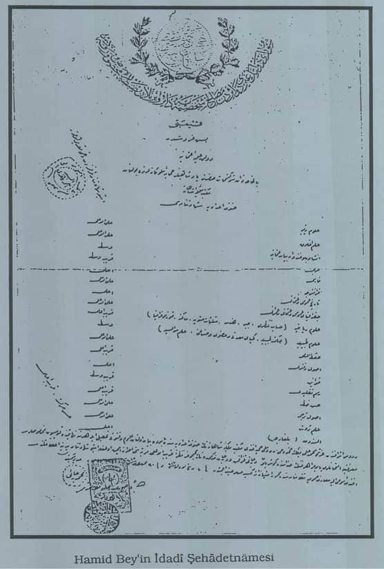
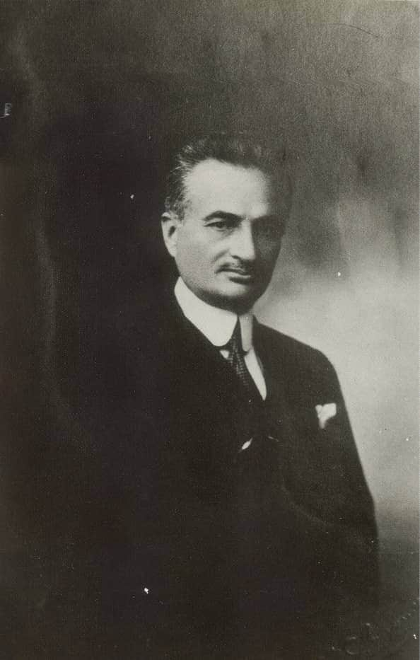

ÖNSÖZ
Elinizdeki kitap, 1995 yılında tamamlanmış bir doktora çalışmasının gözden geçirilmiş halidir. Ayrıca çalışmaya esas kaynak teşkil eden Vali Hamit Bey’in “Defter-i Hatırat” adını verdiği hatıralarına da, Millî Mücadele ve Türk idare tarihi gibi konularda yapılacak incelemelere yararlı olur düşüncesiyle bu kitap içinde yer verildi. Genelde Millî Mücadele’de mülkî idarecilerin askerî, siyasî, toplumsal olaylar üzerindeki etkilerinin araştırıldığı bu çalışmada, özelde dönemin yıldızı parlayan idarecilerinden “Deli” lakaplı Hamit Bey’in aynı yıllar içerisinde yoğunlaşan idarî çalışmalarına yakın plandan bakılmaya çalışıldı.
Millî Mücadele’nin hemen başlarında, başta Mustafa Kemal Paşa olmak üzere, askerî bürokrasinin inisiyatifi ellerine almalarıyla başlayan olaylar, dönemin olağandışılığı ile de ilgili olmak kaydıyla askerlerin gelişmeler üzerindeki etkinliğini artırdığına şüphe yoktur. Bunun ise, kısa zamanda askerî ve mülkî erkân arasındaki zaten çok da hoş olmayan ilişkileri daha da bozduğu gözden kaçmamaktadır. Ne var ki, zaman zaman şiddetli çatışmalara da varan görüş ayrılıklarının temelinde, vatanın düşman işgalinden kurtarılması noktasında bir asgarî müşterekte kolayca buluşabilmiş kişilerin farklı yetişme tarzlarını ve temsil ettikleri misyon farklılıklarını aramak icap eder. Hemen ifade etmek gerekirse, mülkî idarecilerin yakın geçmişin belirsizliklerle dolu siyasî ortamında, günlük politikanın daha fazla etki alanında bulundukları, bu itibarla da kaynağını siyasî çekişmelerden alan haklı haksız suçlamaların daha fazla etkisinde kaldıkları görülür.
İşgaller karşısında bazı vali, mutasarrıf, kaymakam gibi mülkî idarecilerin pasif ve hatta zaman zaman teslimiyetçi tutumları, bunlar hakkındaki kaygıları daha da artırmıştır. Bu sebeple Mustafa Kemal Paşa’nın önderliğinde kurulan askerî hiyerarşik sistem içinde mülkî idareciler kendilerine kolay yer bulamadılar. Bu cümleden olmak üzere, Millî Mücadele boyunca büyük bir handikap olarak ortaya çıkan ve nihayet bu güvensizliğin doğurduğu karşılıklı şüpheleri, kaygıları daha da artıran askerî-mülkî erkân ilişkileri çerçevesinde Vali Hamit Bey’in hayatı, Millî Mücadele dönemindeki faaliyetleri yoğunluk kazanmak kaydıyla bu çalışmanın konusu olmuştur.
Ankara Hükümeti Millî Mücadele boyunca idarî işlerden çok, doğal olarak siyasî ve askerî meselelerin çözümüne öncelik vermiştir. Bu yüzden de mülkî idarecilerin yöneticilik yeteneklerinden ziyade, problem ve polemik yaratmayacakları hususu özellikle dikkate alınmıştır. Bunun sonucu olarak da mülkî idarecilerin başlarına buyruk, dirayetli olmaları değil, aksine itaatkâr olmaları tercih sebebi sayılmştır. Bütün bu gelişmelerin askerî ve sivil bürokrasinin temsilcileri arasında yetki tartışmalarına sebebiyet verdiğini görmekteyiz. Pek tabii, çekişkenliği, tahammülsüzlüğü, ataklığı ve pervasızlığıyla bilinen Vali Hamit Bey’in bu çatışmaların dışında kalması düşünülemezdi.
Hamit Bey 20. yüzyıl başlarından itibaren çeşitli devlet hizmetlerinde bulunmuş ve sivil bürokrasinin köşe taşlarından biri haline gelmiştir. Nihayet, Mustafa Kemal Paşa’nın Samsun’a çıkışıyla başlayan yeni süreç içerisinde ilk olarak yine Mustafa Kemal Paşa’nın isteği doğrultusunda İstanbul Hükümeti tarafından Canik Mutasarrıflığı’na tayin edilmiştir. Daha sonra sırasıyla Trabzon, Erzurum ve Adana valiliklerinde bulunmuştur. Erzurum valiliğinden alındıktan sonra Sakarya Savaşı dönemine denk düşen günlerde Dahiliye Vekâleti Müsteşarlığı yapmıştır. Hamit Bey’in Millî Mücadele dönemindeki idarecilik hayatı ve bir mülkî amir sıfatıyla çalışmaları öncelikli olarak Samsun ve Trabzon’da asayişin sağlanması, Erzurum’da Şark Harekâtı öncesi ve sonrasında meydana gelen gelişmeler çerçevesinde daha ziyade ideolojik cephesi ağır basan olaylara vilâyetin penceresinden bakarak çözüm üretme arayışları, Adana valiliğinde ise, Ankara Antlaşması’ndan sonra Adana’nın tesellümü ve bir idare adamı olarak birikimlerinden istifade edilmek üzere Türk idarî teşkilâtının yeniden kurulması gayretleri ön plana çıkmıştır.
Bu çalışma hazırlanırken ilk elden kaynak niteliğinde olan Hamit Bey’in 1926’da kaleme aldığı 229 daktilo sayfasından ibaret “Defter-i Hatırat”ı ve memuriyetinin çeşitli dönemlerinde tuttuğu, elde edebildiğimiz altı adet cep defterinden ağırlıklı olarak faydalanılmıştır. Genellikle basit bir günlük halinde kaleme alınmış olmakla birlikte, Hamit Bey’in bazı konulardaki görüşlerini de içeren bu notlar tutuldukları tarihler dikkate alınıp sıraya konularak tarafımızdan numaralandırılmıştır. Bunlar metin içerisindeki ilgili yerlerde “Özel Notları” şeklinde isimlendirilmiştir.
Hamit Bey hatıralarını çoğu kere elinde bulunan ve temin edebildiği bazı belgelere dayandırmaya çalışmış ise de, çoklukla belleğindeki bilgilerle yetinmek zorunda kalmıştır. Bu sebeple, ana hatlarda olmasa bile, bazen şahıs adlarının ve tarihlerin hatırlanması gibi detaylarda az da olsa yanılgıya düşmüştür. Bütün bunlardan başka, “Defter-i Hatırat”ın bir savunma refleksi içinde kaleme alınmış olması gerçeği, anlatılan olayları büyük bir hassasiyetle dikkat süzgecinden geçirmemizi zorunlu kılmıştır.
Bu çalışma yapılırken, kızı merhume Nilüfer Erokay Hanımefendi’den babaları Hamit Bey’e ait rozet, hediye tablo, gazete nüshaları, ajandalar ve pek çok fotoğraf; bir diğer kızı merhume Belkıs Görgün Hanımefendi’den de bazı gazete nüshaları ve babalarının ölümüyle ilgili bazı yayın organlarında çıkan haber kupürlerinin toplandığı bir karton levha alındı. Nihayet, Hamit Bey’in torunu Gülden Armağan Hanımefendi, bu çalışmaya esas teşkil eden “Defter-i Hatırat”ı bize vermek inceliğinde bulundu. Yakın ilgilerinden ötürü kendilerine müteşekkirim. Hamit Bey’in cep defterine ve ajandalarına günü gününe kaydedilmiş kısa notlar halindeki bilgiler, “Defter-i Hatırat” kaleme alınırken müracaat edilen esas envanter olmuştur. Hatıraları yayına hazırlarken bazı hallerde zaman ve mekânla ilgili çok net olmayan yerlerde dipnotlarla açıklama yapma ihtiyacı hissedilmiştir. Ayrıca, İçişleri Bakanlığı arşivinde bulunan 28 numaralı sicil dosyasındaki hizmet cetvelindeki bilgilerle hatıralardaki bilgileri göreve başlama ve bitiş tarihleri ayrıca hizmet süreleri itibarıyla karşılaştırılmıştır.
Bu çalışmanın her safhasında esirgemediği yardımlarından dolayı danışman hocam Sayın Prof. Dr. Enver Konukçu’ya, çalışma süresince karşılaştığım sorunların çözümünde bilgi ve tecrübeleriyle yol gösteren hocam Sayın Prof. Dr. Dursun Ali Akbulut’a teşekkür ederim. Nihayet, çalışmamızın kitap haline gelme aşamasında teşvik ve desteklerini gördüğüm Özer’in, Gürhan’ın, Levent’in ve Enis’in hisselerine düşen teşekkürü ifade etmek zevkli bir borçtur.
Faydalı olacağı ümidiyle.
DR. HALİT EKEN
Mart 2007, BURSA
KISALTMALAR DİZİNİ
ATASE : Askeri Tarih Stratejik Etüt Başkanlığı Arşivi
ATTB : Atatürk’ün Tamim Telgraf ve
Beyannameleri
AÜAİİTED : Atatürk Üniversitesi Atatürk İlkeleri ve
İnkılâp Tarihi Enstitüsü Dergisi
AÜDTCF : Ankara Üniversitesi Dil ve
Tarih-Coğrafya Fakültesi
bkz. : Bakınız
BOA : Başbakanlık Osmanlı Arşivi
BTTD : Belgelerle Türk Tarihi Dergisi
C. : Cilt
Çev. : Çeviren
D. : Dosya
Defter-i Hatırat : Vali Hamit Bey’in Yayınlanmamış Hatıraları
Fih. : Fihrist
GCZ : Gizli Celse Zabıtları
HTVD : Harp Tarihi Vesikaları Dergisi
İBA : İçişleri Bakanlığı Arşivi
Kls : Klasör
No. : Numara
Özel Notları : Vali Hamit Bey’in Cep Defterleri
s. : Sayfa
TBMM : Türkiye Büyük Millet Meclisi
vd. : ve devamı
ves. : Vesika
ZC : Zabıt Ceridesi
I. BÖLÜM- MİLLÎ MÜCADELE BAŞLARINA KADAR HAMİT BEY - GİRİŞ
A. HAMİT BEY’İN YETİŞMESİ VE İLK GÖREVLERİ
1. Hamit Bey’in Ailesi ve Yetişmesi
Hamit (Kapancı) Bey1, 1 Eylül 1878 tarihinde Cezayir-i Bahr-i Sefid vilâyetinin merkezi olan Rodos şehrinin Cedid Mahallesi’nde dünyaya geldi2. Babası Kapancızâde Mehmed Ali Efendi3, annesi Şerife Hanım’dır.
1 Hamit Bey, Soyadı Kanunu’nun kabulünden önce vefat ettiği halde, bazı eserlerde ailesinin unvanından hareketle isminin Hamit Kapancı olarak kaydedildiği görülmektedir. (Bkz. Hayri Orhun ve diğerleri, Meşhur Valiler, Ankara, 1969, s.391; Ali Çankaya, Yeni Mülkiye Tarihi ve Mülkiyeliler, Cilt.III, Ankara, 1969, s.954) Nitekim, Hamit Bey’in çocukları da babalarının vefatından sonra Kapancı soyadını kullanmışlardır.
2 İçişleri Bakanlığı Arşivi, D.742, Nüfus Tezkire-i Osmaniyesi; I.B.A, D.742, Hamit Bey’in Haltercümesi Mehmed Ali Efendi ile Şerife Hanım’ın Hamit’den başka biri erkek (Ahmed) ikisi kız (Seniha ve İsmet) üç çocukları daha vardı.
3 Cezayir’den gelerek Rodos’a yerleşmiş varlıklı bir ailenin çocuğu olan Mehmed Ali Efendi, kendini iyi yetiştirmiş aydın bir insandı. Rodos’ta uzun süre Belediye Başkanlığı görevinde bulunarak önemli eserler bırakmış, bu arada Ada’ya ilk atlı arabayı da getirmiştir. Daha sonra sırasıyla, Ticaret ve Ziraat Odaları Reisliklerinde ve nihayet istinaf Mahkemesi Ceza Dairesi Azâlığında bulunmuştur. (Defter-i Hatırat, s.l; İBA, D.742, Hamit Bey’in Haltercümesi) Aynı zamanda Akka Kalesi Kumandanı Cezzar Ahmed Paşa’nın yeğeni olan Mehmed Ali Efendi, 70 yaşını aşkın olarak yakalandığı “cystitis/sistit = mesane iltihabı” hastalığının tedavisi için limanda kendisini bekleyen gemiyle İstanbul’a gitmeye hazırlanırken 5 Haziran 1905’te vefat etti.
İlk tahsilini Rodos’ta özel hocalar nezaretinde Türkçe ve Fransızca olarak yapan Hamit4, daha sonra on beş yaşına kadar İtalyan Alyans ve Rodos Frere mekteplerine devam etti5. 1893’de Frere’nin son sınıfındayken casusların tertibinden doğan bir padişah emriyle yabancı okula devam etmesi yasaklandı. Babasının bütün ısrarlarına rağmen okulla ilişiği kesilen Hamit, bir yıl kadar Vilâyet Tercüme Kalemi’nde çalıştı. Ne var ki, zaman içerisinde kendisindeki öğrenim hevesinin gittikçe arttığını ve adeta isyana doğru ittiğini görerek, İstanbul’a gidip Galatasaray Sultanîsi’ne girmeye karar verdi. Ancak, o zamanlarda Türkler arasında çocuğunu tahsil için bile olsa memleketinden ayırmak pek makbul sayılmadığından, babasını ikna etmek pek kolay olmadı. Nihayet, bu güçlüğün ortadan kalkması beklenirken, 1895 Ağustos’unda İstanbul’a gitmek üzere Rodos’a gelmiş bulunan Köyceğizli Ali Rıza Paşa, Mehmed Ali Efendi’nin rızasını olarak, Hamit’i beraberinde İstanbul’a götürdü.
4 İBA, D.742, Hamit Bey’in sicil özetine esas olmak üzere İdadi ve Mülkiye Şehadetnâmeleri sureti; Babıâli Memurin-i Mülkiye Komisyonu Sicil Ahval İdaresinin 21 Teşrinievvel 321 tarihli müzekkeresi.
5 Çankaya, Mülkiyeliler III, s. 955.
Devlet memuriyetinde kolaylıkla ilerlemek gayesiyle Galatasaray Sultanîsi’ne girmek niyetinde olan Hamit’i bu arzusundan Rodos’taki sürgün yıllarında babasıyla gayet dostane bir hayat geçirmiş olan yazar Ahmet Midhat Efendi vazgeçirerek, onu Mekteb-i Mülkiye’ye girmeye ikna etti. Esasında Hamit’in endişesi Arapça ve Farsça derslerinden başarısız olacağı korkusu idi. Ne var ki, bu korkusunu da kendisini İstanbul’a götüren Ali Rıza Paşa vasıtasıyla tanıdığı ve bütün tahsil hayatı boyunca büyük saygı gösterdiği Dr. Mustafa Paşa’nın yakın ilgisi sayesinde yenmeyi başardı6.
6 Defter-i Hatırat, s. 1.
Kısa sürede eksikliklerini tamamlayarak arkadaşlarının seviyesine ulaşan Hamit, 13 Temmuz 1899 tarihinde Mekteb-i Mülkiye’nin İdadî kısmından mezun oldu7.
7 İBA, D.742, 4 Eylül 321/17 Eylül 1905 tarihli Idadî Şehadetnâmcsi.
Hamit Bey’in ilk öğrenimini gördüğü Rodos’taki yabancı okullar ile, Mülkiye’nin Idadî kısmı arasında, eğitim sistemlerindeki farklılıklar açısından yaptığı karşılaştırmalar, onun meslek hayatının hemen her safhasında ortaya koyduğu muhalefetinin, gerçekte inandığı şeylerden taviz vermeden iyinin ve güzelin peşinde koşan bir adama hamledilmesi lâzım geldiğini gösteren işaretlerdir.
Bu karşılaştırmalar ve tenkitler dikkate alındığında, Hamit Bey’in bütün siyasî hayatı boyunca sergilediği tavırlar daha anlaşılabilir bir hâl almaktadır. İdadî’den sonra Mekteb-i Mülkiye’nin Âlî kısmına giren Hamit, arkadaşları tarafından takdir edilen, saygı ile sevilen, bilgili, olgun, özü sözüne uygun bir gençti. Siyasî fikirlerinin henüz şekillenme aşamasında, Sultan Abdülhamit idaresine fikren isyan halinde olan diğer arkadaşları gibi hemen her günü endişe ve heyecan içinde geçiyordu8. Taklitten ve gözboyacılıktan başka bir şey görmediğini söylediği Mekteb-i Mülkiye’den 13 Temmuz 1902’de mezun oldu9. Mekteb-i Mülkiye’yi bitirdiğinde Türkçe, Fransızca ve Rumcaya okuyup anlama, İspanyolcaya konuşma, Bulgarcaya ise okuyup yazma derecelerinde vâkıf olduğu hâl tercümesinde kayıtlıdır10.
8 Çankaya Mülkiyeliler III, s. 960-961
Hamit Bey, henüz Mülkiye öğrencisi iken Selanik Ceza Dairesi Reisliğinde bulunmuş Neşet Bey’in kızı Fikret Hanım’la evlendi11.
11 Neşet Bey, ilk önce kızının yaşının henüz küçük olmasını sebep göstererek bu evliliğe karşı çıktıysa da ısrarlar karşısında en az iki yıl çocuk yapmamaları şartıyla razı edildi. Neşet Bey vatan şairi Namık Kemal’in amca çocuğu ve aynı zamanda kayınbiraderi idi. Diğer yandan Hamit Bey, bu evlilik sonucu Talât Paşa ile de hısımlık bağı kurmuş oluyordu.
B. HAMİT BEY’İN KAYMAKAMLIKLARI
Hamit Bey, Mekteb-i Mülkiye’den mezun olduktan sonra 25 Ağustos 1902’de Cezayir-i Bahr-i Sefid Vilâyetine maiyet memuru olarak tayin edilerek, buradaki görevine 3 Kasım 1902’de başladı12.
12 İBA, D.742, Hamit Bey’in Haltercümesi. Hamit Bey’in Sicil Dosyasında “Hıdemat-ı Devlete Tarih-i Dühûlu 21 Mart 318/3 Nisan 1902” olarak kaydedilmiştir ki, Mülkiyeden Temmuz 1902’de mezun olduğu dikkate alınırsa bu tarihin yanlış olduğu anlaşılır. Öte yandan, Çankaya, Hamit Bey’in Maiyet Memurluğuna başlama tarihini Eylül 1902 olarak vermektedir {Mülkiyeliler III, s.955
Maiyet memurluğuna ilave olarak 2 Şubat 1903’te Meis adası kaymakam vekâletine tayin edildi13.
13 İBA, D.742, Hamit Bcy’in Haltercümesi
14 Eylül 1903’de Meis adası kaymakam vekâleti görevi sona eren Hamit Bey, vilâyet merkezi olan Rodos’a dönerek vilâyetin Hariciye dairesinde “Yunan İdealizmi” ile ilgili yazışmaları incelemeye başladı. Özellikle, Londra Konferansı’nda imzaladığımız protokol gereğince kabul ettiğimiz “Yunan tâbiyeti” meselesi üzerinde Namık Kemâl’in görüşlerini ihtiva eden raporları okuyup inceleme fırsatı buldu14.
14 Defter-i Hatırat, s. 10. Namık Kemâl’in bu raporlarını okudukça kendisine duyduğu hayranlığın daha da artmasından olsa gerek Hamit Bey, aynı günlerde Rodos’ta dünyaya gelen ilk çocuğunun adını Namık Kemâl koymuştur.
Hariciye dairesinde çalışırken, Rodos’ta Rumların zorluk çıkardıkları nüfus sayımı işlerinin gözetimine memur edildi15. Buradaki vazifesini tamamladıktan sonra 14 Ağustos 1904’ten 23 Ekim 1904’e kadar16 “hükümetle alâkası sadece yılda 60.000 kuruş vergi vermekten ibaret olan” Kerpe adası kaymakam vekâletinde bulundu17. Hamit Bey, Kerpe’den vilâyete dönüşünde yeniden, maiyet memurluğunun sonuna kadar görev yapacağı Umur-ı Ecnebiye Müdir Vekâleti’nde Tahrir-i Nüfus Komisyonu Başkanı olarak çalışmaya başladı18.
15 Defter-i Hatırat, s. 11
Maiyet memurluğunun sonunda Cezayir-i Bahr-i Sefid Vilâyeti Valiliğine yazılan mülahaza ile Dahiliye Nezaretince “erbab-ı ehliyet ve ru’yeti tasdik kılınan” Hamit Bey, kaymakamlığa terfi etti19. Vali vekili Şükrü Bey’den yerlilerin dillerini ve adetlerini iyi bildiği için, civar vilâyetlerden birine tayininin münasip olacağına dair bir inhanâme alarak İstanbul’a giden Hamit Bey20 Dahiliye Nezaretinin aylar süren formalitelerinden sonra nihayet, Selanik Vilâyeti dahilinde yeni teşkil olunan Karacaabad kazasına 19 Nisan 1906’da tayin olunarak 24 Mayıs 1906’da buradaki görevine başladı21. Hamit Bey’in buradaki çalışmalarının ağırlık noktasını çetelerle mücadeleler oluşturmaktadır.
19 iBA, D.742, Babıâli Memurîn-i Mülkiye Komisyonu Sicil Ahval İdarcsi’nce hazırlanan tercüme-i hâl hülasası.
Hamit Bey, 1909 yılı Aralık ayında terfian Raznik kazasına tayin olundu. Ancak, Karacaabad’dan ayrılıp yeni görev yerine gitmekte iken yolda, kendisine bu tayinden vaçgeçildiği haberi ulaştı. Çünkü kaza dahilindeki huzurun varlık sebebini Hamit Bey’in gayretlerine atfeden Karacaabadlılar telgrafhaneyi basmış ve ilgili yerlere yaptıkları müracaatlar ile kaymakamlarının tayinini durdurmuşlardı. Böylece yarı yoldan geriye dönen Hamit Bey, bundan böyle altı ay kadar daha burada görev yaptı22.
22 Defter-i Hatırat, s. 28-29.
Hamit Bey, “mücerreb olan ehliyetine ve Katerin kazasının kesbettiği ehemmiyete binaen vilâyetin iş’arı üzerine”23 asayişi ve güvenliği tesis etmek vazifesiyle24 Karacaabad kaymakamlığından 27 Haziran 1909’da Katerin’e tayin olunup, 30 Haziran 1909’da buradaki görevine başladı25.
23 İBA, D.742, Sicil Dosyası, No. 28.
20 Eylül 1909’a kadar süren hizmet süresi içinde, Hamit Bey, asayiş ve inzibat meseleleriyle ve görevini kötüye kullanan memurların işten el çektirilmesiyle uğraştı. Bütün bunları yaparken Selanik Valisi Daniş Bey’le pek çok konuda anlaşmazlığa düştü�.
Terfian Köprülü kazası kaymakamlığına tayin olunan Hamit Bey, buradaki vazifesine 23 Eylül 1909’da başladı ve 24 Ekim 1909 tarihine kadar görev yaptı26.
26 İBA, D.742, Sicil Dosyası No. 28 Hamit Bey’in Tokad Sancağı Mutasarrıflığına tayinine dair irade-i seniyye’de Köprülü Kaymakamlığı’ndan müstafi gösterildiği halde, buradan naklen Istitlâat Komisyonu’na geçtiği anlaşılmaktadır. (İBA, D.742, Dahiliye Nezareti Sicil Ahval Idare-i Umumiycsi’nin Sivas Vilayetine 20 Şubat 327/4 Mart 1912 tarihli cevabî tahriratı.
Hamit Bey’in Köprülü kaymakamlığı tahakküm sevdasında bulunduğunu ifade ettiği meslek harici Vali Daniş Bey’le bir kaç defa çatışmaktan ibaret kaldı27.
27 Defter-i Hatırat, s. 33.
1. Selanik Vilayeti İstitlaât Komisyonu Azalığı
Makedonya’da her geçen gün artan çetecilik faaliyetlerini önlemeye yönelik olarak, o zaman için özel bir tedbir almak üzere çıkarılmış bulunan “Çeteler Kanunu”nun28 yeniden tatbikine mecburiyet hâsıl olunca bu kanuna istinaden kurulmuş bulunan Istitlâat Komisyonu’nun daha etkili bir şekilde çalışabilmesi için, eşkiya takibindeki tecrübelerinden istifade olunmak üzere Hamit Bey Selânik’e çağrıldı.
28 Meşhur Valiler, s. 417.
24 Kasım 1909’da başladığı29 bu ağır ve o nispette tehlikeli hizmeti layıkıyla yapabilmek için ilk iş olarak, istitlâat kelimesiyle ifade olunan haber alma ve bilgi edinmenin ötesinde, bizzat takibatı yerinde idare etmenin gereğine inanan Hamit Bey, öncelikle kendisi ayrıldıktan sonra asayişi yeniden bozulan Katerin’e döndü�.
29 İBA, D.742, Dahiliye Nezareti Sicil Ahval Daire-i Umumiyesi’nden Müdiriyete 27 Mart 326 tarihli yazı.
Eşkiya takibinde en mühim başarı faktörünün sabır olduğunu ifade eden Hamit Bey, bu yoldaki çalışmalarında inatçı ve kararlı tutumunun yanında gözüpek tavırlar sergilemekten de hiç çekinmedi30. Onun pek kısa sürede kazandığı başarılar hemen her kesimin dikkatini fazlasıyla çekmeye yetti. Selanik’te yayınlanan Rumeli Gazetesi bu konuda; “olağanüstü kabiliyetiyle temayüz eden ve eşkiya takibindeki azmi ve temin eylediği muvaffakiyetleri Hamit Bey’in idare hayatındaki fasl-ı mahsusu teşkil eder”31 diye yazarken, yine Selanik’te Rumların çıkardıkları Neo Elitiya gazetesi ise Hamit Bey’in bu başarıları karşısında onu yıpratmaya yönelik yazılar yayınlamaktan geri kalmadı32.
30 Defter-i Hatırat, s. 35 vd. Hamit Bey, Istitlâat Komisyonu’nda çalışırken, muzır faaliyette bulunduğu sabit olan fakat suçu belgelenemeyen bir Rum öğretmenin ağzından laf almak için, öğretmenin gözetim altında tutulduğu hapishaneye mandıracı kılığında girmiş ve istediği bilgileri almıştır. Bundan başka rüşvet aldığı iddia olunan bir jandarma subayına rüşvetin verileceği handa çoban kıyafetiyle suçüstü yapmış, hatta bazı hallerde Rum eşkıyasının arasına palikarya kıyafetiyle dahi girmiştir.
Çeteler Kanunu’nun uygulanması sırasında ortaya çıkan yolsuzluklardan doğan siyasî zaruretler sonucu, Istitlâat Komisyonu lağvedildi. Hamit Bey’e göre bahse konu olan yolsuzluklar, kanunun eşkiya yakınlarının sürülmesine ait 31. maddesinin tatbikatında yapılan suiistimallerdi. Yapılması gereken de kanunun kaldırılması değil, yolsuzluğa karışanları cezalandırmak olmalı idi33.
33 Defter-i Hatırat, s. 42.
Hamit Bey, Istitlâat Komisyonunun lağvedilmesi üzerine açıkta kaldı ve maaşı kesildiği için geçim derdine düştü�. Ancak kısa bir süre sonra eşkiyalığın yeniden tehlikeli boyutlara ulaşması üzerine, hükümetin aldığı yeni tedbirler çerçevesinde kurulan İstihbarat Komisyonu’nda çalışmaya başladı. Bu komisyonda iken, Olimpos Dağı’nda tarihî ve ilmî araştırmalar yaparken kaçırılan Prof. Richter eşkiyanın elinden kurtarıldı34.
34 Defter-i Hatırat, s.42.
2. İttihat ve Terakki Cemiyeti Müfettişliği
İstihbarat Komisyonu’nun da Istitlâat Komisyonu gibi lağvı üzerine 23 Kasım 1910’da buradaki görevi sona eren Hamit Bey35 bu günlerde, İttihat ve Terakki Cemiyeti Merkez-i Umumî’sinin isteği üzerine cemiyetin müfettişliğini kabul etti36. Hamit Bey, hatıralarında bu görevi kabul etmesinin gerekçesini şöyle izah etmektedir37:
35 İBA, D.742, Sicil Dosyası, No.28.
36 Defter-i Hatırat, s. 44. Meşhur Valiler’de Hamit Bcy’in bu görevi sağlık sebeplerini ileri sürerek kabul etmediği kaydediliyorsa da, (s.417) gerçekte Hamit Bey aşağıda da görüleceği üzere bir müddet burada çalıştıktan sonra bu defa sağlık sebepleriyle vazifeden affını isteyecektir.
37 Defter-i Hatırat, S. 44-45.
“Maksadım, Merkez Heyeti’ni politikacılıktan ayırıp, içtimaî meselelere döndürmek içindi. Gerçekten, seviyesi müsait olan merkez muhitinde, heyeti teşkil eden azimkar arkadaşlarımla bir süre çalıştık. Fakat, içtimaî ve siyasî hayata pek uzak bulunan mülhakat kulüplerinin selâhiyetlerini şahsî ihtiraslarının tatminine, kendilerine alet olmayan memurların kovulmasını istemek suretiyle aldıkları vaziyet ve Merkez-i Umumî’nin kapıldığı hükûmetçilik hırsı, hevesimizi çabuk kırdı. Böylece tuttuğumuz yolun zor olduğunu anladık. Nüfuzlarını genişletmek için etrafına saldıran, memur çıkarıp atamakla uğraşan Umumî Merkezciler, memleketin hayatıyla ilgili etraflarında kurulan tertiplerden, yapılan gürültülü hazırlıklardan ne yazık ki habersiz kalmışlardı.”
Hamit Bey, bu politika girdabının içerisinde düşündüklerini gerçekleştirmenin imkânsız olduğunu anlayınca, memleketin geleceği ile ilgili endişelerinin ve her iyi niyetli yaklaşımın sonuçsuz kalmasının verdiği karamsarlığın kendisini manen ve maddeten fazlasıyla yorduğunu beyan ederek vazifeden affını istedi. 1911 Kasım’ında izin alarak, tedavi amacıyla Viyana yakınlarındaki Karlsbad Senatoryumu’na gitti38.
38 Defter-i Hatırat, s. 45.
Asabi bir baş ağrısı ve şiddetli mide ağrılarının39 tedavisi amacıyla Viyana’ya giden Hamit Bey, 30 Kasım 1911’de Selanik’ten trenle ayrılışından itibaren, yolculuğunu, hastane günlerini, kendisine uygulanan tedavi yöntemlerini günü gününe cep defterine kaydetmiştir40. Tedavilerden arta kalan zamanlarda şiddetli baş ağrılarına rağmen, burada kaldığı süre içerisinde, sürekli olarak okuyup, okuduklarından ilgi çekici pasajları defterine not etti. Başta Gustave Le Bon olmak üzere Fransız düşünürlerin kitaplarından hürriyet, demokrasi, otorite, politika, kitle hareketleri ve sosyal hadiseler ile ilgili notların alınmış olması ilgi çekicidir41.
39 Hamit Bey, hayatının sonuna kadar bu şiddetli mide ağrıları ile yaşadı. Bu sebeple, hemen her fırsatta, otururken ayaklarını mide hizasının üstünde tutmaya çalıştı. Onun bu hareket tarzı zaman zaman kibirliliğine, ukalalığına ve şöhretiyle mütenasip deliliğine yorulmuştur.
C. HAMİT BEY’İN MUTASARRIFLIKLARI
1- Tokat Sancağı Mutasarrıflığı
Hamit Bey Viyana dönüşü 3 Şubat 1912’de Tokat Sancağı Mutasarrıflığına tayin edildi42. Ancak, onun çok genç yaşta mutasarrıflığa terfi ettirilerek Tokat’a tayininin yapılması, muhalefetin yoğun eleştirilerine yol açtı. Muhalefet, bu tayinin gerisinde Hamit Bey’in üç buçuk ay süren İttihat ve Terakki Cemiyeti Müfettişliği vazifesinin olduğu iddiası ve söz konusu tayinin partizanca yaklaşımlarla yapıldığı kanaatindeydi43.
42 İBA, D.742, Sicil Dosyası No. 28
43 Defter-i Hatırat, s. 45, Hamit Bey, Mutasarrıflığa terfiinin ve tayininin 1909’da Dahiliye Nezareti Tensik Komisyonu’nca kararlaştırılmış olduğunu, fakat o gün için yüksek makamları işgal eden kişilerin gözüne batacağı gerekçesiyle bir müddet için geciktirildiğini kaydetmektedir.
Tokat’taki vazifesine başlamak üzere yola çıkan Hamit Bey’in Selanik İstasyonu’ndan büyük bir kalabalık tarafından uğurlanmasını Rumeli Gazetesi okuyucularına şöyle duyuruyordu:
“Sabık İstitlâat Komisyonu azası Hamit Bey, tayin buyrulduğu Tokat Mutasarrıflığında, zimam-ı idareyi ele almak üzere evvelki gün şehrimizden hareket etmiş ve istasyonda birçok dostları ve arkadaşları tarafından pek gösterişli bir şekilde uğurlanmıştır. Olağanüstü kabiliyetiyle temayüz eden ve eşkiya takibindeki azmi ve temin eylediği muvaffakiyetler Hamit Bey’in hayat-ı idaresindeki fasl-ı mahsusu teşkil eder.
“Hamit Bey’in Tokat Mutasarrıflığına tayini bizde adam var-yok meselesinin sırrının halledildiğine delâlet eder. Erbab-ı liyakat ve faaliyet iş başına getirilince, adam medlûlündeki anane zinciri kırılmış olur. Faaliyet ve dirayeti cümlenin malûmu olan Hamit Bey’in memuriyet-i cedidesinde dahi başarılarının devamını dileriz.”44
44 Meşhur Valiler, s. 413-414.
Hamit Bey, 10 Şubat 1911’de yeni memuriyet yerine gitmek üzere İstanbul’dan ayrıldı45 Samsun’a kadar yaptığı vapur yolculuğu esnasında, Tokat’ta uzun süre Reji memurluğunda bulunmuş ve halen Trabzon Mebusu olan Kofidi Efendi’den burasıyla ilgili bilgiler aldı46. Samsun’dan itibaren geçtiği bütün köy ve kasabalarda fevkalâde konukseverlikle karşılaşınca, bu bölge insanıyla ilgili olarak henüz İstanbul’da iken kendisine verilen bilgilerin yanlış ve önyargılı olduğu gerçeğini daha Tokat’a varmadan anlama fırsatını buldu. Ona göre bu tezadın yegâne sebebi, memlekete partizanlığın ve buna dayalı olarak adam kayırmanın ve korumanın fikirden önce girmiş olmasıydı47.
45 Özel Notları, Defter No. 2, s. 10.
Tokat’ta ilk iş olarak güvenlik ve asayiş işlerinin başarıya ulaşması için önce kaza merkezindeki karakolları ardından da Kızılca, Çiftlik (Çamlıbel) Almus, Pazar (Akbelen) ve Bizeri nahiyelerini telefon hatlarıyla merkez kazaya bağlattı48.
48 İBA, D.742,4 Eylül 328/17 Eylül 1912 tarihli Tokad Mcclis-i İdare Mazbatası. Verilen ödeneğin planlanan işi yapmaya yetmeyeceği anlaşılınca halkın yardımına müracaat edildi. Ancak, pek çok kişinin tereddüt göstermesi üzerine önce teller ve makineler İstanbul’dan getirtilmiş, vatandaşlardan bazıları ancak telefonla konuşturulduktan sonra ikna olarak para vermiştir. (Defter-i Hatırat, s. 50)
a. Hamit Bey’in Tokat Mutasarrıflığından Azledilmesi
1912 seçimlerini İtilâfçıların kazanmalarından sonra kabine değişti. Yeni kabine uzun bir mazuliyet listesi hazırladı. Bunların içinde 3 Eylül 1912 tarihli mazuliyet belgesiyle görevine son verilen Hamit Bey de vardı49. Doğrusu Hamit Bey’in seçimlere doğrudan müdahale edip etmediği tam olarak bilinmemekle beraber, Tokat’a İttihat ve Terakki Cemiyeti Müfettişliğinin kendisine sağladığı nüfuzun tesiriyle tayin olunduğu yolundaki kuşkular ve nihayet seçimlerle ilgili olarak hakkında yapılan spekülasyonlar bu seçimlerden galip çıkan Hürriyet ve İtilâf Partisi tarafından görevinden azledilmesi için yeter sebep görülmüş olsa gerekir50. Hamit Bey’i bu meselede ziyadesiyle üzen, memuriyet hayatında ilk defa olmak üzere hak etmediği bir muameleye tâbi tutularak azledilmesinden çok, yetişmeye ve büyümeye müsait olan bu yerde daha fazla hizmet etmekten men edilmesi, ayrıca yerine, liyakatsiz olarak vasıflandırdığı Haydar Bey’in tayin edilmiş olmasıdır51. Hamit Bey’in Tokat’taki çalışmaları o günün şartları dikkate alınacak olursa yerel dinamikleri küçük çapta da olsa harekete geçiren bir “kırsal kalkınma denemesi” şeklinde değerlendirilebilir.
49 İBA. D.742, Sicil Dosyası, No. 28.
50 Hamit Bey’in Tokad’a tayin ve azil tarihiyle ilgili bazı eserlerde yanlış ve eksik bilgiler mevcuttur. Meşhur Valiler’de bu konuyla ilgili herhangi bir tarihe rastlanmazken (s. 421) Çankaya, “Hamit Bey’in Tokad’daki görevinin hangi sebeple sona erdiği bilinmemektedir” dedikten başka, tayin tarihini Nisan 1911, istifa olarak kaydettiği azledilme tarihini de Kasım 1911 olarak yazmaktadır. (Mülkiyeliler, III, s.955) 4 Eylül 1328 / 17 Eylül 1912 tarihli Tokad Meclis-i İdare Mazbatasında (İBA D.742) buradaki görev süresinin 6 ay 20 gün olduğu ifade edildiğine göre, Sicil Dosyasında kaydedildiği üzere başlama tarihini 17 Şubat 1912, azil tarihini de 5 Eylül 1912 olarak kabul etmek gerekecektir.
51 Defter-i Hatırat, s. 58.
Ne var ki, Meşrutiyet devrinde, mülkî idarede meslekî bilgisi olmayan kişilerin fazlasıyla bulunması, en büyük eksikliklerimizdendi. Memleketin geleceğini çıkmaza sokan ve etkileyen, birçok vali raporları, halkın şikâyetleri, memurların birbirlerine iftiraları ve ihbarları ile ilgili dosyalar alelusul karara bağlanıyordu52.
52 Tahsin Uzcr, Makedonya Eşkıyalık Tarihi ve Son Osmanlı Yönetimi, Ankara 1987, s.257.
2- Kale-i Sultaniye (Çanakkale) Mutasarrıflığı
Hamit Bey, Tokat’tan ayrıldıktan sonra bir buçuk yıl kadar devlet memuriyetinden uzak kaldı. Bu dönemde, ilk olarak İstanbul’un karışık siyasî havasının dışında kalmak için İzmir’e gitti53. 1912 Eylül’ünün ortalarında İzmir’e geldiğinde Balkan Harbi patlak verdi. Hamit Bey, Aralık ayı sonuna kadar kaldığı İzmir’de İttihatçıların bütün İzmir’i ayağa kaldıran büyük mitingini düzenleyenler arasında yer aldı54. Ülkenin kaygan politik ortamında, şimdiye kadar aktif siyasetin dışında kalmaya özen göstermiş olmasına, rağmen Hamit Bey, bundan böyle olayların seyrine bağlı olarak ister istemez geçici de olsa politikanın içine girmiş bulunuyordu. Bununla beraber, yıllar sonra geriye dönüp baktığında o gün için yaşanan siyasî olayları aşağıdaki şekilde değerlendirecektir55:
“İttihatçılar, gaileli ve mevsimsiz bir zamanda ortaya attıkları milliyet cereyanlarının taşkınlıklarına engel olacak tedbirleri alamadılar, daha doğrusu bunları kanalize edemediler. İtilâfçılar da gözlerine çarpan tehlikeye karşı siyaset ve askerlik itibariyle gafil avlandılar.”
Balkanlardan kopup gelen acı haberler onu artık İzmir’de huzursuz etmeye başlayınca, İstanbul’a gitmeye karar verdi. Ancak, ilk günlerde İstanbul’da da rahatça hareket etme imkânı bulamadı. Hükümetin takibinden dolayı kendisi gibi açıkta olan ve İstanbul’da bulunan Vali Muammer Bey’le56 bir hayli sıkıntılı günler geçiren Hamit Bey, nihayet Yıldız’da kurulan Gönüllü Taburu’na katılarak, Kumburgaz’da Bulgarlarla birkaç kez çatışmaya girdi. Bu sırada Büyük Kabine de çekilmiş bulunuyordu. Hamit Bey, daha sonra Gelibolu’ya nakledilen Gönüllü Taburu’yla buraya gitti. 1913 Mart’ında Gelibolu’ya gelen Talât Paşa, Hamit Bey’i yeniden devlet işlerine döndürmek üzere İstanbul’a götürerek, Dahiliye Nâzın Hacı Adil Bey’le tanıştırdı57. Kısa bir müddet sonra da Hamit Bey, Talât Paşa’nın tavassutuyla Kale-i Sultaniye Mutasarrıflığına tayin edildi.
56 Muammer (Cankardaş) Bey, Hamit Bey’in bacanağıdır. 1874 yılında İstanbul’da doğan Muammer Bey, Mülkiyeyi bitirdikten sonra uzun yıllar kaymakamlıklarda bulunmuş, Kayseri Mutasarrıflığı, Adana Valiliği ve nihayet büyük hizmetler yaptığı Sivas Valiliği’nde çalışmıştır. Konya Valiliği’nde iken Malta’ya sürüldü. Malta dönüşü Kayseri Mutasarrıflığı ve İkinci dönem TBMM’de Sivas Mebusluğu yaptı. Yokluk içinde emekli olarak yaşadığı Kayseri’de verem hastalığından Şubat 1928’de vefat etti. Mezarı Kayseri’dedir. (Geniş bilgi için bkz. Meşhur Valiler, s.309–339).
57 Defter-i Hatırat, s. 60.
“Faaliyet-i matlubeyi haiz bulunması üzerine” Kale-i Sultaniye Mutasarrıflığına tayin edilip, 16 Mart 1913’te buradaki görevine başlayan Hamit Bey58 Balkan Harbi’nin son safhalarına rastlayan mutasarrıflığı müddetince, harbin ortaya çıkardığı olumsuzlukları ortadan kaldırmak, asayiş ve idareyi temin etmek, büyük boyutlara ulaşmış bulunan levazım ve iaşe işlerindeki yolsuzluklarla sonuna kadar mücadele etmek için didindi durdu59.
Bütün gayretlerine rağmen, Nezaretle anlaşmak ümidini tamamen yitiren Hamit Bey, hastalığını bahane ederek mezuniyet aldı ve vazifesini terk ile İstanbul’a gitti. Kale-i Sultaniye Mutasarrıfı olarak izinli bulunduğu İstanbul’da bir ay kadar dinlendikten sonra, Dahiliye Nezaretince görevinin başına dönmesi yahut Urfa veya Gelibolu livalarından birini tercih etmesi yolundaki ısrarlara “asabının müsaadesizliği yüzünden bir süre için de olsa idare başında bulunmak istemediğini” ileri sürerek karşı çıktı. Bununla beraber, aynı günlerde teklif edilen Birinci Sınıf Mülkiye Müfettişliğini kabul etti60. 5 Temmuz 1913’te Kale-i Sultaniye Mutasarrıflığı’ndan ilişiği kesilen Hamit Bey61 iki gün sonra Mülkiye Müfettişliğine tayin edildi62.
60 Defter-i Hatırat, s. 64.
61 İBA, D.742, Sicil Dosyası, No. 28. Kalc-i Sultaniye Mutasarrıflığı’nın 4 Kanunuevvel 331/17 Aralık 1915 tarih ve 315 Numrolu tahriratında Hamit Bey’in buradaki vazifesinin 22 Cemaziyelevvel 329 da sona erdiği belirtilmektedir ki bu tarih 21 Mayıs 1911’e tekabül eder.
62 İBA, D.742, Sicil Dosyası, No. 28; İBA D.742 Dahiliye Nezareti Memurin Müdüriyetinin Hamit Bey’e 9 Temmuz 1913 tarihli tayin tebliğ yazısı. Çankaya, Hamit Bey’in tayinini 8 Ağustos 1913 olarak vermektedir. {Mülkiyeliler III, s.956).
3. Kırkkilise (Kırklareli) Mutasarrıflığı
Mülkiye müfettişi Hamit Bey, Edirne’nin kurtuluşu üzerine, Edirne valiliğine tayin edilmiş olan Hacı Adil Bey’le, 23 Temmuz 1913’te bu şehre gitti. Edirne’ye gidildikten hemen sonra, kendisine Kırkkilise Livası’ndaki idarenin yeniden kurulması görevi verilen Hamit Bey, Birinci Sınıf Mülkiye Müfettişliğine ilave olarak üstlendiği Kırkkilise Mutasarrıf Vekâleti görevine 26 Temmuz 1913’de başladı63.
63 İBA, D.742, Sicil Dosyası, İBA, D.742. Edirne Vilayeti’nin 5 Kanunuevvel 331 (18 Aralık 1915) tarih ve 7632 / 872 Numrolu tahriratı.
Balkan Harbi’nin olumsuz neticelerini izale etmek gayesiyle Kırkkilise Livası’nın tesisine memur edilen Hamit Bey, hatıralarında bu bölgede gördüğü feci durumu, düşman tahribatını, en büyük köylerin bile nasıl yerleri dahi belli olmayacak derecede çöle döndüğünü, düşman kıtaatının yaptıkları yanında bunca yıl naz ü niyazla harimimizde beslediğimiz, bin türlü imtiyazlara boğduğumuz yerli Rumların ve Bulgarların yaptıkları tahribatı ve onların nankörlüklerini pek açık bir şekilde kaydetmektedir64.
64 Defter-i Hatırat, s. 64 vd.
Hamit Bey’in Kırkkilise’deki en mühim görevi, savaş sırasında yağma edilen malların geri alınması meselesi idi. Bunun için, ilk iş olarak komisyonlar teşkil edildi ve söz konusu malların büyük bir kısmı geri alındı. Fakat, bu çalışmaları sırasında Hamit Bey, tecavüzlerin baş tahrikçisi olan mahallî Metropolidin ve Fransız Konsolosluğu Vekâleti’nde görevli Yunan asıllı Dudopulos’un engellemeleriyle karşılaştı. Zaman zaman da bunların yoğun baskılarına maruz kaldı65.
65 Defter-i Hatırat, s. 64 - 65.
Hamit Bey’in bir buçuk ay süren Kırkkilise Mutasarrıf Vekâleti görevi de 11 Eylül 1913’de sona erdi66.
66 IBA, D.742. Edirne Vilayetinin 5 Kanunuevvel 331(18 Aralık 1915) tarih ve 7632/872 Nomrolu tahriratı.
4. Şark Vilâyetlerine Müfettiş Tayini Meselesi
Heyet-i Teftişiye’nin mevcut yetkileriyle Şark Cephesi’nde Ruslarla aramızda çıkan anlaşmazlıkları çözümlemek için, Doğu bölgelerinde idareyle ilgili teftiş ve ıslah çalışmalarını gerçekleştiremeyeceğini anlayan Hükümet, Dahiliye Nezaretine bağlı teftiş heyetini kurup çalıştırmakla görevlendirilmiş bulunan İngiliz siyasî memuru Graves67 veya bir başka İngiliz’in Şark Vilâyetleri Müfettişliği’ne tayinini düşündüyse de, İngiliz Hükümeti’nin karşı çıkması sebebiyle bu projeden vazgeçildi. Zira, Graves’in Hamit Bey’e ifade ettiğine göre, İngilizlerle Ruslar arasındaki mutabakat gereğince Şark vilâyetleri tamamen Rus nüfuz mıntıkasına dahil edilmişti68.
67 Hamit Bey hatıralarında Graves’ten “Memleketimizi çok gezmiş, mütemadiyen köylerde dolaşmış, halkın ihtiyaçlarını yerinde tespit etmiş, Türk’ü seven, iyiliğini isteyen bir kişi” olarak bahsettikten sonra “Ancak yine de onun çoğu zaman bir İngiliz memuru olduğunun unutulmaması gerektiğini” de kaydetmeden edemez. “Kişilik itibarıyla karşısındakini teselli için bile olsa yumuşak söz söylemesini bilmeyen, duygu ve düşüncelerini bütün açıklığıyla dile getirmeyi tercih eden Mr. Graves…” (Defter-i Hatırat, s. 75).
68 Defter-i Hatırat, s. 76.
Bu durum karşısında Hamit Bey, Talât Paşa’ya Doğu ve Güney meselelerinin asla ihmal edilemeyecek bir noktaya geldiğini, alınacak tedbirlerde acele edilmezse buralarda da acı hadiseler çıkacağını söyleyip, çözüm olarak da, Hüseyin Hilmi Paşa’nın fevkalâde selâhiyetle Şark Vilâyetleri, Reşit Akif Paşa’nın da Suriye Müfettiş-i Umumîsi olarak tayinlerini teklif etti.
Bu teklif, müfettiş tayininin özel bir imtiyaz olması sebebiyle ayrılığa yol açacağı iddiası ileri sürülerek reddedildi. Ancak, ne yazık ki, sonunda yine Batılı ülkelerin teklif ve ısrarlarıyla biri Flemenkli, diğeri İsveçli iki “tarafsız” (!) müfettişin fevkalâde geniş yetkilerle Doğu Vilâyetleri’ne tayini uygun görüldü. Bunlardan özellikle İsveçli olanı sorumluluk bölgesinde Ermeni menfaatlerine hizmet edecek şekilde çalışmaktan kaçınmayacaktır69.
69 Defter-i Hatırat, s. 76-77.
D. HAMİT BEY’İN DİYARBEKİR VALİLİĞİ
I. Dünya Savaşı’nın başlaması üzerine Mr.Graves’in ayrılışından sonra, Heyet-i Teftişiye’nin çalışmaları bir müddet için de olsa askıya alındı. Bu günlerde Hamit Bey’e önce İzmir Vali Muavinliği teklif edildi. Ancak bu tayine İzmir Valisi Rahmi Bey itiraz etti. Ardından sırasıyla Çanakkale Mutasarrıflığına ve Basra Valiliğine tayin edilmesi söz konusu olduysa da, bunlardan vazgeçilerek 6 Eylül 1914’de Meclis-i Vükelâ kararıyla70 “ehliyet ve liyakâtine binaen” valiliğe terfi ettirilerek Diyar-bekir Valiliğine tayin edildi71.
70 İBA, D.742. Dahiliye Nezareti Memurin ve Sicil Ahval Müdüriycünce hazırlanan sicil özeti; 24 Ağustos 330 / 6 Eylül 1914 tarihli ve 978 numrolu îrade-i Seniyye.
71 İBA, D.742; Dahiliye Nezareti Sicil Ahval Daire-i Umumiyesinin 30 Ağustos 330 tarih ve 113/ 447 numrolu yazısı.
Hizmet edeceği yerlerde başarının temel şartı olarak, çalışacağı ortamı beğenmek ve sevmek Hamit Bey’in ilk kararını teşkil eder. Bu sebeple o, öncelikli olarak, tayin olduğu yeni görev bölgesiyle ilgili ön bilgileri toplayıp gideceği yere hazırlıklı bir şekilde varmayı hep prensip haline getirmiştir. Bu itibarla Diyarbekir Valiliğine giderken de kendi ifadesiyle “nakil vasıtaları itibariyle merkeze Avusturalya kadar uzak, eldeki bilgilere göre de Orta Afrika kadar meçhul olan” bu çevre için, son zamanlarda daha da artan yabancı müdahaleleri üzerine Doğu’nun kazandığı ehemmiyet dolayısıyla hükümetin uygun gördüğü idari siyaseti öğrenmek istedi. Ne hazindir ki, Nezarette kendisine; “Bildiğin gibi idare edersin.” cevabını verdiler72. Babıâli’nin temcit pilavı gibi tekrarlanan “idare-i maslahat” öğütleriyle 10 Eylül 1914’de İstanbul’dan ayrılan Hamit Bey73 30 Eylül’de Diyarbekir’e varıp, 1 Ekim’de de buradaki vazifesine başladı74.
72 Defter-i Hatırat, s. 197.
Hamit Bey’in Diyarbekir Valiliği de asayiş meselesi ve 1. Dünya Savaşı’nın henüz başladığı bu günlerde Şark Cephesi’ne malzeme temini ve sevkiyatı noktalarında yoğunlaşmış görünmektedir. Bu sebeple Sarıkamış Cephesi’ne malzeme teminiyle uğraşan Tekalif-i Harbiye Komisyonu’nu Diyarbekir’de faal olarak çalıştırdı.
Ne var ki, kısa bir müddet sonra harbin beraberinde getirdiği yeni siyasî ve sosyal gelişmelere bağlı olarak, Diyarbekir gibi fevkalade ehemmiyet kazanan bu bölgede Hamit Bey’in valiliğini sakıncalı görmeye başlayan hükümet onu görevden almayı uygun buldu. Hamit Bey’in Diyarbekir Valiliğinden alınmasında gayrimüslim unsurlara, özellikle de Ermenilere karşı takındığı müsbet tavrının ve İngilizlerin ifade ettiği gibi, muhtemel bir tehcir politikasına karşı olmasının, hatta hükümetin kesin emrine rağmen, bir saldırı ve tutuklama ihtimaline karşı Diyarbekir’deki İngiliz Konsolos yardımcısı ile Konsolosluk personelinin Akdeniz kıyılarına yolculuklarını temin etmesinin75 rolü var mıdır, bilemiyoruz. Hamit Bey, görevden alınmasına sebep olarak, askerî makamlarla aralarındaki fikir ayrılıklarını göstermektedir76.
75 Bilâl N. Şimşir, İngiliz Belgelerinde Atatürk (1919 - 1938), Cild 1, Nisan 1919 - Mart 1920 (British Documents on Atatürk 1919 - 1938, Volume 1, April 1919 March 1920), Ankara 1973, s. 93. Amiral Webb’den Curzon’a 3 Eylül 1919 tarihli rapor. No. 1601. Sis Başpiskoposu, Kasım 1921’de Paris’teki Ermeni delegelerine yazdığı bir mektupta Hamit Bey’in Diyarbekir’dc iken Ermenilere karşı çok dürüst davrandığını ifade etmiştir. (Kasım Ener, Çukurova Kurtuluş Savaşında Adana Cephesi, Ankara, 1970, s.152-155).
76 Defter-i Hatırat, s. 82.
Sebebi veya sebepleri ne olursa olsun gerçek, hükümetin ve özellikle de askerî erkânın birlikte çalışılmasında güçlük çıkardığı kanaatiyle Hamit Bey’i görevden almış olmasıdır. Yaklaşık beş aydır valilik yaptığı Diyarbekir’de idareye sağlıklı bir şekilde işlerlik kazandırmak, devletin zaafa uğramış prensiplerini kendi doğrulan nispetinde daha sağlıklı bir şekilde hayata geçirmek için çaba sarf eden Hamit Bey77 25 Şubat 1915’te Diyarbekir Valiliğinden alınarak, Birinci Sınıf Mülkiye Müfettişliğine naklolundu. Aynı zamanda Heyet-i Teftişiye Müdir-i Umumîliği vekâletini de ifa etmek üzere müfettişliğe tayin olunarak, hemen o gün buradaki görevine başladı78. Bununla beraber Hamit Bey 25 Mart 1915’e kadar vekâleten Diyarbekir valiliğine devam etti.
77 Malûm hikayedir: Şehirdeki alışverişini tamamlayıp evine dönen bir köylü vatandaş, yolda bir ağacın altında uykuya dalar. Uyandığında merkebinin çalınmış olduğunu fark eder. Doğruca, şehre gidip yetkililerden merkebinin bulunmasını talep edince mağdura “bundan kendisinin sorumlu olduğu, neden uyuya kaldığı” söylenir. Merkebinin bulunmasında ısrar eden köylü “- Sizi uyanık bildim de ondan” der. Bu defa o saf vatandaşın kafasındaki devlet imajını zedelememek için çalınan merkebin bulunması bir hayli güç olduğundan, yeni bir tanesi alınır ve köylü vatandaşa verilir. Bu hikayeyi biraz değiştirilmiş bir şekliyle ve Hamit Bey’in Diyarbekir Valiliği esnasında bizzat yaşamış olduğu iddiasıyla torunu Sayın Gülden Armağan’dan dinlemiştik.
78 IBA, D.742, Sicil Dosyası, No. 28; İBA, D.742. Heyet-i Teftişiye Müdür-i Umumisi Hamit Bey’in haltercümesine esas olmak üzere, Dahilye Nezareti Memurin ve Sicil Ahval Müdüriyetine verdiği 31 Teşrin-i evvel 331 tarih ve 19247/16 Nomrolu yazı. Dahiliye Nezareti’nde müfettişlerin göreve başlama tarihinde, tayinleriyle ilgili irade-i seniyyenin yayınlandığı gün esas alınıyordu.
E. HAMİT BEY’İN DAHİLİYE NEZARETİ
MÜSTEŞARLIĞI
Vekaleten yürüttüğü Teftiş Heyeti Müdürlüğü görevine 30 Ekim 1915’te Talât Paşa tarafından asaleten atanan Hamit Bey, 1916 Şubat’ında Erzurum’un düşmesi üzerine özellikle muhacirîn meselelerinin ortaya çıkarabileceği muhtemel problemleri yerinde tespit etmek üzere Sivas ve Samsun bölgelerinde incelemelerde bulundu. Dönüşünde Köy Kanunu Tasarısı hazırlıkları için Bulgaristan, Romanya ve Macaristan’da çalışmalar yapan heyetin içinde yer aldı.
Nihayet 1918 başında Rusya’nın savaştan çekilmesiyle ortaya çıkan gelişmeler üzerine Heyet-i Vükelâca 3. Ordu Siyasî Müşavirliğine getirildi. Suşehri, Erzincan-Erzurum güzergâhıyla Trabzon’a gitti. Buradayken 15 Haziran 1918’de Batum’daki mülkî idareyi tesise resmen memur edildi. 16 Nisan’da Trabzon’dan 150 jandarma ve bir miktar polis alarak Batum’a çıktı. 48 saat gibi kısa bir sürede idarî teşkilâtı kurdu. Ancak Vehip Paşa ile düştüğü anlaşmazlıklar sebebiyle kısa süre sonra görevini bırakarak İstanbul’a döndü�.
Hamit Bey, Batum’dan dönüşünde yeniden Heyet-i Teftişiye’deki mutad işleriyle meşgul olmaya başlamıştı ki, son Alman gayretinin Marne önünde kırılması ufuktaki son ümitleri de kararttı ve Osmanlı Devleti ile müttefikleri için madalyonun ters tarafını göstermeye başladı. Çok geçmeden de bekçisiz bulduğumuz Kafkasya’daki teselli verici başarıları güneyde hezimetler, çözülmeler takip etti.
30 Ekim 1918’de İtilâf Devletleriyle imzalanan Mondros Mütarekesi’nden sonra, Osmanlı Devleti’nin son on yılına hatalarıyla, sevaplarıyla imzasını koymuş olan İttihatçıların önde gelen simaları yurt dışına firar ettiler. Hamit Bey, hatıralarında İttihatçıları ve özellikle diğerlerine nazaran daha yakın ilişkiler içerisinde bulunduğu Talât Paşa’yı şu cümlelerle tarihe havale ediyor:
“Mukaddes bir gaye ile doğup nezih ve kahhar bir darbe ile mutlakiyeti yıkan İttihat ve Terakki Cemiyeti, çok sevdiği vatanı noksan ilim ve tecrübesiyle ezip büzüp can çekişir hale getirdikten sonra çekilip gitti.
“...Komitenin timsali olan Talât Paşa’nın başlıca kabahatlerinden biri de, Cemiyeti Selanik arkadaşlarına hasrederek Anadolu’yu ihmâl eylemesi ve kendine gözü bağlı olarak talihini bağlayacak arkadaş aramasıdır.”79
79 Defter-i Hatırat, s. 110.
Hamit Bey, mütarekeden hemen sonra kurulan İzzet Paşa Kabinesi’nde Dahiliye Nezareti’ne getirilen Fethi (Okyar) Bey’in arzusu ve gösterdiği güven sayesinde, hâlen yürütmekte olduğu Heyet-i Teftişiye Müdir-i Umumiliği de vekâleten üzerinde kalmak kaydıyla80 15 Ekim 1918’de Dahiliye Nezareti Müsteşarlığına tayin edildi81. Gerek İzzet Paşa Kabinesi’nde ve gerekse Damat Ferit Hükümeti’ne köprü vazifesi yapan Tevfik Paşa Kabine’sinde Dahiliye Nezareti Müsteşarlığı yapan Hamit Bey, gücü nispetinde Mütarekenin hemen akabinde başlatılan İttihatçı takibatından Dahiliye’nin ve doğal olarak ülkenin fazla zarar görmemesi için büyük çaba sarf etti. Bir ara Tahsin (Uzer) Bey’in İttihatçı olduğu halde Aydın Valiliği’ne tayin edilmesi basında bir hayli tartışma konusu yapılmıştı. Müsteşar Hamit Bey ise konuyla ilgili görüşlerine başvuran gazetecilere, Suriye’de, Van’da, Erzurum’da vazife yaptığı dönemlerde kendini bir hayli sevdirmiş, meziyet ve kabiliyet-i idariyeyi haiz bulunduğu için bu tayinin yapıldığını, Nezaretin idare memurlarının tayininde partilerine göre değil, kabiliyetlerine göre atama yaptığını ifade ederek82 particiliğin zararlarına temas etmişti. Ne var ki, bütün bu gayretlerine rağmen Hamit Bey, devletin hemen bütün kurumları üzerinde etkisini fazlasıyla hissettiren İtilâfçı-İttihatçı çekişmelerinin önüne Dahiliye de olsun set çekemedi ve Fethi Bey’in yerine Dahiliye Nazırlığına getirilmiş bulunan Mustafa Arif Bey’e de bir müddet Müsteşarlık yaptıktan sonra yerine Cami (Baykurt) Bey’in tayin edilmesi üzerine müsteşarlıktan ayrıldı.
80 İBA, D.742. Dahiliye Nezareti Memurin ve Sicil Ahval Müdüriyetinin 27 Ocak 1919 tarih ve 4145 / 292 Numrolu tahriratı-ı cevabiyesi.
Hamit Bey, 1902’de başladığı devlet memuriyetinin ilk günlerinden itibaren gösterdiği liyakat ve başarıları ile kısa sürede kaymakamlıktan mutasarrıflığa ve nihayet valiliğe yükseldi. Ancak onun asıl şöhreti Heyet-i Teftişiye’deki vazifesiyle doruğa çıktı. Nihayet 1918’de ikinci rütbeden ve tebdîlen “Osmanî” nişanı ile taltif edildi83. Ne var ki, son dönemlerdeki siyasî belirsizlik ortamından o da nasibini aldı ve “inandığı gibi çalışamamaktansa memuriyetten istifa etmeyi” tercih etti. Ancak her şeye rağmen böyle hizmet adamlarının çok uzun süreli olmak üzere vazifelerinden ayrı kalmaları zordur. Nitekim, Hamit Bey de Mütareke döneminde ortaya çıkan yeni zaruretlerden kaçamayacak ve vatana hizmet etme duygusu onu Canik Mutasarrıflığında 1919 Mayıs’ında yeniden devlet memuriyetine başlatmaya yetecektir.
83 Çankaya, Mülkiyeliler III, s.960.
II. BÖLÜM- CANİK MUTASARRIFLIĞI
A. HAMİT BEY’İN CANİK MUTASARRIFLIĞINA TAYİNİ
Hamit Bey, Heyet-i Teftişiye Müdir-i Umumiliğinden ve memuriyetten istifa ettikten sonra, Canik Mutasarrıflığına tayin edildiği mayıs ayı sonlarına kadar İstanbul’da bulunduğu süre içerisinde sırasıyla Millî Kongre, Vahdet-i Milliye ve Karakol Cemiyetleri’nin çalışmalarına iştirak etti.
19 Mayıs 1919’da Samsun’a çıktığında bölgenin asayişinin çok kötü bir durumda olduğunu gören Mustafa Kemal Paşa, asayişini sağlamakla yükümlü bulunduğu bu yeni görev sahası içindeki bölgelerin en naziğinin Canik Mutasarrıflığı olduğu gerçeğinden hareketle, kısa vadeli bir tedbir olmak üzere mutasarrıflık makamını Üçüncü Kolordu Komutanlığı da üzerinde kalmak kaydıyla Refet Bey’e verdi. Bir yandan da “kendisinden büyük enerji ümit edilen bir zatın Samsun’a mutasarrıf tayinini temin için” teşebbüse geçti84. Bu kişi Hamit Bey’di. Hamit Bey, Samsun’a geldiklerinin ilk günlerinde Refet Bey’in mazideki hukuk ve muarefesi sebebiyle müşterek maksat dahilinde nihayete kadar kendileriyle çalışacak evsafta bir arkadaş olduğuna itimadı bulunduğundan Mustafa Kemal Paşa’ya tavsiye edilmişti85.
84 Kemal Atatürk, Nutuk /, İstanbul, 1982, s. 17.
85 Nutuk I, s.53. Mütareke döneminde Hamit Bey Dahiliye Nezareti Müsteşarlığı yaparken, Refet Bey’de Jandarma Umum Kumandanlığına getirilmişti. Her ikisinin yakın ilişkileri asayişin sağlanmasına yönelik olarak birlikte çalıştıkları bu dönemden başlar.
Esasında Refet Bey, Samsun’a hareket etmezden kısa bir süre önce Hamit Bey ile görüşerek muhtemel bir gelişme karşısında Anadolu’ya gelip gelemeyeceğini öğrenmiş ve kendisinden olumlu cevap da almış bulunuyordu86.
86 Defter-i Hatırat, s. 121. Hamit Bey’in halen hayatta olan çocukları Sayın Nilüfer Erokay ile Sayın Belkıs Görgün’ün ifadelerine göre söz konusu buluşma şöyle cereyan etti: Hamit Bey’in Göztepe’deki evinin kapısı bir gece hızlı hızlı vurulmaya başlandı. Hamile olan eşi Fikret Hanım ve çocukları büyük bir korku ve telaş ile lambaları söndürerek gecenin karanlığında kapıdakinin kim olduğunu pencerelerden tanımaya çalıştılar. Herkesi böyle korkuya sevk eden şey, Hamit Bey’in evinden apar topar alınarak tutuklanması endişesi idi. Ne var ki içeriye akseden sesinden gelenin Refet Bey olduğu anlaşılmış ve herkes derin bir nefes almıştı. Hamit Bey tarafından evin alt kat salonuna alınan Refet Bey mukaddimeye lüzum görmeksizin sevinç ve heyecanla; “Mustafa Kemal Paşa’nın selamı var, -Gerçi sana attan in, eşeğe bin diyemeyiz ama,- Canik’e mutasarrıf olarak gider mi? diye soruyor” deyince Hamit Bey hiç tereddüt göstermeden “Bakkal çırağı olarak bile giderim” demişti. Esasında Hamit Bey’in Canik mutasarrıflığına tayiniyle ilgili süreç başladığında Refet Bey Anadolu’ya geçmiş bulunuyordu. Öyleyse çocuklarının yıllar sonra hatırlamaya çalıştığı olayın detaylarında farklılıklar olsa gerektir. Şöyle ki, ya Refet Bey Mustafa Kemal Paşa’yla Anadolu’ya henüz geçmeden olası gelişmeler karşısında Hamit Bey’in de gelip gelemeyeceğini öğrenmek ihtiyacını hissedip dar vakitte evine gitmiş, ya da gelen kişi doğal olarak Refet Bey olmayıp itimat edilen herhangi bir askerî görevli olması ihtimal dahilindedir.
Bunun üzerine harekete geçen Mustafa Kemal Paşa, 21 Mayıs’ta Sadarete ve özel olarak da Erkânıharbiye-i Umumiye Reisi Cevat (Çobanlı) Paşa’ya müracaat ederek Hamit Bey’in Canik Mutasarrıflığına tayini için gereğinin yapılmasını istedi87. Mustafa Kemal Paşa’nın 21 Mayıs tarihli telgrafına aynı gün Sadrazam Damat Ferit Paşa tarafından verilen cevapta; Hamit Bey’in atamasının yapılacağı, gerekirse ertesi gün kendisinin durumdan haberdar edileceği belirtildi. Bu tayin resmî prosedür gereğince ancak Hamit Bey’in rızası ile mümkün olabilecekti. Zira, valilik yapmış birinin bir “tenzil-i rütbe” olmak kaydıyla mutasarrıflığa tayini ilgili kişinin muvafakatine bağlıydı. Olayın İstanbul’daki gelişme seyri Hamit Bey’in hatıralarında şöyle kaydedilmektedir:
87 Nutuk I, s. 53.
“Mayısın 22. günü Babıâli’ce aranmakta olduğumu haber verdiler. O sırada aranmak Bekirağa Bölüğü’ne hapsedilmekle müsavi idi. Bilhassa son zamanlarda gerek Millî Kongre’de gerekse Vahdet-i Milliye’deki sık beyanlarım İtilâf çevrelerini gazaba getirmiş, her taraftan ihtarlar yağmaya başlamıştı. Muammayı çözebilmek için Babıâli’nin karşısında bulunan Demokrat Cemiyetine, oradan da doğruca Sadaret Yaveri Cemal Bey’in odasına gittim. Cemal Bey, “endişe edecek bir şey olmadığını, Cevat Paşa tarafından aranıldığımı, onun bana bazı teklifleri olduğunu” söyledi... Millî Kongre’deki çalışmalarımıza maddî, manevi pek çok yardımlarda bulunan Cevat Paşa’ya gittim. Paşa, lâfı uzatmadan Mustafa Kemal Paşa tarafından Babıâli’ye yazılan bir telgrafnâmeyi okudu. Bunda; “Samsun’un asayiş durumundaki vehamet ileri sürülerek Canik Mutasarrıflığına tayinim ısrarla talep” olunuyordu. Mutasarrıflık o vakte kadar işgal ettiği makamların aşağısında bulunduğu için, gerek Ferit Paşa gerekse Dahiliye Nazırı Ali Kemal böyle ham bir teklifi uygun görmediklerinden Cevat Paşa’yı beni yoklamaya memur etmişler.”
Her ne suretle olursa olsun, Anadolu’ya can atıp o geniş ve serbest sahada çalışmak gayemiz olduğundan içinden güldüm ve;
-Madem ki bir livanın asayişi vücûduma ihtiyaç gösteriyormuş Nahiye Müdürlüğü ile de giderim. dedim. Ertesi gün de Dahiliye Nâzın Ali Kemal’i görüp tayinimle ilgili muameleleri tamamladım”88.
88 Defter-i Hatırat, s. 121-122. Zamanın Posta ve Telgraf Umum Müdürü Refik Halid (Karay) Bey, Hamit Bey’in Canik Mutasarrıflığına tayiniyle ilgili olarak şunları naklediyor “... bir gün Nezarette Ali Kemâl Bey, “Canik Mutasarrıflığına Hamit Bey’in tayinini Mustafa Kemâl Paşa iltimas ediyor ne dersin?” diye bana arkadaşça sormuştu. Hamit Bey’i severdim, vapur arkadaşımdı, deli dolu, fakat gayretli, hakperest bir adamdı “çok muvafık olur” dedim; hemen (Milli Kongre) merkezine birini göndertip Nezarete çağırttım. Geldi, konuştular, konuştuk. Vaktiyle vilayette bulunmuş bir zatın Mutasarrıflığa nasbi usulsüz olmakla beraber Ali Kemal Bey kabul etti. Hatta, Hamit Bey’in bana işrabı üzerine maaş meselesini de Valilik maaşı tahsisi suretinde halle muvaffak oldum.
Ben genç, dinç, ateşli zekaların -koyu İttihatçı olmamak şartıyla- hükümete yardım etmelerine çok taraftardım. İşte, Üçüncü Ordu Müfettişine, gıyaben, böyle bir yardımda da bulunmuştum. (Refik Halid Karay, Minelbab ilel Mihrab, İstanbul, 1964 s. 128).
Hamit Bey’in muvafakatinden sonra, tayin işlemleri 24 Mayıs’ta resmen tamamlandı. Sadrazam Damat Ferit tarafından çekilen şifre ile Mustafa Kemal Paşa da durumdan haberdar edildi89:
89 BOA, DH ŞFR, D. 99, Ves. 305; Hamit Bey’in Sicil Dosyasında Canik Mutasarrıflığıma tayin tarihi 25 Mayıs 335/1919 olarak kaydedilmektedir. (ÎBA, D.742).
Dokuzuncu Ordu Kıtaat-ı Müfettişi Mirliva Mustafa
Kemal Paşaya:
Zeyl 21 Mayıs 335 Hâmid Bey Samsun Mutasarrıflığı hakkındaki teklifi kabul etmiş olduğundan derhal memuriyetinin icrasıyla i’zamı mukarrerdir. 24 Mayıs 335/1919
Sadrazam
Damad Ferid
Öte yandan Dahiliye Nâzın Ali Kemal Bey’de Samsun’da bulunan Mustafa Kemal Paşa’ya aynı gün çektiği şifre telgraf ile Hamit Bey’in Samsun Mutasarrıflığı’na tayin buyrulduğunu ve harekete hazır olduğunu bildirdi90.
90 BOA, DHŞFR, D. 99, Ves. 319.
1. Hamit Bey’in Samsun’a Hareketinden Önce
İngilizlerle Görüşmesi
Hamit Bey, tayin keyfiyeti bu şekilde halledildikten sonra, ilk iş olarak yeni görev yerinin mevcut problemlerini bütün detayları ile öğrenmek için çalışmalarına başladı. Bu cümleden olmak kaydıyla, Dahiliye Nezaretindeki raporları tetkik etti. Bölgede asayişin ve emniyetin tamamen bozulduğu, her vesile ile Yunan bayraklarıyla gösteriler yapıldığının kaydedildiği raporlan görünce endişeye düştü. Onu endişeye sevk eden şey, bütün bu şartlar altında Pontus efsanesinin dirilme ihtimalinin olup olmadığı, yeni bir İzmir faciasının yaşanıp yaşanmayacağı korkuları idi. Kafasındaki sorulara cevap aramak üzere, 24 Mayıs günü, halen İngiliz sefaretinde mali işlerde görevli, Heyet-i Teftişiye eski Umum Müdürü Mr. Graves ile görüşmeye gitti. Bir müddet maiyetinde muavin olarak çalıştığı Graves’in düşüncelerine oldukça ehemmiyet veren Hamit Bey, onun bildiği şeyleri kesinlikle kendisinden saklamayacağına da inanıyordu. Samsun, o günlerde İngiliz kontrolü altında bulunduğundan, burasıyla ilgili olarak kendisini endişeye sevk eden konularda aydınlatıcı bilgi almak üzere yaptığı bu ziyaret sırasında Graves’in yanında henüz Yüzbaşı iken Heyet-i Teftişiye’de 1913’ten itibaren müfettiş sıfatıyla bir müddet çalışmış bulunan General Deedes de vardı91.
91 Defter-i Hatırat, s. 122.
Söz konusu görüşmede, ilk olarak Hamit Bey’in mutasarrıflığı kabul etmiş olması kendilerince de bilinen prensipleri nokta-i nazarından endişeleri mucip olduysa da, asayiş işlerinin âciliyetinden dolayı şüpheler giderildi. Daha sonra Hamit Bey, ortalıkta dolaşan söylentilere açıklık getirmek gayesiyle “Karadeniz’de yeni bir İzmir faciası ihtimalini” sorduğunda, gerek Graves ve gerekse Deedes, şahsî görüşleri olmak kaydıyla “asayiş itibariyle fevkalâde bir hâl zuhur etmedikçe bir işgal vukuunu zan ve tahmin etmediklerini” söylediler. Her şeye rağmen, eski çalışma arkadaşlarının sözlerini bir teminat olarak gören Hamit Bey ayrıca, “hâl ve şanını, adalet ve kanuna bağlılığını iyi bildiği” Deedes’den İstanbul’da olduğu gibi münasebetsiz müdahalelere kalkmamaları konusunda Samsun’daki mümessillere tebligat yapılmasını” da istedi. Deedes ise, “büyük ihtimalle oradaki İngilizlerin kendisiyle iyi geçineceklerini” ifade etti.
Görüşmenin sonunda İngilizler, Hamit Bey’e iki gün sonra Samsun’a gidecek olan İngiliz gambotuyla hareket edebileceğini söylediler. Hamit Bey bu teklifi “daha işin başında bu yolla Rumlara, İngilizlerin kendisine düşman gözüyle bakmadıklarını imâ etmek fırsatını yakalayacağı ve bunun da ileride başarılı olmak için güzel bir vesile teşkil edeceği düşüncesiyle” kabul etmekte tereddüt göstermedi92.
92 Defter-i Hatırat, s. 123-124.
2. Hamit Bey’in Şûra-yı Saltanat’a Katılması
Yunanlıların İzmir’i işgal ve Anadolu’nun içerilerine doğru tecavüz hareketine girişmeleri üzerine Padişah Vahdettin genel durum hakkında fikir alışverişinde bulunulmak ve bir karar alınmak üzere sarayda bir Şûra-yı Saltanat toplanmasını irade etmişti. Bu meclis 26 Mayıs 1919 Pazartesi günü Yıldız Sarayı’nda toplandı. Hamit Bey de Şûra-yı Devlet’e Vahdet-i Milliye’nin temsilcisi olarak katılmış ve aşağıdaki konuşmayı yapmıştır:
“Vahdet-i Milliye’nin görüşü şundan ibarettir: İzmir vilâyetinin işgalini katiyen reddederiz. Gerek Anadolu’da gerek Rumeli’de çoğunluğu Müslüman olan vilâyetlerimizin parçalanması kabul edilemez. Gerek manda suretiyle gerek diğer suretle muhtelif devletlerin idaresi altına verilemez. Bunlar bir bütün teşkil eder, birbirinden ayrılamaz. Binaenaleyh burada Wilson prensipleri mucibince Osmanlı devletinin idaresi altında kalmaları ve müstakil bulunmaları icap eder. Hak ve adalet icabı da budur. Eğer şayet mandaya lüzum olur ise hepsinin müttehit ve bir kitle olarak mandater tarafından idaresi kabil olabilir. (Hukuk Fakültesinden Selâhattin Bey’in bu meseleyi hükümetin takdir edeceği ve karışılmaması lâzım geldiği yolundaki müdahalesi ve Hurşit Paşa’nın tartışmayı men etmesinden sonra devamla) Eğer başka çare yoksa, o suretle muvakkat bir müddet için büyük devletlerden birinin yardımı suretiyle idare olunması kabul edilebilir. İkincisi, hilâfet meselesinin ehemmiyetini izaha hacet yoktur. Fakat hilâfet de bilindiği gibi, istiklâl ile olabilir. Tabiatiyle, bu cihet dikkat nazarına alınarak istiklâle son derecede iki elimizle sarılarak yaşayacağız ve bunu temin etmek dolayısiyle hilâfeti tam olarak muhafaza etmek icap eder. Halbuki bazı ecnebiler hilâfetin Kureyşilere ait olduğunu iddia ediyorlar. Bu varid değildir ve reddolunur. Hilâfetin Osmanlı padişahlarına nasıl geçtiği herkesçe bilinen bir şeydir. Zorla alınmış bir hilâfet yoktur. Bu ne zorla alınır, ne de zorla verilir. Bu da, Babıâli’nin notasında bildirdiği gibi, sulh konferansında halledilecek bir mesele değildir. Yalnız bir cihet var; ibtida 12 Şubatta verilen bir nota ile sonra Hariciyeden sulh konferansına gönderilen telgraf arasında çok aykırılık vardır. Bizi kurtaracak olan, Wilson prensiplerinin unutulmayıp tam ve haklı olarak uygulanmasıdır. Notaların yazılmasına hariciyede eski elçilerden ve hariciyenin muktedir ricalinden bir komisyonun nezaret etmesini teklif ediyorum. Bu usul Fransa, İngiltere ve İtalya’da zaten kabul edilmiştir. Bu cihet, bizde de kabul ve tatbik edilecek olursa notaların danışılarak yazılmasını sağlar. Diğer taraftan milleti temsil edecek bir heyetin süratle davetini ve arkadaşlardan bazılarının teklifi veçhile teferruatı kararlaştırılmak üzere de diğer bir heyetin kurulmasını teklif ediyorum.”93
93 M.Tayyip Gökbilgin, Milli Mücadele Başlarken I (Mondros Mütarekesinden Sivas Kongresine), Ankara, 1959, s.93 vd; Mine Erol, Amerikan Mandası Meselesi 1919-1920, Giresun, 1972, s.51. Saltanat Şûrası çeşitli konuşmalardan sonra aynı gün saat 17.35’de Damad Ferid Paşa tarafından kapatıldı. Mustafa Kemâl Paşa Hamit Bey’i saltanat şûrasına katılmış olmasını 2 Haziran 1919’da Havza’dan çektiği bir şifre ile Erzurum’daki Kâzım Karabekir Paşa’ya şöyle bildirdi:
15. K.Kumandanlığına
Dahiliye müsteşar-ı esbakı Canik mutasarrıf-ı lâhiki Hamit Bey, Zât-ı Şâhane’nin küşade buyurduğu meclis-i müşveretde hazır bulunmuş idi. Mir-i mumaileyhin getirdiği malûmat dahi sadre şifa bahş değildir. Hükümete adem-i itimadı israf eden nutuklarla nihayet bulan mezkûr Şura’da bir karar-ı kat’î ittihaz edilememiştir. Halen hükümetin yine eski hükümet olduğu, fazla olarak zaafa uğradığı ve İstanbul’da yeniden bir ruh-ı inkılâp uyandığı anlaşılmaktadır efendim.” (Karabekir, istiklâl Harbimiz, İstanbul, 1988, s.39).
3. Hamit Bey’in Yolculuğu ve Samsun’daki
İlk İzlenimleri
27 Mayıs 1919’da İstanbul’dan İngiliz gambotuyla yola çıkan Hamit Bey, 29 Mayıs günü öğleden sonra Samsun’a vardı94. Samsunlular yeni mutasarrıfın geleceğinden habersiz oldukları için, kendisine özel bir karşılama töreni yapılmadı. Gambotun limana yanaşmasından sonra haber gönderilen Refet Bey’in gelişinden sonra, birlikte makama gittiler95.
94 Özel Notları, Defter No:3, s.l. Defter-i Hatırat’da İstanbul’dan hareket 26 Mayıs, Samsun’a varış ise 28 Mayıs olarak verilmektedir ki, 26 Mayıs günü öğleden sonra Hamit Bey’in Saltanat Şûrası’na katıldığı dikkate alınacak olursa bunun yanlış olduğu ortaya çıkar.
95 Defter-i Hatırat, s. 124. Nutuk I, s. 17. Samsun’a gelen Mustafa Kemâl Paşa’yı karşılayan heyetin içinde Mutasarrıf ve 15.Fırka Kumandanı yoklardı. Mutasarrıf İbrahim Ethem Bey rahatsızlığı sebebiyle evinden çıkmamıştı. Aynı gün Mutasarrıf ve 15.Kolordu Kumandanı Kurmay Yarbay Mustafa Asım görevlerinden uzaklaştırıldılar. (Nuri Yazıcı, Millî Mücadelede Canik Sancağında Pontuscu Faaliyetler 1918-1922, Ankara, 1989, s.62.) Hamit Bey’e göre o günlerde Samsun Mutasarrıfı İbrahim Ethem Bey değil, Fehmi Bey adında biridir. (Defter-i Hatırat, s. 145).
İlk akşam Refet ve Hamit Beyler, İngiliz karargâhının karşısında eskiden bir Rum tacirine ait olup, bilâhare mutasarrıfların ikâmetine tahsis edilmiş olan evde, bundan böyle takip edecekleri hareket tarzını görüşürlerken, gecenin sessizliği Kadıköy Mahallesi’nde Rumlar tarafından açılan taciz ateşiyle bozuluyordu. Nitekim Hamit Bey, gerek bu manzaradan, gerekse Refet Bey’in kendisine naklettiklerinden, Samsun’un asayişinin, İstanbul’da iken duyduklarından ve resmî evrak üzerinde gördüğünden çok daha fena olduğunu anlamakta gecikmeyecekti96.
96 Defter-i Hatırat, s. 124.
Hamit Bey, Samsun’a çıktıktan bir gün sonra 29 Mayıs’ta, İstanbul’dan henüz aldığı bir telgrafla eşinin doğum haberiyle yeniden baba olmanın heyecanını yaşarken97, Canik Mutasarrıflığı gibi fevkalâde ağır ve meşakkatli bir göreve başlıyordu. Mutasarrıflığı bir haftadan beri muvakkaten yürüten Refet Bey’den devraldıktan sonra İstanbul’a aşağıdaki telgrafı çekti98:
4291 31/5/35 (1919)
398
Samsun
Numrosu / 1627
Dahiliye Nezaretine
Samsun’a muvasalat ile işe başlanmıştır.
29 Mayıs 35 (1919)
Mutasarrıf Hâmid
4. 1919 Mayıs’ında Samsun’da Asayiş ve İdare
Samsun dolaylarında umumî harp içinde adi şekavet ve soygunculuk karakteri taşıyan asayişsizlik, Mondros Mütarekesi’yle birlikte, İtilâf Devletleri’nin bu bölgedeki müdahaleleri sonucu siyasî bir mahiyet kazanmaya başlamıştı. Karadeniz kıyılarında Samsun’u da içine alacak şekilde “Pontus Devleti” propagandasının yapılmaya başlanması ve harp sonunda ortaya çıkan asayişsizliği bahane eden İngilizlerin buraya asker çıkarmaları, bölgedeki Rumları büsbütün azdırırken, Türkler arasında huzursuzluklara yol açmıştı99. Samsun’un bir kıyı şehri olması, İngilizlerin Rumlardan yana askerî ağırlıklarını koymalarına rahatlıkla imkân vermiş ve İngilizler 9 Mart 1919’da Samsun’a 200 asker çıkarmışlardı. Bunun küçük bir kısmı Ermeni ve Rumları korumak bahanesiyle Merzifon’a gönderildi. Bunu 17 Mayıs’ta 100 İngiliz askerinin daha şehre gelmesi takip edince bölgedeki denge Rumların lehine daha da bozuldu. Bu durum resmen olmasa da fiilî bir işgalden başka bir şey değildi ve Millî Mücadele’nin önderleri tarafından böyle algılanıyordu100. İngiliz askerlerinin Samsun sokaklarında neşeli neşeli dolaşmalarını, Türk ahali endişe ve üzüntüyle takip ederken, asırlardan beri mukadderatlarını Müslümanlarla birleştirdikleri varsayılan Müslüman olmayan unsurlar sevinçlerini her vesile ile açığa vurmaktan çekinmiyorlardı. İngilizlerin Samsun’daki varlığından cesaret alan Pontus Çeteleri sokaklarda kol geziyorlardı. Yunan gemileri Karadeniz’de dolaşıyordu. Samsun çevresi Pontus eşkıyasının elinde gibiydi. Rumların şımarıklıkları karşısında Samsun’un da İzmir gibi Yunanlılar tarafından işgal edilebileceği söylentileri ve şüpheleri ortalığı kaplamıştı. Samsun’un Türk halkı doğal olarak, ruhen bezgin ve ürkekti. Kasaba ve köylerin bütün gayreti, Pontusçu Rumların saldırılarına karşı kendilerinin korumaktan ibaretti. Özetle Samsun ne içinden, ne çevresinden ne de denizden güvenlikteydi101. Üzerlerindeki baskılar sebebiyle büyük nispette sinmiş görünen Türklere karşı Rumlar, İstanbul’da “Pontus” ismiyle yayınlanmaya başlanan bir gazetenin 4 Mart 1919 tarihli ilk sayısında, merkezi Trabzon olmak üzere Karadeniz bölgesinde bir Rum cumhuriyeti kurulmasını sağlamak maksadıyla işe başlandığını ilân etmesinden sonra 7 Nisan’da Yunanistan’ın bağımsızlık gününü vesile göstererek bütün bölgede ve bilhassa Samsun’da büyük gösteriler yaptılar.
99 Tevfik Bıyıklıoğlu, Atatürk Anadolu’da I (1919-1921), Ekim, 1981, s. 90.
Bütün bunların yanında, Pontus devleti kurma çabasındaki Rumlar bir yandan da Rusya’da bulunan Rumları bölgeye çekmek için büyük gayret içine girdiler. Bu cümleden olmak kaydıyla, Samsun’a yeni tayin olunan Amerikan piskoposu Ermeni Mgr. Kevork Ipronassian’ın Samsun’a geldiği 17 Mayıs günü, savaştan önce veya savaş sırasında Rusya’ya göç etmiş oldukları ve bu bölgeye ait oldukları iddia edilen 500 Rum, Novorossisk’ten bir Yunan vapuruyla getirilerek buraya yerleştirildi102. Ancak bütün çabalara rağmen 1919 Yılı Mayıs ayı itibariyle Rumlar sadece şehir merkezinde çoğunluk sağlayabilmiş durumdaydılar. Canik Livası’nın diğer bölgelerinde Türkler ezici çoğunlukta idiler103.
102 Bilâl N. Şimşir, ingiliz Belgelerinde Atatürk (1919 - 1938), Cild I Nisan 1919 - Mart 1920 (British Documents on Atatürk 1919 - 1938, Volume 1, April 1919 March 1920), Ankara 1973, s.5. Hurst’dan Calthorpe’a 21 Mayıs 1919 raporu.
103 Bıyıklıoğlu, Atatürk Anadolu’da I, s. 113.
Rum Metropoliti Yermanos tarafından idare edilen Rum eşkıyasının Pontusçu gayelerle kurdukları ve Türkleri baskı altına almayı amaçladıkları irili ufaklı 40 kadar Rum çetesinin çalışmalarından etkilenen Rumlar, metropolithanenin ve kendi mekteplerinin önlerine Yunan bayrakları asmış ve halkı tahrik edici bir tarzda Yunan marşları çalmaya başlamışlardı. Bununla da yetinmeyen Rumlar, Fransız ve Amerikan torpidolarının limana gelişlerinden cesaret alarak bir ara Belediye binasını bile basmışlardı104.
104 Defter-i Hatırat, s. 125.
Rum eşkıyasının Türk köylerini basıp yakmaları, kadın ve çocuk, ihtiyar, genç Türk insanlarını feci şekilde öldürmeleri, halk arasında korkuya ve heyecana yol açıyordu105. Bu acı vaziyet karşısında şaşırıp kalan İslam ahali, çeteler teşkil ederek can, mal ve ırzlarının muhafazasını bunlara havale ettiler106. Hükümet tarafından korunamadıkları için Trabzon bölgesinden getirttikleri bazı Laz çetelerine gelişmelere bağlı olarak yenileri de eklendi ve Canik Sancağı dahilinde faaliyet gösteren 13 Müslüman çetesi oluştu107. Türk halkının tamamen korunma zaruretlerine dayalı olarak oluşturduğu bu çeteler vasıtasıyla başlattığı mücadele saldırgan amaçlar taşımıyordu. Aksine bu bölgede bir Rum nüfus yoğunluğu oluşturmaya çalışan ve bunun için Müslüman köylüleri göçe zorlayan Rumlara karşı tamamen haklı gerekçelere dayanan bir savunma savaşıydı108.
105 Umur-Pasin, Samsun’da Müdafaai Hukuk, İstanbul, 1944, s. 6.
Buna mukabil İngilizler, Samsun bölgesindeki asayişsizliğin baş sorumlusu olarak, burada faaliyet gösteren “Laz Çetesi”ni görüyor ve bunlara saldırılarak mensupları öldürülüp dağıtılırsa, eşkıya meselesinin çözümünde sonuca yaklaşılacağına inanıyorlardı. Samsun’daki İngiliz siyasî mümessili Hurst 21 Mayıs 1919’da, İstanbul’daki Yüksek Komiser Calthorpe’a gönderdiği raporunda yukarıdaki iddialarından başka şu hususlara temas ediyordu:
“Son birkaç günden beri durum, Alaçam civarındaki bazı eşkıya faaliyetleri dışında sakin görünüyor. Ancak, bunun uzun vadeli olacağını söylemek mümkün değildir. Bir hafta kadar önce Bafra’da Rizeli Süleyman Çetesi ile jandarma arasında çıkan çatışmada Süleyman ölmüş, çetenin ileri gelenleri ise tutuklanıp Bafra hapishanesine konmuştur. Öte yandan, bu bölgedeki asayişsizliğin baş sorumlusu olduğuna kanaat getirilen İttihatçı Selanikli Nuri de Samsun da tutuklanıp hapishaneye atıldı.
Sayıları tahminen 200 ile 300 kişi arasında olan ve Samsun ileri gelenlerinin davetiyle büyük kısmı bir ay kadar önce gelmiş bulunan “Laz Çetesi”nin Rumlara karşı Türk köylerini korumak amacıyla mı, yoksa Rumları tedirgin etmek için mi geldikleri belli değil. Fakat, her şeye rağmen, buradaki Hıristiyanlara küçük de olsa, bir üstünlük sağlama gayesinde olduklarına şüphe yoktur”109.
109 Şimşir, İngiliz Belgelerinde Atatürk I, s. 4-5. Hurst’den Calthorpe’a 21 Mayıs 1919 raporu.
Canik Sancağı’nın bu günlerdeki mülkî idaresi ise bütün bu gelişmeler karşısında daha ziyade İngilizlere tâbi olmayı siyaset gereği sayan bir şekil ve surette cari idi. “İngilizlerle hoş geçinmek en iyi siyasettir” düsturunu takip ediyordu110. Memuriyeti zaman ve zemine uymayan, yalnız İttihatçıların mağduru olduğu gerekçesiyle tayin edilmiş olan Fehmi Bey’in mutasarrıflığı süresince Samsun’da idare, nüfuz ve haysiyetini tamamen yitirmiş, bu olumsuzluklar sebebiyle, Rum köylerine jandarma ve tahsilat memuru bile gönderemeyen hükümetin icraatı, devletin kudreti, her ihtimale karşı muhafaza altında bulundurulan hükümet konağı ile sınırlı tutma noktasında düğümlenmişti111.
110 Yunus Nadi Abalıoğlu, Mustafa Kemal Paşa Samsun’da, İstanbul, 1955, s. 23.
111 Defter-i Hatırat, s. 125.
Hamit Bey, Samsun’da mutasarrıf olarak göreve başlar başlamaz, asayişin sağlanmasına yönelik olarak esaslı çözüm yollarına başvurmak üzere, birkaç hafta vaziyeti tetkik etmeyi ve duruma göre bir tavır takınmayı daha uygun bulduysa da, bu arada özellikle merkez ve bağlı kazalardaki idarî teşkilatın işlerlik kazanması yolunda bazı sathî tedbirler almayı da ihmal etmedi.
Göreve başlamasından birkaç gün sonra ziyaretine gelen İngiliz Siyasi Mümessili Hurst ile Askeri Mümessil Solter’in asayişsizlikten bahisle şikayetlerini Türk çeteleri üzerinde yoğunlaştırmaları karşısında Hamit Bey: “sıra Rumlara geldiğinde himayeye kalkışmamaları şartıyla on beş gün içinde Türk çetesi kalmayacağına dair” söz verdi. Bu cüretli teklife karşılık Solter, de Hamit Bey’e “asayişin sağlanması yolunda her türlü maddi-manevi desteği kendisinden esirgemeyeceği” teminatını verdi112.
112 Defter-i Hatırat, s. 125. İngilizlerin, özellikle İzmir’in işgalinden sonra bölgesel güçlerin millî gayeler yolunda kanalize edilmesinden çekindikleri için (Şimşir, İngiliz Belgelerinde Atatürk I, s. 14-15. Hurst’un Calthope’a 12 Haziran 1919 tarihli Samsun ahvali ile ilgili raporu) Rum çetelerinin de tasfiye ihtimaline rağmen, bu yaklaşıma sıcak bakmaları doğal görünmektedir. Samsun’da aynı günlerde Rumların faaliyetlerine örnek teşkil etmesi bakımından Mustafa Kemâl Paşa tarafından Erzurum’daki 15.Kolordu Kumandanlığına gönderilen 24 Haziran 1919 tarihli şifre de ilgi çekicidir.” Yunanlıların son zamanlarda Samsun ve havalisine pek çok ehemmiyet verdikleri görülmektedir. Samsun’a yüz otuz çete reisiyle yirmi bin lira para gönderdikleri Makamat-ı Âliye’den ihbar edilmiş ve Çarşamba mıntıkasındaki yerli Rumların mütemadiyen kiliselerinde siyasî içtimalar akdcylemekte oldukları görülmüştür. (Arsan, ATTB, s.43-44). Hamit Bey’in Canik Sancağında çetelerle mücadelesi için ayrıca bkz. Halit Eken, Samsun’da Asayişin Sağlanması Yolunda Mutasarrıf Hamit Beyin Aldığı Tedbirler, 19 Mayıs ve Milli Mücadele’de Samsun Sempozyumu, BİLDİRİLER 16-20 Mayıs 1994, Samsun, 1994, s. 33-37.
5. Hamit Bey ve Amasya Genelgesi
Mustafa Kemal Paşa Haziran ayının ikinci yarısında aralarında Kolordu Kumandanları da bulunan en güvenilir dostlarını Amasya’da gizli bir toplantıya çağırmıştı. Bilindiği gibi bu toplantının amacı, düşmana karşı direnme tedbirleri almak ve gerekirse Anadolu’da fiilî bir yönetim kurmaktı.
Mustafa Kemal Paşa Ankara’da bulunan Ali Fuat Paşa’ya çektiği telgrafta; “Hareketinizin ve Havza’ya ne vakit varabileceğinizin bildirilmesini makine başında bekliyorum” dedikten sonra Amasya’ya Refet ve Hamit Beyleri de davet edeceğini ifade etmişti113. Bu telgraf üzerine beraberinde Hüseyin Rauf Bey olduğu halde 12 Haziran’da Ankara’dan yola çıkan Ali Fuat Paşa 18 Haziran’da Havza’ya ulaşabilmişlerdi. Ertesi gün de Amasya’ya geçtiler114. Amasya Tamimi’ne esas olmak üzere alman ve ana kararların kabul edildiği 19 Haziran gecesi henüz Amasya’ya gelmemiş bulunan Refet ve Hamit Beylere yeniden davet yazıldı115. Nihayet 21 Haziran 1919 akşamı son defa olarak toplanıldığında Canik Mutasarrıfı Hamit Bey “müstacel işleri” dolayısıyla gelemediği halde116 “bir kaç defa gelmesi için Mustafa Kemal Paşa’nın emir verdiği” Refet Bey ise “bittesadüf” o gün Amasya’ya gelmişti117.
113 Selahattin Tansel, Mondros’tan Mudanya’ya Kadar II, Ankara, 1978, s.5.
114 Tevetoğlu, Atatürkle Samsun’a Çıkanlar, s.25. Ali Fuat Paşa ve Rauf Beylerin Ankara’dan ayrıldıkları 12 Haziran günü Mustafa Kemâl Paşa’da Havza’dan Amasya’ya geçmiş bulunuyordu. (Nutuk I, s.22).
21/22 Haziran gecesi Amasya’da tespit ve ilân olunan tamimin uygulanmasına çalışacaklar arasında davet edildiği halde müzakerelere katılamayan Hamit Bey de vardır. Şüphesiz burada dikkati çeken en mühim husus kararları uygulamakla görevli “askerî mühim zevatın” arasında tek sivil olarak Hamit Bey’in yer almış olmasıdır.
B. CANİK SANCAĞINDA İDARENİN ISLAHI ÇALIŞMALARI
Samsun’da asayişin sağlanması yolunda alınan tedbirlerin, merkeze bağlı diğer kazalarda da uygulanıp olumlu sonuçların alınması, idarî unsurların yeteneklerine bağlı idi. Ne var ki, memleketin en çok faal ve uyanık memurlara ihtiyacı bulunduğu böyle bir zamanda Canik Sancağı’nda, iki kaza kaymakamsız ve önemli olanları da âciz ve yetersiz memurların ellerinde bulunuyordu118.
118 Defter-i Hatırat, s. 130. Hamit Bey’in ne hatıralarında ve ne de özel Notlarında kaymakamsız ve yetersiz kaymakamlarla idare edilen kazaların isimlerine tesadüf edilemedi. lan Smith’in 13 Temmuz tarihli raporunda ise “Hamit Bey’in başvurularına rağmen Dahiliye Nezareti’nin henüz atama yapmadığı beş boş kaymakamlık” olduğundan bahsedilmektedir. (Şimşir, İngiliz Belgelerinde Atatürk I, s. 52. lan Smith’in İstanbul’a 13 Temmuz 1919 tarihli raporu).
Hamit Bey, idarî teşkilatları yeniden kurmak ve mekanizmaya işlerlik kazandırmak üzere, boş olan kazalara kaymakam tayin edilmesi, yetersiz görülenlerin de değiştirilmesi için Dahiliye Nezareti nezdinde teşebbüse geçti. Ancak onun, yıllarca çalıştığı Heyet-i Teftişiye’deki bilgi birikiminden hareketle, talep ettiği kaymakamları, pek çoğunun sicilleri ve kabiliyetleri hakkında fikir sahibi olduğu mülkiye memurları arasından isimlerle tespit etmesi İstanbul’da bazı endişelere sebep oldu119. Dahiliye Nezareti, bunu, mülkiye memurlarının tayin ve azilleri hakkındaki kendi tasarrufuna müdahale olarak yorumlamış olmalı ki, Hamit Bey’in taleplerini dikkate almadı. Dahası, herhangi şekilde olursa olsun kaymakam tayinleri konusunda işi bir hayli yavaştan aldı120.
C. 1919 YAZINDA SAMSUN’DA MÜDAFAA-İ HUKUK
Rumların Pontusçu emellerine karşı koymak üzere, millî gayeler etrafında birleşmek zaruretine inanan Samsunlular Müdafaa-i Hukuk Teşkilatı’nı geliştirmek için yoğun gayret sarf ediyorlardı. Samsun’da Müdafaa-i Hukuk’un uzun müddet gizli bir teşkilat olarak çalışmasının121 en büyük amili şüphesiz, burada bulunan İngilizlerin yakın takibinden kurtulmak içindi. Buna rağmen, her türlü tehlikeler karşısında başta Emin Şükrü ve Boşnakzade Süleyman Beyler olduğu halde şehrin bazı ileri gelenleri bu uğurda çalışmaktan geri kalmadılar. Müdafaa-i Hukuk’un gelişmesi için çaba sarf edenler arasında Mülkiye Müfettişi Hacı Hüsnü ve Adliye Müfettişi Kenan Bey’ler de vardı.
121 Samsun’da Müdafaa-i Hukuk Teşkilâtı’nın güçlü bir hale gelmesi Sivas Kongresi sonrasına rastlar. (Bkz.Umur-Pasin, Samsun’da Müdafaa-i Hukuk, s.7). Ayrıca bkz. D. Ali Akbulut, Hamit Beyin Canik Mutasarrıflığı Sırasında Karşılaştığı Problemler, 19 Mayıs ve Milli Mücadele’de Samsun Sempozyumu, BİLDİRİLER 16-20 Mayıs 1994, Samsun, 1994, s. 1-8.
O güne değin İtilâfçıların zararlı fikirlerinin Samsun’da kendisine uygun bir zemin bulamamış olması, bu yoldaki çalışmaları kolaylaştırdığı gibi, ahenkli bir şekilde hedefe doğru yürünmesinde, ilk etapta hükümet cephesinden yönlendirilen bir engelle karşılaşılmadı. Bundan başka Mustafa Kemal Paşa’nın askerlikten istifası ile sonuçlanacak olan İstanbul’un Anadolu’ya topyekûn taarruzu esnasında, Samsun üzerinde yoğunlaşan İngiliz baskısı da burada Müdafaa-i Hukuk’un etkin olmak yolundaki çalışmalarını engelleyemedi. Bu arada dikkati çeken nokta, İngilizlerin günden güne büyüyen teşkilata yönelik ısrarlı bir takibata girişmemiş olmalarıdır. Gerçekten de İngilizler, “muzır faaliyette bulunan” ve Müdafaa-i Hukuk içerisinde yer alan bazı şahısların bu çalışmalarından men edilmesi için mutasarrıf nezdinde bazı girişimlerde bulunmaktan başka, teşkilatın faaliyetlerinin tamamen engellenmesine yönelik ciddi bir gayret içine girmediler.. Bu noktada onların, Müdafaa-i Hukuk’un gizliden gizliye yaptığı çalışmalardan tam olarak haberli olmadıkları hatıra gelebilir. Hamit Bey’e göre İngilizlerin olaylara seyirci kalmasının sebebi, yurt çapında kendilerine gösterilmesi kuvvetle muhtemel olan büyük tepki idi. Bu tür bir tepkiyi her zaman hesap etmiş olan İngilizler, daha Haziran ayı başlarında dahilî olayların “dinî ve millî bir veçhe kazanması” ihtimaliyle Hariciye Nezareti’nin dikkatini bu noktaya çekmişlerdi122. Öte yandan İngilizlerin Samsun’daki “yumuşak karnı” da bu tür müdahalelerden uzak durmalarında etkili olsa gerektir. Zira onlar, Samsun’da bulunan ve çoğu Müslüman olan Hintli askerlere fazla güvenemiyorlardı. Türklere karşı sevgi gösterisi yapmak için hiç bir fırsatı kaçırmayan ve efendilerince “fazla mutaassıp” bulunan bu askerler, Rumlardan da kelimenin tam anlamıyla nefret ediyorlardı123. Samsun Müdafaa-i Hukuk’u silâhlı direniş gruplarını henüz tam manasıyla oluşturamamıştı. Samsun’da kuvvetli bir Müdafaa-i Hukuk örgütünün bulunmaması ya da bir başka ifadeyle çok zayıf bir hâlde olması, durumu daha da zorlaştırmaktaydı. Kara Vasıf Bey daha sonra Sivas’ta yaptığı konuşmada Samsun’da teşkilatın bulunmadığını bunun da mutasarrıfın “şerrinden” kaynaklandığını söyleyecektir124
122 Şimşir, İngiliz Belgelerinde Atatürk I, s.ll. İngiliz Yüksek Komiserliği’nden Osmanlı Hariciye Nezareti’ne 8 Haziran 1919 tarih ve M. 1994 numaralı Samsun’la ilgili asayiş raporu.
D. HAMİT BEY’İN CANİK MUTASARRIFLIĞINDAN AZLEDİLMESİ
İstanbul’un Anadolu üzerinde yoğunlaşan baskıları sonucu ilk olarak, Konya’da bulunan İkinci Ordu Müfettişi Cemal Paşa (Mersinli) 5 Temmuz’da “İstanbul’da bazı zevat ile temas etmek ve ailesiyle görüşmek üzere on gün müddetle ve kendi arzusuyla mezunen İstanbul’a gitmiş” bunu da bir kaç gün sonra yine Konya’daki 12. Kolordu Kumandanı Selahattin Bey’in gidişi izlemişti125. Mustafa Kemal Paşa da özellikle Cemal Paşa’nın gösterdiği “suiistimal” üzerine 7 Temmuz tarihli umumî tebligatında aşağıdaki konulara temas etmişti:
125 Nutuk I, s.49.
“Müfettiş ve kumandanlar, herhangi bir sebeple, kumandadan iskat edildikleri takdirde kendilerini istihlâf edecek zevat tevhid-i mesai olunabilecek evsafa malik bulunursa kumandayı tevdi ve fakat mıntıkai nüfuzlarında kalarak vezaifi milliyelerini ifaya devam edeceklerdir” (madde 2).
“Devlet ve milletin temini istiklâli gayesinde, bilcümle memurini mülkiye-i devlet, Müdafaa-i Hukuku Milliye ve Reddi İlhak Cemiyetlerinin ordu gibi meşru müzahiridir” (madde 5)126.
126 Nutuk I, s.50.
İstanbul Hükümeti’nin bütün tazyiklerine karşı Millî hareketin içinde yer alanlar kadrolarını sıklaştırarak kayıp vermemek zorundaydılar. Bu durumda da yapılacak olan tek şey, davaya inancı zayıf olanları kazanmak ve zararı dokunacakları atandıkları yerlere sokmamaktı. Kararsız olanları da biraz ikna biraz baskı ile saflarında tutacaklardı. Anadolu’da yetki devir teslimi gibi tehlikeli bir dönüşüme meydan verilmeyecekti. Zira, bu bir ölüm kalım savaşıydı ve bu savaşta herkesin aynı kararlılıkla yürümesi kolay değildi. Bu bakımdan muhtemel çözülmeler ve gevşemeler dikkate alınarak, Amasya Tamimi’nde, İstanbul’un emriyle yapılacak komutan atamalarına ve yer değiştirilmelerine karşı çıkılmıştı. Yine aynı kararlar gereğince görevden alınsalar bile mülkî amirler de yerlerini terk etmeyeceklerdi127.
127 Ergil, Milli Mücadelenin Sosyal Tarihi, s.l 16-122.
Yakında toplanacak olan Erzurum Kongresi münasebetiyle İstanbul Hükümeti’nde açıkça görülen telaş ve şaşkınlık, kısa bir müddet sonra yerini, Dahiliye Nazırı Adil Bey’in bazı valileri İstanbul’da bir toplantıya çağırarak128 Anadolu üzerinde daha kararlı politikalar uygulama isteğine bıraktı129. İşte bu kritik günlerde, millî teşkilat nüvesini mekanik hale sokmak, aksamadan çalışır görmek, her söz vereni hizmet başında bulmak, hırçınlıkları ve kaypaklıkları idare edebilmek, İstanbul’dan gelecek emirler karşısında vaziyete hakim olmak muazzam bir meseleydi130. Bunun içindir ki, Mustafa Kemal Paşa için de, ona söz vermiş bulunanlar için de hemen bütün temmuz ayı fevkalâde nezaket ve ehemmiyet arz etmekteydi. Nitekim, önce “millî maksatlar dahilinde çalışacağından şüphe olunmayan” Cemal Paşa’nın İstanbul’a gidişine, ardından Selahattin Bey de uymuş ve henüz bu şok atlatılmamışken bu defa halkaya Anadolu’da kalmakla beraber, Üçüncü Kolordu Kumandanlığını devrederek Refet Bey de dahil olmuştu.
128 Ali Fuad Cebesoy, Milli Mücadele Hatıraları, s.l 15-116.
129 Nihayet, 30 Temmuz 1919 tarihli bir kararla 30 kadar kaymakam ve mutasarrıf azlolundu ya da istifa etmiş sayıldı. 54 kaymakam ve mutasarrıf da atandı. Tasfiyeye uğrayanlar büyük çoğunlukla İttihatçılardı. (Ergil, Milli Mücadelenin Sosyal Tarihi, s. 122).
130 Mazhar Müfit Kansu, Erzurum’dan ölümüne Kadar Atatürk’le Beraber, Cilt.I, Ankara, 1986, s.50.
1. Hamit Bey’in Azil Haberi Karşısındaki
İlk Tepkisi
11 Temmuz’da Refet Bey’le Kavak’ta görüşüldükten sonra hemen o günün akşamı Samsun’a dönen Hamit Bey, kendisini “pek müşkül bir vaziyete” sokacak olan sürpriz bir telgraf aldı. Telgraf, Kavak’ta kendilerinden ayrılıp Amasya’ya gitmiş bulunan Refet Bey’den geliyordu:
Canik Mutasarrıfı Hamit Bey’e
Şimdi İstanbul’dan aldığım haberde azlin hakkındaki irade-i seniyyenin Mutasarrıf Nabizade Edhem Bey’in eline teslimen gönderildiği bildiriliyor. Bu hususun men’ine çalışılmasını Nafia Nâzın Ferit (Tek) Bey’e yazdım.
11 Temmuz 335/1919
Refet131
131 Defter-i Hatırat, s. 137.
Bu telgrafla azledildiğini öğrenen Hamit Bey’in içgüdülü olan ilk tepkisi132 İstanbul’a gitmek için karar vermek oldu133. Bu kararını da azledildiği haber aldıktan üç gün sonra 14 Temmuz’da, Mustafa Kemal Paşa’ya aşağıdaki telgrafla bildirdi.
132 Aksin, İstanbul Hükümetleri I, s.468.
133 İstanbul’a gitme kararını vermesindeki etkenleri Hamit Bey hatıralarında şöyle izah eder. “İstanbul’da bulunan alemin benden başka muin ve zahiri yoktu. Aldığım maaşla iki tarafı güç idare edebiliyordum. Hatta son zamanlardı pek daralmıştım. Ayrılışım halinde benim Anadolu’da yaşamaklığım kolay ise de aileme kim muavenet edecekti. Azlin tahakkuku halinde İstanbul’a avdetle ailemi Rodos’a ebeveynim nezdine nakilden sonra Anadolu’ya avdetten başka çare yoktu. Buna karar vermiştim.” (Defter-i Hatırat, s. 138).
Üçüncü Ordu Müfettişliğine
XV.Kolordu Kumandanlığına
Azlolunduğumu mevsukan haber aldım. Şu bir iki gün zarfında vüruduna intizar ediyorum. Müteakiben İstanbul’a gideceğimi arz eylerim.
14 Temmuz 335/1919
Hâmid134
134 Defter-i Hatırat, s. 138; Nutuk I, s.55.
Yukarıdaki telgraf Mustafa Kemal Paşa’nın eline geçtiği sıralarda, Erzurum’a İstanbul yoluyla ulaşan bir başka telgrafla da Hamit Bey’in azledildiği ve yerine İbrahim Ethem Bey’in tayin edilmiş olduğu bildirilmişti135. Refet Bey de aynı gün Amasya’dan çektiği şifrede konuya:
135 Kansu, Erzurum’dan Ölümüne Kadar, I, s.56.
“Hamit Bey’in azli hakkında henüz bir şey yok. Fakat mahallinde ibkası için teşebbüsatta bulunuldu. Azlolunursa buralarda kalacağını pek ümit etmiyorum. Mamafih tesir yapıyorum...”136 şeklinde temas etmekteydi.
136 Nutuk I, s.53. Refet Bey’in “azlonursa buralarda kalacağını pek zannetmiyorum” derken, şahsî kanaatini mi, yoksa Hamit Bey’in kendisine bir vesileyle ifade etmesi muhtemel yaklaşmını mı aksettirdiği anlaşılamıyor.
İdare hayatımızın özel bir siması olan Hamit Bey’in bu zor günlerde azledilmesi karşısındaki tavrı elbette beklenen etkiyi yapacaktı. Nitekim, Mustafa Kemal Paşa “kendi tavassutuyla tayin ettirilebilmiş” bir kişinin azledilmiş olmasına pek şaşırmadı. Ancak onun için asıl sürpriz olan “mühim bir noktada kendisinden fedakârane bir vaziyet memul edilen” Hamit Bey’in “sanki tabii şerait dahilinde bulunuluyormuş gibi gayrikabili tefsir bir zihniyet göstermesi” olmuştu137. Öte yandan, Mustafa Kemal Paşa’yı endişeye sevk eden en mühim şey, vazifeden ayrılmaya niyetlenen Hamit Bey’in tamim ve kararlara uygun hareket etmemek yoluna girmesi ve İstanbul’a gideceğini bildirmesiydi138. Kaldı ki, şahsî mazeret, aile vaziyeti ayrılış sebebi ne kadar mühim ve ne kadar ciddî olursa olsun kendilerine güvenilen kişilerin işbaşından uzaklaşmaları endişe sebebi olmaktan öte tehlike de teşkil edebilirdi139. Meselenin bu safhasında Mustafa Kemal Paşa’yı kuşkulandıran bir başka nokta ise Refet Bey’in, Hamit Bey’in azliyle ilgili olarak “mahallinde ipkası için teşebbüsatta bulunulduğu”nu bildirmesi üzerine kimin kim nezdinde teşebbüste bulunduğu sorularına henüz cevap bulamamış olması idi.
137 Nutuk /, s.55. Hamit Bey’in bu kararındaki kendisinden beklenilmeyen teslimiyetçiliğinin gerisinde Refet Bey’in kumandayı henüz terk etmiş olmasını da aramak icab eder.
2. Mustafa Kemal Paşa Hamit Bey Yazışmaları
Hamit Bey’in İstanbul’a gideceğini beyan ettiği 14 Temmuz tarihli kısa telgrafına Mustafa Kemal Paşa tarafından ertesi günü aşağıdaki cevap yazıldı:
Canik Mutasarrıfı Hamit Beyefendiye
Kardeşim Hâmid Bey, sizin yerinize İbrahim Edhem Bey’in tayin olunduğunu haber alarak Refet’e yazdım. Ve birleşerek beraberce dahile doğru gelmenizi rica ettim. Bilmem hangi mülahazai emniyet size İstanbul’a gitmek fikrini telkin ediyor. Refet’in başına gelecek size de aynıdır. Yani gideceğiniz yerin Malta olduğu muhakkaktır. Bundan maada biz kıymetli arkadaşlarımızı Dersaadet’ten Anadolu’ya çekip çıkarmağa ve bu veçhile ciddî vatanperverânı mahrumu amal etmemeğe çalışırken siz bu hareketle laâkal bir muhite giriyorsunuz. Biz hiç caiz görmedik. Selahattin Bey’le programda mutabakat hâsıl olmuştur. Refet’e mülaki olmak üzere bilmuhabere Amasya’ya hareket ederek oradan birlikte vereceğiniz karara göre ya Sivas havalisinde birlikte kalırsınız, veyahut müreffehen bizim nezdimize gelirsiniz. Cevabı kat’i bekleriz.
15 Temmuz 335/1919
Mustafa Kemal140
140 Nutuk III, s.922-923, Ves.34; Defter-i Hatırat, s.138. (Hamit Bey’in hatıralarında yer alan telgraf Mustafa Kemal-Rauf, imzalarıyla çekilmiş görünüyor.) Bu telgraftan başka, Mustafa Kemâl Paşa’nın isteğiyle Hamit Bey’e Mazhar Müfit Bey tarafından- kararından vazgeçeceğini hiç ummamakla beraber- şu telgraf çekildi” Azledilmiş olmanıza rağmen sizin de istanbul’a gitmeyerek buraya gelmeniz muvafık olur. Millî Mücadeleye katılmış olmanızın gerektirdiği azim ve imanla burada göreceğimiz çok iş vardır. Vatan ve millet sizden çok hizmet beklemektedir kardeşim.” (Kansu, Erzurum’dan Ölümüne Kadar I, s.59.) Ancak Kansu’nun “çektim” dediği telgrafın sureti hiçbir yerde görülemedi.
Hamit Bey’in azledildiğini haber alır almaz takındığı tavrı, idare karakterinin arz ettiği bir kaypaklık141 iki cephelilik (oportunistlik), gevşek ruhluluk ve hatta ihtilâlci fikirlerini açığa vurmaktan kaçınan bir korkaklık142 olarak nitelemeden önce, bu karşı tavrı, daha doğrusu tereddüdü farklı bir görüş, zihniyet, terbiye ve kuşak ayrılığı olarak143 değerlendirmenin daha akılcı olacağı kanaatindeyiz. Gerçekten de öne sürülen şahsî sebepler ve gerekçeler açısından bakıldığında bir dereceye kadar “mazur” görülebilecek olan Hamit Bey’in bu hareket tarzının Millî menfaatler noktasında içinde bulunulan şartlar da nazar-ı itibara alındığında “muzır” olduğuna şüphe yoktur. Ama bu noktada alelacele verilmiş yanlış ve zamansız bir kararın aynı acele ile acımasız tenkidini yapmaktansa, bundan sonraki gelişmelere bakmak yerinde olacaktır. Nitekim Hamit Bey, İstanbul’a gitme konusunda kendince haklı sebeplerinin yanlış yorumlandığı kanaati ile144 Mustafa Kemal Paşa’nın 15 Temmuz tarihli telgrafından sonra söz konusu kararında hiç de ısrarlı olmadığını ortaya koydu. “Bu hareket tarzının muhite fena tesir edeceğine” kesinlikle inanarak, hiç bir şekilde yerinden ayrılmamaya ve gerekirse İstanbul’dan yerine gelecek olanı kovmaya karar verdi. Öyle ki, kararlılığının bir göstergesi olmak üzere, hakkında yeniden kuşkuların oluşabileceğini dahi dikkate almadan bu defa “karar ve faaliyet telkin eden” telgrafını Erzurum’a gönderdi.
141 Kansu, Erzurum’dan Ölümüne Kadar I, s.58.
Mustafa Kemal Paşa ve Rauf Bey Hazeratına
Bizans’ın mütezayit rezaletleri karşısında meyus olan millet, şarktan bir şûle-i ümid bekliyor.
Buralara ve buradakilere öyle hayalî şekil ve vücutlar veriyorlar ki acaba bir şey var mı diye ben de şüpheleniyorum. Kayıtsızlığımdan utanıyorum.
Filhakika uyumuyoruz. Bir şey yapmak istiyoruz. Fakat bu şeyin şekil ve nazariyatıyla uğraştığımıza, uzun yollar intihab ettiğimize kaniim. Zamanın, halin intizara tahammülü yoktur. Memleketin vaziyeti, dakikadan dakikaya fenalaşıyor. Binaenaleyh efkârımızı telhis ef’alimizi tesri iktiza ediyor. Bu hususta benim hatırıma gelen şudur:
Aynı zamanda her taraftan zat-ı şahaneye bir telgraf çekelim. On aydan beri gözü önünde alelekser kendi arzu ve hevesi dahilinde cereyan eden rezaletler delaletiyle nereye sürüklenmekte olduğunu gören milletin herçibadâbâd mukadderatını ele almaya karar verdiğini ihtar ve kırk sekiz saat sarfında milletin itimadını haiz bir kabine teşkil ve Meclis-i Müessisân’ın daveti taht-ı karara alınmadığı takdirde, ne kendisini ve ne de hükümetini tanımadığımızı ilave edelim. Bunda hiç bir müşkül yok, ananevi boyun kırmaktan müteessir olmayan millet biz yürüyelim arkamızdan gelsin efendim.
20 Temmuz 335/1919
Hâmid145
145 Nutuk, /, s.56-57; Defter-i Hatırat, s.139. Aynı günlerde (22 Temmuz) Refet Bey’de “kararsız ve programsız hareketlerle maksadı ihlâl edeceğiz. Ya ihtiyatkâr olalım veyahut hemen işi açığa vuralım. Fakat ikisinden birini yapalım...” diye Mustafa Kemâl Paşa’ya tavsiyede bulunuyordu. (Nutuk I, s.60.)
Millî Mücadele boyunca, Meşrutiyet’in Türkiye’ye getirdiği, telgraf yağdırarak iktidarı etkileme tekniğinden azamî ölçüde yararlanmış olan Mustafa Kemal Paşa146 bu defa Hamit Bey’in bu yoldaki teklifine hayalci ve zamansız olduğu gerekçesiyle karşı çıktı147. Mustafa Kemal Paşa, Hamit Bey’in kendilerini daha seri olarak hareket etmelerini istediği “hiddet ve öfkeyle kaleme alınmış” bu telgrafında “şekil ve nazariyatla uğraşan şaşkınlar” olarak suçlamalarının da ötesinde “ananevi boyun kırmaktan müteessir olmayan millet, biz yürüyelim arkamızdan gelsin” düşüncesinden rahatsız olmuşa benziyor. Zira, idare adamlarının, bilhassa millet adamlarının böyle sakîm ve merdut zihniyetlere asla kapılmamaları gerekmekteydi. Dahası tarih, bu fikirde olanların duçar oldukları akıbetler ve ukubetlerle doluydu148.
146 Aksin, İstanbul Hükümetleri II, s. 14.
147 Kansu’nun bu husustaki mütalâası şöyledir. “İttihat ve Terakki vaktiyle o telgrafı Padişaha çekerken, oldukça teşkilâtlanmış ve kuvvetlenmişti. Her şeyin başında biz henüz o teşkilât ve iktidara sahip değiliz. Sonra farzı muhal olarak Padişahın amel-i milliyeye uygun bir kabine teşkilini kabul ettiğini ve kabinenin işe başladığını düşünelim. Bu kabine acaba hangi kuvvete istinad edecek? Hamit Bey, amel-i milliyeye hadim bir kabinenin dayanacağı bir millî kuvvet olması lâzım geldiğini düşünemiyor mu? Erzurum Kongresi’nin ve bunu takiben yakında Sivas’ta in’ikad edecek umumî kongrenin bu kuvveti vücuda getireceğini mülahaza edemiyor mu?” (Erzurum’dan Ölümüne Kadar I, s.56-57.)
148 Nutuk I, s.56. Hamit Bey, bu olaydan tam 8 yıl evvel Viyana’da bulunduğu sırada cep defterine benzer bir not düşmüştü” Bir hükümetin gerçek gücü olmadan kalıcı gücü olamaz, fakat gönüllü boyun eğmede ona itaat edenlerce bu güç kılıcı olur.” (özel Notları, Defter No. 2, s. 19). Yine aynı notlar arasında “Saygısız gönüllü itaat yoktur. Prestijsiz de saygı yoktur, (s. 16) diyerek adeta bu tavrın Millî Mücadele taraftarlarının bir rüşt kavgası olacağına inanıyordu.
Ancak, yine de bu tepkiyi yalnızca Hamit Beyin şahsına mal etmekten çok, askeri ve mülkî makamların hükümete karşı duydukları saygı ve bağlılığın kaybedildiğinin bir işareti149 olarak görmek gerekir. “Parçalanmış bir sorumluluğun çabucak sorumsuzluk olacağına her zaman inanmış olan Hamit Bey150 seri olarak hareket edilmesi yolunda teklif ve telkinlerle dolu telgrafıyla ortaya koyduğu “aceleci” tavrının sebepleri Mustafa Kemal Paşa tarafından Refet Bey vasıtasıyla öğrenilmek istendiğinde ona şu izahatta bulunacaktı:
149 Tansel, Mondros’tan Mudanya’ya Kadar II, s.49. Aksin, mülkî örgütün askerî örgüt kadar atak ve kararlı olmamasını yeni ordunun yeni mülkî örgüte (1913 sonrası) göre, savaş içindeki bileşimini daha iyi koruyabilmiş olmasına bağlıyor. {İstanbul Hükümetleri, I, s.477).
150 Özel Notları, Defter No.2, s.24.
“Beni bu talebe iten iki sebep vardı. Birincisi: İhtilâl vaziyetlerinde halkı sözden ziyade fiillerin harekete geçirdiği kanaati. İkincisi: İstanbul’dan akıp gelen fikir cereyanlarına karşı koymak ameli idi. Çünkü, bizim, büyük küçük hemen umum devletlere muhalefeti ifade eden ihtilâl hareketimiz, tabiî mantık kaideleri ile ölçülemezdi. “Ya İstiklâl, ya ölüm” kuralını, siyasî terbiyeden mahrum kütle ile özel menfaatlerine fazla bağlı sınıfın kafasına sokmak kolay değildi. Fiiliyat devrinde ise harekete ve heyecana gelen efkâr mantıkla pek kayıtlanmaz, mukadderatını idarecilere teslim eder.”151
151 Defteri-i Hatırat, s.145-146. Gerek Refet, gerek Hamit Beylerin bu davranışları Selek’e göre Mustafa Kemâl Paşa’nın Ordu Müfettişliği’nden ve askerlikten ayrılmış olması ile az çok ilgili görülebilir. (Sabahattin Selek, Anadolu ihtilâli, İstanbul, 1968, s.365).
Diğer yandan Hamit Bey’e göre “kısa süren güçlü ve baskı her zaman uzun süren zayıf bir baskıdan daha etkili” idi152.
152 Özel Notları, Defter No.2, s. 18.
Hamit Bey’in Erzurum’a gönderdiği ve üzerinde bir hayli tartışmaların yapıldığı telgrafına bir gün sonra aşağıdaki cevap yazıldı:
Mutasarrıf Hâmid Bey’e
1.Kanaat ve mütalâalarınız pek haklı153 İnşallah her şey olacaktır. Yalnız, milletin itimadını haiz bir kabine teşkil etmek için o kabinenin istinad edebileceği bir kuvvet vücuda getirmek lazımdır. O da, Vilâyat-ı Şarkiyye Kongresi’nin ve onu müteakiben Sivas Umumi Kongresi’nin inikadiyle olacaktır. Vilâyat-ı Şarkiyye Kongresi’nden çok ümit bekleniyor. Oradaki hazırlıklardan ve millî cereyanın kudretinden hepimiz çok memnunuz. Yalnız, hükümet merkezinin geçenlerde gösterdiği şenaat ve cesaret karşısında bazı bölgeler mülkî ricalinin zaaf ve çekingenliği teessürü muciptir. Mamafih şedid vaziyetlerle galebe ediliyor ve edilecektir. Canik Livası’nın Sivas Kongresi’ne gidecek murahhaslarının hazırlanması ve yapılacak tebligat üzerine hemen Sivas’a doğru yola çıkarmak hususunun teminat altına alındığının bildirilmesini rica ederim.
153 Nutuk’ta bu telgraf “İnşallah her şey olacaktır. Yalnız, milletin itimadını haiz bir kabine teşkil etmek için evvela o kabinenin istinadedebileceği bir kuvveti vücuda getirmek lazımdır. O da, vilayat-ı şarkiye kongresinin ve onu mütaakıben de, Sivas umumi kongresinin inikadiyle olacaktır.” şeklinde yer almaktadır (Nutuk I, s. 56-57).
2. Yeni Kolordu Kumandanı Selahattin Bey biraderimizle pek açık bir fikir ve kanaatle görüşerek mutlaka Refet Bey’in bıraktığı noktadan işe başlanması elzemdir. Başka suretle hareket imkânı yoktur. Bu nokta hakkındaki tam kanaatinizi rica ederiz.
21 Temmuz 335/1919
Mustafa Kemal-Rauf154
154 Defter-i Hatırat, s. 140.
Anlaşılan 20 Temmuz tarihli telgrafında öngördüğü çözüm yolları zamana ve zemine muvafık bulunmayıp “gaflet içinde olmakla” itham edilmesine sebebiyet verdiyse de, Mustafa Kemal Paşa, yukarıdaki son telgrafıyla, en azından onun vermiş olduğu karardan geri dönmüş olmasının gönül rahatlığı içerisinde, Hamit Bey’in, gururunu okşamaktan da geri kalmamış görünmektedir.
3. Hamit Bey’in Azlinin Durdurulması
Canik Mutasarrıflığı görevine başladığı ilk günden itibaren Dahiliye Nezareti ile arasındaki yazışmaların sebebiyet verdiği çatışmalar sonunda Hamit Bey’in mutasarrıflıktan azliyle sonuçlanmıştı155. Ancak azil kararı Meclis-i Vûkelâ’nın onayından da geçtiği halde, aradan geçen on güne rağmen Hamit Bey’in tebdil-i şayiası henüz tahakkuk” etmedi156. Bu arada geçen süre içinde, gerek Üçüncü Kolordu Kumandanı Selahattin Bey ve gerekse Samsun’da bulunan İngiliz temsilcileri Hamit Bey’in yerinde bırakılması için İstanbul’a müracaatta bulundular. Selahattin Bey, 16 Temmuz’da yazılıp üç gün sonra 19 Temmuz’da Harbiye Nezaretine çekilen şifrede, Samsun’da asayiş meselesinin büyük nispette çözümlenmiş olduğundan bahisle, asayişin sağlanmasında birinci derecede rol sahibi olan Hamit Bey’in azledilmesi ile bu durumun bitebileceğini, İngiliz temsilcileri Yüzbaşı Solter ve Binbaşı Smith’in de bu yolda sefaretlerine birer rapor gönderdiklerini, “müdir-i ecanibe kendisini sevdirmiş ricali devletten bir zatın muhafazasını” ehemmiyetine binaen “istirham” etti157. Hamit Bey’in yerinde bırakılması ile sonuçlanan İngiliz notası ise; “Hamit Bey’in harekât-ı milliyeye iştiraki sabit olmakla beraber, asayiş bakımından Samsun’dan alınmasının doğru olmayacağı, aksi takdirde burada çıkacak hadiselerin mesuliyetinin hükümete ait bulunacağı” yolundaydı158.
155 Defter-i Hatırat, s. 139.
Selahattin Bey’in ve özellikle de İngilizlerin hükümet nezdindeki girişimleriyle, azledilmesiyle ilgili teşebbüsünün neticesiz kalmasından hemen sonra Hamit Bey’in, Samsun’da da törenlerle kutlanan Meşrutiyet Bayramı’nda (23 Temmuz 1919) ortaya koyduğu tavır dikkate değer. Hükümet Konağı önünde yapılacak törende söylenecek nutku vermekle görevlendirilen Büyük Cami Vaizi Hasan (Umur) Hoca’ya bir kaç defa endişe ile “tören yerinde yabancı temsilcilerin de olduğundan bahisle kendilerini gücendirecek ve dikkatlerini çekecek sözlerden kaçınmasını” tavsiye etmek lüzumunu hissetmişti. Hamit Bey’i endişelendiren nokta, bir din adamı olmasından ötürü Hasan Hoca’nın dinî taassuba kapılarak gayrimüslimlere karşı ağır ithamlarda bulunabileceği ihtimali idi. Ancak, kendisine “siyasî müşkülât çıkaracak sözlerden kaçınılacağı” teminatı verilince bir hayli memnun olmuştu159.
159 Umur-Pasin, Samsun’da Müdafaa-i Hukuk, s.37-38.
E. 1919 YAZINDA SAMSUN’DA İDARİ VE SİYASÎ OLAYLAR
1 Asayiş Meselesi
Mustafa Kemal Paşa’dan aldığı 21 Temmuz tarihli telgraftan sonra, tasarladığı faaliyet şeklinin şartlarının henüz oluşmadığına kanaat getiren Hamit Bey, bundan böyle yeniden, Canik Livası’nda gerçekleştirmeye çalıştığı idarî ıslahat ile uğraşmaya karar vererek Bafra ve Alaçam dolaylarında türeyen eşkıya ile mücadele edip buradaki Nebyan Dağı eşkıyadan tamamıyla temizlendi.
2. Hamit Bey-Perring Görüşmesi
Bu arada Samsun’da ortaya bir de mebus Osman Bey ve Emin Bey meseleleri çıktı. Eski mebuslardan Osman Bey’in Samsun’a dönmüş olmasından rahatsız olan İngilizler, onun burada birtakım çalışmalar yapabileceği varsayımı ile Mutasarrıf Hamit Bey’den kendisini geriye, İstanbul’a göndermesini istediler. Bir yandan da aynı olayla ilgili olarak Hükümet’i sıkıştırmaya başladılar. Girişimlerinden istedikleri sonucu alamayınca bu defa Hamit Bey’in Bafra’da bulunduğu bir sırada Osman Bey’i İstanbul’a göndermeye kalkıştılar. Ancak olaydan son anda haberdar edilen Hamit Bey, Sinop mutasarrıfı aracılığıyla adı geçeni Sinop’ta gemiden aldırıp Samsun’a iade ettirdi. Bu defa İngilizler Samsun Müdafaa-i Hukuk’undan Emin Bey’i tutuklayıp yeniden Hükümet’i sıkıştırmaya başladılar.
İngilizler Emin Bey meselesinde yeniden ve doğrudan Babıâli’yi sıkıştırmaya başladılar. Hamit Bey de, hükümetin gittikçe artan tazyiklerinden duyduğu rahatsızlıktan dolayı 24 Ağustos’ta bu meseleyi nihaî bir çözüme kavuşturmak üzere Perring’i ziyarete gitti. Perring tarafından büyük bir nezaketle karşılanan Hamit Bey, ilk olarak “bu meselede pek acele ve müfrit davranıldığı sefaretin gerçek dışı bilgilere dayanarak böyle bir istekte bulunduğu” farz edilse dahi, kendisinin üstlerini aydınlatıp teskin etmesi gerekeceğini, vaziyetin son aldığı şekle ve Babıâli’nin devamlı emirlerine binaen vazifeyi terk ile Sivas’a harekete mecbur” olabileceğini söyledi. Hemen ifade etmek gerekirse Hamit Bey’in “vazifeyi terk” edeceği yolundaki sözleri tam anlamıyla bir blöftü. Zira ona göre bu davranış İngilizler üzerinde etkili olabilmek için en iyi yoldu. Çünkü, İngilizler Samsun’da asayişin sağlanmış olmasını kendisine atfediyorlar ve böyle bir ihtimal karşısında bölgede asayişin yeniden bozulacağına inanıyorlardı. Nitekim bu sözler, Hamit Bey’in Samsun’daki durumunu çok iyi kavramış bulunan Perring üzerinde istenilen etkiyi yapmakta gecikmedi160. Bununla beraber Hamit Bey, muhatabını çok fazla müşkül duruma sokmamak için yine de, bu meselede sefaretin görüşünün bir defa daha alınmasını ve buna göre Emin Bey’in derhal salıverilmesini istedi. Perring bu isteği de “imkânsız” olarak telakki edince Hamit Bey son olarak Emin Bey’in her türlü faaliyetlerinden doğabilecek hadiselerin sorumluluğunu bizzat üstlenmesi ve hatta herhangi bir politik komitede (Müdafaa-i Hukuk) görev almaması için şahsen dikkat edeceğini söylemesi üzerine161 Perring’i ısrarlı taleplerinden vazgeçirdi162.
160 Defter-i Hatırat, s. 145.
Bu görüşmede ele alınan bir başka konu ise İngilizlerin son günlerde üzerinde fazlaca durmaya başladığı mülklerin iadesi meselesi oldu. İngilizlerin bu meseledeki ısrarları halkı fazlasıyla endişelendiriyordu. Nitekim Perring de bir kaç gün içinde bundan vazgeçileceğini söyledi. Öte yandan Perring’in konuya ilişkin raporunu aldığında Amiral Webb de Hristiyanlann mülklerinin iadesi için İngiliz isteklerinin uygulanmasındaki en büyük güçlüğü Türk halkının büyüyen heyecanına bağlayarak bu yöndeki çalışmaların sınırlandırılması gerektiğine163 dair görüş beyan etmekle beraber, Curzon’a yazdığı 3 Eylül tarihli raporunda esas müşkülâtı Hamit Bey’in çıkardığını da ifade etmekten geri kalmadı164.
163 Şimşir, İngiliz Belgelerinde Atatürk l, s.94. Perring’in Webb’e 24 Ağustos 1919 raporu.
164 Jaeschke, Kronoloji, s.61.
24 Ağustos tarihli Hamit Bey-Perring görüşmesinin en ilgi çekici yanı, yukarıda temas edilen konuların ardından, ileri sürdüğü iddia edilen görüşleri itibariyle Hamit Bey hakkında birtakım şüpheleri davet etmiş olmasıdır. Bunların en mühimi Hamit Bey’in o gün için “Anadolu üzerinde bir İngiliz himayesine sıcak baktığı” iddiasıdır. Bu kuşkuları artıran faktörler de, Hamit Bey’in kısa bir müddet önce “sadakatinden şüpheye düşülmüş” biri olması ve dahası manda ve himaye konusunun Sivas Kongresi’nin hemen arefesinde bulunulan bu günlerde ülke gündeminin birinci sırasında yer almaya başlamış olmasıydı. Bu noktada bizim en büyük handikapımızın ise kuşkuları ve ithamları açıklığa kavuşturacak kayda değer bilgi ve belge eksikliği olduğunu ifade etmek isteriz. Zira, Açıksöz gazetesinin “Manda değil, İstiklâl!” manşetiyle çıktığı165 24 Ağustos günü yapılan bu görüşmede taraflardan biri olan ve “mandacı” olmakla itham edilen Hamit Bey’in hatıralarında konuyla ilgili olarak yalnızca “havaî görüşüldü” ibaresine yer verilmektedir166. Bu durumda, elimizde sadece “ihtiyatla” karşılanması gereken, Perring’in görüşmeyi rapor ettiği mektubu kalmaktadır. Gerek Perring’in mektubunda ve gerekse bu mektubu “fevkalâde dikkat çekici” bulan Webb’in mütalaalarında yer verdikleri ve Hamit Bey’e atfettikleri taleplerin ve görüşlerin sıhhat derecesi de tartışmalıdır. Bütün bunların yanında Hamit Bey- Perring görüşmesinin Amerikalılar ile İngilizler arasında Türk pazarlarını ele geçirmeye yönelik bir rekabet ortamının kızıştığı ve İngilizlerin yeni hamleler peşinde olduğu günlerde167 yapılmış olması ayrıca kayda değer.
165 Jaeschke, Kronoloji, s.60.
Perring’e göre bu görüşmede Hamit Bey “ülkesinin geleceği ile ilgili” düşünceleri bağlamında özetle şunları söylemişti:
“Amerika’nın Türkiye’nin vasiliğini kabul etmeye niyeti olmadığından, kabul edilecek tek ülke İngiltere’dir. Öyle ki, eğer tercih hakları olsaydı İngiltere’nin bir an önce kontrolü ele almasında aynı fikirde olurlardı. Dahası Hamit Bey, Mustafa Kemal Paşa ile irtibat halinde olduğunu, gerekirse kendisini onunla tanıştırabileceğini ve en mühimi Türkiye’nin kontrolünü aldıkları gün bütün hareketin duracağını temin etmişti. Bu arada, Fransızların kendisine davranışlarından da yakındığı halde, bu konuda tartışmaya girmekten itina ile kaçınan Perring’e son olarak, Deedes ve Graves’in onun amacının dürüstlüğünü bildiklerini de ilave etmişti168.
168 Şimşir, İngiliz Belgelerinde Atatürk I, s.94-95. Perring’in Webb’e 24 Ağustos 1919 tarihli raporu.
Perring’ten aldığı 24 Ağustos tarihli mektubu kendi şahsî görüşlerini de ilave ederek 3 Eylül’de İstanbul’dan Curzon’a ileten Amiral Webb ise, raporunun başında Hamit Bey’in ‘Türk hükümeti içinde oldukça önemli bir şahsiyet olduğunu belirttikten” sonra Graves ve Deedes’in “yetenek, enerji ve dürüstlüğünden” bir hayli söz ettikleri Hamit Bey’in devlet memuriyetlerindeki hizmetlerine değiniyor ve nihayet “ayrıcalıklı bir hükümet yetkilisinin varlığına ihtiyaç hissedildiği bir dönemde” Samsun’a tayin edildiğinden bahsediyordu. Amiral Webb raporunda, Hamit Bey’in Perring’e beyanını oldukça samimi bulduğunu ifade ederek bunun da “İzmir’in Yunanlılar tarafından istilâsıyla Türk taşra yönetimleri üzerinde oluşturulan etkinin bir göstergesi ve şimdi Müslümanların tüm kesimini kucaklayan Millî Müdafaa hareketinin son gelişimi olarak oldukça önemli” görülmesi gerektiğine temas ediyordu. Webb ayrıca son gelişmeyle ilgili olmak üzere kişisel kanaatini de Londra’ya şöyle aksettiriyordu:
“Türkiye için İngiliz mandasının ilanıyla ortaya çıkacak etki ile ilgili Hamit Bey’in sözleri hakkında emin olarak söylenebilir ki, o ve onun adamları herhangi bir Hristiyan gücünün kontrolüne karşı iken birkaç bayrak altında Türk İmparatorluğu’nun parçalanmasından -ki bu onların en çok korktukları şeydir- daha az kötü bir mandayı şimdi hoş karşılamaktadırlar”169.
169 Şimşir, İngiliz Belgelerinde Atatürk I, s.93-94. Webb’ten Curzon’a 3 Eylül 1919 raporu (almış: 18 Eylül 1919)
Görüşmenin muhtevası ile ilgili raporlar Londra’ya ulaşınca Hamit Bey’in söz konusu edilen davranışı İngiliz Dışişleri Bakanlığı görevlilerinden bazılarını şaşırttı. Kimileri, bunu Damat Ferit’in güvenebileceği bir kişi olmakla beraber Hamit Bey’in Mustafa Kemal Paşa’nın Damat Ferit’in aksine Türkiye’nin bağımsızlığına ve toprak bütünlüğüne yönelik politikasına yorarlarken, bir takım görevliler ise, Mustafa Kemal Paşa ile İngilizler arasında ilişki kurmak yolundaki çabaların ilk belirtisi sayıyorlardı. Sonuçta, İngilizler cephesinden bakıldığında Londra’da Hamit Bey-Perring görüşmesinden Hamit Bey’in İngiliz himayesine sıcak baktığına dair bir hükme varılmadı170.
170 Sonyel, D ıs Politika /, s. 127-128.
Netice olarak, biz Hamit Bey’in Anadolu’daki Millî hareketin geleceğiyle ilgili mütereddit tavırlar ortaya koymuş olmasına rağmen sorumluluğunu müdrik bir idare adamı olması sıfatıyla, hele o günün şartlarında İtilâfçıların yegâne çıkış yolu olarak gördükleri İngiliz himayesi düşüncesine “ehven-i şer” noktasından da olsa sıcak bakabileceğini pek ihtimal dahilinde göremiyoruz.
3. Sivas Kongresi Ve İstanbul İle Haberleşmenin
Kesilmesi
Sivas Kongresi’ne Samsun’u temsilen bir murahhas gönderilmesi, ilk başta İngilizlerin şüphelerini çeker endişesiyle bazı kişiler tarafından mahzurlu görüldüyse de, özellikle Ticaret Odası Başkâtibi Şükrü Bey’in tensibiyle Boşnakzâde Süleyman Bey’in kongreye katılmak üzere Sivas’a gönderilmesi kararlaştırıldı. Yol masrafı için de gizlice bazı eşrafın yardımlarına başvuruldu. Süleyman Bey Sivas’ta bulunduğu süre içinde kongredeki bütün gelişmeleri mektuplarla Samsun’a iletmekten geri kalmamıştı. Hatta, bu mektuplarından birinde “güneşin şiddetli hararetine bakılırsa, yumurtalar civciv çıkaracaktır” sözleriyle cereyan eden tartışmalara dikkat çekerek yine de durumun ümit verici olduğunu ifade etmeye çalışmıştı171.
171 Hasan Umur, Samsun’da Onbeş Sene, İstanbul, 1947, s.42; Umur’un iddiasına göre Sivas Kongresi’nde tüzük gereğince Samsun Livası da Heyet-i Temsiliye için Refet ve Süleyman Beyleri aday göstermiş, ancak Heyet-i Temsiliye’ye Refet Bey uygun görülmüştü. Gerçekte Refet Bey bütün listelerde Samsun delegesi olarak gösterilmekte ise de, nasıl ve kimin tarafından delege yapıldığı anlaşılamamıştır. Refet Bey’in Samsun delegesi değil, aksine Şarkî Anadolu Müdafaa-i Hukuk Cemiyeti’nin özel maddesi gereğince Heyet-i Temsiliye üyesi olduğu bilinmektedir. Bu duruma göre Refet Bey’in Sivas Kongresi’ne katılma sebebi Samsun delegeliği değil aksine Heyet-i Temsiliye üyeliğidir. (Goloğlu, Sivas Kongresi, s.69.) Samsun delegesi olarak gösterilmiş olan Refet Bey, 7 Eylülde Sivas’a gelerek Heyet-i Temsiliye âzası sıfatıyla kongreye katıldı. (Nutuk I, s.85).
Sivas Kongresi öncesinde Dahiliye Nazırı Âdil Bey’in hemen bütün mülkî idare amirlerinin elinde bulunan şifre anahtarı ile Elazığ Valisi Ali Galip Bey’i Sivas üzerine yürütmeye kalkması172 Sivas Kongresi’nin çalışmalarının bitimiyle beraber Damat Ferit Hükümeti ile ilişkilerin tamamen kesilmesi sonucunu doğurdu. 12 Eylül 1919’da “Umumî Kongre Heyeti nâmına umum kumandalara ve vilayâta yapılan tebligatla” en kısa zamanda yurdun her tarafından Sadrazama telgraf çekilmesi hususu bildirildi173.
Samsun’da İstanbul ile haberleşmenin kesilmesi işini 12 Eylül 1919 tarihli tebligatın icaplarından olmak üzere mülkî amir olarak Hamit Bey ve ayrıca Emin ve Şükrü Beyler gerçekleştirdiler. Yurdun bazı bölgelerinde bu konuda önemli sayılabilecek tereddütler ortaya konulduğu halde174 Samsun’da hemen işin gereği yapılmış hatta, halkın güvenini fazlasıyla kazanmış olan bu kişiler makine başında, Sadrazam’a çekilecek telgrafın altına konulması lazım gelen isimleri kendileri doldurmuşlardır175.
Bu olay Samsun’da halkın maneviyatını büyük ölçüde artırırken İngilizleri ise endişeye sevk etti. İngilizler İstanbul’la haberleşmelerin kesildiği ilk saatlerde sükûnetlerini muhafaza etmekle beraber, bir gün sonra Hamit Bey’in makamına gelerek gelişmelerle ilgili bilgi almak istediklerinde kendilerine Mutasarrıf tarafından; “Meselede kendilerine ve memleket176 asayişine ait bir cihet olmadığı, milletin umumî güvenini kaybeden Ferit Paşa’yı değiştirmek için padişaha müracaat eylediği, bu umumî arzunun kabul edileceğinde şüphe olmadığı, bizim de milletin iadesine tâbi olmamız zaruri bulunduğundan hükümet merkeziyle resmî yazışmaya devam edemememizin tabiî olduğu” söylendi.
176 Burada “memleket”ten kastedilen Samsun’dur.
Bütün bu söylenenler sonucunda Solter, meselenin dahilî ve millî mahiyetinde herhangi bir şekilde endişeye mahal bırakacak bir durum söz konusu olmamakla beraber, gelişmelerin Hristiyanları ve özellikle de iç kesimlerde bulunanları korku ve heyecana düşürdüğünü ifade etti. Bu defa Hamit Bey, bu hadisenin doğurabileceği bütün mesuliyeti şahsen yüklenebileceğini söyledi. Ne var ki, Solter’e göre mutasarrıfın bu taahhüdü Merzifon’a ait olamazdı ve Merzifon’un bu kritik günlerde öncelikli olarak ve mutlaka teskin edilmeye ihtiyacı vardı. Hamit Bey, aynı güvenceyi Merzifon için de verince bu defa birlikte oraya gidilmesi kararlaştırıldı.
Ertesi günü gittikleri Merzifon’da, başta Amerikalılar olmak üzere hemen bütün Hristiyanları bir hayli heyecan içinde bulan Hamit Bey, Amerikan Koleji’nde toplanan Hristiyanlara yaptığı açıklamada tedirginliklerinin esas sebebinin hareketin hedefini anlayamamış olmalarından kaynaklandığını söyledi. Daha sonra da, Hristiyanların ileri gelenlerini davet ettiği Hükümet Konağı’nda aynı şekilde, Türklerde görülen ve memleketlerini kurtarmayı amaçlayan faaliyetin kendilerine yönelik bir yönünün olmadığını ifade edip, kendilerinden bundan böyle gündelik işleriyle uğraşmaya her zamanki gibi gönül rahatlığı ile devam etmelerini istedi177.
177 Defter-i Hatırat, s. 147-148.
Bu gelişmeler üzerine Hamit Bey’in Mustafa Kemal Paşa nezdindeki girişimleri sonucu Hristiyanları temin eden beyanname de yayınlanmış olmasına rağmen178, kısa bir müddet sonra bu yaygın korku Merzifon’daki İngiliz bölüğüne de sirayet etti ve bundan sonra İngilizler burada bir türlü rahat edemediler.
178 “Harekât-ı milliyenin milel-i gayr-ı müslime aleyhinde olmadığına dair Düvel-i î’tilâfiye komiserleri bitaraf sefârâta bir beyanname i’tası Canik Mutasarrıfı Hamit Bey’in İngiliz Mümessili Perring atfen vaki olan teklifi üzerine takarrür eyledi. (Bekir Sıtkı Bay kal, Heyet-i Temsiliye Kararları, Ankara, 1974, s.8.) Bundan başka Perring ve Solter’in Lâdik Hristiyanlan için de aynı endişeyi taşımaları üzerine Heyet-i Temsiliye Canik Mutasarrıfı Hamit Bey vasıtasıyla bu konuda siyasî merciin İstanbul Hükümeti olduğunun kendilerine ihtar edilmesine karar verdi. (Baykal, Heyet-i Temsiliye Kararları, s.14-15.)
4. İngilizlerin Samsun’dan Çekilmeleri
Bilindiği gibi İngilizler 1919 Mart’ından itibaren Damat Ferit Hükümeti’nin müsamahası ile mütareke hükümlerine dayanarak görünüşte asayişi temin etmek maksadıyla Samsun bölgesine asker çıkarmaya başlamışlardı. Nihayet temmuz ayı başlarında Mustafa Kemal Paşa’yı baskı altında tutmak üzere Samsun’daki kuvvetlerinin artırılması yoluna gittiler. Ancak, bütün gayretlerine rağmen Erzurum ve Sivas Kongreleri’nin toplanmasını engelleyemediler. Sivas Kongresi’nin hemen akabinde Anadolu ve Rumeli Müdafaa-i Hukuk Cemiyeti’nin bütün olaylara hakim olmaya başlaması İngilizlerin Samsun’da bulunan askerlerinin varlık sebeplerini yeniden gözden geçirmelerine sebep oldu. Bu cümleden olmak kaydıyla Solter, Eylül ortalarında Mutasarrıf Hamit Bey’in makamına gelerek;
“Samsun’da asayişin tamamiyle düzeldiğini, bundan sonra bir olay çıkmasının muhtemel olmadığını, bu yüzden de İngiliz askerinin Samsun’da kalmasına gerek bulunmadığını, bu kanaatine kendisi de katılırsa askerlerin geri alınmasını İstanbul’daki Yüksek Komiserliği teklif edeceğini179 söyledi Görünen o ki, İngilizler hâlâ Samsun’a asayişin sağlanması sebebiyle asker çıkarmış olduklarında ısrarlıydılar. Fakat dikkat edilecek olursa Solter “bundan sonra bir olay çıkmasını ihtimal dışı gördüğünü” söylerken bilerek veya bilmeyerek buradaki İngiliz kuvvetinin, millî stratejisini tespit etme sancıları çekmiş ve bunu da Sivas Kongresi’yle aşmış olduğu görülen Anadolu hareketi üzerinde baskı vasıtası olarak kullanıldığını açığa vurmuştu. Öte yandan bizim kanaatimiz İngiltere için adeta onur meselesi olarak görülebilecek böyle bir kararın alınmasında doğrudan Samsun’daki mümessillerinin görüşünün etkili olamayacağı yolundadır. Anlaşılan Solter, yukarıdan kendisine verilen talimat dairesinde hareket ederek, Hamit Bey’in tepkisini ölçmeye çalışırken, memleket için fevkalâde önemli olan bu olaydan kendisine pay çıkarmaktan da geri kalmamıştı.
179 Defter-i Hatırat, s.148.
İngilizlerin Samsun’dan askerini çekmeleri çok mühim bir siyasî gelişme olması itibariyle teessüfe şayandı. Zira bu olayın hangi açıdan bakılırsa bakılsın Mustafa Kemal Paşa’nın önünden çekilmek olduğunda180 en ufak bir şüphe yoktu. Bu sebeple Hamit Bey, Solter’in teklifinin yarattığı sevinci güçlükle gizleyebildi. Bununla beraber, kendisinden istenebilecek her türlü taahhüde hazır olduğunu, zaten İngiliz askeriyle Samsun’un inzibatı arasında bir bağlantı ve ilişki bulunmadığını, kaldı ki asayişin İngilizlerden ziyade Türkleri alâkadar ettiğini söyledi181.
Bu görüşmeden bir kaç gün sonra Solter, bu defa elinde Fransızca olarak kaleme alınmış bir taahhütname ile yeniden Hamit Bey’e geldi. Taahhütnamede “İngilizlerin hareketinden sonra vaki olacak her türlü taarruzdan şahsen mutasarrıfın mesul olacağının kendisince kabul edildiği” yazılı idi. Bu vesikayı hiç tereddüt etmeden imzalayan Hamit Bey, muhtemel şüpheleri gidermek için de ertesi gün ajansla durumu halka duyurdu. Hamit Bey’den aldıkları bu teminattan sonra İngilizler, 25 Eylülden itibaren Samsun’un boşaltılmasına başlayarak182 boşaltma işlemini 4 Ekim 1919’da tamamladılar. Geriye sadece mümessiller ile telsiz görevlileri kaldı. İngiliz birliklerinin tahliye için Samsun’da toplanmaları ve Merzifon’daki bölüğü kaldırmaları, yeni bir hareketin başlangıcı sayılarak bir süre için endişeye sebep olduysa da, Hamit Bey tarafından verilen izahat ile bu şüpheler de giderildi183.
Samsun’daki İngiliz taburunun 4 Ekim’de limanı terk etmeleri üzerine şehirde şenlikler yapıldı ve akşam da fener alayı düzenlendi. Bu olay üzerine Kâzım Karabekir Paşa’nın girişimleriyle bütün “Doğu mıntıkasında” şenlikler yapıldı. Öte yandan Kâzım Karabekir 5 Ekim 1919’da Hasankale’den Heyet-i Temsiliye’ye ve Üçüncü Kolordu Kumandanlığına çektiği tebrik telgrafında “Samsun’un tahliye edilmesini muvaffakiyet-i milliyenin mukaddeme-i hayrı” olarak gördüğünü, “mübarek vatanımızın yakinen tamamiyle tahliyesi” ümidinde olduğunu ifade ederek “Samsun’un tahliyesi mıntıkamız halkını pek mesrur etmiştir” diyordu184. Heyet-i Temsiliye’nin, bu tahliyeyi “İtilâf devletlerinin milletimizin hukuk-ı meşrûasına riayetkar olacaklarının ilk müjdecisi olarak telakki” eylediğine dair olan tamimi 5 Ekim’de yayınlandı185.
184 Kâzım Karabekir, İstiklâl Harbimiz, s.316. Samsun’un boşaltılması üzerine Erzurum’da 6 Ekim’de yapılan merasime Kâzım Karabekir Paşa’da katıldı, {istiklâl Harbimiz, s.320).
185 Baykal, Heyet-i Temsiliye Kararları, s.13.
5.10.1919
Müdafaa-i Hukuk Cemiyeti Sivas Heyet-i Merkeziyesine
Milletin hakk-ı ve istiklâlini muhafaza uğrunda bütün cihana ibraz eylediği birlik ve azim ve irade ve vatanımızda yaşayan bilcümle anasır arasındaki hüsn-ü vifak ile memleketin her tarafında lehülhamd hükümferman bulunmakta olan asayiş ve sükûn-u tam karşısında İngilizlerin evvelâ Merzifon ve badeh-u Samsun’dan askerlerini tamamen çektiklerini bugün kemal-i meserretle idrak eden millet, bu tahliye harekâtını İ’tilâf devletlerinin milletimizin hukuk-ı meşrûasına riayetkar olacaklarının ilk müjdecisi olarak telâkki eyler.
Anadolu ve Rumeli Müdafaa-i Hukuk Cemiyeti
Heyet-i Temsiliyesi Nâmına
Mustafa Kemâl186
186 Arsan, ATTB, s.99-100.
Böylece İngilizler, Sivas Kongresi’nin ilk içtima günü olan 4 Eylül’den tam bir ay sonra Samsun’dan çekilmişlerdi. Bundan böyle, daha serbest bir ortamda çalışmak imkânına kavuşan Samsunlular187 “topyekün kurtuluş” etrafında toplandılar.
187 Umur, Samsun’da Onbeş Sene, s.42-43.
İngiliz askerinin Samsun’dan çekilmesi ile, bu bölge açısından en önemli siyasî gaile giderilmiş oluyordu. Bundan böyle Hamit Bey de özellikle kazalardaki mülki idare teşkilatlarının tanzimi ile meşgul olmaya başladı
F. SİVAS KONGRESİ SONRASINDA MUSTAFA KEMAL PAŞA-HAMİT BEY İLİŞKİLERİ
Bilindiği gibi Amerikan Hükümeti Doğu Anadolu ve Kafkasya’da incelemelerde bulunmak üzere General Harbord’un başkanlığında bir heyet görevlendirmişti. Bu meyanda Sivas’a gelen Harbord, Mustafa Kemal Paşa ile 22 Eylül’de uzun bir görüşme yaptı188. Görüşmede ele alınan konuların muhtıra halinde yazılarak, Kafkasya dönüşü Harbord’a verilmek üzere Samsun’a gönderilmesi kararlaştırıldı. Aynı zamanda Harbord heyetinden ayrılarak Samsun yoluyla giden Albay Jackson heyetinin de aleyhimizde propagandaya maruz kalmamaları için dikkatli olunması yolunda Hamit Bey’e talimat verildi189.
188 Nutuk I, s. 172. Mustafa Kemâl Paşa-Harbord görüşmesi için bkz. (Fethi Tevetoğlu, Milli Mücadelede Mustafa Kemal Pasa-General Harbord Görüşmesi, I-IV, Türk Kültürü, Sayı 76-77,80-81, (Ankara, Şubat-Temmuz, 1969), s.257-268.
189 Bay kal, Heyet-i Temsiliye Kararları, s.7.
Mustafa Kemal Paşa’nın General Harbord’a vaat ettiği muhtıra, 24 Eylül 1919 tarihinde Anadolu ve Rumeli Müdafaa-i Hukuk Cemiyeti’nin kuruluş sebepleri ve teşkilatı ile son durum, Ermeniler, Amerikan yardımı ve Bolşevizm konuları üzerine kaleme alınarak190 Mustafa Kemal Paşa’nın yaverlerinden Nuri Bey’le Canik Mutasarrıfı Hamit Bey’e verilmek üzere 5 Ekim’de Samsun’a gönderildi. Ardından da Hamit Bey’e aşağıdaki telgraf yazıldı:
190 24 Eylül 1919 tarihli muhtıranın tam metni için bkz. (Tevetoğlu, Harbord Görüşmesi IV, Türk Kültürü, Sayı:81, (Ankara, Temmuz 1969), s.6-15).
Sivas
5/10/35 (1919)
Canik Mutasarrıfı Hamit Beyefendiye
C.30/9/35 tarih 9504
Fırsat zuhurunda muhtıranın mümessillere iblağına delâletleri ve ahiren General Harbord’a tevdi edilmek üzere Samsun’a gönderilen raporun muvasalat edip etmediğinin iş’arı rica olunur.
Heyet-i Temsiliye Namına
Mustafa Kemal191
191 Harp Tarihi Dairesi Arşivi, D.335-22, F.12-8; Seçil Akgiin, General Harbord’un Anadolu Gezisi ve (Ermeni Meselesine Dair) Raporu. Kurtuluş Savaşı Başlangıcında, İstanbul, 1981. s. 131.
Ancak, Yaver Nuri Bey, Hamit Bey o günlerde Fatsa’da teftişte bulunduğu için raporu Mustafa Kemal Paşa’nın onayıyla192 “evrakın heyete takdimi lüzumunu” hatırlatarak Fırka Kumandan Vekili’ne teslim ederek geri döndü. 7 Ekim günü Osman imzasıyla Mustafa Kemal Paşa’ya çekilen telgrafta Generalin henüz gelmediği, ne zaman geleceğinin de kesin bilinmediği bildiriliyordu193
Damat Ferit Hükümeti’nin istifasından hemen sonra Mustafa Kemal Paşa 3.10.1919 tarihli “Umum Vali ve Kolordu Kumandanlarıyla müstakil mutasarrıflıklara, gönderdiği şifre ile ve sabık Nazırlardan Ali Kemal Bey, Süleyman Şefik Paşa ve Adil Bey’le Telgraf Müdir-ı Umumisi Refik Halit (Karay) Bey’in “ihanetleri sabit görüldüğünden” derhal tevkifini istemişti194. Adı geçenlerin tutuklanmaları talebine “kanunlarla uyuşmadığı gerekçesiyle” karşı çıkan Hamit Bey’e göre bu “kim kime keyfiyeti” böylesine hassas bir dönemde halk üzerinde çok kötü tesirler bırakacak kadar da tehlikeliydi. Öte yandan Hamit Bey, Damat Ferit’in istifasından sonra, yerine kurulan Ali Rıza Paşa Kabinesi’nin Anadolu hareketine karşı biraz daha makûl yaklaşımlar içerisine girmiş olmasına rağmen, İstanbul ile ilişkilerin sağlıklı bir tabana oturtulamamış olmasını da “kanunsuz ve zamansız” bulduğu bu isteklere bağlar195. Burada ilginç olan Hamit Bey’in gerek Ali Kemal ve gerekse Adil Bey’le peş peşe Dahiliye Nazırlığı yaptıkları dönemde hiç de iyi uyuşmadığı halde, bu defa her ikisinin de tutuklanması talebi karşısında gösterdiği tepkidir. Zira, ikisiyle de Canik Mutasarrıflığı’na tayin edildiği ilk günden beri buranın pek zarurî ihtiyaçlarının temini noktasında anlaşmazlığa düşmüştü. Bilindiği üzere bu çekişmenin sonunda Nezaret, Temmuz ayı ortalarında Hamit Bey’i görevinden azletmiş, ancak azil keyfiyeti İngilizlerin müdahalesi neticesinde geri alınmıştı. Bütün bu sebeplerden dolayı, Hamit Bey, pek çok kere “kanunsuz icraatlarıyla” tenkit ettiği Ali Kemal ve Adil Bey’ler hakkında alınan kararlarla ilgili olarak bu defa “hukukî mesnedler” arıyordu.
G. MECLİS-İ MEBUSAN SEÇİMLERİ
Aynı günlerde Sivas’tan Samsun yoluyla dönen bazı kongre üyelerinin, orada yeni bir kabine teşkiline dair ciddî çalışmalar yapıldığı yolundaki beyanları, zaten mevcut olan kuşkuları daha da artırdı. Oysa keyfiyet henüz kongre toplantı halindeyken Heyet-i Temsiliye’nin 13 Eylül1 de yaptığı bir umumî tebligatla ilgili mercilere duyurulmuştu. Tebligatta, “Meclis-i Millî’nin intihap ve inikadını temin ve tesri etmek bugünün en mühim vazifesidir.” denildikten sonra seçim hazırlıklarına başlanılması isteniyordu. Kaldı ki bu da, esasında Damat Ferit Hükümeti’nin mebusan seçimi için verdiği emri henüz hayata geçirememiş olması sebebiyle alınmış bir karardı196. İhtimal, Sivas’ta arzu ettikleri sonuca ulaşamayan kongre üyeleri meseleye değişik bir şekil vererek olayı aksettirmişler ve Hamit Bey de bunların tesirinde kalmıştı. Ancak yine de Hamit Bey olayı kaynağından öğrenmek ve kafasında yer etmeye başlayan istifhamlara cevap bulmak üzere Mustafa Kemal Paşa’ya bir telgraf çekerek; “son şayiaların ortaya çıkardığı belirsizliğin sebep olduğu endişelerden” bahsetti. Mustafa Kemal Paşa da bu telgrafa cevap olarak, bu isteklerin milletin iradesinden doğduğunu bildirdi. Dahası son telgraftaki ifadelerden Samsun’daki endişelerin sorumlusunun ve kaynağının kendisi olduğuna dair Sivas’ta bir endişenin oluştuğuna kanaat getiren Hamit Bey, son olarak çektiği telgrafta “millete mevhum şeyler atfetmenin doğru olmadığını, millet iradesinin harice karşı silah olarak mevzubahs olması memul olabilirse de birbirimize karşı kullanılmasının faydasız olduğunu, bu mazlum halkın maalesef daha çok zaman, önüne düşecek herhangi bir kuvvete tâbi olacağını, ağraz-ı hususiyeye gelince: bunun da kendi icadı olmayıp Sivas’ta oynayan Fazıl Paşa komedyasının emvac-ı münakisesinden ibaret bulunduğunu”197 belirtti. Hamit Bey, Heyet-i Temsiliye’nin mebus intihabına doğrudan müdahalesini ilk başta dahilî ve haricî politikalar açısından zaaflar doğurabilecek olan iki başlılığa yol açacağı düşüncesiyle mütereddit karşıladıysa da, neticede her türlü asayişinden mesul bulunduğu Canik Sancağı’nda seçimlerin yapılmasını engelleme hakkını hiç bir zaman kendinde bulmadı. Nitekim, ekim ayı başlarında Fatsa’da yapılan tahkikatın tamamlanmasından sonra, seçimlerin yapılmasına dair verilen emir gereğince, Samsun’da seçimler genel olarak sakin bir ortamda, her türlü nüfuz ve müdahaleden uzak, milletin iradesi çerçevesinde yapıldı198.
196 Defter-i Hatırat, s. 142-143.
Seçimler esnasında Samsun’da dikkat çekecek herhangi bir olay meydana gelmezken, Sinop’ta yapılan seçimlere müdahale eden Kastamonu Vali Vekili Ferit ve Kumandan Osman Beyler, Rıza Nur’un mebus olarak seçilmesini engellemeye çalıştılar. Durumu Mustafa Kemal Paşa’ya, Dahiliye Nâzın Şerif Paşa’ya ve Canik Mutasarrıfı Hamit Bey’e bildiren Rıza Nur bunlardan yardım talebinde bulundu. Bunun üzerine Heyet-i Temsiliye 2 Kasım 1919’da “Rıza Nur Bey’in şikâyeti üzerine intihabatta şikâyet ve münakaşâta meydan verilmemesini” Kastamonu Vilâyeti Vekâletine yazdı199. Dahiliye Nâzın Şerif Paşa ise Sinop Mutasarrıflığı’na intihabatı serbest bırakmaları, müdahale etmemeleri tavsiyesinde bulundu. Rıza Nur’un Hamit Bey’e yazdığı mektup şöyleydi:
199 Baykal, Heyet-i Temsiliye Kararları, s.43. 2.11.1919.
Doktor Rıza Nur’dan Samsun Mutasarrıfı Hâmid Beyefendiye
Sinoplular müttefikan beni mebus intihab ediyorlar. Bura şube reisi Şevket Bey intihabata müdahale ediyor. Kastamonu Vali Vekili Ferid Bey ise resmî olarak mutasarrıfa, Rıza Nur’u intihab edecekleri tepeleyin emrini veriyor. Zat-ı âlilerinin Mısırlı Mahmud Bey’den medhlerini işittim.
Mazhar Bey’e yazılmış mektubunuzu gördüm. Haksızlığa karşı isyan edenlerdensiniz. Halkı mukaddes haklarını istimalde serbest bırakmak hususunda müdahalenizi rica ederim. Mahmud Bey’den bir mektubunuz var. Avdette oradan geçerek takdim edeceğim.”200
200 İBA, D.742; Rıza Nur, Hamit Bey’e yazmış olduğu mektuptan söz etmekle beraber adı geçen mektubun metnini vermemektedir.
Rıza Nur, hatıralarında Hamit Bey’e yazdığı bu mektuba gerekçe olarak onun Mustafa Kemal Paşa ile temasta olmasını ve aralarının pek iyi olmasını göstererek, Hamit Bey’in durumu Mustafa Kemal Paşa’ya aksettirdiğini ancak bir netice elde edilemediğini kaydediyor201. Bundan sonraki süreçte kimin ne kadar etkili olduğu tam olarak bilinmemekle beraber sonuçta Rıza Nur Bey mebus olarak seçilmeyi başardı. Bunun üzerine Mustafa Kemal Paşa kendisini Sivas’a davet ettiyse de o, bu davete icabet etmeyip doğruca İstanbul’a gitti202.
201 Dr .Rıza Nur, Hayat ve Hatıratım I-II İstanbul, 1967, s.511-512.
202 Rıza Nur, Hayat ve Hatıratım I-II, s.512.
Bir yandan seçimler yapılırken bir yandan da Meclis-i Mebusan’ın nerede toplanacağı tartışma konusu olmaya başlamıştı. Bu konuda pek açık bir fikir birliği olmamakla beraber, Mustafa Kemal Paşa, meclisin İstanbul’da değil, Anadolu’da toplanmasında ısrarlı görünüyordu. Ancak yine de Harbiye Nâzın Cemal Paşa vasıtasıyla böyle bir durumda ne dereceye kadar güvence verebileceklerini öğrenmeye çalıştı203 . Hamit Bey ise bir yandan İstanbul nazarında şüpheli görülen tanınmış kişilerin mebus olarak seçilmesine karşı çıkıyor204, diğer yandan da meclisin İstanbul’da toplanması konusunda bir tavır ortaya koyuyordu. Bu konuda karşılıklı yazışmalar ile uzlaşmaya varmak mümkün olmayınca, Mustafa Kemal Paşa bazı askerî ve mülkî erkânı Sivas’a davet etti. Sivas’taki toplantının amacı Meclis-i Mebusan’ın toplanacağı yeri tespit etmekten başka, meclis açıldıktan sonra millî hareketin alacağı tavır ve biçimi ve Barış Konferansı’ndan çıkacak “müsbet ve menfî” herhangi bir karar karşısındaki davranışları tespit etmekti205. Söz konusu toplantıya Hamit Bey de, Heyet-i Temsiliye’nin 12 Kasım günlü kararı neticesinde “Sivas’ta görülen lüzum-ı mübrem üzerine içtima edecek zevat meyanında kendisinin de bulunması lüzumu” ile davet edildi206. Ancak Hamit Bey’in “bir cemile olmak üzere İngilizlerin kendisini Dersaadet’e nakletmek üzere bir torpido celb edeceklerinden bahisle, Sivas’a müzakereye gelemeyeceği” yolundaki telgrafı üzerine Heyet-i Temsiliye, 15 Kasım’da daveti hakkındaki muamelenin iptaline karar verdi207.
Hamit Bey’in Sivas’taki toplantıya katılmamasının sebeplerinden biri ailevî gerekçelerden ötürü İstanbul’a gitmeye karar vermiş olması idi. Hatta gidiş hazırlıklarını bile yapmıştı208. Ne var ki, yine kendi ifadesine göre bu toplantıya katılmamasındaki asıl faktör, görüşmelerde ele alınacak konulardaki kararının ve meclisin İstanbul’da toplanmasına dair olan kanaatinin müzakerelerle değişmeyeceğine inanmış olmasıdır. Belki biraz peşin hükümlü ama her şeyin ötesinde “kesin inançlı” bir tavır sergileyip, Sivas’a gitmemekte ısrar gösteren Hamit Bey, o sıralarda Sivas’a gitmek üzere İstanbul’dan Samsun’a gelmiş bulunan Kara Vâsıf Bey’e ısrarlı görüşlerini açıklayarak onu vekil tayin etti209.
208 “Pek mühim ailevî bir mesele süratle İstanbul’a hareketimi gerektiriyordu. (Defter-i Hatırat, s. 153).
209 Defter-i Hatırat, s.153.
Hamit Bey’in Sivas’taki toplantılara katılmayacağını ve İstanbul’a gideceğini Mustafa Kemal Paşa’ya bildirdiği günlerin hemen akabinde, 17 Kasım 1919’da Fevzi (Çakmak) Paşa başkanlığındaki Teftiş Heyeti İstanbul’dan Sivas’a gitmek üzere Samsun’a geldi. Limanda Hamit Bey tarafından karşılanan heyetin Samsun’a gelişiyle ilgili olarak İstanbul’da yayınlanan Sabah Gazetesi şunları yazmıştı:
“Anadolu’daki vilâyat-ı şarkiyye ahvaliyle intihap işlerini mahallerinde tetkik etmeye memur olan Fevzi Paşa Heyeti geçen Pazartesi günü ‘ŞAM’ vapuruyla Samsun’a muvasalat etmiştir. Heyet azası vapurun limana muvasalatını müteakip rükuplarına tahsis olunan motorla iskeleye çıkarak Mutasarrıf-ı liva Hamid Bey tarafından istikbal olunmuşlar ve iskele üzerinde bulunan bir müfreze-i askeriye tarafından merasim-i ihtiramiye ifa edilerek doğruca Hükümet Konağı’na gitmişler ve ertesi günü Sivas’a müteveccihen hareket etmişlerdir.”210
210 Sabah, 29 Teşrinisani 335/29 Kasım 1919 s.4, No.10789.
1. Hamit Bey’in İstanbul’a Gidişi ve Hakkında
Oluşan Yeni Şüpheler
Temmuz ayı ortalarında Damat Ferit Hükümeti tarafından azledildiğini haber aldığında Hamit Bey’in ilk tepkisi İstanbul’a gitmek olmuştu. Ancak onun birtakım özel sebeplere dayandırdığı bu isteği, zamanın nezaketinden ötürü bir hayli eleştiri konusu yapılmış ve hatta vermiş olduğu yanlış karardan dönmesi için ısrarlı bir tutum sergilenmişti. Erzurum Kongresi’nin hazırlıklarının yapıldığı o günlerden bu yana, bütün engelleme gayretlerine rağmen Erzurum ve Sivas Kongreleri muvaffakiyetle toplanmış, Meclis-i Mebusan seçimleri büyük oranda tamamlanmış, kısaca Anadolu’daki Millî hareket kendi stratejisini belirleme sürecini tamamlamış bulunuyordu. Bu arada ekim ayının hemen başında İngiliz askerlerinin Samsun’dan çekilmeleri ise Millî Mücadele için fevkalâde önemli bir olay olmasının ötesinde, Mutasarrıf Hamit Bey’in başındaki “demoklesin kılıcı”nın kalkması da demekti. İşte bu sebepledir ki, daha birkaç ay önce İstanbul’a gitme düşüncesine dayanak yapmaya çalıştığı özel hayatı ile ilgili problemler kendisinden fevkalâde fedakârlıklar beklenen bir adam için haklı olarak “yersiz ve zamansız” bulunmuşken, yukarıda arz ettiğimiz gelişmelerden sonra yine ailevî sebeplerle İstanbul’a gitme isteği211 bu defa daha makûl karşılanmış görünmektedir.
211 Hamit Beyin bu günlerde en büyüğü 18 yaşında, en küçüğü ise 6 aylık olmak kaydıyla 6 çocuğu bulunuyordu. Aynı zamanda kayınvalidesi ve o sırada Malta’da sürgünde olan Vali Muammer (Cankardaş) Bey’in eşi olan baldızı da onun evinde kalmaktaydılar. Çocuklarının sağlık sebepleri bir yana, Hamit Bey’in aynı zamanda maddî sıkıntılar içerisinde bulunduğu anlaşılmaktadır.
Ancak Hamit Bey’in bu yolculuğu da başından itibaren kendisi hakkında yeni ithamlara sebebiyet veren sonuçlar doğurdu. Zira, Hamit Bey, İstanbul’a Solter’in birkaç gün içinde Samsun’a gelmesi beklenen bir İngiliz torpidosu ile gitmesi yolundaki teklifini tereddütsüz kabul etmiş ve bu kararını da Sivas’ta bulunan Mustafa Kemal Paşa’ya bildirmişti. Ne var ki Solter, bu defa sebebini bilmediğimiz bir tavır takınarak Hamit Bey’in İngiliz torpidosuyla yapacağı seyahate engel olmak için gelen geminin Batum’a gideceğini söyledi. Ancak Samsun limanından ayrılan gemi bir müddet doğuya doğru yol aldıktan sonra rotasını İstanbul yönüne çevirdi. Hamit Bey de bir kaç gün daha bekleyip, 29 Kasımda Samsun limanına uğrayan Rus kumpanyasından “FRAT (?)” vapuruyla İstanbul’a gitti. Ne var ki, İngilizlere ait bir gemiyle seyahat etme fikri gerçekleşememiş olduğu halde Hamit Bey uzun süre, önceki kuşkulara bu tasavvuru da ilave edilip “itilâf devletleriyle anlaşmaya meyilli” bir kişi olmak ithamından kendisini kurtaramayacaktır. O ise İngiliz yanlısı bir politika izlemekle suçlandığı bu ve benzeri olaylarla ilgili olarak hatıralarında şunları kaydetmektedir:
“Bu vesile ile arz edeyim ki ben, İngilizlere ne düşmanlık ettim, ne de hizmetlerinde bulundum. Zaten 300 km. dahile çekilip düşman donanmasına pala sallayanları taklide ne mevkiim, ne de aklım müsaitti. Her iki hareket tarzının İngiliz siyaseti üzerinde bir tesir husule getirmeyeceğini de biliyordum. Mütarekeden sonra birçok kişi İngilizlere yaltaklanırken ben, Deedes ve Graves ile olan eski münasebetimize igtiraren birçok defa sefarethaneye gidip yapmakta oldukları mezalimi yüzlerine çarpmaktan çekinmedim... Ancak ölçülü hareketlerimin delâlet ettiği üzere hareketimi daima zemin, zaman, nezaket ve siyaset icaplarıyla bağdaştırarak, mümessillerin hayrından milletim hesabına istifade edip kötülüklerini defeyledim.”212
212 Defter-i Hatırat, s. 153-154.
2. Hamit Bey’in İstanbul Günleri
29 Kasımda Samsun’dan yola çıkan Hamit Bey, 31 Kasım günü akşamı İstanbul’a vardı. Ertesi günü Dahiliye Nâzın Damat Şerif Paşa’yı görmek üzere Nezarete gittiyse de, Şerif Paşa’nın Nezarette bulunmayışı yüzünden bu defa Heyet-i Teftişiye Reisi Fethi Bey’i ziyaret etti. Bu günlerde çıkan İstanbul gazetelerinde Hamit Bey’in “şifahî olarak bazı mühim izahatlarda bulunacağını beyan ederek İstanbul’a gelmek istediği” ve Dahiliye Nâzırı’nın muvafakatiyle bu seyahati gerçekleştirdiği haberleri yer aldı213. Şerif Paşa da Hamit Bey’in geliş sebebini soran gazetecilere “kendisinin mahallî asayiş hakkında bilgi vermek ve müzakeratta bulunmak için geldiğini, ayrıca hususî işleri de olduğundan üç hafta kadar İstanbul’da kalacağını” söyledi214.
213 Tasvir-i Efkâr, 2 Kânunuevvel, 335/2 Aralık 1919, s.4, No.2919.
214 Tasvir-i Efkâr, 5 Kânunuevvel, 335/5 Aralık 1919, s.l, No.2922.
İstanbul’a gelir gelmez basının pek büyük ilgisiyle karşılaşan Hamit Bey’in, bu arada Akşam gazetesinin başyazarıyla yaptığı mülâkatta “Canik Sancağı Ahvali Hakkında” verdiği bilgiler, diğer gazetelerde de yayınlandı. Bu mülakâtta Hamit Bey özet olarak şu hususlara temas etmekteydi:
“Samsun’a gittiğim vakit, sancağın ve mülhak kazaların asayişi gayet bozuktu. Altı ay zarfında sarf eylediğimiz mesai neticesinde çetelerin bir kısmı istisâl edildi, bir kısmı da istimal etti. Halk, fırkalardan bıkıp usandığı için intihabatta hiç bir nüfuza serfürû etmiyor. Bidayet-i mütarekede sevahil ahalisinden bazılarını teshir etmiş olan (Pontus) hükümeti teşkili hayâlâtı sönmüştür. Bugün her sınıf ve unsur kemâl-i emin ve rahatla çalışmak ve komşuları ile hoş geçinmek lüzumunu idrak etmiş bulunuyor.
“Livanın en mühim menba-i varidatı tütün mahsûlüdür215. Her ne kadar işleyen kollar azalmış ise de bu sene geçen seneye nispetle hemen iki misli fazla zirayaât vukuu bulmuştur.
215 Hamit Bey, Samsun’da yetişen tütünün yine burada işlenmesi için bazı teşebbüslerde bulunmuş ve birinci kalite sigara kağıdı temini yoluna gitmiştir, {Özel Notları, Defter No.3, s.l.)
“Dört beş ay evvel Rusya’nın bazı limanlarından Samsun ve havalisine bazı Rum aileleri gelmişti. Fakat bu zavallılar arazi ve bir iş bulamadıkları için bir kat daha duçar-ı sefalet olarak geldikleri yerlere avdet mecburiyetinde kaldılar.
“Canik Livası dahilinde kuva-yı milliyenin hükümet vazifesine müdahale ettiğine ve halkın muamelâtına karıştığına dair hiç bir vak’aya tesadüf etmedim. İlk günlerde bazı anasır telâşa düşmüşlerse de vaziyet anlaşılınca herkese emniyet gelmiştir”216.
216 Tasvir-i Efkâr, 5 Kânunuevvel, 335/5 Aralık 1919, s.l, No.2922.
Dahiliye Nazırı Şerif Paşa ilk görüşmelerinde Hamid Bey’e Trabzon Valiliği görevini teklif etti. Hamid Bey ise bu teklife teşekkür ederek “henüz ıslahına başlayabildiği” Samsun’da kalmasını gerektiren “idarî ve siyasî sebepleri” sıralayarak kesin olarak reddetti. Ancak Şerif Paşa, “idaresi ehemmiyet ve nezaket kazanan Trabzon’a vali bulunamadığını” söyleyip ısrar etmek istediyse de Hamid Bey, Trabzon için Van eski Valisi Haydar (Vaner) Bey’i önerdi. Şerif Paşa da, böyle bir ihtimal üzerinde durulmakla beraber İngilizlerin bu tayine şiddetle karşı çıktıklarını söyledi217.
217 Tasvir-i Efkâr, 5 Kânunuevvel, 335/5 Aralık 1919, s.l, No.2922.
Hamit Bey, hem İngilizlerin Haydar Bey’in Trabzon’a tayinine karşı çıkışlarının sebeplerini öğrenmek hem de Graves’i ziyaret etmek üzere gittiği İngiliz sefarethanesinde sefaret başkâtibi Ryan ile şiddetli bir tartışmaya girdi. Tartışmanın konusu tabiî olarak son siyasî gelişmeler idi. Ryan’ın Millî hareketin İngilizlere karşı düşmanlık amacı güttüğü iddiasına Hamit Bey, hareketin her şeyden önce savunma gayesi içinde olduğunu hiçbir devlete karşı düşmanlık beslemediğini, aksine mevcut düşmanlıkları gidermeyi amaçladığını söyleyerek Ryan’ı iknaya çalıştı. Bundan başka, mütarekeden beri İngilizlerin yaptıklan hataları ve hatta düşmanca tavırları Ryan’a hatırlatmaktan da geri kalmadı. Hamit Bey’e göre İngilizler Said Molla ve benzeri garezkârlara fazla yüz vermişler ve İttihatçı diye pek çok namuslu kişilere zulüm yapmışlardı. Dahası bu tutumlarında hâlâ devam etmekteydiler. Ryan ile aralarında bir hayli uzun süren bu tartışmanın sonunda Hamit Bey, İngilizlerin Haydar Bey’in Trabzon’a tayin edilmesine hangi gerekçelerle muhalefet ettiklerini sordu. Ryan dolabından çıkardığı hayli kabarık bir dosyada yer alan suçlamaları iddialarına dayanak yapmak üzere, Haydar Bey’in Maraş’ta bir Ermeni’yi döverek öldürdüğünü, Urfa’da ve Musul’da tehcir işlerine karıştığını, Van’da Kürtlerle birlikte İngilizler aleyhinde teşkilât yaptığını ve bütün bu suçlarından dolayı kendisine karşı tavır almış bulunduklarını söyledi. Hamit Bey ise, Haydar Bey’in Maraş, Urfa ve Musul’da yaptığı iddia edilen fiillerin asla doğru olmadığında ısrar ederek kendisinin Van’da görmüş olduğu vatan hizmetinin de kesinlikle bu memlekette valilik yapmasına engel teşkil etmemesi gerektiğini söyledi218. Ancak, bu konularda hayli inatçı olan Ryan’ı ikna etmek mümkün olmadı. Diğer yandan Dahiliye Nezareti de düşündüğü bu tayini gerçekleştirme gücünü kendisinde bulamadı.
218 Defter-i Hatırat, s. 154.
3. Hamit Bey’in Samsun’a Dönüşü
İstanbul’da bulunduğu süre içerisinde daha çok özel işleriyle uğraşan Hamit Bey, 27 Aralık 1919’da beraberinde aile efradından başka ev hizmetlerinde çalıştırdığı başka kimseler de olduğu halde İstanbul’dan hareket etti. Karadeniz’de nakliyecilik yapmakta olan Yelkencizâdelere ait bir vapurla yapılan yolculuk esnasında219 fırtına sebebiyle pek çok sıkıntıyla karşılaşıldı220. Samsun’a varıldıktan sonra da bir müddet yolculuğun ortaya çıkardığı problemlerle uğraşan aile, vapurda aldığı İspanyol gribinden dolayı en küçük çocuk Neriman’ı 11 Ocak 1920’de kaybetti221. Bundan başka evin büyük oğlu ve Fikret Hanım’ın kız kardeşi de zatülcenp olmuşlardı.
219 Bu yolculuk esnasında işletmeci Yelkencizadeler “Bu da bir memleket hizmetidir.” diyerek Hamit Bey ve ailesinden yol parası almadılar.
Bütün bu olumsuzluklar bir yana aynı günlerde yeniden, Dahiliye Nâzın Şerif Paşa Trabzon Valiliğini kabul etmesi için Hamit Bey’e baskı yapmaya başladı. Hamit Bey, pek zamansız ve isabetsiz gördüğü bu tayine elinden geldiğince karşı çıktıysa da başarılı olamadı. Hatta, Samsun eşrafından bazılarının burada kalması yolunda yaptıkları müracaatlar da bir sonuç vermedi ve Hamit Bey, Nezaretten gelen 27 Ocak 1920 tarihli telgrafla Trabzon Valiliği’ne tayin edildiğini öğrendi222.
222 Defter-i Hatırat, s. 155.
H. HAMİT BEY’İN CANİK MUTASARRIFLIĞINA AİT KISA BİR DEĞERLENDİRME
Hamit Bey, 29 Mayıs 1919’da başladığı Canik Mutasarrıflığı vazifesinin 25 Ocak 1920’de Trabzon Valiliği’ne tayiniyle sona ermesine kadar geçen sekiz aylık dönemdeki memuriyetinin kısa bir özeleştirisine de hatıralarında yer vermiştir:
“Samsun’da memuriyetim yalnız sekiz ay devam edebildi. Bu süre, o gaileli dönemde değil, alelade hakimiyet ve sükûnet zamanlarında bile bir liva reisinin faydalı iş görebilmesine ve hatta çevresini öğrenmesine yetmez. Oradaki çalışmalarım bizzarur siyasete, asayişe ve inzibata inhisar etti. Müsbet suretle çalışmaya fırsat bulamadım. Maddî bir eser bırakamadım. Henüz lâyıkı ile bir kazayı teftiş ve ıslah edebilmiştim. Diğerleri hakkında malûmatım resmî ve dolayısı ile yetersizdi. Ancak bunları da gördükten ve halkın dertlerini yakından öğrendikten, resmî ve gayrıresmî zararlı unsurlardan temizledikten sonra sonra faydalı hizmetlerde bulunmak fırsatına kavuşacaktım. Ne yazık ki, Bâb-ı âlinin bir boşluğu kapamak için diğer bir boşluk yaratmak gibi ananevî çirkin siyaseti arzumun yerine getirilmesine mani oldu. Ne ben, sekiz aylık devamlı faaliyet neticesi olarak vücuda getirdiğim vaziyetten istifade edebildim ve ne de liva, o gayretin bana bahşeylediği nüfuzdan faydalanabildi.
Hülâsa, bu nakil işi hiç bir tarafa hayırlı olmadı. Hatasını kısmen tamir eylemiş olmak için Nezaret, Mutasarrıflığa kimi münasip gördüğümü sordu. Bana en zor zamanlarda arkadaşlık ve yardım etmiş Mülkiye Müfettişi Hacı Hüsnü Bey’i tavsiye eyledim. Fakat, ben de tavassut ve hususî olarak da rica ettiğim halde, Hüsnü Bey’e kabul ettirmek mümkün olamadı. Bana halef olmak istemiyordu. Hüsnü Bey’i ikna etmek mümkün olamayınca, Amasya Mutasarrıfı Cevdet Bey hakkında fikrimi sordular. Henüz mutasarrıflıktaki tecrübesi pek iptidaî olan bu kişinin Samsun’u kat’iyyen idare edemeyeceğini bildirdim ve gösterilen istical üzerine istemeyerek Samsun’a ve kadirşinas halkına veda eyledim.”223
223 Defter-i Hatırat, s. 155-156.
Hamit Bey’den sonra Canik Mutasarrıflığına Cevdet Bey tayin edildi224. Cevdet Bey buradaki vazifesine 10 Şubat 1920’de başladı. Bir gün önce de Hamit Bey mutasarrıflık görevinden ayrılmıştı225.
224 “Mutasarrıf Cevdet Bey’i Samsun’a tayinden önce Bâbıâlî Hükümeti Sinop’a tayin etmek istemiş ve Dahiliye Nâzın Hazım Bey de şifre ile Vali Cemal Bey’den mütalâa sormuş, Vali verdiği karşılıkta (Harekât-ı Milliye’nin devamı müddetince düşmanın bir çıkarma hareketine uğraması muhtemel olan Gürcü ve Çerkez gibi İstanbul’dan gele sese kulak verenlerin Sinop Livası’nda bulunmasından Cevdet Bey’in liyâkatini Sinop Mutasarrıflığı’na kâfi görmediğini) bildirmişti. Vali Cemal Bey’in bildirmesine rağmen İstanbul Hükümeti daha mühim olan Samsun’a bu zatı göndermek gafletinde bulunmuştu.” (Peker, İstiklâl Harbimizin, s. 163).
225 ÎBA, D.742, Dahiliye Nezareti Tahrirat Kalemi No.1392/70, Mutasarrıf Cevdet Bey’in 1 Mart 336 (1920) tarihli telgrafı.
Sonuç olarak denilebilir ki, Hamit Bey sekiz ay süren Canik Mutasarrıflığı müddetince özellikle Millî Mücadele’nin genel siyasetinin tespiti noktasında, Mustafa Kemal Paşa ile zaman zaman görüş ayrılıklarına düşmüşse de, millî müşterek dahilinde fedakârca çalışmaktan da geri durmamıştır. Mustafa Kemal Paşa’dan farklı olarak, sorumluluk bölgesi olan Samsun’da “İngilizlere rağmen” asayişin teminini imkân harici görmüş, bu sebeple İngilizlerin nüfuzundan istifadeye tevessül etmiştir. Bu tutumundan dolayı da İngilizlere “taviz vermek” ve hatta “sempati beslemek” ithamlarına maruz kalmıştır.
Fakat, öte yandan Hamit Bey’in de birinci öncelikli olarak asayişini sağlamakla görevlendirildiği Canik Sancağında pek kısa sürede elde ettiği başarıyı onun bu tür çalışmalardaki meslekî tecrübesiyle ilgili görmek pek de yanlış olmayacaktır.
III. BÖLÜM - TRABZON VALİLİĞİ
A. 1920 YILI BAŞLARINDA TRABZON
1. Coğrafya ve Nüfus
Millî Mücadele yılları başlarındaki Trabzon Vilâyeti, bugün beş ilimizin (Trabzon, Rize, Gümüşhane, Giresun, Ordu) bulunduğu bütün Doğu Karadeniz bölgesini kapsamaktaydı. Rize (Lazistan) ve Gümüşhane Trabzon vilâyetine bağlı birer sancak, Giresun ve Ordu ise yine Trabzon’a bağlı birer kaza idiler. Bu şekilde Trabzon Vilâyeti, 23800 km2 lik bir alanı kapsıyordu. Bu alanın 496 bin hektarı ormanlık idi. 1914 yılı sayımlarına göre vilâyetin nüfusu 1 milyon 122 bin civarında idi. Bu nüfusun 921 bini İslâm, 161 bini Rum ve 37 bini de Ermeni ahaliden oluşuyordu. Ancak işgal dolayısıyla Birinci Dünya Savaşı sonunda İslâm nüfusunun çok büyük ölçüde azaldığı226, buna mukabil bölgeye yerleştirilenler de dikkate alındığında Rum nüfusunda kısmî bir artışın olduğu da bir gerçekti.
226 Kâmil Erdeha, Milli Mücadelede Vilayetler ve Valiler, İstanbul. 1975, s. 175. Hamit Bey’in özel notlarında vilayetin yüzölçümü 32.895 km2 olarak, nüfusu ise, Umum: 1.139.641, Müslim: 946.412, Rum: 155.050, Ermeni: 35.609 olarak not edilmiştir, (Özel Notları, Defter No. 4, s. 1)
Merkez kaza da dahil olmak kaydıyla 17 kaza, (Trabzon, Ordu, Giresun, Tirebolu, Görele, Vakfıkebir, Akçaabad, Maçka, Sürmene, Of, Rize, Atine (Pazar), Hopa, Gümüşhane, Torul, Kelkit, Şiran) 23 nahiye ve 1828 köyden müteşekkil Trabzon vilâyetinin227, dişe dokunur tek ulaşım yolu işgal döneminde Rusların inşa etmiş oldukları şose olup, Giresun sınırından başlayarak Trabzon ve Rize üzerinden Batum’a giden yol idi ve bunun Trabzon vilâyetindeki 160 kilometrelik kısmı da ihmaller sonucu harap olmuş, üzerindeki köprüler önemli nispette yıkılmıştı228.
227 Özel Notları, Defter No. 4, s. 6.
228 Ebubekir Hazım Tcpeyran, Belgelerle Kurtuluş Savaşı Anıları (Yayına hazırlayan: Sadi Borak) İstanbul, 1982, s. 115.
Dağlarla deniz arasına sıkışmış, dar ve engebeli bir şerit üzerinde uzanan Doğu Karadeniz Bölgesi, ekime elverişli topraklarının azlığı sebebiyle tarım ve hayvancılık konularında da geri kalmıştı. Bu sebeple Trabzon’un güçlü Müslüman-Türk eşrafı gelirlerinin büyük kısmını iç ve dış ticaretten sağlıyorlardı. Bu eşraf, geleneklerine bağlı, köklü ve geniş ailelerden oluşuyordu. Ticaret, ister istemez bu aileleri yurt içindeki ve yurt dışındaki olayları yakından izlemeye sevk etmişti. Bunun sonucu olarak zamanla aktif politikaya yakınlaşmışlar ve çocuklarına yüksek tahsil imkânı sağlamışlardı. Onların bu durumu merkantilizm dönemindeki batı burjuvazisini andırıyor, topluma önderlik yapacak konuma geldiklerine inanıyorlardı.
Trabzon ve yöresi Birinci Dünya Savaşı sırasında Rus işgali altına girmiş (14 Nisan 1916-14 Şubat 1918) bu işgal sonunda 45 bin kadar olduğu tahmin edilen şehir nüfusu yarı yarıya azalmış, Müslüman-Türk eşrafı bu işgalden büyük zarar görmüştü. Fakat, işgal acısı, eşrafa yabancı egemenliğinin ne demek olduğunu da öğretmişti229.
229 Erdcha, Vilayetler ve Valiler, s. 175 - 176.
Doğu Karadeniz Bölgesi’nde önemli oranda Rum ve Ermeni azınlığı vardı. Mondros Mütarekesi ile bu azınlıklar harekete geçerek, Trabzon’u Ermeniler kurulması düşünülen Büyük Ermenistan’a liman, Rumlar ise Pontus-Rum devletine merkez yapmak emellerini ortaya koymuşlardı. Bu amaçla Rum ve Ermeni çetecileri halkın malına ve canına karşı saldırıya geçmişlerdi.
Doğu Karadeniz eşrafı da, diğer bazı bölgelerde olduğu gibi İttihatçı ve İtilâfçı olarak bölünmüşlerdi. Eşrafın büyük ve güçlü bir kısmı İttihatçı idi. Bunlar kurtuluş çaresini kendilerine güvenmekte bulurken, İtilâfçılar ümitlerini İstanbul’daki hükümete bağlamış görünüyorlardı. Bununla beraber Trabzon’da hemen hiçbir ferdin kurtuluş aleyhinde bulunmadığında şüphe olmamakla beraber, bu hususta neticeye varmak için tutulan yolda görülen aksaklıklar ve farklılıklar karşısında medenî cüret, servet ve alâka ile ters orantılıydı230.
230 Defter-i Hatırat, s. 159.
Eşrafın İttihatçı kısmı Ermeni ve Rum tehlikesi karşısında örgütlenme yoluna giderek 12 Şubat 1919’da Trabzon Muhafaza-i Hukuk-ı Milliye Cemiyeti’ni kurmuşlardı. Bu cemiyet gerçek anlamda bir eşraf örgütü idi ve diğer vilâyetlerde olduğu gibi üst yöneticiler bu cemiyetin kurulmasına öncülük etmemişlerdi231. Ancak, bu örgütlenme biçimi siyasî gelişmeler karşısında takınılan farklı tutumlardan dolayı, zamanla Trabzon’la ilgili birtakım kuşkuların ortaya çıkmasına sebebiyet verecek ve Trabzon’un siyasî, coğrafî, jeopolitik ve idarî önemine bağlı olarak Milli Mücadele boyunca pek çok problemin kaynağı olarak değerlendirilecektir. Gerçi, Müdafaa-i Hukuk Meşrutiyetten beri İttihat ve Terakki’ye hizmet ederek siyasî mücadeleye alışmış kişilerden mürekkep bulunduğundan gerekli mukavemete sahipti. Ancak, Hamit Bey’e göre, Mütarekeden sonra birbirini takip eden valilerin mütereddit vaziyetleri ve gelişen olaylar bir sivil direniş örgütü olan Müdafaa-i Hukuk Cemiyeti üyelerini mülkî idareden ziyade askerî idareye bağlı kılmıştı. Bu tabiî olmayan bağlılığın ise, bazı sakıncalar doğurabileceği aşikârdı232. Diğer yandan İtilâfçı eşraf “Trabzon ve Havalisi Ademi Merkeziyet Cemiyeti”ni kurduysa da bu oluşum pek varlık gösteremeyip, 28 Eylül 1919’da Hürriyet ve İtilâf Fırkası’na katılmıştır.
Milli Mücadele liderleri açısından ise Trabzon’un önemi şöyle açıklanabilir: İstanbul’un Doğu Anadolu ile olan bağlantısı Trabzon üzerinden oluyordu. Trabzon’a bir İngiliz çıkarmasının yapılması her an ihtimal dahilindeydi. Öte yandan Rusya’dan gelecek bir bolşeviklik tehlikesi de yine Trabzon’dan Anadolu’ya sızabilirdi. Bu sebeplerden ötürü, Doğu Anadolu’nun ve hatta bütün Anadolu’nun iç ve dış güvenliği bakımından Trabzon çok önemli bir şehirdi.
Diğer taraftan, yurt dışında bulunan İttihatçı liderler -özellikle Enver Paşa- Anadolu’daki hareketin liderliğini ele geçirmek için Trabzon’un İttihatçı eşrafını bir sıçrama tahtası olarak kullanabilirlerdi233. Bütün bu gerekçelerle Trabzon kesinlikle ve hiçbir kuşkuya yer bırakılmaksızın Millî Mücadele liderlerinin denetimi altında bulunmalıydı. Nitekim bu denetimin sağlanması gayretleri içinde Trabzon’da birçok vali ve kumandan denenmiş ve en ufak bir kuşku halinde görevlerinden alınmışlardır. Bununla beraber Trabzon’un, taşıdığı hassasiyet sebebiyle Ankara Hükümeti’nin çoğu zaman kuşkularının, korkularının ve evhamlarının kaynağını oluşturduğunu da ifade etmek isteriz.
233 Erdeha, Vilayetler ve Valiler, s. 177.
B. HAMİT BEY’İN TRABZON VALİLİĞİNE TAYİNİ
Canik Mutasarrıfı Hamit Bey, 1919 yılı Aralık ayı başlarında izinli olarak bulunduğu İstanbul’da Dahiliye Nazırı Damat Şerif Paşa’nın kendisine yaptığı Trabzon Valiliği’ni kabul etmesi yolundaki ısrarlı teklifleri geri çevirmişti. Zira Hamit Bey, tayin olunduğu ilk günden beri asayişinin temini için büyük gayret sarf ettiği Samsun’da bundan böyle kalıcı eserler bırakacak çalışmalar içinde olmanın hesaplarını yapıyordu. Hatta, bu düşüncelerle İstanbul’dan Samsun’a dönüşünde ailesini de beraberinde getirmiş ve burada daha bir müddet kalacak şekilde hazırlıklar yapmaya başlamıştı234. Ancak, bütün bunlara rağmen Dahiliye Nazın Şerif Paşa’nın 20 Ocak 1920 tarihli telgrafına bu defa gönülsüz de olsa muvafakat cevabı verdi. Nazırın söz konusu telgrafı şöyleydi:
234 Yukarıda temas edildiği üzere yolculuk esnasında alınan grip mikrobundan dolayı Hamit Bey’in en küçük çocuğu ölmüştü. Ancak, bu olaydan hemen sonra Samsun’da diğer çocuklarının eğitimi için zamanın eğilimlerine uygun düşecek şekilde İtalyan bir bayandan özel olarak Fransızca ve piyano dersleri aldırıldı.
“Muktedir bir valiye muhtaç olan Trabzon’a zatıâlilerinin memuriyeti münasip görülmektedir. Muvafakat buyrulduğu cevabına intizar ediliyor efendim.”235
235 Defter-i Hatırat, s. 155.
Dahiliye Nâzırının biraz da emrivaki yaptığı anlaşılan bu telgrafına Hamit Bey aşağıdaki cevabı yazdı:
“Muzdarip vatanın herhangi bir köşesinde hizmete hazırım. Samsun livasında tesisine çalıştığım idarenin Mülkiye Müfettişi Hacı Hüsnü Bey’den başkası tarafından idame olunamayacağını arz ederim.”236
236 İBA, D.742
Hamit Bey’den alınan bu muvafakat cevabı üzerine harekete geçen Dahiliye Nezareti “Trabzon Valisi Haydar Bey’in halen tezyid-i ehemmiyet eden vilayet-i mezkûre umurunu hüsn-ü ifada temin-i muvaffakiyet edemediğinin anlaşılmasına binaen azliyle, yerine evsaf-ı lâzimeyi haiz bulunan Canik Mutasarrıfı Hamit Bey’in tayini”, teklifini Meclis-i Vükelâ’ya götürdü. Bir gün sonra 25 Ocak 1920 tarihli ve 36 numrolu irade-i seniyye ile de “Trabzon Valisi Haydar Bey’in azliyle Canik Mutasarrıflığı Hamit Bey’in tayini Meclis-i Vükelâ kararıyla tensib olundu.”237 Maaşı bilahare birinci sınıfa yükseltilmek üzere238 terfian Trabzon Valiliği’ne tayin edilen Hamit Bey’e239 Dahiliye Nezareti 27 Ocak’ta yerine uygun bir vekil bırakarak süratle Trabzon’a hareketini emretti240. Ayrıca, Haydar Bey’e de Hamit Bey’in varışına kadar görevine devam etmesi bildirildi241.
237 BOA, DUtT 28/1-64.
238 Hamit Bey’in maaşı Kastamonu Valisi Cemal Bey’inki ile birlikte 2.500 kuruş artırılarak irade-i seniyye ile 26 Şubat 1920’de 12.500 kuruştan 15.000 kuruşa yükseltildi. (ÎBA, D.742 Memurin ve Sicil Ahval Müdüriyetinin 26 Şubat 336/1920 tarih ve 42807 numrolu müzekkeresi sureti).
Trabzon valisi Haydar Bey’in görevinden alınmasının sebebi Ali Rıza Paşa Kabinesi ile ihtilafa düşmüş olmasıydı. Buna karşılık Dahiliye Nezareti’nin Hamit Bey üzerindeki ısrarının sebebini de asayiş ve siyaset itibarıyla Trabzon’la benzerlikler arz etmesi bakımından onun Canik Mutasarrıflığındaki başarısına atfetmek gerekecektir.
1. Hamit Bey’in Samsun’dan Trabzon’a Yolculuğu
Hamit Bey, Trabzon Valiliği’ne tayin keyfiyeti resmen gerçekleştiği ve hatta Nezaret tarafından 27 Ocak’ta acele Trabzon’a gitmesi için emir de aldığı halde Şubat ayı ortasına kadar Samsun’da kalarak tayinden vazgeçileceği ümidini muhafaza etti. Ne var ki, bu yönde bir gelişme görülmeyince iki haftalık inattan sonra 16 Şubat 1920’de İstanbul’dan gelip Samsun limanına uğramış bulunan İtalyan bandıralı “Lloyd TRİESTE” gemisiyle harekete mecbur oldu. Aynı gemide Rize (Lazistan) Sancağı Mutasarrıflığına tayin edilmiş Ahmet Faik (Günday) Bey de vardı. Gemi Ordu’ya vardığında başlarında Belediye Reisi Furtunzâde Yusuf Bey olduğu halde kalabalık bir vatandaş topluluğu tarafından karşılandılar. Limanda, Rum göçmenlerini Ordu’ya getirmiş bulunan başka bir gemi bulunuyordu. Rum göçmenleri karaya çıkarmaya çalışan Ordu Rum Metropoliti ve iki Rum tüccarın Vali Hamit Bey nezdinde yaptıkları girişimler, Orduluların tepkileri sonucu başarılı olamadı.
Giresun’a vardıklarında, Hamit Bey daha önceden Topal Osman Ağa ile görüşmeyeceğini söylemiş olmasına rağmen, 30-40 kadar kayıkla gemiye kadar gelen Osman Ağa’yı kabul etmek zorunda kaldı. Kısa bir müddet için karaya çıkıp Belediye’ye giderek bir süre dinlenen Hamit Bey, burada Trabzon Valiliği’ndeki ilk icraatı olmak kaydıyla, Giresun Kaymakam Vekili’ni görevinden azletti242.
242 Süleyman Yatak, “Ahmed Faik Bey ve Rize Mutasarrıflığı Hatıraları”, Türk Dünyası Araştırmaları Dergisi, Sayı: 73 (Ağustos 1991) s. 98. Ahmet Faik Bey, hatıralarında gerek kendisinin ve gerekse Hamit Bey’in “Millî Mücadeleye hizmet etmek için” tayin olunduklarını, Dahiliye Nâzırı’nın da aynı fikirde olduğunu, ancak şekavetin şiddetle aleyhinde bulunması sebebiyle, Osman Ağa’nın hareketlerine müsaade edilmemesi gerektiğini Hamit Bey’e söylemek de görevi olduğunu ifade ettikten sonra, Hamit Bey’in Osman Ağa’yı kabul etmekle ilk etapta onun karşısında mağlup duruma düştüğünü iddia etmektedir. Hamit Bey ise Osman Ağa ile ilk karşılaşmalarını daha ileriki bir tarih olan 13 Mart 1920 olarak veriyor. (Defter-i Hatırat, s. 157).
2- Hamit Bey’in Valiliğine Başlaması ve
İlk Tespitleri
Hamit Bey 17 Şubat 1920’de Trabzon’a gelerek buradaki görevine başlayarak durumu aşağıdaki telgrafıyla Dahiliye Nezareti’ne bildirdi:
Trabzon
17.236/1920
Dahiliye Nezaretine
Trabzon’a muvasalatla işe mübaşeret olunduğu maruzdur.
Trabzon Valisi
Hâmid243
243 İBA, D. 742 Trabzon’dan Dahiliye Vekâleti’ne 17 / 2 /36 tarihli telgraf.
Hamit Bey, Trabzon vilâyeti ile ilgili ilk intibalarını da hatıralarında şöyle ifade eder.
“17 Şubat 1920’de Trabzon’a geldim. Bu şehir bana tamamen meçhul değildi. 1918’de Üçüncü Ordu’nun Batum’daki ileri harekâtını beklemek için burada yirmi gün kadar kalmıştık. Vilâyetin eski bir parçası olan ve tüccarı kısmen Trabzonlu bulunan Samsun memuriyeti de bu bölgenin umumî ahvali ve halkın psikolojisi hakkında yeteri derecede bilgilenmeme hizmet etmişti. Bilhassa Milli hareketin çeşitli dönemlerinde ve özellikle merkezle muharebenin kesilmesi ve hatt-ı hümâyûn hadiselerinde birlik ve beraberliği muhafaza için birbirimizi yoklamaktan geri kalmamış, sıkı sıkı temas ederek anlaşmış ve uyuşmuştuk.
Daha vapurda gelirken ne tür müşkülât karşısında bulunacağımı geçmiş tecrübelerime dayanarak tahmin edebiliyordum. Düşman istilâsının bıraktığı harabî, ananevi bir kötü idarenin uzun harp seneleriyle şiddetlenmiş yolsuzlukları, emniyet ve asayişin yokluğu, bu aksaklıklara karşılık da parasızlık244, çaresizlik, halkın ananelerine, psikolojik temayüllerine yabancı kanunlar içinde şaşırmış bir adlî heyet, kokuşmuş bir zabıta kuvveti.”245
244 1920 Yılı başlarında Trabzon’da karşılaşılan sorunlardan biri de uzun zamandır maaşlarını alamayan kamu görevlilerinin güç durumlarıydı. Maarif Nezareti’nin Trabzon Vilayetinde maaşlarını alamayan öğretmenler için tahsis ettiği 2.429.452 kuruş, 1919 Yılı başından bu yana olan alacakların ödenmesine bile yetmemişti. Bunun üzerine Maarif Nezareti Trabzon Vilayetine 539.102 kuruş daha göndermiş, Maliye Nezareti Nafıa Nezaretine maaşlarını alamamış memurlar için ayrıca bir miktar para tahsis etmişti. (Özel, Milli Mücadelede Trabzon, s. 94)
245 Defter-i Hatırat, s. 156.
3- Hamit Bey’in Trabzon’daki İlk Faaliyetleri
Hamit Bey’in Trabzon Valiliğine başladıktan sonraki ilk işi asayişin sağlanması yolundaki gayretleri oldu. Ancak, hemen her seferinde yaptığı gibi Hamit Bey, Trabzon’da da bir müddet öncelikli olarak asayişi bozan unsurların tetkikiyle uğraştı. Bu sebeple bir-iki haftalık süre içinde incelemeler ve yazışmalarla esaslı ve kalıcı çözümlere ulaşmanın yollarını aradı.
Hamit Bey, vilayet dahilinde devlet otoritesini tesis etmek için çaba sarf ederken, Giresun’daki çalışmalarında kendisine en büyük engel olarak Topal Osman Ağa’yı görüyordu. Zira ona göre Topal Osman, kendi başına buyruk tavırlarıyla otoriteyi zaafa uğratmaktan çekinmeyen birisiydi. Bunun en son örneği de son günlerde Giresun’da yaşanan bir olay olmuştu. Mart ayı başlarında Giresun kazasının Akköy nahiyesi ahalisinden ve eski maruf bir aileden Karaibrahimzâdeler ile Topal Osman arasında eskiye dayanan bir husûmetten dolayı nahiye merkezinde bir çatışma çıkmış ve iki kişinin ölümüyle sonuçlanmıştı.
Bunun üzerine her iki taraftan yüzlerce kişi toplanarak yeni bir çatışmanın eşiğine gelinmişti. Hamit Bey’e göre, bu durumda yapılacak tek şey, yeterli kuvvetle gidip her iki tarafı da tedip eylemekti. Ancak, bunu yapmak da pek kolay görünmüyordu. Çünkü, İstanbul ile Anadolu arasında sallanan hükümetin sarsıntıya tahammülü yoktu. İkincisi, ciddî takibat için bilhassa, Osman Ağa’ya karşı ordudan kuvvet alınması mümkün değildi. Bunun sebebi ise, Giresun’da Askerlik Şubesi Reisi Binbaşı Alpaslan ve Jandarma Kumandanı Hamdi Beylerin Topal Osman’ın en muteber adamları olmalarıydı. Her ikisi de devletin kendilerine teslim ettiği kuvvetleri Topal Osman’ın nüfuzunu kuvvetlendirmek hatasına ve neticede hükümeti yıkmaya alet etmiş görünüyorlardı. Bu olayın üzerine askeri bir kuvvetle gidilmesini engelleyen bir başka faktör ise, en ufak fırsattan istifade için torpidolarını sahilden ayırmayan düşmanlara ümit ve müdahale vesilesi verilmiş olacağı endişesiydi. Bütün bu sebepler dikkate alınarak, 13 Mart günü, olaya sebebiyet verenlere haber gönderilerek vilâyet merkezine gelmeleri sağlandı. Taraflar birbirleriyle barıştırıldıktan sonra Kur’an-ı Kerîm üzerine bir daha karşılıklı olarak düşmanlık beslemeyeceklerine dair yemin verdirilerek serbest bırakıldılar246.
246 Defter-i Hatırat, s. 157.
Hamit Bey’in, bu meselenin çözümlenmesi için ılımlı bir tedbire başvurmasının bir başka sebebi de, her şeye rağmen Osman Ağa’nın ileride millî menfaatler doğrultusunda kullanılabileceğine olan inancıdır. Ona göre “Giresun’da harbin sahib-i servet ve nüfuz kıldığı Belediye Reisi Osman Ağa, cehaleti itibariyle hüsn-ü idare edilemediği için tagallûb ve tahakkümle meşhurdur. Maamafih, murakabe altında bulundurduğu ve hüsn-ü idare olunduğu takdirde saf bir Türk olması itibariyle kendisinden istifade olunacağı gibi fıtratına da mani olunabilir”di247.
247 Özel Notları, Defter No. 4, s.4 Hamit Bey, bu olaydan tam altı yıl sonra kaleme aldığı hatıralarında Topal Osman için daha sert ifadeler kullanmaktadır ki, bize göre Hamit Bey hatıralanndaki değerlendirmelerinde Ali Şükrü Bey’in öldürülmesi olayının fazla etkisinde kalmış olsa gerektir: “Harp suiistimalleri Topal Osman namında birini sivriltmişti. İdarî ve siyasî inceliklerden ve bilhassa psikolojiden habersiz olan yüksek rütbeli askerler delaletiyle bu meziyetsiz adam ne yazık ki millî hareket yöneticilerine de çatmış, eline son yıllarda pek iptizale uğrayan bir de şifre anahtarı geçirmiş bulunuyordu. Kaymakam Badi Bey’in kazadan kovulması hususunun kendisine havalesi gibi bazı idarî tedbirsizlik ve mantıksızlıklar bu adamı kudurtmuş ve tabiatıyla mahallî hükümete kafa tutması ile neticelenmişti. Tahsil ve terbiyeden nasipsiz olan bu aşağılık, harpten evvel sefil bir kolcu olduğu halde, millet düşmanla çarpışır ve açlıktan kıvranırken temin eylediği nüfuz ve kuvvetle de etrafına zulmediyordu” {Defter-i Hatırat, s. 157.) Ancak Hamit Bey Trabzon Valiliği müddetince Topal Osman Ağa’nın adamları tarafından büyük bir iltifata nail oldu. Hatta günün birinde ailesi ile birlikte kır gezintisine çıkmış ve Osman Ağa’nın zıpkalı adamları tarafından farkedilemiyerek yolu kesilmek istenmişti. Son anda kendisini tanıyanlar “bu bizim Hamid Paşaymış” diyerek olay mahallinden uzaklaşmışlardı.
Ordu kazasında da eşkıyalık eksik değildi. Fakat, burası Giresun kadar vehamet arz etmiyordu. Muntazam ve kararlı takibatla asayişi temin etmek mümkün olduğu için, mahallî teşkilâtlar devreye sokuldu248. Yapılan takibat sonunda bazı eşkıya vilâyete teslim olacaklarına dair haberler göndermeye başladılar249.
Emniyet ve asayişi fevkalâde ehemmiyet arz eden yerlerden biri de Sürmene kazasıydı. Burada, vaktiyle Vali Kadri Bey’in iki hasımdan birini tutarak diğerini kırdırmak gibi takip ettiği yanlış siyaset, Bazoğulları ile Gugudalı’lar arasında uzun yıllar devam eden çarpışmalara sebep olmuş, son zamanlarda birbirini izleyen öldürme olayları iki tarafı tamamen silahlandırmış, çatışma vaziyetine sokmuştu250. Son olarak Bazoğullarından Kibar Ağa, Gugudalı Miktad tarafından öldürülmüş ve bir kişi de ağır yaralanmıştı. Bu son gelişmeler üzerine Vali Hamit Bey Araklı’daki taburu Sürmene’ye gönderip tehdit vaziyeti aldırdıktan sonra251 beraberinde Nizamiye Alay Kumandanı Ali Rıza Bey olduğu halde vilâyet maiyetine memur Aydınreis gambotuyla Sürmene’ye giderek252 iki tarafı toplayıp barıştırdı. Sürmene kazası sayıları yirmiye varan eşkıyanın adeta oyuncağı haline gelmişti. Bunlar eski derebeylik ruhunu taşımakta olup kaza dahilindeki pek çok cinayetin sorumlusu ve tahrikçisi idiler253. Mesele o kadar kökleşmiş, dallanıp budaklanmıştı ki, ciddî bir tahkikat sonucu birkaç köy halkının tamamen tutuklanması işten bile değildi. Ancak, zaman ve zemin bu yolda esaslı tedbirlerin alınması için pek de uygun değildi.
250 Defter-i Hatırat, s. 158.
Rize Livasında ise adeta Kuzey Arnavutluk’taki, “Leka Kanunu” geçerliydi. Öyle ki, iki aile arasında geçen bir öldürme olayı, kan davasına dönüşerek her iki ocağın tamamen sönmesine kadar devam ederdi. Buna son günlerde, geçimlerini öteden beri Rusya’da temin ederken son gelişmelerden dolayı aç kalan birçok kimsenin sarkıntılıkları da eklenmişti. Fakat, bütün bu olumsuzlukları gidermek için idarî tecrübesi olan ve aynı zamanda Hemşinli olmak itibariyle mahallî şartları pek iyi bilen Mutasarrıf Faik Bey’in gayretiyle sükûnetin sağlanması imkân dahilinde görünüyordu.
Maçka’da etkili olan Yetimoğlu çetesi ciddî takibat sonucu yakalanmış, yine adeta Sürmene’nin küçük bir modeli olan merkeze bağlı Yomra’da da son zamanlarda vukuu bulan bir öldürme dolayısıyla yapılan şiddetli takibat ve tutuklamalar neticesinde254 meşhur şakilerden Şatıroğlu, Vali Hamit Bey’e teslim olacağına dair söz vermişti.
254 Defter-i Hatırat, s. 158.
Vali Hamit Bey, bir yandan asayişin sağlanmasına yönelik tedbirlere başvururken, bir yandan da Dahiliye Nezaretine gönderdiği 4 Mart 1920 tarihli yazısıyla 1920 Ocak ayı başından Şubat ayı sonuna kadar vilâyet dahilinde cereyan eden gayrimüslimlerle ilgili zabıta olaylarını kapsayan bir rapor sunmuştur255.
255 Özel, Milli Mücadelede Trabzon, s. 95. Mülkiye ve Adliye Dairelerindeki resmî bilgilere göre 1920 yılında Trabzon Vilayeti dahilinde 242, 1921’de 250, 1922’nin ilk on ayında da 164 kati vaki olmuştur. (Tepeyran, Milli Mücadele Anıları, s.131).
C. İSTANBUL’UN İŞGALİNDEN SONRA TRABZON
1. Sahildeki Cephanenin İçerilere Nakledilmesi Meselesi
Hamit Bey’in Trabzon Valiliği görevine başladıktan hemen sonra karşılaştığı ilk siyasî sorun sahildeki cephanenin İngilizlerin eline geçmesi ihtimaline karşı iç bölgelere sevki esnasında karşılaşılan güçlükler oldu.
Şubat ayı sonları itibariyle Trabzon limanını ziyaret eden yabancı harp gemileri halkın maneviyatını büyük ölçüde bozmakla beraber, gemilerin limanda kaldıkları sürece devam eden korku, gemiler ayrılınca yerini geçici de olsa kısmî bir rahatlığa bırakıyordu. Bundan başka, Trabzon’daki İngiliz temsilcisi Crawford ise özellikle resmî makamlar üzerinde etkili olmak ve psikolojik baskı kurmak için elinden geleni yapmaktan çekinmiyordu. Öyle ki, Hamit Bey’in göreve başlamasından hemen sonra vilâyete yaptığı ilk ziyarete üzerinde kürkü, ayağında kısa pantolonu, elinde kamçısı ile gelmiş, ne var ki küstahça hareketlerinin karşılığını da almıştı. Hamit Bey’e göre “siyasî ve medenî nezaketten yoksun bir levanten ve tatlısu Frengi” olan Crawford terbiye seviyesini gösterdiği bu ziyaretteki tavırları sebebiyle, Samsun’dan Trabzon’a gelmiş bulunan siyasî mümessil Perring’e şikâyet edilmişti. Perring de bu şikâyet üzerine, vilâyetle münasebette bulunmak için Samsun’dan beraberinde getirdiği Popovel’i görevlendirmişti256. Anlaşılan İngilizler, Hamit Bey’le iyi ilişkiler kurmak üzere, onun Trabzon Valiliğine tayininden hemen sonra Samsun’daki birlikteliklerini de dikkate alarak Perring’i geçici olarak Trabzon’da görevlendirmişlerdi. Bununla beraber Trabzon’daki gelişmeler hiç de İngilizlerin hesapladıkları gibi olmadı. Zira, Crawford’un yakışıksız tavırları Hamit Bey’i buradaki Fransız temsilcisi Paul Desbrieres ile daha yakın münasebetler kurmaya itti257. Hamit Bey’e göre gayet nazik, terbiyeli ve hayırsever birisi olan Desbrieres, Türklerin bir an önce istiklâllerine kavuşması yanlısı olduğunu açığa vurmaktan çekinmiyordu. Bu sebeple, mahallî hükümete yardımcı oluyor, hatta paraca sıkıntıya düşmemesi için gerekirse Düyûn-u Umumiye’den faydalanılabileceğini belirtiyordu. Öyle ki, Desbrieres bunu açıkça yapmaktan bile çekinmemiş, Düyûn-u Umumiye Müdüriyeti’ne şahsen müracaatta bulunmuş, ne var ki bu hareketinden dolayı İngilizler tarafından kınanmıştı258. Görünen o ki, hem Hamit Bey hem de Desbrieres birbirlerine çok yakın kişilikleriyle yetki ve sorumluluklarını aşmak pahasına kendi doğrularını açığa vurmaktan çekinmiyorlardı.
256 Defter-i Hatırat, s. 159.
Trabzon üzerindeki İngiliz tazyikinin arttığı bu günlerde her türlü ihtimale karşı sahilde bulunan cephanenin Maçka’ya nakli kararlaştırılarak geceleri nakliyata başlanmıştı. Ancak, bir gece gezintiye çıkmış olan İngiliz temsilcisi Crawford, hemen kapısının önünde cephane arabalarından birine rastlayarak durdurmuş ve durumu fark etmişti259. Ertesi 23 Şubat günü Fırka Kumandanı Rüştü Bey’e müracaatla Trabzon’daki cephanenin içerilerine naklini men etti. Dahası, getirttiği torpil arama gemisiyle sahildeki bütün cephaneleri kaldırıp, İstanbul’a götürmek niyetinde olduğunu da söylemekten çekinmedi.
259 Defter-i Hatırat, s. 159. Karabekir’e göre temsilcinin olaydan haberdar olması gözetleme görevi yapan Rumların şikayetinden olsa gerektir. (Kâzım Karabekir, İstiklâl Harbimiz, İstanbul, 1988, s. 454-455).
Diğer taraftan İstanbul’da bulunan Kara Vasıf Bey’in Heyet-i Temsiliye’ye verdiği bilgiye göre “General Milne Harbiye Nezareti’ne bir muhtıra göndererek bütün sahillerdeki silah ve cephane depolarındaki askerî memurlar ile Türk muhafızların kaldırılarak, İngiliz memur ve muhafızlarına teslimini” istemişti.
Ancak İstanbul’un 16 Mart 1920’de İngilizler tarafından işgali Heyet-i Temsiliye’nin ve Kâzım Karabekir Paşa’nın meseleye yeniden el atmalarını gerektirdi. Kâzım Karabekir Paşa, “Trabzon’da bulunan cephaneleri emin bir mahalle ve hububatın da mümkün olduğu kadar çok miktarda dahile sevki için” Üçüncü Fırkaya yeni bir emir verdi260. Fırka Kumandanı Rüştü Bey, son durumu ve meselenin bu safhasında Vali Hamit Bey’in tereddütlerini Kâzım Karabekir Paşa’ya aşağıdaki telgrafıyla bildirdi.
260 Harb Tarihi Vesikaları Dergisi, Sayı:26, Aralık 1958, ves. 664.
20.3.1336
15. Kolordu Kumandanlığına
Trabzon cephaneliğinde mevcut mühimmatımızın nakli hakkında dün de 19 Mart’ta Vali Bey’in mütalaası soruldu. Cephanenin nakli Trabzon’u işgale vesile olacağı ihtimaline ve tarafımızdan nâ-be-mevsim böyle bir vesilenin ihdası Trabzon halkında da işgal felaketlerine tarafımızdan sebebiyet verilmiş gibi bir fikir hâsıl edeceği ve binnetice Trabzon’daki hububatın da elden çıkacağı cihetle işgalin bir emr-i vaki şekline gireceği hissedilir edilmez nakil etmek üzere şimdilik cephaneliğe dokunulmaması Vali Beyle birlikte muvafık görülmüştür. Emir ve iradei devletleri maruzdur.
3.Fırka Kumandanı
Rüştü�
Kâzım Karabekir Paşa, Vali Hamit Bey’in işgal korkusundan kaynaklanan “tereddüdü” ile Fırka Kumandanı Rüştü Bey’i de ikna etmiş olmasını261 hayretle karşılamakla beraber, Trabzon Vilâyeti’ne ve 3.Fırka Kumandanlığı’na yazdığı şifreyle “cephanenin bir an evvel emin bir mahalle hiç bir surette teehhüre uğratılmadan naklinin temin edilmesini kesin olarak” emretti. Ayrıca Karabekir Paşa’ya göre işgalin vaktinden evvel haber alınması veya hissedilmesi mümkün olmadığından, ani olarak gerçekleşebilecek böyle bir harekette hiç bir şey de yapılamazdı”262. Bundan başka muhtemel bir işgal vukuunda halkın bunu cephanenin kaldırılmasına bağlaması olasılığına karşılık olarak ise vatandaşların “lâzımı veçhile tenvir ve irşad olunması” gerekiyordu263.
Heyet-i Temsiliye tarafından da gayet isabetli görülen Kâzım Karebekir Paşa’nın bu kesin tavrı üzerine264 İstanbul’un işgalinden sonra daha bir nezaket arz etmeye başlayan Trabzon’un da ani bir tecavüz ve işgali ihtimali karşısında cephaneyle beraber bazı mühim evrakın içlere taşınmasına yeniden başlandı. Bilhassa Trabzon-Erzurum yolunun Hamsiköyü’ne kadar olan kısmında ve yol üzerindeki hanlarda Rumların meskûn bulunmasından dolayı nakliyat olabildiğince gizli tutulmaya çalışıldı265. Ancak, alınan bütün tedbirlere rağmen İngilizler bu sevkiyattan haberdar oldular. Bununla beraber yaptıkları itiraza “İstanbul’un işgalinin doğurduğu düşmanca vaziyetin her türlü dostluk anlaşmasını bozduğu” Hamit Bey tarafından kendilerine söylendi. Yine de İngilizler o günlerde taşınmamış bulunan 20 sandık civarındaki cephaneye el koyarak, Samsun jandarmasına verilmek üzere oraya gönderdiler266.
16 Mart 1920’de İstanbul’un İtilâf Devletleri tarafından işgal edildiği gün Trabzon limanında bulunan İngiliz torpidosundan iki subay çıkarak rıhtım ve kale yüksekliğini ölçtüler. Ayrıca, İstanbul’dan gelmiş olup limanda bulunan TURAN vapuruna mendireğe girerken engel oldular. Bundan böyle geceleri sahilleri projektörle aydınlatmaya başladılar. Bütün bu gelişmeler şüphesiz, askeri ve mülkî erkân ile halk arasında İtilâf Devletleri’nin işgalleri genişleteceği korkusuna yol açıyordu.
İtilâf Devletleri’nin tehditkâr tutumları ve olası gelişmeler karşısında Trabzon’da birtakım tedbirlere başvuruldu. Bu tedbirlerden olmak kaydıyla ilk olarak Trabzon Vilâyeti’nde Hristiyan unsurların bir olaya sebebiyet vermemeleri için dikkatler bunlar üzerine çevrildi. Ayrıca, Trabzon’un müdafaasının gereği olarak da, Fırka Karargâhı ağırlığı ile bütün mühimmatın içerilere taşınması için çalışmalarda bulunulurken Bayburt’taki dağ takımı 15.Kolordu Kumandanı’nın emriyle Trabzon’daki taburuna katıldı267.
267 Karabckir, İstiklâl Harbimiz, s. 497
İtilâf Devletleri temsilcilerinin 16 Mart’ta vilâyetlere gönderdikleri tamime cevap verilmemesi hususu da valilere tebliğ olundu268.
268 Karabekir, İstiklâl Harbimiz, s. 498.
Bundan başka, İstanbul’un işgal edilmesine mukabele olarak Erzurum’da Rawlinson269 Amasya’da da Samsun’daki İngiliz temsilcisi Forbes “millî bir izzet-i nefs meselesi olarak” tutuklandılar270. Bununla beraber, Trabzon’daki temsilcilere ise sahillerin hususî durumu sebebiyle müdahale edilmedi. Bunların da yalnızca haberleşmelerine engel olunmaya çalışıldı. Diğer yandan 17 Mart’ta İstanbul ile haberleşme Heyet-i Temsiliye’nin bilgisi dışında yapılacak olanlar için yasaklandı. İstanbul ile izinsiz haberleşme olmaması için Kâzım Karabekir Paşa “harekâtı milliyenin bidayetinde olduğu gibi” telgrafhanelerde birer subay görevlendirdi.
Trabzon limanında devamlı olarak bir İngiliz torpidosunun beklediği bugünlerde yabancı temsilciler yine de güvenliklerini tehlikede görüyorlardı. İhtimal, tutuklanmaktan kurtulmak için İngiliz temsilcisi Crawford 25 Martta bir Rus vapuruyla İstanbul’a gitti. Aynı gün Rus Albayı Aleksandr da Fransız kruvazörüyle Batum’a gitmek üzere Trabzon’dan ayrıldı271.
271 Karabekir, İstiklâl Harbimiz, s. 548.
2. İngilizlerin Giresun’da Tahkikat Yapmaları
Heyet-i Temsiliye’nin İstanbul’la haberleşmeleri yasakladığı 17 Mart günü Batum’da bulunan İngiliz donanması Kumandanı Trabzon’daki mümessillerine bir şifre göndererek “derhal Giresun’a gidip Osman Ağa’nın Hristiyanlara tatbik ettiği mezalime dair tahkikat yapmasını” emretti. Vali Hamit Bey, İngilizlerin bu teşebbüsünü kendi haber kaynakları vasıtasıyla öğrenmişti. Hamit Bey’e bu haberi getiren kişi ayrıca, bu girişimin büyük bir ihtimalle iyi niyetle yapılmayacağını da ilave etmişti.
İstanbul’un henüz işgal edilmiş olması sebebiyle meselenin daha da ehemmiyet kazanmış olduğunu gören Hamit Bey, keyfiyeti öğrenir öğrenmez İngiliz mümessili Popovel’in yanına giderek, sözü dolambaçlı yollardan Giresun’a getirip “kendisinin tahkikat için oraya gideceğini haber aldığını, ciddî ve doğru bir tahkikat yapmak arzusunda ise birlikte gitmeyi” teklif etti. Hamit Bey ayrıca, meselenin aydınlanması için her hususta kendisine yardımcı olacağını da vaat etti. Popovel, Hamit Bey’in olayı nereden ve nasıl haber aldığını öğrenmek için ısrar ettiyse de başarılı olamadı ve ertesi gün için birlikte Giresun’a gidilmeye karar verildi272.
272 Karabekir’e göre (3. Fırkadan aldığı bilgiye nazaran) İngiliz mümessilinin Hamit Bey’e müracaatıyla İslâmlar ve Hristiyanlar arasında bir vak’a çıkmaması için berayı nasihat Giresun’a hareket edilmiştir. (HTVD, Sayı:26, ves. 672).
Hamit Bey, Popovel ile yaptığı görüşmeden çıkar çıkmaz derhal telgrafhaneye gidip, Giresun Kaymakamı Galip Bey’i makine başına çağırtarak meseleyi anlatıp, gerekli tedbirleri almasını istedi. Hamit Bey’e göre Osman Ağa’nın yolsuz hareket ve muameleleri malûm ise de bunun şu sırada harice duyurulmasından devlete gelecek zararları engellemek için tahkikatın lehte neticelenmesi, bu sebeple de ciddî tedbirleri alınması gerekiyordu.
3- Hamit Bey’in Giresun’a Gidişi ve Doğurduğu Tepkiler
18 Martta Hamit Bey ve Popovel bir İngiliz torpidosuna binerek Giresun’a gittiler. Buraya vardıklarında, yetenekli ve vatansever birisi olan Kaymakam Galip Bey’in Vali tarafından verilen talimatı harfiyen yerine getirdiği görülüyordu. Galip Bey’in aldığı tedbirlerden en mühimi o gün için Osman Ağa’yı Giresun’dan uzaklaştırmak olmuştu. Ancak Galip Bey, Osman Ağa’yı Giresun’dan uzaklaştırırken ona hadiseyi bütün açıklığı ile anlatmaktansa, bir bahane ile Trabzon’a göndermeyi tercih etmişti273.
273 Aynı gün Osman Ağa Trabzon’a giderek, “ahali elinde beşbin tüfek var, bir emir var mı” diye fırkaya müracaatta bulunmuş. (Karabekir, İstiklâl Harbimiz, s. 527) Bundan başka Osman Ağa, Valiyle görüşmek üzere Trabzon’a gelmişti ki “Bu çapraşık seyahatte bir entrika görülerek derhal Osman Ağa, Karabekir Paşa’nın talimatıyla Giresun’a gönderildi”. (HTVD, Sayı:26, ves. 672).
Giresun’da görüşülen hemen bütün Hristiyanlar Topal Osman’ın aleyhinde bir şey söylemediler. Aksine pek iyi geçindiklerini, şikâyeti gerektirecek hiç bir olay olmadığını ilave ettiler. Hamit Bey ise, olabilecek bazı şikâyetlerin önüne geçebilmek için gün boyunca Popovel’in yanından ayrılmamaya özen gösterdi. Hatta ruhanî reisle ve bazı Hristiyan ileri gelenleriyle Popovel’in yaptığı görüşmelerde bile tarafları yalnız bırakmadı. Her ne kadar o gün, Osman Ağa’nın Giresun’da bulunmayışı dikkati çektiyse de, İngiliz mümessili Hristiyanların mağdur edildiğine dair suçlamaların asılsız olduğuna dair bir rapor düzenleyip Batum’da bulunan amirale gönderdi274.
274 Defter-i Hatırat, s. 163. Bu olaydan bir müddet sonra Hamit Bey, Osman Ağa ile Popovel’i Trabzon’da tanıştırarak meseleyi tamamen halletti.
Hamit Bey’in İstanbul’un işgalinin hemen ertesinde ilgili makamlara danışmaksızın kendi başına buyruk vaziyette bir İngiliz torpidosuyla yolculuk yapması, belirgin bir hoşnutsuzluğa sebep oldu. Mustafa Kemal Paşa’ya göre “Trabzon Valisi Hamit Bey’in ahvali umumiyesinde calibi dikkat noktalar vardı. Bilhassa 18 Martta bir İngiliz torpidosu ile ve Trabzon’daki İngiliz mümessili refakatine memur bir zabitle berayı teftiş Giresun’a gidip avdet eylemesi pek ziyade şayanı dikkat” idi. Yine Mustafa Kemal Paşa’nın bu seyahat hakkında malûmat ve Hamit Bey’le ilgili olarak mütalaa isteğine Kâzım Karabekir Paşa verdiği cevapta “Hamit Bey’in Giresun’a gitmesinden, daha sonra haber aldığını kendisine Vali tarafından bir şey yazılmadığını, bundan böyle mülkî ve askerî görevlilere kesinlikle İngiliz gemilerine binmemeleri için gerekli tebligatı yaptığını” ifade ederek “Hamit Bey’i tetkik ettiğini, anladığı kadarıyla kendisini zaman politikasını görür ve âtiyi esaslı görmüyor bulduğunu” ifade ederek, bu kanaatine kanıt olarak da sahildeki cephanenin içerilere nakli meselesinde takındığı mütereddit tavrını gösteriyordu275.
275 HTVD, Sayı:26, ves. 672.
Anlaşılan bu son gelişmeler içerisinde başta Hamit Bey olmak üzere bazı valiler Heyet-i Temsiliye’yi pek fazla meşgul etmeye başlamışlardı. Askerî yetkililere göre yine valiler başta olmak kaydıyla hükümet memurlarının pek çoğu durumu lâyıkıyla kavrayamıyorlardı276. Bu sebeple Kâzım Karabekir Paşa, Hamit Bey’i bir yandan tetkik ederken, bir yandan da “vukuatı âtiye” için kendisini nazarı dikkatte bulunduruyordu277.
Hamit Bey ise Trabzon Valiliğinin daha ilk ayı içerisinde, önce cephane naklinde takındığı tavır ve nihayet İngiliz torpidosuyla Giresun’a gidişinin doğurduğu şüphelerden kaynaklanan suçlamalara karşılık olarak hatıralarında şunları kaydeder:
“Sırf memleket ve millet yararına katlandığım şu tehlikeli seyahati bir gün, muhaliflerimin ‘düşman gemisiyle deniz gezintisi’ şekline sokacakları hatırıma gelmemişti, ileride görüleceği gibi her münevverin Malta’ya soru sual sorulmaksızın sevk olunduğu bir sırada yaptığım bu fedakârlıktan faydalanılmak istenmiş ve bu harekete millî faaliyeti uyutmak süsü verilmiştir. Bununla beraber, askeriyle, mülkiyesiyle, avamıyla bütün bir vilâyet halkının malûmu olan resmî yazışmayla ispatlanmış bulunan bir gerçeği değiştirmek hususunda garaz erbabının bu hususta harcadıkları mesai, halk huzurunda gerçek mahiyetlerini meydana çıkarmaktan başka bir netice vermemiştir.
“Hareketimi pek cüretli bulan çalışma arkadaşım kumandan Rüştü Bey, bir keresinde gidip gelinceye kadar makine başından ayrılmamış, hareketimizi adım adım takip etmişti. Halk da hemen aynı heyecana kapılmıştı. Eğer o vakit pek basit ve sade bulduğum bu hizmeti, bazılarının yaptığı gibi yağlandırarak, ballandırarak efendilere arz etseydim, henüz arada bir anlaşmazlık olmadığından takdirler ve ödüllerle karşılanırdı. Fakat ben, herhangi bir devirde teveccüh toplamak ihtiyacını hissetmediğim için vazifeyi mükâfat bakımından değil, milletime karşı borcumu ödemek için yaptığımdan bu hizmeti de diğerleri gibi bildirmeye tenezzül etmemiştim278.”
278 Defter-i Hatırat, s. 163 - 164.
D. TRABZON SEÇİMLERİ
16 Mart 1920’de İstanbul’un işgali ve Mebusan Meclisinin dağıtılmasıyla ortaya çıkan yeni durum karşısında Mustafa Kemal Paşa’nın aldığı tedbirlerden biri ve en mühimi “selahiyeti fevkaladeyi haiz bir meclisin Ankara’da içtimaını temin hususundaki vazifei milliye ve vataniyemize ait karar” idi. Bu karar 19 Martta “Vilâyetlere ve Müstakil Livalara ve Kolordu Kumandanlarına” gönderilen bir genelgeyle açıklandı. Ayrıntılar dışında bu genelgenin iki önemli noktası vardı:
1-İntihabata, her mahallin en büyük mülkiye memuru riyaset edecek ve selâmeti intihaptan mes’ul olacaktır.
2-İntihabat, nihayet on beş gün zarfında ekseriyetle Ankara’da içtimai temin edebilmek üzere itmam olunarak azalar tahrik ve netice azanın isimleriyle birlikte derhal iş’ar edilecektir279.
279 Nutuk /, s. 421 - 422.
1- Trabzonluların Tereddüdü ve Seçimlerin
Ertelenmesi
İtilâf Devletlerinin Karadeniz’de devam eden gövde gösterilerine rastlayan Büyük Millet Meclisi seçimleri ilk etapta Trabzon eşrafı tarafından tereddütle karşılandı. Hamit Bey’e göre, İtilâf Devletlerinin gayeleri ve saldırgan politikalarının sınırı tahmin edilemediğinden halkın bu tereddüdü pek tabiî idi. Yapılacak seçimlerin işgale vesile olabileceği yolundaki korkuları ve tereddütleriyle fetvahanede toplanan eşraf valiyi ziyaret ederek, bir silahlı müdahaleyi gerektirebileceği ihtimaline dayanarak seçimin ertelenmesi lüzumunu ileri sürdüler. Bundan sonrasını Hamit Bey hatıralarında şöyle kaydediyor:
“Bu heyecanlı kanaate karşı ısrar eylemek, zorbalığa kalkışmak, psikoloji bakımından budalalık olurdu. Düşünmeye ve duruma benim kadar hakîm olmayanlardan danışmaya lüzum görmeksizin, düşüncelerinin isabetli olduğunu, meselinin daha ziyade sükûnet ve soğukkanlılıkla muhakemesi icap ettiğini cevaben beyan eyledim. Heyet memnun olarak döndü. Aynı günün akşamı Samsun’un yüksek dereceli memurlarıyla eşrafı makine başına gelip aynı konu hakkında düşüncemi sordular onlara da verdiğimiz kararı bildirdim.”280.
280 Defter-i Hatırat, s. 164.
Vali Hamit Bey, Trabzon eşrafıyla görüştükten ve onların endişelerine katılarak seçimlerin ertelenmesi yolunda bir karar verdikten sonra keyfiyeti aşağıdaki telgrafıyla Ankara’ya da bildirdi:
25.3.1920
Ankara’da Mustafa Kemâl Paşa’ya
Pek mütehheyyiç olan sevahilde vaziyet intihaba müsait değildir. Hususen mukavemeti ve belki de tehlikeyi daî olacağından her işin sükûntab olmasının intizarı zaruridir.
Vali
Hâmid281
281 HTVD, Sayı:26, ves. 680.
Trabzon’a yönelik yabancı müdahalesini davet eder gerekçesiyle, seçimlerin ertelenmesi yolunda karar alındığı günlerde, Giresun’dan gelen Fransız Kruvazörü subayları Vali Hamit Bey’i ziyaret ederek gayrimüslim unsurların emniyet derecelerini ve asayişin ne durumda olduğunu sormuşlar, ahaliden mecbur edilmedikçe asayişi bozacak bir hadise olmayacağı cevabını alarak dönmüşlerdi282. Bu ziyaret esnasında Fransız subaylarının seçimlerin yapılmasıyla ilgili olarak bir tavır ortaya koyup koymadıkları bilinmemekle beraber, Hamit Bey’in bu ziyaretten seçimler esnasında çıkabilecek olumsuzlukları nazar-ı dikkate alarak, karşısındakilere müdahale fırsatı doğurabileceği sonucunu çıkarmış olduğu da ihtimal dahilindedir.
282 Karabekir, İstiklâl Harbimiz, s. 548.
Seçimlerin yapılabilmesi için şehirdeki heyecanın dinmesini beklemenin zarurî olduğu kanaati yukarıdaki telgrafla Ankara’ya bildirildikten sonra, bu durum gerek Trabzon ve gerekse Hamit Bey hakkında yeni kuşkuların oluşmasına sebep oldu. Her türlü zararlı akımların ve ikiliklerin cirit attığı Trabzon üzerinde, önceden beri süregelen kuşkular, bu son gelişmelerle daha da artmış görünüyordu. Öte yandan, Trabzon gibi büyük ve mühim bir vilâyetin Büyük Millet Meclisine hangi sebeple olursa olsun temsilci göndermemesinin iç ve dış dünyada hiç de iyi bir etki yapmayacağına şüphe yoktu. Mustafa Kemal Paşa’ya göre Trabzon’da seçimlerin gecikmesinin tek sorumlusu Vali Hamit Bey’di. Zira, Trabzon bütün mülhakatiyle amâl-i milliyenin pek hareretli taraftarlarını teşkil ettiği halde, Hamit Bey “maksad-ı mahsusla” seçimlerin yapılmasını engelliyordu. Mustafa Kemal Paşa, “bu mühim işin temin buyrulmasını” Kâzım Karabekir Paşa’dan isterken, bundan başka 3. Fırka Kumandanı vasıtasıyla da durumun nasıl olduğunun, valinin mütalaasının kendi düşüncesi olup olmadığının öğrenilmesini istedi283.
283 HTVD, Sayı:26, vcs. 680
Trabzon’daki 3.Fırka Kumandanı Rüştü Bey Kâzım Karabekir Paşa’ya çektiği 2.3.1920 tarihli şifre ile “intihabata pek taraftar görünmeyen Trabzon mıntıkası”ndaki durumla ilgili olarak seçimlere derhal başlanılması lüzumunun vilâyete bildirildiğini, Canik Mutasarrıflığından da vilâyetin bu konudaki görüşünün sorulduğunu ifade ettikten sonra, kendisinden seçimlerin yapılmasıyla ilgili henüz bir emrin gelmediğini ifade ettikten sonra seçimlerin, şu buhranlı zamanda yeni bir mücadele ve muhalefete kapı açarak vaziyeti müşkül bir hale sokacağı ihtimalinden bahsetmekteydi. Rüştü Bey kendince bir çözüm olmak üzere, Müdafaa-i Hukuk heyetlerince uygun görülen gerekli üyenin Ankara’ya gönderilmesinin ve Heyet-i Temsiliye’nin bu suretle takviye edilmesinin daha muvafık olduğunun düşünüldüğünü de ilave etmişti284. Kazım Karabekir ise bu şifreye aynı gün verdiği cevapta, “Heyet-i Temsiliye’den tamim edilen seçimlerin yapılması keyfiyetini kendisinin de en uygun şekil ve tedbir olarak kabul ettiğini beyanla, Müdafaa-i Hukuk heyetlerinin seçecekleri kişilerin milleti tam anlamıyla temsil edemeyeceklerini, zira toplanacak meclisin seçim sonucunda azayı umumiyeden selâhiyeti fevkalâde olan zevatla takviye edilmiş bir heyet olarak kabul edilmesi lâzım geldiğini” bildirdi285.
2. Seçimlerin Yapılması İçin Baskılar
Trabzon’daki seçimlerin ertelenmesi hususunda Vali Hamit Bey ile eşrafın vardığı mutabakat üzerine ortaya çıkan yeni durum karşısında Mustafa Kemal Paşa bu meselenin halli için çözüm yolları aramaya başladı. Bir yandan Kâzım Karabekir’in sorumluluk bölgesine girdiği için resmî yollarla, onun aracılığı ile, bir yandan da Hamit Bey’le aralarındaki hususî yakınlığına binaen Refet Bey’in tavassutu ile bu meseleyi çözmek istiyordu. Mustafa Kemal Paşa 26 Mart 1920’de Kâzım Karabekir’e çektiği şifreyle “Trabzon’da Vali Hamit Bey’in tesiriyle seçimler tehir edildiğinden bu mühim işin temin buyrulmasını hassaten rica” etti286. Bunun üzerine harekete geçen Kâzım Karabekir, 27 Mart’ta Rüştü Bey’e yazdığı şifreyle Trabzon ahvâlini ve Hamit Bey’in bu son meseledeki rolünü öğrenmek istedi287. Rüştü Bey de 28 Mart’ta gönderdiği cevabında Vali Hamit Bey hakkındaki kanaatini” şöyle izah ediyordu:
“Nefsine pek büyük itimad taşıdığı, etvar ve ahvalinden niaz eden Vali Beyefendi herhalde her şeyi iyi düşündüğüne ve memlekete pek nafi tarzı hareketi takip eylemekte olduğuna sahip ve kanidir. Esasen Heyet-i Temsiliye’nin takip eylediği mekasıd, şu amalin muhalifi değil hararetli bir surette mürevvidir. Şu kadar ki, Heyet-i Temsiliye’nin her şey ve her vakada iyi düşünemeyeceğine ve halihazırda Heyet-i Temsiliye arasında şahsiyeti mümtazeye malik zevatın teksiri lüzumuna da kaildir. Ve pek müteenniyâne harekete maildir. Memlekette bir işgale sebebiyet verilmemek için sükûn ve asayişin idamesini hususatı saireye takdim ve tercih eylemektedir. Görüştüğü mümessillerin memleketin işgalini asayiş ve sükûtun ihlâline bağlı bulunduğuna dair mütemadi telkinatlarının da bu hissin vücut bulmasına dahi ve tesiri vardır.
İntihabat hakkında görüştüğü zevattan İzzet Bey, Müftü, Nemlizadelerden birkaçı ve Meclis-i İdarenin diğer mühim bir kısmını muarız ve Trabzon’da intihabatı sabıkanın pek çok dedikoduyu müeddi olduğunu bildiğimden memlekette bir tefrikanın zuhuruna sebebiyet vermemek maksadiyle intihabatın yapılmaması değil vakti münasibe kadar taliki taraftarıdır. Ve bu fikri muhalif zevatla görüşmenin mahsulüdür.
Trabzon’daki halkın heyeti umumiyesi de bir işgal vukuu ihtimali dolayısıyle pek müteheyyictir. Ve bazı zevat bu işgale biz sebebiyet vermezsek vuku bulmayacağı zannındadır.
Vaziyeti umumiyenin ancak Trabzon’u işgale saik olabilir hakikati halka anlatmaktaki müşkülât varestei arzdır. Bütün bunlar Vali Bey’i düşmanların tesiratı muessiresi altında bulunan sahil kısmında İslâmlar arasında badîî niza ve zâf olabilecek ve mevcut sükûtu ihlâl eyleyebilecek ahval de müteenniyâne harekete sevk eylemektedir. Binaenaleyh Vali Bey sahilin sırf vaziyeti intihabata tamamiyle müsait bulunmadığından bu hususta faaliyeti lâzime göstermemektedir. Mamafih Vali Bey’in intihabatı yapmakta azim göstermesi halk arasında tehaddüsü mamul ahenksizliği izaleye ve her müşkülâtı iktihama kâfidir.
Rize, Gümüşhane Sancaklarında intihabata başlanacaktır. Vilâyetin diğer aksamında da yapılmak üzere Vali Beyle görüşülecek ve arz edilecektir. Buradan telefonla da Vali Bey’le daima temasta bulunulmaktadır”288.
288 HTVD, Sayı:26, ves. 683.
Yukarıda da temas edildiği üzere Mustafa Kemal Paşa’nın Kâzım Karabekir Paşa’dan Trabzon seçimlerinin bir an önce yapılması için harekete geçmesini istediği 26 Mart tarihli telgrafı Erzurum’a ulaştıktan bir gün sonra 27 Mart’ta, Hamit Bey’de Nazilli’de bulunan Refet Bey’den “bu sırada vahdet lazım geldiği ve muhalefet yapılmaması gerektiği” tarzında yazılmış bir telgraf aldı289. Refet Bey telgrafında ayrıca “isbat-ı hamiyet zamanı geldi” gibi Hamit Bey’i harekete geçirebileceğine inandığı ifadelere de yer vermişti290.
Mustafa Kemal Paşa’nın isteği doğrultusunda Kâzım Karabekir Paşa ile Rüştü Bey arasında Hamit Bey’in tereddüdünün sebeplerinin öğrenilmesi gayesiyle yapılan yazışmalar karşılıklı olarak devam ederken, Hamit Bey’in bu gelişmelerin şimdilik dışında kaldığı görülmektedir. 15.Kolordu Kumandanı’nın kendisi hakkında Rüştü Bey’den etraflıca bilgi istediği gün Hamit Bey de 27 Mart tarihli aşağıdaki şifreyle Kâzım Karabekir’e Trabzon’un öncelikli meselesi haline gelen seçimlerden hiç söz etmeksizin “genel siyasete ait olmak üzere” bazı fikirler danışıyordu:
Mühim ve müstaceldir
Trabzon
27.3.1336/1920
15.Kolordu Kumandanlığına
Burada bir Fransız mümessili var. İtilâfçıların Şark politikasının barometresidir. Hâlinden bu günlerde pek düşkün olduklarını anlıyorum. Bu adam ara sıra ziyaretinde herhalde milliyetperverlerle İtilâf lâzım geldiğini, İngilizlerin hareketleri muvafık olmadığını ileri sürdükten sonra Anadolu-yı Şarkî için bir zemin-i itilâf bulunur. Bir teklif dermeyan olunursa Paris’e bildirmeye hazır bulunduğunu bu gün konferansı en ziyade teşkiline mecbur olduğu Ermenistan meselesi meşgul etmekte bulunduğunu, bir Ermenistan teşkili zarurî olduğuna ve buna bir mahreç vermek iktiza edeceğine göre bunun hangi araziyi ihtiva ve neresinin mahreç olarak kabulü mümkün olabileceğini sual eder. Bu defa daha mütehalik bir vaziyette gelerek bu hususta rey-i âlilerine müracaat etmekliğimi rica etti. Kendisi Şark meselesinde alâkadar Bertholo’nun adamı imiş. Muvafık-ı mütalâa buyururlarsa bu babdaki nokta-i nazarımızı kat’i bir surette bunlara tebliğ edelim.
Vali Hâmid291
291 HTVD, Sayı:26, ves. 682; Karabekir, İstiklâl Harbimiz, s. 549.
Hamit Bey’in bu şifresine Kâzım Karabekir Paşa bir gün sonra 28 Mart’ta aşağıdaki cevabı verdi:
28.3.1336/1920
Trabzon Vilâyetine Erzurum
C.27.3.1336 Şifreye
Bu gibi şeyler ancak hükümetle görüşülür. Hükümetimiz ise başta İngilizler olmak üzere maatteessüf İtilâf hükümetleri tarafından İstanbul’da boğulmuş ve imha edilmiştir. Şimdiki halde İstanbul hariç olmak üzere bütün memleket Ankara’daki Kuva-yı Milliye karargâhı tarafından idare edilmektedir. Bir meclis-i fevkalâde yine Ankara’da toplamak üzeredir. Ben Kuva-yı Milliye karargâhının her bir emrine münkad Şark Cephesi Kumandanı bulunuyorum. Binaenaleyh bu hususta şahsî bir rey ve mütalâam olamaz. Tavassutum dahi caiz değildir. Doğrudan doğruya Ankara’da Kuva-yı Milliye Karargâhiyle anlaşması icab edeceğinin Fransız mümessiline anlatılmasını arz eylerim292.
292 Karabekir, İstiklâl Harbimiz, s. 549.
Kâzım Karabekir Paşa bu şifresiyle ayrıca Ermeniler tarafından İslâmlara karşı öteden beri yapılan mezalimin mümessillere bir vesileyle anlatılmasını da Hamit Bey’den istedi293.
293 Karabekir, İstiklâl Harbimiz, s. 550.
Hamit Bey’le Kâzım Karabekir Paşa arasında ara yerde yapılan bu yazışmadan iki gün sonra Mustafa Kemal Paşa 30 Mart’ta yazılan şifresiyle Trabzon seçimlerinin çabuklaştırılmasını Kâzım Karabekir Paşa’dan bir defa daha istedi:
“Trabzon Valisi Hâmid Bey’in intihabat hakkında gösterdiği tereddüt ve takip ettiği hattı hareket Canik ve emsali yerlerde de kötü tesir ettiğinden294 mumaileyhin bu hususta çabuk ve kat’i hareket etmesi lüzumunun taraf-ı devletlerinden bir defa daha tekidi rica olunur”295.
294 Ankara’ya mebus seçilmesi işi, Samsun muhitinde mühim bir muhalefetle karşılandı. Bunun sebebi Mutasarrıf Cevdet Bey ile Belediye Reisi Ali Rıza Bey’in buna aleyhtar olmalarıydı. Mebus seçimine fiilen mani olan yegâne şahsiyet Mutasarrıf idi. Eğer o taraftar olsaydı intihabı geciktirmeye kimse muvaffak olamazdı. Mutasarrıfın korkak ve itimatsız hareketleri karşısında vaziyeti fena görenler ve seçime taraftar olmayanlar arasında bilahire Miidafaa-i Hukuk ve Millî Teşkilât işlerinde kendilerinden çok fayda görülen zevat olmuştur. Her taraftan seçilen mebuslar Ankara’ya gitmekte devam ederken Samsun bu işe başlamaya bile imkân bulamamaktaydı... Bir taraftan Samsun Müdafaa-i Hukuk Heyeti’nin ve Fırka Kumandanı İsmail Hakkı Bey’in devam eden tazyiklerine, diğer taraftan Ankara’dan Mustafa Kemâl Paşa’nın emir ve ısrarlarına dayanamayan Mutasarrıf Cevdet Bey nihayet bir gece İngiliz muhribine sığınarak İstanbul’a kaçtı. Cevdet Bey’in kaçışıyla boşalan Mutasarrıflık görevini Ankara’dan aldığı emirle vekâleten Fırka Kumandanı İsmail Hakkı Bey üzerine aldı. O sırada Amasya’da bulunan ve bu hadiselerden bütün etrafiyle haberdar olan Kolordu Kumandanı Selahattin Bey de sırf intihabı yapmak vazifesini üzerine alarak Ankara’nın emri ile Samsun’a geldi. (Hasan Umur- Adil Pasin, Samsun’da Müdafaa-i Hukuk, 1944, s.10-16). Samsun’dan gelen haberlerde Mutasarrıf Cevdet Bey’le Kadı Şecaettin Bey’in yeni meclise milletvekili seçmemeye ve ter bir hava estirmeye çalıştıkları öğrenilmişti. (Nurettin Peker, İstiklâl Savaşının Resim ve Vesikalarla İnebolu-Kastamonu ve Havalisi Deniz ve Kara Harekâtı, İstanbul, 1955, s.163.)
295 HTVD, Sayı:26, ves. 686; İstiklâl Harbimiz, s. 548 - 549.
Esasında Kâzım Karabekir Paşa 31 Mart’ta eline geçen bu şifreden bir gün önce Hamit Bey’e “münasip surette” yazdığı aşağıdaki telgrafı çekmiş bulunuyordu:
Trabzon Valisi Hamit Beyefendiye
Her tarafta hummalı bir surette intihabat yapıldığı halde Trabzon livasında henüz işe başlanmaması mucib-i hüzün ve teessürdür. Meclis-i Millîmiz süngülerle basılmış ve namus-u millîmize darbeler vurulmuştur. Bugün hükümet yoktur. Mevcut olanlar Mısır ve Fas emsali hükümetlerden daha zelil bir mevkidedir. Millet mukadderatını bizzat tayin etmekte gecikirse tekarrüb eden en büyük ve hayırlı istifade fırsatı da kaçırılmış olur. Mahaza ekseriyet-i millet zaten toplanmakta olduğundan bu husustaki mücanebet ve teehhür Trabzon için mucib-i hacalet olabilir. Esasen Trabzon geçen millî münazaada da bu kabil ihmal göstermiş ve bittabi mucib-i tenkit ve teessür olmuştu. İcab edenlerin tenvir ve irşadiyle hamaseti biraderinin mütereddit insanların vazife-i milliyelerini ifaya saik olmasını arz ve istirham eylerim.
Kâzım Karabekir296
296 HTVD, Sayı:26, ves. 683.
Kâzım Karabekir Paşa; bir gün sonra Hamit Bey’den yukarıdaki şifreye bir cevap olmak üzere “burada Erzurum Kongresini takib eden teşettütü hissiyat malûmdur. Efkârı imale ve tevhid etmeden intihabata tevessül tehlikeli olacağından biraz geç olmakla beraber netice iyi olacağı maruzdur”297 şeklinde şifreyi aldıktan sonra, bu defa Rüştü Bey’e aşağıdaki şifreyi yazdı:
297 HTVD, Sayı:26, ves. 687.
31 Mart 36 (1920)
Üçüncü Fırka Kumandanlığına
C.28/Mart/36 Şifreye. İntihabat hakkında Vali Hamit Bey’ e zata mahsus olarak yazdığım şifrenin sureti zirdedir. Livaların bir kısmında hitam bulduğu ve diğerlerinde de bitmek üzere olduğu halde Trabzon’un elan tereddüt ve muhalefetler içinde kalması caiz olamaz. Efkârdaki tereddüt ve teşettütün izalesine hadîm ve bir an evvel intihabatı kâfil olacak irşadat ve mesaii vatanperverânelerinde devam buyrulmasını rica ederim. Tehehhürat uzarsa yine ilk millî harekâttaki gibi Trabzon’un aykırı vaziyet göstereceğini bütün millet görecektir. O zaman bizzarur selâmet-i millet ve memleket için tedabiri şedideye tevessül zaruretinde kalacağız ki herhalde bu hâl Trabzon için tarihte mükerrer bir leke olarak kaydolunacaktır.
Kâzım Karabekir298
298 HTVD, Sayı:26, ves. 688.
3. Seçimlerin Yapılması
Hamit Bey’in 25 Mart 1920’de Mustafa Kemal Paşa’ya gönderdiği “sahillerdeki heyecan sebebiyle” seçimin ertelendiği, yolundaki telgrafından sonra, Ankara-Erzurum-Trabzon üçgeninde bir hafta yoğun olarak devam eden yazışmalar nihayetinde Erzurum’dan Kâzım Karabekir Paşa’nın “seçimlerin yapılması için gerekirse şiddetli tedbirlere başvuracağını” ifade ederek kesin tavrını ortaya koymasıyla sonuca ulaşmış görünmektedir. Bütün bu yazışmalar sonunda, kısa bir müddet için de olsa, gerek Vali Hamit Bey’in şahsında ve gerekse Trabzon üzerinde oluşan tereddütler giderilerek Nisan ayı başlarında seçim faaliyetlerine girişildi299. Bu seçimlerin Trabzon ve dahası memleket için ne derece ehemmiyeti haiz olduğu Faik Ahmet (Barutçu) Bey tarafından İstikbâl gazetesinde “Meclis-i Fevkalâde İntihabatı Münasebetiyle” başlıklı bir yazıda özetle şöyle izah ediliyordu:
299 Mart ayının sonlarında Trabzon’da seçimlerin yapılmasına dair bir hava oluşmuş olmalı ki, Trabzon’daki Fransız Konsolosu Lepissier, 29 Mart tarihli bir telgrafla yeni seçimlere gidilmekte olduğunu bildirmişti. (Akşin, İstanbul Hükümetleri ve Milli Mücadele Cilt: II, İstanbul, 1992, s.442).
“...Her halükârda zamanın fevkalâdeliği ve şerait-i mevcuda karşısında intihap heyetlerinin tecmil edecekleri vezayif mukadderatımıza taallûk etmekte bulunması hasebiyle bu intihaba fazla bir ehemmiyet ve alâka atfetmek icab ediyor. Bu defa yapılmakta olan intihaba iştirak zaruridir. Zira intihaptaki lüzum tahakkuk ve maksat ve gaye tayin edildikten sonra bütün vilâyat ahalisinin bu işle yakından alâkadar olması ve meclis-i fevkalâdede kendi nokta-i nazarlarını bildirecek mümessiller bulundurması iktiza eder. Memleketin vaziyet ve ihtiyacını müdrik bir surette hareket ettiğimizi göstermek mecburiyetindeyiz... Mukadderat-ı âtiyemiz hakkında endişeler uyandıran hâl ve mevkimizin icabatını serbest nazarlarla ihataya ve müşkülatı hâzıranın defi çarelerini vâsî bir hulûsı vatanperverâne ile hep birlikte taharriye çalışmak lazım geleceğini düşünmek mevkiinde bulunuyoruz...
Tefrika ve ihtilâfın devamlı surette ortalığa hakim olması pek fena bir şeydir. Bu hal metanet-i maneviye ve inzibat-ı dahiliyesini kaybeden bir ordunun bozgun haline benzer... Bilhassa mesail-i vataniyede bir fikir ve nazar etrafında birleşmek kabil olacağını şüphesiz görüyoruz. Memleket işlerinde birleşmeye hiçbir mani tasavvur edilemez. Bugünkü intihap işi de böyle bir memleket işidir. Memleketin ihtiyacat ve temayülatını ancak bu vasıta ile izhar edebileceğimizden, bundan kenara çekilmek veya bir ihtilâf hissi yaşatmak doğru olmaz. Memlekette bu fikrin taraftarları çoğalmış ve menfaat-i memleket noktasında umumî birlik hisleri hakim olaya başlamış bulunuyor...”300
300 İstikbâl, 1 Nisan 1336 / 1920, Sayı: 127.
Trabzon’un o günkü siyasî şartları içerisinde çok mühim bir vizyona sahip bulunan İstikbâl gazetesi ile bu gazetenin sahibi Faik Ahmet Bey’in ifadelerine bakılırsa gösterilen mütereddit tavırlardan sonuç itibariyle Trabzon’un zarar göreceği fikri şehir umumî efkârında yer etmişti. Bugünlerde Karadeniz’deki İngiliz gemilerinden gelebileceği hesaplanan tehdidin ortadan kalktığına ve böylelikle sükûnetin iade olunduğuna kanaat getiren Hamit Bey, seçimlerin yapılmasında tereddüt gösteren eşrafı makamına davet ederek “tehlikenin geçtiğini, temas ettiği İngilizlerden dahilde bir karışıklık olmadıkça müdahale edilmeyeceğine dair söz aldığını, diğer vilâyetlerden toplanacak mebusların sahillerde tatbiki tehlikeli olabilecek bazı kararlar alarak vaziyeti büsbütün sarsmaları mümkün olduğunu” ileri sürüp bu defa seçimin yapılması gerektiğinde ısrar etti. Gelenler, bu sözlere karşılık Hamit Bey’in gidecek mebuslar heyetinin başına geçmesi halinde seçime razı olacaklarını söylediler. Hamit Bey de bu teklifi kabul etti301. Bunun üzerine tespit edilecek olan mebusluklar için Trabzon’un ulema, eşraf ve ayan ve muteberânı tarafından” Vali Hamit, Alizâde Sabri, Eyüpzâde İzzet, Alaybeyzâde Faik ve Nurikadızâde Recai Beylerin namzetlikleri kararlaştırılarak mülhakata bilgi verildi302. Diğer yandan Gümüşhane’de ise eski mebus Hasan Bey ile Rıza Beyler, Kelkit’ten Alemdarzâde Ziya, Şiran’dan Hacı Imamzâde Mustafa, Torul’dan Belediye Reisi Üçüncüzâde Mehmet Beyler meclis-i fevkalâde azalığına seçildiler. Trabzon’da ve diğer bağlı kazalarda ise seçimler 10 Nisan 1920 günü yapıldı303. Yapılan seçimler sonucunda Trabzon mebusluklarına Vali Hamit Bey, eşraftan Nemlizâde Sabri Bey, eski mebuslardan Eyüpzâde İzzet Bey, Ceza Reisi Alaybeyzâde Faik Bey ve Deniz Kıdemli Yüzbaşısı Kadızâde Recai Bey seçildiler304.
301 Defter-i Hatırat, s. 164. Hem Hamit Bey’in bu konuşmasında hem de Faik Ahmet Bey’in 7 Nisan’da Istikbâl’de yayınlanan makalesinde seçimlerin yapılması yolundaki ısrarlarına dayanak olarak “Trabzon’un vaziyetini en iyi şekilde anlatabilmek” gerekçesindeki mutabakatları ikisinin bu meselede irtibatlı olduğu izlenimi veriyor.
302 İstikbâl, 7 Nisan 1336 / 1920, Sayı: 127. “Milletin bu fevkalâde zamanda mukadderatını tayin edecek mebusların büyük bir itina ile seçilmesi gerektiği görüşüyle Faik Ahmet Bey Hamit Bey’in Trabzon Mebusluğu’na aday gösterilmesi hususundaki memnuniyetini İstikbâl gazetesinde şöyle dile getirmişti: “Trabzon’un gösterdiği namzedler içinde Hamit Beyefendi’nin bulunması pek büyük bir isabettir ve şüphe yok ki, müşarünileyh malûmat ve nüfuz-ı nazarından, müfid meclis-i fevkalâdede temin edilecek istifadeler vatan müşterek hesabına kaydedileceğinden, bu hizmeti vilayetimizde göreceği hizmetlerden daha şümullü ve binaenaleyh daha faydalı olacaktır. (istikbâl, 10 Nisan 1336 (1920) Sayı.128).
Trabzon’da seçimlerin diğer vilâyetlere nazaran geç de olsa kısa bir süre için gösterilen tereddütten sonra yapılabilmesinde, Kazım Karabekir Paşa’nın “millet ve memleket selâmeti için şiddetli tedbirler almak zorunda kalacağı” yolundaki baskıları ile Refet Bey’in Hamit Bey’e çektiği telgrafta “bu sırada vahdet lâzım geldiği ve muhalefet yapılmaması” dahası “isbat-ı hamiyet zamanı geldi” gibi ifadelerle meseleyi çözmeye kalkışmasının böyle bir sonuca önemli oranda etki etmiş olmaları doğaldır. Çünkü, esasında tereddütlerin kaynağı olan İngiliz tehdidi de ortadan kalkmadığı halde, başlangıçta endişeye düşenlerin başta Hamit Bey olmak kaydıyla seçimlerin yapılmasına muvafakat etmelerinin gerisinde bu tazyik ve telkinleri aramak icap eder. Fakat bütün bu faktörlere rağmen Hamit Bey hatıralarında bu noktaya gelinmesinde kendi uyguladığı gönül okşayıcı hareketlerin Kâzım Karabekir Paşa’nın “Erzurum’dan yaptığı nasihatlerden” daha etkili olduğunu kaydederek:
İhtimaldir ki her ikisi de (Kâzım Karabekir Paşa ve Refet Bey) neticeyi kendi telâkkilerine, belki de kerametlerine atfetmişlerdir. Mamafih gizlenmesi mümkün olmayan hakikat bundan ibarettir. Seçimler korkutularak değil, yerinde tedbirlerle ve şahsımı öne koymaklığımla başarıya ulaşmıştır”305 demektedir.
305 Defter-i Hatırat, s. 165.
Vali Hamit Bey’in Trabzon seçimleri sırasındaki mütereddit tavrını yalnızca muhtemel bir İngiliz işgali korkusuyla izaha kalkışmak kanaatimizce eksik olacaktır. Zira bilindiği gibi Hamit Bey kanunlara riayetkar bir devlet adamıdır. Türkiye Büyük Millet Meclisi seçimlerinin yapıldığı günlerde yürürlükte Osmanlı Devleti’nin bir Kanun-ı Esasî’si vardır. Hamit Bey’in Ankara’da toplanacak meclisin seçiminden toplanma şekline kadar yasal prosedüre uyup uymadığı kaygılarını taşımış olduğu kuvvetle muhtemeldir. Kaldı ki, Mustafa Kemal Paşa’nın seçimlerin yapılmasına dair olan 19 Mart 1920 tarihli genelgesinden önce 17 Mart genelgesine karşı Kâzım Karabekir Paşa’nın “Meclis-i Millî” ve “Meclis-i Müessisan” oluşumları arasında arayışlar içerisinde olduğu dikkate alınacak olursa bir takım askerî ve sivil idarecilerin de Ankara’daki meclisin nasıl olacağı yolundaki tereddütlerden hareketle çekimser bir tavır sergilemiş oldukları daha anlaşılır bir tutum olacaktır. Hamit Bey’in tereddüdünün de en azından bir kısmını bu çerçevede ele almak lâzım gelir.
4. Trabzon Mebuslarının Öldürülmeleri
Yukarıda temas edildiği gibi Büyük Millet Meclisi üyelikleri için yapılan seçimler sonucunda Trabzon vilâyetinden Vali Hamit Bey, Ceza Reisi Alaybeyzade Faik Bey, eski mebuslardan Eyüpzâde İzzet Bey, eşraftan Nemlizade Sabri Bey306 ve Deniz kıdemli yüzbaşısı Kadızâde Recai Bey mebus olarak seçilmişlerdi. Hamit Bey, Trabzon’daki durumun önemi dolayısıyle ve Kâzım Karabekir Paşa’nın müracaatı da dikkate alınarak BMM’nin 1 Mayıs 1920 tarihli oturumunda izinli sayılarak307 Mustafa Kemal Paşa’nın 3 Mayıs tarihli aşağıdaki telgrafıyla durumdan haberdar edildi:
306 Sabri Bey, Meclise gönderdiği istifa dilekçesinde, ameliyaündan kaynaklanan rahatsızlığının devam etmesi sebebiyle vazifeden affını istedi. (TBMM Zabıt Ceridesi, C.IV, Üçüncü Basılış, Ankara, 1981 s.253).
307 ZC, C.I, s.156.
“Vaziyetin inkişâfına kadar Büyük Millet Meclisi azası sıfatını haiz olmak üzere umur-ı vilâyeti yürütmekte devam buyurmaları ve bu müddet zarfında mezun olacakları meclis kararıyla maruzdur. Diğer azaların sürat-i izamları esbabının temini rica olunur.”
3 Mayıs 336/1920
Büyük Millet Meclisi Reisi
Mustafa Kemâl308
308 Defter-i Hatırat, s. 165.
Nemlizade Sabri Bey’in hastalığı ve ameliyat olmak üzere hastaneye yatması geçerli mazeret sayılarak Ankara’ya gidememesinin ardından Hamit Bey’in de BMM kararıyla Trabzon’da alıkonması, yol hazırlıklarına başlamış bulunan diğer mebusları daha bir endişeye sevk etti. Ne var ki, Ankara’ya gitmek üzere Trabzon’a gelmiş olan Gümüşhane mebuslarıyla birlikte yola çıkmaktan başka çare yoktu.
Eyüpzâde İzzet Bey, hareketlerinden kısa bir süre önce Hamit Bey’le vilâyette ve evinde birkaç kez görüşerek, İngilizlerin muhtemel bir tecavüzünden korunmak için Ünye’ye kadar deniz yoluyla gidildikten sonra karayolunu tercih etmek zorunda bulunduklarını söyleyince Hamit Bey, “geceleri sahilleri takiben yapılacak seyahatte bir mahzur bulunmadığını, çünkü herhangi bir harp gemisi göründüğü anda karaya çıkmanın kolay olduğunu, asayiş bakımından karayolunun daha emniyetli olmadığını, bu sebeple Samsun’a kadar da olsa gemiyle gidilmesini” söyleyerek onu bu tasavvurundan vazgeçirmeye çalıştı309.
309 Defter-i Hatırat, s. 165.
Trabzon mebuslarından Eyüpzâde İzzet ve Alaybeyzâde Faik Beylerle, Gümüşhane mebusları 3 Mayıs 1920’de Ankara’ya gitmek üzere Trabzon’dan hareket ettiler. Ordu’da bulunan Recai Bey ise kendilerine yolda katılacaktı310.
310 İstikbâl, 4 Mayıs 326/1920, Sayı: 135.
Hareket etmeden evvel yolculukla ilgili endişelerini Hamit Bey’e açan ve kendisinden en azından Samsun’a kadar denizden gitmeleri yolunda tavsiyeler almış olan Eyüpzâde İzzet Bey ve diğer mebuslar, İngiliz harp gemilerinin Samsun’da olduklarını haber aldıklarından 4 Mayıs’ta motorla Terme sahillerine çıktılar311. İki araba halinde yoluna devam eden kafile geceyi Çarşamba’da geçirdikten sonra, 5 Mayıs sabahı Çarşamba’dan hareket ettiler. Bir müddet yol aldıktan sonra Derbent mevkiinde eşkıya pususuna düştüler. Muhafızlar arabalarından atlayıp savunma tedbirleri aldılarsa da, açılan ateş sonrası önce Gümüşhane mebusu Ziya Bey, on dakika sonra da Eyüpzâde İzzet Bey öldüler. Muhafızlardan ikisi de yaralandılar. Esasında sırf soygunculuk amacıyla pusu kurulup arabaların önü kesilmiş olmakla beraber hadisenin böyle feci bir şekilde sonuçlanmasına mebusların yanlarında bulunan muhafızlar sebebiyet vermişlerdi. Zira, mütecavizler sadece soygunculuk gayesiyle pusu kurmuşlar, ancak gördükleri mukabele üzerine silah kullanmışlardı. Olaya karışan çete, son günlerde Çarşamba’nın köylerinde türeyen ve halkı soymak gibi adi şekavet işlerine başlayan Balıkesirli Hasan Çavuş çetesiydi. Civarda bundan başka Hamit, Aziz Kadı, Hafız isimlerindeki eşkıyalar da kol geziyordu312. Ziya ve İzzet Beylerin ölümüyle sonuçlanan olaydan sonra bunların mebus olduğunu anlayan soyguncular diğerlerine dokunmadan kaçtılar.
311 İstikbâl, 9 Mayıs 1336/1920, Sayı: 136. Karabekir, heyetin karaya Ünye’de çıktıklarını ifade etmektedir, (İstiklâl Harbimiz, s.679).
312 Umur-Pasin, Samsun’du Müdafaa-i Hukuk, s.20.
5. Mebusların Cenazeleri
İki mebusun henüz Ankara’ya varamadan ölümleri diğer mebusları büsbütün telaşa düşürdü. Özellikle Faik Efendi, geri dönmek için gerek Trabzon vilâyetine bizzat çektiği telgraflarla ve gerekse Trabzon’daki ailesi vasıtasıyla Ankara ve Hamit Bey nezdinde teşebbüse geçtiyse de Hamit Bey tarafından bu şartlar altında geri dönüşün sebep olacağı siyasî sakıncalar dikkate alınarak verilen cevaplarla Ankara’ya gitmesi için ikna edildi313.
313 Defter-i Hatırat, s. 166.
Öldürülen mebusların cenazeleri Samsun’da tekfin edildikten sonra, bayrağı yarıya çekilmiş özel bir motorla 8 Mayıs günü saat ikide Trabzon’a getirildi. Mebusların katlini vilâyete yapılmış bir saldırı olarak gören ve gerekirse silahlanıp suçluları cezalandırmak istediklerini yetkili makamlara iletmiş bulunan halkın heyecanı arasında polis ve jandarma tarafından iskeleden alınan cenazeler galeyanı bir kat daha artırdı. Eyüpzâde İzzet Bey’in cenazesi önce evine getirildi. Bir müddet sonra Osmanlı Sancağına sarılan tabutu Belediye binası önüne getirilerek burada cenaze namazı kılındı. Trabzon’daki hemen bütün mağazaların kapandığı bugünde on bin kişi civarında büyük bir kalabalığın iştirak ettiği cenazeye ayrıca, Fransız mümessili Lepissier ile Rumca yayınlanan gazetelerin temsilcileri de katıldılar. Faik Ahmet Beyin yaptığı konuşmadan sonra, meydandan İmaret Kabristanı’na gelindi ve İzzet Bey’in cenazesi Hatuniye Camii bahçesine defnedildi314. Cenaze merasiminin yapıldığı gün Trabzon limanında bulunan Amerikan harp gemisinden çıkan Amerikalılar çeşitli fotoğraflar çektiler ve halkın muazzam infialine ve millî hareket karşısındaki heyecanına tanıklık ettiler315.
314 İstikbâl, 9 Mayıs 1336/1920, Sayı: 136. Gümüşhane Mebusu Hasan Fehmi Bey’in Trabzon Mebusu iken şehid olan İzzet ve Ziya Beylerin sene nihayetine kadar olan tahsisatlarının bir nişanei hürmet olarak ailelerine itasına dair takriri 7.8.1336 (1920) tarihli 44. içtimada kabul edildi. (TBMM Zabıt Ceridesi, C.III, Üçüncü Basılış, Ankara, 1981, s. 107-108).
315 Karabekir, İstiklâl Harbimiz, s.679.
E. HAMİT BEY HAKKINDA ŞÜPHELER VE ANKARA’YA ÇAĞRILMASI
Trabzon mebusu seçildiği halde, vilâyetteki muhtemel siyasî gelişmeler sebebiyle Kâzım Karabekir Paşa’nın önerisine de dayanılarak BMM’nin 1 Mayıs tarihli oturumunda “vaziyetin inkişâfına kadar” izinli sayılan316 Hamit Bey hakkında, Eyüpzâde İzzet Bey’in cenazesinden dört gün sonra Mustafa Kemâl Paşa Kâzım Karabekir Paşa’ya aşağıdaki telgrafı çekti:
316 Karabekir, İstiklâl Harbimiz, s.644. Trabzon Valisi iken Mebus intihab edilmiş olan Hamit Bey’in mezuniyeti; “Trabzon Valisi Hamit Bey malûm-u âliniz intihab olunmuştur. Fakat; orada vaziyetin mühim olması itibariyle şimdilik vaziyet tamamiyle inkişaf edinceye kadar mezun addedilmesi mahallinden iş’ar ediliyor, (muvafık sesleri) 1.5.1336 (1920) (ZC, C.I, s. 156).
Ankara
12.5.1336/1920
Kâzım Karabekir Paşa Hazretlerine
Trabzon Valisi Hâmid Bey’in tavır ve muamelesi kendisinin işten çektirilmesini zarurî kılmaktadır. Dahiliye Vekâleti’nce münasip bir zat bulununcaya kadar şimdilik vilâyet umurunun vekaleten Üçüncü Fırka Kumandanı Rüştü Bey tarafından deruhte edilmesi münasib-i mütalaa kılınmaktadır. Zat-ı sâmilerince de tensip buyrulduğu takdirde tebligat-ı resmiyede bulunmak üzere iş’arı keyfiyet buyrulması mercudur.
Büyük Millet Meclisi Reisi
Mustafa Kemâl317
317 Karabekir, İstiklâl Harbimiz, s.702; Arsan, ATTB, s.328-329.
Sebepleri izah olunmadan Hamit Bey’in Trabzon’dan kaldırılmasının istendiği bu telgrafa karşılık Kâzım Karabekir Paşa 13 Mayısta Trabzon Valisi’nin ve ahalinin Büyük Millet Meclisine ve kabul ettiği siyaset esasına hürmetkar olduklarını tahkikatına dayanarak Ankara’ya yazdı. Bundan başka Kâzım Karabekir Paşa yine de Mustafa Kemâl Paşa’nın istediği tarzda bir telgrafı 14.5.1920 tarihiyle Ankara’ya gönderdi318:
318 Karabekir, İstiklâl Harbimiz, s.703.
Büyük Millet Meclisi Riyasetine
Trabzon Valisi Hâmid Bey’in celbiyle vilâyet umurunu 3.Fırka Kumandan Rüştü Bey’in deruhte eylemesi pek muvafıktır. Yalnız esbâb-ı celb olarak müşarünileyhin Büyük Millet Meclisi âzasından olduğu ve ahiren Trabzon’dan gönderilen iki milletvekilinin de şehadeti Mecliste pek hazin tesir bıraktığı cihetle Trabzon ahalisinin itimad ve teveccühüne mazhar Hâmid Bey’in Meclis-i Millî’de bulunmasının münasip olacağı tarzında bir cemile gösterilmesinin muvafık olduğunu arz eylerim.
15. Kolordu Kumandanı
Kâzım Karabekir319
319 Karabekir, İstiklâl Harbimiz, s.703.
Kendi sorumluluk bölgesinde korkulacak bir şey olmadığını, bu durumu kendisinin daha iyi bildiği inancında olan Kâzım Karabekir Paşa, yine de Ankara’da Hamit Bey hakkında oluşan kuşkuların kaynağını öğrenmek yoluna gitmedi. Bununla beraber yukarıdaki telgrafıyla öngördüğü “makûl” çözüm önerisindeki dayanak noktası, vurmak, kırmak, almak, kaldırmak gibi tehditlerin işi daha da azdıracağı, aksine telkin ve inandırma, uyarma ve aydınlatmanın her şeyde esas olduğu düşüncesiydi. Hamit Bey meselesinde de kendisinin bilmediği bir sebep varsa dahi, izzet-i nefsini kırmamak icap ederdi. Zira aksi bir durumda halkın dile gelmesi içten bile değildi320. Ancak, Büyük Millet Meclisi Reisi Mustafa Kemal Paşa’nın 15 Mayıs 1920 tarihli “gayet acele” telgrafında Mudurnu civarındaki ve Sivas Yenihan’daki son gelişmeler ile muhtemel tehlikeler “bütün memlekete şâmil İngiliz teşkilât-ı irticaisinin mühim bir safhası” olarak izah edildikten sonra “Trabzon-Erzurum istikâmetinin de böyle bir fesada yatak olması istidadı olduğu malûmdur.” denilmesi Karabekir’e göre Ankara’nın bir “vehmi” ve içlerinde Vali Hamit Bey de olduğu halde bazı kimselerden haksız yere şüphe duymanın açık bir göstergesiydi321.
Esasında, Trabzon’da seçimlerden bu yana Mustafa Kemâl Paşa’nın ifadesiyle “bir kazan mütemadi kaynıyor”du Fakat son günlerde şüphelerin Vali Hamit Bey üzerinde odaklaşmasının sebepleri tam anlamıyla açıklığa kavuşmuş değildir. Büyük Millet Meclisi’nin açıldığı günlerde Trabzon, bir Milli Mücadele yuvası olduğu kadar, memleketin hiç bir tarafında benzeri olmayan “İttihatçılık” ve “Bölgecilik” cereyanlarının en kuvvetli fırtınalarıyla çalkanan bambaşka bir hava içindeydi. Bu havayı yaratarak, Enver Paşa’yı yurda sokmak ve böylece İttihatçılığı diriltmek isteyenler, Trabzon’u bir atlama taşı yapmak üzere gizli bir faaliyet merkezi haline getirmişlerdi. Vali Hamit Bey de her halde bazılarınca bu akıma kapılmış olarak gösterilmiş olmalı ki, kendisinden şüphe eden Ankara değiştirilmesi kararını verdi322. Trabzon’da bozguncu çalışmalar yapmasından korkulan Hamit Bey’den323 bu yolda kuşkulanmaya sebep aynı günlerde Trabzon’da Enver Paşa için mitinglerin yapılmış olması mıydı?324 Mayıs ayı başlarında İttihatçıların tertiplediği mitinglerin, henüz açılmış bulunan Büyük Millet Meclisi’nin “kuva-i maneviyesi” üzerinde kötü tesir bırakacağı kesindi. Bununla beraber mülkî amir olarak Hamit Bey’in bu olaylardaki etkisini kestirmek oldukça güçtür325. Bütün bunlara rağmen Hamit Bey’in “İttihatçı” bir geçmişi vardı ve son olarak da seçimler esnasında eşraftan bazılarının öne sürdüğü sebepleri kabul ederek “zaafıyet” göstermişti.
322 Feridun Kandemir, “Milli Mücadelede Valiler”, Tarih Konuşuyor, C.VIIl, İstanbul, (Haziran) 1968, Sayı: 53, s.3736 vd.
Bir yandan Trabzon’dan gelen çeşitli söylentiler Ankara’dakilerin kulağına kar suyu kaçırırken, eşraftan bir kısmının dümen suyuna gidemeyen Hamit Bey, bunların sinsi tahriklerinden ve Trabzon’da dikkate şayan olan ve hatta köylere kadar yayılmış bulunan menfaat gruplarının oluşturduğu ikiliklerden326 ve çekişmelerden nasibini almış görünüyordu. Ancak, her şeye rağmen, bazı mahallî menfaat gruplarının hükümetin memurlarının şahsında nüfuzunu sarsmaya yönelik olarak çıkarılan yaygaralara kapılarak vali değiştirmek bir hata olsa gerektir. İşin ilgi çekici yanı İstanbul Hükümeti’nin Trabzon’a vali tayin etmek teşebbüsü karşısında meselenin önemine binaen Meclis tarafından izinli sayılarak yerinde kalması sağlanan Hamit Bey, bu defa hakkındaki dedikodular neticesinde yerinden alınmaya çalışılıyordu.
326 Tepeyran, Milli Mücadele Anıları, s. 127.
Bütün bunlardan başka Trabzon’la Ankara arasında yapılan bazı yazışmalar da Hamit Bey hakkındaki kuşkuları artıran faktörler arasında yer aldı. Hamit Bey Ankara’ya giden Trabzon mebusları vasıtasıyla Mustafa Kemâl Paşa’ya sunduğu bir arizada “sahiller hakkında alınacak kararlarda bölgenin nezaketinin gözden uzak tutulmamasını rica” etmişti. Böyle bir hatırlatmaya sebep ise Osmanlı Bankası’nın varidatına el konulması hakkında Maliye Vekâleti’nden verilen bir emir olmuştu. Hamit Beyin endişesi böyle bir hareketin ekonomik bakımdan içte doğuracağı hoşnutsuzluktan başka, İtilâf Devletleri’ni üzerimize sevk etmesi için vesile teşkil edebileceği ihtimali idi. Trabzon mebusu Faik Bey tarafından Mustafa Kemal Paşa’ya ulaştırılan bu ariza Ankara’da hoş karşılanmadı. Hamit Bey’e göre “sırf iyi niyet ve samimiyet mahsûlü olan” bu ve bunu takip eden yazışmalar, hakkındaki yanlış anlamalar için yeter sebep oldu327. İhtimal, Mustafa Kemal Paşa, bu son arizada temas edilen konularda Vali Beyin yetkilerini aşarak kendisine ve Meclise “iş öğretmek” hevesine kapıldığına kanaat getirmiş olmalıdır.
327 Defter-i Hatırat, s. 166.
Mayıs ayı başlarında zamanın pek gözde kişilerinden olan Maliye Vekili Hakkı Behiç (Bayiç) Bey Trabzon vilâyetine gönderdiği bir telgrafla, Düyûn-u Umumiye’ye el konulmasını istemişti. Hamit Bey ise daha önceden zaruretler gereği olarak Düyûn-u Umumiye’nin âşâr gelirine el koymuş, hatta bu konuda Fransız temsilci Desbrieres’in yardımını da görmüştü. Şimdi, yeniden aynı yola tevessül edilmesi ile ancak memurların birikmiş paraları ödenebilirdi. Oysa, bu tavıra karşılık şiddetle ihtiyaç duyulan tuz irsalâtının kesilmesi içten bile değildi. Bu gerekçeyi öne sürerek Düyûn-u Umumiye’ye el konulması isteğinin yersizliğini ve zamansızlığını Maliye Vekâleti’ne yazan Hamit Bey’e cevaben “verilen emri yerine getirmemek için bahane aradığı, Umumî idarenin tuzu kesmesi halinde bunun dahilden karşılanabileceği” bildirildi328. Bu cevap Hamit Bey’e göre bir azarlamaydı. Bu hâl karşısında “yıldızı son günlerde parlatılan acemi bir vekilin” karşısında susamayacağına kanaat getirerek aşağıdaki cevabı yazdı:
328 Defter-i Hatırat, s. 167.
Büyük Millet Meclisi Maliye Vekâletine
C. 12.5.36 Vilâyet için on altı milyon kilo tuza ihtiyaç vardır. Bundan bin müşkülatla bir milyonu celb ettirilebilmiş, bir milyonu yolda ve küsuru da merkezden derdest-i sevk bulunmuştur. En iptidaî malûmat-ı coğrafiye buraya herhangi dahilî memlahadan bu miktar tuzun kolay kolay naklolunamıyacağını anlamak için kâfidir. Bahane aramak ve ileriye sürmek bana nasip olmuş zilletlerden değildir. Elyevm öyle bir mecburiyet hissettiğim dahi yok. Hayalât ile ihtiyacat-ı maddiye-i vacibe telafi edilemeyeceğine nazaran muvakkat ve cüz’i bir faide için halkı tazyik etmek mevsimsiz ve münasebetsiz olur. Mamafih herçi-bâd-âbâd mantıksız mütalaat ve metalibata münayaat lazımsa başka bir muhatap aranmak iktiza eder.
15 Mayıs 1336/1920
Hâmid329
329 Defter-i Hatırat, s.168; Özel Notları, Defter No.4, s.12.
Hamit Bey’e göre “Ankara’dakilerin gocunmasına” ve bilahare çağrılmasına sebep olan gelişmeler Maliye Vekâleti’ne yazdığı “muhalefetine ve isyanına verilen” bu cevapla başlamıştır. Yine ona göre Heyet-i Teftişiye’deki görevi sırasında Isparta’dan yolsuzluk ve kanunsuzluklarından dolayı işten el çektirdiği Hakkı Behiç Bey şimdi bunun intikamını almaktaydı330.
330 Defter-i Hatırat, s. 168.
Ancak Mustafa Kemal Paşa’nın Hamit Bey’in Trabzon’dan alınmasına dair Kâzım Karabekir Paşa’ya çektiği telgrafın yukarıdaki telgraftan üç gün evvel 12 Mayıs’ta yazıldığı dikkate alınırsa meselenin Maliye Vekiline verilen cevaptan kaynaklanmadığı anlaşılır. Bununla beraber Nisan ayı başlarında Düyûn-ı Umumiye’nin, Tütün Rejisi’nin ve Osmanlı Bankası’nın kontrolünün Müdafaa-i Hukuk’lar tarafından ele alınmasına dair verilen emrin331. Trabzon’da henüz uygulanmadığı da dikkate değer. Aradan geçen bir aya rağmen hele seçim gailesi de bittikten sonra meselenin askıda bırakılması Hamit Bey hakkındaki endişeleri artıran mühim bir faktör olsa gerektir. Öte yandan bu endişelerin ziyadesiyle arttığı günlerde Mustafa Kemal Paşa’nın Kâzım Karabekir Paşa’ya, Maliye Vekili Hakkı Behiç Bey’in de Hamit Bey’e yazdıkları telgrafların aynı gün gönderilmiş olması sıradan bir tesadüf olarak görülmemelidir.
331 Bilâl N. Şimşir, İngiliz Belgelerinde Atatürk (1919 - 1938), Cild II,( Nisan-Aralık 1920) (British Documents on Atatürk 1919 - 1938, Volume 2, April-December 1920), Ankara 1973, s.65.
Mustafa Kemal Paşa ile Kâzım Karabekir Paşa arasındaki yazışmalardan sonra, Hamit Bey’in Ankara’ya daveti hususunda Dahiliye Vekili Cami Bey devreye girdi. Cami Bey’in aşağıdaki telgrafıyla Hamit Bey ilk defa ve doğrudan Ankara’ya çağrılıyordu:
Trabzon Valisi Hâmid Beyefendiye
Makam-ı Riyasetten şifre ile işar kılındığı üzere Millet Meclisinde bulunmaları zımnında mahallî kumandanlığın bittevkil hareketlerinden malûmat ita buyrulması.
18/19 Mayıs 1336/1920
Dahiliye Vekili
Cami332
332 Defter-i Hatırat, s. 168.
Hamit Bey bu telgrafı aldıktan sonra, sözü edilen “Makam-ı Riyasetten gelecek şifreyi” beklemeye başladı. Ancak, söz konusu şifre ancak 7 Haziran 1920’de Trabzon’a gelecektir333. Ne var ki, bu bekleme safhasında Hamit Bey’in Ankara’ya hareket etmek için herhangi bir hazırlığa girişmemesi şüpheleri artırmaktan başka bir sonuç vermeyecektir.
333 Defter-i Hatırat, s. 169. Hamit Bey, bu şifrenin gelmemiş olmasını, Dahiliye Vekâleti’nin emriyle hareket edileceği tahmin olunarak, Meclis kararına muhalif bir karar verilmek istenmeyip “yazıldı” farz olunduğunu tahmin etmektedir. (Defter-i Hatırat, s. 170.
1. Hamit Bey’in Ankara’ya Getirilmesi İçin
Yeni Girişimler
Hamit Bey’in Trabzon’dan alınması hususunda Millî Müdafaa Vekili Fevzi (Çakmak) Paşa’da 23/24 Mayıs tarihinde Kâzım Karabekir Paşa’ya yazdığı şifreyle Vali Vekâletini Rüştü Bey’in almasını istedi334. Hamit Bey ise Dahiliye Vekili Cami Bey’in 18/19 Mayıs tarihli telgrafında sözü edilen şifrenin halâ eline geçmemesinden dolayı 31 Mayıs’ta Vekâlete aşağıdaki telgrafı çekti:
334 Karabekir, İstiklâl Harbimiz, s.747.
Dahiliye Vekâletine
Riyasetten vukuu bulacak tebligata tevfikan Ankara’ya hareket olunarak beyân-ı malûmat edilmesi emrolunmuştu.
Epeyce bir zaman geçtiği halde henüz mevzubahs emir gelmemiştir. Orada bulunmam kafi bir zaruret icabı olduğu halde asabiyeti ve ahval-i ruhiyesi meçhul olmayan Trabzon, tahakkümden ziyade siyasetle idare olunabilir. Mizaçlarına muhalif tarz-ı hareket arzu edilmeyen netayic tevlid edeceğinden ananat-ı gayr-i saikaya tevfikan idare ile külliyen alâkadar olmayan Fırka Kumandanı’nın tevkilini muvafık görmediğimi ve herhalde muvakkat bir vekâlet için dahi olsa burada makûl bir zata ihtiyaç olduğunu arz etmeye mecburum.
31 Mayıs 336/1920
Hâmid335
335 Defter-i Hatırat, s. 169.
Bu günlerde Fırka’da gözle görülür bir faaliyet ve telaş vardı. Mevki kumandanı Rıza Bey günde bir kaç kez Valiyle görüşerek, yeni telgraf alıp almadığını ve Ankara’ya ne zaman hareket edeceğini soruyordu. Nihayet bir gün sabırsızlık göstererek makamı şimdiden Rüştü Bey’e bırakmasının münasip olacağını ve hiç olmazsa alıştırmak için onu idare meclisi toplantılarına sokmasını Hamit Bey’e teklif etti336. Şüphesiz bu telaş ve sabırsızlıklar Ankara’dan Erzurum’a ve oradan da Trabzon’daki Fırkaya gönderilen tebligatlara dayanıyordu. Büyük Millet Meclisi Reisi Mustafa Kemal Paşa da 1 Haziran’da Rüştü Bey’in Vilâyet Vekâletini alıp almadığını Kâzım Karabekir Paşa’dan sordu337.
Kendisinden sonra Vali Vekilliği için Fırka Kumandanı Rüştü Bey’in düşünüldüğünü Rıza Bey’in telkinleri sonucu anlamış bulunan Hamit Bey, Trabzon’un hassasiyetinden dolayı vekâleten yönetilemeyeceği ve muvakkat dahi olsa Rüştü Bey’in tecrübe eksikliği sebebiyle bu işi başaramayacağı kanaatindeydi. Ne var ki, bu yoldaki görüşlerini açığa vurduğu yukarıdaki telgrafına verilen cevapta Dahiliye Vekili Cami Bey Trabzon Vali Vekâletine Rüştü Bey’in tayiniyle ilgili olarak tartışmaya bile lüzum görmeyecektir:
Trabzon Valisi Hâmid Beyefendiye
C.31 Mayıs 1336 Makamı Riyasetten Ankara’ya teşrifleri evvelce yazılmıştı. İcra Vekâleti’nden orada bulunan Fırka Kumandanı Rüştü Bey’in tevkili Kolordu Kumandanlığına yazılmış olduğundan bu suretle hareket ve şu esnada kıymetli mesailerine buraca da ihtiyaç hissedilmekle tesri” azimetleri lüzumu beyân olunur.
5.6.336/1920
Dahiliye Vekili Cami
Dahiliye Vekili’nin de yazıldığını sandığı makam-ı riyasetin şifresinin Trabzon’a gitmediği anlaşılınca, bu meselede ilk defa olarak Mustafa Kemâl Paşa Hamit Bey nezdinde doğrudan temasa geçti. Gerçekten de Dahiliye Vekâleti’nce yazılan 18 Mayıs tarihli telgrafla Hamit Bey’i Ankara’ya getirmek için girişimde bulunulması, karşılıklı olarak yanlış anlamalara yol açmıştı. Zira Ankara Dahiliye’nin telgrafını kâfi görürken, Hamit Bey yukarıda da ifade edildiği üzere BMM Riyaseti’nden gelecek şifreyi beklemeye başlamıştı. Bu konudaki belirsizlik Mustafa Kemal Paşa’nın aşağıdaki telgrafıyla giderildi:
Trabzon Valisi Hamit Beyefendiye
18 Mayıs 36 tarihli şifreye zeyldir. Numro bir.
Trabzon mebuslarının Çarşamba civarında şehid olması Meclis-i Millî’yi pek müteessir eylediği ve Ermenilerin Trabzon üzerinde müddeayatı mevzuubahs olunduğu bir sırada Trabzon nâmına irşâd-ı delâlette bulunabilecek bir zata Millet Meclisi’nde ihtiyacat-ı kat-i bulunduğu cihetle fırka kumandanı Rüştü Bey’i tevkil ederek zat-ı âlilerinin Millet Meclisi’ne müsarrahan iltihakı 18 Mayıs 36 tarihli şifreye ilaveten rica ve vakt-i hareket işar buyrulmasını rica ederim efendim.
7.6.36/1920
Mustafa Kemâl338
338 Özel Notlara, Defter No:4, s.21.
Hamit Bey’in Ankara’ya giden mebuslara vererek Mustafa Kemal Paşa’ya gönderdiği arizanın “emrivaki” ve “akıl öğretmek” şeklinde telakki edilip iyi karşılanmamasına rağmen, bu defa Mustafa Kemal Paşa, Hamit Bey’i Ankara’ya getirebilmek için ‘Trabzon nâmına irşâd-ı delâlette bulunabilecek bir zata duyulan kesin ihtiyaç”tan bahisle ona kendi silahıyla mukabele ediyordu. Bu telgrafa Hamit Bey’in cevabı şöyle oldu:
Pek müstaceldir
Büyük Millet Meclisi Reisi Mustafa Kemâl Paşa Hazretlerine
C. Şifre 7.6.36 Numro bir. 18 Mayıs 36 tarihli telgrafnâme-i âlîlerine henüz dest-res olunamadığı gibi bu şifre de şimdi vürûd etmiştir. Emr-i sâmîlerine tevfikan ilk emin vasıta ile hareket tabiidir. Ancak Dahiliye Vekâleti’ne arz olunup ahval-i mahalliyeye adem-i vukûf itibariyle lâyık olduğu ehemmiyetle telakki olunamayan bir noktayı zat-ı devletlerine tekrar ve izah eylemek mecburiyetindeyim. Şöyle ki: Sinîn-i salife, ahvali her yerde olduğu gibi ahalisi daha hassas ve asabî olan Trabzon’da da idare-i askeriyeye karşı bir eser-i tehaşî bırakmıştır. Bundan maada gayet namuskâr ve saf olan Rüştü Bey’in maiyet-i zabitanından bulunanların halk nazarında sabıkalarından dolayı menfur ve ahiren zararından yaşamakla maznun kesanla fart-ı ihtilât ve ber-mucib-i tebliğ icra-yı vekâleti şimdiye kadar teminine çalıştığım ahengi muhakkak surette ihlâl edecek ve heyet-i âliyyelerine bilhassa şu sırada hudusi arzu olunmayan uygunsuzluklara yol açacaktır. Son günlerde tevali eden müracaat ve istirhamatın saiki benim liyakatım değil, esbab-ı anifeye mebni tahakküme maruz kalmak korkusudur. Binaenaleyh bir diğerinin i’zamı gayr-i kabil olduğu halde yine Rüştü Bey’in muavenetinden istifade olunmak üzere vekâletin şimdilik azimetinin tehiriyle Kadı Efendiye veya memurin-i mülkiyeden bir diğerine tevdiine müsaade buyurulması veya mamafih herci-bâdâbâd Fırka Kumandanı’nın memuriyeti icab ediyorsa keyfiyetin iradesi mütemennadır efendim.
12.6.36/1920
Hâmid339
339 Özel Notları, Defter no: 4, s. 22-23.
Hamit Bey, bu telgrafında asker olması sebebiyle Rüştü Bey’in vekâletini münasip görmediğini beyan etmekle beraber her şeye rağmen bu vazifenin Rüştü Bey’e verilmesi halinde ise “kerhen” de olsa razı geleceğini ifade ediyordu. Bununla beraber Mustafa Kemal Paşa yazdığı cevapta “zaruretler gereği olarak” Rüştü Bey’in vekâletinde ısrar etmenin ötesinde Hamit Bey’in gururunu okşamaktan da geri kalmadı. Hamit Bey’e göre bu cevap “samimiyetten uzak bir şekilde”340 yasak savmak kabilinden kaleme alınmış görünüyordu:
340 Defter-i Hatırat, s. 171.
Trabzon Valisi Hâmid Beyefendiye
C.12 Haziran Vekâlet hakkındaki mütalaâ-i âlileri ehemmiyetle nazar-ı dikkate alındı. Mamafih Rüştü Bey’in tayini için verilen kararın mumaileyhçe de malûm olmasına binaen Rüştü Bey tarafından deruhte edilmesini zarurî kılmıştır. Mamafih Rüştü Bey vekâleti aldıktan sonra nokta-i nazar-ı âlileri dahilinde Kadı Efendi’nin veya mahall-i memurin-i mülkiye veya eşraftan bir diğeriyle süratle tebdili maruzdur efendim.
15.6.36/1920
Mustafa Kemâl341
341 Defter-i Hatırat, s. 170-171.
Hamit Bey’in ısrarla Ankara’ya çağrılması karşısında Trabzon Müdafaa-i Hukuk Cemiyeti, Belediye ve Ticaret Odası heyetlerince 8/9 Haziran 1920’de Büyük Millet Meclisi Riyasetine, Ankara’daki Trabzon mebuslarına ve Kâzım Karabekir Paşa’ya telgraf çekilerek Hamit Bey’in “durumun gelişmesine kadar Trabzon’da bırakılması ve çağrılmasından vazgeçilmesi” istendi. 11 Haziran tarihli telgrafıyla keyfiyeti Kâzım Karabekir Paşa’ya bildiren Mustafa Kemal Paşa’ya göre Hamit Bey “bir özel maksat için oradan ayrılmak istemiyor ve Trabzon muhitini buna alet etmeye çalışıyordu. Bu sebeple yerinde bırakılamazdı. Trabzonlular valilerini bu kadar severlerken, Mustafa Kemal Paşa onun yerinde kalmasını istemiyordu. Kâzım Karabekir Paşa ise bu gelişmeler karşısında Hamit Bey için “Trabzon’da şahsî mevkiini teminle ne yapacaktır? Mesele şahsî midir, nedir?” diye kendi kendine sormaktan geri kalmayacaktı342. Bütün bu gelişmeler karşısında pek tabiî olarak Trabzonluların ve Hamit Bey’in hareket tarzlarının haklılığına işaret eden neşriyat yapan İstikbâl gazetesi 10 Haziran 1920 tarihli nüshasında Valinin “Ankara’da bulunmasından ziyade Trabzon’da kalmasının faydalı olduğuna” dair bir yazı yayınladı:
342 Karabekir, İstiklâl Harbimiz, s.747-748. Trabzonlularla Mustafa Kemâl Paşa arasında, Erzurum Kongresi’nde Eyüpzâde Ömer Fevzi Bey ve arkadaşlarının tutumu ile başlayan, Sivas Kongresi’nde Eyüpzâde İzzet By ve arkadaşlarının tutumu ile süregelen anlaşmazlık, bolşeviklik konusunda Karabekir, İstiklâl Harbimiz, s.747-748. Trabzonlularla Mustafa Kemâl Paşa arasında, Erzurum Kongresi’nde Eyüpzâde Ömer Fevzi Bey ve arkadaşlarının tutumu ile başlayan, Sivas Kongresi’nde Eyüpzâde İzzet Bey ve arkadaşlarının tutumu ile süregelen anlaşmazlık, bolşeviklik konusunda Trabzon Mebusu Ali Şükrü Bey’in tutumu ve nihayet Mebus İzzet Bey’in öldürülmesi ile yeni ve daha ciddi bir safhaya girmiş bulunuyordu. Goloğlu’na göre Vali Hamit Bey’in Trabzon’dan alelacele Ankara’ya getirilmesi isteği sadece bu anlaşmazlığın doğurduğu korkudan ileri gelmişti. (Üçüncü Meşrutiyet, s.260).
“Evvelce Trabzon mebusluğuna tayin edilmiş olduğu halde mevkiin ehemmiyet ve nezaketi hasebiyle Büyük Millet Meclisi’nce mezun addedilen vilâyetimiz Valisi Hâmid Beyefendi vukuf ve mesai-i alimânelerinden istifade olunmak üzere ahiren Dahiliye Vekâleti’nce Ankara’ya davet edilmiş ve bu haberi işiten memleket ahalisi tarafından müşarünileyhin vilâyette kalması hususunda izhar eylediği arzu-i umumî Müdafaa-i Milliye, Belediye ve Ticaret Odası Heyetleri’nce Büyük Millet Meclisi’ne arz edilerek, müşarünileyhin avdetinden sarf-ı nazar olunması talep ve rica olunmuştur. Vilâyetimizde henüz pek kısa olan zaman-ı memuriyetlerinde halkın teveccüh ve itimadına mazhar olan ve memlekette kiyaset ve dirayet-i idaresiyle bir aheng-i umumî tesisine muvaffak olmuş bulunan Hamit Beyefendi’nin Ankara’da bulunmasından ziyade vilâyetimizde bulunmasını faydalı ve müreccah görmekteyiz. Büyük Millet Meclisi’nin arzu-i ahaliyi i’sâf edeceğini şüphesiz addeyleriz”343 .
343 İstikbâl, 10 Haziran 1336/1920, Sayı: 145.
Meselenin böyle bir şekil alması nihayet Erkânıharbiyei-umumiye Reisi İsmet Bey’in de devreye girmesine yol açtı. İsmet Bey’in meselenin halli için gerekirse sert tedbirlere başvurabileceğini ifade ettiği telgrafı şöyleydi:
Ankara
9.6.1336/1920
15. Kolordu Kumandanı Kâzım Karabekir Paşa Hazretlerine
Trabzon mebusları bugün Hâmid Bey’in memuriyetinde ibkası için rica ettiler. Ahalinin bu yolda arzu ve müracaat ettiği söyleniyor. Bu hareketin Hâmid Bey’in Trabzon muhitinde de şahsî mevkiini takviye için bir teşkilât vücuda getirmiş olmasını da muhtemel görüyoruz. Bu babda taraf-ı devletlerinden ciddî teşebbüsat icra ve ciddî tedabir ittihazını rica ediyoruz. Trabzon muhitinde bir fesat hazırlığı varsa bunun da bu vesile ile zat-ı devletlerinin hareketinden mukaddem meydana çıkması ve tasfiyesi faydalı olacaktır. İhtimal ki Halit Bey’in muhtemel bir Trabzon fesadı için şimdiden memur edilmesi icab eder. Mütalaâ-i devletlerine intizardayım.
Erkân-ı Harbiye-i Umumiye Reisi
İsmet
Millî Müdafaa Vekili Fevzi Paşa’dan sonra, İsmet Bey’in de devreye girmesi Kâzım Karabekir Paşa’ya göre lüzumsuz olmanın ötesinde, her ikisinin de yetkileri dışındaydı. Öte yandan İsmet Bey’in Doğu Harekâtı’ndan önce bir tasfiyeden ve hele Halit Bey’in gönderilmesinden bahsetmesi şayan-ı hayretti. Kaldı ki Halit Bey Trabzon’da şimdiye kadar ne yapmıştı ki, bundan sonra ne yapacaktı. Halit Bey’in lüzumsuz taşkınlıkları ile halkı askerden soğutmuş olması sebebiyle, burada yeniden memur edilmesiyle bir Trabzon isyanına bile sebep olunabilirdi344. Hamit Bey’e göre de böyle bir tavır vilayet makamının cebren işgalinden başka bir şey değildi345. Bununla beraber Kâzım Karabekir Paşa bu meselede Ankara ile çatışma içine girmekten itina ile kaçındı. Bu sebeple Trabzon Müdafaa-i Hukuku’nun 8/9 Haziran tarihli müracaatına 11 Haziran’da verdiği cevapta “Hamit Bey’in Trabzon’un selâmeti için Büyük Millet Meclisi’ne katılması gerekir” diye “samimi olarak” kendi kanaatini yazdı. Aynı zamanda Mustafa Kemal Paşa’nın “Rüştü Bey’in doğrudan doğruya vilâyet işlerini üstlenmesi gereğinin kendisine emir buyrulması” yolundaki isteğini yerine getirmiş olmak için de Rüştü Bey’e işi daha fazla süründürmeyip emrini alır almaz hükümete giderek Vali Vekâletini teslim alması için kesin talimat verdi346.
344 Karabekir, İstiklâl Harbimiz, s.748.
Kendisinin Trabzon’da bırakılması için ilgili yerlere yapılan müracaatların kesinlikle bilgisi ve müdahalesi dışında olduğunu kaydeden Hamit Bey’e göre, bu olay onun teşvikine atfedilerek Ankara’nın kızgınlığını artırmış ve isteklerinde ısrara sevk etmiştir. Yine Hamit Bey’in hatıralarında kaydettiğine göre, bu müracaatlar Trabzonluların askerî idarenin, itidal ve basiret süzgecinden yoksun kalacak olan müfrit hareket ve kararlarından korkarak telaşa kapılmaları sonucu yapılmıştı347. Trabzonluların askeri idareye karşı takındıkları tavırlar konusunda Hamit Bey ile Kâzım Karabekir Paşa’nın düşüncelerinin bu defa aynı paralelde olduğu görülüyor. Hamit Bey son gelişmeler üzerine kendisine halef olarak mutlaka sivil menşeli birisi üzerinde ısrar gösterirken, Kâzım Karabekir Paşa, İsmet Bey’in tehdit yollu olarak gerekirse Trabzon’da Halit Bey’i görevlendirebileceğini ifade etmesi karşısında “ehven-i şer” olmak üzere Rüştü Bey’in vilâyet vekâletini almasını muvafık gördü.
347 Defter-i Hatırat, s. 170.
Kendisi ile ilgili şüphelerin ziyadesiyle arttığı ve Ankara’ya getirilmesi için tazyiklere başvurulduğu bir dönemde Hamit Bey, Trabzon Vilâyeti dahilinde olmamakla beraber Dahiliye Vekâleti’nin Tokat’a ve Samsun’a tayin ettiği mutasarrıflarla ilgili olarak yine kendini tutamaz ve kendi ifadesiyle “körkadılığa” devam eder. Dahiliye Vekâleti’ne ara yerde çekilen ve Ankara ile olan ilişkileri gerginleştiren aşağıdaki iki telgrafın ateşi daha da körüklediği düşünülebilir
Dahiliye Vekili Cami Beyefendiye
Memurin intihabatında adi ve kanundan ziyade hissin hükümran olduğuna delâlet eder bazı isabetsizlikler görüyorum. Kaymakamlıkta teşehhüt miktarı bulunmuş bir çocuğun Tokad’a, jandarma binbaşılığından mütekaid Nafiz Bey’in idare tecrübesi görmek üzere Samsun’a i’zamları bu kabildendir.
Her ikisinin tercüme-i hallerini iyi bilir, bilhassa Nafiz Bey’i beraber çalışmış olmak itibariyle pek yakından tanırım. Akvali mebzul, efali menzul, idare için matlub olan en basit ehliyet ve irfandan mahrum bir zattır. Hâl böyle iken vech-i intihab ve tercihinin ca-i sual olması tabiîdir.
Ehemmiyet-i siyasiye ve inzibatiyesi müstağni-i izah olan ve elyevm Karadeniz siyasetinin miftahı bulunan Samsun, palavraya değil, ince bir siyaset-i idariyeye muntazırdır. Bulunduğumuz vaziyet eski tecrübeleri tekrara müsait olmasa gerektir.
Malûm, İttihatçılar da bir vakit mensubiyeti liyâkate tercih ederek makamatı alel-imyâ adamlarıyla dolduruyorlardı. Vâsıl oldukları netice meydandadır. Suret-i zahirede pek saf görünen Anadolu ahalisi hükümeti gönderdiği memurlarla ölçer. Nasb-ı vak’anın tab’an münkad olan Samsun ahalisi üzerinde hüsn-ü tesir hasıl etmeyeceğine eminim. Bu gibi tayinler bir taraftan da terfi ve tefeyyüz bekleyen erbâb-ı namus ve istihkakı meyus kılar. Memleketin hemen yegâne unsur-ı mütefekkiri olan memurinin muhabbetine ise ihtiyacımız derkârdır.
Mütalaâtım vazife harici telâkki olunabilir. Fakat giriştiğimiz şu azim mücahedede büyük bir mesuliyet-i tarihiye deruhte eden bir arkadaşıma şu suretle de muaveneti vecibe addettim.
2 Haziran 336/1920
Hâmid348
348 Defter-i Hatırat, s.166-167; Özel Notları, Defter No:4, s.18-19.
Dahiliye Vekâleti’ne
Üçüncü Kolordu’ya bağlı Giresun ahz-ı asker şubesi riyasetinden Tirebolu Jandarma Kumandanlığı’na varid olan emirde asker firarilerinin hane ve samanlıkların ihrakı ve aile ile akrabalarının mahfuzen nezdine i’zamı tasrih olunmuştur. iki sene evvelki zorbalık devrine rücu olan şu ef’ali hod-serâne ve serseriyâneye nihayet verecek tedabir-i şedide ittihazı esbabının istikmâl buyrulması selâmet-i memleket nâmına rica olunur 10.6.336/1920
Trabzon Valisi
Hâmid349
349 Defter-i Hatırat, s.170, Özel Notlanı, Defter No:4, s.20.
Kâzım Karabekir Paşa’nın Rüştü Bey’e 11 Haziran’da çektiği telgrafla “emrini alır almaz Vilâyet Vekâletini teslim alması” yolundaki kesin talimatına rağmen Hamit Bey 21 Haziran 1920’ye kadar Trabzon Valiliği’ndeki fiili görevine devam etti350.
350 İstikbâl, 23 Haziran 336/1920, Sayı: 149.
F. HAMİT BEY’İN MEBUSLUĞU
1- Hamit Bey’in Ankara’ya Gidişi
Mustafa Kemal Paşa’dan aldığı 15 Haziran 1920 tarihli telgraftan sonra Ankara’ya gitmeye karar vermiş bulunan Hamit Bey, bir hayli tartışma konusu yapılan vali vekilliği meselesini de arzu edildiği üzere 21 Haziran’da Rüştü Bey’e devrederek351 23 Haziran’da Trabzon’dan ayrıldı352. Ankara’ya gitmeye karar vermesinden itibaren yolculukla ilgili yaptığı hazırlıklar Hamit Bey’in hatıralarında şöyle anlatılmaktadır:
351 İstikbâl, 23 Haziran 1336/1920, Sayı: 149.
352 Mesele dağdağasızca halloldu. Hamit Bey Ankara’ya müteveccihen 23 Haziran’da Trabzon’dan ayrıldı. (Karabekir, İstiklâl Harbimiz, s.748 dipnot). Trabzon’da Valimizi vermeyiz gibi bir kıpırtı başlangıcında, tedbirli bir hareketle susturuldu. Millet Meclisi Reisi’nin ve hükümet erkânının arzuları yerine getirildi. (Karabekir, İstiklâl Harbimiz, s.706 dipnot).
“Bundan sonra nakil vasıtaları kaygısına düştük. Çünkü, şakası olmayan ve mantıkla hareket etmeyen İngilizlerin muhtemel bir tecavüzüne karşı ihtiyatlı bulunmak zorunluluğu vardı. Bilhassa, son zamanlarda ziyaretime gelen kurmay subay Mösyö HEY (?) ile aramızda hararetli görüşmeler geçmiş, bu görüşmelerde İngiliz siyasetini acı bir dille eleştirmiştim. Fransız temsilcisi Desbrieres de endişemi teyid etmiş ve hatta Pake vapurunda bile herhangi bir ihtimal karşısında emniyette olamayacağımı bildirmişti.
Fransızlardan korkum yoktu. Çünkü, onların bu neviden tecavüzleri görülmediği gibi, her halde bir anlaşmaya eğilimli bulunduklarını Mösyö Desbrieres’in halinden ve sözlerinden anlıyordum. Hatta, birçok defalar Ali Rıza Bey hazır olduğu halde aramızda bir anlaşma zemini görüşüldü. O sırada Fransız Dışişleri Bakanlığı’nın nüfuzlularından bulunan Bertholo’nun himayesinde olan Desbrieres’in doğuya ait düşünceleri pek de ehemmiyetsiz sayılmıyordu. Kendi ifadesine göre “Tan” gazetesinin lehimizde yayınlar yapması onun telkinleri neticesi imiş.”353
353 Defter-l Hatırat, s.171. Hamit Bey bu hususu, Desbrieres ile bir anlaşma zemini oluşturabilmek için 27 Mart’ta, Trabzon seçimlerinin yapılması yolunda baskılar devam ederken Kâzım Karabekir Paşa’ya yazmış “bu gibi işleri ancak hükümetin baktığı” yolunda bir cevap almıştı. (Karabekir, İstiklâl Harbimiz, s.549).
İngilizlere güvenilemeyeceğini anlayan Hamit Bey, yolculuğunu emniyet açısından bir Fransız torpidosuyla yapmaya karar verdi. Fransız torpidosunun gelmesi için birkaç gün beklendikten sonra, temsilci Debrieres ve amiral Dölüje (!) Hamit Bey’in ikametgâhına kadar gelip, kendisini İnebolu’ya götürmeye hazır olduklarını söylediler. Bu teklifi memnuniyetle kabul eden Hamit Bey, hemen o gün yani 23 Haziran 1920’de EDGAR GUİNES zırhlısıyla Trabzon’dan hareket etti. Yolculuk boyunca da başta amiral olmak üzere Fransızlardan büyük yakınlık ve konukseverlik gördü�.
Hamit Bey’in Ankara’ya gidişi 23 Haziran tarihli İstikbâl gazetesinde okuyuculara mühim bir haber olarak şöyle duyurulmuştu: ‘Trabzon ahalisinin pek büyük bir isabetle Meclis-i Fevkalâde-i Millî’ye mebus intihab eylediği vali-i kıymetdârımız Hâmid Beyefendi hazretleri mukadderatımız hakkında pek mühim ve hayatî kararlar ittihaz etmek üzere bulunan Ankara meclis-i fevkalâdesinde isbat-ı vücud etmek üzere muvakkaten vilâyetten infikâkına lüzum hissedilmiş olması hasebiyle ilk emin vasıta ile Ankara’ya hareket etmiş bulunuyor. Müşarünileyh hazretlerinin mecliste pek vaz olan vukuf-ı idarî ve ilmiyesinden edilecek olan istifade nazar-ı dikkate alınırsa vilâyetimizden muvakkaten ayrılmasındaki zaruret takdir edilir. Biz muhterem mebusumuza hayırlı selâmetler ve mecliste mukadderat-ı millet hakkında rüfekasıyla birlikte isabetkârane kararlar ittihazına muvaffakiyet diler ve pek yakında avdetini temenni eyleriz.”354
354 İstikbâl, 23 Haziran 1336/1920, Sayı: 149.
Trabzon’dan birlikte geldiği Lazistan mebusu olan Trabzon Kadısı İbrahim Şevki Efendi ve Gümüşhane Mebusu Rıfkı Bey’le beraber355 24 Haziran’da İnebolu’da halkın büyük sevgi gösterileri ile karşılanan Hamit Bey, o gece Müdafaa-i Hukuk tarafından misafir edilerek, ertesi günü refakatlerine verilen muhafızlarla İnebolu’dan ayrılarak Kastamonu’ya gitti. Hamit Bey’in yanında beraberinde getirdiği Kuva-yı Milliye Müfrezesi de vardı356. 26 Haziran’da Kastamonu Valisi Cemal Bey tarafından tertip edilmiş bulunan tezahürat içinde Kastamonu’ya varan Hamit Bey357e Gençler Kulübü’nde bir çay ziyafeti verildi. 28 Haziran sabahı kendilerine katılan Kastamonu mebusları Taşköprülü Sabri, Dadaylı Hulusi, Kastamonulu Murat ve İnebolulu Rüştü Beylerle birlikte Olukbaşı’ndan Ankara’ya uğurlandılar358. Hamit Bey ve beraberindekiler yol boyunca büyük misafirperverlik gördükten sonra 29 Haziran’da Çankırı’ya, 30 Haziran’da Çankırı’dan hareketle 1 Temmuz’da Kalecik’e ve nihayet 2 Temmuz’da da Ankara’ya vardılar359.
355 İstikbâl, 23 Haziran 1336/1920, Sayı: 149.
2. Hamit Bey’in Büyük Millet Meclisindeki
Çalışmaları
2 Temmuz’da Ankara’ya varır varmaz doğruca Meclise giden Hamit Bey’e360 ilk görüştüğü kimselerden Celâleddin Arif ve Rıza Nur Beyler, Mustafa Kemal Paşa’nın kendisine çok kızdığını hatta gözaltında getirmek yoluna bile tevessül etmeye kalkıştığını söylediler361. Hamit Bey’in Temmuz ayı başlarında Birinci Dönem TBMM ile ilgili ilk tespitleri şöyledir:
360 TBMM Zabıt Ceridesinden tespit edebildiğimiz kadarıyla Hamit Bey, Meclis oturumlarına ilk olarak 8 Temmuz 1920’de katılmış ve Çorum mebusu Ferit Bey’in takririne İzmit Mebusu Fuat Bey’le birlikte imza koymuştur. (Türkiye Büyük Millet Meclisi Zabıt Ceridesi, C.II, 3.Basılış, Ankara, 1981, s.216.)
361 Defter-i Hatırat, s. 172. “Hamit Bey’in ilk meclis açıldığı zaman tahtelhıfz göndermesi hakkında Mustafa Kemâl Paşa’nın iş’arı vardı.” (Karabekir, İstiklâl Harbimizde Enver Paşa ve ittihat ve Terakki Erkânı, İstanbul, 1990, s.43).
“Ankara’ya gelmek cesaretini gösteren unsurlardan ibaret olan Meclis aynı cinsten olmayan eşya toplamına benziyordu. Bununla beraber bütün düşünceler yurt savunması gibi mukaddes bir nokta üzerinde toplanıyordu. Bir devleti temsil için siyasî terbiyeden yoksun olanlar pek çoktu. Fakat herkes vatanın kutsallığını, istiklâlin kıymetini takdir ediyordu. Zaten düşmanın kapıyı çaldığı o sıralarda memleket savunmasından başka bir siyasî gaye yoktu.
Bununla beraber aynı endişe bazılarının gözlerini, hatta kalbini Kızıl Dünya’ya çevirmişti. Emperyalist düşmanlardan ancak bolşeviklerin yardımıyla kurtulunabileceği kanaati hasıl olmuştu. Meclisin Sırrı (Izmit), Süreyya, Yunus Nadi (Aydın), Hacı Servet (Bursa), Nazım (Tokad) gibi bazı üyeleri, Heyet-i Vekile’den Hakkı Behiç ve Celâl Beylerin riyasetinde bu fikrin bayrağını taşıyorlardı. Aynı kanaatin hükümette de hakim bulunduğunu ve hatta Heyet-i Vekile’de komünistlik ilânı için bir müzakere cereyan ettiğini Rıza Nur Bey’den öğrenmiştim. Bu fikri güdenler “Yeşilordu” adı altında gizli teşkilât kurmaya kalkışmışlar ve bu uğurda öteye beriye adamlar salmışlardı. Sonradan Trabzon’a dönüşümde bunlardan Cebelibereket mebusu Rasim Bey’in Giresun’da meşgul bulunduğunu öğrendim ve oradan kaldırılmasını talep ve temin eyledim.
Kulağa hoş gelsin diye bolşevikliğe “Halkçılık” adı verilmişti. Bir gün, Dahiliye Encümeni’nde meşgul bulunduğumuz sırada Süreyya Bey elinde bir liste ile gelip halkçıları kaydetmekte olduğunu söyledi. Orada bulunan İstanbul mebusu Muhtar Bey, Süreyya Bey’in teklifini soğuk karşıladı ve “Kiev’de bulunduğu sırada içyüzünü öğrendiği bolşevikliğin memleket için bir tehlike olduğunu” söyledi. Ancak, aynı Muhtar Bey’in bir gün sonra Emniyet-i Umumiye Dairesinde Hakkı Behiç Bey’in huzurunda hararetle komünizm lehinde konuştuğuna şahit oldum. Muhtar Bey’in bu kadar az zamanda kanaatini değiştirecek ani bir hadise mi cereyan etti, yoksa bu ikinci kanaat Heyet-i Vekile’ye girmek için anahtar mıydı? Burasını anlayamadım. Şurası da dikkate şayandır ki, birçoklarının kırmızılaşmak istediği bu günlerde bolşevikliğin anlamını bilen hemen yok gibiydi. Sosyalizmin henüz “S”si bilinmeyen bir memlekette bu cehalet tabiî idi. Yardımlarına bel bağlanmak istenilen bolşeviklerle pek az temas edilebilmişti. Bununla beraber, bayraktarlar gerçek durumdan habersiz olan meclis üyelerine karşı hatır ve hayale sığmayacak propagandalar uyduruyorlardı. Kürsüde her vesile ile “kızıl güneşin yayılan ışıklarından” abartmalı bir surette bahseden Sırrı Bey, memuriyet nüfuzundan dolayı mülhakata da yayılan yanlış havadisler yağdırıyordu.”362
362 Defter-i Hatırat, s.172-173.
8 Temmuz 1920’de ilk defa olarak Meclis müzakerelerine katılan Hamit Bey, bu müzakerede Çorum mebusu Ferit ve İzmit mebusu Fuat Beylerle ortak olarak ilk takririni verdi363. 10 Temmuz günlü içtimada ise otuz arkadaşıyla birlikte Bursa’nın Yunanlılar tarafından işgali dolayısıyla celsenin yirmi dakika tatil edilmesine ve Riyaset kürsüsünün siyah bir örtü ile örtülmesine dair bir takrir verdiler364.
363 ZC, C.II, s.216.
364 ZC, C.II, s.236. Riyaset-i Celileye Birinci makarrimiz olan Bursa’nın sefil Yunanlılar tarafından işgali ve bu işgal neticesiyle orada din ve vatan kardeşlerimizin duçar olduğu mezalimin teessüratına iştirak ettiğimizin bir nişanesi olmak üzere celsenin yirmi dakika tatiliyle Riyaset kürsüsünün puşideî siyah ile örtülmesini teklif eyleriz.
BMM’nin 17 Temmuz 1920 tarihli oturumunda yapılan Dahiliye Vekâleti seçiminde, Mecliste bulunmayan Hamit Bey, kullanılan 197 reyden 42’sini aldı. Hakkı Behiç Bey’in 94, Ferit Bey’in de 29 rey aldığı birinci tur oylamada çoğunluk sağlanamadığından tüzük gereği “ekseriyet-i mutlakanın sağlanması için” ikinci tur oylamaya geçilmiş ve 192 oydan 112’sini alan Hakkı Behiç Bey Dahiliye Vekâletine seçilmiştir365.
365 ZC, C.II, s.352-354.
3. Celâleddin Arif Bey’in Yerine Reisisâni
Vekili Seçimi
BMM İkinci Reisi Celâleddin Arif Bey’in 15 Ağustos 1920’de “taabı dimağı neticesi olarak duçar olduğu daimî baş ağrısından dolayı fikrî istirahate ihtiyaç duyduğunu ifade ederek bu vesileyle seçim çevresi olan Erzurum’a gitmek üzere iki ay mezuniyet almasından”366 sonra, yerine vekâlet etmek üzere birinin seçilmesi gerekiyordu. Bunun için Meclisin 16 Ağustos 1920 tarihli oturumunda oylamaya katılan 210 kişiden Riyaset-i Saniye Vekâleti için Abdullah Azmi Bey 98, Hamit Bey 60, ikinci Reis Vekâleti için ise Hasan Fehmi Bey 87, Sırrı Bey 50 oy aldılar. Abdullah Azmi Bey’in sağlık sebeplerinden dolayı oylamadan affını istemesi üzerine gidilen ikinci oylamada Hamit Bey 132 oydan 85’ini aldı. İkinci Reis Vekâleti için de Sırrı Bey 57, Hasan Fehmi Bey 41 oy aldılar. Ancak, Hamit Bey’in Reis-i sâni Vekâletine seçilmesi ortaya seçimin Meclis tüzüğüne uygun olup olmadığı tartışmalarını getirdi. Mustafa Kemal Paşa’nın fikrince de 85 oy bu makama seçilebilmek için yeterli değildi. Nitekim 17 Ağustos’ta yapılan seçimde Riyaset-i Saniye Vekâletine Konya Mebusu Vehbi Efendi 103 oy alarak seçildi. Bu oylamada Hamit Bey’e 95 oy verilmişti. Oylamadan hemen sonra Celâleddin Arif Bey riyaset makamını alkışlar arasında Vehbi Efendi’ye devretti367.
Esasında Celâleddin Arif Bey’e vekâlet etmek üzere birinin seçilmesine karar verildiğinde, aralarında Hamit Bey’in de bulunduğu bir grup mebus “makamın tam bağımsızlığını muhafaza edebilecek” birisini aramışlar ve Vehbi Efendi’de karar kılmışlardı. Ancak, Vehbi Efendi son anda oylamaya girmekten vazgeçmişti. İşte, Vehbi Efendi’nin oylamaya katılmadığı 16 Ağustos’taki oturumda hiçbir teşvik ve telkin olmaksızın Hamit Bey, Reis-i sâni Vekâleti’ne seçilmiş ancak mutlak çoğunluğun bulunmadığı gerekçesiyle bu seçim geçersiz sayılmıştı368. Bununla beraber bazı mebuslara göre Hamit Bey az miktardaki oy ile geçip kürsüyü işgal etmeyecek kadar gururluydu369. Kaldı ki, Ankara’ya geldiğinden bu yana Mecliste aradığını bulamayan Hamit Bey, özellikle son günlerde Trabzon’dan geri çağrılması yolunda bazı tasavvurlar olduğunu haber almış bulunuyordu. Bu sebeple artık vilâyete dönmeyi bir “iade-i namus” meselesi olarak görmeye başladı. Bu sebeple ikinci gün yapılan seçimlerden önce Vehbi Efendi’yi ikna etmek için en fazla gayret gösterenler arasında Hamit Bey de vardı370.
4. Hamit Bey’in Meclisteki Muhalefeti
Hamit Bey’in Mecliste bulunmadığı bir gün, Bayezid’e 70.000 kişilik bir bolşevik ordusunun girdiği haberi ortalıkta dolaşmaya başladı. Gümüşhane mebusu Veysel Rıza Bey ve Sıddık Bey vasıtasıyla olayı öğrenen Hamit Bey 70.000 kişinin naklindeki zorluklardan, dahası henüz bolşevik olmayan Gürcistan ve Ermenistan’ın orada bulunmasından hareketle bunun maddeten imkânsız olduğundan bahsetti. Gerçekten de olay, bolşeviklerden firar eden Nuri Paşa’nın bir-iki yüz süvarisiyle Bayezid’e sığınmasından ibaretti. Hamit Bey’e göre meselenin bu şekilde büyütülmesi, her vesile ile yapılan ve mantık sınırını aşan Bolşevizm propagandasından başka bir şey değildi. Bu sebeple Hamit Bey, bundan böyle komünistlere karşı daha kesin olarak muhalif tavır almaya karar verdi ve kendisi gibi düşünenlerle birlikte “memleketin muhtaç olduğu sermayeye harp ilânını ifade eden bolşevikliğe karşı mücadeleye ve yardakçılarına da her vesileyle tesadüf edildiğinde çatmaya” başladılar. Ne var ki bu muhalif tavırları yanlış yorumlanan Hamit Bey’in şahsında ve mazisinde hükümet tarafından lekeler aranmasına sebep oldu371.
371 Defler-i Hatırat, s. 174.
Hamit Bey’e göre kendisi hakkında yapılan olumsuz propagandaların kaynağı Canik Mutasarrıflığı sırasında İngiliz torpidosuyla İstanbul’a gitmeye teşebbüs etmesi, ayrıca, mart ayında yine bir İngiliz torpidosuyla Trabzon’dan Giresun’a gitmesi idi. Bu sebeplerle İngiliz taraftarı olmakla suçlanıyordu. “Pek çirkin” diye vasıflandırdığı “parlamento entrikaları”372 ile ilgili olarak Hamit Bey hatıralarında şunları kaydeder:
372 Defter-i Hatırat, s. 175.
“Evvelce de bir vesile ile arz ettiğim gibi ben İstanbul’a İngiliz torpidosuyla gitmedim değil, gidemedim. Rus kumpanyasının “Ukrat” vapuruna binmeye mecbur oldum. İngiliz dostluğuna gelince: Bundan kasıt, vazife gereği münasebette bulunduğum birkaç memurla iyi geçinmekliğim ise, bundan milletimin zarar görmediği Samsun ve Trabzon’daki icraatımla sabittir. Önce de söylediğim gibi ben, ne bazıları gibi 300 km. dahilden İngilizlere ilân-ı harp ve ne de dalkavukluk ettim. Memleketimin menfaatlerinin icaplarına göre hareket etmek benim mesleğimdi. Bununla beraber, Meclis azaları yalnız macerayı bilen Trabzon ve Samsun mebuslarından oluşmadığından, bu iftiranın daha iç vilâyetlerden gelen ve kanaatlerini duygularına göre belirleyen mebuslara tesir etmesi muhtemeldi. Onun için kendimi kürsüde savunmaya karar verdim ve bu kararımı İsmet Bey’e diğer konulardaki şikâyetlerimi de ilave ederek söyledim.
“O günlerde Refet Bey de Çorum’dan dönmüş bulunuyordu. Beni bularak muhalefetimin sebeplerini sordu. Olup bitenleri hikaye eyledikten sonra gaye hususunda bir muhalefet olmadığını, ancak Meclise hükümetin emirlerini yerine getirmek için gelmediğimizi, komünistliğe gelince: bu hususta mutlak surette muhalefet edeceğimizi, hükümet tarafından tanzim edilip elimize geçen programda bolşevikliğin hakim olduğunu bildirdim. Refet Bey, Mustafa Kemal Paşa ile görüşüp döndükten sonra ‘arada bir anlaşmazlık olduğunu, söylentilerin çıkmasında Riyaset Makamı’nın bir kusuru bulunmadığını, elde edilen programın Heyet-i Vekile’den Celâl Bey’le Refet Bey de hazır olduğu halde değiştirilmesine muvafakat edildiğini’ söyledi.
“İşi şahsî duygularıma üstün tuttuğum için programda değişiklik teklifini kabul ettim. Elindeki programı anladığından kat’iyyen şüpheli bulunduğum komünizm eserinden etkilenen Celâl Bey’le, kanaatini hırsına feda eden Refet Bey’e karşı uzun uzadıya uğraştıktan sonra programdaki bolşevik ruhunu gidermeye imkân nispetinde muvaffak olduk”373
373 Defter-i Hatırat, s. 175-176. Hamit Bey’in burada kastettiği hükümet tarafından hazırlanıp 13 Eylül 1920’de son şekli verildikten sonra TBMM’nin 18 Eylül 1920 tarihli oturumunda Mustafa Kemâl Paşa tarafından Meclise sunulan “Maksat ve meslek”, “Mevaddı Esasiye” ve “İdare” kısımlarından oluşan “Teşkilât-ı Esasiye Kanunu” layihasıdır. (TBMM, Zabıt Ceridesi, C.IV, Üçüncü Basılış, Ankara, 1981, s.201-203).
5. Dahiliye Vekili Seçimi ve Hamit Bey
Hakkı Behiç Bey’den boşalan Dahiliye Vekâleti için BMM’nin 4 Eylül 1920 tarihli oturumunda Hükümet tarafından Refet Bey, “adetlerine mağrur halkçılar” tarafından da Refet Bey’e muhalefetle Tokat Mebusu Nazım Bey aday gösterildiler374. Birinci tur oylamada 204 oydan Refet Bey 65, Nazım Bey 66, Sırrı Bey 31, Hamit Bey ise aday olmadığı halde 16 oy aldı375. Esasında Hamit Bey kendince yeni bir buhrana sebebiyet vermemek üzere o gün Meclise gitmemiş ve yakın çevresinden kendisine oy verilmemesini istemişti376.
374 Defter-i Hatırat, s. 176. TBMM İcra Vekillerinin suret-i intihabına dair kanun: “îcra Vekilleri Büyük Millet Meclisinin ekseriyeti mutlakası ile aralarından intihab olunur.” (madde 2) “Her vekil deruhte ettiği umurun ifasında mensub olduğu encümenin rey-i istişaresini alabilir” (madde 3) (Suna Kili-A.Şeref Gözübüyük, Türk Anayasa Metinleri “Senedi ittifaktan Günümüze”’, Ankara, 1985, s.88).
İkinci turda kullanılan 187 oydan 98’ini alan Nazım Bey Dahiliye Vekili seçildi. Bu oylamada Refet Bey’e 65, Hamit Bey’e 6, Sırrı Bey’e de 2 oy çıktı377. Ne var ki, “bolşevikler reisinin bu zaferi” ortalığı karıştırdı. Birçok dedikodulardan sonra Nazım Bey ertesi günü istifa etti. Bu istifa Mustafa Kemal Paşa’nın ihtarı neticesinde vaki oldu378. Nazım Bey’in 5 Eylül’de istifası üzerine 6 Eylül’de yapılan seçimde kullanılan 187 oydan 130’unu alan Refet Bey Dahiliye Vekili oldu. Bu oylamada Hamit Bey’e de 2 oy çıkmıştır379.
6- Hamit Bey’in Mebusluktan Ayrılması
Refet Bey Dahiliye Vekili olduktan sonra Hamit Bey’i Ankara’da alıkoymak için kendisine umumî müfettişlik380 ve müsteşarlık gibi muhtelif tekliflerde bulundu. Ancak, Mecliste aradığını bulamayan Hamit Bey için artık Trabzon’a dönmek bir haysiyet meselesi haline gelmişti. Refet Bey’in yaptığı teklifleri bu sebeple geri çevirdi. Refet Bey’e göre Hamit Bey ile Kâzım Karabekir Paşa’nın geçinemeyecekleri de ihtimal dahilinde olmakla beraber, Hamit Bey böyle bir endişe için ortada hiçbir sebep olmadığı kanaatindedir. Olsa olsa kendisinin “baş eğmeyen tavrı, kullukta kusur etmesi” sürtüşmeye sebebiyet verebilirdi. Kaldı ki, Trabzon’daki memuriyeti müddetince aralarında belirgin bir anlaşmazlık da olmamıştı. Kararındaki kesinliği gören Refet Bey, Hamit Bey’e Ankara’da kalması yolunda daha fazla ısrar etmemekle beraber, kısa bir müddet sonra Umumî Müfettişliğe naklolunmak üzere Trabzon’a dönmesine razı oldu381.
380 Hükümet tarafından meclise takdim edilen ve 18 Eylül 1920’de görüşülen Teşkilât-ı Esasiye Kanunu layihasının “idare” bölümünde Umumi Müfettişlik ile ilgili olarak şunlar kaydedilmekteydi:
“Vilâyetler iktisadî ve içtimaî münasebetleri itibariyle birleşerek müfettişi umumilik mıntıkalarını vücuda getirirler.
Müfettişi umumilik mıntıkalarının umumi surette asayişinin temini ve bilumum ve devair muamelatının teftişi ve müfettişi umumilik mıntıkasındaki vilâyetlerin müşterek işlerindeki ahengin tanzimi vazifesi müfettişi umumilere mevdudur.” (ZC, C.IV, s.203).
381 Defter-i Hatırat, s. 176.
Hamit Bey’in valiliğe daha doğrusu özellikle Trabzon’a dönmesine zemin hazırlayan gelişme 5 Eylül 1920 tarihli Nisab-ı Müzakere Kanunu oldu. Bu kanun gereğince ordu ve kolordu kumandanları, sefirler, heyet-i vekile üyelerinden başka, bütün askeri ve sivil memurların hem mebus hem de memur olamayacakları hükme bağlanmıştı382. Bu konuda Hamit Bey’in biraz da itidal ile karşılanması gereken görüşleri şöyledir: “Son günlerde kabul edilen kanun gereğince, vilâyete dönmem mebusluktan feragati gerektiriyordu. Fakat, ben, iade-i namus için her şeyden vazgeçmeye razı idim. Bilhassa iki buçuk aylık meclis hayatı bana, orada ilim ve mantık dairesinde iş görmek imkânı olmadığı kanaatini vermişti. Ekseriyeti itibariyle birkaç takma imza ile ve devşirme suretinde oluşan heyetin, temsil kabiliyeti kadar ilmî ve siyasî kudreti de noksan bulunduğundan, bu halitadan ciddî bir teşkilât beklemek abesti. Mamafih, etrafı çeviren tehlike, bu kalabalığın fikirlerini müdafaa noktasında toplamış olup, memleketi kurtarmak için bu da yeterliydi383.
382 Nisab-ı Müzakere Kanunu müzakerâtı için bkz:ZC, C.III, s.518-557. “Nisab-ı Müzakere Kanunu 4. Madde: “Büyük Millet Meclisi âzâlığı ile memuriyet bir zat uhdesinde içtima edemez, ancak Heyet-i Vekile âzâlığı ve Büyük Millet Meclisi’nin inzimam reyi ile sefirlik, ordu ve kolordu kumandanlığı memuriyetlerinin Meclis âzâlığıyle cemi caizdir.” (ZC, C.III, s.556; Kili-Gözübüyük, Türk Anayasa Metinleri, s.89).
383 Defter-i Hatırat, s. 177.
Trabzon Valiliği uhdesinde olmak üzere 23 Haziran’da Trabzon’dan hareketle Ankara’ya giderek Temmuz ayı başından itibaren Meclis çalışmalarına katılan Hamit Bey her mebusun istediği komisyona kendi kendini aday göstermesi yoluyla yapılan encümen seçimleri sonunda384 Dahiliye, Hukuk-ı Esasî ve Beşinci Şube Encümenleri Reisliklerine seçildi. Ancak, mebuslukla memuriyetin içtima etmemesi hakkındaki 5 Eylül 1920 tarihli kanun Büyük Millet Meclisi’nde kabul edildiği zaman Mecliste bulunan ve sonradan 16 Eylül’de memuriyeti tercihan ayrılan Trabzon mebusu Hamit Bey’in memuriyet veya mebusluğu tercih edip etmediğine dair bir kayıt yoktur ve bu hususta yazılı bir şey de vermemiştir. Bununla beraber Hamit Bey, BMM’nin 21.10.36/1920 tarihli içtimaında Meclisten ayrıldığı tarih olan 16 Eylül’den itibaren müstafi addedilmiştir385.
384 HıfzıVeldet Velidedeoğlu, İlk Meclis Milli Mücadelede Anadolu, İstanbul, 1990, s.133.
385 ZC, C.V, s.121. Çankaya, Hamit Bey’in 21 Ekimde istifa ettiğini kaydeder (Ali Çankaya, Yeni Mülkiye Tarihi ve Mülkiyeliler Cilt III, Ankara, 1969, s.959). TBMM albümündeki Trabzon mebusları kısmında Hamit Bey’in fotoğrafına ve tercüme-i haline tesadüf edilmedi. Adı geçen albümün 412 numaralı kaydında Hamit Bey için sadece “21.10.1920’de Valiliği tercih ettiğinden müstafi sayılmıştır” ibaresi vardır.
Bilindiği gibi Hamit Bey’in Ankara’ya getirilebilmesi için Mayıs-Haziran ayları içinde çeşitli tazyikler yapılmış ve bu süre içinde kendisi hakkında bazı kuşkular oluşmaya başlamıştı. Ancak, Hamit Bey’in Temmuz ayı başlarından itibaren Meclisteki mesaisinin söz konusu şüpheleri büyük oranda ortadan kaldırdığı açıkça görülmektedir. Bu gelişmelerin esas sebeplerinden biri Milli Mücadele’nin başından itibaren ilk defa olmak üzere Mustafa Kemal Paşa ile Hamit Bey’in yüz yüze görüşme şansını elde etmiş olmalarıdır. Bir diğer faktör, son dönemlerde daha da etkili olmak üzere Ankara’da bolşevik eğilimli kişilere takınılan tavır ve Hamit Bey’in anti-bolşevik fikirleri savunan bir idare adamı olmasıdır. Bütün bunlardan başka kesin olan bir şey var ki, o da Ankara’nın elinde Hamit Bey gibi liyakat sahibi idare adamının yok denecek kadar az olmasıdır.
G. HAMİT BEY’İN YENİDEN TRABZON’A GELİŞİ
Refet Bey’le aralarındaki anlaşma gereğince bir müddet sonra yeniden Ankara’ya dönmek üzere 15 Eylül’de Ankara’dan hareket eden Hamit Bey386 16 Eylül’de Çankırı’ya vardı. İnebolu’ya kadarki güzergâhta gördüğü bazı olumsuzlukları bir yandan mahalli ilgililere ve hatta Ankara’ya bildirmekten de geri kalmadı. Hamit Bey’in not defterine kaydettiği bazı olumsuzluklar, “tebdili havaya gönderilen askerlerin yollardaki perişanlığı, bu bölgelerden toplanan gönüllülerin konak yerlerinde paralarının ve teçhizatlarının çalınması, bazı çete reislerinin kendilerine hükümet adına hareket ediyor süsü vererek ahaliyi soymaları ve muzır propagandalar yapmaları” idi387.
Samsun’a vardığında Kolordu Kumandanı Selahattin Bey’le görüşerek Topal Osman Ağa’nın sadık adamı olan Askerlik Şubesi Reisi Hüseyin Avni Bey’in görevinden alınmasını temin ettikten sonra388, aynı zamanda Kastamonu Valisi Cemal Bey’den öğrendiği üzere askerin ihtiyacı olan elbise, kaput gibi eşyanın gayet ucuz fiyatla ve bol miktarda İstanbul’dan tedarik edilebileceğini kendisine söyledi389.
Ankara’dan Trabzon’a gelene kadar yol boyunca gördüğü aksaklıkları Refet Bey’e çektiği telgraflarla Ankara’ya bildiren Hamit Bey’in 26 Eylül’de Trabzon’a gelişi İstikbâl gazetesi tarafından okuyucularına “Valimiz Geldi” başlığıyla şöyle duyuruldu:
“Vali-i kıymetdârımız Hâmid Beyefendi hazretleri üç aylık muvakkat bir gaybubetten sonra Pazar günü akşamı “LOYD” vapuruyla ve İnebolu tarikiyle Ankara’dan avdet buyurmuşlardır ve iskelede Vali Vekili Fırka Kumandanı muhteremi Rüştü ve Alay Kumandanı Ali Rıza Beyefendilerle, erkân-ı memurin-i vilâyet, Belediye ve Müdafaa-i Hukuk, Ticaret Odası ve Türk Ocağı Heyetleri, eşraf ve halk tarafından istikbâl olunmuşlardır.”390
390 İstikbâl, 3 Teşrinievvel 336/1920, Sayı: 177.
Giresun’dan geç saatlerde hareket eden vapurun Trabzon’a ancak gece yarısı gelebileceğini hesap eden halk kalabalıklar halinde limana inerek valiyi beklediler. Aynı vapurla yolculuk yapan Gümüşhane mebusu Rıza Bey, Erzurum mebusları Durak ve Necati Beyler ile Hamit Bey Trabzon’a iner inmez doğruca Belediye’ye giderek ziyaretçileri kabul ettiler. Ancak sabaha karşı evine gidebilen Hamit Bey391 bu defa geldiği Trabzon’un o günlerdeki siyasî durumuyla ilgili olarak hatıralarında şunları kaydeder:
391 İstikbâl, 3 Teşrinievvel 336/1920, Sayı: 177.
“24 Eylül günü Trabzon’a geldim. Vilâyeti büsbütün değişmiş buldum. Doğu ve Batı resmî ve askerî çevrelerinden esen bolşevik rüzgârı Trabzon’un aynı çevrelerini zehirlemiş bulunuyordu. Bu afetin tahribatını yakından dinleyen ve resmî teşviklerle Bakû’ye gönderilen Kongre azalarının tesbitleriyle kanaatleri perçinlenen halk bu temayüle karşı pek heyecanlı bulunuyordu.
“Askerler şeklen dahi kızıl komşularına benzemek için formalarını yırtmışlar, kollarına birer kırmızı işaret takmışlardı. Merkez Komitesi tarafından propaganda için gönderilen Cebelibereket Mebusu Rasim Bey, birtakım ayaktakımını Yeşilordu teşkilâtına yeminle kaydederek memleketi anarşiye sürüklüyordu.
“Giresun’da Osman Ağa almış yürümüş, yıkıcılığa pek uygun düşen yeni teşkilât kendini büsbütün kudurtmuştu. Trabzon’a varışımdan birkaç gün sonra Topal Osman Ağa Giresun Çarşısı’nda bir jandarmayı öldürdü. Kaymakama aman vermeden tutuklanmasını veya tenkil edilmesini emrettim. Pek namuslu ve fedakâr olan Kaymakam Hüsnü Bey, vazifesini yapmak için harekete geçince karşısında Rasim Bey’in de iştirakiyle askeri kuvvet buldu ve fiilen muhalefete uğradı. Ankara da pek açık maruzat ve telkinatıma rağmen Osman Ağa’yı korudu.”392
392 Defter-i Hatırat, s.178-179.
Daha Ankara’da bulunduğu günlerde Topal Osman Ağa’nın Giresun’daki faaliyetlerini yakından takip etmek üzere Kaymakam Hüsnü Bey’le irtibat halinde olan Hamit Bey, bu faaliyetlerin önüne geçebilmek için yetkili makamlar nezdinde teşebbüste bulunmaktan da geri kalmamıştı. Ankara’dan ayrılıp Trabzon’a gelirken Kastamonu’dan gazete haberlerine dayanarak “münasebetsiz ve zararlı” gördüğü bu himayeye artık son verilmesini Refet Bey’e yazarak talep etmiş ancak bir netice alamamıştı. Bu konuda her türlü zorluğa rağmen azmettiği şahsî teşebbüsünden de sonuç alması mümkün olmadı393. Zira, bu seferki Trabzon memuriyeti ancak on gün kadar sürecekti. Bununla beraber Hamit Bey, bölgedeki bolşevik propagandaların yönlendiricisi bulunan ve çalışmalarıyla pek tehlikeli olmaya başlayan Rasim Bey’i Giresun’dan aldırmayı başardı.
393 Defter-i Hatırat, s. 179.
1- 1920 Eylül’ünde Trabzon’da Bolşevik Faaliyetleri ve Hamit Bey
Trabzon Rusya’ya gidiş-gelişlerin başlıca kapısı olduğundan bolşevik propagandasının fazlasıyla etki alanında bulunuyordu. Bu sebeple Faik Ahmet Bey İstikbâl gazetesindeki başyazılarında zaman zaman bu tehlikeye işaret etmekten geri kalmamıştı. Temmuz 1920’de Türk İştirakiyyun Teşkilâtı’ndan Süleyman Sami ve ağustosta da Salih Zeki Bey’in Trabzon’a gelmeleri buradaki bolşevik propagandasının dozunu daha da artırdı. bolşeviklere göre faaliyetleri için en uygun merkezin Trabzon olduğunun raporlarında açıkça ifade edilmesi ve Eylül ayı başlarında toplanan Bakû Kongresi’ne Trabzon’dan da delegeler çağrılması, dikkatleri bu şehir üzerinde toplamaya yetti. Bütün bu gelişmeler karşısında Kâzım Karabekir Paşa 27 Eylül’de Dahiliye Vekâleti’ne yazdığı telgrafla, alınacak tedbirlerden en önemlisi olmak üzere Trabzon’a “asaleten bir valinin tayinini” bir defa daha istedi. Zira aşağıda da görüleceği üzere Trabzon’a gelmekte olan Hamit Bey’in Erzurum Valiliği’ne tayini yolunda Mustafa Kemâl Paşa ile Kâzım Karabekir Paşa arasında mutabakata varılmış bulunuyordu.
27/9/1336
Dahiliye Vekâleti’ne
Siyasî ve askerî ehemmiyet ve nezaketi mevkiiye ve mahsusası bulunan Trabzon’a asaleten bir valinin tayin ve izamını defaatle istirham ettim. Henüz kimse tayin buyrulmadı. Bir zatın askerî ve mülkî pek mühim olan vezaifle bihakkın iştigale zamanı müsait olmadığından ve olamayacağından Trabzon’a faal ve muktedir bir valinin sür’ati tayinini tekrar arz ve istirham eylerim. Bilhassa Batum tarikile bolşeviklerin pek ziyade münasebet tesis ettikleri Trabzon son zamanda daha ziyade basiret ve siyaset ile idare olunmak lâzımdır.
Kâzım Karabekir394
394 Karabekir, İstiklâl Harbimizde Enver Paşa, s.35.
Vali Hamit Bey ise Trabzon’a geldikten sonra ilk tedbirlerden olmak üzere şehrin ileri gelenleriyle bir görüşme yaparak, Müdafaa-i Hukuk Kulübü’nde bir toplantı tertip etmelerini ve kendisini de davetle halkın heyecanını artıran ve daha ziyade resmî çevrelerde etkili olduğu görülen “kızıl tezahürat” ile ilgili izahat istemelerini telkin etti395. Varılan mutabakat sonucu 4 Ekim’de Müdafaa-i Hukuk Kulübü’nde yapılan toplantıya, Bakû Kongresi’nden henüz dönmüş bulunan Hafız Mehmet Bey, Fırka Kumandanı Rüştü Bey ve diğer bazı subaylar ile eşraf ve “münevveran-ı memleket”ten mürekkep kalabalık bir topluluk iştirak etti396. Hamit Bey’in burada memleketin genel durumuyla ilgili olarak yaptığı uzun konuşma umumî efkârı aydınlatmaya matuf idarî ve siyasî bilgiler ihtiva eder bir mahiyet taşıyordu. Vali Bey’in beyanatıyla ilgili olarak İstikbâl gazetesinde ‘Trabzon’da devam edegeldiği görülen muzır propagandalarla ayrıntılı cereyanlar almış olan türlü düşünceleri ve yanlış anlayışları uyarıp gidermeye ve doğru bir nokta etrafında birleştirmeye yaradığı ve bunun ziyadesiyle memnuniyet uyandırdığı” ifade ediliyordu. Soru-cevap şeklinde geçen toplantıda Hamit Bey’in temas ettiği konular özetle şunlardı:
“Sizi bugün davetten maksadımızı tabiî izah eylemişlerdir. Mebus sıfatıyla Ankara’ya gittik. Ne yaptık, ne gördük, vaziyet ne haldedir. Bu içtima bunu anladığım gördüğüm kadar izah makasıdına mûbtenidir. Ankara’dan çıktığım zaman uğradığım yerlerde her sınıf halk tarafından bazı suallere maruz kaldım. Memleketimizde Avrupa’da olduğu gibi vesait-i irşâdiye ve telkiniye mükemmel olmadığı için halk vaziyet-i hakikiyeden gafil bulunuyor ve bu gaflet neticesi mûtehalif şayiat tevellüd ediyor.
“Daha meclis küşad edilmezden evvel intihap yapılırken benden mütalaa isteyen heyete: “orada bir meclis küşad olunacak, bunun Türkiye mukadderatı üzerinde büyük rolü olacaktır, adam bulursanız intihab ediniz” demiş idim. Bu sözlerimdeki isabeti oraya gittikten sonra daha ziyade anladım. Bugün Ankara’da gönderdiğiniz zevattan mürekkep bir Meclis-i Millî vardır. Sebeb-i içtima meçhulünüz değildir, İstanbul’un taht-ı esarete girmesi orada Osmanlılığın söz sahibi olmaması, Anadolu’yu tehdit eden aynı esaretten kurtarmaya sevk etmiş ve orada millet evlâdını ne yolda hareket edeceğini düşünmeye göndermiştir. Binaenaleyh bu maksad-ı âli için selâhiyet-i mutlaka ile milleti temsil eden zevat orada toplanmıştır ve Büyük Millet Meclisini vücuda getirmiştir. Bugün bizleri idare eden o meclistir. Hükümet ihtisası itibariyle ondan ayrılmış zevat tarafından idare edilmektedir. Fakat hakim ve murakıp olan meclistir ve millete karşı o mesuldür.
“Bana sorulan suallerden biri şu idi: Bazı efkâra göre güya Ankara’da ihtilaf varmış! Maksadımızın meşruiyeti, emelimizin kudsiyeti hakkında zerre kadar iştibahımız yoktur. Maksad ve emelimiz hilâfetin istihlâsı ve memleketin istiklâli olduğuna nazaran, bu fikre muhalefet yoktur ve olamaz. Yalnız mesail-i müteferria ve tâlîyede ihtilaf-ı içtihad olunabilir. Mecliste kanun müzakerelerinde nokta-i nazarların çarpıştığı görülür. Fakat, bununla iftihar etmeliyiz. Meclis emsâl-i salifesi gibi tasdikçi değildir. Her ferd, her mebus kemâl-i hürriyet ve serbesti ile hak kelâmını istimal edebilir. Binaenaleyh müsademe-i efkârda barika-i hakikat çıkacağına nazaran bu gibi ihtilafattan hayır doğar, şer çıkmaz. Tekrar ederim maksad-ı aslîmizde hiç bir ihtilâf yoktur.
“...Memlekette efkâr-ı bâtıla, şayiat-ı bedhahâne yok değil. Demin tâdad ettiğim gibi zahirî bazı ahvali muhtelif şekillerde göstererek halkın maneviyatını kırmak için sarf-ı mesai edenler var. Bu, memleketin mukadderatı için pek muzır hareket ve hallerdir.
“Bir fikir daha var: Bu fikrin tezahüratını Trabzon’a yakınlaştıkça daha ziyade gördüm. Şarkdaki inkılâbın bize derece-i tesiratı ve bu babda hükümetin ittihaz edeceği hatt-ı hareket mucib-i suâl ve istizah oluyor. Şarktaki inkılâp siyaseten bize müfid ve nâfi addolunur. Çünkü, Şark bugün kendisini esaret altına almak isteyen ve bütün dünyayı istilâ tasavvurunu besleyen emperyalistlerle uğraşıyor. Bu fikirde, bu emelde müşterekiz. Asıl bu inkılâp bazı ahkâm-ı idariye ve siyasiye tevlid edecektir ki bunun, bizim ahval-i ruhiye ve içtimaiye, diniye ve milliyemize tevafuk eden aksamını tatbikte müşkülât yoktur. Filhakika mecliste doğrudan doğruya ve aynen Şarktaki inkılâbı daha doğrusu komünizm esaslarını tatbik etmek isteyen bir hizb-i kalîl var ise de hükümet her fiil ve hareketinde milletin ananâtını, hissiyatını, temayülatını nazar-i itibare almaktan fariğ olmuyor, hayâlâta kapılmıyor. Mamafih bu yeni inkişâf eden cereyana karşı gelmeyi, muhalefet etmeyi de makûl bulmayarak, memleketin ihtiyacatından doğan bir idare prensibi kabul ediyor. Benim de iştirakimle esasları tesbit edilen bu idare hakkında programlar yapıldı. Programın siyasî ve idari kısımları var. Siyasî kısmı hilâfet ve saltanatın istihlâsına ve memleketin istiklâline dairdir. Buna dair yemin de ettik. Meclisin yani milleti temsil eden meclisin bu kararı, milletin kararıdır. Ve binaenaleyh millet de buna yemin etmiş demektir. Memleketin idaresinde bazı tadilatı tasavvur eyledik...”397
397 İstikbâl, 6 Teşrinievvel 1336/6 Ekim 1920, Sayı: 178.
Konuşmasının bundan sonraki bölümünde yeni bir şekle sokulmaya çalışılan idarî yapı hakkında uzun uzadıya bilgi veren Hamit Bey, “komünizm efkârından mülhem olan ve halk zümresini teşkil eden hizibin vilâyetleri Almanya ve Amerika’da olduğu gibi adeta müstakil hükümetler haline getirecek bir şekil almasında ısrarlı olduklarını” fakat hükümetin bunu kabul etmediğini ifade ederek vaziyet-i içtimaiyemizin buna müsait olmadığını” da ilâve etti. Hamit Bey bundan başka, hükümetin körü körüne herhangi bir cereyana kapılmak taraftarı olmadığını, ayrıca hiçbir vakit dinimizi, maneviyatımızı hayâlâta feda etmek tasavvurunda bulunmadığını da söyledi. Hamit Bey’e göre “her halükârda Garbın bize ihtiyacı vardı; aynen Şarkın ihtiyacı olduğu gibi. Bugün olmazsa yarın Garblılar bunu takdir edeceklerdi ve hakkımızı da teslim eylemek mecburiyetini hissedecekler” idi.
Hamit Bey’in konuşmasından sonra söz alan Hafız Mehmet Bey, Bakû Kongresi’nin toplanması, müzakeratı ve neticesi hakkında bilgi verdikten başka, özellikle Kongrede hakim olan cereyanları bütün açıklığı ile izah etti398. Hamit ve Hafız Mehmet Beylerin Trabzonluları bolşevizm hakkında uyarma ihtiyacını duymaları, bolşevizm propagandasının Trabzon’daki etkisinin bir göstergesiydi. Bunda ise en büyük etkenlerden biri Trabzon’un Sovyetlerden gelen iaşe, donatım ve levazımın aktarma yeri olmasıydı.
398 İstikbâl, 6 Teşrinievvel 1336/6 Ekim 1920, Sayı: 178.
2. Hamit Bey’in Trabzon Valiliğinden Alınması
Vali Hamit Bey Trabzon’da bolşevik faaliyetlere karşı birtakım tedbirler almak yoluna giderken, Erzurum’da ortaya çıkan yeni durum onun buraya naklini icap ettirmişti. Esasında Mustafa Kemal Paşa daha Hamit Bey Trabzon’a varmadan 20 Eylül 1920’de Kâzım Karabekir Paşa’”ya gönderdiği şifre telgrafnâmede “...Trabzon Valisi Hamit Bey’le burada görüşüldü. Zât-ı devletleriyle samimi çalışacağına emniyet hâsıl olmuştur. Mumaileyh ailesini almak üzere Trabzon istikametinde yoldadır. Tensip buyrulduğu takdirde Erzurum Vilâyetini deruhte etmesi için mumaileyhe derhal buradan emir verilebilir.” diyerek son zamanlarda tartışma konusu olan Erzurum Valiliği sorununu çözmek yoluna gitmişti. Kâzım Karabekir Paşa bu şifreye “Trabzon Valisi Hamit Bey’in Erzurum’a tayin ve memuriyet-i cedidesine iltihakının irade buyrulması pek muvafık olacaktır.” diye cevap vermişti399. Hamit Bey, Erzurum’a tayin keyfiyetinden Ekim ayı başlarında Dahiliye Vekili Refet Bey’den aldığı bir telgrafla haberdar oldu. Refet Bey Hamit Bey’e gönderdiği şifre telgrafta “Erzurum’da ortaya çıkan fevkalâde vaziyetin oraya naklini icap ettirdiğini ve hemen hareket etmesini, istemişti. Refet Bey, ayrıca “oradaki mühim vazife biter bitmez Umumi Müfettişliğe tayin olunacağını” ayrıca “bu naklin Şark Cephesi Kumandanı Kâzım Karabekir Paşa tarafından da fevkalâde arzu olunduğunu, geçmiş maceradan ötürü itiraza mahal kalmamak üzere” yeni görevi kabul etmesini rica etti400. Ne var ki Hamit Bey’in Trabzon Valiliği’nden alınması teşebbüsü Trabzonluları harekete geçirmekte gecikmedi. Trabzonlular Valinin tayininden duydukları üzüntüyü, başta Müftü Mahir Efendi olmak üzere Belediye ve Müdafaa-i Hukuk üyeleriyle, ulemâ, tüccar ve eşraftan 54 kişinin imzasını taşıyan bir yazıyla Büyük Millet Meclisi’ne bildirdiler401. Ayrıca, Hamit Bey’le de görüşerek gerekirse istifa etmesini bile kendisinden talep ettiler. Bundan başka maişetini temin yolunda garanti dahi verdiler. Hamit Bey, gerek Refet Bey’e verdiği muvafakat cevabıyla ilgili olarak ve gerekse Trabzonluların yaptığı girişimler hakkında hatıralarında şunları kaydeder:
399 Karabekir, İstiklâl Harbimiz, s.846.
“Vatana her nerede olursa olsun hizmetten kaçınmak âdetim olmadığı gibi, Erzurum halkı ile ordu arasındaki anlaşmazlığa ve gerginliğe dair yukarıdan akıp gelen güvenilir haberler, tahvilimin yanlış bir siyaset icabı olması ihtimalini de ortadan kaldırdığı için muvafakat cevabı vermekte tereddüt etmedim. Ancak, acele edilmesine karşılık iklime müsait elbise yaptırmak için birkaç gün ertelenmesine müsaade aldım.
Ankara’ya davet keyfiyetinden kuşkulanmış olan Trabzonlular önce, gidişime razı olmadılar. Evime gelen bir heyet “Hükümetin ısrarı takdirinde istifa etmekliğimi, maişetimi temine hazır olduklarını” tebliğ eylediler. Bildiğim kadarıyla tayinimin sebeplerini izah ederek kendilerini tatmin ettim ve kaynağı’ yukarıda402 olan bolşevikliğin yayılmasının engellenmesi, daha doğrusu çıktığı yerde bastırılması için gidişimin millet için pek hayırlı olacağını, kendilerine delilleriyle anlattım. Gönül rahatlığı ile döndüler.”403
402 Burada “yukarı”dan kastedilen Ankara değil, bugün Trabzon ve civarında da kullanıldığı üzere, coğrafi anlamda Erzurum’dur. İleride görüleceği üzere bugünlerde Erzurum’da bolşevik fikirlerden esinlenilerek bir halkçılık cereyanı henüz başlamış bulunuyordu. Aynı şekilde de sahil bölgeleri için Karadenizliler tarafından “aşağı” ifadesi kullanılmaktadır.
403 Defter-i Hatırat, s. 180.
Trabzon’da öteden beri sürdürülen ve endişe kaynağı olan bolşeviklik propagandası, bu konudaki uyarıcı ve aydınlatıcı faaliyetlerin de etkisiyle başarılı olamamış, bütün Trabzon bolşevikliğe karşı bir cephe oluşturmuştu. Bu neticede şüphesiz Hamit Bey’in de önemli rolü olmuştu404. Öyle ki, Vali Hamit Bey’in telkinleriyle Trabzon’da bolşevik propagandalarına karşı bir tedbir almak üzere Belediye dairesinde toplanılarak özel bir teşkilât bile kurulmuştu405.
404 Özel, Milli Mücadelede Trabzon, s. 181.
405 Defter-i Hatırat, s. 179. Hamit Bey hatıralarında bu teşkilâttan “Teşkilât-ı Mahsusa adıyla bahsediyor ise de, bunun kuruluş şekli ve çalışma biçimi ile ilgili etraflı bilgiye sahip değiliz.”
3- Hamit Bey’in Trabzon Valiliğiyle İlgili
Kısa Bir Değerlendirme
Hamit Bey, Trabzon’a tayininden itibaren yaptıkları ve yapamadıkları ile ilgili olarak hatıralarında şunları kaydeder:
“Fevkalâde öneminden bahisle hemen zorla gönderildiğim, kısa süre içinde çok sevdiğim ve sevildiğim Trabzon’dan da şu suretle, yani ancak fasılalı olmak üzere dört buçuk ayı dolduramayan memuriyetten sonra ayrılmaya mecbur oldum. Vilâyetin dört yanını görmeye müsait olmayan bu süre içinde Trabzon’da yararlı hizmetler yapabildiğimi iddia edersem yalan söylemiş olurum. Bununla beraber bu müddetçik içinde hareketsiz kalmadım. Senelerden beri kesik olan İskenderpaşa suyuna yeni bir yol açtırarak suyu akıttım. Değirmendere şosesini tamir ve bazı yeni caddelerin açılmasına teşebbüs eyledim. Şehri mümkün mertebe elektrikle aydınlattım. Yapacak daha pek çok şey vardı. Fakat hepsi tasavvurda kaldı.
Acaba Dahiliye Vekâleti beni Erzurum’a nakle mecburiyet hissederken bu vilâyetin ehemmiyetini de düşündü ve yerime koyacak adam hazırladı mı? Hayır. Bizde ehemmiyet hadiseyle ölçülür. Bir yerde bir olay çıkmalı ki hükümetin gözleri oraya çevrilsin. O ihtimam dahi hadisenin devamı süresincedir. Sebep ortadan kalkınca eski tembellik geri teper. Medenî hükümetlerin idarenin ayrılmaz bir parçası saydıkları uzağı görüş ve sağduyu bize nasip olmamış. Benden sonra bu biçare vilâyet acemi valilere bir tecrübe sahası oldu. Valiler yılda birkaç kere değiştirildi. İdaresizlik yüzünden bir hadise çıkıncaya kadar gözden uzak tutuldu.”406
406 Defter-i Hatırat, s. 180-181.
Millî Mücadele’nin en hassas döneminde Trabzon gibi büyük ve mühim bir vilâyette mülkî idare amiri olarak görev yapmak bir hayli güçtü. Tabiî olarak Hamit Bey de bu güçlüklerden etkilendi. Hatta zaman zaman şüpheli bir kişi nazarıyla görülmekten de kendisini kurtaramadı. Bir idare amirinin Trabzon’daki başarı şansı ince bir siyaset takip edilmesiyle ancak mümkün olabilirdi. Bundan başka, Trabzon’daki mevcut dengelerin ve bölge siyasetinde bir hayli etkili olduğu görülen ikiliklerin aşılabilmesi de başarıya ve başarısızlığa tesir eden temel faktörlerin başında geliyordu. Bu noktada asıl mesele Trabzon Valisi için haricî olmaktan çok dahilî gibi görünmektedir.
Hamit Bey’in Trabzon Valiliği sırasında Ankara ile düştüğü anlaşmazlıkların pek çok kere Ankara’nın kuşku, şüphe ve hatta evhamından kaynaklandığı dikkatlerden kaçmaz. Öyle ki, önyargılı ithamlarla zaman zaman alevlenen kuşkuların, Hamit Bey Ankara’da bulunduğu dönemde karşılıklı temaslar sonunda önemli oranda giderildiği görülmektedir. Nitekim, bu iyi niyetin sonucu olarak Hamit Bey siyasî önemine binaen bu defa Erzurum’a tayin edilmiştir.
Hamit Bey’den sonra Trabzon Valiliği’ne vekâleten İsmail Sabri Bey atandı407.
407 Erdeha, Vilâyetler ve Valiler, s.200.
IV. BÖLÜM - ERZURUM VALİLİĞİ
A. MİLLÎ MÜCADELE BAŞLARINDA ERZURUM
Kanunî Sultan Süleyman devrinden itibaren Beylerbeyliği, eyalet merkezi ve nihayet vilâyet merkezi olan Erzurum, Erzincan, Bayezid ve Bayburt sancaklarıyla 21 ilçe ve 3 bucağı içine alan 52.800 km2lik bir alanı kapsıyordu. Birinci Dünya Savaşı başında vilâyet nüfusunun 750 bin, şehir nüfusunun ise 40 bin civarında olduğu tahmin edilmektedir. Ancak, savaş sonunda 1918 yılı kayıtlarına göre bunun 17 bine düştüğü görülmektedir.
Erzurum Yakındoğu Asya’yı Karadeniz’e, Kafkasya’yı Anadolu’ya bağlayan doğal yolların üzerinde bulunması dolayısıyla, tarih boyunca saldırılara hedef olmuş bir şehirdir. Bu sürekli saldırılar yüzünden Erzurum’u ele geçirmekten çok, onu elde tutmak, korumak daha güç olmuştur. Öte yandan jeopolitik konumu Erzurum’u tarih boyunca canlı bir ticaret merkezi durumuna sokmuştur408.
408 Kâmil Erdeha, Milli Mücadelede Vilayetler ve Valiler, İstanbul. 1975, s.47.
Birinci Dünya Savaşı yıllarındaki Rus ve Ermeni işgali, Erzurum’daki ekonomik ve sosyal hayatı hemen hemen söndürmüştü. Böylece düşman işgalinin ne demek olduğunu gören Erzurum eşrafı, emperyalist güçler tarafından Erzurum’un Ermenilere peşkeş çekildiğini öğrenince, büyük bir azimle millî mücadele çabalarına giriştiler. Mondros Mütarekesi’nde “Vilayât-ı Sitte” olarak ifade edilen hemen bütün Doğu Anadolu’nun Ermenilere verileceği endişesi İstanbul’da bulunan Doğulu eşraf ve aydınların harekete geçmeleri için yeter sebep teşkil etti. Bu meyanda daha organize hareket edilmek üzere “Vilayât-ı Şarkiyye Müdafaa-i Hukuk-ı Milliye Cemiyeti” kuruldu. Cemiyet 1919 yılı Martında Erzurum şubesini açtı.
1- Millî Mücadele Başlarında Erzurum Valiliği
Mustafa Kemal Paşa 19 Mayıs 1919’da Samsun’a çıktığı zaman Erzurum Valisi Münir Bey idi. Münir Bey Erzurumluların Millî Mücadele çabalarını anlayışla karşılamış ve hatta Kâzım Karabekir Paşa’yla karşılıklı anlayış ve saygı çerçevesinde işbirliği yapmıştır. Vali Münir Bey’in İstanbul’a çağrılmasından sonra Kadı Hurşit Efendi vekâleten valilik görevini üstlenmiş ve Erzurum Kongresi bu vekâletle yönetim sırasında toplanmıştı. Münir Beyden sonra İstanbul Hükümeti Erzurum Valiliğine Reşit Paşa’yı tayin etti ve Reşit Paşa 26 Ağustos 1919’da Erzurum’a gelerek görevine başladı409. Yeni valinin daha ilk beyanatında Millî Mücadelecileri “Celâli”likle suçlaması, hakkında olumsuz yargıların oluşmasına sebebiyet verdi. Bu tavrıyla Reşit Paşa, Millî Mücadele’ye karşıt olduğunu ilk anda açıkça ortaya koyuyordu. Bununla beraber Reşit Paşa, sözlerinin yanlış anlaşıldığını söyledi ve Erzurum’da kalmasında bir sakınca görülmeyerek görevini sürdürdü�.
409 Erdeha, Vilâyetler ve Valiler, s.60.
Ancak, Vali Reşit Paşa’nın beceriksiz ve tutarsız davranışları Kolordu Kumandanı Kâzım Karabekir Paşa üzerinde iyi bir etki yapmadı. Kâzım Karabekir Paşa, 1 Mayıs 1920’de Büyük Millet Meclisi Riyasetine gönderdiği konu ile ilgili şikâyet yazısında, Reşit Paşa’nın görevinden alınmasını ve Erzurum vilâyetinin vekâleten 15.Kolordu Erkân-ı Harb Reisi Miralay Manastırlı Kâzım (Dirik) Bey tarafından idaresine emir buyrulmasını istedi. Kâzım Karabekir Paşa uzun şikâyet yazısında Vali Reşit Paşa’nın Erzurum’da “sık sık zengin eşraf ile hocagân hânelerine gittiği”nden dolayı “şüphelerini” dile getirmekteydi410. Bunun üzerine “Ankara’dan gelen bir telgraf, vilâyet makamında değişiklik yapılmasına” yol açtı. Kâzım Karabekir Paşa Reşit Paşa’yı görevden alarak bizzat Erzurum Valiliğine vekâlet etmeye başladı. 6 Mayıs 1920’de vali vekilliğini üstlenen Kâzım Karabekir Paşa411, bundan başka 22 Mayıs 1920 tarihinde Reşit Paşa hakkındaki kanaatini “tedkikatına dayalı olarak” Ankara’ya yazdı412. Bu arada Reşit Paşa ise 9 Mayıs 1920’de sessiz sedasız Erzurum’u terk etmiş bulunuyordu413. Böylece askerî işler gibi yönetimle ilgili konularda da mutlak hakim olma yolunda ilk adımı atan Kâzım Karabekir Paşa, vilâyet vekâletini üstlenince bir bildiri yayınlayarak “meşguliyetinin ziyadeliğine rağmen, pek sevdiği Erzurumlularla daha yakından çalışacağından memnun olduğunu bir vali gibi değil hayırhah bir hemşehri gibi” tanınmasını rica ediyordu414. Bununla beraber Kâzım Karabekir Paşa, bir ay sonra 10 Haziran’da vilayet vekâletini aynı zamanda 15. Kolordu kumandan vekili olan Kâzım Bey’e devretti415. Ancak, kısa bir müddet sonra bu defa Erzurum’da askerî ve idarî işlerin Kâzım Karabekir Paşa’nın tekeline geçmesini hazmedemeyen bir grup Miralay Kâzım Bey aleyhinde şiddetli bir kampanyanın başlatılmasına sebep olacaktır.
410 Karabekir, İstiklâl Harbimiz, s.660-661.
B. HAMİT BEY’İN ERZURUM VALİLİĞİNE TAYİN EDİLMESİ
Hamit Bey’in Büyük Millet Meclisindeki görevinden ve Ankara’dan ayrılarak Trabzon’a doğru yola çıktığı günlerde Mustafa Kemal Paşa, 20 Eylül 1920 tarihli telgrafıyla Kâzım Karabekir Paşa’dan “tensip buyrulduğu takdirde Erzurum Vilâyetini deruhte etmesi için kendisine emir verilebileceğini” ifade etmiş, iki gün sonra da “muvafık” cevabı almıştı. Mustafa Kemal Paşa ile Kâzım Karabekir Paşa’nın Hamit Bey’in Erzurum Valiliğine tayin edilmesi konusunda fikir birliğine vardıkları bu günlerde Hamit Bey henüz Trabzon’a varmamıştı. Yukarıda da sözü edildiği üzere Hamit Bey, gelişmelerden ancak Trabzon’a geldikten kısa bir müddet sonra, Dahiliye Vekili Refet Bey’den aldığı şifreyle haberdar olabildi. Esasında söz konusu tayin ile Erzurum’daki halk hükümeti yapmak girişiminin önüne geçmek amaçlanmıştı. Bundan başka Hamit Bey’in Trabzon’da yaratabileceği varsayılan mahzurları da bu şekilde bertaraf etmek fikri söz konusu ediliyorsa da416 bize göre Hamit Bey, Ankara’da bulunduğu süre zarfında hakkındaki şüpheleri büyük nispette en azından şimdilik gidermeye muvaffak olmuştu. Kaldı ki, bu son tayin de sözü edilen güven tazelemenin sonucu olarak yapılmış olmalıydı. Zira, Erzurum’un Şark Harekâtı öncesinde taşıdığı fevkalâde önem dikkate alınacak olursa ikinci ihtimalin daha gerçekçi olduğu ortaya çıkar.
416 Akbulut, Albayrak Olayı, s. 90.
4 Ekim 1920’de 15.000 kuruş maaşla Trabzon Valiliğinden naklen Erzurum Valiliğine tayin edilen Hamit Bey417 5 Ekim’de Erzurum’daki durumu en azında ana hatlarıyla bildiği için “muhaliflere hoş görünmek” babında418, vilâyet makamına gönül okşayıcı şu telgrafı çekti:
“Teveccühat-ı âliyyeleriyle temsil buyurdukları Erzurum ahali-i muhteremesinin muhabbetine an-samimi’1-kalb arz-ı şükran eylerim. İki sene evvel harbin, mesaib-i gûna gûnu altında ezilen o diyâr-ı mateme ordu karargâhıyle beraber dahil olurken şahid olduğum te’sirat ve tezellümât içinde gözyaşlarıyle Cenab-ı Hak’dan o mazlum halkın tahfif-i âlâmı, o mukaddes yurdun izale-i harabiyeti için hizmete nasibedâr edilmemi niyaz eylemiştim. Lehü’1-hamd vakt-i merhun zuhur etti. Hakk’ın bu inayetine karşı ifa-yı vecibe-i şükranda kusur etmeyeceğimi arz ile takdim-i ihtiramat eylerim.
Erzurum Valisi Hâmid419
419 Albayrak, 11 Teşrinievvel 336/11 Ekim 1920.
Hamit Bey Erzurum’a yukarıdaki telgrafı çekerken, aynı gün Kâzım Karabekir Paşa da 15. Kolordu Kumandanlığı Vekâletine tayin edilmiş olan Rüştü Bey’e şu telgrafı gönderdi:
“Kâzım Bey’in istifasından sonra cephe gerisindeki umur-ı mühimmenin temin ve tedviri için Erzurum’a gelerek Kolordu Kumandanlığı Vekâletini ifa buyurmanız zarurî kıldı... Hâmid Bey’in de zat-ı âlileriyle birlikte Erzurum’a gelmesi pek muvafık olur420 .
420 Karabekir, İstiklâl Harbimiz, s.852.
1. Hamit Bey’in Erzurum’a Gelişi
Trabzon’daki hazırlıklarını tamamlayan Hamit Bey, 15.Kolordu Kumandan Vekâletine naklolunan 3.Fırka Kumandanı Rüştü Bey’le beraber, 9 Ekim 1920’de Trabzon’dan ayrılarak, 14 Ekim günü Erzurum’a geldiler. Hamit Bey Erzurum’a gelişlerini ve karşılanışlarını hatıralarında şöyle anlatıyor:
“Ekimin 14. günü Erzurum’a vardım. İki buçuk yıl önce İstanbul Kapısı’nda bu harap şehrin kıtalden ve zulümden arta kalmış evladiyle ağlaşırken Cenab-ı Hakk’ın bu mağdurlara hizmet ve yardım fırsatını bana bahşetmesini niyaz eylemiştim. Rahmet kapısının umutsuz kalplerin yakarışlarına açık bulunduğu bir âna tesadüf eden o duam kabul edilmiş bulunuyordu. 334 Martından beri geçen zaman içinde fevkalâde yetenekleri neticesi olarak kendilerini oldukça derleyip toplamış olan aynı halkın olumlu gösterileri arasında şehre girdik.”421
421 Defter-i Hatırat, s. 181. Albayrak gazetesi Hamit Bey’in Erzurum’a gelişini okuyucularına şöyle duyuruyordu: “Ankara Dahiliye Vekâleti’nce vilâyetimiz Valiliğine tayin Duyurulan Trabzon Vali-i sabıkı Hamit Beyefendi geçen perşembe günü refakatlerinde 15.Kolordu Kumandan Vekili Rüştü Beyefendi olarak şehrimize muvasalat eylemişlerdir.” (Albayrak, 18 Teşrinievvel 336 (18 Ekim 1920).
Erzurum’da yerlicilik hareketleri had safhaya ulaşmışken ve bu çerçevede Ağustos ortalarından bu yana yeni arayışlar içine girilmişken. Adana eski valisi Erzurumlu Nazım Bey’in ve yine Erzurumlu olan Hüseyin Avni Bey’in yerlerine bu defa alternatif olarak gönderilen Hamit Bey’in tayinine, olaylar üzerinde bir hayli etkili oldukları görülen Albayrakçılar tepki göstermediler. Bu tepkisizliğin sebebi Albayrakçıların ve Celalettin Arif Bey’in bir geri adımı mıydı? Yoksa, Karabekir Paşa, suçlamaların hedefi haline gelen Kâzım Bey’i görevden alıp bir dereceye kadar onları memnun etmek ve fakat yerine pek güvendiği Rüştü Bey’i -ki o da Erzurumludur- tayin ederek makûl olan bir orta yol mu bulmuştu? Doğrusunu söylemek gerekirse Kâzım Karabekir Paşa’yı bu tür hesaplar içine itecek pek çok sebep vardı. Nitekim, daha sonraki gelişmelere bakılacak olursa, onun hesabının tuttuğu görülecektir Netice itibariyle Şark Harekâtı öncesi Erzurum güvenilir bir vali ile güvenilir bir kolordu kumandanına teslim edilerek endişeler büyük nispette giderilmiş oluyordu.
2. Hamit Bey’in Erzurum’da Aldığı İlk Tedbirler
14 Ekim günü beraberinde Rüştü Bey de olduğu halde Erzurum’a gelen Vali Hamit Bey, ilk iş olarak pek tabiîdir ki, “alelacele gönderilmelerine sebep olan meseleyi tahkik”e koyuldu. Temasta bulunduğu kimselerden -ki bunların içinde son olaylarda aktif rol üstlenmiş bulunan Celalettin Arif ve Hüseyin Avni Beyler de vardır-edindiği ilk intibaların tesirinde kalmış görünen Hamit Bey’e göre “pek basit olan bu mesele, Cephe Kumandanı ile Ankara’nın aşırı sinirliliği ve evhamı neticesinde adeta, Ermenilerle cereyan eden muharebeye kötü tesir yapabilecek büyük bir mahiyet almıştı”422. Oysa 1920 yazında son iç ve dış siyasî gelişmelere de bağlı olmak kaydıyla Şark Harekâtının geçici bir süre için askıya alınması şehirde memnuniyetsiz bir havanın oluşmasına ve hatta bir takım dedikodulara sebebiyet vermişti. Bu günlerde Erzurum’a gelen Celalettin Arif ve Hüseyin Avni Beyler de duruma el koymağı gerekli görmüşlerdi. Bu teşebbüsler ise işleri büsbütün karıştırmaya yetmişti. Meselenin bu şekil almasında şahsî menfaat sağlamaya çalışanlar bir yana, ihtimaldir ki düşman propagandasının da etkisi vardı.
422 Defter-i Hatırat, s.181.
Hamit Bey hatıralarında ilk günkü temaslarına dayanarak Erzurum olaylarını şöyle kaydetmektedir:
“Bir gün halk müracaat ederek Vali ve Kolordu Kumandan Vekili Manastırlı Kâzım Bey’in ve bazı maiyeti erkânının suiistimallerinden şikâyet etmişler. Şikâyetçilere sonradan üç alay kumandanı da katılmış. Bu şikâyetlerin doğruluğuna kanaat getiren Celalettin Arif Bey, Mustafa Kemâl Paşa’ya keyfiyeti arz ederek Kâzım Bey’in değiştirilmesini, suiistimaller hakkında tahkikat yapılmasını ve ilhamını Ankara’dan alan halkçılık ve yerlilik cereyanına uyularak mebus Hüseyin Avni Bey’in Vali Vekâletine tayinini talep etmiş. Kâzım Karabekir Paşa, alay kumandanlarına kadar yayılan şikâyetin genişlediğini görünce, Celalettin Arif Bey’in samimiyetinden şüphelenerek onun iddialarını yalanladıktan sonra, bu isteklerin Celalettin Arif Bey’le arkadaşları tarafından iltizam olunan “Erzurum Erzurumlularındır” prensibinden mülhem olduğunu ilave etmiş. Esasen, Celalettin Arif Bey’de matlup itaâtçi ruhu bulamayan Reis Paşa Hazretleri bu maruzattan müteessir olarak, Hüseyin Avni Bey hakkındaki inhayı red ile beraber bu teşebbüsü arabozuculukla suçlamış. Bu ithamı hazmedemeyen Celalettin Arif Bey, duygularına tercüman olduğu Erzurum ahalisinden altmış kişinin imzasıyla verdiği cevapta; “bu şikâyetleri teyid, Hüseyin Avni Bey’in inhasının bizzat Paşa Hazretleri tarafından valilerin yerlilerden seçilmesi hususunda gösterilen temayüle423 müstenid bulunduğunu belirtmiş ve kötü zamanlarda kendisine kollarını açmış olan Erzurum’un arabozucu olamıyacağını” ilave etmiş. İşte açık kalplilikle ve iyi niyetle açılan bu mesele, birtakım anlaşamamazlıklar yüzünden vahim bir şekil almıştı.”424
423 Mustafa Kemal Paşa, Celalettin Arif Bey’in Erzurum Vali Vekâletinin Hüseyin Avni Bey’e tevdii hakkındaki talebi karşısında diyor ki “...halkın kendi eliyle kendini idare etmesi prensibini ortaya koyan bizdik. Fakat, bundan, her vilâyetin veya her mıntıkanın ayrı ayrı birer idare teşkil etmesini, asla kastetmedik.” {Nutuk II, s.479).
424 Defter-i Hatırat, s. 181 -182.
Hamit Bey, Erzurum’a bu olayların son safhasında gelmişti. Esasında, daha önceden Kâzım Karabekir Paşa tarafından, dedikodulara yol açan hususların asılsızlığı ortaya konularak ikna edilmiş olan Celalettin Arif Bey “bir daha ağzını açmamak ve vali vazifesinden ileri gitmemek” hususunda ihtar edilmişti. Bütün bu olup bitenler üzerine Erzurum’da valiliğin Hamit Bey, Kolordu vekâletinin de Rüştü Bey tarafından doldurularak, son hadiselerde hakkında pek çok spekülasyonlar yapılan Kâzım Bey’in ayrılması, havayı büyük nispette yumuşattı. Bu son gelişmelerle ilgili olarak, Hamit Bey hatıralarında şöyle diyor:
“Sonsuz saygılarıma mukabil teveccühünü kazandığım ve teşebbüslerini pek haklı bulduğum Celalettin Arif Beyefendi Hazretleriyle anlaşmamıza hiç bir engel yoktu. Suiistimaller de tayin olunan hususî heyetler tarafından birbiri ardından meydana çıkarılmaktaydı. Hadisenin asıl kaynağı olan suiistimallerin halli meselesi selâmet yolunu aldıktan sonra, bu olaya bağlı diğer hususları daha uygun bir zamana ertelemek zarurî idi. Bu zarureti hepimizden ziyâde Celalettin Arif Beyefendi takdir buyurdular ve ortada anlaşmazlık kalmadığına dair müteaddit imza ile Ankara’ya bir telgrafnâme yazılmasına muhalefet buyurmadılar”425.
425 Defter-i Hatırat, s. 182.
3- Kâzım Karabekir Paşa ile Sarıkamış’ta
Yapılan Görüşme
Bir gün önce gelmiş bulundukları Erzurum’da gelişmeler ile ilgili ilk tahkikatı yapan ve yukarıda izah edildiği üzere Ankara’ya bir telgraf çekerek kısmî bir uzlaşmanın zeminlerini oluşturan Hamit ve Rüştü Beyler, 15 Ekim akşamı Sarıkamış’ta bulunan Kâzım Karabekir Paşa’yı ziyaret ettiler. Karabekir Paşa, Kars Kalesi’nin müstahkem ileri mevzileriyle meşgul bulunuyordu. Kâzım Karabekir Paşa’ya halk hükümeti meselesini Millet Meclisinin arzu ettiğini ve umumî kâtibi de Albayrak gazetesi sahibi Mithat’ın kardeşi Erzurum Mebusu Necati Bey olduğunu söylediler426. Bu ziyaret esnasında gayet sinirli ve kızgın görünen Karabekir Paşa, konuşmalarının bir yerinde, bir iki taburla Erzurum’u tedibe karar vermiş olduğundan bile bahsetti427. Şüphesiz bu, Paşa’nın yapacağı bir şey değildi. Bununla beraber, olayların ciddiyetinin onu olumsuz yönde ne derecede etkilediğinin bir göstergesi olsa gerektir.
Hamit ve Rüştü Beyler son çekilen telgrafla arada bir anlaşmazlık kalmadığını ifade edip, düşman karşısında bu gibi boğuşmaların doğuracağı acı neticelerin üzerinde durarak, Kâzım Karabekir Paşa’nın hiddetini yatıştırmaya çalıştılar. Her ikisi de ertesi gün Erzurum’a döndüler428.
428 Defter-i Hatırat, s. 183.
C. DOĞU HAREKÂTI VE GÜMRÜ BARIŞI
Hamit ve Rüştü Beyler, Kâzım Karabekir Paşa ile Sarıkamış’ta yaptıkları görüşmeden sonra Erzurum’a dönerek vazifelerinin başına geçtiler. Bu görüşmede varılan mutabakat sonucunda cephe gerisinde mühim bir rahatlamanın sağlandığında şüphe yoktu. Bunun üzerine ordu, ileri harekâta devamla 30 Ekim’de Kars’ı zaptetti. Türk tarafının 9 şehit ve 47 yaralısına karşılık Ermeniler 3 general, 6 albay, 12 yarbay, 16 yüzbaşı, 59 teğmen, 16 sivil memur, 12 astsubay, 4 erbaştan başka 1150 esir ve 1110 ölü vermişlerdi429.
429 Karabekir, İstiklâl Harbimiz, s.857. Hamit Bey ise hatıralarında Kars’ın kurtarılışını 31 Ekim olarak verdikten başka, Ermeni esirlerinin sayısını 1100, ölü sayısını da 1500 olarak kaydetmektedir. {Defter-i Hatırat, s. 183).
30 Ekim’de Kars’ın kurtarılması ve Gümrü’nün de tehdit altına girmesi karşısında, Ermeniler 8 Kasım’da mütareke talebinde bulundular. Bu son gelişmeler üzerine Heyet-i Vekile, Ermenilerle mütareke ve nihayet barış görüşmelerinde bulunacak heyetin tesbiti işiyle meşgul oldu. Tabii olarak barış görüşmelerinde bulunacak heyetimizin başında bu son askeri zaferin muzaffer kumandanı Kâzım Karabekir Paşa’nın olması lâzım gelirdi. Heyet-i Vekile Ermenilerle yapılacak barış görüşmelerinde bulunmak üzere Kâzım Karabekir Paşa’dan başka Erzurum Mebusu Süleyman Necati ile “bir çok muvaffakiyetinden bahsolunan”, Erzurum Valisi Hamit Bey’i görevlendirdi430. Gümrü’de yapılacak barış müzakerelerinde bulunacak heyetin belirlenmesinde Kâzım Karabekir Paşa’nın Ankara nezdinde yapmış olduğunu tahmin ettiğimiz telkinleri ve tavsiyelerini gözden uzat tutmamak gerekir. Nitekim Paşa, aşağıda işaret edileceği üzere, aynı müzakerelerde Celalettin Arif Bey’in de bulunmasını Büyük Millet Meclisi Riyaseti’nden “özel olarak” talep ettiyse de “hukukî gerekçeler” öne sürülerek son Erzurum olaylarının etkisiyle bundan imtina edilecektir.
430 TBMM Zabıt Ceridesi, C.V, Üçüncü Basılış, Ankara, 1981, s.424. 3 Kasım’da Türk kuvvetlerinin Gümrü istikametinde harekete geçmeleri üzerine Ermeniler barış istemek zorunda kaldılar. 7 Kasımda Türk kuvvetleri, verdiğimiz ültimatomla geri çekilen Ermenilerin boşalttığı Gümrü’ye girdi. Esasında Ermeni Hükümeti, Türk ordusu henüz Gümrü’ye girmezden evvel 3 Kasımda barış istemişti. Bundan başka Ermeniler 5 Kasım’da Gürcistan’a başvurarak, Kars’ı kaybettiklerini, Gümrü’yü elden çıkarmak üzere olduklarından dolayı Türklerin harekâtı durdurmaları için arabuluculuk yapmalarını istemişler, ancak olumlu cevap alamamışlardı. (ATASE, Arşiv No 1/4282, Dos.(6), 121-A, Klasör, 589, Fih.19). Ermenilerin 3 Kasım’da hazırladıkları mütareke teklifi 6 Kasım’da Kâzım Karabekir Paşa’ya ulaştı. (ATASE, A 1/4282, Dos.(6), 121-A, Kls, 589, Fih.13-2). Kâzım Karabekir Paşa ise bu teklifi Gümrü müstahkem mevkiini teslim almak şartıyla kabul edeceğini bildirdi. (ATASE, Al/4282, Dos.(6), 121-A, Kls, 589, Fih.38). Ermeniler de bu teklifi kabul ile Gümrü’yü teslim ettiler. (Karabekir, İstiklâl Harbimiz, s.859). 8 Kasım’da Gümrü’ye gelen Kâzım Karabekir Paşa, Hariciye Vekâleti’nin mütareke şartlarını hâvi notasını Ermeni Hükümeti’ne gönderdi. Bu nota ile Ermenilerden mütareke şartlan olarak çok sayıda teçhizat, makineli tüfek, top, lokomotif ve vagon isteniyordu. (Doğu Cephesi, C.III, s.215). Taleplerimiz daha açık olarak şu şekilde iletilmişti. 24 saat içinde Gümrü’de bulunan 2000 tüfek, koşum takımı ve hayvanlarıyla birlikte 20 ağır ve 40 hafif makinalı tüfek, üç batarya top ve 4000 sandık piyade cephanesi ve 6000 top mermisi, 2 lokomotif ve 50 vagon verilecekti. (ATASE, A. 1/31520, Dos.(15), -19, Kls.884, Fih.l). 8 Kasım’da Ermenilere iletilen bu şartlar üzerine 10 Kasıma kadar şartlarımız incelenmek üzere izin istendiyse de, (ATASE, A: 1/4282, Dos.(6), 121-A, Kls. 589, Fih.24) sonunda silah isteklerimiz reddedilerek Ermenilerce sonuna kadar harbe devam karan alındı.
1. Hamit Bey’in Gümrü’ye Gidişi ve
Mütareke Görüşmeleri
Hamit ve Necati Beyler beraberlerinde Celalettin Arif Bey de olduğu halde, 9 Kasım’da Erzurum’dan hareketle 11 Kasım’da Kars’a ve 12 Kasım’da da Gümrü’ye vardılar431.
431 Özel Notları, Defter No.4, s.12.
Heyet Gümrü’ye varmadan bir gün önce 11 Kasım’da Kâzım Karabekir Paşa, karargâhını Gümrü’ye nakletmiş ve Türk tarafının silah taleplerini reddederek yeniden savaş kararı almış bulunan Ermenilere karşı taarruz hazırlığına başlamıştı. Hatta bu arada Arpaçayı’nın doğusunda bazı mevkileri işgal ettirmişti. Ertesi gün ise Ermeniler Iğdır’ı boşaltarak Aras kuzeyine çekildiler432. Bu küçük çaplı çatışmalar devam ederken, Heyet-i Vekile 12 Kasım’da yeniden Ermenistan üzerine taarruz kararı verdi433.
432 Karabekir, İstiklâl Harbimiz, s.861. Son taarruz hazırlıkları yapılırken Kâzım Karabekir Paşa 13/14 Kasım tarihli telgrafıyla, heyetle beraber Gümrü’ye gelmiş bulunan Celalettin Arif Bey’in görüşmelerde bulunabilmesi için izninin uzatılmasını Büyük Millet Meclisi Riyasetinden istedi Paşa, Celalettin Arif Bey’in “...vukuf ve tecaribinden istifade eylemek ve başlarsa sulh müzakeratında rey sahibi olmayarak bulunmak üzere” izninin uzatılmasını istemişti. (Akbulut, “Şark Harekâtı Öncesi”, s.97-98). Ne var ki, barış görüşmeleri başlamadan yeniden savaşmak gerektiğinden, Celalettin Arif Bey de Gümrü’deki banş görüşmelerinde bulunamadı. Bilahire Şark Ordumuzun Ermeniler karşısında muzafferiyetini gördükten sonra, Erzurum’dan ayrılması gerektiğine inanacak ve 26 Kasım 1920’de Hüseyin Avni Bey’le birlikte Ankara’ya hareket edecektir. (Nutuk II, s.485).
Maliye Vekili Ferit Bey, Gümrü’de yapılacak barış görüşmelerinde bulunacak heyetin belirlenmesi ve bu heyetin içinde Celalettin Arif Bey’in de bulunup bulunmaması ile ilgili olarak Büyük Millet Meclisi’nin 18 Kasım 1920 tarihli oturumunda hükümetin görüşlerini şöyle açıklamıştı:
“...heyet-i murahhasa azasını tayin, cephede bulunan bir kumandanın değil, Heyet-i Vekile’nin vezaifi iktizasındandır... Heyet-i Vekile murahhası tayin ettiği zaman müzakeratta bulunmuş ve o müzakerat neticesinde Heyet-i Murahhasa azasını tefrik ve tayin etmiştir.... Bir takım mesail-i siyasîye ve hususiye de şüphesiz mukarreratında icrayı tesir edecekti... Binaenaleyh Erzurum’a ait, ordunun cephe gerisine ait bir mesele-i dahiliye dolayisiyle Celalettin Arif Bey’in murahhas olarak oraya tayinini Heyet-i Vekile muvafık görmedi.”
Ferit Bey’e göre diğer bir sebep ise “Celalettin Arif Bey’in mevki ve vaziyetini muhafaza etmesi” yani “Meclisin Reisi Sunisinin bir kumandan maiyetine murahhas tayin edilmesinden” kaçınılması idi. ( ZC, C.V, s.426).
433 ATASE, A.l/4282, Dos.(6) 121-A, Kls.589, Fih.36.
2. Şark Ordusunun İkinci Harekâtı ve Gümrü Barış Andlaşması
Ermeniler, Türk tarafının öne sürdüğü şartların kabulünde kaytardıkları için Heyet-i Vekile’nin verdiği yeniden taarruz kararı üzerine, 14 Kasım günü sabahı ordu harekete geçti. Ermeniler, yüksek köyleri ve dağları elde bulundurdukları halde, Türk askeri ovada bulunuyordu. Savaş henüz iki-üç saat sürmüştü ki, Ermeniler doğu istikâmetinde geri çekilmeye ve dağ yollarından kaçmaya başladılar. Buna mukabil, ordunun sağ cenahındaki Ermeni kuvvetleri yerlerinde duruyor ve ufak çapta mukavemet gösteriyorlardı. Bu kuvvetler Türkiye’den gelen çetelerdi ve başlarında ise Van’lı Sebo bulunuyordu434. 14 Kasım günü yapılan muharebede Ermenilerin 582 ölüsüne karşılık Türk tarafının 7 şehit ve 50 yaralısı vardı. 15 Kasım’da Ermeniler Şahtahtı’ndaki müfrezeye saldırdılarsa da 3’ü subay 210 esir vermekten kurtulamadılar. Böylece esir sayısı 2000’e vardı. 17 Kasım’da ise son .kez, halâ direnen Ermeni kuvvetlerine karşı harekete geçilerek daha güneye doğru tardedildiler. Bu son darbeden Erivan’ı da kaybedeceği korkusuna kapılan Ermeni Hükümeti Türklerin şartlarını kabul etti435.
434 Defter-i Hatırat, s. 183, Hamit Bey ve Türk heyeti bulundukları kaleden bu muharebeyi bütün teferruatıyla izlemişlerdi.
435 Karabekir, İstiklâl Harbimiz, s.861; Defter-i Hatırat, s. 183.
Üç gün kadar süren bu karşı taarruzdan sonra barış teklifini kayıtsız şartsız kabule mecbur kalan Ermeni Hükümeti436, 17 Kasım günü saat üçte karargâha gönderdiği bir kurmay yüzbaşı vasıtası ile Ermeni Başkumandanı ve Dışişleri Bakanı’nın mütareke şartlarının tamamını kabul ettiklerine dair mektubu Kâzım Karabekir Paşa’ya ilettiler. Yine aynı gün İçişleri Bakanı ve bir kurmay yüzbaşı karargâha gelerek, Bolşeviklik ihtilâlinden kurtulduklarından sulh muahedesi başlar başlamaz istediğimiz silahları vereceklerini ve hafif makineli tüfekleri az olduğundan azar azar verilmesine müsaade rica ettiler437. 18/19 Kasım’da yine bir Ermeni heyeti gelerek şimendifer yollarının tahrip edilmiş olmasından dolayı silahların teslimatının 23 Kasım’da tamamlanabileceğini söyleyerek ayrıldı438.
436 İstikbâl, 21 Teşrinisani 1336/1920, No. 191.
Bütün bu gelişmeler esnasında Ermeni Hükümetiyle 18 Kasım 1920’de önce 7 günlük bir süre için yapılan mütareke, sürenin bitiminde 5 Aralık gününe kadar 10 gün daha uzatıldı439. Bu esnada mütareke şartı olarak Ankara’nın istediği 1000’er mermisi ile 20000 tüfek üç batarya seri ateşli koşulu dağ topu, yine koşulu 40 makineli tüfek Ermenilerden alınarak Doğu Cephesi’nin ilk zafer hediyesi olarak Kâzım Karabekir Paşa tarafından Batı Cephesi’ne gönderildi440.
439 Tevfik Bıyıklıoğlu, Atatürk Anadolu’da I (1919-1921), Ekim, 1981, s.157.
440 Karabekir, İstiklâl Harbimiz, s.861.
3. Ermenilerle Barış Görüşmeleri ve Bolşeviklerin Müdahalesi
Silahların tesliminden hemen sonra 23 Kasım günü Hatisiyan, Gülhandaniyan ve Gordaniyan’dan ibaret Ermeni heyeti görüşmelerde bulunmak üzere Gümrü’ye geldiler. Ancak karşılıklı görüşmeler iki gün sonra 25 Kasım’da başladı ve ilk toplantı merasimle geçti. 27 Kasım 1920’de yapılan ikinci toplantıda Ermeniler, Sevr Andlaşması’ndaki imzalarını geri çekmekle441 beraber, Hamit Bey’in ifade ettiğine göre, bir takım taleplerde bulunmaktan da kendilerini alamamışlardır. Hamit Bey hatıralarında bu talepleri ve takınılan karşı tavrı şöyle anlatıyor;
441 Karabekir, İstiklâl Harbimiz, s.861-862.
“Hükümetimizin şekline ve bir süreden beri görülen temayüllerimize ve muhaberatımızdaki kırmızılığa aldanan Ermeniler, hayatî kabiliyeti olan bir Ermenistan teşkilinden, Türkiye mültecilerinin çokluğundan bahisle Van ve Eleşkird’i, bu Ermenistan’a liman olmak üzere de Batum’un güneyinde Viçe, Hopa veya Rize’yi talep ettiler. Ayrıca Oltu’yu da istediler. Bu gülünç isteklerin yazıyla yapılması istenerek oturuma son verildi.
“Ertesi günü gelen notaya verilen cevapta: “Bu isteklerin tarihî, coğrafî, harsî, ırkî, siyasî bakımlardan red ve cerh edilerek, müzakerenin devamı (nın), münasebetsiz iddialara nihayet verilerek Arpaçay’ının sınır olarak kabulüne bağlı bulunduğu” bildirildi442.
442 Defter-i Hatırat, s. 184.
Türk-Ermeni görüşmeleri bu istikamette devam ederken, Sovyetler Ermenilerin ezilmesinden istifadeye yeltenerek Kızılordu’yu Erivan üzerine yürütmeye başlamışlardı. Hatta bunun için Sovyet Hükümeti Tiflis Mümessili olan elçi Legran’ı 11 Ekim’de Erivan’a göndermişti. Legran, Ankara sefiri tayin edilen Budu Mdivani ile birlikte Ermenistan’ın Sovyetleştirilmesini hazırlamak ve bu münasebetle görüşmelerde arabuluculuk yapmakla görevlendirilmişti. Daha sonra Gümrü’ye gelen bu kişilerin müzakerelere katılıp katılmamaları ayrıca bir problem doğurdu.
Hamit Bey’in iddia ettiğine göre Kâzım Karabekir Paşa, bunların müzakerelere katılmasında bir sakınca görmüyordu. Öte yandan, Ruslarla hallolunacak bir meselemiz olmadıktan başka, söz konusu kişilerin varlığının, son gelişmelerin bize bahşettiği üstünlük üzerine kötü tesir yapabileceği düşüncesindeki Hamit ve Necati Beyler bu fikre tamamen muhalif idiler443.
443 Defter-i Hatırat, s. 184.
Ermenilerle yapılacak barış görüşmelerinde bulunacak olan Kâzım Karabekir Paşa ile diğer murahhaslarımız Hamit ve Necati Beyler arasındaki ilk ciddî fikir ayrılığı bu meselede ortaya çıktı. Budu Mdivani’nin Ermenistan’da söylediği nutuktan anlaşıldığı üzere, Türk tarafının fedakârlık yapması gerektiği yolundaki Sovyet tezinin ısrarı halinde mesuliyet kabul etmeyeceklerini ifade eden Hamit ve Necati Beyler, 20 Kasım 1920 tarihinde Mustafa Kemal Paşa’ya çektikleri ortak imzalı telgrafla keyfiyeti Ankara’ya ilettiler.
Mustafa Kemâl Paşa Hazretlerine
Ermenistan sulhunun daimî olması için Rusya’nın iştirak etmesi lüzumuna dair olan fikirde ısrar vardır. Biz bunun tahakkukunu memleket için muzır görüyoruz. Gümrü’de, Makû’de, Refkum Teşkilâtı yapılmış ve işgâl-i askeriyemizde bulunan burada bu vasıta ile tevkifat icra olunmuştur. Bu meseleyi hasmımıza ve cihana karşı kabil-i müdafaa görüyoruz. Hükümetimizin nokta-i nazarında böyle bir tebeddül hâsıl olduğuna vâkıf bulunuyoruz. Çiçerin’e verilen cevabî notamız nokta-i nazar-i âlilerinin bu merkezde olmadığını gösterdi. Bu hususlara dair tenvirimizi istirham eyleriz.
20.11.36(1920)
Necati-Hâmid444
444 Özel Notları, Defter No.4, s.29.
Bundan başka Hamit ve Necati Beyler yine aynı konuyla ilgili endişelerini, aşağıdaki 23 Kasım tarihli telgrafla Ankara’ya bildirerek Mustafa Kemâl Paşa’dan endişelerinde haklı olduklarına dair cevap da aldılar.
Büyük Millet Meclisi Reisi Mustafa Kemâl Paşa Hazretlerine
Mdivani ile Legran bu akşam Gümrü’ya vâsıl olacaklardır. Ermenilere vekâlet ve himayetten başka bir şey yapamayacaklarını kaviyyen zannetmekteyiz. İhdas olunmak üzere bulunan emr-i vakiye nazar-ı dikkat-i devletlerini celb edemeyeceklerini müzakere nokta-i nazarına göre hukukumuzdan zerre kadar fedakârlığa razı olamıyacağımızın tabii bulunduğunu arz eyleriz.
23.11.36(1920)
Necati-Hâmid
Sulh Murahhasları Hamit ve Necati Beylere
C.23.11.36 şifreye Ermenilerle müzakeratımızda hiç bir tarafın müdahalesi ve delâleti mevzuu bahs olmamalıdır. Hususiyle Ermenilere vekâlet ve onları himaye maksadiyle işe karışmak isteyenlere karşı tavassut etmediğimizi dermeyan edebilirsiniz. Hukukumuzdan zerre kadar fedakârlığa razı olunmayacağı muhakkaktır. Kâzım Karabekir Paşa Hazretlerine de Hariciyeden bu yolda işarat-ı lazimede bulunulmuştur.
23.11.36 (1920)
Türkiye Büyük Millet Meclisi Reisi
Mustafa Kemâl445
445 Özel Notları, Defter No.4„ s.29.
Mustafa Kemal Paşa’nın sözünü ettiği telgrafta Hariciye Vekili Ahmet Muhtar Bey, Kâzım Karabekir Paşa’ya “Rusya’nın bizi tanıyan ve bizimle münasebata girişen yegâne büyük devlet olduğu” ve bize az da olsa yardımlarının olabileceğinin gözden uzak tutulmaması gerektiğini hatırlatmak ihtiyacını duymuştu446.
446 Karabekir, İstiklâl Harbimiz, s.865.
Ankara-Gümrü arasında bu yazışmalar yapılırken Mdivani, Çiçerin tarafından memur olduğu aracılık vazifesinden bahisle, görüşmelerde bulunmakta ısrar etmek istediyse de, “aracının hukukî durumunun düşmanları bir araya getirmekten ibaret olduğu, buna ise mahal kalmadığı, son Rus-Japon muharebesinde aracılık yapan Amerika’nın aldığı hareket hattının bu hususta açık bir örnek teşkil ettiği” beyan olunarak bu istek kesin suretle reddedildi447.
447 Defter-i Hatırat, s. 184.
Bundan sonra, Bolşevik delegeleri Ermeniler üzerinde baskı yaparak anlaşmayı imza ettirmemeye çalıştılar. Hamit Bey hatıralarında Rusların bu hususta Kâzım Karabekir’i ikna bile ettiklerinden bahisle, Necati Bey ile kendisinin kesin muhalefeti sonucu bunun önüne geçildiğinden söz etmektedir448. Hamit Bey’in iddiaları bu merkezde olmakla beraber, Kâzım Karabekir Paşa’nın Rusların dümen suyundan gittiğini kabul etmek güçtür.
448 Defter-i Hatırat, s. 184-185.
Kaldı ki, Paşa’nın tavırlarının gerisinde Ankara’nın “yegâne müttefiki” görünen Sovyetleri bir kalemde silip atmamak gibi ince bir siyaset hesabını, dahası Sovyet desteğine duyduğumuz kesin ihtiyacın ortaya çıkardığı denge hesaplarını gözden uzak tutmamak lâzım gelir. Bununla beraber, Gümrü’de Türk delegasyonunun sivil kanadını oluşturan Hamit ve Necati Beyler ile askerî bürokrasinin en önemli köşe taşlarından olan Kâzım Karabekir Paşa arasındaki “iletişim eksikliğinin temelinde, son askerî zaferin kumandanının bu zaferi paylaşmamak gibi bir “kıskançlığı” var mıdır? Ve bu yoldaki psikolojik durumlar Kâzım Karabekir Paşa’yı savaşın sonucunda şimdi yapılmakta olan barış müzakerelerinde de “tek adamlığa” doğru götürmüş müdür?
Bu sorulara somut cevaplar bulmak zor olsa da, gerçek olan şu idi ki, Millî Mücadele’nin mühim handikaplarından olan askerlerle siviller arasındaki güvensizlik hâlâ ortadan kaldırılamamış görünüyordu. Öyle ki, bu güvensizlik, irtibat kopukluğu ile birleşince ilgili kişileri karşılıklı suçlamalara ve ithamlara kadar götürecek yanlış anlamaları da beraberinde getirecektir. Nitekim, Türk-Sovyet ilişkilerinin sağlıklı bir şekilde tanzimiyle meşgul olunduğu bu günlerde, Mustafa Kemal Paşa gibi Kâzım Karabekir Paşa’nın da samimi olarak “bolşevik dostluğu”ndan yana görünmeleri449, bu son olayda Kâzım Karabekir Paşa’nın yukarıda sözünü ettiğimiz muhtemel yaklaşımlarıyla bir araya getirildiğinde Hamit ve Necati Beyler tarafından “bolşeviklik” yapmakla suçlanmasına kadar olayları tırmandırmaya yetecektir.
449 Bıyıklıoğlu, Atatürk Anadolu’da, s.57.
Bütün bunlara rağmen aralık ayının ikinci gecesi saat l’de sureti Ankara’ya onaylatılan Gümrü Andlaşması imzalandı. Gümrü Andlaşması’nın imzalanması sırasında bilindiği gibi Türk Hükümeti’ni Şark Cephesi Kumandanı Kâzım Karabekir Paşa, Erzurum Valisi Hamit Bey ve Erzurum mebusu Süleyman Necati Bey, Ermeni Hükümetini ise eski Başbakanlardan Aleksander Hatisiyan, eski Maliye Bakanı Avram Gülhan-daniyan ve İçişleri Bakan Yardımcısı İstepan Gorganiyan temsil etmişlerdi450. Gümrü Andlaşması’nın imzalanmasından bir gün sonra 4 Aralık 1920’de Hamit Bey, Gümrü’den Erzurum’a hareket etti451.
450 İsmail Soysal, Türkiye’nin Siyasal Antlaşmaları, Birinci Cild, (1920-1945), Ankara, 1983, s.19-23.
451 Defter-i Hatırat, s. 186. Hamit Bey, Gümrü’de bulunduğu esnada Ermeniler kendisine iki köpek hediye ettiler. “Çar” ve “Çiçerin” adı verilen bu köpekleri birkaç yıl hep yanında gezdirdi.
Anti-bolşevik fikirlerinin büyük bir kararlılıkla arkasında duran Hamit Bey, Sovyetlerle yapılacak temaslardaki endişelerini ortaya koymak için bundan böyle pek çok fırsatlar yakaladı. Zira, Moskova Büyükelçiliği’ne tayin edilmiş bulunan Ali Fuat Paşa, Ankara’ya telgrafla durumun rapor edildiği 14/15 Aralık günü itibariyle Erzurum’da bulunuyordu. Ali Fuat Paşa daha Erzurum’a gelirken soğuk bir kış gününde “arkadaşı Hamit Bey” tarafından Ilıca’da karşılanmış ve bir an için bile olsa yalnız bırakılmamıştı.
Daha bir kaç hafta evvel Ermeniler karşısında kazanılmış bulunan zaferden geniş ölçüde kendine pay çıkaran Erzurumluların coşkulu desteğini de arkasında hisseden Vali Hamit Bey, Erzurum’da bir kaç gün kadar kalan Ali Fuat Paşa’yla Aziziye tabyalarını gezdikleri gün452 ve sair zamanlarda, Sovyet politikası ile ilgili olarak sürekli taşıdığı kaygıları kendisine iletmiş olmalıdır.
452 General Ali Fuat Cebesoy, Moskova Hatıraları, Ankara, 1982, s. 141 -142.
Ali Fuat Paşa’nın Erzurum’dan ayrılıp Kars’a geçmesinden kısa bir müddet sonra, Mustafa Suphi de Bakü’den Kars’a geldi. Aşağıda daha geniş bir şekilde izah edileceği üzere bu gelişin bütün Şark’ta anti-komünist eğilimleri ziyadesiyle artırdığına şüphe yoktu. İşte bu “sıcak” günlerde Sovyetlerle bir anlaşma imzalamak üzere yola çıkmış bulunan murahhaslarımız Yusuf Kemal ve Dr.Rıza Nur Bey’ler de aralık ayının sonlarında Erzurum’a geldiler. Rıza Nur’un “okumuş, zeki, mantık ve muhakemeli bir adam olduğu için sevdiğini”453 söylediği Hamit Bey ile Erzurum’da kaldıkları süre içinde karşılıklı fikir alışverişleri içinde olduklarını gözden uzak tutmamak lâzım gelir. Zira Rıza Nur, geldikleri günlerde “eşraf, esnaf bütün halkı kamilen ve şiddetle komünizmin aleyhinde bulduklarını”, “halkta bolşeviklik aleyhine oluşan şiddetli aksülâmelin” gerisinde “komünistliğin müthiş düşmanı” olarak nitelediği Kâzım Karabekir Paşa ve Hamit Bey’i gördüğünü kaydetmektedir454.
453 Dr. Rıza Nur’un Moskova-Sakarya Hatıraları, İstanbul, 1991, s.32.
454 Rıza Nur, Moskova-Sakarya, s.38-39.
Ali Fuat Paşa’yı karşıladığı gibi Yusuf Kemal ve Rıza Nur Beyleri de şehre arabayla iki saatlik mesafede karşılayan Hamit Bey, murahhaslarla Erzurum’da beş-altı gün kaldıkları süre içinde, uzun ve meşakkatli yolculuklarına çıkmadan önce kavurma, pirinç, fasulye vs. gibi ihtiyaçlarının tedarikinde de kendilerine yardımcı oldu455.
455 Yusuf Kemâl Tengirşek, Vatan Hizmetinde, Ankara, 1981, s. 192. Rıza Nur hatıralarında (Moskova-Sakarya s.32). Hamit Bey’in Yusuf Kemal Bey hakkında pek olumlu düşünmediğini ifade etmekle beraber, Yusuf Kemâl Bey, Hamit Bey’den bahsederken “memleketin hamiyetli evlâtlarından” biri diye bahsetmektedir. (Vatan Hizmetinde, s. 192).
D. MUSTAFA SUPHİ MESELESİ
1. Mustafa Suphi’nin Türkiye’ye Gelişi
Erzurum’daki gelişmeler bu merkezde iken, Ruslar müstakbel Türk Şûralar Cumhuriyeti’nin reisi saydıkları Mustafa Suphi’yi456 maiyetindeki zabitlerle Anadolu’ya gönderdiler. Mustafa Suphi çalışmalarını Anadolu’da sürdürmek için Türk-Sovyet yakınlaşmasından da yararlanarak, bir oldu-bitti yapmak suretiyle, Rus elçisi Budu Mdivani’nin kafilesiyle birlikte 28 Aralık 1920’de Kars’a geldi. Gelenler resmî törenlerle karşılandılar. Esasında Mustafa Suphi, Türkiye Komünist Partisi Kongresi’nden sonra Bakû’de kalmaya devam etmiş, fakat kendisine Ankara’ya gelmesi hususunda Ankara Hükümeti’nce izin verilmemişti457.
456 Mustafa Suphi 1883’de Giresun’da doğmuştur. Babası Osmanlı Devletinin yüksek bir memuru olan Ali Rıza Bey, annesi ise Samsun Belediye Reisliğinde de bulunmuş Halil Hilmi Bey’in kızı Memnune Hanım’dı. Babasının çeşitli illerde valilik yapması sebebiyle öğrenim hayatını Kudüs, Şam ve Erzurum’da yapan Mustafa Suphi, daha sonra İstanbul Hukuk Mektebi’ne kaydoldu ve nihayet Paris’te Siyasal Bilgiler Mektebi’nde okudu.
Fransa’daki tahsilini tamamlayarak İstanbul’a dönen Mustafa Suphi, bir süre gazeteci olarak çalışmayı denedi. Siyasal yaşantıya zamanın pek çok gençleri gibi İttihat ve Terakki içinde başladı. Ancak kısa müddet sonra buradan ayrılarak muhalif gruplar içinde kendine yer buldu. 1913’de Sadrazam Mahmut Şevket Paşa’nın öldürülmesi üzerine yapılan tutuklamalarda diğer muhaliflerle birlikte o da Sinop’a sürüldü. Bir süre sonra buradan kaçtılar. Sinop’tan kaçanların Batıya ve Mısır’a gitmelerine karşılık Mustafa Suphi, bundan sonraki hayatında yeni bir dönemin başlayacağı Rusya’ya 1914’de siyasî mülteci olarak sığındı. Rusya’ya geçişinden sonra patlak veren I.Dünya Savaşı münasebetiyle diğer Türkler gibi Mustafa Suphi de sivil tutsak oldu. Tutsaklı ve sürgün yıllarında, sol fikirleri benimseyenlerle temasları sonucu bolşevik oldu.
1918’den itibaren yıldızı parlayan Mustafa Suphi bolşeviklerin maddî desteğiyle çıkardığı “Yeni Dünya” gazetesi vasıtasıyla Türkiye’ye yönelik muhalif tavırlarını sürdürdü. Bundan böyle bağlandığı yeni sistemin liderliğini yapan kişilerin fikirlerinden hareketle bu tür faaliyetlerin idarecisi olarak, Anadolu’ya dönmek Suphi’yi cezbetmeye başlayacaktır.
1919 yılı başlarında Türkiye’ye yakın olmak için “Yeni Dünya” gazetesini ve ekibini Kırım’a taşıdı. 1919 Eylülünde Moskova’ya, kısa bir süre sonra da Türkistan’a geçti. Azerbaycan’da yönetimin bolşeviklerin eline geçmesi üzerine 27 Mayıs 1920’de Bakû’ye taşındı. Burada kendisinden evvel Anadolu’dan gelen İttihatçılar tarafından kurulmuş olan Türkiye Komünist Fırkası’nı yeniden düzenleyerek, çalışmalarını Anadolu üzerine yoğunlaştırmaya başladı. 1920’de Bakû’de toplanan Türkiye Komünist Fırkası’nın Birinci Kongresi’nde, o zamana kadar partide etkili olan İttihatçıları ikinci plana atarak, fırkanın Genel Başkanlığı’na seçildi.
457 Hikmet Bayur,” Milli Mücadeleye El Koymaya Çalışan Başı Dışarda Akımlar, Belleten, XXXV/140, s.623.
Mustafa Suphi’nin daha Ankara’ya varmadan henüz Kars’ta iken ordu içinde propagandaya koyulduğu görüldükten başka, Türk tutsaklarından kurulmuş Bolşevikleştirilmiş bir alayın da Bakû’de hazırlandığı öğrenilince, kendisine karşı gösterilen hoşgörülü tutum değişmeye başladı. Ayrıca Mustafa Suphi’nin her şeye rağmen propagandasını yürütmeyi hak saydığı öğrenilince işler daha da değişti. Kafilede yer alan iki eski subay komünizm propagandası yaptıkları gerekçesiyle tutuklandı458. Bu son gelişmeler üzerine Mustafa Suphi’nin etrafında olumsuz bir çember oluşmaya başladı.
458 Fahrettin Erdoğan, Türk İllerinde Hatıralarım, 1954, s.268.
Son aylar içerisinde Doğuda yaşanmaya başlanan dikkat çekici gelişmelerin temelinde bilinçsiz de olsa Bolşevik eğilimleri gören ve hadiselerin sorumlusu olduğu inancıyla Kâzım Karabekir Paşa’yı Ankara’ya şikâyet etmiş bulunan Hamit Bey, bu defa “kendi iddiasınca Bolşevik dünyasının Türk kahramanı Mustafa Suphi’nin on yedi maiyetiyle459 ve birçok propaganda araçlarıyla Bakû’den gelerek Kars’ta karar kıldıktan” sonraki faaliyetlerini “cepheden gördüğü iyi kabul ve rağbet”e bağlamaktadır. Öte yandan “Kars’tan Erzurum’a akıp gelen haberlerde, Suphi’nin askerin yiyeceğini dahi gözden geçirerek bunu propagandalarına vesile yaptığı” ifade ediliyordu460.
459 Mustafa Suphi heyetinin sayısı hakkında farklı görüşler mevcuttur. Ancak ağırlıklı görüş Kars’ta bulunulan günlerde heyetin sayısının Suphi ile beraber 19 olduğudur.
460 Defter-i Hatırat, s. 192. 28 Aralık 1920’de Kars’a gelip, birkaç hafta burada kalan Mustafa Suphi yukarıda bahsettiğimiz sebeplerden dolayı, günbegün hissetmeye başladığı huzursuzluk ortamı içerisinde 2 Ocak 1921 günü, elçi olarak Moskova’ya gitmekte olan ve halen Kars’ta bulunan Ali Fuat Paşa ile görüştü. Bir hayli uzun süren konuşmanın ardından Ali Fuat Paşa, Mustafa Suphi ile ilgili intihalarında kendisinden “şöhret ve ihtiras peşinde koşan, zeki, kurnaz ve azim sahibi bir şahsiyet” olarak bahseder. Ayrıca “Onun her ihtilâlci ve inkılâpçı gibi sakin, kurnaz ve kuvvetli bir şahsiyet gibi görünmeye çalıştığından” bahisle, Suphi’nin “memleketimize Üçüncü Enternasyonalin hakiki bir komünist elçisi gibi girmek istediğini”, “Rusların resmî elçisi Midivani Yoldaş ile beraber Kars’a kadar gelmesinin de bunun bir delili sayılabileceğini” ifade eder. (Cebesoy, Moskova Hatıraları, s.50).
2. Mustafa Suphi’nin Geri Gönderilmesi ile ilgili Çalışmalar
Daha önce yapılmış olan Mustafa Suphi ile Mustafa Kemal Paşa arasındaki yazışmalardan hükümetin, Mustafa Suphi’nin Ankara’ya gelmesini istemediği anlaşılmaktadır. Nitekim Ankara, Kars’ta propaganda ağırlıklı çalışmaların huzursuzluk ve gerginlik yarattığı ilk günlerde Kâzım Karabekir Paşa’dan bu yolda tedbirlere başvurmasını istemişti. Bunun üzerine Kâzım Karabekir Paşa, Mustafa Suphi’nin Ali Fuat Paşa ile görüştüğü 2 Ocak günü Erzurum Valisi Hamit Bey’e son durumla ilgili olarak şu telgrafı çekti:
“Bakû’da müteşekkil Türkiye Komünist Fırkası Heyeti Merkeziyesi Anadolu dahilinde fiilen icrayı faaliyet etmek üzere Mustafa Suphi Yoldaş ile Edhem Nejat ve diğer üç refikleri elyevm Kars’da bulunmakta ve bu heyete ait ikinci kafile de Bakû’dan Kars’a gelmektedir. Tuapse’den de sahillerimize on üç kişinin gelmek üzere bulunduğu haber alındı. Mustafa Suphi ve rüfekasının Ankara’ya gönderilmemesi arzusu Büyük Millet Meclisi Riyasetinden ve Hariciye Vekâletinden makamı senaveriye tebliğ buyurulmuştur. Hükümetimizin arzusu dahilinde ifayı icabına tevessül edileceği tabiî bulunmakla beraber, Mustafa Suphi ve teşkilâtının şu zamanda memleket dahilinde göz altındaki bir mıntıkada bulundurulması veya büsbütün harice gönderilmesi ve bu iki hale nazaran mezkûr teşkilât hakkında ne yolda hareket olunması muvafık olacağına dair mütalâatı kıymettaranelerini istifsar etmek ve bilvesile Albayrak gazetesinin ve bilhassa son neşriyatı ve halkçılığa karşı Erzurum ahvalindeki cereyanı efkârın derece ve mahiyeti hakkındaki malûmatı âlilerini rica eylemeği münasip gördüm. Lütfu iş’arı ricasıyla te’yid-i samimiyet eylerim”461.
461 Bayur, “Başı Dışarda Akımlar”, s.642.
Kâzım Karabekir Paşa’nın bu telgrafına Hamit Bey ertesi gün, yani 3 Ocak tarihiyle aşağıdaki cevabı verdi:
Şark Cephesi Kumandanlığına
C.2 Kanunusani 337 şifreye
“Malûmu âlîleri olduğu üzere Ankara Hükümeti hariçten gelecek cereyanların tahdit ve takyidini, nezareti altında bir heyetin faaliyetinde bulmuş ve merkezde bir fırkanın teşekkülüne müsamaha ve belki de tavassut ederek bu fırka haricindeki eşhasın faaliyetleri kabul olunamayacağını beyan ve ilân eylemişti. İmdi şu hale nazaran bu fırkai malûme haricinde eşhas tarafından vuku bulacak teşebbüsat ve icraat memlekette makbul ve makul görülen komünistlik şekline muhalif görünmekle beraber, maksadı nifakcuyane ve ihtilâfperveraneye hami olunmak zaruri bulunduğundan, müteşebbislerinin faaliyetine mani olunmak ve kendileri takip olunmak umuru tabiiyyei hukukiyedendir. Binaenaleyh bendenizce memlekette tesanüdü ve ahengi ihlâle sâi bulunan bu eşhasın hudut haricine çıkarılması zaruridir. Çünkü Kars’da devamı faaliyetleri etraftaki anasırın bunların orada hükümetin himayesi altında çalışdıklarına zahip olmaları ve hami zan eyledikleri makamata karşı tevcihi husumet eylemelerini badi olur. Mamafih bu ihraç keyfiyetinin Kars’da Rusların gözlerinin önünde vaki olması mahzurdan gayri salim bulunmadığından keyfiyetin bizlere havale buyrulması eşlem tarikdir. Burada halk umumiyetle komünizme şiddetle aleyhdardır. Halkçılık cereyanını hükümetin ıslahatı idare hakkında meclise arz ettiği programla takayyüt etmiş ve efkâr da onunla mahdut bulundurulmuş olduğundan bundan bir mahzur tevellüdü gayrı melhuz bulunduğunu arz ve bu vesile ile takdim-i ihtiramat eylerim”462.
462 Bayur, “Başı Dışarda Akımlar”, s.642-643.
Ankara’nın istekleri doğrultusunda Mustafa Suphi ve beraberindekilerin Ankara’ya gönderilmeyerek “bir mıntıkada göz altında bulundurulmaları veya büsbütün harice gönderilmeleri” ihtimalleri karşısında 2 Ocak tarihli şifreyle kendisinden ne yapılması lâzım geldiğine dair “mütalâası” sorulduğunda Hamit Bey, “bu vazifenin vilâyetçe yapılmasında bir sakınca veya zorluk düşünülemeyeceğini, bu adamın Trabzon veya İran yolu ile memleketten çıkarılabileceğini” bildirdi463. Hamit Bey’in bu vazifeyi tereddüt etmeden üstlenmesinin gerisinde şüphesiz komünizme karşı büyük nefret besleyen Erzurum halkı vardı. Bundan başka, Hamit Bey hâlâ Karabekir Paşa’nın bolşeviklik temayüllerine göz yumduğu “kaygısından” kendini kurtaramamıştı. Belki de bu yüzden Vali Hamit Bey, Mustafa Suphi heyetinin yolculuğunun Kars’tan sonraki güzergâhlarında Karabekir Paşa’nın “muhtemel yanlışlarından” çekindiği için şartların ve gelişmelerin de icabı olarak bu defa etkin bir rol üstlenmekten kaçınmayacaktır. Sırası gelmişken şunu da ifade etmek gerekir ki, bolşevizmin sürekli olarak karşısında bulunmuş Hamit Bey’in bu günlerde bir mülkî amir olarak kendisiyle aynı paralelde düşünen geniş bir halk kitlesine dayandığını ve bu görevi üstlenmesinin yegâne sebebinin sorumlu bir devlet adamı olmanın da ötesinde salt kendi siyasi fikirleriyle de uyuştuğunu görmekteyiz. Bu cümleden olmak kaydıyla bu “öne çıkış” veya inisiyatif alma isteği, kesinlikle “Ankara Hükümeti’ne yaranma” güdüsüyle izah edilemez.
463 Defler-i Hatırat, s. 193.
Kâzım Karabekir Paşa, Mustafa Suphi hakkındaki düşüncelerini 3-4 Ocak 1921’de Kars’tan Vali Hamit Bey’e aşağıdaki telgrafla bildirdi.
Numro/331
Kars
3 Kanunusani 337 (1921)
4 K Vusulü
Erzurum Valisi Hâmid Beyefendiye
“Mustafa Suphi ve teşkilâtı hakkında kanaatıma mutabık olan mütalâatı âlîleri bu suretle mumaileyhin memlekette hiç bir kıymet ve nüfuza malik olmadığı kanaatini Ruslara vermek fırsatı da elde edilmiş ve hariçte devamı mesaisi hakkında dahi büsbütün tenzil ve ıskat edilmiş olacaktır. Ancak yapılacak teşebbüsat ve icraatın komünist âlemi ile bir temas ve münasebet tesis etmiş olan Mustafa Suphi ve rüfekasının hudut haricine çıkarılmasında bilhassa Ruslar nezdinde bir sû-i tesir ve tevile imkân hasıl edememesi için memleketteki halk cereyan ve efkârının doğrudan doğruya memleket inkılâbına muzır telâkki edilen Mustafa Suphi ve refakatindeki şahsiyetleri üzerinde gösterilmesi ve bu husustaki tezahürat ve teşebbüsatın komünizm inkılâp akımını okşayacak bir tarzda idaresine itina olunmasını haizi ehemmiyet görüyorum. Buna nazaran Mustafa Suphi ve rüfekasının hudut haricine çıkarılmasında bervechi âtî tertibin icrası münasip görülmektedir:
“Mumaileyh ve rüfekasının Erzurum’a muvasalatları gününden itibaren gerek gazete neşriyatı ve gerekse halkın münasip tezahürat ve tazyikatı ile daha içerilere seyahatin ve memlekette kalmak ve çalışmaklığın kabil olmayacağı hakkında kendilerine de lâzım gelen tesirat hasıl edilir.
Bu vaziyette halkı tatmin ve memleketteki vahdet ve sükûneti muhafaza için hudut haricine çıkması lüzumuna dair münasip tebligat, icap ederse resmi takibat ifa olunur. Hudut haricine çıkarılmaları için arzu ederlerse Trabzon’dan dahi gidebilirler. Şu halde yoldaki mevakide ve Trabzon’da aynı tezahüratın yapılması, Erzurum’un hareketinin takviye ve tevhid edilmesi muvafıktır. Bilhassa Trabzon’da Bolşeviklerin gözü önünde tezahüratı mezkûrenin matlup vechle idare edilmesi ve bolşevikliğin aleyhinden ziyade işbu şahsiyetler hakkında olduğunun izharını münasip buluyorum.
Üçüncü Enternasyonala tabi bir komünist olan Mustafa Suphi ve rüfekasının memleketten ihracı vesilesinin hariç komünist âleminde mucibi inkisar ve tenkit olmaması için ihraç teşebbüsatını müteakip Mustafa Suphi ve rüfekasının halk nazarında şahsen maznuniyetlerine ve memlekette sükûn ve vahdetin lüzumu muhafazasına mebni halkın metalibatını ifa hususunda ki mecburiyetten bahis resmî bir beyannamenin de neşr ve ilânı musip bir tedbir olacağını arz eylerim.”464
464 Bayur, “Başı Dışarda Akımlar”, s.643-644.
Bu telgraftan anlaşıldığına göre, Kâzım Karabekir Paşa’nın amacı Mustafa Suphi ve arkadaşlarının Türkiye’de iş görecek derecede olmadıklarını, dolayısıyla onlara önem vermemeleri gerektiğini Ruslara anlatmak ve bunu yaparken de Moskova ile bozuşmamaktı465. Zira Kâzım Karabekir Paşa, gösterilecek tepkilerin “şahıslara yönelik olarak” yapılmasındaki hassasiyete sırf bu gerekçelerle dikkat çekiyordu. Bundan başka, yine Karabekir Paşa’ya göre, “gerek gazete neşriyatı ve gerekse halkın münasip tezahürat ve tazyikatı” ile, ilgili kimselerin Anadolu içlerinde çalışmaları hususundaki istekleri “gözleri korkutularak” kırılmalıydı.
465 Bayur, “Başı Dışarda Akımlar”, s.644.
Yukarıdaki yazışmalardan veya en azından bu yazışmaların içeriğinden haberli olmamakla beraber, Mustafa Suphi ve arkadaşlarının geçen günlerle beraber, seyahatlerinin buradan sonraki seyri ile ilgili kuşkularının arttığını görmekteyiz. Nitekim bunun sonucu olarak, günbegün değişen ve gerginleşen hava içerisinde Mustafa Suphi ile Ethem Nejat 11 Ocak 1921’de Kars’ta Kâzım Karabekir Paşa’yı ziyaretle endişelerini dile getirdiler. Erzurum’da kendilerine suikast veya hakaret edileceğinden bahisle, arkadaşlarının Erzurum üzerinden, kendilerinin de bir kaç kişi olarak Tiflis yoluyla Ankara’ya gitmeyi düşündüklerini söylediler.
Kâzım Karabekir Paşa ise kendilerine; “Ya hepiniz Erzurum üzerinden giderek halkın hissiyatını görürsünüz, veyahut Ankara seyahatinden vazgeçerek Bakû’ye avdet edersiniz. Zaten ordumuzda Bolşevik teşkilâtı yaptığınız bakımından dedikodular başladı. Kol kol ayrılarak seyahatiniz aleyhinize daha büyük dedikodulara sebep olacaktır” diyerek ayrı kollar halinde seyahatlerine müsaade etmedi. Kâzım Karabekir Paşa ayrıca, kendilerine seyahatleri hususunda kolaylık göstereceğini esasen Ankara’nın da bundan haberdar olduğunu ve hatta isterlerse Ankara ile haberleşmelerini önerdi.
Mustafa Suphi ve Ethem Nejat bu sözler üzerine seyahatten vazgeçmenin doğru olmayacağını söyleyerek, toptan Erzurum yoluyla gitmeyi kabul ettiler466.
466 Karabekir, İstiklâl Harbimiz, s.668-669.
Bu görüşmeden hemen sonra Kâzım Karabekir Paşa, Vali Hamit Bey’e aşağıdaki telgrafı çekti:
Numro/12
Kars
11/1/37
Duhulü 12/1/37
Erzurum Vilâyetine
“Kars ve Erzurum’a gelecek olan Türk Komünist Fırkası heyetinin oraya muvasalatında halk tarafından merkebe ters bindirilmek suretiyle duçarı muamele olacakları hakkında burada bir şayia devam etmektedir. Bugün Mustafa Suphi’de müracaatla Erzurum tarikiyle giderse hakarete uğrayacağından Tiflis tarikiyle gitmek arzusunu gösterdi. Muvafık olmadığını ve Erzurum tarikiyle giderek ahalinin hissiyatını gözüyle görmesi veyahut büsbütün avdet etmesi caiz olduğunu söyledim. Halk doğrudan doğruya pek ziyade alâkadar olduğu böyle bir heyete karşı ve ibraz edeceği hissiyat ve tarz-ı kabulda bittabiî serbest olmakla beraber beynelmilel bir sıfatı haiz olan mezkûr heyetin merkebe bindirilmesi suretiye bir hakarete maruz kalması menafi-i milliyemize muvafık olmayacağından efkâr ve hissiyatı memleketin mülâyimane ve nazikâne bir tarzda kendilerine iblâğını münasip görmekteyim. Mustafa Suphi bazı arkadaşlarını yola çıkarıyor. Suikasta maruz ve hakarete uğramayacağı hakkında zatı âlinizden teminat gelmezse avdete karar veriyor.”
Şark Cephesi Kumandanı
Kâzım Karabekir467
467 Bayur, “Başı Dışarda Akımlar”, s.645.
Görüldüğü gibi Kâzım Karabekir Paşa, Mustafa Suphi ve takımına karşı esas bakımından koruyucu bir tutumdadır. Bütün düşündüğü hükümetin onların Ankara’ya gelmelerini istemeyişini açığa vurmadan, ilgililere “halk sizden nefret ediyor” diyebilecek bir duruma gelerek onları sınır dışı etmektir468. Ankara’ya gitmek hususunda kararlı ve hatta inatçı görünen Mustafa Suphi’nin Erzurum’da meydana gelebilecek galeyandan dolayı “can kaygısına” düşmesi üzerine, Hamit Bey’den heyetin “vilâyet dahilinden selâmetle geçmesi için” “menafî-i milliyemiz” açısından “teminat” isteyen Kâzım Karabekir Paşa’ya istediği güvence de verilmişti. Ne var ki, Hamit Bey 12 Ocak 1921’de istenilen garantiyi verdiği cevabî telgrafında “vilâyetin hududu dahilinde fiilen tecavüz vukuu ihtimalî olmadığını ve bununla beraber dünyanın mihverini değiştirecek bir inkılâba azmedenlerin o inkılâpların icaplarına boyun eğmeleri tabiî bulunduğu”469 ikazını yapmaktan da kendini alamamıştı. Mustafa Suphi, Kars’tan Ankara’ya yapacağı yolculuğun ilk önemli durağı olan Erzurum’da komünizmin şiddetle karşısında olan halkın galeyanından çekinmekle beraber, Mustafa Suphi için Erzurum’un ayrı bir “çekiciliği” de vardı ki, bu da Kâzım Karabekir Paşa’nın Vali Hamit Bey’in onayından sonra verdiği “teminat”tan çok, Erzurum’da kısmen de olsa Bolşevik ilkelerini savunan Albayrakçılarla ilgiliydi470. Küçücük bir ümitle bezenmiş bile olsa bu beklenti, Mustafa Suphi’yi Erzurum üzerinden yoluna devam etmeye sevk eden mühim bir husus olsa gerektir.
468 Bayur, “Başı Dışarda Akımlar”, s.645.
Vali Hamit Bey’den Mustafa Suphi ve beraberindekilerin “can güvenliği” ile ilgili teminatı alan Kazım Karabekir Paşa Erzurum Vilâyetine 14 Ocak 1921’de aşağıdaki telgrafı çekti:
Kars
14 Kanunusani 337 (14 Ocak 1921)
15 K. Vusulü
Erzurum Vilâyetine
“Mustafa Suphi ve rüfekasına fiilî bir tecavüze mahal verilmeyeceği hakkındaki iş’ar-ı âlîlerinin tebliği üzerine mumaileyh tertip ettiği yoldaşlarından sekiz kişilik bir kafileyi 14 Kânunusani sabahı Kars’dan Erzurum’a müteveccihen tahrik ediyor. Bu kafilenin Erzurum’a muvasalatı haberinin alındığını müteakip kendisi de mütebaki arkadaşlarıyla Kars’dan Erzurum’a hareket edecektir. Mustafa Suphi birinci kademe ile Erzurum’da haklarında cereyan ve tezahüratı yoklamak istediğinden ikinci kademenin hareketine mani esbabın tahaddüsüne meydan verilmemesi hususunu berayı hatıra arz ve muvasalatlarının iş’arını rica ederim.”
Şark Cephesi Kumandanı
Kâzım Karabekir471
471 Bayur, “Başı Dışarda Akımlar”, s.645.
3. Erzurum’daki Son Gelişmeler ve Muhafaza-i
Mukaddesat Cemiyeti
Mustafa Suphi’nin Kars’a gelişiyle başlayan yeni süreçte, buradan Erzurum’a sürekli olarak ulaşan haberler, Erzurum halkının Bolşevizm aleyhindeki mevcut hissiyatlarını daha da artırdıktan başka, fikren ve fiilen “teyakkuz haline” geçmeleri için de yeter sebep oldu. Zira Erzurumlular bir müddetten beri Kars’tan esen “Suphi rüzgârından” fazlasıyla etkilenmişlerdi. Bundan başka, komünizm cereyanının hükümetçe tasvip edildiği varsayımı, bu defa Suphi heyetinin 14 Ocak’ta Kars’tan yola çıktığı haberleri ile birleşince hava büsbütün gerginleşti. Artık Erzurum’da hiç olmazsa kendilerinin bir şeyler yapması duygusu ile halk, değişik arayışlar içine girdiler. Bu psikolojik ortam içerisinde bir yandan nereye sürüklendiğini merak eden halk, bir yandan da “kızıl istilâya” karşı müdafaaya geçmek zaruretini hissederek, ilk etapta valiyi ziyaret ettiler. Eşraf ve ulemadan oluşan bir heyet 15 Ocak günü vilâyete giderek Vali Hamit Bey’den son gelişmelerle ilgili bilgi istediler. Ayrıca bolşevizm hakkındaki şahsî kanaatinin ne olduğunu sordular472. Bundan başka, Valinin son olaylarla ilgili gelişmeleri bütün ayrıntıları ile anlattığı söz konusu ziyaret sırasında Erzurum Müdafaa-i Hukuk Heyeti, işten el çektiklerini aşağıdaki istifa mektubuyla Vali Hamit Bey’e ilettiler.
472 Defter-i Hatırat, s. 192.
“Erzurum Müdafaa-i Hukuk Heyeti Vilâyat-ı Şarkiye ve Ermeni meselesine matuf bulunan maksadı teşekkülü husul bulmuş ve bu şekilde devam-ı hizmetin memleketin âtisi için hayırlı olmayacağı kanaatini iktisap eylemiş bulunduğundan bilittifak istifaya karar verdiğini mecburiyeti kanuniyeye binaen makam-ı devletlerine arz ve teyid-i samimiyet eyleriz...473
473 Bayur, “Başı Dışarda Akımlar”, s.646. Albayrak gazetesine göre Müdafaa-i Hukuk Cemiyeti 28 Eylül 1920 tarihli Mustafa Kemal Paşa’ya çekilen telgraftan sonra topluca istifa etmişlerdi. Gazetenin 20 Aralık 1920 tarihli nüshasında “şekl-i hâzırıyle devam-ı mesai memleket için faideli olamıyacağma kani olduklarından bahisle, Müdafaa-i Hukuk Cemiyeti Heyet-i Merkeziyesi istifa eylemişlerdir” deniliyordu. Bu istifaların Mustafa Suphi olayıyla ilgisi olmamakla beraber, bolşevik cereyanına ve hükümetin halkçılık programına bir tepki olduğu sanılıyor. Herhalde 15 Ocak tarihli istifa ikinci toplu istifa olmalıdır. (Akbulut, Albayrak Olayı, s.24).
Esasında Valiye yapılan ziyaretten maksat yalnızca “bilgilenmek” değil, Vali Hamit Bey’den herhangi bir şekilde kuşkuları olmamakla beraber, “hükümetin komünizme çanak tuttuğu” yolundaki kaygıların da etkisiyle yola çıkarak “misyonunu tamamlamış olduğuna kanaat getirdikleri” Müdafaa-i Hukuk Heyeti’nin istifasını sunmaktı474. Ne var ki Erzurumlular bundan böyle komünizme karşı daha etkili olacağına inandıkları yeni oluşumlar deneyeceklerdir. Nitekim şehrin ileri gelenleri ve halk ertesi 16 Ocak günü “bu defa Belediye’de toplanarak görülen tehlikeye karşı alınması gereken tedbirlere dair uzun uzadıya müzakerelerde bulunduktan sonra, üyelerinin dağılmasıyla çözülmüş bulunan Müdafaa-i Hukuk’un Muhafaza-i Mukaddesat ve Müdafaa-i Hukuk unvanıyla yeniden kurulmasına karar verdiler, İdare heyeti için de aralarından yirmi kişi ayırdılar475.
Vali Hamit Bey aynı gün bu son gelişmeleri yani Muhafaza-i Mukaddesat ve Müdafaa-i Hukuk Cemiyetinin kuruluşunu görebildiği gerekçelerini de ihtiva eden aşağıdaki telgrafla Büyük Millet Meclisi Reisi Mustafa Kemal Paşa’ya bildirdi:
“Erzurum Müdafaa-i Hukuk Heyeti tarafından verilen istifaname bâlâya naklolundu. Bunun saiki komünizm cereyanının hükümetçe tasvip edildiği zehabıdır. Bu zannı def için müstafilere izahatı lâzime verilmişse de cereyanın takarrübü nisbetinde tezayüd eden endişe ve heyecanın izalesi için merkezden tebligat ve beyanatı katiyede bulunmak icab edeceği kanaatinde bulunduğum maruzdur.”476
476 Bayur, “Başı Dışarda Akımlar”, s.646.
Hamit Bey, yukarıdaki telgrafından başka, 15 ve 16 Ocak günlü gelişmeleri, sebepleriyle beraber izah ettiği telgrafını da 16 Ocak 1921’de Ankara’ya çekti:
Büyük Millet Meclisi Reisi Mustafa Kemâl Paşa Hazretlerine
Harp telgrafıdır
tehiri gayri caizdir.
“1- Mustafa Suphi’in takarrübü (yaklaşması) ve Ankara’dan Cafer’in hemşehrilerine: serian Bolşevik olun, kesiniz, kırınız, herkesi sizin seviyenize indiriniz gibi hezeyanları muhtevi gönderdiği mektup Erzurum halkını fevkalade galeyan ve harekete getirmiştir. Dün mebus Durak Bey’in dahil olduğu eşraf, ulema ve esnaftan mürekkep bir heyet makama gelerek hükümetin komünizme karşı tarzı siyasetini istizah eylemiş ve ahalice bunun önüne geçmek için her türlü tedabiri şediyeye müracaat olunacağını, indelicap silâhla müdafaa edileceği ilâve etmiştir.
Evvelce tebellüğ ettiğim telgrafnamei âlîlerindeki noktai nazar dairesinde hükümetin bu babdaki siyasetini ve Ankara’daki fırkanın maksat ve sebebi teşekkülünü izah ve kendilerini tatmin eyledim. Mustafa Suphi meselesine gelince, mumaileyhin efal ve harekâtının şahsî ve hususî olduğunu ve hiçbir tarafın mazharı himayeti olmadığını, kendisinin buraya geldiği takdirde defi mazarratı için hükümetçe her türlü tedabirin ittihaz edildiğini beyan eyledim.
2- Mustafa Suphi’nin etba’ından on altı kişi Kars’dan hareket etmiştir. Bir iki güne kadar buraya geleceklerdir. Bunlara ilişilmediğini haber aldıktan sonra kendisi hareket edecektir. Kâzım Paşa ile bu bapta cereyan eden muhaberat neticesinde takarrür ettiği üzere galeyanda bulunan halkın taarruzuna mahal vermeyerek mumaileyhle maiyetini mahfuzen hudut haricine sevk olunmak üzere Trabzon’a göndereceğim. Bu bapta başka bir emr ve mütalâa varsa tebliğ buyrulmasını istirham eylerim.”
Bu telgrafın bir de zeyli vardır:
“Maruz içtima her sınıf halkın vekillerinden ibaret olmak üzere belediye dairesinde vukua gelmiş. Burada komünizm hakkında durudıraz tafsilât verildikten sonra buna karşı ittihazı tedabir edilmek üzere “Muhafaza-i Mukaddesat ve Müdafaa-i Hukuk” unvanıyla bir cemiyet teşkili takarrür etmiş ve Raif Efendi’nin riyasetinde yirmi kişiden ibaret bir heyeti idare intihap ve hükümete resmen müracaat ve ihbar olunduğu maruzdur.
16 Kanunusani 337 (16 Ocak 1921)
Hâmid477
477 Bayur, “Başı Dışarda Akımlar”, s.646-647.Bu telgrafta söz konusu edilen Cafer Bey’in mektubu Bayur’a göre uydurulmuş bir kışkırtma mektubu olabileceği gibi, o sıralarda komünistlerin aşırı şımarıklıkları dolayısıyla gerçekten Erzurum’daki “yoldaşları” Mustafa Suphi gelince bir ayaklanma denemesi yapmaya çağıran bir belge de olabilirdi. (Bayur, “Başı Dışarda Akımlar”, s.646 dipnot 133). Hasan İzzettin Dinamo’ya göre ise bu bir oyundur ve maksat Mustafa Suphi’nin durumunu zora sokmaktır (Hasan İzzettin Dinamo, Kutsal İsyan, Cilt. V, İstanbul, 1986, s. 399-400).
Hamit Bey ayrıca “Kâzım Paşa ile cereyan eden muhaberat neticesinde kararlaştırıldığı üzere” Erzurum’a gelmekte olan Mustafa Suphi ile maiyetini hudut harici edilmeleri için Trabzon’a göndereceğini de ifade etmekteydi. Mustafa Kemal Paşa, Hamit Bey’in bu telgrafına 18 Ocak 1921’de yazılıp valinin eline ertesi gün ulaşan şifre ile “Tedabir-i âliyeleri musiptir. Cafer Bey hakkında buraca muamelei lazime ifa olunacaktır”478 diye kısa bir cevap yazdı.
478 Arsan, Atatürk’ün Tamim Telgraf ve Beyannameleri Cilt.TV, (1917-1938) T.l.T.E. Yayınlan: I, Ankara, 1964, s.369.
4. Mustafa Suphi’nin Erzurum’a Gelişi
Mustafa Suphi ve arkadaşları, 22 Ocak 1921’de özel bir trenle Erzurum’a geldiler. Raif Efendi’nin başkanlığında kurulmuş bulunan Muhafaza-i Mukaddesat ve Müdafaa-i Hukuk üyeleri hep birlikte onları görmeye gittiler. “Nereden gelip nereye gittiklerini, kimin nâmı hesabına söz söylediklerini” sordular. Bundan başka, Erzurum ahalisi dükkânlarını kapayıp, gelecek olanları beklemeye başlamıştı. Halk galeyana gelmişti. Mustafa Suphi ve beraberindekilerin aleyhinde bağırdılar çağırdılar. Hemen ifade etmek gerekir ki, bu esnada gelenleri alkışlayan küçük bir grup da vardı479. Fakat vilâyetçe “alınan fevkalâde tedbirler” neticesinde, halkın galeyanına rağmen herhangi bir taarruza uğramadılar. Bununla beraber, Erzurum’da kalmaları tehlikeli olacağından kendilerini taşıyan tren doğruca Ilıca’ya sevk olundu. Oradan da Trabzon’a sevk için nakil vasıtaları gönderildi. Mustafa Suphi her ne kadar Ankara’ya gitmekte ısrar ettiyse de yolun tehlikelerinden bahisle muvafakat olunmadı. Yanına kuvvetli bir jandarma müfrezesi verilerek Trabzon hududuna kadar sevk edildi.480
479 GCZ, C.II, s.32-33. Akbulut bunların bolşevik fikirlere sempati besleyen Albayrakçılar olabileceğinden bahsetmektedir. (Albayrak Olayı, s.76). Bayur’a göre Mustafa Suphi kendisi ile temas edenleri şaşırtarak, kuşkulandırarak ve kızdırarak yürüttüğü propagandaları sırasında Azerbaycan’daki mezalimin ağırlığını görmeye başlamış ve bundan ürkmüş olan Doğu Anadolu insanından büyük tepki görmüştür. (Milliyet, 12 Haziran 1971). Zürcher’e göre ise Erzurum’daki gösteriler doğrudan Karabekir Paşa tarafından örgütlenmişti. (Eric Von Zürcher, Milli Mücadelede İttihatçılık (Çev:Nüzhet Salihoğlu), istanbul, 1987, s.226).
480 Defter-i Hatırat, s. 193-194.
Hamit Bey, Mustafa Suphi ve arkadaşlarının Erzurum’a varışı ve karşılanışlarını 22 Ocak’ta Mustafa Kemal Paşa’ya şöyle bildirdi:
“Mustafa Suphi on yedi refikiyle Erzurum’a gelmiş ise de istasyonda toplanan binlerce halk tarafından tahkir ve tard olunmuştur. Evvelce alınmış tedabiri inzibatiye neticesinde fiilî bir tecavüz vuku bulmayarak merkum tevekkuf etmeyerek yoluna devam etmeğe mecbur olmuştur. Trabzon tarikini takip etmekte olup güzargâhta ahali konak ve yiyecek vermemektedir.”
Mustafa Kemal Paşa’da bu telgrafa yazdığı 25 Ocak 1921 tarihli cevabî şifreyle Hamit Bey’den, “Mustafa Suphi Efendi’nin refakatinde kaç kişi olduğunu, onların da kendisiyle birlikte gönderilip gönderilmediğini”481 sorunca, kendisine 29 Ocak’ta -ki bu tarihte Suphi ve arkadaşları öldürülmüşlerdi- “Mustafa Suphi’nin zevcesiyle on yedi arkadaşı beraber gittikleri ve Trabzon’a kadar güzergâhta bulunan bütün merkezlerde aynı akıbete uğradıkları”482 bildirildi.
481 Arsan, ATTB, s.370.
482 Ergün Aybars, “Mustafa Suphi’nin Anadolu’ya Gelişi ve Öldürülüşüyle ilgili Görüşler ve Erzurum’dan Trabzon’a Gidişiyle İlgili Belgeler”, AÜDTCF Tarih Araştırmaları Dergisi, XIII 24 (1979-1980) den ayrı basım.
Mustafa Suphi’nin Erzurum serüveninin gerisinde, kendi kişisel görüşlerinin komünizmin aleyhinde olmasının yanında “halkın hissiyatını” da kesinlikle göz ardı etmeyen Vali Hamit Bey’in olduğuna şüphe yoktur. Ancak iddia edildiği gibi olayların bizzat onun tarafından “yönetildiği” ve hatta “örgütlendiği” yolundaki görüşlerin de483 “fazla iddialı” olduklarını ifade etmek gerekir. Kaldı ki, gösterilecek tepkiler Kâzım Karabekir Paşa’nın da temas ettiği üzere “halkın münasip tezahürat ve tazyikatı” ile heyet üzerinde “tesirat” kurmaya yönelikti. Hadiseye bu açıdan bakıldığında Hamit Bey’in Mustafa Suphi ve beraberindekilere “Anadolu’ya geçtiklerine pişman olacakları” şekilde güçlükler çıkarılmasından yana olduğunu ve hatta bu yolda “gayretkeşlik” içinde bulunduğunu görmek pek zor olmasa gerektir. Nitekim onun, heyet Erzurum’dan ayrıldıktan ve Trabzon istikametinde yola çıktıktan sonra Bayburt kaymakamına gönderdiği “talimat” da bunu destekler mahiyettedir.
483 Ergil, Milli Mücadelenin Sosyal Tarihi, s.384.
“Komünist namı altında memleketin menafîine mugayir ve başka bir hükümetin hesabına hareket eden Mustafa Suphi ve on yedi kişiden mürekkep etbaı bugün Erzurum’a gelmiş ise de ahali tarafından kabul edilmeyerek tard olunmuştur. Bunlar Trabzon tarikiyle hudut haricine atılmak üzere mahfuzen o tarafa sevk olundular. Oraya vürudlarında bir kimse ile ihtilâtlarına meydan verilmeyerek yine kuvvetli muhafaza tahtında Gümüşhane’ye doğru sevkleri ve fiilî tecavüzatta bulunmamak şartıyla ahalinin bunlara yemek ve yatak vermemelerine ve hakarette bulunmalarına mümanat olunmaması muktazidir.”484
484 Bayur, “Başı Dışarda Akımlar”, s.648.
Görülmektedir ki, Erzurum dahilinde “herhangi bir tecavüze” kesinlikle fırsat verilmediği gibi, bundan böyle yapılması mutlaka istenen şey de her şeye rağmen “fiili bir tecavüze” yeltenilmemesi idi.
Hamit Bey’in heyetin Erzurum’da bulunduğu anlarla ilgili olarak hatıralarında bahsettiği bir husus var ki, “bir meçhul akıbete yapılan yolculukta” heyette bulunanların “halet-i ruhiyelerine” ve belki de ümitlerinin tükenişine, işaret etmiş olması bakımından mühimdir. Hamit Bey hadiseyi şöyle kaydediyor:
“Bu heyetten biri ailesini Erzurum’da bırakmak istedi. Maişetini temin ettiği takdirde muvakkaten şehirde oturmasında mahzur olmadığını bildirdim. Bu adam, otuz altınla ailesini gönderdi. Merak ederek muayene ettiğim bu altınların birkaç adedinin kanlı olduğunu gördüm. Bunları değiştirerek bir zabıtla maliye veznesine teslim ettim.”485
485 Defter-i Hatırat, s. 194. Konuyla ilgili diğer kaynaklarda böyle bir hususa tesadüf edilmedi. Ayrıca Hamit Bey kadının ismini de vermemektedir. Bu itibarla Erzurum’da alıkonulan kişinin kim olduğuna dair sağlıklı bir bilgiye sahip değiliz. Dahası söz konusu edilen kadın burada kimin himayesinde ve ne kadar müddetle kalmıştır. Bütün bunlar meçhulümüzdür.
5. Mustafa Suphi’nin Trabzon Yolculuğu ve
Öldürülmesi
Yolculuklarının Erzurum’dan sonraki bölümünde halkın, aşırı heyecanı ile birleştirdiği muhalefeti sebebiyle kendilerine yiyecek, onları taşıyan kızak hayvanlarına da yem vermekten imtina etmesi bu seyahati fazlasıyla güçleştiriyordu. Kafile bu olumsuz şartlar içerisinde Bayburt’ta iki fire verdi. Hariciye Komiseri Mehmet Emin ve Süleyman Sami Beyler hastalandıkları bahanesiyle Bayburt’ta kalmışlar ve kısa bir müddet sonra Erzurum’a geri dönerek Kâzım Karabekir Paşa’ya ve Hamit Bey’e özel surette bazı bilgiler vermişlerdir486. Mustafa Suphi’nin üzerinden aşırıldığı söylenen “propaganda evrakının” firar eden kişilerce alınıp ilgililere teslim edilme ihtimali yüksektir. Zira, Hamit Bey, Ankara ile yaptığı yazışmalarda bu hususlardan bahsetmediği halde, bir müddet sonra Dahiliye Vekâleti’ne yazdığı telgrafta “Mustafa Suphi’nin üzerinde bulunan mufassal bir rapordan” söz etmekte, ayrıca yine hatıralarında Mustafa Suphi’nin “birçok propaganda araçlarıyla” geldiğinden bahsedilmektedir.
486 Bu bilgiler Kâzım Karabekir’e bir rapor halinde takdim edilmiştir. Olaydan yıllarca sonra Ankara İstiklâl Mahkemesi’nde komünistlerin tevkif ve muhakemesi sırasında ifşa edilmiştir. Goloğlu’nun iddiasına göre heyetteki görüş ayrılığı yüzünden iki kişi bunlardan ayrılıp Erzurum’da kalmıştı, belki de İttihatçı olan Erzurum Valisi Hamit Bey kendisi gibi İttihatçı olan bu üyelere heyetin Ankara’ya gönderilmeyip Trabzon’dan geri çevrileceğini söylemiştir. (Mahmut Goloğlu, Cumhuriyete Doğru, Ankara, 1971, s.42).
Mustafa Suphi ve arkadaşlarının şansı Erzurum-Trabzon istikametinden başka487 Trabzon’da da yaver gitmedi. Türkiye topraklarına ayak bastıklarından tam bir ay sonra 28 Ocak’ta Trabzon’a vardılar. Kafilenin Arafilboyu yolundan şehre girmesi beklenirken İskele Kâhyası Yahya tarafından Değirmendere’den doğruca limana götürüldüler. Gelenlere bu defa Trabzon’da yine “örgütlenmiş bir kalabalık” tehditler savurmaktan geri kalmadılar. Bunun üzerine Trabzon’daki Sovyet Konsolosunun Vali ile yaptığı görüşmede, kafilenin Bakû’ye dönmesi için deniz yoluyla Batum’a gönderilmesi kararlaştırıldı488. Mustafa Suphi ve beraberindekiler geldikleri yere yani Rusya’ya iade edilmek üzere Kâhya Yahya’dan alınan bir motora bindirildiler. Kâhya’nın yakın adamlarından Faik de başka bir motorla peşlerinden gitti. Sürmene açıklarında çıkan çatışmada 28/29 Ocak 1921’de Mustafa Suphi ve arkadaşları bir suikasta maruz kaldılar ve öldürüldüler.
487 Dinamo, Mustafa Kemal Paşa’nın Cafer Bey’i çağırtarak, Mustafa Suphi ve arkadaşlarını Zigana dağlarında öldürülmelerini emrettiğini, buna karşılık Kâzım Karabekir Paşa’nın böyle bir harekete izin vermeyeceğini bildirdiğini kaydeder (Kutsal isyan, C.V, s.399-400).
488 Mete Tuncay, Türkiye’de Sol Akımlar, (1908-1925), Ankara, 1967, s. 120. Kuvvetle muhtemeldir ki Suphi’nin böyle bir girişimden haberi olmamıştı ve o, halâ daha Ankara’ya gideceğini sanıyordu. Fevzi Paşa’ya göre, Ruslar bize yardımı bahane ederek Anadolu’ya Kızılordu’dan birtakım kolordular sokacaklar, müşterek düşmana karşı dövüşüyoruz bahanesiyle mazallah memleketi işgal ve istila edeceklerdi... Lenin’in itimadına mazhar olan Mustafa Suphi Bey’de komünist Türkiye’nin Cumhurreisi olacaktı. Komünist zabitlerle bir heyet halinde Trabzon’a geldiler. Onlar Ankara’ya gelecek ve Moskova’nın emri ile Büyük Millet Meclisi’ni dağıtarak sözde yeni bir intihabla komünistliği bu memlekette devamlı olarak kuracaklardı. (Hüsamettin Ertürk, İki Devrin Perde Arkası (Yazan: Samih Nafiz Tansu), İstanbul, 1969, s.539).
Mustafa Suphi’nin öldürülmesi veya öldürtülmesi olayının üzerindeki esrar perdesi tam olarak kalkmış değildir. Ankara, olayın öğrenilmesinden sonra bunu bir deniz kazası olarak nitelendikten489 başka, esas bakımından da karasularımız dışında açık denizde geçmiş bir olay saymıştır490 Metin Toker, “...Tabii o konjonktür içinde böyle bir temizleme harekâtı, Sovyetlerin göstereceği tepki bakımından cüretli bir teşebbüstü ama, demek Sovyetlere iyi teşhis konmuştu”491 diyerek olayın gerisinde Ankara’nın olduğunu savunurken, Bayur’a göre “devletin çıkarları bakımından Mustafa Suphi ve arkadaşları öldürülmeye değmezdi. Hiçbiri Anadolu’da tanınmış, sevilmiş sözü geçer kimseler değildi.”492 Öte yandan Ankara’nın bu kimselerin öldürülmesinden pek büyük bir çıkarı da yoktu ve en mühimi sınır dışına gönderilerek amaç elde edilmişti493 diyerek olayda Ankara’nın rolünün olmadığı tezini savunmaktadır. Bayur, bunlardan başka, olayın gerisinde Azerbaycan’daki nüfuzlarını sarsmış olmasından dolayı düşmanlıklarını tahrik ettikleri İttihatçıları görür ve “bir buyrukçu veya kışkırtıcı aranılacaksa onu İttihatçılar arasında aramak gerekir.”494 demektedir.
489 Metin Toker, “Solda ve Sağda Vuruşanlar”, Milliyet 11 Mayıs 1971.
Bu olayda itham edilenlerden biri Kâzım Karabekir Paşa, bir diğeri de Hamit Bey’dir. Burada konumuzla ilgili olduğundan ikincisi üzerinde durulacaktır. Mustafa Suphi ve arkadaşlarının öldürülmeleri olayı ile sorumlu gösterilmek istenen Hamit Bey’in bu olayda parmağının olduğunu iddia edenler çoğu zaman “varsayımlar”dan hareket etmekle beraber495, görüşlerine dayanak olarak, İttihatçılardan o sırada Trabzon’da bulunan Küçük Talât Bey’in 16 Mayıs 1921 tarihiyle Halil Paşa’ya yazdığı mektubundaki iddialarını gösterirler. Küçük Talât Bey, söz konusu mektubunda “Erzurum Valisi Hamit Bey Trabzon Müdafaa-i Hukuk merkez heyetine verdiği bir telgrafta alenen bunların imhasından bahsetmiştir”496 şeklinde bir ifadeye yer vermiş olmakla beraber, varlığından söz ettiği telgrafın metnini vermemektedir. Küçük Talât Bey, cinayetin çok önceden tasarlanmış olabileceği yolundaki görüşlerine Kâzım Karabekir ile Hamit Bey arasındaki telgraflaşmaları dayanak yapmaktadır. Ancak, yukarıya aldığımız telgrafların metinleri dikkatle incelenecek olursa, Mustafa Suphi’nin seyahatinden doğabilecek olumsuzlukları daha ortaya çıkmadan önlemek için “gönüllü davranan” Hamit Bey’in Erzurum’da ve sonraki güzergâhlarda heyetin “fiili bir tecavüze uğramaması” için azamî gayret içinde olduğu görülecektir. Alınan tüm tedbirlerden amaç, yolda komünizm propagandası yapılmasını engellemektedir. Görünen o ki, bu amaç da elde edilmişti. Hamit Bey hiç bir şekilde fikirlerinden taviz vermeyecek kadar komünizmin aleyhinde idi. Hatta, gerek Ankara’da Meclis çatısı altında yapıldığına inandığı “komünizm sempatizanlığına” ve gerekse bu son aylarda Şark’ta resmî erkân arasında beliren Bolşevik eğilimlere şiddetle karşı çıkmış ve bunlardan duyduğu rahatsızlığı çeşitli yazışmalar ile Mustafa Kemal Paşa’ya iletmişti. Fakat, bunlardan yola çıkılarak salt anti-komünist düşüncelerinden dolayı Hamit Bey’in Suphi’nin öldürülmesiyle alâkalı olarak itham edilmesi havada kalmaya mahkûm bir düşünce olacaktır. Olayların cereyan ettiği dönemde Erzurum Valisi bulunan Hamit Bey, buraya dört ay kadar önce Trabzon Valiliğinden gelmişti497. Ne var ki Hamit Bey’in çok özel ilişkiler içerisinde bulunduğu ve sevildiği Trabzon eşrafı, esnafı ve Müdafaa-i Hukuku’nu iddia edildiği üzere böyle bir işe azmettirmesi, şu halde yalnızca bir faraziye olmaktan öte gidemez.
495 Goloğlu’nun iddiasınca Erzurum Valisi Hamit Bey, Mustafa Kemâl Paşa’ya da açıkça bildirmiş olduğu üzere onları sınır dışı edilsinler diye Trabzon’a gönderiyordu. Pek tabii olarak bu planını gerçekleştirebilmek için Trabzon’da da bazı tertipler hazırlatmış olacaktı... Mustafa Suphi ve arkadaşlarına tertipler hazırlayan Erzurum Valisi Hamit Bey, birkaç ay öncesine kadar Trabzon’da vali idi. Trabzon Müdafaa-i Hukuk Cemiyeti Başkanı Barutcuzâde Ahmet Efendi gibi İttihatçı ve onun yakın adamı olduğundan Trabzon Mebusluğu’na da seçilmişti. Öteki Trabzon Mebuslannca da tutuluyordu ve elbette ki bu ilişkileri ve dostlukları içinde vali ve mebus olarak bulunduğu Trabzon’da Yahya Kâhya’yı çok iyi tanıyordu. Bu nitelikleriyle Vali Hamit Bey’in Mustafa Suphi heyetini denizden Rusya’ya geri gönderme planında başrolü alacağı tabii idi. (Cumhuriyete Doğru, s.42-43).
496 Bayur, “Başı Dışarda Akımlar”, s.650.
497 Bayur “Erzurum Valisinin Trabzon’da toptan adam öldürtecek ölçüde etkili olması da anlaşılacak bir yön değildir. (“Başı Dışarda Akımlar”, s.651) demekle beraber, Hamit Bey, gerçekte Trabzon’da çok sevilen biriydi. Hatta, Erzurum’a tayini çıktığında Trabzonlular istifa etmesini, gerekirse maişetini temine hazır olduklarını bile söylemişlerdi. İleride görüleceği üzere Hamit Bey, 1922 de devlet memuriyetinden istifa ettikten sonra da çok sevdiği bu şehre gelip bir müddet burada ikâmet edecektir.
Hamit Bey eski İttihatçıydı. Mustafa Suphi’nin Bakû’de İttihatçıların prestijini büyük nispette sarsmış olmasından dolayı “eski İttihatçı” Hamit Bey’in bir “intikam güdüsü” içine girebileceği varsayımına gelince: Hamit Bey’in İttihatçıların genel politika yanlışlarını ve özellikle de İttihat ve Terakki’nin lider kadrosunu başta Enver Paşa olmak üzere alabildiğince sert bir üslûpla tenkit ettiği görülecek olursa, onun ne pahasına olursa olsun Enver Paşa için adam öldürme “yanlışına” asla tevessül etmeyeceği ortaya çıkar. Öte yandan Hamit Bey Bakû’de Enver Paşa’nın fiyakasını bozmuş olmasından ötürü, onun intikamını almış olmak için Mustafa Suphi’yi öldürtme eylemi içerisinde yer almayacak kadar Enver Paşa’dan hazzetmez. Yine Hamit Bey’in kişiliği ve devlet adamlığındaki yaklaşım tarzları göz önüne alınırsa, bu olayla Enver Paşa ve İttihatçıların intikamlarını almak üzere bir “gayretkeşliğe” niyetlenmeyeceğinden başka, Ankara’ya karşı da “yaranma” psikozu içinde olamayacağı bilinen bir gerçektir. Her şeyin ötesinde o günlerde Hamit Bey’in “popülaritesini çoğaltmak” için “göze girmeye” hiç mi hiç ihtiyacı yoktur. Netice itibariyle bizim görüşümüz Hamit Bey’in yukarıda da temas edildiği üzere “heyetin yolculuğunun seyri ile ilgili üzerine aldığı görevi” tasarladığı şekilde yerine getirdiği ve fakat Mustafa Suphi ve arkadaşlarının öldürülmesiyle şu veya bu şekilde ilgisinin bulunmadığıdır.
E. MUHAFAZA-İ MUKADDESAT VE MÜDAFAA-İ HUKUK CEMİYETİ’NE TEPKİLER
Bilindiği gibi Mustafa Suphi’nin Kars’tan Erzurum’a doğru harekete geçtiği günlerde 15 Ocak 1921’de istifa eden Müdafaa-i Hukuk Cemiyeti’nin yerine498 16 Ocak 1921’de Muhafaza-i Mukaddesat ve Müdafaa-i Hukuk Cemiyeti kurulmuştu. Mevcut şartlar itibariyle Muhafaza-i Mukaddesat Cemiyeti dışardan gelen komünizme, içerde yapılmakta olan komünist ve bolşevik propagandasına karşı kurulmuştu. Yani anti-komünist bir hareket olarak doğmuştu499. Nitekim, cemiyetin idare heyeti bolşevikliğin içyüzüne ve tehlikelerine dair mufassal ve basılı bir beyanname yayınlayıp bütün vilâyetlere, müstakil livalara ve Erzurum kazalarına gönderdiği gibi Ankara’ya da bu husustaki değişmez kararını bildirdi500. Hamit Bey hatıralarında, Meclis Başkanlığının başlangıçta meseleyi pek önemsemediğini ve hatta herkesin görüşlerinde serbest bulunduğundan, Mecliste bu yoldaki eğilimlerini açıklayan arkadaşların teşebbüslerine muhalefet etmenin doğru olamayacağı bildirildiyse de, sonradan teşebbüsün ciddiyeti anlaşılarak dönüş yapıldığını kaydetmektedir501. Bundan başka Ankara, başlangıçta meselenin bu denli büyüyebileceğini hiç hesap etmemişti. Aksine, Mustafa Suphi’nin gelişine bağlı günübirlik bir tepkinin mahsulü olduğuna ve ömrünün de bu münasebetle kısa olacağına kanaat getirilmiş olmalıdır. Kaldı ki bütün kaygılar Ankara tarafından hissedilmiş olsa bile söz konusu oluşuma karşı gösterilecek “zamansız tepkiler” merkeze karşı güçlü bir muhalefetin yegâne sebebi olabilirdi. Fakat, cemiyetin tertip ettiği beyannamelerin art arda vilâyetlere gelişi Ankara’nın tedbir arayışlarına vesile olmaya yetti ve Dahiliye Vekâleti Vekili Dr. Adnan (Adıvar) Bey, Vali Hamit Bey’e 3 Şubat 1921’de aşağıdaki telgrafı çekti:
498 Esasında Kâzım Karabekir, Erzurum Müdafaa-i Hukuku’nun 1920 sonlarında istifa etmiş olmasından ve Erzurum’daki halkçılık girişimlerinden dolayı -gerçekte faal olarak bulunmayan-Cemiyetin “berbad bir vaziyete geldiği”nden söz eder. (İstiklâl Harbimiz, s.931).
499 Akbulut, Albayrak Olayı, s.82-87.
500 Defter-i Hatırat, s. 193, Hamit Bey söz konusu beyannamenin basımı ve dağıtımının tarihini vermemekle beraber Akbulut, beyannamede sözü edilen olaylardan hareketle bunun tarihinin 22 Ocak 1921’den yani Mustafa Suphi’nin Erzurum’a gelişinden sonraya tesadüf ettiğini kaydeder. (Albayrak Olayı, s.86, Ayrıca beyannamenin tam metni için bkz. aynı eser, s.82-85).
501 Defter-i Hatırat, s. 193.
“Erzurum’da ahiren ‘Muhafaza-i Mukaddesat ve Müdafaa-i Hukuk’ cemiyeti nâmıyle yeniden bir cemiyet teşekkül ettiği ve cemiyetin maksadı teşekkülü komünizm aleyhine propaganda yapmak olduğu her tarafa çekilen telgraflardan anlaşılmaktadır. Bu telgrafnâmelerin mütalaasıyla memlekette vâsi bir komünizm propagandası ve teşkilâtı olduğu zehabı hasıl oluyor. Halbuki ne millet ve ne Meclis ve ne hükümet böyle bir cereyana taraftar olmamıştır. Ancak Rus Cumhuriyetiyle dostane ve hattâ müttefik bir politika takip etmek vaziyeti hazıra-i siyasîyemize en muvafık ve hayırlı bir yol olduğuna kanaat ederek Meclis ve hükümet karar vermiş olduğundan Ruslar hakkında dost bir millet muamelesi icrası takarrür etmiştir. Bu muamelei cemilekâraneden gerek hariçten ve gerekse dahilden istifade ederek bu propagandaya kalkışanlar olduğu muhakkaktır. Milletin metin ve sebatlı evsafı esasiyesi böyle bir cereyana kapılmaya mani olduğu muhakkak ise de son zamanlarda teşvişi efkârı mucip olacağı mülahazasıyla böyle propagandalara sureti katiyede mani olacak tedabir ittihaz edilmiştir. Ancak ‘Türkiye Komünist’ ve ‘iştirakiyyun’ namiyle teşekkül eden fırkalar kendilerinden tatili faaliyet etmişlerdir. Binaenaleyh halkın bu cereyana karşı cemiyetler teşkiliyle her tarafta ika-ı telâş ve heyecan edecek mahiyette telgraflar keşide etmesi doğru olamaz. Çünkü her amel bir aksi amel isdar ederken mutlaka bir sarsıntıyı mucip olur. Her taraftan hükümetin aldığı istihbaratı mevsukaya nazaran bizi konferansa davet etmeğe İngilizlerin razı olması Şark politikamızın müessir inkişafının dahl-i azîmi olduğu tahakkuk etmiş olmasına nazaran şimdi dolayısıyla Şark politikası aleyhine teveccüh edebilecek böyle bir cereyanın pek muzır olacağı âzade-i iştibahtır. Binaenaleyh Zati âlilerince bu hususat nazarı dikkate alınarak cemiyeti mezkûrenin bu suretle neşriyat ve teşvikatnın ehemmiyet ve heyecanla telâkkisine meydan verilmemesini Heyeti Vekile kararıyle rica ederim.”502
502 Bayur, “Başı D ışarda Akımlar, s.648-649.
Anlaşılıyor ki, Ankara’da söz konusu faaliyetin gerisinde yabancı parmağı olduğu kuşkusu da hâsıl olmuştu503. Dahiliye Vekâletinden gönderilen telgrafla da bu faaliyetin yasaklanması ve heyecanın bastırılması isteniliyordu. Hamit Bey, 3 Şubat 1921 tarihli telgrafa şu cevabı yazdı:
503 Karabekir’e göre de, bolşevik propagandaları ile uğraşıldığı bu günlerde ortaya çıkan Muhafaza-i Mukaddesat meselesi hayli önem arz etmekteydi. Halkçılık ve bolşeviklerden, Muhafaza-i Mukaddesat ise İstanbul’dan cereyan alıyordu, {İstiklâl Harbimiz, s.940).
Dahiliye Vekâletine
C3 Şubat 337 ve 448 numrolu şifreye:
“Şarkı heyecana ve faaliyete sevk eden herhangi bir dest-i gaib (görünmeyen gizli el) ve propaganda olmayıp Meclisi Millî Riyasetine 16/1/37 (1921) tarihli telgrafnamemde arz olunduğu üzere Mustafa Suphi’nin kemali cüret ve azametle ve büyük bir heyetle Erzurum’a vürudu, merkumun üzerinden aşırılan mufassal bir rapordan istihsal olunan malûmatı şamile ve vâsia, halkı komünizme teşviken Ankara’dan varid olan mektuplar, vekâleti aliyelerinden Komünizm ve iştirakiyyun fırkalarının hükümetçe resmen tanındığına dair varit olan tamimler, Bakû’dan gelen cereyanı daiminin İslâmlar hakkında tatbik olunan mezalime dair getirdiği müheyyiç haberler ve emsali esbab-ı muharrike-i tabiiyyedir. Bu sevaik-i adidenin husule getirdiği cereyanı men’e kalkışmak hükümetin aksini iltizam ettiği zehabını vereceğinden pek tehlikelidir. Mademki bugün Mustafa Suphi tardolunmuş, Ankara’daki fırkalar inhilal etmiş, hükümet daha doğrusu Riyaset halkı tatmin edecek tebligat ve icraatta bulunmuştur. Müessiratın zevaliyle heyecan ve faaliyetin de mürtefi olması tabiîdir. Binaenaleyh neticeden emin olarak müsterih bulunulmasını ve bu bapta pek ihtiyatkâr davranılmak zaruretini arz etmeği vecibeden addeylerim.”
5 Şubat 337 (1921)
Hâmid504
504 Defter-i Hatırat, s.194-195; Bayur, “Başı Dışarda Akımlar”, s.649.
Hamit Bey, Dahiliye Vekâleti’ne yazdığı yukarıdaki telgrafında, özellikle şu hususlara temas etmişti: “Doğuyu heyecan ve faaliyete sevk eden herhangi bir gizli el veya propaganda yok”tu. Esasında mutlak bir tahrikçi aramak lâzım gelirse bunlar da başta Mustafa Suphi olmak üzere “komünizm teşvikçileri” olmalıydı. Bu noktada neticeden emin olunarak müsterih olunmalı ve daha çok ihtiyatkâr davranılmalıydı. Zira bu cereyanı engellemeye kalkışmak hükümetin komünizme sıcak baktığı düşüncesini doğurabilirdi ki bunun da çok tehlikeli olduğuna şüphe yoktu.
Bundan sonraki gelişmeler Hamit Bey’in hatıralarında şöyle kaydedilmektedir:
“Bolşevizm meselesi böylece hallolunduktan sonra, tartışma, Muhafaza-i Mukaddesat terkibine intikal etti. Bu terkibin amacı komünistlerin tahribe çalıştıkları ilâhî ve tabiî hukuk bulunduğuna göre, kuşkulanacak bir cihet düşünülemezse de Ankara, cemiyet unvanının kaldırılmasında ısrar etti. Hatta vaki tebligata rağmen heyetin direnişini benim göz yummama hamlederek keyfiyetin hallini Kâzım Karabekir Paşa Hazretlerine havale eyledi. Fakat Kâzım Karabekir Paşa da muvaffak olamadı ve.nihayet Mustafa Kemâl Paşa da bu terkibi, cemiyete hitap ederken şifrelerinde kullanmak zorunda kaldı.
Bununla beraber bolşevizm aleyhinde Erzurum ve Trabzon’da görülen fiilî tezahürler, gerek Ankara’da gerek cephede inkişâf eden fikir ve temayülleri söndürdü. Merkezde Tokat Mebusu Nâzım ve arkadaşları muhakeme altına alındığı gibi, cephede propagandaları tahakkuk eden bazı kişiler cezalandırıldı ve Vanlı Maksut idam olundu505.
505 Defter-i Hatırat, s. 195.
F. ERZURUM’DA VİLÂYET İŞLERİ
Vali Hamit Bey, Erzurum’a tayin olunduğu ve burada göreve başladığı 1920 yılının Ekim ayı ortalarından itibaren, kendi ifadesiyle “aylar sürecek heyecanlı, meselelerle” meşgul olmuştu. Bunlar, bilindiği gibi öncelikle Erzurum’a tayin edilmesine sebep olan Albayrakçıların ve Celalettin Arif Bey’in başını çektiği “halk hükümeti” yapmak girişimi, Gümrü Andlaş-ması’nın imzalanmasıyla sonuçlanan Şark Harekâtı, Mustafa Suphi olayı ve nihayet Muhafazaa-i Mukaddesat Cemiyeti’nin kurulmasıyla başlayan ve bu sonuncusunda daha ziyade “Ankara’nın evhamlarını”506 artıran gelişmeler olmuştu.
506 Ankara uzun müddet bu işin peşini bırakmayacak ve Kâzım Karabekir Paşa ile sık sık muhaberede bulunacaktır. (Bkz. İstiklâl Harbimiz, s.931-940). Cemiyet hakkında Karabekir’in mütalaası şudur: Halkçılık bolşeviklerden ve Muhafaza-i Mukaddesat da İstanbul’dan cereyan alıyordu. {İstiklâl Harbimiz, s.940).
Hamit Bey, söz konusu meselelerin hallinden sonra görülen önemli rahatlamadan istifade ile, Erzurum’a geldikten bu yana ilk defa ciddî olarak vilâyetin dahilî işleriyle meşgul olma fırsatını yakaladı. Erzurum, uzun savaş yıllarının tahribatını en fazla yaşayan vilâyetlerimizden biriydi. Yine bölgede cereyan eden askerî ve siyasî faaliyetler sebebiyle vilâyetin idarî mekanizmalarında belirgin bir aksaklık görülüyordu. Esasında boş bulunan birtakım memuriyetlerin doldurulması için geçen zaman zarfında bazı tedbirlere başvurulmuştu507. Ancak meselenin daha geniş çapta uygulanmaya konulacak tedbirlerle çözülebileceği inancıyla Hamit Bey, vilâyetin öncelikli ihtiyaçlarını tespit etmek üzere Vilâyet Genel Meclisini toplantıya çağırdı. Bu gelişme bile tek başına Erzurum ahvalinde büyük bir ümit ve heyecanla karşılanmaya yetti. Albayrak gazetesi Vilâyet Genel Meclisinin toplanmasını okuyucularına şöyle duyurdu: “...Senelerden beri ihmal edilen umur-ı hususiye-i vilâyetin bu cihetle yeniden tanzim ve ıslahına teşebbüsü, mahv olan müessesat-ı mahalliyenin ihyasını intaç edeceğinden ehemmiyet-i mahsusa ile takdire lâyıktır. Kendisinden pek çok hıdemat-ı nafıa beklediğimiz vali-i âli-i vilâyetin bu hususta da muvaffak olacağını şüphesiz addederiz.”508
507 “Tortum ve Narman Kazalarının dörder yüz kuruş maaşlı tahrirat kâtiplikleri münhal olduğundan talip bulunanların vilâyet makamına müracaat etmeleri ilân...” (Albayrak, 8 Teşrinisani 336/8 Kasım 1920).
508 Albayrak, 20 Kanunuevvel 336/20 Aralık 1920.
Aynı günlerde Erzurum’da çiçek hastalığının artış göstermesi üzerine gerekli tedbirler alınmış ve dışardan taze aşı getirilmesi yoluna gidilmişti509.
509 Makam-ı Vilayetten:
Erzurum kasabasında çiçek vukuatına tesadüf edilmesinden dolayı her gün Belde Eczanesiyle Sıhhiye Dairesi’nde ve Gureba Hastanesi’nde celb edilen taze aşılarla ameliyat icra edilmektedir. (Albayrak, 27 Kânunuevvel 336/27 Aralık 1920).
Şehir merkezinde yapılacak imar çalışmalarının aciliyetin-den dolayı, Belediye’nin daha aktif çalışabilmesini sağlamak üzere Belediye’ye bağlı birimlerde görevleri sona erenlerin yerlerine yenilerinin seçiminde de vilâyet, üzerine düşen vazifeyi yapmaktan çekinmedi510.
510 Albayrak, 11 Kânunusâni 337/11 Ocak 1921.
1. Maaş Alamayan Memurlar ve Alınan Tedbirler
Hamit Bey’e göre devlet çarkının döndürülmesi ve idare mekanizmasının çalışabilmesi yolunda Erzurum’un o günkü şartlarında gözle görünen ilk engel memurların sefaleti idi. Öyle ki, gerek merkezde ve gerekse çevre kazalarda memurlara yedi aydan beri maaş verilememişti511. Yaşadıkları bu olumsuzlukların memurları başka yanlış yollara saptıracağı endişesini sürekli olarak hisseden Vali Hamit Bey, meselenin halli için kaynak aramaya koyuldu. Memurların içinde bulundukları durumun idarede yaptığı tahribatı da göz önüne alarak, ne pahasına olursa olsun âşâr vergisinden toplanan paralardan istifade etmeye karar verdi. Ne var ki, bu defa da Malîye Vekili Ferit Bey, Erzurum Defterdarlığına aşağıdaki “acayip” emri vererek buna engel olmaya çalıştı.
511 “Kalp rahatlığı ile adalet dağıtımına memur olan adliyeciler dilenci kıyafetine girmişti. Bir gün makamıma gelen istinaf üyelerinin memur olduklarını anlamakta güçlük çektim.” (Defter-i Hatırat, s.195.)
Erzurum Defterdarlığına
Âşâr varidatı askerî masraflara tahsis edilmiştir. Bunun mahallî ihtiyaçlara sarf edilmesi kat’iyyen caiz olamaz. Vilâyetin masraflarını korumak için ya tahsilata hız vermek, veyahut memur kadrosunu kısmak gerekir!
Ferit512
512 Defter-i Hatırat, s. 196.
Hamit Bey, tarihini kaydetmediği513 ve fakat “mantıksız bir teşebbüs” olarak nitelediği Maliye Vekilinin telgrafı karşısında Dahiliye Vekâletine aşağıdaki telgrafı gönderdi:
513 Bize göre bu yazışmalar Şubat veya Mart 1921 tarihlerinde olmuş olmalıdır.
Dahiliye Vekâletine
Maliye Vekâleti’nin, aylardan beri aç bırakılan memurların alacaklarını imkânsızlığa terk eden telgrafnâmesi aynen yukarıya yazıldı. Askerî masraflara tahsis olunduğu beyan olunan aşar paraları ancak birikmiş maaşları karşılar. Vilâyat-ı müstahlâsa da yeniden tatbik olunan Temettü ve Akar vergileri ise bu harabezârda ancak bir kazanın masrafını karşılayabilir.
Bu şartlar altında bendeniz vazife görmekten acizim. On beş güne kadar bu makûl bir hale getirilmez yahut, memurları aç olarak kullanabilecek, çaresiz kalan zabıtayı şekavete sevk etmeyerek işleri yürütebilecek bir vali tayin olunmazsa, Vekil Beyefendinin tasarruf için kısıtlanmasını irade eylediği kadronun başında bulunmak ve en ziyade memur bulunmam itibariyle vazifemi terk edeceğimi arz eylerim.
Hâmid
Bu meselede kararlı bir tutum sergileyen Hamit Bey’in teşebbüsünden sonra Dahiliye Vekâletince Maliye Vekili nezdinde girişimlerde bulunulmuş olmalı ki aşar vergisine dokunulmadıktan başka, Erzurum’un ihtiyaçları için Trabzon gümrüğünden ayrıca kırk bin lira tahsis olundu514. Böylece Hamit Bey, maiyetindeki memurların “iffet ve doğruluk dairesinde” çalışabilecekleri şartları, işin maddî boyutu itibariyle yerine getirmiş bulunuyordu.
514 Defter-i Hatırat, s. 196.
2. İdarî Düzenlemeler ile İlgili Çalışmalar
Vali Hamit Bey, merkez ile bağlı kazalar arasında bozulmuş bulunan ahengi yeniden tesis etmek için de bazı teşebbüslerde bulundu. Bu cümleden olmak kaydıyla kaymakamlardan kazaları ile ilgili düzenli raporlar istendi. Vilâyetin istediği ilk rapor kazanın coğrafî durumu, nüfusu, tabiî kaynaklan ve zenginlikleri, ziraati, ticareti, halkın sosyal durumu ile ilgili tafsilatlı bilgiyi içerecek nitelikte olacaktı. Ardından da her ay düzenli olarak gönderilmesi istenen diğer raporlarda ise, kaymakamların çalışma tarzları ve bu çalışmaların neticeleri kendilerinden istenecekti. İlk aylarda düzenli olarak gönderildiği anlaşılan söz konusu raporlar bizzat Vali Hamit Bey tarafından birer birer incelenerek, bir yandan görülen noksanlıklar ilgililere bildirildi. Bir yandan da genel anlamda “tenkit ve takdir”e şayan hususlar bilgi edinilmek üzere bütün kaymakamlara tamim edildi. Hamit Bey, kendisine gönderilen raporlardan edindiği bilgilere dayanarak “vilâyet dahilinde çevresine hakkiyle nüfuz edebilen sadece üç kaymakam bulunduğunu”, diğerlerinin ise idareyi ‘”evrak havalesinden ibaret zanneden, “tecrübeleri yalnızca sızıltıya meydan vermemekle sınırlı” kimseler olduklarını ifade eder. Hamit Bey, bundan sonrasını hatıralarında şöyle kaydediyor:
“Raporlarda gördüğüm tutarsızlıklar ve çelişmeler kaymakamları muayyen bir müddet için bir arada toplamak ihtiyacını telkin etti. Gerçekten bunların bir yerde toplanarak çalışma usulleri, başarıları ve müşkülleri hakkında fikir alışverişinde bulunmaları faydalı olacaktı. Bu kanaatimden ilham alarak temmuz ortalarında vilâyet merkezinde bir kongre akdine karar verdim. Durumu kazalara tebliğ ederek kongre için umumî bir rapor da hazırlamalarını ilave eyledim.”515
515 Defter-i Hatırat, s.196-198.
Ne var ki, aşağıda tafsilâtlı olarak görüleceği üzere, gelişmeler Hamit Bey’in Erzurum Valiliğinde o güne kadar kalmasına engel olacaktır. Sonuç olarak da düşünülen bütün bu iyi niyetli gayretler yarım kalacaktır.
3. Vali Hamit Bey’in Erzurum’u Kalkındırma
Çabaları
Bir yandan kazaların meseleleriyle ilgilenmeye çalışırken, bir yandan da kışın bütün şiddetine rağmen516 kendisine merkezde bir “meşgale” arayan517 Hamit Bey, Kars’ta Ermenilerin bıraktıklarından getirttiği araç gereç ile darüssanayi ve bir de mensucat imalâthanesi kurdurarak, şehit yetimlerini okula, kadınlarını da imalâthaneye yerleştirdi. Okula ve imalâthaneye gelir temin etmek üzere de ufak bir oktruva (şehre girerken alınan ayakbastı parası) vergisi ile otuz bin liraya yakın bir kaynak sağladı. Hamit Bey, aynı zamanda Belediye adına telefon ve elektrik tesisatı çalışmalarına tevessül ettiyse de, telefon makinelerine askeri makamlarca “gereksiz yere el konulması” elektrik işleri ihalesinin de işbilmez birinin elinde kalması sebebiyle bu yoldaki çalışmalardan sonuç alınamadı.
516 1920 yılının kış başında alelacele Erzurum’a tayin edilen Hamit Bey, burada çoktandır kullanılmayan toprak damlı bir eve yerleşti. Bir müddet sonra, fazla yağan karın tesiriyle toprağı silindirle sıkıştırılmamış olan dam, çocukları sobanın başında ısınırlarken üzerlerine çöktü. Bu kaza ucuz atlatılmıştı.
517 Kâzım Karabekir Paşa da aynı hususta şöyle diyor: “Doğuda bir yığın iş ki bir zevk ve vicdan rahatlığı ile senelerce uğraşılabilir. Noksan, tamire muhtaç birçok köprülerin inşa veya tamirleri bilhassa Erzurum’un Umumî Harb facialarının tamiri, yıkılan ve yanan yerlerin imarı için Sarıkamış ormanlarından kesim ve mevcut muntazam kesilmiş durumda olanların dağıtımı...” (İstiklâl Harbimiz, s.895).
Şehir merkezinde bazı inşaatların yapımı için Belediyeyi devreye sokan Hamit Bey, harcamalara kaynak sağlamak üzere Tercan’da bir petrol kuyusu kazdırdığından da bahseder. Damıtılmadan Batum’un en iyi gazı gibi yanan bu petrolden, vasıta yokluğu sebebiyle amelenin derinde çalışmaması yüzünden pek iyi bir şekilde istifade edilemedi. Vali Hamit Bey bir yandan Bakû Sefaretine ve bir yandan da İktisat Vekâletine müracaat ederek yardım talebinde bulunmuş ve nihayet Sovyetler’den 20 vagon kadar alât-edavat getirtebilmiştir. Ne var ki bunları da, her şeye sahip çıkan cephenin elinden ve ayrıca “politikacılığı, mektepçiliği, sanayii ikmal eden bu defa da “gazcılığa heveslenen” Karabekir Paşa’dan kurtaramadı518.
518 Defter-i Hatırat, s. 198. Diğer yandan Karabekir Paşa’da daha 1920 yazında bu konuda merkezin ilgisizliğinden yakınarak şöyle yazıyor: “18 Ağustos’ta (1920) Tercan batısındaki yaz madenlerinin keşfine gönderdiğim heyetten gaz numunesi geldi. Mükemmel bir halde hükümet ilgi bile göstermiyor. Ankara’ya da bildirdim.” (İstiklâl Harbimiz, s.817). “...Erzurum bölgesinde pek bol madenler... Erzurum’un Palandöken bölgesinde pusulaya yön değiştirecek derecede madenler vardır. Ruslar Hasankale’de mazot çıkarmaya başlamışlar. Herhalde madencilik ve petrol hususlarında Erzurum’un geleceği parlaktır.” (İstiklâl Harbimiz, s.412).
Hamit Bey Erzurum Vilâyeti dahilindeki “pek çok Allah vergisi servet’ten bahsederek, bölgenin geri kalmışlığın sebeplerine de temasla ümidine ve karamsarlığına sebep olan şu ilgi çekici tespitlerde bulunmaktadır: “Tortum’da Niyagara’ya rakip olabilecek bir şelâle, Tercan’da, Hınıs’ta, Bayburt’ta petrol yatakları519 hemen her tarafta kömür madenleri520 Bayburt’un Maden Nahiyesinde her atılan teneke levhasını bakır levhasına dönüştüren bir havuz vardır. Fakat ne yazık ki yerli sermayenin yokluğu, yabancıların tereddüt ve taallülü dolayısiyle bu hazinelerin üzerinde yaşayan halk, daha çok zaman sefalete mahkûm kalacaktır.”521
519 Hamit Bey 1926’dan 1928 yılındaki ölümüne kadar Şeker ve Petrol İnhisarları Umum Müdürlüğü yaptı. Bu çalışma yapılırken büyük ilgilerine mazhar olduğum merhumun kızları bana babalarına ait altı adet cep defteri verdiler. Babalarının birkaç defterinin Türkiye’de tekstil sektöründe uzun yıllar isminden bahsettirmiş gayrimüslim bir aile tarafından Rodos’taki tanışıklıklarına binaen ellerinden alındığını ve iade edilmediğini ifade ettiler. Kayıp defterlerde petrol, kömür vs. servetlerimizle ilgili bilgilerin bulunabileceğinden bahsettiler.
520 “Yolda Sivişli’de kömür ocaklarını da gördüm Ruslar hayli işletmişler. Fakat ocaklar eğik açıldığından yağmurda göl halini alıyor... Buradaki ilkel kömür yerine yine Rusların daha esaslı işlettikleri Kükürtlü (Yeniköy ile Tercan arasında) ocaklarını işletmeyi uygun bularak... Esasen yakacak meselesi Erzurum havalisinin en mühim derdidir. Halk kışın tezek denilen hayvan fışkısından istifade eder. Fakat sahra şimendiferi doğu harekâtı için uygun bir varlık olduğundan kömüre ihtiyacımız pek çok.” (Karabekir, İstiklâl Harbimiz, s.817).
521 Defter-i Hatırat, s. 198-199.
G. HAMİT BEY’İN ERZURUM VALİLİĞİNDEN ALINMASI
4 Ekim 1920’de Erzurum Valiliğine tayin edilen ve 14 Ekim’de başladığı görevini sürdürmekte olan Hamit Bey, esasında Kâzım Karabekir Paşa ile, bu tayine sebep olan Erzurum’daki yerlicilik hareketi de dahil olmak kaydıyla bazı konularda zaman zaman anlaşmazlıklar içine düşmüştü. Ne var ki zamanın ve olayların nezaketi aradaki anlaşmazlıkların daha da büyütülmesine mani idi. Fakat, dikkate değer bir başka husus daha vardı ki zikre şayandır: Gerek Kâzım Karabekir Paşa ve gerekse Vali Hamit Bey bütün vatanın selâmetini ilgilendiren mühim olaylarda şahsî görüş farklılıklarını bir yana bırakmasını bilerek, birlikte hareket etme olgunluğunu da ortaya koymuşlardı. Mustafa Suphi meselesinde gösterdikleri dayanışma bunun en canlı örneğini teşkil eder.
Esasında Hamit Bey Erzurum Valiliğine Kâzım Karabekir Paşa’nın tasvibiyle tayin edilmişti. Şüphesiz Hamit Bey, daha Trabzon Valiliği dönemindeki tecrübelerinden gerek idarî meselelerde ve gerekse diğer meselelerde Kâzım Karabekir Paşa ile arzu edilen oranda mutabık kalamayacağını biliyordu. Bununla beraber, kendisine ihtiyaç duyulduğu zamanlarda şahsî kaygılarını ön plana alarak “hayır” demeyi öğrenememiş olan bu adam, kendine has kalender dikbaşlılığı ve hiç değişmeyecek gibi görünen “kesin inançlılığı” ile bu defa Karabekir Paşa’nın etki alanının tam ortasına gelmişti.
Şark Hârekatı öncesi patlak veren ve başında Celalettin Arif, Hüseyin Avni ile Erzurum’da yayınlanan Albayrak gazetesi sahibi Mithat Beylerin bulunduğu yerlicilik hareketi, o gün için alınan tedbirlerle daha fazla büyümesine meydan verilmeden çözümlenmişti. Hamit Bey’in Erzurum’a tayini de bu çözüm arayışlarından birini oluşturuyordu. Ancak mesele o gün için çözülmüş gibi görünüyor idiyse de, zaman bu konunun yalnızca geçici olarak dondurulduğunu göstermeye yetti. Zira ne Albayrakçılar ve ne de Kâzım Karabekir için bu oyunun finali henüz oynanmamıştı. Nihayet beklenen an geldiğinde Mithat Bey zaman zaman orduyu hedef alan yazılarından birinde en hafif deyimiyle, memurları isyana teşvik ettiği gerekçesiyle gözaltına alınıp bir hafta nezarette tutuldu522. Hapisten çıktıktan sonra Mithat Bey haksızlığa uğradığını iddia edip merkez kumandanını mahkemeye verdi. Bu aşamadan sonra mesele daha karmaşık ve sevimsiz bir hâl almaya başladı523. Vali Hamit Bey’in Mithat ve onu destekleyen Erzurum mebusları (ki bunlardan biri, Mithat’ın kardeşi Süleyman Necati Bey’dir) ile merkez kumandanına destek veren Kâzım Karabekir arasındaki çatışmaya üçüncü şahıs olarak girmesi “Biz hükümetiz, kanunu tatbik edeceğiz.” diye ifade ettiği kaygı sebebiyledir. Bu olay zaman içinde askerî ve sivil-yerel kurumlar arasında bir “hukuk savaşı”na dönecektir.
522 Defter-i Hatırat, s. 199.Mithat Bey’in aynı makalede “vatanı idrak etmeyen memurin” ifadesini kullanması, bütün memurlara yönelik bir hakaret ve saldırı olarak kabul edilmişti. Merkez Kumandanının “Buna asker dahil midir? sorusuna Mithat Bey, “Evet, idrak etmeyen herkes dahildir.” cevabını vermişti. Bunun üzerine Merkez Kumandanı, bu gibi makalelerin sorumluluk gerektirdiğini bildirince, Mithat Bey de “mahkemelerin açık olduğunu” söylemişti. (GCZ, C.II, s.40). Hatta Kâzım Karabekir Paşa’ya göre, Mithat Bey Merkez Kumandanına fiili saldırıda da bulunmuştu.(Karabekir, İstiklâl Harbimiz, s.886-887). Merkez Kumandanı ile Mithat Bey arasındaki bu mülakattan sonra, bütün memurları ve kumandanları hafife aldığı ve zan altında bıraktığı ve hatta ihtiyat asker olan makale sahibinin üstlerine “sebb-ü şutum (sövme, küfür) {Defter-i Hatırat, s.199) cürmünü işlediğine kanaat getirilerek Merkez Kumandanlığınca askerî ceza kanunun dördüncü maddesi uyarınca bir hafta hapsedildiğini görmekteyiz. Mithat Bey ise askerlikle ilişkisi olmadığını ve örfi idare mıntıkasında bulunmadığını, yapılan işlemin kanuna aykırı olduğunu bu sebeplerle de hakkındaki muamelenin derhal durdurulması gerektiğini beyan etti. (Akbulut, Albayrak Olayı, s.93). Defter-i Hatırat, s. 199. Mithat Bey’in kardeşi olan Erzurum mebusu Süleyman Necati Bey hatıralarında Mithat Bey’in Kâzım Karabekir Paşa’nın emriyle tutuklandığını ve hastalığı nedeniyle tahliye edildiğini kaydetmektedir. (Asuman Demircioğlu, Süleyman Necati (Güneri) Bey, Basılmamış Yüksek Lisans Tezi, Erzurum, 1992, s.207).Öte yandan Erzurum İstinaf Müddeiumumiliği, Mithat Bey’in tahliyesinden sonra, 5 Mart 1921 de Adliye Vekâleti’nin 1 Mart Basılmamış Yüksek Lisans Tezi, Erzurum, 1992, s.207).Öte yandan Erzurum İstinaf Müddeiumumiliği, Mithat Bey’in tahliyesinden sonra, 5 Mart 1921 de Adliye Vekâleti’nin 1 Mart 1921 tarihli yazısına verdiği cevapta, Mithat Bey’in tevkif müddetini tamamlamak suretiyle tahliye olunduğunu ve Merkez Kumandanlığından alman cevaba dayanarak tutuklama gerekçelerini yazdı. Ayrıca İstinaf Müddeiumumisi Raci Bey hadiseyle ilgili kendi mütalaasını da şöyle beyan etmekten kendini alamamıştı. “Mademki Mithat elyevm sivildir. gazetesindeki makalesi eğer cezayı mucip bir şey ise, matbuat kanunu mucibince, adliye mahkemesince hakkında muamele icrası lâzım gelirdi.” (Akbulut, Albayrak Olayı, s.94). 161 GCZ, C.II, s.38.Aynı zamanda Büyük Millet Meclisi Riyaseti’ne de “yapılan muamelenin kanunsuz olduğunu bildirmişti. (Karabekir, İstiklâl Harbimiz, s.894). Yine, Mithat Bey’in tutuklanması üzerine Kâzım Karabekir Paşa’ya salıverilmesi için yaptığı müracaatta meseledeki “adaletsizliği” izah etme gereğini duymuştu. Her şey bir yana, gelişmelerin seyri içerisinde Hamit Bey’in esas üzüntüsü, Mithat Bey’in maruz kaldığı muameleden çok, vilâyetin en büyük mülkî amiri olmasına rağmen kendisinin ikinci plana atılmasından kaynaklanıyordu.
523 Defter-i Hatırat, s.202-203.Hamit Bey, yukarıda telgrafında ifade ettiği üzere Albayrak gazetesinin ve hususiyle Mithat Bey’in bölgede büyütüldüğü kadar etkinliği olmadığı görüşündeydi. Bu sebeple, Mithat Bey’e karşı takınılan bu son tavırların onun maznun olmaktan çıkarıp halk nezdinde mazlum yapacağı endişesini taşıdığını da Paşa’ya iletmişti. Doğurabileceği sonuçları itibariyle tazyikte hata olduğu kanaatindeydi.
1921 Şubat sonundan başlayarak nisan ayı başlarına kadar Erzurum’da gündemin birinci sırasındaki yerini koruyan bu olayın son perdesine doğru Mithat Bey ikinci defa tutuklanarak Kars Askerî Mahkemesinde yargılandı524.
524 İkinci tutuklama olayı şöyle gerçekleşti: Mithat Bey Gürcükapısı istikametine giderken bir askerî müfreze tarafından sarılmakta olduğunu görerek, Gürcükapı Polis Karakolu’na sığınır. Olayı haber alan Hamit Bey, o gün için tahkikatta bulunmak üzere Oltu’da bulunan Jandarma Alay Kumandanına vekâlet eden Tabur Kumandanına, karakolun ne pahasına olursa olsun muhafaza altına alınarak müdafaa edilmesini emreder. Ancak, Emin Bey, Tabur Kumandanının gafletinden istifade ederek ve kendisinden rütbece üstün bulunduğunu söyleyerek Mithat Bey’i zorla karakoldan almaya muvaffak olur. Bununla beraber, Tabur Kumandanı Validen aldığı emir gereğince maiyetindeki kuvvetleri karakolun önüne yığdığı esnada Mithat Bey, iki kuvvetin birbiriyle çarpışmasını engellemek için aralarına atılarak; “İşte ben. Ne yapacaksanız yapınız” diyerek bu gerginliği daha fazla büyümeden önler. Karakoldan alındıktan sonra Yoncalık Kışlası’na götürülen Mithat Bey (Demircioğlu, Süleyman Necati (Güneri) Bey, s.208) aynı gece süngülü askerlerin muhafazası altında Kars’a sevk edilir.
Mithat Bey’in tutuklanması, Kumandan Emin Bey’in kendisine içerlemesi sonucu değil, aksine Kazım Karabekir Paşa’nın “hıyanet-i vataniye kanununun 18.maddesine istinaden, Kars divan-ı harbince icra-yı muhakemesi için Kars’a i’zamı” (Karabekir, İstiklâl Harbimiz, s.887) yolundaki yazılı emri üzerine olmuştur. Hamit Bey’in iddiasınca Emin Bey, Erzurum’da Kâzım Karabekir Paşa’ya “rağmen” iş görebilecek dirayette değildi. Aksine o, Paşa’nın “bir aleti olmak üzere” Merkez Kumandanlığına atanmış biri olarak, onun emirlerini harfiyen uygulayan “sadık bir hizmetkârdı. (Defter-i Hatırat, s.201). Hamit Bey’in kaydettiğine göre; “Mithat bir gün polis karakoluna sığınarak kanunun hüküm ve adaletine tabi olmak istedi. Fakat ne yazık ki, zulme alet edilen süngülere karşı burası da emniyetli bir sığınak teşkil edemedi. (Aynı yer).
Enerjik, her şartta inisiyatifi elden bırakmayan bir vali olarak tanınan Hamit Bey, Albayrakçı Mithat Bey’in tevkifi olayına son derece üzülmüştü. Onun üzüntüsü, Mithat Bey’in maruz kaldığı muameleden çok, vilâyetin en büyük mülkî amiri olmasına rağmen kendisinin ikinci plana itilmiş olmasından kaynaklanıyordu. Her ikisi içinde geçerli olmak kaydıyla, kendi tutkularını geçerli kılma isteği, kendi inandıkları doğrulan hâkim kılma istikametinde hiç de taviz vermeyecek şekilde gelişince, artık Erzurum Kâzım Karabekir Paşa ile Hamit Bey’in ikisine birden fazla gelmeye başlayacaktır. Nihayet, Vali ile Kumandan Paşa arasındaki soğukluk Mithat Bey hadisesindeki farklı yaklaşımlarla su yüzüne çıkmış bulunuyordu. Bu noktadan sonra askerî ve mülkî idarenin başlarının aynı mıntıkada daha fazla görev yapmaları adeta imkânsız hale gelmişti. Gerçek şu idi ki, son olayda Erzurum’un ele avuca sığmaz haşarı çocuğu Mithat Bey, gerçekte kendi alanlarının vazgeçilmez iki önemli şahsiyetinin arasının açılmasına vesile olmuştu.
Hamit Bey bu gelişmeler içerisinde Mithat Bey’in müdafii olmadığını söylerken, Kâzım Karabekir onu kendisine karşı oluştuğuna kanaat getirdiği “karşı cephede” görmeye başlamıştı bile.
Hamit Bey, daha sonraki gelişmelerle çok daha vahim bir şekil alacak olan anlaşmazlık gerekçelerine hatıralarında şöyle temas ediyor:
“Merci-i küll ve hâkim-i mutlak olan Kumandan Paşa ile gerek bu meselede ve gerek kanuna muhalif gördüğüm mesail-i mümasilede hâsıl olan ihtilâf, benim gibi serkeşliğiyle tearüf eden bir kimse için değil, herhangi bir vali için dahi mucib-i ceza idi.”525
525 Defter-i Hatırat, s.206-207.
Anlaşılan zaman içinde kendini ziyadesiyle hissettiren anlaşmazlıklarda, son Mithat Bey olayı bardağı taşıran damla olmuştu ve köprüler bir daha kurulmamak üzere atılmıştı. Bu aşamada ilk hareket Kâzım Karabekir Paşa tarafından yapılacak ve Paşa, Hamit Bey’in Erzurum Valiliğinden alınması için Mustafa Kemâl Paşa nezdinde teşebbüse geçecektir.
Vali Hamit Bey Erzurum’a, halk hükümeti yapmak şeklinde ortaya çıkan yerlicilik hareketinin ortaya çıkardığı gelişmelerin henüz başında, sorun çözücü olarak tayin edilmişti. Ancak, aradan geçen yedi aylık süreden sonra bu defa Kâzım Karabekir tarafından bahse konu olan sorunun bir parçası olarak görülmeye başlayacaktı.
1. Kâzım Karabekir Paşa’nın Hamit Bey’in Erzurum Valiliğinden Alınması İçin Yaptığı Teşebbüsler
Kâzım Karabekir Paşa, Hamit Bey’in Erzurum Valiliğinden alınmasını, 21 ve 29 Nisan 1921 tarihli iki ayrı şifresiyle Büyük Millet Meclisi Başkanlığından istemiş ve 2 Mayıs 1921’de bu isteğini tekrarlamıştır: “Mithat Efendi’nin tevkifi meselesinde Vali Hâmid Bey’den aldığım şifreyi ayrıca arz ettim. 21.4.37 şifre ile de arz ettiğim veçhile Hıyanet-i Harbiye fiiliyle müttehim Mithat Efendi ve rüfekasını bilerek veya bilmeyerek himayekâr bir vaziyet alan Vali Hâmid Bey’in bir an evvel tebdilini ve İ’tilâfla anlaşmak lehinde bulunduğundan sahil mıntıkalarında dahi istihdam edilmemesini istirham eylerim.”526
526 Akbulut, Albayrak Olayı, s. 131.
Mustafa Kemal Paşa bu telgrafın eline geçtiği 10 Mayıs’tan önce Kâzım Karabekir Paşa’nın yine bu konuyla ilgili olarak çektiği 29 Nisan tarihli şifresine verdiği cevapta, “Vali hakkındaki iş’ar-ı devletlerinin nazar-ı dikkatte tutulacağını ve münasib bir şekl-i hâl aranılacağını” bildirmişti. Ardından da 16 Mayıs’ta Şark Cephesi Kumandanının 2 Mayıs tarihli şifresine cevaben: “Erzurum Valisi Hâmid Bey’in bir an evvel tebdili ve sahil mıntıkalarında istihdam edilmemesi lüzumu”na dair olarak “yerine münasip biri bulunamamıştır” demekle beraber, yine aynı gün “...Erzurum Valisi Hamit Bey’in bir an evvel tebdili ve Düvel-i İtilâfiye ile anlaşmak lehinde bulunduğundan sahil mıntıkalarında istihdam edilmemesi” hakkındaki Kâzım Karabekir Paşa’nın teklifini “gereği yapılmak üzere” İcra Vekilleri Heyet-i Riyasetine bir başka yazıyla tebliğ etti527.
527 Akbulut, Albayrak Olayı, s. 133-134. Görülen odur ki, Hamit Bey hakkındaki şüpheler henüz tam anlamıyla ortadan kalkmış görünmemektedir. Onun hakkında kaygı duyan yalnızca Kâzım Karabekir Paşa değil aynı zamanda Mustafa Kemâl Paşa’dır.
Anlaşılan o ki Mustafa Kemal Paşa, Vali Hamit Bey’in Erzurum’dan alınması meselesinde, olayı etraflıca tetkik etmeye de lüzum görmeksizin Kâzım Karabekir Paşa’nın tarafını tutmuştu. Mustafa Kemal Paşa’nın bu şekilde bir tercih kullanmasında, Hamit Bey’in Canik Mutasarrıflığına tayin edildiği 1919 Mayısından bu yana aralarında cereyan eden kısmî anlaşmazlıkların tesiri var mıdır? Dahası, Hamit Bey’in “sadakatinden duyulan şüpheler” devam etmekte midir? Bilinmez. Ancak Dursun Ali Akbulut’a göre bütün bunlar bir yana, gerçekte bu bir taraf tutmadan ziyade Kâzım Karabekir Paşa’nın Doğudaki durumu ve konumu ile ilgili olduğu kadar, o sırada Ankara’nın içinde bulunduğu durumla da sıkı sıkıya bağlantılı idi528. Doğunun kurtuluşunda birinci derecede rol sahibi bulunan Kâzım Karabekir Paşa, Moskova Andlaşması’ndan sonra bu durumunu daha da kuvvetlendirmişti. Ayrıca o, doğu halkı tarafından sevilmekte ve kendisine karşı büyük bir saygı duyulmaktaydı. Öte yandan bu hadiseler Sakarya Savaşı öncesi günlere tesadüf ettiğinden, Ankara’nın durumu da oldukça nazikti. Enver Paşa’nın doğudan Anadolu’ya gireceği haberleri dolaşıyordu. Bütün bu sebeplerden dolayı, doğu kapısının güvenliğini sağlayacak yegâne adam olan Kâzım Karabekir Paşa’yı gücendirmek doğru olmazdı. Ankara’ya göre. Vali ve Kumandan Paşa arasındaki hadiseden dolayı biri gidecekse, her halükârda bu, vali olmalıydı. İkinci olarak Kâzım Karabekir Paşa, Hamit Bey’in görevden alınmasıyla birlikte, aynı zamanda tayini yapılacak yeni vilâyet hakkında da Meclis Başkanlığı’na bazı önerilerde bulunuyordu. Ona göre Hamit Bey, İtilâf Devletleriyle anlaşmak lehinde bulunduğundan dolayı, sahil mıntıkalarındaki vilâyetlerden birine tayin edilmemeliydi. İşin ilginci, bu ikinci husus da Mustafa Kemal Paşa tarafından olumlu karşılanmıştı529. Hamit Bey, Ankara’nın kendisine karşı aldığı tavrı “Alelhusus biz Şarkın bolşevizme karşı yaptığı mücadelede Ankara evliya-ı umurunu darıltmıştık”530 diyerek, adeta Mustafa Kemal Paşa’yı etkileyen kişi ve kişilerin varlığına temas etmektedir.
528 Akbulut, Albayrak Olayı,s.99.
529 Esasında Kâzım Karabekir Paşa, Sarıkamış’tan 26 Mayıs 1921’de Mustafa Kemâl Paşa ve Fevzi Paşa’ya gönderdiği uzun telgrafında “sahilin müthiş propagandalarına akıl erdirecek ümeradan elinde kimsenin olmadığını bu bölgelerde valilerin ordudan uzak oldukları için büyük rolleri olduğunu ayrıca Müdafaa-i Hukuklara halkın cehaleti dolayısıyla istedikleri şekli ve fikrî verebildiklerini bahsettikten başka Dahiliye, Maliye, Adliye memurlarından şüpheli kimseler Trabzon ve şarkına ve bilhassa Dahiliye Vekâleti istitlâatından ve siyasetle iştigalini hissettiği memurlarının ahvalinden kendisine vaktinde malûmat verilmesini istiyordu.” 4 Haziran’da aldığı cevabî telgrafta ise kendisine “Mıntıka-i devletlerindeki tebeddülatı mülkiye ve mülki tayinler hakkında Dahiliye Vekili ile görüşüldüğü, Valilerin azil ve nasbi hakkında zâtı âlilerine malûmat verilmemesinin bir eseri zühulden ibaret olduğu Dahiliye Vekâletinin bu arzusunu dikkatte tutacağı, hükümetin pek mühim olan Şark Cephesi meselesinde kendisine her zaman ve her türlü yardıma hazır olduğuna emin olması lâzım geldi, mıntıkai devletlerindeki teşkilât-ı mülkiyenin hâl’ edilmesi Heyet-i Vekile’ce tanzim ve meclise tebliğ olunan kanunun tasdikine vabeste olduğu ve bu husus üzerinde Dahiliye Vekâleti’nin çalıştığı” Mustafa Kemâl Paşa tarafından bildirildi. (Kâzım Karabekir, İstiklâl Harbimizde Enver Paşa ve İttihat Terakki Erkânı, İstanbul, 1990, s. 143-147).
530 Defter-i Hatırat, s.207. Esasında Mithat ile Hamit Bey düşünceleri itibariyle birbirlerine zıt iki karakter olarak görünüyorlarsa da Vali Hamit Bey’in komünist fikirlere sempati besleyen Mithat Bey’i korumasının sebebi fikrî bazda değil Kâzım Karabekir Paşa’ya karşı takınılan tavırlarla daha iyi anlaşılabilir bir durum arz eder.
2. Münir Bey’in Erzurum Valiliğine Tayini Meselesi
Netice itibariyle, o güne kadar Kâzım Karabekir Paşa’nın şikayetlerini ve hatta tavsiyelerini dikkatte tutacağını, meseleye bu açıdan bakarak çözüm arayacağını ortaya koymuş bulunan Ankara, artık iki meseleyle karşı karşıya bulunuyordu. Bunlardan birincisi Hamit Bey’in Erzurum Valiliğinden alınmasından sonra nereye tayin edileceği, ikincisi de ondan boşalacak Erzurum Vilâyetine kimin getirileceği idi. Bu sıralamaya göre ikinci husus öncelik arz etmekteydi. Zira, gelişmeler göstermişti ki, Erzurum Valiliği uzun süre boş tutulamaz, hatta vekâletle bile yönetilemezdi. Bununla beraber, Erzurum gibi idarî konumu ile bir anda ön plana çıkan bir vilâyete tayin edilecek dirayetli bir vali o sırada Ankara’nın elinde bulunmuyordu. Ankara Hükümeti Hamit Bey’in yerine atayacağı yeni vali ile ilgili arayışlar içindeyken, Kâzım Karabekir Paşa’dan bu konuda da bir öneri geldi. 17 Mayıs 1921 tarihli telgrafıyla Kâzım Karabekir Paşa, Hamit Bey’in yerine o sırada İstanbul’dan İnebolu’ya gelmiş bulunan Erzurum eski valilerinden Münir Bey’in atanabileceğini yazdı531. Ayrıca, Kâzım Karabekir Paşa, Ankara’ya Münir Bey’i telkin ettikten hemen sonra, İnebolu’da bulunan Münir Bey’le yazışmalarda bulunmuştu. Münir Bey’in, Paşa’ya yazdığı bağlılıklarını bildiren telgrafına cevap olarak “kendisiyle işbirliği teşebbüsünde bulunulduğu” da bildirilmişti532. İhtimal Münir Bey Erzurum Valiliğine tayin edileceğine dair girişimlerden daha önceden haberdar olmuştu. Kâzım Karabekir Paşa’nın teklifi 22 Mayıs’ta Heyet-i Vekile’de görüşüldü. Çoğunluk Münir Beyi “gayet kuvvetli ve faal bir valinin tayininin icap ettiği” Erzurum için zayıf bulmaktaydı. Daha aktif biri arandı ise de böyle biri yoktu. Erzurum ve çevresinde bulunan mutasarrıflardan biri ile şimdilik vilâyetin vekâleten idaresi uygun görülerek “tercih ve tensip buyrulacak” mutasarrıfın derhal bildirilmesi aynı gün Kâzım Karabekir Paşa’dan istendi533. Anlaşılan Ankara, Hamit Bey’i Erzurum Valiliğinden almaya o denli kararlıdır ki memleketin selâmetiyle ilgili endişeleri açısından hiç tasvip etmediği halde, konunun daha fazla uzatılmasının sakıncalarını da dikkate alarak, Erzurum’un vekâletle yönetimini dahi “şimdilik kaydıyla” da olsa çözüm olarak düşünmeye başlamıştı. Fakat, bu öneriye hiç de sıcak bakmayacak olan Kâzım Karabekir Paşa’nın da kendince haklı sebepleri vardı. Erzurum Vilâyetinin vekâletle yönetildiği zamanlarda Kâzım (Dirik) Bey’in uğradığı haksızlıklar henüz hafızalardan silinmemişti. Bu itibarla Paşa, 22 Mayıs 1921 tarihli telgrafa 24 Mayısta verdiği cevapta, Hamit Bey’in yerine vekâlet edebilecek uygun bir mutasarrıfın olmadığını ifade ettikten sonra, beklentilerini de bütün açıklığı ile şöyle yazdı: “Erzurum Vilâyetine tayin buyrulacak zatın şiddetinden ziyade Hükûmet-i Milliye’ye samimiyetle tevfik-i faaliyet icra ve ahalinin hüsn-ü muhabbetini celb ile ve hükümetle halk arasında hüsn-ü münasebatı te’min ve cephe ile meveddet ve itimad-ı mukabelesiyle teşrik-i mesai eyler evsafı haiz olması lâzımdır...”534
531 Albayrak Olayı, s. 134.
Hükümetçe zayıf olarak nitelendirilmesine rağmen, Kâzım Karabekir Paşa’nın, Münir Bey’in tayinindeki ısrarının sebebi kolayca anlaşılmaktadır. O, Erzurum’da başına buyruk, dirayetli bir vali değil, gerektiğinde kendisinden emir almaya hazır zayıf bir zatın bulunmasını istiyor, doğuda birinci adam olarak kalmayı arzuluyordu. Oysa Hamit Bey, hiç de Kâzım Karabekir Paşa’nın idealindeki portreyle benzerlik göstermiyordu. Korkaklıktan ve ürkeklikten dolayı olayları görmezlikten gelmeye, ya da saygıdan ve duygudan ötürü meselelerin üzerine gitmemeye kişiliği hiç elvermeyen Hamit Bey, Paşa’nın vilâyeti Şark Cephesinin bir bürosu kendisinin de “emireri”’ yapılmasına elbette rıza göstermeyecek biriydi. Bu sebepten olsa gerek, Kâzım Karabekir Paşa, Hamit Bey hakkında Ankara’ya şikâyet yollu telgraflar yazarak, Erzurum Valiliğinden alınması hususunda ısrar gösterirken, valinin bundan haberdar olmaması için çaba sarf etmiş ve onu bir oldu bitti ile karşı karşıya bırakmak istemiştir. Gerçekten de Hamit Bey olaydan haberdar olduğunda Ankara’nın tavrının netleşmesi bir yana, kendisine halef olacak kişi üzerinde bile mutabakata varılmış olacaktır. Her ne kadar Ankara’da meselenin Kâzım Karabekir Paşa’nın isteği doğrultusunda çözümü için mesai sarf ediliyor idiyse de Paşa, Hamit Bey ile ilgili raporlarını düzenli olarak buraya göndermekte idi. Keyfiyetin bir an önce halli için acele eden Kâzım Karabekir Paşa, 29 Mayıs 1921 tarihli telgrafıyla adeta önceden ortaya koyduğu endişelerinin sağlıklığına delil olmak üzere Hamit Bey’in İtilâf devletleriyle temasta olduğuna dair imâlar yapmaktaydı. Bu telgrafta; “25 Mayıs’ta Trabzon’a uğrayan Pake vapurunda bulunan Trabzon’daki eski Fransız mümessili Lepissier’nın, Trabzon İstihbarat Müdürü Ferit Bey’le mülakatında, Hamit Bey’in nerede bulunduğunu sorması”535 Ankara’ya iletilmiş, Mustafa Kemal Paşa da bu raporun bir suretini “görülmek üzere” Dahiliye Vekâleti’ne göndermiştir. Büyük bir ihtimalle de Hamit Bey “hakkında yapılmakta olan muameleden” ve meselenin ciddiyetinden bundan sonra haberdar olabilmiştir. Konunun bu safhası Hamit Bey’in hatıralarında şöyle anlatılmaktadır:
535 Akbulut, Albayrak Olayı, s.137.
“Ocak ayının son yarısında Dahiliye Vekili olduğu halde mahallî zarurete binaen Cenup Cephesi Kumandanlığında müstahdem bulunan Refet Bey’den aldığım bir şifre telgrafnâmede, Kâzım Karabekir Paşa ile ihtilâfımızdan bahsolunuyor ve zamanın nezaketi ileriye sürülerek iddia olunan hakkın münasip zamana terki tavsiye olunuyordu. Elimdeki şifre anahtarı ile ilgili bulunmadığı ve Kumandanlıktan şüphelenmeye vesile teşkil edecek hiç bir mesele mevcut olmadığı cihetle açık yüreklilikle ordu karargâhına hallettirdiğim bu şifre münderecatı hayretimi mucib oldu. Ortada resmî yazışmalardan başka bir anlaşmazlık ve çatışma sebebi yoktu. Onun için, yine Paşa’nın şifresiyle, yani onun denetiminde Refet’e yazdığım cevapta “aramızda vaki ihbarlara temas eder hiçbir anlaşmazlık mevcut olmadığını” bildirdim. Meğer ben, açık kalplilikle devam ve ısrar eylerken Paşa’nın şikâyetleri el altından işliyormuş”536.
536 Defter-i Hatırat, s.209.
Bilindiği gibi Hamit Bey 1919 yılının Mayıs ayında Refet Bey’in tavassutuyla Canik Mutasarrıflığına tayin edilmişti. Ancak bir müddet sonra Temmuz 1919’da, İstanbul Hükümeti tarafından azledilmesi üzerine Hamit Bey İstanbul’a gitme eğilimi gösterince, Mustafa Kemal Paşa bir yandan Erzurum’dan onu bu kararından bizzat vazgeçirmeye çalışmış ve bir yandan da Refet Bey’in yardımlarını istemişti. Sonuçta Hamit Bey kararından vazgeçmişti. Daha sonra Trabzon Valiliği sırasında Hamit Bey’in muhtemel bir düşman işgalini sebep göstererek Büyük Millet Meclisi seçimlerini ertelemesi üzerine, yine o günlerde Garp Cephesi’nde bulunan Refet Bey’den aracı olunması istenmişti. Netice olarak, biraz geç olsa da Trabzon seçimleri de yapılabilmişti. Bu son iki olayda Refet Bey’in ne dereceye kadar etkili olduğu tartışılabilir. Ancak, bize göre önemli olan bu etkinin derecesinden çok, Mustafa Kemal Paşa’nın Refet Bey’i Hamit Bey üzerinde yaptırım gücü fazla olan biri olması itibariyle zaman zaman devreye sokmasıydı. Ancak, bu defa durum farklıydı ve işin ucu, Ankara’nın hiçbir kimseye karşı feda edemeyeceği Kâzım Karabekir Paşa’ya dayanıyordu. Dahası Refet Bey’den Hamit Bey’le “aralarındaki özel hukuka binaen” aradaki soğukluğun giderilmesi yolunda teşebbüse geçmesinin istenmediği de ortadaydı. Bundan başka Refet Bey’in kendisine de bir sorumluluk payı ayırarak, belki de son bir şans olmak üzere Hamit Bey’in Erzurum’da bırakılması veya bir başka ifadeyle “harcanmaması” için Ankara nezdinde teşebbüse geçip geçmediği de bilinmemektedir. Kaldı ki böyle bir teşebbüs vaki olduysa bile artık vakit çok geç idi ve Ankara kararını vermişti.
Ancak, bu işte Hamit Bey’i de kırmamak ve şüphelendirmemek, onda Kâzım Karabekir Paşa’nın kaprislerine kurban gittiği hissini uyandırmamak lâzımdı. Dahiliye Vekâleti özellikle bu yönü göz önünde bulunduruyordu. Nitekim 4 Haziran 1921 tarihli telgrafla “gerekçeli” tayin kararı Hamit Bey’e şu şekilde iletildi:
Erzurum’da Elaziz Valisi Hâmid Beyefendiye
Elaziz’in bilhassa son zamanlarda iktisap eylediği ehemmiyet-i fevkalâde ve vilayât-ı mezkure dahilinde icrası tasarlanan ıslahat-ı idariye, zâtıâlilerinin orada çalışmasını icap ettirerek sabık Erzurum Valisi Münir Bey’in Erzurum’a ve zâtıvalâlarının da Elaziz’e tayinleri 1 Haziran 37 (1921) tarihinde tasdik ve iktiran etmiştir. Sürat-i mümkine ile hareket buyrulmasını rica eylerim efendim.
4 Haziran 37 (1921)
Dahiliye Vekâleti
Atâ�
Böylece Hamit Bey’in Erzurum Valiliği 1 Haziran 1921 tarihi itibariyle sona eriyordu537. Görünürde Hamit Bey’de daha önemli bir göreve getirildiği intibaı yaratılmak istenmekteydi. Fakat o, bu değişikliğin ardındaki gerçek niyeti anlamayacak kadar saf değildi. Zaten bu özelliğinden değil mi idi ki, şimdi Kâzım Karabekir Paşa’nın iradesi ile Erzurum’da kalması sakıncalı görülerek buradan alınıyordu. Nitekim Dahiliye Vekili’nin sözde gerekçelerinin de “maslahat gereği olmayıp”, düşünülmüş bir ince siyaset olarak öne sürüldüğünü de anlamakta pek gecikmeyecekti. Bunun üzerine Hamit Bey Elaziz’e gidemeyeceğini bildirip, bir karşı tavır olmak üzere memuriyetten affını isteyen şu telgrafı çekti:
537 ÎBA, D.742, Sicil Dosyası, No.28.
Dahiliye Vekâletine
C: Aynı lüzum ve esbabdan bahisle pek kısa fasılalarla Samsun’a, Trabzon’a, Erzurum’a gönderildim. Vaziyetin icabatı düşünülürken benim halim ve hayat-ı maliyem asla nazar-ı itibare alınmıyor. Binnetice çok çalışmak da mucib-i mûcazaat oluyor. Artık takatim kalmadı. Ne Elaziz’e ve ne de başka bir yere gidemeyeceğim. Memuriyetten affımı rica ederim.
5 Haziran 37 (1921)
Hâmid538
538 Defter-i Hatırat, s.207; Özel Notları, Defter No.5, s.81.
Hamit Bey’in yukarıdaki telgrafına bu defa Dahiliye Vekâleti’nden aşağıdaki cevap yazıldı:
Aceledir
Erzurum’da Elaziz Valisi Hâmid Beyefendiye
C.5/6/37 Son zamanlarda kesbettiği ehemmiyete binaen zatıâlilerinin Elaziz’e nakliniz tensip edilmiş ve halefiniz yola çıkarılmış bulunduğundan hareketinizin çabuklaştırılmasını rica ederim. Maamafih, Elaziz arzu buyrulmadığı takdirde Konya ve Ankara’ya nakliniz kabildir. Bu cihet de teemmül buyrularak neticesinin inbası maruzdur.
11/6/37(1921)
Dahiliye Vekili
Atâ539
539 Defter-i Hatırat, s.208; Özel Notları, Defter No.5, s.82.
Her ne kadar Ankara, Hamit Bey’in Erzurum Valiliğinden alınması hususunda bu noktadan sonra geri adım atmayı düşünmüyorsa da, bu son telgrafla Elaziz’e tayiniyle ilgili emr-i vakiden vazgeçilebileceğinin işaretlerini vererek, kırılmış olması ihtimaliyle Hamit Bey’in gönlünü almayı da ihmal etmedi. Nitekim Hamit Bey, öncelikle Kastamonu’yu olmazsa Konya’yı Elaziz’e tercih edeceğine dair cevabî telgrafını Dahiliye Vekâleti’ne göndermekte gecikmedi:
Dahiliye Vekâletine
C. 11.6.37 Zaruret-i mahsuseye ittibaen mesarif-i nakliyece tasarrufu mucib olacak Kastamonu, mümkün olmadığı takdirde Konya’yı tercih ve kabul eylediğim maruzdur.
12/6/37 (1921)
Hâmid540
540 Defter-i Hatırat, s.208; Özel Notları, Defter No.5, s.82.
Görülmektedir ki Hamit Bey, kendisinin Erzurum Valiliğinden alınacağını öğrendikten sonra, burada bırakılması için arayışlar içine girmemiş ve hatta bu cümleden olmak kaydıyla bu değişikliğe sebep olan Kâzım Karabekir Paşa hakkında olumsuz beyanlarda bulunmamıştır. Aksine o, kaderine razı bir adam edasıyla işleri oluruna bırakmış görünmektedir. Esasında bu durum biraz hırçın, biraz inatçı olarak bilinen Hamit Bey’in gerçek kişiliği ve kendi iradesi dışında gelişen olaylardaki tavrıyla paralellik arz eder541. Hamit Bey’in tepkisizliğine karşın, onun gibi tepkisiz kalmayan ve buradan alınmasına razı olmayan bir grup vardı ki, bu yoldaki teşebbüslere aşağıda etraflıca temas edilecektir.
541 Yıllar önce not defterine düştüğü bir kayıt bu durumu daha iyi açıklar: “Bırakıp gitmenin gerekliliği anlaşılır anlaşılmaz, bırakıp gitmenin imkânsız olacağı ânı beklememek gerekir” (Özel Notlarıı, Defter No.2, s. 14).
Hamit Bey, 12 Haziran tarihli telgrafına aradan iki hafta geçmesine rağmen cevap alamayınca her zamanki sabırsızlığı ve hiç şüphesiz belirsizliklerle dolu bir ortamda beklemenin sıkıntısıyla Dahiliye Vekâleti’ne aşağıdaki telgrafı çekti:
Hakkımda henüz bir karar ittihaz olunmadı. Kırk sekiz saate kadar hakkımda bir karar tebliğ olunmadığı halde kendimi memuriyet kaydından azade addedeceğim maruzdur.
26.6.37 (1921)
Hâmid542
542 Defter-i Hatırat, s.208.
Bu telgrafa iki gün sonra verilen cevapta, yapılacak muamelenin gecikmesinin sebepleri izah edilerek şöyle deniliyordu:
Erzurum’da Vali Hâmid Bey’e
Muvafakat eylediğiniz vilâyetlerden birine tayin buyrulmanız Heyet-i Vekilenin karan iktizasındandır. Ancak, diğer vilayatta icrası mukarrer değişiklik de nazar-ı itibara alınması lâzım gelen ahvalden dolayı keyfiyet gecikmekte olup yakında tebligatta bulunulacağını maalihtiram arz ederim.
29.6.37 (1921)
Dahiliye Vekili Nâmına
Refik Şevket543
543 Defter-i Hatırat, s.208. Özel Notları, Defter No.5, s.83.
Dikkat edildiğinde görüleceği üzere Hamit Bey, Dahiliye Vekâletiyle yaptığı son yazışmalarda sıkça memuriyetten istifa edebileceğini ifade etmekteydi. Gerçek olan, bu onun hemen bütün meslek hayatı boyunca, inandığı şeyleri yapamayacağına kesin kanaat getirdiğinde tevessül ettiği bir yol olduğudur. Bu tavrı, güçlüklerden kaçan bir adamın psikolojisi ile değerlendirmeden önce, niyetlenilen bir işi mutlak muvaffakiyetle neticelendirmeye azmetmiş bir idarecinin tepkisi olarak görmek gerekir kanaatindeyiz. Ancak, bu son çıkışlarını son dönemin en enerjik idarecilerinden sayılan Hamit Bey’in kaybettiği şevkine ve “bıkkınlığına” bağlamak da mümkündür. Bütün bunların yanında elinde iş görebilecek kapasitede pek fazla mülkî amir bulunmayan Ankara’ya karşı “kabiliyetlerinin farkında olan bir adamın”, mutlak etkili olacağına inandığı blöfleri olabileceği de gözden uzak tutulmamalıdır.
3. Hamit Bey’in Erzurum Valiliğinde Bırakılması İçin Yapılan Girişimler
Hamit Bey’in Erzurum Valiliğinin 1 Haziran 1921’de resmen bittiği ve kendisinin de Dahiliye Vekâletinden yazılan 4 Haziran 1921 tarihli telgrafla durumdan haberdar edildiğine yukarıda temas edilmişti. Ancak, nereye tayin edileceği hususundaki belirsizlikler sebebiyle Hamit Bey hâlâ Erzurum’dan ayrılmamış bulunuyordu. Bu konuya karşılıklı yazışmalarla çözüm aranılırken, onun Erzurum Valiliğinde bırakılması hususunda bazı girişimlerde bulunulmuştur. Vilâyet Genel Meclisi ile Muhafaza-i Mukaddesat ve Müdafaa-i Hukuk Cemiyeti azalarının muhtelif makam ve şahıslara yaptıkları müracaatlar bunu göstermektedir. Her iki kuruluşun üyeleri, Hamit Bey’in Elaziz’e ve Münir Bey’in Erzurum’a tayinini öğrenir öğrenmez, Kâzım Karabekir Paşa’ya müracaatla, bu değişiklikten vazgeçilmesi için yardımlarını istediler. Hâlbuki tebeddül keyfiyeti, bizzat Kâzım Karabekir Paşa’nın istekleri doğrultusunda olmuştu. Vilâyet Genel Meclisi ile Müdafaa-i Hukuk azaları, ya bunu bilmiyorlar ya da bilmezlikten gelerek, usulen onun delâletini istiyorlardı. Erzurum Vilâyeti adına hareket eden bu grubun görüşleri şu noktada toplanıyordu: Felâkete uğramış ve harap bir vaziyette bulunan Erzurum’un işleri, Elaziz’den daha aşağı mıdır ki Hamit Bey oraya tayin olunmaktadır. Bir kaç yıldan beri faaliyetlerine ara vermiş olan Vilâyet Genel Meclisi, onun sayesinde henüz açılmıştı. Hamit Bey’in ayrılması ile, bütün işler değişikliğe uğrayacak ve bozulacak, dolayısıyla vilâyetimiz de bundan olumsuz yönde etkilenecektir.” Müracaat sahipleri yukarıdaki endişelerinden dolayı, Hamit Bey’in buradan alınması keyfiyetinin durdurulması için Büyük Millet Meclisi Başkanlığı nezdinde de teşebbüse geçmeyi düşünmüş olduklarını ve fakat Paşa’nın delâletinin de etkili olacağı kanaatiyle kendisine müracaat ettiklerini beyan ettiler544. Kâzım Karabekir Paşa, bu durumu 18 Haziran da Meclis Başkanlığına iletmiştir.
544 Akbulut, Albayrak Olayı, s. 140-141.
Öte yandan Vilâyet Genel Meclisi üyelerinin 13 Haziran 1921’de Büyük Millet Meclisi Başkanlığı ve Dahiliye Vekâleti’ne çektikleri telgrafta da aynı görüşlere yer veriliyor ve Münir Bey’in tayini ile ilgili olarak “işbu valinin vilâyetimize tayin buyrulduğunu kemâl-i izzet ile istihbar ettik”545 deniliyordu.
545 Akbulut, Albayrak Olayı, s. 143.
Oysa, aynı esnada Ankara’daki Erzurum mebusları, Münir Bey’in halk tarafından kabul edilmeyeceğine dair, seçim çevrelerinden telgraflar aldıklarını söylemekte idiler. Buna karşılık Mustafa Kemal Paşa, Kâzım Karabekir Paşa’ya çektiği 25 Haziran 1921 tarihli telgrafta böyle bir harekete kalkışacaklar hakkında en esaslı tedbirlerin alınmasını ve şimdiden icabına tevessül olunmasını546 istedi.
546 Akbulut, Albayrak Olayı, s. 141.
Bundan iki gün sonra 27 Haziran’da Hamit Bey’in Erzurum’da bırakılması için yapılmakta olan girişimler hakkında ne gibi tedbirler aldığını ve konuyla ilgili neler düşündüğünü öğrenmek amacıyla bir tel çekti. Kazım Karabekir Paşa, Mustafa Kemal Paşa’nın 25 ve 27 Haziran telgraflarına 29 Haziran’da iki ayrı yazı ile cevap verdi. Bunların ilkinde şu hususlara işaret edilmekteydi.
Yeni Vali Münir Bey’in halk tarafından kabul edilmeyeceği hakkında bir karardan Hoca Raif Efendi kendisine söz etmemiş ve sadece Münir Bey’in yumuşak tabiatlı oluşu sebebiyle, vaktiyle gereği gibi Erzurum’un dertlerine eğilememiş olduğunu ve bundan endişe duyduklarını söylemişti. Buna karşılık Hamit Bey’in aşırı derecede bolşevizm ve halkçılık aleyhtarı ve Muhafaza-i Mukaddesat taraftarı bulunmasına karşın, Münir Bey’in bunun tam aksine bir tavır takınmasından endişe etmeleri Hamit Bey’in burada alıkonulması yolundaki müracaatlara sebep olmuştu. Ankara’daki Erzurum mebuslarının müracaatlarının, Raif Hoca’nın mevkiini düşürmek için vuku bulduğunu söyleyen Kâzım Karabekir Paşa, aksi çıkmadığı takdirde, mebusların olayı saptırmadaki maksatlarının bir kere daha anlaşılacağını ilave etmiştir547. Gerekli tedbirler alınmış olmakla beraber, Kâzım Karabekir Paşa, Hamit Bey’in Vilâyeti Kadıya teslim ederek, Münir Bey gelmeden Erzurum’dan ayrılmasının sağlanmasını da Meclis Başkanlığından istedi548.
547 Kâzım Karabekir Paşa, Erzurum’dan Ankara’daki mebuslara çekildiği iddia edilen telgrafı araştırdığında, telgrafhanede böyle bir telgrafın mevcut olmadığını gördü.
548 Akbulut, Albayrak Olayı, s. 142.
Kâzım Karabekir Paşa ikinci, yani 29 Haziran 1921 tarihli telgrafında da almış olduğu tedbirlerden şöyle söz etmekteydi. Münir Bey’in 28 Haziranda hareket edeceği anlaşıldığından Hamit Beyi görüşmek vesilesiyle Sarıkamış’a çağırmış ve o da 29 Haziranda trenle Erzurum’dan Sarıkamış’a hareket etmişti. Bu şekilde Münir Bey’in kabul edilmemesi ihtimali ortadan kaldırılmıştı549.
549 Akbulut, Albayrak Olayı, s. 143.
Kâzım Karabekir Paşa tarafından görüşmek bahanesiyle Sarıkamış’a davet edilip, on gün kadar kaldığı Sarıkamış’ta Paşa tarafından fevkalâde iltifatlara mazhar olan Hamit Bey, gerçekte bu davetin selefine halk tarafından herhangi bir olumsuz tavır gösterilmesi ihtimaline karşı tertip edildiğini daha sonra öğrenecekti. Hamit Bey’e göre bu meselede Paşa’nın nüfuzu hakka üstün gelecekti550.
550 Defter-i Hatırat, s.209.
Netice olarak denilebilir ki, Erzurum mebusları, Mithat Bey’i koruyucu tavır takındığından dolayı Kâzım Karabekir Paşa’nın karşısında yer almış bulunan Hamit Bey’i tutmuşlardı. Hoca Raif Efendi ise bolşevizme ve halkçılık cereyanına karşı Muhafaza-i Mukaddesat taraftarı olduğu için Hamit Bey’den yana idi. Meseleye Kâzım Karabekir Paşa açısından bakıldığında ise şu sonuca varmak mümkün olabilecektir: Paşa, son olarak Mithat Bey’den yana bir tavır takınan, daha doğrusu bu hadisede kendisiyle birlikte hareket etmeyen Hamit Bey’i uzaklaştırmakla, ileride daha büyük çatışmalara sebebiyet vereceğine inandığı muhalif sesleri kısmak istemişti. Esasında bu noktada onun hedefi Mithat Bey’in başını çektiği ve içerisinde Hamit Bey’in de olduğunu varsaydığı fikir ve eylem cephesinin potansiyel gücü idi. Gariptir ki, daha önce Mithat Bey’in halkçılık cereyanına ve halk hükümeti yapmak girişimine karşı hükümetçe bir tedbir almak düşünülmüş ve Kâzım Karabekir Paşa’nın da tasvibiyle Erzurum Valiliğine tayin edilmiş bulunan Hamit Bey, şimdi Mithat Bey’i kolluyor gerekçesiyle, yine aynı Kâzım Karabekir Paşa’nın ısrarlı talepleri karşısında hükümetçe bu görevinden alınmıştı.
Fakat, bütün bunlara rağmen bu davayı Kâzım Karabekir Paşa’nın şahsî meselesi olarak da görmemek lâzımdır. Çünkü o Ankara’ya yürekten bağlanmış, Büyük Millet Meclisinin haricindeki bütün cereyanları kırmak amacıyla yola çıkmıştı. Esasında bu çatışmanın temelinde her iki taraf için de hiç bir zaman şahsî ikbâl ve istikbâl kaygıları olmadı denilebilir. Bununla beraber son olayda hemen bütün Milli Mücadele boyunca bazen alevlenip bazen durulur gibi görünen askerî ve mülkî erkân arasındaki mevcut soğukluk ve bunun doğurduğu güvensizlik havasını aramak icap eder. Bir başka ifadeyle, karşılıklı olarak gerek Kâzım Karabekir Paşa’nın ve gerekse Hamit Bey’in kişilikleriyle alâkalı olmak kaydıyla, kişisel tahakküm kurma amacı gütmeyen çekişmenin temelinde askerî ve sivil bürokrasinin popüler temsilcilerinin yetişme ve meslekî dinamizmlerini bir kadro taassubiyeti içerisinde muhafaza ederek olayları algılama ve çözüm üretme noktasında kendini fazlasıyla hissettiren misyon farklılıklarında da bulabiliriz.
4. Hamit Bey’in Erzurum’da Son Günleri
Kâzım Karabekir Paşa, Haziran sonunda Hamit Bey’i Sarıkamış’a davet ederek yeni Vali Münir Bey’in Erzurum’a geldiğinde doğabilecek muhtemel huzursuzlukların önüne geçmişti. Bu arada Münir Bey Erzurum Valiliği görevine başlamış ve maksat hâsıl olmuştu.
Bundan böyle Hamit Bey, meslek hayatının şimdiye kadarki safahatında olduğu gibi, bundan sonrası için de kendisini bekleyen bilinmezlikler içinde yeniden “dama taşı gibi” oradan oraya gönderileceği günleri beklemeye başladı. Erzurum Valiliğinden resmen alınalı bir ayı geçtiği halde, onun hâlâ burada kalması bir “ümit” ve hatta “inat” olarak görülmemelidir. Zira, Sakarya Savaşının hemen arefesine denk gelen bu günlerde mülkî idarecilerin tayinleri ile ilgili işlemler Ankara’nın birinci öncelikli meselesi değildi. Ancak Hamit Bey, beklemekten fazlasıyla sıkıldığı bu günlerde, Ankara’ya dönmüş bulunan Refet Paşa’ya aşağıdaki telgrafı çekti:
Hakperestinin551 bana son bahşettiği vaziyet-i garibeyi tedkik ederek mukteza-yı adi (ve) insafı bir an evvel tatbik eyle. Ancak, bu babda ita-yı hükm ederken, Erzurum’da intizarın elemini, Samsun’dan itibaren mütevali nakillerin müstavcip olduğu düyunu, sekiz bin kuruşla namus ve haysiyet dairesinde imkân-ı idaresi bu tahsisatın harcırahiyle ve bir sürü gaile ile uzak mahallere kabiliyet-i nakliyeyi ve bilhassa buraya hareketimi müş’ir yazdığın telgrafta verdiğin sözü nazardan dür tutmamanı rica ederim.
551 Hamit Bey, bu günlere ait olayları not ettiği cep defterinin boş bir sayfasına son zamanlarda sıkça telaffuz ettiği “hak” kavramıyla ilgili olarak; “her şahsın hürriyetinin diğerlerinin hürriyetiyle telif edilebilmesi için lâzım gelen şeraitin mecmuu..” diye bir izah yaptıktan sonra, “fazilet” için ise “yalnız vazifenin emrine itaat etmek için tabiyyet-i hissiyemizin temayülâtına karşı mukavemet etmekle hizmet eden cesaret-i ahlâkiyeye denir” şeklinde bir not düşmüştür ki, yaşadığı son olaylardan başka, vazife anlayışına egemen olan yaklaşım tarzını yansıtması bakımından ilgi çekicidir. (Özel Notları, Defter No. 5, s.92).
9 Temmuz 37 (1921)
Hâmid552
552 Defter-i Hatırat, s.210, Özel Notları, Defter No.5, s.84.
Hamit Bey, 1920 Eylülünde Ankara’dan ayrılırken ve bir müddet sonra da Erzurum Valiliğine tayin edildiği esnada kendisine Refet Paşa tarafından “en kısa zamanda, daha müsait şartlarda birlikte çalışmak üzere teşebbüse geçeceğine dair” söz verilmişti. Bu son telgrafıyla Hamit Bey, Refet Paşa’ya içinde bulunduğu maddî sıkıntıları da ifade ederek “artık o zamanın geldiğini” hatırlatmak ihtiyacını duymuştu. Ne var ki 9 Temmuz tarihli telgrafına cevap alamayınca 16 Temmuz 1921 de yine Refet Paşa’ya “hatt-ı hareketimi tayin için cevabına muntazırım” diye ikinci bir telgraf çekti ve bu defa beş gün gecikmeyle aşağıdaki cevabı aldı:
Erzurum’da Vali Hâmid Bey’e
Garp Cephesi’ndeki muharebat pek buhranlı bir halde devam ediyor. Neticenin inkişâfından evvel hakkında ittihaz edilebilecek herhangi bir karar seni daha sıkıntılı vaziyete sokması muhtemel bulunduğundan biraz intizar et.
21 Temmuz 37 (1921)
Refet553
553 Defter-i Hatırat, s.210, Özel Notları, Defter No.5, s.86.
Hamit Bey, Refet Paşa’dan aldığı kendisi hakkında daha iyi bir neticeye ulaşabilmek için biraz daha beklemesi yolunda telkinlerle dolu bu telgrafa rağmen, artık Erzurum’da kalmak için herhangi bir sebebin olmadığına kanaat getirerek “talihin yeni tecellilerini beklemek üzere”554 Trabzon’a gitmeye karar verdi. 30 Temmuz’da Erzurum’dan hareketle 2 Ağustos’ta Trabzon’a vardı. Kim bilir belki de moral çöküntü içinde bulunduğu bu günlerde, pek sevdiği ve sevildiği Trabzon’daki dostlarının ilgilerine ihtiyaç duymuştu. Veyahut bu aceleciliği ile Refet Paşa nezdinde son ve en etkili pazarlığını yapmaktaydı.
554 Defter-i Hatırat, s.210, Hamit Bey, ikisi erkek olmak üzere beş çocukludur. Ailesi, babadan kalma kethüdası ile oldukça kalabalık sayılır. {Meşhur Valiler, s.400). Yaşantısının bu yüzden maddî sıkıntılarla dolu olması bir yana, sürekli olarak bu kalabalık nüfusu kısa süreli görevler için peşinden sürüklemek istememektedir
Hamit Bey’in Erzurum’dan Trabzon’a giderken maruz kaldığı bir “haksızlık” vardır ki, gerek kendisini ve gerekse diğer aile fertlerini çok etkileyen bu hadise Kâzım Karabekir Paşa ile aralarındaki soğukluğun derecesini ortaya koyması bakımından önemlidir:
“Yolculukta da Kâzım Paşa Hazretlerinin biraz lütuf ve nezaketine mazhar oldum ki, burada söylememek kadirbilmezlik olur. Nakil vasıtaları pahalılığından bahsederek Sarıkamış’ta iken yardımını istemiştim. İki kamyonet verilmesi için derhal Kolordu Kumandanına emir verdiler. Biz de müsteri-han Erzurum’a dönerek bunlara mamelekimizi (neyimiz varsa) yükleyerek hareket ettik.
“Bayburt’ta misafir bulunduğumuz gece, Vesait-i Nakliye Kumandanı 260 küsur liralık masraf makbuzunu elime uzattı. Bu teklif, benim o zamanki vaziyetim için Roma diktatörünün talebinden daha ağırdı. Fakat ne çare, bu para Erzurum’da çok bulduğum araba kirasının iki mislini aşkın bulunmakla beraber, Bayburt’a kadar geldikten sonra benim için bir şeref ve haysiyet borcu olmuştu. Açık kalpliliğimizin yeni bir cezası olmak üzere bunu da ödedik”555.
555 Defter-i Hatırat, s. 210-211. Bu olayı bizzat yaşayan kişilerden biri de Hamit Bey’in en büyük kızı Sayın Nilüfer Erokay’dır. Sayın Erokay, merhum babasının hadiseye çok içerlediğini ve fakat çocuklarına belli etmemek için herhangi bir öfke belirtisi göstermediğini, ayrıca Bayburt’tan sonra yola başka vasıtalarla devam ettiklerini söylediler.
Hamit Bey, 2 Ağustos 1921’de Maçka’da Trabzon’un önde gelen kişileri ile askerî ve mülkî erkânı tarafından karşılandı.
V. BÖLÜM - ADANA VALİLİĞİ
A. HAMİT BEY’İN DAHİLİYE VEKÂLETİ MÜSTEŞARLIĞI
Hamit Bey, Erzurum Valiliği’nden alındıktan sonra, kısa bir müddet için Kastamonu Valiliği’ne tayin edildiyse de, fiilen bu görevde bulunmadan556, Dahiliye Vekâleti Müsteşarlığına getirilmiştir. Bilahare Fransızlarla imzalanan Ankara Andlaşması’ndan sonra Adana’nın tesellümüne memur edilen Hamit Bey, bir müddet vekâleten yürüttüğü Adana Valiliği’ne 1922 yılı başında asaleten atanmıştır. Adana Valiliği Hamit Bey’in bir idareci olarak yürüttüğü son devlet hizmeti olacaktır. Kastamonu Valiliği’ne tayin edilmesinden itibaren başlayıp Adana Valiliği’ne getirilmesine kadar gelişen olaylar, birbirlerinin devamı maiyetinde bir özellik gösterdiğinden, Hamit Bey’in bundan sonraki idarî faaliyetleri Adana Valiliği başlığı altındaki bu bölümde mütalâa edilecektir.
556 Ali Çankaya, Hamit Bey’in Sakarya Savaşı’nın yapıldığı günlerde rastlayan bu devrede Kastamonu’da 25 gün süren valiliğinden bahsetmektedir ki (Ali Çankaya, Yeni Mülkiye Tarihi ve Mülkiyeliler, Cilt: III, Ankara, 1969, s.959) Onu bu yanılgıya götüren şeyin Hamit Bey’in Sicil Dosyasındaki memuriyet cetvelinde gösterilen sürenin olduğunu anlamak pek güç değildir. Öte yandan Erdeha’da, Hamit Bey’in 10 Temmuz 1921- 13 Ağustos 1921 tarihleri arasında Kastamonu Valiliği’nde bulunduğunu yazıyor. (Kâmil Erdeha, Milli Mücadelede Vilayetler ve Valiler, İstanbul. 1975, s.229).
1. Hamit Bey’in Kastamonu Valiliğine Atanması
2 Ağustos 1921’de Erzurum’dan Trabzon’a gelen Hamit Bey, aradan henüz iki gün geçtikten sonra Refet Paşa’dan Kastamonu Valiliğine tayin edildiğine dair aşağıdaki telgrafı aldı.
Trabzon’da Kastamonu Valisi Hamit Beyefendiye
Zatıvâlâlarının birinci sınıf maaşla Kastamonu Valiliği’ne tayinleri 3 Ağustos 37 (1921) tarihinde tasdika iktiran etmiştir. Süratle mahall-i memuriyetlerine azimetlerini rica ederim.
4 Ağustos 37 (1921)
Refet557
557 Defter-i Hatırat s.211; Özel Notları, Defter No.5, S.87.
Esasında Hamit Bey 3 Ağustos’da tayin edildiği bu görevinden558 pek fazla hoşnut kalmadı. Bunun sebebi tabiiki Kastamonu’yu beğenip beğenmemek değildi. Kaldı ki, daha Erzurum’da iken Dahiliye Vekâleti’ne burayı tercih edebileceğini de bildirmiş bulunuyordu. Ancak, son olaylar esnasında, yaşamış olduğu sarsıntılar, onun ailevî hayatını da etkilemiş olmalıdır ki, bu aşamada olaya öncelikli olarak maddî endişeler açısından bakmaktaydı559. Bütün bu gerekçelerle Refet Bey’e görevi kabul edemeyeceğine dair şu telgrafı yazdı:
558 İBA, D.742, Sicil Dosyası, No.28.
559 “Bir şoför ücreti karşılığı olan 8 bin kuruşla haysiyet dairesinde valilik etmek mümkün olmadığı gibi başka suretle telâfi-i mâfât imkânı da bizlerden geçmiş bulunduğundan mazeret beyanına karar vermişken...” (Defter-i Hatırat, s.211).
Dahiliye Vekâletine
C.4.8.37: Birinci sınıf maaştan maksat ahiren ihraz olunan sekiz bin kuruş ise, bu ücretin haysiyet dairesinde ifa-yı hizmetime kâfi olmadığı, göze batan tahsisat-ı sâbıka-i meşrûamın fevkalâde tasarrufkârlığıma rağmen neleri ilka eylediği vaziyet dolayısıyla kaniim. Yirmi senelik hayat-ı namustan sonra hırsızlığa alışmak mümkün olmayacağına nazaran maişetimi başka suretle temine mecbur bulunduğumu arz eylerim.”560
560 Özel Notları, Defter No.5, s.87. Hamit Bey’in cep ajandasının “5 Ağustos” günlü sayfasına not edilmiş bulunan bu telgrafın Ankara’ya gönderilip gönderilmediğini bilemiyoruz. Ancak hatıraların ilgili yerinde (Defter-i Hatırat, s.211) “mazeret beyanına karar vermişken” ibaresi söz konusu telgrafın yazılmış olduğu halde gönderilmediği ihtimalini de dikkate almamıza sebep olmuştur.
2. Hamit Beyin Dahiliye Vekâleti Müsteşarlığına
Tayini
Hamit Bey, artık üzerinde büyük bir yük olarak görmeye başladığı meselelerine çözüm ararken ve hatta kesin surette memuriyetten ayrılmayı dahi göze almışken, bu defa yine Refet Bey’den aldığı aşağıdaki telgrafla kendisine iletilen yeni teklifi tereddütsüz kabul etti:
Trabzon’da Kastamonu Valisi Hamit Beyefendiye
Görülen katı lüzum üzerine Müdafaa-i Milliye Vekâleti’ni deruhte ettim561. Münasip kimse bulunamadığı için Dahiliye Vekâleti de vekâleten üzerimde kaldı. İkisini birden idare etmek tabiî mümkün değildir. Dahiliye Müsteşarlığı’nı kabul edersen benim nâmıma Dahiliye işlerini de tedvir edersin ve beraberce çalışırız. Fakat, kabul ettikten sonra en seri bir surette buraya yetişmen lâzım. Müsteşar Refet Bey’i de Kastamonu’ya göndeririz. Mümkün olduğu halde aileni Trabzon’da terk etmek, Kastamonu’ya veya buraya getirmek daha iyi olacağı zannındayım. Şimdi cevap bekliyorum. Gözlerinden öperim.
561 Refet Paşa, Türkiye Büyük Millet Meclisinin 5 Ağustos 1921 tarihli oturumunda Fevzi Paşa’nın istifasıyla boşalan Müdafaa-i Milliye Vekâletine seçildi. (TBMM Zabıt Ceridesi, C.XII, Ankara, 1958, s.20-21).
6 Ağustos 37 (1921)
Refet562
562 Defter-i Hatırat, s.211-212, Özel Notları, Defter No.5, s.87.
Hamit Bey, bu son öneriyi “Müşkülâttan yılmak, toptan tüfekten kaçmak bana asla nasip olmamıştı. Böyle bir vaziyet karşısında paradan bahsetmek hayale bile gelmezdi”563 diyerek kabul etti ve cevabını hemen o gün Refet Paşa’ya “seninle beraber, bilhassa şu müşkül zamanda çalışmakta tereddüdü hamiyetsizlik addederim. İlk vasıta ile hareket edeceğim” biçiminde kaleme aldığı telgrafıyla bildirdi. Kendisi, bu günlerde gerçekten sıkça dile getirdiği gibi maddî olarak sıkıntı içinde olsa gerekir ki, yukarıdaki telgrafına ilave olarak, Ankara’ya gidebilmesi için Refet Paşa’dan, “harcırahına esas olmak üzere 200 liranın avans olarak ödenebilmesi yolunda Trabzon maliyesine emir verdirmesini”564 de rica edecektir. Hadisenin bu boyutu bir yana, Hamit Bey’in, Kastamonu Valiliği’ni kabul edebileceğini, Erzurum’da bulunduğu Haziran ayında Vekâlete bildirmiş olduğu halde, sonradan tereddüt göstermesinin başka sebepleri de var mıdır? Bu sebepler aranılırken, olaylar geriye doğru götürüldüğünde mesele onun için bir haysiyet davası haline gelmiş midir? Zira Erzurum hem konumu açısından ve hem de o günün şartlan bakımından Millî Mücadele’deki etkinliği itibariyle Kastamonu’dan daha fazla önemi olan bir yerdi. Ayrıca, tam bir yıl önce Refet Paşa’yla kararlaştırmış oldukları çalışma ortamı bir yıl sonra şimdi oluşmuştu. Daha bir ay önce Hamit Bey, Refet Paşa’ya yazdığı telgrafta “sözünü unutma” diyordu. Şimdi Refet Paşa sözünü tutmuştu. Bundan sonra Hamit Bey’e düşen mutlak surette Ankara’ya gitmek olacaktı. Hem bu gidişle, idare mekanizmasının tam anlamıyla olmasa bile başına geçerek, bir takım yerlere “harcanmayı hiç de hak etmemiş bir adam” olduğu mesajını da verebilecekti.
Hamit Bey’in Dahiliye Müsteşarlığı’nı kabul ettiğine dair 6 Ağustos 1921 tarihli telgrafına Refet Bey 7 Ağustosta yazdığı cevabında, teşekkürlerinden başka, “zatıâlilerine takdim edilmek üzere Trabzon Telgraf ve Posta Müdüriyeti’ne yüz lira için emir verilmiştir. Lütfen alınarak, hareketlerinin bildirilmesini rica ederim.”565 diyordu.
565 Defter-i Hatırat, s.212. Çankaya, Hamit Bey’in 3 Ağustos 1921’den itibaren Kastamonu’da görevinin başında olduğunu varsaydığından Refet Paşa ile aralarındaki 6 ve 7 Ağustos tarihli muhaberatın buradan yapıldığını kaydediyor. {Mülkiyeliler III, s.959-960).
Yukarıdaki telgrafı aldıktan sonra 10 Ağustos’ta Trabzon’dan kalkan ilk vapurla yola çıkan Hamit Bey566 15 Ağustos 1921 de Kastamonu’ya vardı. Bu günlerde Kastamonu Vilâyetine henüz Hamit Bey’in Müsteşarlığa nakledildiği tebliğ olunmamıştı567. Bu itibarla kendisini büyük bir heyecanla karşıladılar. Ne var ki, Sakarya Savaşı öncesi Ankara’nın durumu Kastamonu halkı üzerinde gözle görülür bir etki yapmıştı. Hamit Bey kısa bir süre için misafir edildiği vilâyette yaptığı konuşmada; “bezginliğe düşecek hiçbir şey olmadığını, Yunan’ın İzmir’den uzaklaştığı nispette mezara yaklaşmakta olduğunu ve hatta kendisinin Ankara’ya gitmesinin durumda büyük bir tehlike olmadığına işaret sayılması gerektiğini” söyleyerek, hazır bulunanların kırılmaya yüz tutmuş maneviyatlarını desteklemek üzere şu sözleri söylemekten de kendini alamadı. “Benim oraya gitmem, Ankara’nın sükût etmeyeceğin en büyük manevî delilidir. Çünkü Cenab-ı Hakk beni şu zamana kadar memleketin dört bir tarafında tecelli eden facialara şehadetten masun buyurmuştur.”568
566 Özel Notları, Defter No.5, s.89.
Birkaç ay süren ve Millî Mücadele’nin en zorlu dönemeci olan Sakarya Savaşı günlerine denk düşen Dahiliye Vekâleti Müsteşarlığında Ankara’daki çalışmaları “defteri kitabı kapayıp, inzibatı muhafaza eylemek, mülhakatın maneviyatını kuvvetlendirmek”ten ibaret kaldı.
B. ANKARA ANTLAŞMASI VE HAMİT BEY’İN ADANA’NIN TESELLÜMÜNE MEMUR EDİLMESİ
1921 Şubatında toplanan Londra Konferansı’nda, kalıcı siyasî sonuçlar elde edilememiş olmakla beraber, özellikle Fransa ile diplomatik ilişkiler kesilmemiş, taraflar arasında temas arayışları devam etmişti. Bu bağlamda Hariciye Vekâleti Hukuk Müşaviri Münir Bey Güney Cephesi’ne gönderilmiş, Fransız Hükümeti de Franklin Bouillon’u Ankara’ya göndermişti. Ne var ki, Haziran ayı içinde yapılan görüşmelerden de bir netice çıkmamıştı. Bu defa, Sakarya Savaşı’nın kazanılmasından sonra, Türk-Fransız görüşmeleri 24 Eylül 1921 tarihinde Ankara’da yeniden başlamış ve 20 Ekim 1921 günü Franklin Bouillon ve Hariciye Vekili Yusuf Kemâl Bey’in imzaladıkları Ankara Andlaşması’yla sonuçlanmıştır. Ankara Andlaşma-sı’nın imzalanması sonucu Mustafa Kemal Paşa’nın ifadesiyle “...siyasî, iktisadî, askeri ilâ... hiçbir hususta istiklâlimizden hiçbir şey feda etmeksizin ecza-yi vatanımızın kıymetli parçalarını işgalden tahlis etmiş olduk. Bu İtilâfnâme ile amali milliyemiz, ilk defa olarak düveli garbiyeden biri tarafından tasdik ve ifade edilmiş oldu.”569
569 Kemal Atatürk, Nutuk, II, Ankara, 1982, s.625.
Ankara Andlaşması’nın bir suretinin de yer aldığı 2 Kasım 1921 tarihli Açıksöz gazetesinde Dahiliye Vekili Nâmına Hamit Bey’in yaptığı 31 Ekim 1921 tarihli açıklamaya göre andlaşmanın 4 Kasım 1921 tarihinden itibaren yürürlüğe gireceği ifade edilmekteydi570. Ankara Andlaşması savaş durumunun sona erdiğini ilân etmekle kalmıyor, Fransa ile Ankara Hükümeti arasında barışın imzalandığını, Fransa’nın Ankara Hükümeti’ni “Türkiye’nin sahib-i selâhiyet ve hakimiyet-i hükümet olarak onaylamış olduğu anlamını” ifade ediyordu.
570 İzzet Öztoprak, Türk ve Batı Kamuoyunda Milli Mücadele, Ankara, 1989, s.222.
1. Hamit Bey’in Tesellüme Memur Edilmesi
Ankara Andlaşması’na göre, Suriye sınırımız Hatay dışında bugünkü şekliyle çiziliyor, Fransızlar 20 Aralık 1921 tarihine kadar bu sınırın kuzeyinde kalan askerlerini çekmeyi kabulleniyorlardı. Artık sıra, vilâyetinin askeri ve mülkî yönetimini devralmaya gelmişti. Zira, mukavele gereğince Adana’nın 14 Kasım’da tesellümü ve orada işgalin acılarını mümkün mertebe çabuk ve kolay unutturacak bir idare tesisi gerekiyordu571.
571 Defter-i Hatırat, s.2\6.
Ancak, Ankara Hükümeti için önemli olan, andlaşmanın bir sürtüşmeye yol açmayacak şekilde uygulanmasıydı. Bunun için askeri ve mülkî idareyi devralacak iki yetenekli insana ihtiyaç vardı. Bunlar, Fransız dilini ve kültürünü iyi bilir, devletlerarası görüşmelerde tecrübe sahibi, kendi mesleklerinde sivrilmiş, çevrelerini etkileyen ve sevilen dinamik kişiler olmalıydılar572. Sonunda, bu işi başarabilecek, yukarıdaki özellikleri taşıyan iki isim bulundu. Askerî idareyi Muhittin Paşa, mülkî idareyi de Hamit Bey devralacaktı.
572 Erdeha, Vilâyetler ve Valiler , s.328-329.
Adana vilâyet teşkilâtının Fransız işgaliyle beraber bozulması573 yüzünden, halen bölgedeki idari unsurlar maksadı temine kâfi gelemezdi. Bu itibarla, şimdi ortaya çıkan durumda bu işi başarabilecek uygun bir valinin bulunmasıyla meşgul olunurken, Hamit Bey tarafından Trabzon Valisi Nazım veya Sivas Valisi Cemal Beylerden birisinin tayini teklif edildiyse de, Dahiliye Vekili Fethi Bey buna yanaşmadı.
573 Adana Vilayetinde Fransızlarla yapılan savaşlar ve toprakların sürgit el değiştirmesi mülkî düzeni altüst etmiş... mülkî hiyerarşik düzen bozulmuştu. Mustafa Kemal Paşa’nın 5 Ağustos 1920’dc Pozantı’ya gelmesiyle de burada geçici vilâyet merkezi kurulmuştu. (Erdeha, Vilâyetler ve Valiler, s.321-322). “Vilâyetin elimizde kalmış bir köşesinde, yani Pozantı’da bir vilâyet taslağı vardı” (Defler-i Hatırat, s.2\6).
Sonunda bu vazife, Fethi Bey’in tensibi ve Heyet-i Vekile’nin karan ile574 “muvakkat kaydıyla ve vekâletleri temsil şartıyla” Müsteşar Hamit Bey’e verildi. planlandığı üzere vilâyet işleri vali tarafından575 yürütülecek, Hamit Bey ise devir teslim ve siyasî ilişkilerle meşgul olacaktı576.
574 Çankaya, Mülkiyeliler III, s.960.
2. Hamit Bey’in Ankara’dan Adana’ya Gidişi
Adana Vilayeti’nin tesellümüne memur edilen Hamit Bey, kararlaştırılan “tesellüm” tarihinin yaklaşması üzerine 9 Kasım 1921’de Ankara’dan acele olarak hareket edip577, Sarayönü’nde Muhittin Paşa için hazırlanan ve harekete hazır halde bekletilen hususî trene binerek 11 Kasım’da Pozantı’ya ve 12 Kasım’da da şimdilik son istasyon olan Kelebek’e vardı578.
577 Hamit Bey, cep defterine Ankara’dan hareket tarihini 10 Kasım 1921 olarak kaydetmiştir, (Özel Notları, Defter No.5, s.92).
578 Defter-i Hatırat, s.216.
Hamit Bey 13 Kasım’da, Adana’da bulunan Fransız Kumandanı General Dufieux’ye bir mektup yazarak; “ertesi günü Adana’ya hareket etmek üzere Kelebek İstasyonu’nda bulunduklarını” bildirdi. Alınan cevapta ise “tesellüme memur edilen Franklin Bouillon’un henüz gelmediği, bu bakımdan Adana’ya hareketin muvafık olunamayacağı, matlup mülakat ise Kazıkbaş İstasyonu’nda buluşmanın mümkün olabileceği” belirtiliyordu579.
579 Defter-i Hatırat, s.216.
Esasında, Kelebek’e gelir gelmez yapılan tahkikat ile, başta General Dufieux olmak üzere Fransız askerinin bu anlaşmadan memnun olmadığı, dört yıldan beri keyiflerince soymakta bulundukları bu zengin muhiti bir türlü terk etmek istemedikleri ve hatta General’in Fransız mezarlığında söylediği nutukta; “hemşehrilerinin kemiklerini Türklere terk etmemeye” dair yemin ettiği yolunda duyumlar almışlardı. Ayrıca, alınan haberler arasında Fransız subaylarının “haricin müdahalesini çekmek için” azınlıkları korkutup heyecana yol açmak istedikleri hususu da vardı. Bu itibarla General Dufiuex’ye yazılan ikinci mektupta; “maksadın itilâfnâme hükümlerini harfiyen tatbik etmekten ibaret bulunduğu, bizim kusurumuzla ilgili olmayan gecikmeyi kayd ile iktifa eylemenin zaruri olduğu, mülakata gelince, buna şimdilik kâfi lüzum olmadığı” ifade edildikten başka, “acele edilişin sebepleri arasında, bir kısım tebaamız üzerinde yapılmakta olunduğu haber alınan tahriklerin de büyük bir rol oynadığı” ilave edildi.
14 Kasım’da, vaktiyle Makedonya’da jandarma tensikatında çalışmış bulunması itibariyle Hamit Bey’in aşina olduğu Fransız Yarbayı Sarrou Kelebek İstasyonu’na gelerek “Franklin Bouillon’un Beyrut’ta bulunduğunu, General Gouraud ile bazı mühim görüşmelerde bulunduktan sonra geleceğini ve 22 Kasım’da Yenice İstasyonu’nda müzakerelere başlamak arzusunda olduğunu” haber verdi580.
580 Defter-i Hatırat, s.216-217.
Franklin Bouillon’un gelmesi beklenirken, Dahiliye Vekâleti Müsteşarı Hamit Bey, geldiğinden bu yana aldığı bilgilerin ışığında Adana ve çevresi ile ilgili endişelerini ve bunların bertaraf edilmesi yolunda 14 Kasım’daki ziyareti esnasında Yarbay Sarrou nezdindeki teşebbüslerini, 20 Teşrinisani 337 (20 Kasım 1921) ve 181 numrolu Yeni Adana gazetesine verdiği beyanatla şöyle dile getirmekteydi:
“Filhakika Adana havalisinde icabsız ve mantıksız bir heyecanın hükümferma olduğunu biz de haber aldık. Maatteessüf bu havadis malûmatı resmiye ile de teeyyüd etti. Bu bapta alâkadarlara bizzat vesayede bulunmak isterdik. Fakat henüz Mösyö Franklin Bouillon’un vürud etmemiş bulunması bu arzumuzun husulüne şimdilik mani oluyor. Mamafih dün aynı mesele hakkında Kelebek’e gelen Mösyö Sarrou ile uzun uzadıya görüştüm. Telâşın başlıca saikleri hakkında malûmat alarak lâzım gelen teminatı verdim.
“Heyecana saik olarak gösterilen esbabın başlıcaları tekalifi askerlik ve intikam ihtimali imiş. Mösyö Sarrou’ya kemali samimiyete beyan eylediğim üzere Büyük Millet Meclisi Hükümeti her fiil ve hareketinde kanunî rehber olarak adaleti ittihaz eylediğinden kavanini mevzuaya hürmetkar olan ve hükümete karşı sadakatten inhiraf etmeyen tab’amız herhangi din ve millete mensup bulunursa bulunsun can, mal, ırzlarının mahfuziyetinden emin ve kanunu esasiyenin kendilerine bahşeylediği hukuktan tamamen müstefid olacaklardır.
“Fransa Hükümeti ile akdolunan itilâfnâmede musarrah olan affı umumi ile beraber mazinin yüzüne bir sünger çekeceğiz. Hadise sabıkanın ihtilâf ve husumete vesile olmasına asla meydan vermeyeceğiz. Bu maksad hilâfına harekete cüret edecekler pek şedit bir surette cezalandırılacaklardır.
“Hukuku şahsiyeye gelince: Hükümet bu nevi davanın halli için muhtelif komisyonlar teşkil ederek mümkün mertebe her tarafı memnun edecek şekilde çalışacaktır.
‘Tekalifi harbiye veya milliyeye gelince: Hükümet zaten bu gibi teklifi memleketin her tarafında ilga eylemiş bulunduğundan Adana’da yeniden ihdasına bir sebep ve mahal yoktur.
“Mükellefiyeti askeriyeye gelince: Malûm olduğu üzere hükümet anasır-ı gayrimüslimeye bir muamelei istisnaiye yaparak mükâfatlarını bedeli nakdiye tahvil eyledi. Veremeyenler de yakın kıtaatta hizmeti hafifede istihdam olunmaktadır.
“Mamafih diğer meşgul mıntıkalarda olduğu gibi burada da askerliğin bir müddet için tecil edileceğini umuyoruz. Şimdi bütün bu izahat teminata ve Fransa siyasî memurlarına ve askeriyesi tarafından vaki olan ve saya telkinatı hayırhâhâneye rağmen, memleketi badabad terk etmekte ısrar edenler bulunursa bunların hareketine bittabi mani olamayız. Yalnız duçar olacaklarında şüphe etmediğimiz akıbete şimdiden teessüf ederiz.
“İki haftadır Adana’daki Ermeni vatandaşları, mantıksız bir heyecan kollan arasına almış, bir an evvel kendilerini dışarı atmak için çırpınıp duruyorlar. Hiç bir nasihat, hiç bir teminat bu müellim akıntının önüne geçemiyor. Biz artık bu heyecanın, bu sefaletin menba ve müessiratını aramayacağız. Bu öyle bir hadise ki, insanlar böyle dakikalarda iradelerine hakim olamıyorlar. Görenek ve telkinat en büyük rolünü oynuyor.
“Fakat bu heyecan karşısında Türklerin soğukkanlılığını metaneti ahlâkiyelerini takdir etmemek mümkün değildir. Vatanın tehlikesi karşısında baştan nihayete kadar his kesilen bir ateş parçası olan bu insanlar(ın) böyle günlerde terbiyei siyasesi en mükemmel milletleri hayrete düşürecek kadar sükûnet ve vakarlarını muhafaza edebilmeleri bizim için iftihar edilecek bir hadisedir.
“Memleket mütemadiyen çalkalanıyor. Bu sarsıntı arasında birçok korkunç propagandalar alev gibi o muhitin üzerine sürünüyor. Mutlak bir ateşin zuhurunu arzu edenler yok değil. Fakat halkımız bu sarsıntı ortasında pek sağlam bir mevcudiyet arz ediyor. Bu hususta zerre kadar korkumuz yok. Biz daha kötü telkinatın, iğrenç ihtirasların her şeyi vücuda getireceğine kani değiliz.
“Vatandaşlarımız bizimle beraber yaşamaktan tevahhuş ediyorlarmış. Bu memlekette kalmamağa karar vermişlermiş. Ne yapalım, bu bizim için zarar değil; bu hadiseden dolayı hiç bir endişemiz yoktur. Herkes daha iyi yaşayabileceği yerlere gitmekte serbesttir. Halk bu hicretin bu heyecanın manasını çok iyi idrak etmiştir. Zaten gösterdiği sükûnet ve vekâr bu anlayışın en canlı cevabıdır.”
“Şu karışık günlerde bir Türk’ün vatandaşına ufacık olsun taarruz ettiğini bile işitmiyoruz. Bize anasırı saireye fena muamele yapmakla suç atfedenler bir defa şu hal karşısında Türk’ün temkin ve âlicenaplığını görsünler.”581
581 Bu mülakat Yeni Adana gazetesinin 20 Teşrinisani 1337 tarih ve 181 numrolu nüshasında yayınlanmış, daha sonra Ahmet Remzi Yüreğir tarafından kaleme alınan “Millî Mücadelede Çukurova” dizi yazısı içinde 29 Ağustos 1953 tarihli Yeni Adana gazetesinde aynen yeniden neşredilmiştir.
3. Adana’nın Tahliyesi Müzakereleri
14 Kasım’da kararlaştırılmış olduğu üzere, tahliye müzakerelerine 22 Kasım 1921 de Yenice İstasyonu’nda başlanıldı582. Fransızlar istasyon binasında büyük hazırlıklar yapmışlar hatta Adana, Tarsus ve Mersin’den Hristiyan din adamlarıyla eşraftan bazılarını, kısmen de Müslüman ileri gelenleri davet etmişlerdi. Türk heyetinin istasyona varışından yarım saat kadar sonra Franklin Bouillon, beraberinde Fransız heyetine başkanlık edecek olan Laporte ve Trabzon Mümessilliği’nde de bulunmuş Lepissier olduğu halde özel bir trenle geldiler.
582 Özel Notları Defter No.5, s.93.
Franklin Bouillon ilk olarak yolda gördüğü göçmen selinden dolayı üzüntülerini ifade ettikten sonra, “Hristiyanlara karşı memleketlerinin müdafaasında harikalar yaratan, bunca soyluluk gösteren Türklerin yüceliğinden şüphelenmenin de doğru olmadığını” söyledi. Daha sonra söz alan Hamit Bey ise, öncelikle Franklin Bouillon’un beyanatının isabetliliğine işaret ettikten sonra, “dış tahrikler neticesi olduğuna şüphe olmayan bu heyecanın gereksiz bulunduğunu, hukuk ve istiklâli için akıl almaz fedakârlıklar gösteren bir milletin merhametinden şüphelenmenin sağduyuya aykırı olduğunu, hükümetin, mülkün esâsı olduğunu bildiği adaletten kat’iyyen ayrılmayacağını, cins ve mezhep farkı gözetmeksizin her ferdin mukaddesatını koruyacağını” ifade etti.
Ne var ki Hamit Bey, Ankara Hükümeti adına konuştuysa da, onun bu sözleri “...işgalin ebediyetine ve hatta Kilikya’nın Ermenistan’a dönüştürüleceğine sahip olarak asırlarca müsadekârlıklarını istismar edegeldikleri Türklere her türlü cevr-ü cevfayı reva görenlerin” sözcüsü durumunda olan ve buraya özel davetle getirtilen583 Hristiyan din adamlarını tatmin etmedi.
583 “Hamit Bey ile Muhittin Paşa ve bilhassa Albay Sarrou’nun ısrarı üzerine Fransızlar, 22 Kasımda mümessillerimizi Türk delegeleriyle bu sefer Yenice’de bir görüşmeye davet etliler...” (Kasım Ener, Çukurova Kurtuluş Savaşında Adana Cephesi, Ankara, 1970, s.152-155). Sis Başpiskoposu’nun Paris’teki Ermeni delegelerine İskenderun’dan yazdığı mektuptan.
Saat 15.00’de taraflar, iki gün sonra 24 Kasım’da Adana’da yeniden buluşmak üzere birbirlerine veda ettiler584.
584 Defter-i Hatırat, s.217-218.
Anlaşılan, 22 Kasım’daki bu ilk toplantı tahliye ve tesellümün detaylarının görüşülmesinden çok, son gelişmelerle adeta bir panik havası yaşayan ve akın akın kaçmaya başlayan Ermenileri teskin etmeye yönelikti.
24 Kasım günü Muhittin Paşa ve Hamit Bey, beraberlerinde, Albay Şükrü Naili (Gökberk) Bey’in başkanlığındaki tahliye komisyonu da olduğu halde Yenice istasyonu’na gittiler. Buradan Adana’ya yapılacak olan yolculuk, muhtemel bazı gösterilerin önüne geçmek isteyen Fransızların isteği üzerine şoseden otomobillerle yapıldı ve Türk heyeti Adana’da önceden kendileri için hazırlanmış olan evlere yerleştirildi585.
585 Türk heyetinin Adana’ya gelişi aynı gün Yeni Adana gazetesi tarafından okuyucularına şöyle duyuruldu: “Tahliyeye aid hususatı görüşmek üzere Adana ve Havalisi Kumandanı Muhittin Paşa Hazretleriyle Heyet-i Vekile Mümessili ve Dahiliye Müsteşarı Hamit Beyefendi bugün sabahleyin Adana’ya avdet buyurmuşlardır. Bu heyet ile beraber Telgraf Müdüriyeti Umumiyesi Memurin Müdiri Fahreddin Bey ve birkaç telgraf muhabere memuru da avdet etmişlerdir. (Yeni Adana, 24 Teşrinisani 337/24 Kasım 1921, Sayı: 184).
Geçen süre içinde Fransızlar General Dufieux’yü görevinden alarak586 yerine bundan böyle tahliye işlemlerini yürütmek üzere Gouroud’nun kurmay başkanı Albay Petteled’i getirmişlerdi587. Şüphesiz, bu değişim de Türk delegasyonu üzerinde olumlu etkiler yapmak üzere, Fransızların bir iyi niyet teşebbüsüydü.
586 Ankara Anlaşmasına karşı olan General Duficux sürenin dolmasını beklemeden, protesto niteliğinde bir konuşma yaparak Adana’dan ayrıldı. (Erdeha, Vilayetler ve Valiler, s.329).
587 Defter-i Hatırat, s.218.
4. Askeri Kıtaların Tahliye Tarihlerinin Tesbiti
25 Kasım 1921’de Adana’da yapılan toplantıda588 ilk olarak 1 Aralık 1921 tarihi itibariyle işgal altındaki mülkî dairelerin teslimi kararlaştırıldı. Askerî kıtaların tahliye tarihleri ise şu şekilde belirlendi589:
Adana Bölgesi
Cebelikehf : 4 Aralık 1921
Nailihürriyet : 5 Aralık 1921
Zeytinli Ve Kahyaoğlu : 16 Aralık 1921
Sanibrahimli : 17 Aralık 1921
Yenice : 19-20 Aralık 1921
Adana : 20 Aralık 1921
Yakagöl : 24 Aralık 1921
Karacailyas : 26 Aralık 1921
Tarsus : 27 Aralık 1921
Mersin, Ceyhan, Dörtyol : 4 Ocak 1922
Antep Bölgesi
Mamure : 3 Aralık 1921
Misis : 18 Aralık 1921
Ceyhan : 23 Aralık 1921
Osmaniye : 24 Aralık 1921
Toprakkale ve Erzin : 29 Aralık 1921
Antep : Aralık sonu (25 Aralık)
Adana Vilâyeti dahilindeki yerleşim birimlerinde bulunan Fransız askeri kıtaların tahliye tarihleri bu şekilde tespit edildikten sonra, Albay Şükrü Naili Bey’in başkanlık ettiği Tahliye Komisyonu, Albay Petteled ile ortaklaşa aşağıdaki on maddelik teslim programını tanzim ve imza ettiler.
1- Türkiye’ye iade olunan arazide kâin kasabalar idaresinde Fransız zabitanı tarafından ifa edilegelmekte olan kontrol 1 Kanunusani 38 (1 Ocak 1922)’de hitam bulacaktır.
2- İdare-i mülkiyede müstahdem bir kısım zabitan, Muhtelit Tahliye Komisyonu ile henüz Türk devairde müstahdem Fransız zabitanı arasında irtibat vazifesini ifa etmek ve devr-ü teslim ile tahliye muamelâtını itmam etmek üzere 4 Kanunusani 38 (4 Ocak 1922)’e kadar yerlerinde kalacaklardır.
3- Mevcut jandarma Muhtelit Tahliye Komisyonu’na tevdi olunacak plan dairesinde vürud edecek kıtaatla takviye edilecektir.
4- 4 Kânunuevvel (4 Aralık 1922)’e kadar Fransız kıtaatının işgal ettiği arazide sakin bulunan eşhasa Fransız pasaport daireleri seyahat varakası vermekte Kanunusâni’nin 4’üne (4 Ocak 1922) kadar devam edeceklerdir. Avdet edenlere muktezi vesaik 1 Kânunusâni (1 Ocak 1922) den itibaren teşekkül edecek Muhtelit Heyet tarafından verilecektir.
5-Şimendifer münakalâtı şerait-i sabıka devresinde devam edecektir. Yenice’deki iltisak vesilesiyle tertip edilecek işletme usulü müstakbel bir programla tayin olunacaktır.
6-Telgraf ile telefon 4 Kânunusâni (4 Ocak 1922)’ye kadar Muhtelit Tahliye Heyeti’nin talimatı dairesinde istimal olunacaktır.
7-Sansür kemafıssâbık devam edecek, fakat 4 Kanunusani 38 (4 Ocak 1922)’e kadar memurları muhtelit bulunacaktır.
8-Idare-i örfiye bilâ-tadil ifa olunacaktır.
9-1 Kanunuevvel 337 (1 Aralık 1921) tarihinden itibaren mesuliyet-i idariye tamamen Türk mülkiye memurlarına aittir. Mesuliyet-i askeriye yeni şuriş halinde asayişin muhafazası 4 Kanunusani 338 (4 Ocak 1922)’ye kadar Fransız Fırkasına aittir.
10- 1 Kânunusâni (1 Ocak 1922)’den itibaren Türk bayrağı Adana, Tarsus, Mersin, Ceyhan, Osmaniye, Dörtyol, Ayaş, Kilis, Antep Hükümet Konaklarıyla Hamit Bey’in ve Muhittin Paşa’nın ikâmetgâhlarına çekilecektir. Hususî mesakinde bayrak keşidesinin men’ine dair Şark Birinci Fırka Kumandanı ve Fevkalâde Mümessili General Dufieux tarafından 29 Mart 1921’de ısdar olunan emir, 4 Kanunusani 338 (4 Ocak 1922)’ye kadar hükmünü muhafaza edecektir.
Muhtelit Tahliye Komisyonu
Türk Heyeti Reisi Fransız Heyeti Reisi
Şükrü Naili Albay Retteled590
590 Defter-i Hatırat, s.219-220.
Karşılıklı olarak verilen mutabakat sonucu hazırlanan yukarıdaki programın özellikle bayrak çekilmesiyle ilgili sınırlamalarına itiraz edilmek istenildiyse de, itiraz etmek isteyenler “ahvalin icapları karşısında” vazgeçirildiler. Hamit Bey’e göre; “Fransızlar bu sınırlamaları, bayrağımıza karşı düşmanlıktan değil, askerlerinin göstermesi muhtemel tepkileri dikkate alarak herhangi müessif hadiseye meydan vermemek üzere almışlardı”591.
591 Defter-i Hatırat, s.220.
5. Adana’nın Mülkî İdaresinin Teslim Alınması
25 Kasım’da varılan mutabakat sonunda, işgal altındaki bölgelerin mülkî idarelerinin teslim tarihi 1 Aralık 1921 olarak tespit edilmişti. Devir teslim işlerinin, yine aynı gün yayınlanan protokol hükümlerine uygunluk göstermesi için, şehri teslim almak üzere tespit edilen Türk heyeti, 26 Kasım’da Kelebek’e giderek, Adana’ya giriş emrini orada bekledi. Hükümet dairelerini teslim alacak heyet şu kişilerden oluşuyordu: Vali Serficeli Hilmi Bey592, Mektupçu Monşer Süleyman, Muhasebeci Maraşlı Tevfik, Maarif Müdürü Urfalı Refet, Sağlık Müdürü Dr. Osman Hayri, Orman-Ziraat Müdür Vekili Adanalı Halil, Veteriner Müdürü Âdil, Nafıa Müdürü Kozanlı Mühendis Suphi, Savcı Tevfik Fikret, Mahkeme Reisi İlhami ve Emniyet Müdürü Halil Bey, ayrıca Müdafaa-i Hukuk Cemiyeti merkez heyeti adına delege olarak Suphi Paşa, Belediye Reisi Mehmet Fuat (Dıblan), Ahmet Remzi (Yüreğir), İbrahim Kethüda ve Halil (Savatlı) seçilmişlerdi. Söz konusu heyet 30 Kasım 1921’de trenle Adana’ya hareket etti. Türk bayrakları ile süslü katar Şakirpaşa İstasyonu’na kadar geldi. Ancak, protokole göre ancak 1 Aralık 1921’de bayrak çekilebileceğinden, tren burada bekletilerek, heyette bulunanların hepsi otomobillerle şehre girdiler.
592 Mehmet Hilmi Bey, 1872 yılında Serfice’de doğdu. (Bu nedenle Serficeli Hilmi Bey olarak tanınmaktadır.) 1893 yılında Mekteb-i Mülkiye-i Şahane’yi bitirdi. Çeşitli kazalarda kaymakamlık yaptıktan sonra, 1909 yılında mutasarrıflığa yükseltildi. İçel (Silifke) Mutasarrıfı iken geçici Adana ili Valiliği’ne atandı. (1 Şubat 1921) Nuri Bey’in ayrılmasından sonra 20 Şubat 1921’de Pozantı’da göreve başladı. (Erdeha, Vilayetler ve Valiler, s.327.)
1 Aralık 1921’de Hükümet Konağı’ndaki Fransız bayrağı indirilerek yerine Türk bayrağı çekilecekti. Bu tarihi olaya şahit olmak isteyen Adanalılar o gün hükümet meydanını doldurmuşlardı. Menil taburunu esir alan Hasan (Akıncı) Bey’in komutasında bir manga asker selâm resmini yaptı ve nihayet alkışlar arasında bayrağımız Hükümet Konağı’na çekildi593.
593 Ener, Kurtuluş Savaşında Adana, s.288.
Türk idarecileri daha Adana’ya girmezden evvel içlerinde Vali Vekili Abdurrahman Bey’in de bulunduğu bazı işbirlikçi zevat kaçmış bulunuyorlardı.
Adana’nın mülkî idaresinin devir tesliminden hemen bir gün önce 30 Kasın 1921’de Muhittin Paşa, Hamit Bey ve Franklin Bouilon’un müşterek imzalarıyla bir beyanname yayınlandı. Kilikya Türk-Fransız Heyeti’nin, hükümetleri adına Adanalı Türk ve Hristiyanlara (Ermenilere) hitaben kaleme alınan bu beyanname ertesi gün 1 Aralık 1921’de “Ferda” gazetesinde yayınlandı594. Bu beyannamede Ankara Andlaşması’nın bölgede barışı sağlamaya yönelik olduğu, azınlıkların haklarına riayet edileceği, bu hususun esasında Türkiye ve Fransa Hükümetleri tarafından teminat altına alındığı, bozguncu ve ayrılıkçı propagandaların asılsız olduğu ve bütün olan bitenlere rağmen mazinin artık unutulduğu açık olarak ifade ediliyordu. 30 Kasım beyannâmesi şöyle kaleme alınmıştı595:
594 Jaeschke, adı geçen beyannameyi imza edildiği 30 Kasım 1921 tarihi ile değil, ilân tarihi olan 1 Aralık 1921 tarihi ile kaydeder. (Gotthard Jaeschke, Türk Kurtuluş Savaşı Kronolojisi, Mondros’tan Mudanya’ya Kadar (30 Ekim 1918, 11 Ekim 1922), Ankara, 1970, s.168).
595 Yusuf Ayhan, Mustafa Kemâl’in Pozantı Kongresi ve Adananın Kurtuluşu, Adana, 1963, s.Ek VIII-IX.
“Fransa ve Ankara Hükümeti şarkta sulhu tesis eylemek arzusu ile bir itilâf akdeylediler. Ekseriyetlerin hukukuna hürmetkâr olan Fransa, Kilikya’yı ihtiyarî surette Türkiye’ye iade eyledi. Ekalliyetlerin hukukuna riayet etmeyi aynı surette arzu eden Fransa ve Ankara Hükümeti, Ankara İtilâfında münderiç bulunan bütün silsile-i teminat taht-ı karara aldılar.
“İşbu teminat daha neşrolunmadan mukaddem, sulh düşmanları tarafından Hristiyan ahali arasına heyecan saçmak ve kendilerini Kilikya’yı terke icbar için musammem bir propaganda teşkil olundu. Bu suretle binlerce aileler evlerinden ayrılarak hicret ve sefalet yolları üzerine atıldı. Bu manzaradan derin bir surette müteessir olan her iki hükümet ahaliye temin ve bu menfur tahrik propagandanın tesirini izale maksadıyla yeni bir gayret sarfına karar verdiler.
“Kilikya Hristiyanları!
Size aff-ı umumînin hiç bir tesiri olmayacağı söylendi: Bu yalandır. Af tamam ve derhaldir. Mazi ölmüş ve unutulmuştur. Kimse kat’iyyen dûçar-ı endişe edilemez. Size artık serbestçe seyahat edemeyeceğiniz söylendi: Bu da yalandır. İtilâf size hem şahsî hürriyet-i kâmilenizi, hem de emvalinize hürmet olunacağını temin ediyor. Zaten cümleniz Fransız idaresinden seyahat varakası ahzeylediniz. Ankara Hükümeti kat’iyyen bunlara hürmet edecektir.
“Size kanunun derhal tekâlif suretiyle malınızdan yüzde kırkını alacağı söylendi: Bu da yalandır. Sakarya Muharebesi zamanında tatbik olunan işbu tekâlif kanunu elyevm mülgadır. Mevcud değildir.
“Türk idaresi ahz-ı asker muamelesinin Fransız işgalinin nihayeti olan 4 Kanunusani sene 338 (1922) tarihinden hiç olmazsa üç ay sonraya kadar tatbik olunmaması için tedabir-i lâzime ittihaz eyledi. İşbu müddetin inkızasından mukaddem, sulh-u umumînin dahi teessüs edeceğini ümit eylemek isteriz. Bundan başka itilâf, Harb-i Umumîden sonra İtilâf Hükûmâtı tarafından akdolunan muahedat mucibince Avrupa’da akalliyetlere temin olunan bilumum teminatı muhtevi bulunmaktadır.
“Her iki hükümet işbu teminata hürmet ettirmeği şerefleriyle deruhde eylemişlerdir. Bunların sözü sizin bugün kaçmağa sevk edip yarın sizi ve ailenizi harab ettikten sonra terk edecek olan müşevviklerin sözünden daha kıymetdar değil midir? Dahilinde cemaatinizin dahi mümessileri bulunan bir Fransız-Türk komisyonu metruk emlâki muhafaza eylemek için şimdiden tâyin olunmuştur. Her türlü yağma hareketi bilâ rahm tecziye olunacaktır. Müslüman ve Hristiyan cümlesi aynı surette kanuna hürmet eylemelidir.
“Şimdi düşününüz! Sükûnete avdet ediniz! Sizleri bekleyen evlerinize dönünüz! Hürriyet ve adalet herkes için temin olunmuştur. -Adana: 30 Teşrinisani 337 (30 Kasım 1921)
Franklin Bouillon Hamit Bey Muhiddin Paşa
6. Vali Hilmi Bey Olayı ve Hamit Bey’in Adana Vali Vekilliğine Getirilmesi
Adana’nın tesellümü ile ilgili işlemler Ankara Andlaşması ile belirlenen ve bilâhire detaylarla ilgili konuların da tespiti aşamasında fevkalâde iyi niyet gösterilerine sahne olan bir ortamda yapılırken, şikâyetlere sebep olan bazı olumsuzluklar da yaşandı. Buna sebebiyet verenlerden birisi de Vali Hilmi Bey’di. Esasında Hilmi Bey’in böylesine nazik bir ortamda bu yükü kaldırabilecek vasıfta biri olmadığı Ankara’nın malûmu olduğu halde, yerine alelacele birisi bulunamadığından en azından “şimdilik kaydıyla” görevinde kalmasına karar verilmişti. Hamit Bey’in ifade ettiğine göre taraflar “izzetinefse giran gelecek ahvale meydan vermemek için fevkalâde ihtiyatlı bulunduğu halde” Hilmi Bey, birtakım yersiz ve zamansız çıkışlarına ilave olarak “La Fonten’in menzil arabasına arız olan sinek gibi durmadan vızlıyor, hopluyor, kendini göstermeye vesile arıyorken” nihayet “Adana’ya zaferden dönen bir Roma İmparotoru gibi girmek hevesini” de açığa vurmuştu.
Fransızların sürekli şikâyetleri üzerine Hamit Bey, esasında başından beri “yetersiz” bulduğu Hilmi Bey’in değiştirilerek yerine vekâleten Muhittin Paşa’nın tayinini Dahiliye Vekili Fethi Bey’den talep ve hatta ısrar etti. Ancak, Fethi Bey Muhittin Paşa’nın tayininin “asker olması itibariyle caiz olamayacağını, bir münasibi bulununcaya kadar Valinin memuriyetinin devamının zarurî olduğunu” bildirdi596.
596 Defter-i Hatırat, s.220.
Gerçekte Hamit Bey, Hilmi Beyin bu vazifenin altında eziliyor olmasından dolayı er geç buradan alınacağına inanıyor olmakla beraber, bu keyfiyetin Fransızların talep ve müdahaleleriyle değil de, vekâletin inisiyatifiyle yapılmasında ısrar gösteriyordu. Bu sebeple, Muhittin Paşa’nın vekilliği kabul edilmeyince bu defa, Osmaniye Mutasarrıfı Suat Bey’in “acele olarak ve vekâleten” atanmasını talep etti. Ne yazık ki, bu meselede de Hamit Bey’in korktuğu başına geldi ve Hilmi Bey, Franklin Bouillon’un kendisini Ankara’ya şikâyet etmesi üzerine597 13 Aralık 1921’de598 bir anda azlolunarak yerine Hamit Bey Vali Vekili olarak tayin edildi599.
597 Defter-i Hatırat, s.221.
598 Ener, Kurtuluş Savaşında Adana, s.289.
599 “Fakat bu sefer kabak bizim başımıza patladı. Mevcut gaileler yetmiyormuş gibi vekâlet de ısrarla bizim üzerimize yüklendi.” (Defter-i Hatırat, s.221). Hamit Bey’in hatıralarında, gerek Hilmi Bey’in azli ve gerekse kendisinin Vali Vekilliğine getirilmesi hadiselerin tarihleri kayıtlı değildir. Jacschke, Hakimiyet-i Milliye’yi kaynak göstererek Hamit Bey’in Kilikya idaresini 30 Kasım 1921’de üzerine aldığından bahsediyorsa da (Kronoloji, s. 168) bu durum Adana vali vekilliğine tayini ilgili olması gerekir.
7. Türk Askerinin Adana’ya Girişi
25 Kasım 1921’de Adana’da Türk ve Fransız temsilcilerinin yaptığı toplantıda, Adana’daki Fransız askeri kıtaatının tahliye tarihi 20 Aralık 1921 olarak belirlenmişti. Bu süre zarfında taraflarca gerekli hazırlıklar yapıldı600 ve nihayet beklenen gün geldiğinde de Türk askeri Adana’ya girdi601.
600 Pek yakında tahliye ve tesellüme mübaşeret edileceğinden Belemedik’te bulunan süvari jandarmalarımız makam-ı vilâyetten verilen emir üzerine bugün Kelebek’e hareket ettiler.” (Yeni Adana, 24 Teşrinisani 337 (24 Kasım 1921) Sayı: 184.
601 Ayhan, Adananın Kurtuluşu, s. 152. Bölgedeki askerî kıtaların tahliyesiyle beraber tesellümü yürütmekte görevlendirilen ve 20 Aralık’ta Adana’ya gelen askerî erkân şu kişilerden oluşuyordu. Adana ve Havalisi Kumandanı Muhittin Paşa, Kurmay Yüzbaşı Kenan Bey, Yaver Yüzbaşı Hilmi Bey, Emirsubayı Teğmen Hakkı Bey, İrtibat Subayı Teyyareci Fazıl Bey.
Mersin Bölgesi Kumandanlığına ve bu vazifeyle birlikte “tesellüm ve tahliye komisyonu” başkanlığına Kurmay Albay Şükrü Naili Bey tayin edilmişti. Kendisine komisyon üyesi olarak Kurmay Yüzbaşı Ahmet Sabri Bey, Yaver Teğmen Sun Bey refakat ediyordu.
Ayıntab Bölge Kumandanlığına ve bu bölgenin Tahdid-i Hudud Komisyonu Başkanlığına Kurmay Albay Hayri Bey, Adana Askerlik Dairesi Başkanlığına Kurmay Yarbay Salim Bey tayin edildi.
Adana’yı Fransızlardan teslim alan ve miktarı 700 olan jandarmalarımızın başında Yarbay Sami Bey bulunuyor, kendisine Üsteğmen Nazmi ve Teğmen Zühtü Beyler refakat ediyorlardı.
Kurmay Albay Galip Bey de, Tahdid-i Hudud Komisyonu Başkanı olarak Adana’ya gelmişti
Askerlerin daha Şakirpaşa İstasyonu’na geldiği haber alındığında şehirde büyük bir heyecan başlamıştı. Askerlerin, coşkulu bir sevgi seli arasından geçerek saat 14.00’de Kolordu binasına varmalarından sonra, Merkez Kumandanı Atâ Bey tarafından Türk bayrağı göndere çekildi.”602 Türk askerinin Adana’ya girdiği 20 Aralık 1921 akşamı Belediyede Franklin Bauillon şerefine bir ziyafet tertiplendi. Belediye Reisi Dıblanzade Mehmed Fuad Bey’in verdiği bu gayet dostane bir havada geçen ziyafetin sonunda Franklin Bouillon özetle şu konuşmayı yaptı:
602 Ayhan, Adananın Kurtuluşu, s. 158-160. Bu konuşmalar, Rasihzâde Feyzi Bey tarafından anında Türkçeden Fransızcaya, Fransızcadan Türkçeye tercüme edilmiştir. Muhittin Paşa’nın yaptığı kısa konuşmadan sonra kurbanlar kesildi ve dualar okundu. Bayrak törenindeki konuşması “Merhaba asker!” diye askeri selamlayan Muhittin Paşa devamla: “senelerden beri memleketimizin tamamiyetini, hürriyetini, istiklâlini kazanmak için katlandığınız fedakârlıkların ilk mükâfatı olan bu topraklara hamdolsun kavuşmuş, şu günleri görmüş bulunuyoruz. Allaha şükürler olsun böyle şerefli bir günde bulunmak bahtiyarlığını bana tevdi buyuran Başkumandanımız Müşir Gazi Mustafa Kemâl Paşa Hazretlerine bütün kalbimle minnettarım.
“Şunu da hatırınızda tutunuz ve bir buçuk seneden beri kendi milleti arasında bizim için mücadeleye girişen Franklin Buyyon cenaplarını da asla gönülden çıkarmayınız! Türk kendisine muhabbet ve dostluk gösterenlere karşı daima minnettardır.”
“Vazifemiz nihayet bulmuş değildir. Edirne’ye kadar bütün vatan topraklarını kurtarmadan süngülerimizi kınına koymayacağız. Milletimiz hiç bir tarihte köle olmamıştı. Bundan sonra da efendi yaşayacaktır.” Muhittin Paşa’nın yaptığı kısa konuşmadan sonra kurbanlar kesildi ve dualar okundu. Ardından da kalabalık Franklin Bouillon’un ikâmetgâhına yöneldi. Ellerinde Türk ve Fransız bayrakları olduğu halde Franklin Bouillon’un evine doğru hareket eden kalabalığın en önünde şehrin ileri gelenleri de yer almaktaydılar. Adanalılar adına Ferit Celâl Beyin yaptığı teşekkür konuşmasına karşılık Franklin Bouillon; “Efendiler, size lisanınızla hitap edemediğim için çok müteessirim. Gösterdiğiniz candan tezahürata bütün kalbimle teşekkür ederim. Mazi artık unutuldu. Bundan sonra istikbale bakalım diyerek, bütün Adanalıların hissiyatına ortak olmuştu.
“Bugün evimin önüne kadar Türk-Fransız bayrakları taşıyarak, şarkılar söyleyerek gelen Adanalıların bana ve temsil ettiğim Fransa’ya, Fransız milletine karşı göstermiş oldukları fevkalâde tezahürat, bize yalnız Kilikya’nın değil, bütün Türkiye’nin muhabbet ve itimadına kuvvetli bir delil oldu.
“Efendiler, bir çok hatalar oldu. Hata tamir edilebilir. Büyüklük hatalardan istifade etmesini bilmektir. Ben bu sözleri söylerken, bugünkü millî mevcudiyeti pek parlak yaşatan ve beni dostum kelimesiyle tevsim eden, hepinizin başkanı muhterem Mustafa Kemâl Paşa Hazretlerini düşünüyorum.
“Efendiler, memleketini bütün mevcudiyeti ile seven, bütün parlak zekâsiyle daima memleketinin yüksek menfaatlerini düşünen o büyük başkanınız, ihya ettiği bu topraklarda, bütün Anadolu’da takib edilecek siyaset hakkında, Adanalılara hitaben yayınladığı beyanname ile gayet açık surette ilân etmiştir “Efendiler bu beyannamedeki sözler istikbalin bütün saadetlerini temin ve tekeffül eden büyük prensiplerdir. Bugün artık Türk-Fransız, İslâm-Hristiyan sözü yok, bunun çok üstünde yer alan vatanın yüksek menfaatleri vardır. Bugün Türk-Fransız andlaşmasıyle açılan bu yol, bize, yarın Türkiye ile umum Avrupa’nın sulh ve müsalemetini temin etmelidir. Parlak bir istikbale namzed bulunan Türkiye’yi selamlarım!”603
603 Ayhan, Adananın Kurtuluşu, s. 162-163.
Franklin Bouillon’un konuşmasının sonunda “Gerekirse Fransızlar, Türk dostlarına silah yardımında da bulunacaktır” demesi alkışlarla karşılandı604.
604 Ener, Kurtuluş Savaşında Adana, s.291. Fransızların bu tavrını Hamit Bey şöyle açıklıyor. “İngiliz tahrikleriyle kendi kötü idarelerinin Suriye’de ihdas ettiği vaziyetten pek emin olmayan Fransızlar, bu sırada yakınlık gösteriyorlar hemen her isteğimizi, İngilizlerin tecessüsünden kurtarabildikleri nispette yerine getirmeye çalışıyorlardı. Bu cümleden olmak üzere bazı teviller altında on uçak ile bazı levazım vermekten çekinmediler. Bu çekinmeler orduya ait levazıma münhasırdı. Yoksa, para ile teklif olunmadık şey yoktu. Levazım reisleri de dahil olduğu halde Birinci Dünya Harbi’nden kalanları satmak için koşanları sayısızdı.” (Defter-i Hatırat, s.221) Yine bu konuyla ilgili olarak Fransa Başbakanı Poincare, Briand Hükûmeti’nin çekilmesinden önce Türklere terk edilen silahların bedelinin şüphesiz Ankara Hükûmeti’nce ödeneceğini belirtmişti (Öztoprak, Türk ve Batı Kamuoyunda..., s.223).
21 Aralık akşamı bu defa Müsteşar ve Vali Vekili Hamit Bey de bir ziyafet verdi. Türk ve Fransız bayrakları ile donatılmış salonda verilen ziyafette Türk ve Ermeni eşrafı, Türk ve Fransız subayları yan yana oturuyorlardı605. İlk olarak Hamit Bey “kadim dostlarımla bir masa etrafında bulunmaktan duyduğum süruru tasvirden acizim...” diye başladığı konuşmasında günün manâ ve ehemmiyeti üzerinde durduktan sonra söz alan Franklin Bouillon, Muhittin Paşa tarafından Türkçeye çevrilen konuşmasında kısaca şöyle dedi:
605 Hamit Bey’in ziyafetine Franklin Bouillon, Bölge Kumandanı Muhittin Paşa, Albay Pctteled, Mujen, Yarbay Sarrou, Başkonsolos Laport, Fransız Maliye Komisyonundan Lepissier, Dcvvasö, Dr. Eşref Muhtar, Tahdid-i Hudud Komisyonu Başkanı Albay Edib, Muhtelit Komisyon Başkanı Kurmay Albay Şükrü Naili, Osmaniye Bölge Kumandan, Albay Sıtkı, Ayıntab Bölge Kumandanı Kurmay Albay Hayri, Adana Askerlik Dairesi Başkanı Kurmay Yarbay Salim, Kurmay Yüzbaşı Kenan, Kurmay Yüzbaşı Sabri, Belediye Başkanı Dıblanzade Mehmed Fuad, eşraftan Suphipaşa Ağazade Hüseyin, Bızdıkyan Anin, Gülbenkyan Kalos, Karayakuboğlu Hacı Bodos, tüccar Corc Lütfullah, İstinaf Mahkemesi Başkanı İlhami, Vilâyet Hakimi Mehmed Feyzi, İstinaf Savcısı Tevfik Fikret, Jandarma Alay Kumandanı Sami, Polis Müdürü Halil, İstihbarat Müdürü ve Yeni Adana gazetesi Sahibi Ahmet Remzi vs. pek çok zevat katılmışlardı. (Ayhan, Adananın Kurtuluşu, s. 166).
“Ankara Andlaşması’nın altına imzamı koymakla bahtiyarım. İki memleketin harpten sonra sulh içinde yaşamak ve bu hususa riayet etmek arzusunda olduğuna kaniim... Mustafa Kemâl Paşa Hazretleri o güzel beyannâmesinde Adana Vilâyeti’ni kendisine terk ettiğimizden dolayı teşekkür etti. Biz hakikati aradık. Çoğunluğun Türklerde olduğunu gördük ve Adana’yı iadede tereddüt etmedik. Adana size, Ankara’da doğmuş olan millî harekâtın bir semeresi olarak iade edildi... Bir Adana’yı terk ediyoruz. Fakat size komşu ve dost olarak kalacağız.”606
606 Ayhan, Adananın Kurtuluşu, s. 167-168.
8. Franklin Bouillon’un Adana’dan Ayrılması
22 Aralık 1921 Perşembe günü Franklin Bouillon, beraberinde Yarbay Mougin ve Yarbay Sarrou olduğu halde, Mersin yoluyla Fransa’ya dönmek üzere Adana’dan ayrıldılar. İstasyonda görevliler ve büyük bir halk kitlesi tarafından uğurlandılar. Müsteşar ve Vali Vekili Hamit Bey, Muhittin Paşa ve Kurmay Albay Edib Bey’de aynı trenle Mersin’e gittiler607. Bu yolculuk esnasında yine samimi bir hava içinde yol boyunca harabeler arasından geçilirken geçmişe ait muhasebeler de yapıldı608. İstasyonda General Bodo tarafından karşılanan heyet, bir bölük asker tarafından yapılan selâm resminden sonra Fransız karargâhının otomobilleriyle Hükümet Konağı’na gittiler. Fransızlarca önceden davet edilen muhtelif azınlık temsilcileri ile ruhanî reisler de bu arada Hükümet Konağı’nda bulunuyorlardı. Franklin Bouillon, buraya bilhassa kendileriyle görüşmeye geldiklerini ve memleketi terk etmek için hiç bir sebep görmediklerini söyleyince bazı Ermeniler Maraş ve Hacın vakalarından dolayı korkmakta olduklarını ifade ettiler. Bu defa Franklin Bouillon devamla “Ben de bir Katoliğim. Anadolu’nun en ücra köşelerini gezdim. Oradaki Hristiyanların pek rahat yaşamakta olduklarını gördüm. Maziyi karıştırmak lâzım gelirse, burada da yapılmadık facialar, yağmalar kalmamıştır. Bunlar maziye karışmıştır. Biz şimdi istikbâl için konuşuyoruz” diyerek heyecanı yatıştırmaya çalıştıktan sonra, bu defa Hamit Bey de Ermenilere teminat olmak üzere şunları söyledi:
607 Ener, Kurtuluş Savaşında Adana, s.291.
608 Hamit Bey, Franklin Bouillon’a “medeniyet adına dört yıl hükümran olan kötü idareyi” en güzel şekilde ifade eden şu hatırayı anlatır: “Bir gün İran Konsolosu Asaf Han ile Albay Bremond Hükümet Caddesi’nden geçiyorlarmış. Yolda kendilerine tesadüf eden ve geçimini çamaşır yıkamakla sağlayan fakir ve safdil Hatice Abla nâmında bir kadın Bremond’a hitaben “Allah ömrünüzü artırsın” demiş . Bu münasebetsiz duadan müteessir olan Asaf Han yalnız olarak dönerken yolda tekrar rastladığı kadına hareketinin isabetsizliğini hatırlatınca Hatice Abla: “Ben onlara nasıl dua etmeyeyim; bizim bayrağımızın ve kitabımızın kadr-ü kıymetini öğrettiler” diye cevap vermiş.” {Defter-i Hatırat, s.225).
“Hükümetimiz burada kanunu hakim kılmaya azmetmiştir, bu azmin tatbikine memur da benim. Kavanine hürmetten ve hükümetimize sadakatten inhiraf etmeyecek olanlar, her kim olursa olsun, mes’ud yaşayabileceklerdir. Herhangi saik ve düşünce ile hicret edenler de binnetice nadim olacaktır”
Hükümet Konağı’ndaki bu görüşmenin ardından Fransız askerî kantinini gezen heyet üyeleri, daha sonra Franklin Bouillon ve beraberindekileri getirmiş olan ve halen Mersin limanında demirli bulunan Ernest Renan zırhlısını ziyaret ettikten sonra aynı gün Mersin’den ayrıldılar609.
609 Ayhan, Adananın Kurtuluşu, s.Ek. X-XI. Franklin Bouillon Mersinden ayrıldıktan sonra 26 Aralık 1921’de İstanbul’a vardı. (Jaeschke, Kronoloji, s. 169).
9. Adana’nın Kurtuluşu
Her ne kadar Adana Vilâyeti’nin mülkî idaresi 1 Aralık 1921’de teslim alınıp, Türk askeri de 20 Aralık 1921’de Adana’ya girdiyse de, Ankara Andlaşması’nın 3.maddesi gereğince işgal bölgesinin boşaltılması iki aylık bir takvime bağlanmış ve bu süre de 4 Kasım 1921’de başlamıştı. Bu itibarla tam anlamıyla bir tesellüm ancak bu iki aylık sürenin bitiminde yani 4 Ocak 1922’de gerçekleşebilecekti. Bundan başka, yukarıda söz konusu edilen 25 Kasım tarihli teslim protokolünde de 4 Ocak 1922 tarihinin esas alındığı görülmektedir610.
610 Türk askerinin 20 Aralık 1921’de Adana’yı teslim alışı göz önünde tutularak, 5 Ocak gününün kurtuluş bayramı olarak yanlış tarihte kutlandığı ileri sürülmüştür. Hatta 1958 yılında İçişleri Bakanlığı törenlerin 20 Aralık’ta yapılmasını bildirmiştir. Ancak, ilk günden bu yana Adana’da kurtuluş bayramları 5 Ocaklarda kutlanmaktadır.
Son günlerde bir yandan Adanalıların artan heyecanlarının bazı olumsuzluklara yol açmaması için hassasiyet gösterilirken, bir yandan da normal prosedür içerisinde yapılması lâzım gelen işlerle meşgul olundu. Meselâ, 28 Aralık’ta Ermenilerin boşalttığı evlere yerleşen bazı göçmen vatandaşlarımız, olayın kanunsuz sayılmasından dolayı karşı tarafa bir “nezaket” olmak üzere bu evlerden çıkarılmışlardı. Öte yandan 29 Aralık’ta zafer taklarının hazırlığı bitmiş, büyük bir itina ile hazırlanan 7x15 metre ebadındaki büyük Türk bayrağının dikim işlemi tamamlanmış ancak, Hamit Bey bunların kurulmasına ve asılmasına “şimdilik” izin vermemişti.
3 Ocak 1922’de Muhittin Paşa, Vali Vekili Hamit Bey, Kurmay Başkanı Salim Cevat, Osmaniye Bölge Kumandanı Sıtkı Bey, beraberinde bazı mebuslar da olduğu halde Tarsus’a ve oradan Mersin’e giderek resmen bayrağımızı çektiler. 4-5 Ocak 1922 de Tahliye Komisyonu Başkanı Şükrü Naili Bey ile bu heyet, Fransız temsilcilerinin de katıldığı askerî törenle boşaltma işini sona erdirdi611.
611 Ener, Kurtuluş Savaşında Adana, s.292-294.
4 Ocak gecesi şehirdeki bütün camiler ışıklandırıldı, caddeler taklarla donatıldı. 5 Ocak sabahı Hükümet Konağı’nda muhafaza edilen büyük bayrak coşkuyla caddelerde gezdirildikten sonra Saat Kulesi ile Ulucami minaresi arasına gerilmiş bulunan çelik halata asıldı612. Mersin’de bulunan heyetin dönüşü hesap edilerek kutlama törenleri öğleden sonraya bırakılmıştı. İkindi üzeri yapılan törenlerden sonra613 bu mutlu olay Muhittin Paşa tarafından aynı gün Genelkurmay Başkanlığına çekilen telgrafla şöyle duyuruldu.
“Bugün (5 Ocak 1922) saat 14.00’de General Gouraud’un karargâhı ile Fransız boşaltma komisyonu başkanı Albay Petteled, emrindeki subaylarla bir harp gemisine binerek Mersin’den ayrıldı. Bu suretle Adana ve dolaylarının işgali sona ermiş oldu. Boşaltma ve teslim alma sırasında iki tarafın iyi ilişkilerine etki yapacak hiç bir hadisenin çıkmadığını bildirir ve Türkiye Büyük Millet Meclisi Hükümeti’nin gücü olan, işgal altındaki diğer şehirlerimizi kurtarmasını Allah’tan niyaz ederim.”614
614 Türk İstiklâl Harbi IV.Cilt Güney Cephesi, (15 Mayıs 1919-20 Ekim 1921), Genelkurmay Başkanlığı Harp Tarihi Dairesi Resmi Yayınlan, Ankara, 1966, s.255.
Ankara Antlaşması gereğince Fransızlar bölgeyi boşaltmayı kabul etmiş olduklarından hükümet hemen buralarda yeni idare kuruluşları düzenlemiş ve 1 Aralık 1921’de Adana’da, Tarsus’ta, Ceyhan’da ve Yumurtalık’ta, 3 Aralıkta Osmaniye’de, 4 Aralıkta Antep’te, 8 Aralıkta Kilis’te ve 1 Ocak 1922’de de Dörtyol’da sivil idareyi kurmuştu615.
615 TBMM Zabıt Ceridesi, C.XVI, 2,Basılış, Ankara, 1958, s.18-19.
10. Çukurova Bölgesindeki Ermeniler ve Hamit Bey
20 Ekim 1921 de Fransızlarla Ankara Andlaşması’nın imzalanması en çok Ermenileri telaşlandırmıştı. Zira onlar, şimdiye kadar yaptıkları kötülüklerin hesabını verme zamanın geldiğini kabul ederek, kütleler halinde Kilikya’daki şehirleri terk etmeye başlamışlardı bile. Ermenilerin bu telaşını ne General Gouraud’un 9 Kasım da yayınladığı bildiri, ne Franklin Bouilllon ile Muhittin Paşa ve Hamit Bey’in birlikte yayınladıkları 1 Aralık tarihli bildiri ve ne de Mustafa Kemal Paşa’nın Adanalılara hitaben yayınladığı 5 Aralık 1921 tarihli beyanname616 önleyebildi.
616 Mustafa Kemal Paşa’nın 5 Aralık 1921 tarihli beyânnamesinin tam metni için bkz. Arsan Atatürk’ün Tamim Telgraf ve Beyannameleri, Cilt.TV, 1917-1938, T.I.T.E Yayınlan: I, Ankara, 1964, s.442-444.
Gerçekte, Ankara Andlaşması ile azınlıklar emniyet ve huzur bakımından her şeyi kazanmış olmakla beraber, Andlaşmanın uygulama aşamasında en hassas konunun azınlıklar daha doğrusu Ermenilerle ilgili meseleler olacağı aşikârdı. Bu itibarla gerek Türk tarafının, gerekse Fransızların bu meseleye “hassasiyetine binaen” özel bir önem verdikleri de gözden kaçmamaktadır. Bundan dolayıdır ki, taraflar arasında yürütülen müzakerelerde Ermenileri temin edici sözlerin fazlasıyla sarf edildiği görülmektedir. Dahiliye Müsteşarı Hamit Bey, daha söz konusu müzakereler başlamadan evvel Yeni Adana gazetesine konu ile ilgili olarak verdiği beyanatında; “iki haftadır Adana’daki Ermeni vatandaşları mantıksız bir heyecan kolları arasına almış, bir an evvel kendilerini dışarı atmak için çırpınıp duruyorlar. Hiç bir nasihat, hiçbir teminat bu müellim akıntının önüne geçemiyor” dedikten sonra, “Biz artık bu heyecanın, bu sefaletin menba ve müessiratını aramayacağız” diyerek hükümeti adına gerekli garantiyi açıkça vermişti617. Bundan başka, 22 Kasım’da Yenice’de yapılan ilk toplantıda da yine bu yolda garantiler verilmiş bulunuyordu618. Ancak, bütün bu teminatlara rağmen Ermeniler selâmeti kaçmakta bulmuş, Adana, Mersin ve Tarsus’u terk etmeye başlamışlardı.
617 Yeni Adana, 20 Teşrinisani 337 (20 Kasım 1921) Sayı: 181.
618 Bütün bu gelişmeler ve Ermenilerin kaygıları 29 Kasım 1921’de Sis Başpiskoposu tarafından Paris’teki Ermeni delegelerine yazılan şu mektupta izah edilmekteydi:
29 Kasım 1921’de Sis Başpiskoposu Paris’deki Ermeni delegelerine, İskenderun’dan aşağıdaki mektubu göndermişti.: “Franklin Bouillon anlaşmasından sonra Ermenilerde panik başlaması üzerine bütün işgal bölgesindeki şehirlerin temsilcileri ile yapılan müzâkerede bir karara varılamamıştır. Bunun da sebebi, Kemalistler gelirlerse bir katliamdan korkulmasıdır. Ermenilerin nereye gideceklerini ve ne yapacaklarını düşünerek perişan olmamaları hususunu görüştük. Fakat Ermeniler bu arada kaçmaya başladılar. Böyle toptan muhacereti Kemalistler beklemiyor ve arzulamıyorlardı. Bunun için Pozantı’dan bizim din şeflerimizle görüşmek istediklerini Adana’daki ajanları ile bize birdirdiler. Adana’daki Kemalist ajanları şunlardı: Süleyman Vahit, Gergerli Ali Ramazanoğlu ve Mustafa Efendiler. Bu ajanlar Adanalı Suphi Paşa ve Fuat Dıblan imzaları ile şeflerimize bir mektup getirdiler. Bu mektup da, Suphi Paşa ve Dıblan Bey Kelebek veya Dikili’de bizimle görüşmek istediklerini yazıyorlar ve bizi oraya davet ediyorlardı. Fransız otoriteleri bu daveti kabullenmemizi istediler ve temsilcilerimizin oraya gitmeleri için emirlerine araçlar verdiler. Hıristiyan cemaatinden Monsenyör Elise, Monsenyör Keklikyan, protestan papaz Harutionian ayrıldı. Bunlar yanlarına bir Ermeni, bir Rum ve bir de Çukur Arslan ismindeki Türk’ü alarak 15 Kasım 1921’de Kemalist ajanları tarafından Kelebek’e götürüldüler. Biraz sonra Kemalistler geldiler. Suphi Paşa hiç bir resmî sıfatı bulunmadığı için Ankara Hükümeti adına konuşmayacağını bildirerek ilk defa söze başladı ve bununla beraber bir memleket çocuğu olarak ve hemşerilik duygusu taşımak dolayısıyla burada toplanıp görüşmeyi vazife bildiğini, bilhassa Ermenilerin kaçmalarını önlemek üzere bir karar almayı düşündüğünü ilâve etti. Sözüne devamla Kemalist Hükümet fevkalâde iyi ve dürüst bir hükümet olduğunu, Türk kanunlarının İslâm ve Hristiyanlara aynı şekilde tatbik olunacağını (“Suphi Paşa husûsi direktifle bu mülakatı yapmıştır”) bildirdi. Delegelerden Dr. Şeref ve Dıblan Beyler de aynı şeyi tekrarladılar. Din şeflerimiz Türk-Fransız anlaşmasının Hristiyanlara hayatlarını garanti eden Özel bir maddesi bulunmadığını, Türk delegasyonu da resmî bir sıfatı hâiz olmadığına göre kendilerinin samimiyyetine inanmakla beraber bunun bir garanti ifade edemeyeceğini söylediler. Mamâfih ellerinden geleni yapacaklarını va’d ile oradan ayrıldılar. Bu vaziyyet karşısında Hâmid Bey ile ki, o Kemalistlerin Adana Valisi idi, Muhittin Paşa ve bilhassa Albay Sarrou’nun ısrarı üzerine Fransızlar, 22 Kasımda mümessillerimizi Türk delegeleriyle bu sefer Yenice’de görüşmeye davet ettiler. Aynı gün Franklin Bouillon, Tarsus ve Mersin temsilcileri olduğu halde maiyyetiyle oraya geldi. Onun başkanlığında toplantı yapıldı. Fransız konsolosu Laporte bu müzakereye katıldı. Yine aynı sözler söylendi ve Ermenilerin gitmemeleri için ısrar edildi. 23 Kasımda Franklin Bouillon, din şeflerimizi hususî olarak kendi evine (eski istasyonda) çağırdı ve onlara, Kemalist Hükümetin çok iyi niyyet beslediğini ve bütün haklarımızı koruyacağını söyledi ise de bunun da resmî bir garantisi yoktu. Bu sebeple Hristiyan (Ermeni, Asurî) halk ümidini keserek her türlü vasıtalardan faydalanmak suretiyle limanlara kaçtılar. Adana’da yalnız memurlar ve hastalar kaldı. Okullar kapandı. Ermenilere yardımcı olamadığımız için General Dufieux vasıtasiyle General Gouraud’ya bir telgraf yollandı. Yetimlerin, hastaların Fransızlar tarafından naklini ve diğerlerinin Dörtyol’dan İskenderun’a taşınmasını istedik, bizim de Haleb’e sevkimizi rica ettik. 23 Kasımda General Dufieux’den cevap aldık. Kendisi 25 Kasım günü gitmemiz için hazırlıklarımızı tamamlamamızı ve bizimle görüşeceğini bildiriyordu. 29 Kasımda Franklin Bouillon, Fransız Konsolosunu İskenderun’a gönderdi. Mumaileyh bizimle uzun bir görüşme yaptı. Bu konuşmanın özeti şu idi: Gelecek olan hükümet âdil olacak, azınlıkların menfaatlerini koruyacaktır. Bunun için göç edenleri sefaletten ve mülklerini tehlikeye düşürmekten kurtarmak lâzımdır. Bu sebeple gidenler geri dönsünler. Sizin buradan ayrılmak istemeniz Ermeni halkı arasında Türk-Fransız hükümetine karşı olan güveni kırar. Aynı zamanda bu hareketiniz Fransa’ya sadakatsizlik sayılır. Kilikya’da Fransızlar sizler için 5.000 evlâdını toprağa verdi dedi ve Hamit Bey’in de dürüstlüğünden bahsetti. Konsolos Mösyö Laporte’un bu sözlerine karşılık, evet Hâmid Bey Diyarbakır’da iken hakikaten çok dürüst davranmıştır, kendisini biliyor ve güveniyorum. Fakat bir adamın şahsına itimad edilerek Hristiyanların hayatı tehlikeye anlamaz, Fransızların bize yaptıklarını takdirle anarız. Amma buna karşılık 30.000 Ermeni de mütâreketen beri Fransızlar için ölmüşlerdir, cevabını verdim ve bahsi kapadım. 25 Kasım’da da Adana’dan İskenderun’a gittim.” (Ener, Kurtuluş Savaşında Adana, s. 152-155).
Konuyla ilgili olarak Le Temps gazetesinin 6 Ocak 1922 tarihli sayısında, Franklin Bouillon ile Muhittin Paşa ve Hamit Bey’in büyük bir azim, zekâ ve hulusi niyyet ile ibraz ettikleri vurgulandıktan sonra, Fransız tahliyesinin vukubulmasının katliamlara mucib olacağının iddia edildiği, hatta heyecan tevlid etmek için şayân-ı nefret teşebbüsatta bulunulduğu ve fakat Fransa’nın sözünü tutarak kimsenin ölmesine ve yaralanmasına müsaade edilmediği de kaydedilmekteydi. Yine aynı gazete, toplam Hristiyan nüfusunun iddia edildiği gibi 300.000 olmadığı, aksine bunların 53.712’ye ulaşabildiği, işgal bölgesinin boşaltılması sırasında 49.884 kişinin göç ettiği, 3.828 kişinin ise ülkede kaldığına da temas etmişti. Nitekim bir müddet sonra Dışişleri Komisyonu’nda bilgi veren General Gouraud işgal bölgesinin boşaltılması sırasında, hiçbir Ermeninin öldürülmediğini ve saldırıya uğramadığını açıklayacaktı619.
619 Öztoprak, Türk ve Batı Kamuoyunda, s.223.
25 Kasım 1921 tarihli teslim protokolünün 4.maddesinde vurgulandığı üzere, muhaceret edenlere 4 Ocak 1922’ye kadar Fransız pasaport daireleri tarafından seyahat varakası verilecekti. Bu noktada Fransızlar, Ermeni muhaceretini tasvip etmemekle beraber, bir panik havası içinde yine de talep olunan pasaportların hazırlanmasında yardımcı olmuşlardır. Diğer yandan, önleyemedikleri kaçış esnasında, Fransızlar tarafından Ermenilere vasıta bulunmasında kolaylıklar sağlandığı görülmektedir.
Adana-Mersin ve Adana-İskenderun arasında bütün trenler bir taraftan Ermenileri, diğer taraftan Adana, Tarsus, Ceyhan ve Osmaniye’yi tahliye eden Fransız kuvvetlerini taşıyordu. Bu yüzden tren seferleri çok artmış, Mersin ve İskenderun’da görülmemiş bir insan kalabalığı toplanmıştı. Mersin’de üç beş gün içinde kaçan Ermenilerin sayısı 21.360 kişiyi bulmuştu. Fransız Akdeniz Filosu, Ermenilerin Kilikya’dan kaçışını himaye ediyordu. Bu arada Mersin’de pasaport işlemleri Ermeni kilisesi tarafından da yapılmaya başlanmıştı.
İlk kafile Kıbrıs’a çıktı. Bu kafileden ölenler olmuş, bu yüzden Kıbrıs iskelelerine muhacir çıkaran vapurlar İngiliz karantinasına alındı. Bu karantinanın doğurduğu sıkıntılı durum karşısında Ermeni ve Rum muhacirlerini taşıyan vapurlar Sakız Adası’na yöneltildiler. Bu sırada Filistin, Kıbrıs, İstanbul ve İzmir’e daha fazla Ermeni muhaciri kabul edilemeyeceği açıklandı. Oysa, Mersin’de daha 15.000 Ermeni korku ve telaş içinde vapur beklemekteydi. Ermenileri ve Rumları taşıyan vapurların bir kısmı Tarsus ve Mersinli gayrimüslim tüccarlar tarafından kiralanmışlardı620.
620 Ayhan, Adananın Kurtuluşu, s. 146-147.
C. HAMİT BEY’İN ADANA VALİLİĞİ
1. Hamit Bey’in Adana Valiliğine Asaleten
Tayin Edilmesi
Bilindiği gibi Hamit Bey, Ankara Andlaşması’ndan sonra Adana vilâyetindeki mülkî idareyi teslim almak üzere hükümet tarafından görevlendirilmişti. Bu vazifeyle 9 Kasım’da Ankara’dan ayrılmış ve Fransızlarla yapılan müzakerelerde Dahiliye Vekâleti Müsteşarı sıfatıyla hazır bulunmuştu. Her ne kadar 1 Aralık 1921’de Adana’nın mülkî idaresinin devir tesliminde henüz vali vekilliği ile görevlendirilmemişse de, görev ve yetkileri çerçevesinde gerek taşıdığı yetkiler ve gerekse idare hayatındaki tecrübesi itibariyle, işlerin tanzimiyle yakından ilgilenmişti. Ancak, Hilmi Bey’in yetersizliğinden dolayı, görevinden alınması üzerine Aralık ayı ortalarından itibaren bu defa Adana Vali Vekilliği ile de görevlendirilmişti. Türk askerinin 20 Aralık’ta Adana’ya girmesi ve bölgedeki tahliye işlemleri bu dönemde meydana gelmiş ve nihayet Adana 5 Ocak 1922’deki kurtuluşuna yine onun Vali Vekilliği döneminde ulaşmıştı.
Ankara Hükümeti bütün bu olaylardan sonra, Dahiliye Vekili Fethi Bey aracılığı ile kurulan düzenin muhafazası ve Fransızlarla başlatılan iyi ilişkilerin devamı gerekçesiyle Hamit Bey’e Adana Valiliğini kabul etmesi teklifinde bulundu. ilk etapta Hamit Bey’in bu görevi kabul etmemesi üzerine bu defa ısrarcı olundu. Onun Adana’da kalmak istemeyişinin “kendince” haklı sebepleri de vardı ki, bunlar hatıralarında şu şekilde izah edilmektedir:
“İlk olarak, memlekette salâhın evvelâ merkez mekanizmasının düzenlenmesiyle mümkün olacağı hakkındaki kanaatim değişmezdi. Onun için ben, bundan sonra ilmî bir sahada çalışmayı daha uygun ve faydalı görüyordum.
İkincisi istikrarsız olan valilik hayatından bezmiştim. İlk bulunduğum kaza müstesna olduğu halde, bir yerde memuriyet müddetim dört haftaya kadar indiği halde, hiç bir vakit bir yılı doldurmamıştı. Fazla gayret dahi, daha muhtaç yere gönderilmeyi, netice itibariyle de mağduriyeti mucib oluyordu.
Üçüncüsü: Bazı yetkisiz mebusların telkinleriyle vilâyetler teşkilâtında yapılan değişiklikler, işleri muntazam olarak yürütmeye müsait değildi.
Dördüncüsü: Zabıtaya verilen maaş ve bilhassa jandarmaya verilmek istenilen altı lira ile yeniden istirdat olunan ve siyasî vaziyeti itibariyle sınır vilâyeti bulunmakla beraber, düşmanların tenkit ve taarruzuna maruz bulunan bir yerde tasavvur ettiğim gibi örnek olacak bir idare kurmak mümkün değildi. Bilhassa valiye tahsis olunan 8 bin kuruş maaş, Fransız heyetinin şoför dememek için tercümana vermekte oldukları ücretten çok aşağı idi. Bu maaşın, yabancıların iltizam eylediği ihtişam ve saltanat karşısında makamın şeref ve haysiyetini muhafaza değil, valiliğe yükselinceye kadar çoluk çocuğu çoğalmış bir aile için “def-i cû bile müstahil” idi621.
621 Defter-i Hatırat, s.226-227.
Yukarıda ileri sürdüğü gerekçelerle Adana Valiliğini kabul edemeyeceğini Dahiliye Vekâletine bildiren Hamit Bey’e cevaben “lüzum ve zarurete mebni memuriyetinin irade-i milliyeye iktiran eylediği” bildirildi. Fethi Bey, bundan başka Adana’daki mebusları makine başına davet ederek Hamit Bey’in yalnızca kendi tahsisatı için görevi kabullenmek istemediğini ve kendisinin ikna edilmesini istedi. Bu arada şikayete konu olan jandarma tahsisatı ise altı liradan on beş liraya yükseltildi. Hamit Bey’in ifade ettiğine göre; “artık meselenin şekli bir feragat ve fedakârlık imtihanına dönüşmüştü. Nihayet her zamanki gibi o da nefis fedakârlığını göze alarak bu görevi kabul etmek zorunda kaldı”622.
622 Defter-i Hatırat, s.227.
Dahiliye Vekâleti’nin dayatmaları ve emr-i vakileri üzerine “kerhen” Adana Valiliğini kabul edip, bu göreve 8 Ocak 1922’de naklen tayin edilen623 Hamit Bey, her ne kadar bir aydan fazla bir müddetle ‘Vekil” imzasını kullanmaya devam ettiyse de624, yine de tam bir azimle vilayet işlerine koyuldu.
623 İBA, D.742, Sicil Dosyası, No.28. Dahiliye Vekâleti’nin 5 Nisan 1926 tarihli yazısına Tahrirat Kaleminin Adana Defterdarlığı’ndan alınan bilgilere dayanarak 11 Nisan 1926’da verdiği cevaba göre, Hamit Bey’in Adana Valiliği’ndeki görevi Vali Vekilliğine tayin olunduğu 14 Kanunuevvel 337/(14 Aralık 1921) tarihinden başlatılmaktadır. (İBA, D.742).
624 Defter-i Hatırat, s.227. Esasında Hamit Bey bu arada ciddî olarak istifa etmeyi düşünmüştür. Dahiliye Vekâleti’nin tahkikatından anlaşıldığı üzere “...mumaileyhin cereyan eden muhabere ve muameleye nazaran istifa ettiği ve istifa mahiyetinde telakki edilen mevzuu-bahs telgrafın 22 Kânunusâni 338 (22 Ocak 1922) yazılmış olduğu halde beş ay sonra kesb-i kat’iyyet ettiği anlaşıldığından...” (İBA, D.742, Dahiliye Vekâleti’nin 28 Mart 1926 tarihli tahriratı)
Hamit Bey, hemen her defasında yaptığı üzere, Adana’da da ilk olarak Vilâyet Meclisini toplayarak, meseleleri tespit etmeye ve çözüm yolları aramaya koyuldu. Bundan başka, 29 Ocak 1922’de Adana Meclis-i Umumisi, Mustafa Kemal Paşa’ya aşağıdaki “teşekkür” ve “muvaffakiyet temennisi” içeren aşağıdaki telgrafı çekti. Türkiye Büyük Millet Meclisinin 11 Şubat 1922 tarihli oturumunda okunan telgraf şöyleydi625:
625 ZC. C.XVI, s.274.
Türkiye Büyük Millet Meclisi Reisi
Mustafa Kemâl Paşa Hazretlerine
Adana Meclis-i Umumisi bugünkü mevcudiyetini bahşeden Başkumandan Paşa Hazretleriyle Büyük Millet Meclisine arz-ı şükranla beraber, aynı muvaffakiyetin vatanın aksam-ı müstevliyesinde bir an evvel tecellisini Cenab-ı Hak’dan temenni eyleriz. 29.1.1338 (1922)
Adana Meclis-i Umumisi Nâmına
Hâmid
2. Adana’da Asayiş Meselesi
İdarî meselelerin hallinde öncelikli olarak asayiş ve emniyetin sağlanmasının gerekliliğine inanan Hamit Bey, Adana’da Fransızların bölgeden çekilmelerinden sonra ortaya çıkan asayiş sorunlarını hatıralarında şöyle kaydeder:
“Ordunun gözde efradından ayrılmış, güzel giydirilmiş, imkân nispetinde karınlarını doyurmaya müsait maaşlarını on beş günde bir alan zabıta memurları ile asayişin temini güç değildir. Nitekim jandarma, vazifesini tamamen yaptı. Polis de sinesinde bir takım feci hatıra izleri besleyen şehirde sükûnu ve emniyeti sağlamakta jandarmadan geri kalmadı ise de, ne yazık ki memleketin en zengin tüccarı olan Mehmed Efendi’nin katili, bir takım siyasî tezvirler içinde gömülüp kaldı. Bununla beraber, göç eden 60.000 gayrimüslimin metrukâtı içinde en değersiz zayiata yer bırakılmamış olması, istirdattan önceki üzücü hadiselere rağmen en küçük vakaya bile meydan bırakılmamış olması zabıtamızın lehine kaydolunabilecek faziletli bir başarıdır.
Mülhakatın idare ve inzibatı da merkezle ahenk içinde yürüyordu. Çalışkan, doğru, uzağı gören ve tedbirli Mutasarrıf Fahreddin Bey’in idaresindeki Mersin, yaralarını sarmaya çalışıyordu. Tecrübe görmüş bir mutasarrıfa sahip bulunan Osmaniye’de, arazisinin engebesi ve asayişi pek yolunda bulunmayan Maraş’la hudut komşusu bulunmak itibariyle emniyet, arzu edildiği gibi değildi. Maraş eşkıyası bir vakit Kozan Livası’na musallat olmak istedi ise de zabıtamızın gayreti eşkıyaları derhal tenkil eyledi”626.
626 Defter-i Hatırat, s. 229.
3. Hamit Bey’in Adana Valiliğinden İstifası
Hamit Bey, 8 Ocak 1922’de tayin edildiği Adana Valiliği’ndeki görev süresi içinde, vilâyetin pek de karışık olmayan asayiş meselesini yola koyduktan sonra, Çukurova’nın verimli toprakları üzerinde oturan halkın kalkındırılması çabaları içinde bulundu. Pek tabiî olarak bunun başarılabilmesi büyük miktarda kredinin sağlanması ile mümkün olabilecekti. Çeşitli kişi ve kuruluşlar nezdinde yapılan teşebbüsler sonucu bir miktar kaynak da bulunabilmişti. Ne var ki Hamit Bey, vilayetin öncelikli meselelerinin çözümü yolunda önemli sayılabilecek mesafeler kat ettiği bir sırada, buradaki memuriyetinin beşinci ayında 10 Mayıs 1922’de627 ani bir kararla istifa etti. Her ne kadar Hamit Bey’in istifa gerekçesi Gümüşhane Mebusu Hasan Fehmi Bey’in Maliye Vekâleti’ne seçilmesinden dolayı takındığı bir tavır olarak ileri sürülmekte ise de628 bu olayı tek başına istifa sebebi görmek yanlıştır. Bize göre, bu sebepler esaslı olarak Hamit Bey’in daha Adana Valiliği teklifini aldığında verdiği ret cevabındaki gerekçelerde aranmalıdır. Kaldı ki, bu son istifa keyfiyeti daha önceden verilmiş bir kararın bu defa kesin olarak uygulanmaya konulması isteğiydi629. Adana Valiliğinden istifa ettikten sonra 2.500 kuruş mazuliyet maaşı bağlanan Hamit Bey630 burada bir iki gün kaldıktan sonra Adana’dan ayrılarak631 Trabzon’a gitti ve birkaç yıllığına buraya yerleşti.
627 İBA, D.742, Sicil Dosyası, No.28. Dahiliye Vekâleti’nin 5 Nisan 1926 tarih ve 9335/154 numrolu yazısına Tahrirat Kalemi’nce -Vilâyet Defterdarlığı’ndan alınan bilgiye dayanılarak- verilen 11 Nisan 1926 tarih ve 759/128 sayılı cevaba göre “Hamit Bey Adana’da 14 Kanunuevvel 337 (14 Aralık 1921) tarihinden, istifa ettiği 12 Mayıs 328 (1922) tarihine kadar görev yapmıştır. (İBA, D.742).
628 Adana mebusu Zamir (Damar Arıkoğlu) Bey, Hamit Bey’in istifasına gerekçe olarak Gümüşhane mebusu Hasan Fehmi Bey’in Maliye Vekâleti’ne seçilmesini göstererek hadiseyi şöyle açıklamaktadır: “Memuriyetine ve şahsına taallûk etmeyen, Gümüşhane mebusu Hasan Fehmi Bey’in Meclisin gizli seçimi ile Maliye Vekâleti’ne intihabı, bu adamı bir kat daha deli etti. Derhal istifasını verip valilikten ayrıldı. “Niçin bu hatalı hareketi yaptınız” sualine karşı: “Hasan Fehmi Bey mademki Maliye Vekili oldu, ben bu hükümete artık hizmet etmem, vazife alamam, meclisin bu hareketi bana çok ağır geldi, istifam katidir” dedi. (Damar Arıkoğlu, Hatıralarım, İstanbul 1961, s.325). Hasan Fehmi Bey, Maliye Vekili Hasan Bey’in 22 Nisan 1922’de istifası üzerine (TBMM Zabıt Ceridesi, C.XIX, Ankara, 1959, s.345-346). iki gün sonra 24 Nisan 1922’de Maliye Vekili seçilmiştir. (ZC, C.XIX, s.337-386).
629 Dairesince hakkında müttehiz mukarrerat
Vekâlete yazdığı bir telgrafnâme üzerine 10 Mayıs 338 (1922) tarihinde istifası kabul edilmiş olan mumaaleyhin cereyan eden muhabere ve muameleye nazaran istifa ettiği ve istifa mahiyetinde telâkki edilen mevzuu-bahs telgrafın 22 Kânunusâni 38 tarihinde yazılmış olduğu halde beş ay sonra kesb-i kat’iyyet ettiği anlaşıldığından cevaz-ı istihdamı Dahiliye Vekâleti’ne 22 Mart 926 tarih ve 3193/1325 Memurin numrolu tezkeresiyle vukuu bulan tekâlif üzerine, İcra Vekilleri Heyeti’nin 28 Mart 926 tarihli içtimasında karargir olmuş ve Reisicumhur Hazretleri’nin tasdikine iktiran edilmiştir. Fi. 3 Nisan 926. (İBA ,D.742, İcra Vekilleri Heyetinin 28 Mart 926 tarih ve 6/269 numrolu kararnamesi).
630 İBA, D.742. Dahiliye Vekâleti Muhassisat-ı Faniye Müdüriyeti’nin 3 Nisan 339 (1923) tarih ve 93/6574 numrolu müzekkeresi.
631 Arıkoğlu, Hatıralarım, s.325. Arıkoğlu hatıralarında Hamit Bey’in ailesiyle birlikte Trabzon’a gittiğini yazmaktadır. Halbuki Hamit Bey Adana’ya hem sıcak oluyor gerekçesiyle ve belki de burada uzun müddet kalmamayı kafasına koyduğundan ailesine getirmemişti. Eşi ve çocukları bu müddet zarfında İstanbul’da kalmışlardı.
Hamit Bey’in istifasından sonra Adana Valiliği bir kaç ay vekâletle yönetildi. Daha sonra 13 Ağustos 1922’de Kastamonu Valisi Refet Bey Adana Valiliğine tayin edildi632.
632 Refet Bey, Hamit Bey’in Kastamonu Valiliği’ni kabul etmemesi üzerine Refet Paşa tarafından onun yerine gönderilmiştir. Muhittin Paşa, Kastamonu’dan ayrılırken Refet Bey’le vedalaşırken “İnşallah Adana Valiliği’ne teşrifinizde yine beraber çalışırız.” demişti. (Nurettin Peker, İstiklâl Savaşı, Resim ve Vesikalarla Înebolu-Kastamonu ve Havalisi Deniz ve Kara Harekâtı, İstanbul, 1955, s.386-387).
VI. BÖLÜM- HAMİT BEY’İN ADANA VALİLİĞİNDEN SONRAKİ HAYATI
A. HAMİT BEY’İN TRABZON’A YERLEŞMESİ
Hamit Bey, yukarıda izah edildiği üzere, ani bir kararla valilikten ve memuriyetten istifa ettikten sonra, bir kaç gün kaldığı Adana’dan ayrılarak Trabzon’a gitti. İstanbul’da bulunan ailesini de Trabzon’a getirterek buraya yerleşti. Ne var ki, son zamanlarda sıkça şikâyetçi olduğu maaşının azlığı hususu, bu defa bir hayli kalabalık olan ailenin geçimi meselesinde633, yeniden karşısına önemli bir problem olarak çıkacaktı, o, istifasından sonra kendisine bağlanan mazuliyet maaşının yetersiz kalmasından dolayı, öncelikle maddî endişelerini bir nebze olsun giderebilmek gayesiyle, İstikbâl gazetesinde yazılar yazmaya başladı. Bundan başka şehirde birtakım eşraf ve ticaret erbabı için Fransızcadan birtakım tercümeler yaptı.
633 İçinde bulunduğu müşkül duruma rağmen, çocuklarının iyi yetişmesi için hiç bir fedakârlıktan kaçınmayan Hamit Bey, onlara Trabzon’un tanınmış simalarından olan Cûdi Efendi’den özel dersler aldırdıktan başka, İtalyan bir bayandan piyano dersleri de aldırmıştır.
Hamit Bey’den valilik yaptığı dönemlerde yardımlarını esirgememiş bulunan Trabzonlular, kendisine bu defa da kucaklarını açtılar. Bilindiği gibi, Hamit Bey’in Erzurum Valiliğine tayini haber alındığında, aynı Trabzonlular bir yandan tayin keyfiyetinin durdurulması için ilgili makamlar nezdinde teşebbüslerde bulunurlarken, bir yandan da ona istifa etmesi halinde maişetini karşılamaya hazır olduklarını açıkça ifade etmişlerdi. Hamit Bey’in bu defa endişe etmeksizin doğruca Trabzon’a gelmesinin ardında iki yıl önce verilmiş bir sözün ne derece etkisinin olduğu bilinmemekle beraber, Trabzonlular bu defa da Hamit Bey ve ailesi için ellerinden gelen yardımlarını esirgemediler. Bu konuda en büyük yardımı Belediye Reisi Gazazzâde Hüseyin Efendi’den gören Hamit Bey, ailesiyle birlikte onun evinin selamlığına yerleşti. Bir yılı aşkın süreyle burada oturduktan sonra Nemlizadelerin Uzunsokak’ta bulunan evlerine taşındı.
B. HAMİT BEY’İN İSTİKBÂL GAZETESİNDE YAYINLANAN BAZI MAKALELERİ
Hamit Bey’in İstikbâl gazetesinde neşredilen yazılarında, içinde bulunduğu sıkıntılı durum ve son dönemlerde siyasî otorite ile aralarındaki geçimsizlikler dikkate alındığında, kendine has üslubuyla sert, kırıcı ve muhalefet içeren yazılar yazması beklenirken, tam aksine o, çoğunlukla “Sin” imzasıyla yayınlanan makalelerinde daha çok, ülkenin sosyal ve siyasî gündemini “vakur bir vatanperver” sorumluluğu ile yakalamaya çalışmış görünmektedir. Yazılarının hemen hepsinde mevcut meselelerin ele alınmasının yanında tavsiye niteliğinde çözüm önerileri de vardır. Bu durum Trabzon Mebusu Ali Şükrü Bey’in 1923 Martında öldürülmesine kadar böyle devam edecektir.
Lozan görüşmeleri devam ederken, Türkiye’nin en hayati meselelerinden birini teşkil eden kapitülasyonların kaldırılması yolundaki talebimiz karşısında Fransızlar, Türk tarafına yeni teklifler sunmuşlar ve bu çerçevede bir “şerait-i rüsumiye metni” hazırlamışlardı. Bu gelişmeler üzerine Hamit Bey, 28 Aralık 1922 tarihli İstikbâl’de “Kapitülasyonlar-Malî ve Adlî Zincirlerimiz” başlığı ile yayınlanan yazısında kendi ifadesiyle “alâkadâranı teyakkuz ve basirete davet” maksadıyla, özetle şu hususlara değinmektedir:
“Bu Frenkçe kelimenin hakikî manâsı arz-ı teslimiyet iken, kolayca yutturmak için yaldızlanarak mutlakiyeti itibariyle hiçbir şey ifade etmeyen uhud-ı âtika, imtiyazat-ı ecnebiye gibi mefhumlar ihtira olunmuştur. Mahiyet ve netice-i hukukiyeleri itibariyle bunlara verilecek manâ bağlanmak daha doğrusu bilâ a’vaz kendisini bağlatmaktır. Frenk malını ucuza almak, Frengistan’a mahsulâtımızı pahalı satmak kaide-i bâtılasına istinad eden bir Maliye Nazırımız maksadına vusul için ihracat resmini teksir, ithalatı ise hiçe indirmişti, işte bugün boynumuzdan çıkarmaya çalıştığımız gümrük zinciri o cahil Nazırın yâdigarıdır. Türkiye’yi izmihlale sevk eden tecavüzat-ı müsellâhadan ziyade, boynumuza anlamayarak, bilmeyerek taktığımız bağlardır. Bu kayıtlar Türk’ü Avrupa’nın yarıcısı hükmüne sokmuştur... Maksadımız ilerimizi tenvir etmek, ufak tefek gafletlerin nelere mal olduğunu hatıra getirerek, suret-i haktan görünen, yine yaldızlanıp karşımıza çıkan eski kayıtlara karşı alâkadâranı teyakkuz ve basirete davettir... Şu maddeleri kabul ettiğimiz takdirde biz yine Avrupa sermayedarının haraçgüzârı kalacağız. Onlara karşı rekabetten aciz bulunacağız. Bu yeni kayıtların bütçemizde açacağı hufreyi istiklâl için varını yoğunu feda edip vesaiti istihsâliyesinden bile mahrum kalan fakir Türk’e yükleteceğiz.”
Bu mülahazalarının “ifratçılığına yorulmamasını” özellikle isteyen Hamit Bey, endişelerini, “döktüğümüz hesapsız kanlara, yaptığımız namütenahi fedakârlıklara karşı intizar eylediğimiz istiklâl, haddizatında mani-i kuyuttur. O kayıtlar ister murassa zincirler isten pamuktan iplikler olsun” diye dile getirdikten sonra, temenni olmak üzere de şöyle yazıyordu: “Avrupalılar kendileri için de, bizim için de hayırlı bir sulh arzu ediyorlarsa, bir müddetçik bizi rahat bıraksınlar. Önümüzdeki kuyudu ref eylesinler. Yeniden askerî, siyasî, malî gaileler ihdas etmesinler. O vakit görürler ki biz (de) Yunaniler gibi önümüze geçen terakki engellerini de ezmeye kadir ve ıslahata muktediriz”634.
634 İstikbâl, 28 Kanunuevvel 1338/28 Aralık 1922 Sayı:800.
2 Mart 1923’te İstikbâl’de yayınlanan “Taaddüd-ü Zevcat Kanunu” adlı makalesinde de Büyük Millet Meclisine teklif edilen kanun münasebetiyle635 “kasırgaların, fırtınaların, inkılâpların, ihtilâllerin hülasa heyecanlı anların kuvve-i müfterise-i beşeriyeyi tahrik gibi bir hasse-i garibe-i fizyolojiyeleri vardır” dedikten sonra, teklif edilen kanunun mahzurlarını kendi şahsî endişeleriyle beraber özet olarak şöyle ifade etmektedir:
635 Mecburi izdivaç ve taaddüd-ü zevcat hakkındaki kanun teklifi Erzurum Mebusu Salih Efendi tarafından 24 Şubat 1923’de Meclis Başkanlığı’na verilmişti. (TBMM Zabıt Ceridesi, C.XXVII, Ankara, 1960, s.456).
“Son fırtınadan doğmak üzere bulunan nazariyece, nüfusun teksiri için gayr-i şuurî birer çocuk fabrikası telâkki edilmek istenilen kadınların taaddüdü, her evin bir hara haline gelmesi lâzım imiş! Ne bâtıl düşünce, ne insafsız hüküm. Çocukların ve binaenaleyh nüfusun evdeki kadınların adediyle mütenasiben tezayüdü dünyanın neresinde görülüp işitilmiştir. Paul Burje’nin risale-i mevkufada yana yakıla şikâyet eylediği Germen ve İslav tekessür-ü nüfusu taaddüd-ü zevcatın mı mahsulüdür? Acaba mülkümüzde cehl yüzünden dünyayı görmeden veya gördükten sonra telef olan etfalın yekûnu belli midir?636 Hissiyattan, asabdan ve hatta vicdandan tecrid ile büsbütün hayvan menzelesine indirilen bu kanunu teklif edenler irade-i millete tercüman olup vazife-i mevkulelerini tecavüz eylemediklerine kanii midirler?”637
636 Garip bir tesadüf eseri olarak, bu makalenin yayınlanmasından 8 ay sonra Hamit Bey’in eşi Fikret Hanım, yedinci çocuğuna hamile iken, çocuğun anne karnında ölmesiyle kan zehirlenmesinden vefat etmiştir. Trabzon’da aniden rahatsızlanan Fikret Hanım limanda bulunan Nemse Pake vapurundan getirilen doktorun tavsiyesiyle acele olarak Doktor Cemil Şerif Bey ve kayınvalidesi refakatinde İstanbul’a gönderilip Doktor Derviş Âsaf Paşa tarafından ameliyata alındıysa da geç kalındığı için kurtarılamayarak 7 Kasım 1923’te vefat etti. {Özel Notları, Defter No.4, s.7). Eyüp Sultan’da Mihrimah Sultan’ın ayakucuna defnedildi. Eşinin vefatından sonra beş çocuğuyla ortada kalan Hamit Bey’e yakın dostları sık sık evlenmesini söyledilerse de o her seferinde; “Ben Fikri’min üzerine gül koklamam.” diyerek bu teklifleri reddetti ve bir daha evlenmedi. Hamit Bey’in eşini ne çok sevdiğinin işareti, elimizde bulunan altı adet cep defterine düştüğü notlar arasında en çirkin yazıyla yazılanlar onun vefatıyla ilgili olan kısımlardır.
Fikret Hanım’ın ani ölümü Trabzon’da da büyük üzüntü yarattı. Trabzonlular günlerce ve hatta aylarca “bu ak-pak kadının” ölümünden sonra Hamit Bey’in evine yemek taşıdılar, özellikle Faik Ahmet (Barutçu) Bey sık sık birkaç kap yemekle gelerek, kalanları teselli etmek için büyük çaba sarf etti. Bundan başka Hamit Bey, belli günlerde çocuklarını da etrafına alıp, ölen eşinin ardından Yâsin-i Şerif okumayı ihmal etmezdi.
637 İstikbâl, 2 Mart 1339 (1923), Sayı:885.
Hamit Bey 8 Mart 1923’te neşredilen “Islahat” adlı makalesinde de, Batılı ülkelerle kalıcı bir barışın zeminlerinin oluşturulmaya çalışıldığı günlerde, ülkenin ve toplumun geleceğini ilgilendiren esaslı düzenlemelerle ilgili olarak, yakın tarihimizde şahit olunan teşebbüslerin kısa bir analiziyle bağlantılı biçimde, geleceğe ait görüşlerini şu şekilde ortaya koymaktadır.
“Hemen bir asra karîb bir zamandan beri dillerde destan olan, her inkılâpta, her tahavvülde, bilhassa her sıkıntıda hatıra gelen, bazen sevk-i zaruretle devair-i devletten herhangi biriyle izdivaç ederek muhayyel terkipler teşkil eyleyen uhud-ı müteaddide-i tarihiyede bile ahz-ı mevzuu etmişken, saha-i ihtiyaçta cai tatbik bulamayıp musaddarını, menbaını şaşıran seherkâr tabirattan birisi de ıslahattır. (Islahat) ilim ve irfanla yapılır. Tarik-i cehl ve zelalette inkişâf etmez, el yardımıyla bulunmaz, ona vusul için esaslı vukuf ister. Uzun ve şuurî tecrübe ister. Bu iki hassayı cem’ eden metin bir ihtisas ister. Filhakika son yirmi seneden beri hemen her daire kollarını sıvayarak o nimete mazhariyet için çabaladı. Eski zabtiye tebdil-i nâm ve unvanla jandarma oldu. Fakat bu yeni nâm inzibata tesir etmedi. Polisin kıyafeti değişti, ceraim eksilmedi. Maliye yeni isimler ile yeni vergiler icad eyledi. Ne bütçede tevazün, ne zulm-ü mahs olan aşarda salâh ve ne de tarh ve tevziide adalet tezahür etti. Adliye de arkadaşlarından geri kalmadı, isimler, usûller değişti, hakimler içtima etti, infirad etti. Matlub-u sürat ve adalet hasıl olmadı. İktisadiyede ismine yeni alıştığımız bir daire zuhur eyleyip eski dairelerin metrükaniyle teçhiz etti. Dediler ki bu müessese kağnıları araba, kırları orman, çölleri mezra yapacak, memleketi makineye boğacak. Henüz bu hayallerden hiç biri tahakkuk etmedi. Kazalar liva, livalar vilâyet oldu. Mahallî idareler teessüs etti. Ne şehirde memuriyet ve ne de idareleri acze-i nisvana inhisar eden köyde refah ve rahat nümayân olmadı. Maarif muttasıl, mekteplerin isimleriyle oynadı. Birbirini veli eden programlar ihtira etti. Bu kararsızlıktan irfan doğmadı. İşte bütün bu akametlerin muvaffakiyetsizliklerin mucibini yukarıda ve cevabını zikrettiğimiz havassın fıkdanında aramalıdır.”
Aynı makalede, batıda devlet mekanizmasının ehil eller tarafından yürütüldüğüne dair somut örnekler verildikten sonra, bizdeki hastalık ise; “devair-i merkeziye siyasî kasırgaların muhit-i tesirinden hariç kalamadıklarından, çarkın başındakiler dama taşı gibi oynar... Mevzu-u iktidarı işgal eden fırkanın efradından bulunarak makama yeni oturan zatın mensubiyetinden olmak her nevi fazail ve mezayata müreccahtır” cümleleriyle izah olunmaktadır. Hamit Bey’e göre bu hastalık ancak siyasî iktidarların görev süreleriyle sınırlı kalmayacak biçimde süreklilik arz eden programlar ve ilmi ve tecrübeyi tam anlamıyla için sindirmiş “mütehassıs kadroların” iş başına getirilmesiyle tedavi olunabilirdi. “Yoksa, zaman, akıl ve mantığın irâe ettiği şehrâhdan sapmakta inat ve ısrar eyledikçe, havaya kürek sallamaktan, yerimizde saymaktan kurtulmak” mümkün değildi638.
638 İstikbâl, 8 Mart 1339 (1923), Sayı: 860.
Mussolini’nin 1923 yılı başlarında Doğu Akdeniz’i de içine alacak şekilde genişleme ve yayılma politikasını açığa vurması ve bu isteklerin İtalya basınında da büyük bir heyecanla dile getirilmesi üzerine Hamit Bey, 25 Mart 1923 tarihli İstikbâl gazetesinde neşredilen “İtalyan Emperyalizmi” başlıklı yazısında İtalyan’ların göz diktiği Oniki Ada ve özellikle Meis Adası’nın Türkiye açısından taşıdığı jeopolitik öneme temas ediyordu. Kaymakam vekili olarak çalıştığı ilk memuriyet yeri olması itibariyle Meis Adası hakkında detaylı şekilde siyasî, sosyal, ekonomik bilgilerin de yer aldığı söz konusu yazıda, İtalyan’ların sözde tarihî iddialarına da cevap verildikten sonra, İtalyanların “şimdi de Bahr-i Sefîd’de hükümran olmak, Meis Adası’nı cenub sevahilimiz hakkında beslediği emel ve ihtirasiyeye köprü yapmak istedikleri”ne işaret edilmekteydi. Hamit Bey’e göre “bu tahrikte bizim fazla uysallığımızın da etkisinin olduğu inkâr edilemez”di. Bununla beraber temennilerini şimdi, biraz daha fazla ümitle şöyle ifade etmekten de kendini alamamıştır:
“Hülasa Meis Anadolu’nun gayr-i münfekk eczasındandır. Vatanımızın selâmeti için bizim olması lâbüddür. Hükümetimizin Meis’in muhafazasında ısrar ve sebat suretiyle tamir edeceğine kanaat etmek isteriz”639.
639 İstikbâl, 25 Mart 1339 (1923), Sayı: 874.
1. Ali Şükrü Bey’in Öldürülmesi ve Hamit Bey
İstikbâl gazetesinde yazmaya başladığı ilk günden itibaren olayların pek fazla tesirinde kalmadan, sağduyusunun sesine kulak verip sorumluluğunun gereği olarak yazılar yazan Hamit Bey, Trabzon Mebusu Ali Şükrü Bey’in 27 Mart 1923’de bir suikast sonucu öldürülmesi üzerine bu defa kalemini alabildiğince hırçınlaştıracaktır. Bu son olay üzerine yayın politikasını daha da muhalif çizgiye taşıyan İstikbâl gazetesinin 4 Nisan 1923 tarihli nüshasında Hamit Bey’in de bir yazısı yayınlandı ki, bu yazı Hamit Bey’le Ankara’nın zaten pek de hoş olmayan ilişkilerini tam anlamıyla koparmaya, dahası Trabzon üzerindeki mevcut kuşkuları daha da artırmaya fazlasıyla yetti. Hamit Bey’in Namık Kemal’in meşhur beytini başlık yaptığı yazısı şöyle kaleme alınmıştı:
“Hâkimiyet-i hakikiyye-i milliyenin hürriyet-i fikriyenin masuniyyet-i şahsiyyenin kahraman mücahidi, Ali Şükrü Bey kardaşımız, bu gün müdafaa ettiği esâsât-ı kutsiyyenin ilk kurbanı, 13 senelik mesaib-i mütevâliden arta kalan ümmet-i mazlumenin, hayatı pahasına olsa, başını tekrar kaldırmak milletin benliğini yutmak isteyen EJDERİN, ilk hedefi, taarruzu olmuş bulunuyor. Üç seneden beri kasd’u izhar edile gelip nihayet sefil ve hunhar bir vasıta ile vurulan bu darbeyi, basit bir cinayet telâkki etmek için, fazla saf derûn olmak lâzım gelir.
Milletin teyakkuz ve intibahını muzmerlerinin tahakkukuna mani gören, muhitlerinde dalkavuktan başka mevcudiyyet görmek, tastikten başka seda işitmek istemeyenler, şehidi muhteremin şahsında, milletin hukuk-ı tabiyye ve esasiyyesini imha etmek istemişler, bu taarruzun her hangi bir sui emele karşı müheyyayı feveran olan kalpleri, sindirmeye kifayet edeceğine zahip olmuşlardır. Ne büyük gaflet ne derin cehalet.
Bu zavallılar henüz öğrenmemişler mi ki, fikir lâ yemûtdur, öldürülemez. Hürriyet müstaid-i infilâktır, tazyik olunamaz. Mazluma kanı velûddur. Her bir katresi bin bir feda-i ilâd eder. İkide bir makamı tehditde, Fransız inkılâbını ileriye süren bu yalancı pehlivanlar o tarihin niçin menhus bir faslında saplanıp kalarak, sahaif-i müteakibeyi çevirmeye cesaretyab olamıyorlar. Niçin bu ihyasına saî bulundukları 18 BRÜMER kahramanının avakıbını memleketine yüklettiği afatı tahattur etmiyorlar? Milletin dört seneden beri mülkün cihat-ı erbaasında ibdaa ettiği havariki, mutead-ı kadimleri veçhile fertlere hasr u temlik etmek isteyen fâsıklar, bilmelidirler ki, artık Anadolu’da Gargilot’un tavassur ettiği koyun sürüleri yoktur. Asırlarca başında taşıdığı tacdarları feda eden millet, mahlûkuna secde etmez. Bu güne kadar mahiyet-i sabıka ve haliyyeleri pek malûm olan, efvah-ı sefileden savrulan tehditlere, saçılan hezeyanlara mukabele edilmemiş ise, bu sükût münafıkların tahmin ettikleri gibi, acizden, teslimiyetten, tevekkülden değil, kendi kalplerinde yer bulmayan bir hiss-i necibten ve aziz vatana zarar endişesinden inbias etmiştir. Amma mademki bu gün o telkinat-ı mühimmenin o şütum-ı galizanın asarı fiiliyesi, tezahür-ı inikisat-ı elimesi tecelli etmiştir.
Artık bugünden sonra teakup edecek hadisatın günahı bâdîlere aittir. Açılan ağızları kapatmak tarikiyle istihsal-i garaza yeltenen Osman’ın kirli ellerine arz-ı iftikar eden biçareler bilsinler ki, millet istiklâl-i haricisi kadar, hürriyet-i dahiliy-yesine de âşıktır. İcap ederse bu uğurda daha birçok Ali Şükrüler feda ederek karşısında dikilecek, her hırsı kıracak, her duzahı yırtacak ve nihayet Kemâl’in ruhunu şâd edecektir.
Ne mümkün zulm ile bidad ile imhayı hürriyet
Çalış idraki kaldır, muktedirsen âdemiyetten
Hâmid640
640 İstikbâl, 4 Nisan 1339 (1923), Sayı:882.
Bu yazıdaki ağır suçlamaların hedefinin Mustafa Kemal Paşa olduğu açıktı. Trabzon’un bu karışık devresinde Hamit Bey, yukarıdaki yazısıyla Trabzon halkını bir kat daha teşvik ve heyecana sürüklemekte rol almış bulunan bir vaziyete girmişti. Bundan başka Trabzon’daki Müdafaa-i Hukuk Cemiyeti idare heyetinin Ankara merkezini tanımaması ile başlayan gerginlik, bu son tavırla had safhaya ulaşmış görünüyordu. Bütün bunlar Ankara’nın gerekli tedbirleri almak için bazı yollara başvurmasına yetti.
Meclis adına Trabzon’a giden bir heyet, Müdafaa-i Hukuk Cemiyeti İdare heyetine işten el çektirerek hesaplarını incelemeye aldı ve aynı zamanda yeni bir idare heyeti teşkil olundu. Bu arada Hamit Bey’de ikazlardan nasibini aldı641. Trabzon’daki muhalefet, Müdafaa-i Hukuk meselesinin çözümlenmesiyle büyük oranda bastırıldıktan kısa bir müddet sonra Hamit Bey’in İstikbâl gazetesinde “Kanun Hakimiyeti” adlı bir makalesi daha yayınlandı.
641 Meclis adına tahkikat yapmak üzere Adana Mebusu Zamir Bey ve Saruhan Mebusu Refik Şevket Bey Trabzon’a geldiler. Zamir Bey hatıralarında Hamit Bey’le görüşmelerini şöyle nakletmektedir:
“Şimdi sıra eski Müsteşar, Vali Deli Hamid’e geldi. Evine gittik. Gazaz Hüseyin Efendinin himayesile geçinen bu adam pek bitkin haldeydi. Zayıflamış. Hoş beşten sonra, söz, İstikbâl gazetesinde neşrettiği, Atatürk’ü sinirlendiren kötü yazısına intikal etti. Uzun zaman devletin en mühim işlerinde vazife gören bir devlet adamının ağzına yakışmayan yazıyı nasıl yazdığını sordum. Çünkü kendisile yakın, dostluk yapmış, Adana Valiliği’nde çok seviştiğimiz bir zattı. Çekinmeden kendisini ittiham etti. “Vicdan azabı hiç duymadınız mı? Dürüst, namuslu, sui istimalden nefret eden bir insanın bu hareketini neye hamletmeliyim?” dedim. Müteessir bir lisanla verdiği cevapta: “Aleyhte tatsız propaganda yapanlara daima nasihat ettim, gittiğiniz yol yanlıştır. Bu şekilde hareket memlekete zarar getirir, bu işten vazgeçin dediğim halde, bir de baktım; günün birinde ben de bunlara katılmış, içlerindeyim. Kendimi toparladım, içlerinden çekildim ve nedamet etmiş isem de iş işten geçmişti. Şimdi hiç birisile konuşmuyorum selâmı sabahı kestim. Malî durumum da iyi değildir. Gazaz Hüseyin Efendinin yardımı ile yaşıyorum” dedi. Ankara’ya gittiğimizde, meşgul olacağımızı vadederek yanından ayrıldık. Yaptığı iş delilikten başka bir şey değildi. Zaten ismi Deli Hamid idi. Ne yaparsınız, kendi düşen ağlamaz.” (Damar Arıkoğlu, Hatıralarım, İstanbul, 1961,s.334-335.)
Yazının sonunda yer alan kısa bir açıklamadan anlaşıldığına göre bu makale Abdülkadir Kemali Bey tarafından Meclise teklif edilen “hürriyet-i şahsiye kanunu”nun642 müzakeresi sırasında yazılmış, ancak “şevk ve hevesleri kırması ihtimali” karşısında yayınından vazgeçilmişti. Bununla beraber Müdafaa-i Hukuk meselesi sebebiyle “Hürriyet ve Masuniyet Kanunu’na istinaden müddeiumumîliğe tevdi edilen istida’ı şahsı daha mahkemeye verilmeden mahkeme kararı şeklinde reddedilmek gibi “şayan-ı hayret” bir kanunsuzlukla karşılanması üzerine “zamanının geldiğine kanaat getirilerek” kaleme alındıktan bir müddet sonra yayınlanmıştır. “?” imzasıyla yayınlanan makalede Hamit Bey özetle şu hususlara temas ediyordu:
642 Hürriyet-i şahsiye kanun teklifi Abdülkadir Kemâli Bey tarafından 25 Aralık 1922’de Meclise verilmiş (TBMM Zabıt Ceridesi C.XXVI, Ankara, 1960, s.42). müzakerelerine ise 7 Şubat 1923’dc başlanmıştır. (ZC, C.XXVII s.206 vd.)
“...Filhakika bu millet mutlakiyeti azad olmak için yıktı, hükümdarları meşrutiyetle ülfet edemediklerinden dolayı devirdi. Taç ve tahtı hürriyetine engel gördüğü için çiğnedi. Fakat ne netice hâsıl oldu. Âmiller değişti, şekiller tebeddül etti... Ama bütün bu hadisat ve inkılâbat müdiran-ı umuru eslâfa izafetle tel’in edilen istibdadın zevkinden ayıramadı. Aceb bu haletin hikmeti nedir, bu marazın kökü nerededir, bu taksir kimlere aittir. Bize kalırsa bu kusur ne hükümetlerde, ne meclislerde, ne amirlerde, ne memurlardadır. Bu talihsizlik milletin seviye-i irfan ve tarih-i düvel bize gösteriyor ki hiçbir hükümet kendiliğinden ülûvv-i cenâb göstermemiş, âdil olmamış. Hiçbir millet nimet-i hürriyete ağlamadan mazhar olmamış... Hak dilenilmez, kitaba geçirmekle, madde suretinde tespit edilmekle, istihsâl ve temin olunmaz. Ona sağlam ve sahip bir muid lâzımdır. Binaenaleyh bizlere terettüb eden akdem ve ehemm-i vazife halka bir an evvel hakkın kıymet ve kudsiyetini bildirmek, mülkte hakim ve metbu’u hakikî kendisi olduğunu anlatmak, hiç bir fert veya zümrenin nefsine karşı zulüm ve tahakküm selâhiyetini haiz bulunmadığını kafasına sokmaktır. Bu ilim husul bulmadıkça ittihaz olunacak her tedbir sathî, muvakkat ve aldatmacadır ve hürriyet de yoktur... Mamafih halkın teyakkuzu yevm-i mesudine intizaren ekseriyetle ulyâdan nazil olan bazen aşağı tabakalarda meşhûd olsa bile yukarıya mutabaat ve cemile için irtikap olunan kanun ve tevalisi caiz olmadığından biz şimdilik devayı, halkın iradesini bütün kudret ve istiklâliyle temsil edecek bir mahkeme-i âliyede alel-umum hükkâmla hukukun arasından doğacak bir divan-ı temyizde görüyoruz. Kanaatimizce ilim ve faziletin muhasalası olacak, azilden korkmayacak, iltifata müftekir bulunmayacak, sınıf ve mesleği rütbe ve memuriyeti her ne olursa olsun, her ferd-i mecrumu karşısına dikebilecek. Ancak böyle bir kanundur ki, sahib-i aslinin rüşdüne kadar hukuk-ı âmmeyi muhafaza, kanunun hakimiyetini temin edebilir. Vâlâ ırkın zebunu, zamanın esiri olmaktan kurtulamayız”643.
643 İstikbâl, 13 Mayıs 1339 (1923) Sayı:915.
Bundan böyle yazdığı yazılarında zaman zaman yine siyasî otoriteyi karşısına alacak şekilde sert ifadeler kullanmaktan çekinmeyen Hamit Bey644, nihayet bir makalesinden dolayı ‘Takrîr-i Sükûn Kanunu’na istinaden 24 Ocak 1926’da tevkif edildi ve mahfuzen Ankara’ya getirilip İstiklâl Mahkemesi’nde muhakeme edildi. 37 gün tutuklu kaldıktan sonra 2 Mart 1926’da645 beraat etti646.
644 Fikirlerinden kolay kolay taviz vermeyen bir yapıya sahip olan Hamit Bey bazı inkılâplar karşısında da açıkça tavır almış, bu yoldaki düşüncelerini yazılarında ifade etmiştir. Son olarak Şapka İnkılâbı karşısında, “başlıkların değiştirilebileceği ve fakat esas olanın o kafanın içindeki fikir olduğu, onu ise hiç bir gücün değiştirmeye muktedir olmadığını” da beyan etmiştir. Biz Hamit Bey’in hangi yazısına veya yazılarına istinaden İstiklâl Mahkemesi’nde yargılandığını tespit edemedik. İhtimal, şapka giyilmesine dair kanuna muhalefetten olduğudur. Halen hayatta olan çocukları onun, İstanbul Polis Müdürlüğü’nde de bulunmuş Rodos’tan tanıdıkları olan Samuel’in jurnali ile mahkemeye alındığını söylediler.
645 Ali Çankaya, Yeni Mülkiye Tarihi ve Mülkiyeliler Cilt: III, Ankara, 1969, s.960.
646 Hamit Bey’in ölümünden sonra, Şükrü Kaya’nın çocuklarına anlattığına göre, İstiklâl Mahkemesi’ndeki duruşmalar devam ederken Kâzım Karabekir Paşa, Hamit Bey’in “yeri kolay doldurulamayacak bir idare adamı olduğunu” ifade ederek Mustafa Kemâl Paşa nezdinde mahkemeyi etkilemesi için tavassutta bulunmuş. Böylece Hamit Bey, telâfisi mümkün olmayan bir cezaya çarptırılmaktan kurtulmuş-ki çocukları böyle bir hadiseye pek ihtimal vermemektedirler. Bizce de Kâzım Karabekir Paşa’nın kısa bir müddet önce kendisinin de aynı mahkemede yargılanmasıyla başlayan olaylar zinciri, böyle bir girişimin olabilirlik şansını bir hayli zayıflatmaktadır. Bu noktada akla gelen daha mantıklı yol, Ankara’nın “nasihatten anlamayan bu âsi adama”, bu defa daha etkili bir yolla “haddini bildirme” ihtiyacı duymuş olmasıdır. Nitekim Hamit Bey’in kısa bir süre sonra geçimini sağlamak üzere resmî bir kurumda Cumhurbaşkanının da onayıyla istihdamı bu ihtimali kuvvetlendirmektedir.
C. HAMİT BEY’İN ŞEKER VE PETROL İNHİSARI HEYETİ TEFTİŞİYE REİSLİĞİ
Hamit Bey, İstiklâl Mahkemesi’nde kendisine isnat edilen suçlamalardan beraat ettikten kısa bir müddet sonra İcra Vekilleri Heyetinin 28 Mart 1926 tarihli toplantısında alınan karar gereğince647 kendi ifadesiyle “hakk-ı sükût olmak üzere”648 Şeker ve Petrol İnhisarı Heyet-i Teftişiye Reisliği’ne getirildi.
647 I.B.A, D.742, 28 Mart 1926 tarih ve 2/269 numrolu kararname
648 Kâzım Karabekir, istiklâl Harbimizde Enver Paşa ve ittihat Terakki Erkânı, İstanbul, 1990, s.43 dipnot.
Bu yeni görevine başlar başlamaz, ilk iş olarak 1926 yılının Mayıs ayında Mersin ve Adana bölgesine teftiş maksatlı bir ziyaret yaptı. Burada kaldığı bir ayı aşkın süre içinde, Adana Valiliği sırasında büyük çaba sarf ettiği Çukurova çiftçisinin refahına yönelik çalışmalarına kaldığı yerden devam etti. Pek tabii ki bu defa yetkileri ve görevi itibariyle pek sınırlı olmak üzere, çiftçiye imkânlar nispetinde ucuz mazot ve benzin temin etmenin yollarını aradı649. İstanbul’a dönüşünde, çalıştığı kurumun mutad işleriyle meşgul olduğu bir dönemde 1927 yılında Maliye Vekâleti’ne detaylı bir rapor vererek, buradaki vazifesinin evrak imza etmekten öte gitmediğini ve hatta, Petrol İdaresi’nin gereksizliğini beyanla burasının lağvedilerek, bütçeden ayrılan paranın tasarruf edilmesini teklif etmekten de kendini alamadı650. Anlaşılan o, maişetini temin ettiği bu son vazifesinde de aradığını bulamamıştı. Ancak, teklifi kabul edilmeyecek ve Hamit Bey 1928 yılı Haziran’ına yani ölümüne kadar burada çalışmaya devam edecektir.
649 Hamit Bey’in bu seyahati esnasında tuttuğu notlar, söz konusu gayretleri açık bir şekilde ortaya koymaktadır, {özel Notları, Defter No. 6, s.2 vd.)
650 Milliyet, 11 Haziran 1928; ikdam, 11 Haziran 1928; Akşam, 11 Haziran 1928.
1. Hamit Bey’in Ölümü
Hamit Bey, son görev yeri olan Şeker ve Petrol İnhisarı Heyet-i Teftişiye Reisliğindeki rutin işlerle meşgul olduğu günlerde, 10 Haziran 1928’de Kadıköy Bahariye Caddesi’ndeki evinde ani bir rahatsızlık sonucu beyin kanamasından öldü651. Cenazesi ertesi gün652 evinden alınarak Karacaahmet Mezarlığı’na defnedildi653.
651 Hamit Bey’in ani ölümü bütün İstanbul basınında ve hatta taşra gazetelerinde büyük bir yer işgal etti. 11 Haziran 1928 tarihli Milliyet gazetesi onun ölümüyle ilgili olarak şöyle yazıyordu. “Şeker ve Petrol inhisar İdaresi Heyet-i Teftişiye Reisi, sabık Valilerden Hamit Bey, dün sabah evinde ölü olarak bulundu. İdare Müdür Muavini Hüsnü Bey’in Uşak Şeker Fabrikası’nı görmeye gitmesinden dolayı aynı zamanda Müdür Vekâleti’nde bulunan Hamit Bey, evvelki gün muamelât-ı câriye ile meşgul olmuş ve akşam memurlarla birlikte daireden çıkmıştır. Vapurla doğruca evine gitmiş ve mutad olduğu üzere saat ona doğru yatmıştır. Çocuklarını iki gün önce Ada’ya göndermişti Hamit Bey’in Kadıköyü’nde oturan arkadaşları her sabah olduğu gibi o sabah da evine uğrayarak kapıyı çalmışlar ve içeri girmişlerdir. Kendisinin hâlâ yatakta olduğunu görerek uyandırmak istemişler, fakat bir ceset halinde yatakta yattığını görünce durumu anlamışlardır...” “Ölüm haberi derhal şuyuû bulmuş ve derin bir teessür hâsıl etmiştir.” {Cumhuriyet, 11 Haziran 1928).
652 Son Saat, 11 Haziran 1928.
653 Hamit Bey’in Karacaahmet Mezarlığı’ndaki kabrinin yeri bilinmiyor. Zira, bize nakledildiğine göre, cenazeden sonra Rodos’tan İstanbul’a gelen Hamit Bey’in kardeşi Ahmet Bey, merhumun Rodos’tan sınıf arkadaşı olup polis müdürlüğünde de bulunmuş Yahudi Samuel’e mezarının yapılması için 50 lira bırakmış ve kısa süre sonra dönmüştür. Ancak Samuel, bu parayla kendisine havale edilen mezar işini yapmayıp aksine kızına (Nina) piyano almayı tercih etmiştir. Samuel’in bundan başka Hamit Bey’in pek çok özel evrakına, defterlerine, notlarına, dosyalarına ve kıymetli kitaplarına da el koyduğu sonradan bunları sudan bahaneler göstererek iade etmediği de bize Hamit Bey’in çocukları Sayın Nilüfer Erokay ve Sayın Belkıs Görgün tarafından verilen bilgiler arasındadır.
D. HAMİT BEY’İN KİŞİLİĞİ VE ÇEŞİTLİ
KONULARDAKİ GÖRÜŞLERİ
1. Hamit Bey’in İdare Hayatımız İle İlgili Görüşleri
“Çağın gereklerine uygun bir makine kurulmaz, idareye ilmî bir şekil verilmezse, kanun herkese hakim olmazsa memleket, muhtelif kuvvetlerin çelişkisi ve çarpışması arasında ezilir gider. Biz daha idarenin bir ilim olduğunu, onun da bir kitabı olmak lâzım geldiğini anlayamadan idare edenlerin görev sahası üç buçuk satır arasına sıkıştırılmıştır. ...Bir nazırın muvaffakiyeti nezaret erkânının ilmî ve amelî kudretine bağlıdır. Bunlar ehillerinden intihap olunur, siyasî cereyanlardan uzak bulundurularak uzun süre yerlerinde bırakılırlarsa, vakitleri işlerin teferruatıyla uğraşmaya müsait olmayan ve belki de parlamenter şekil icabınca makamlarının mütehassısı olmamaları muhtemel bulunan vekillerin yükleri hafiflemiş olur.
İdare çarkının sırf zekâ şiddeti ile ve idare kudreti ile döndürülebileceğini sananlar çok aldanırlar. Bu hasletler ancak anî icraatla müsmir olur. Her ilim gibi idarenin de kendine mahsus incelikleri, zaman ile tecrübe ile tecelli eden özellikleri vardır. Bizde on beş seneden beri muntazam bir idare kurulamaması, bu açık gerçeğe karşı gösterdiğimiz inatçı tecahülden doğmuştur. Geçen bu değerli müddet içinde hiç bir nazır, memleketin en muktedir idarî yöneticilerinin devair-i merkeziyede bulunması lâzım geleceğini takdir edemedi, idare mekanizmasının dış kısımlarında işitilen gıcırtıların merkezdeki bozukluğun yansımasından başka bir şey olmadığını anlamak istemedi. Daima ani hadiselere, günlük vakalara ehemmiyet verilerek oyalanıldı, hastalığın teşhisine girişilmedi. Meselâ, hâlâ bir idare kitabının lüzumuna kail olamadık. Validen nahiye müdürüne kadar gayri muayyen vazifeler adeta içtihada, icabat-ı maslahata metruk, memurinin elinde bir idari mecelle yoktur. Karakoç Efendi’nin düstûrları olmasa bilumum devlet unsurları karanlıkta yürüyecek.”
2. Hamit Bey’in Eğitim Sistemimiz Hakkındaki
Görüşleri
“Fransız okulunda öğrenciler, nazariyat ve ezberciliğe boğulmayarak uzun tecrübelerin mahsulü olan bir tarzda ve amelî surette yetiştirilmeye çalışılıyordu. Çocuklar cezalandırılmaktan ziyade, mükâfattan yoksun bırakılmakla tehdit olunurdu. Bizim okulda ise, muhtelif ve mütehalif on altı ilim dalı içinde bunalmış ve ezberlikçilikten dimağları dolmuş efendilerin okuldan kurtulduktan sonra hafızalarında yorgunluktan, hatırında kitaba karşı nefret ve düşmanlıktan başka bir şey kalmıyordu. Tatbikata da itibar edilmediğinden, yüksek matematiği bitirmiş olan çocuk, problem haline getirilmiş dört işlem karşısında şaşırıp kalıyordu.
Yabancı okullarda eğitim hususu müdür ve öğretmenlerin uzmanlarına verilirken, liselerde hatta yüksek okullarda eğitimimiz çoğu zaman nezaret erkânının uşaklığından yetişmiş ağalara verilirdi. Orada öğrencilerin millî ve vatanî duygularını beslemek için bin türlü oyunlar icat olunurken, burada “vatan” kelimesi dahil bulunduğu halde bir çok mukaddes şeylerin söylenmesi bile yasaktı.
Öğrencilerin onurlarını kırmak için hiçbir fırsat kaçırılmazdı. Yüksek sınıfların sonuna yaklaşmış bir efendi dahi, indî ve keyfî muamelelere karşı haklarını müdafaa etmekten yoksundu. Benliğe ve maneviyata karşı vukuu bulan bunca kısıtlama ve tecavüzlere rağmen o okuldan haysiyet ve vekar sahibi memurlar yetişmişse, bu iyi huyların menbaını onların yaradılışında aramak lâzımdır.
Yüksek ilimlerin, her şubesindeki tahsilimiz, hezârfen hocaların, bu ilimlerin fihristini dahi teşkil edemeyen iki-üç yüz sayfalık notlarına kalırdı. Hoca Efendiler, bir-ikisi müstesna olmak üzere ders haricinde talebeyi tenvire çalışmazlardı. Hülâsa okul nâmına Sultan Mahmud Türbesi’nden Nuruosma-niye Caddesi’ne kadar uzayan muazzam bir bina var, idare heyeti, öğretmen ve öğrenciler var, yalnız bunların varlıklarının sebebi olan “ilim” yok.
Taklitte pek usta olan Çinliler, ilk defa Kanton limanında bir buhar gemisi görür görmez taklide yeltenmişler ve vapurun aynını yapıp denize indirmişler. Görünüşte bu geminin Avrupa vapurundan hiç bir farkı yokmuş. Hareketi temin için bacanın altında yaktıkları samandan pek çok duman çıkmış, ama gemi yürümemiş. Doğrusunu söylemek lazımsa, bizim mektep de bu gibi uydurmalardan ibaretti.”
3. Hamit Bey’in İdare Adamı Hakkındaki Görüşü
Bir memlekette bazı şeyler eksik ve yanlış olabilir. Fakat bir idare amirinin yarım bilgin olması ve haksızlıklara duyarsız kalması hiç de affedilir cinsten bir şey değildir. Çünkü, bir idarecinin değer ölçüsünün devletin geleceği ile doğrudan ilgisi vardır. Zira, Anadolu İnsanı devletin gücünü, kudretini, dahası kendisine verilen önemin derecesini tayin edilen memurlarla değerlendirir.
“İdare mekanizmasının başındaki kişi, idare makinesini arıza yapmadan çalıştırabilmek için, memlekete sahip çıkmalı, hadiselere lâkayd kalmamalı, görevinin evrak havale etmekten ibaret olmadığına kendisini inandırmalı ve hemen her şeyde örnek olmalıdır.”
“İdare başındakiler icat edici ve hatta keramet sahibi olmalıdır. Ancak, meçhuller, bilgisizlikler, zorunluluklar ve yoksulluklar arasında ne kadar kabiliyetli olurlarsa olsunlar memurlarımızdan, bu vaziyetten doğan zaruretin yarattığı geleneksel idare-i maslahatçılıktan başka bir şey beklenemez.”
4. Hamit Bey Gerçek Bir Hizmet ve Devlet Adamıydı
Hamit Bey gerçekten yürekliliği derecesinde bilgisi de olan bir idarecidir. Hizmet verdiği yerlerde başarının temel şartı olarak hizmet yerini beğenmek ve sevmek onun ilk kararını teşkil eder. Sonra hizmet yerini bütün çevresiyle gezip görmek, incelemek ve tanımak.
Ne var ki onun hizmet hayatı ani dönemeçlerle, dolambaçlarla ve ivinti yerleriyle doludur. Belki de onu mutsuz eden en önemli şeylerden en mühimi, görev yaptığı hemen hiç bir yerde kalıcı bir eser bırakmamış olmasıdır. Fakat bu durum onun bir ihmali ve gayretsizliği değil, tam aksine Babıâli’nin bir boşluğu doldurmak için diğer bir boşluk yaratmak gibi ananevi yanlış siyaseti içinde, Hamit Bey’den tam anlamıyla bir “joker” olarak istifade edilmek istenmesiyle ortaya çıkan bir olumsuzluktur. Gerçekten de Hamit Bey, ilk kaymakamlığı hariç, bir yerin mülkî amiri olarak hiç bir yerde bir yıl bile çalışamadı. Fakat o, her şeye rağmen bir “hizmet Don Juan’ı” idi. Kendisinin de, değiştirmek istediği kokuşmuş ve laçkalaşmış mekanizmanın bir parçası olduğunu elbette biliyordu. Fakat, kararlılığı sonucu Dahiliye Nezareti’ne bağlı Heyet-i Teftişiye’de yaptığı esaslı ve kalıcı değişikliklerle bu konularda hiç de “hayalperest” olmadığını ortaya koymuştu.
“Otoritenin prensiplerini yıkmanın en emin vasıtası, herkese haklarından söz etmek, ancak hiç bir zaman vazifelerinden bahsetmemektedir. Bütün insanlar birincisini yapmaya hazırdır, ancak çok azı ikincisiyle meşgul olur.” diye, defterine not ettiği gerçeğin aksi istikametinde görev yapmaya gayret gösterdi. Bu cümleden olmak kaydıyla hem hak hem de vazife adamı oldu.
Memuriyet hayatı boyunca “gayet dürüst, fakat biraz dürüşt (kırıcı)” olarak tanınan Hamit Bey, iş hayatı ile özel hayatını alabildiğince birbirinden ayırmaya çalışırdı. Öyle ki, bir seferinde Trabzon Valiliği esnasında bu sert mizaçlı adamın evinde de eşine ve çocuklarına karşı asabi olup olmadığını anlamak istemişler ve pencereden kendini takip etmişlerdi. Fakat gördükleri manzara çok farklıydı. Zira Hamit Bey, kapıdan girer girmez bütün çocuklarını birer birer kucaklayıp öptükten sonra” mutad olduğu üzere eşini, baldızının çaldığı piyano eşliğinde dansa dahi kaldırmıştı.
Hamit Bey’in tahammül edemediği şeylerden biri de devlet malının boş yere heba olması, devlet adına yapılan savurganlıklardı. Bu sebeple çalıştığı yerlerde tasarrufa gereken önemi fazlasıyla vermeye dikkat göstermişti.
5. Hamit Bey Bir Fikir Adamıydı
Bilgili, olgun, özü sözüne uygun olan Hamit Bey, gerek ahbaplarıyla görüşürken, gerekse vazifesine ait işlere dair izahat verirken, daima görüşleri çerçevesinde söz söyler ve sözlerinden nasıl bir istikamet ve iffet meftunu olduğu anlaşılırdı. Çok zeki, bilgili ve muktedir idi. Hemen her konuda söyleyecek bir şeyleri vardı. Bununla beraber Hamit Bey’in fikir ve düşüncelerinde çok kere belirgin bir muhalefet görülmektedir. Ancak, onun adeta bir refleks olarak ortaya çıkan muhalefetinin temelinde, her şeye karşı olan bir adamın tatminsizliğini ve aykırılığını değil, aksine iyinin ve güzelin, dahası hakkın peşinde koşan bir devlet adamının sorumluluğunu ve hassasiyetini aramak lâzımdır. Onun düşünceleri çoğu kere dürtüklenmiş ve kandan, titrercesine uyarılmış sinirlerden, doyumsuz duyulardan ateşlenmekteydi. Düşüncelerinin baskı altına alınmasından ve adeta bir midye kabuğu içine hapsedilmesinden sürekli olarak rahatsızlık duydu. Hemen her seferinde duygusal bir anlayışlılık, özel bir korkuluk ve ürkeklikle görmezden gelmeye, ya da saygıdan ve duygudan ötürü dokunmamaya, ilişmemeye, müdahale etmemeye hakkının olamayacağına inandı.
Hamit Bey, muhalefet ettiği düşüncelere ve uygulamalara karşı her seferinde sosyal ve siyasî gerekçeleriyle alternatifler koymaktan da geri kalmadı. Zira, fikirlerinin temelinde meslekî tecrübelerinin yanında, şüphesiz, sürekli olarak okuduğu kitapların tesiri ile kendini daima yenilemesinin de mühim bir yeri vardır.
Onu zaman zaman kısır çekişmelerin ortasında görüyor olsak da, gerçekte Hamit Bey’in düşünceleri günübirlik değil, tam aksine uzun bir zamana şâmildi. Fikirlerine temel teşkil eden yegâne faktör idealizm idi. Ona göre, bir toplumun, bir ferdin idealini ortadan kaldırmak, bunların temel hareket motifini yok etmekten başka bir şey değildi. İnancının ve idealinin sona ereceği kaygısını hissettiği anda en sert tepkilerini ortaya koymaktan hiç bir zaman çekinmedi. Kendi kendine yetmemeye başladığını fark ettiğinde kendini aşmak isteğiyle, idare mekanizmasının en başında olmak istedi. Ancak bu, başkalarının üzerinde tahakküm kurmak veya ne pahasına olursa olsun makam sahibi olmak hırsı ve isteği değildi. Aksine yeni heyecanlarla yeni ve güzel şeyler yapmak arayışı, düşüncelerini pratiğe dökme hevesi, hülasa “kuvveden fiile” geçme arzusuydu.
6. Hamit Bey Bir Hareket Adamıydı
Gerçek anlamda bir aksiyon adamı olarak karşımıza çıkan Hamit Bey, bütün enerjisini devlet ve toplum menfaatleri uğruna feda etmekten kaçınmadı. Pervasızlığı, ataklığı, cesareti, kabiliyeti, kendine güveni, zekâsı ve çalışkanlığı ile tanınan bu adamın, mart havası değişkenliğindeki sinirlerinin titrek barometre ibresi hiç bir zaman sakin durmadı. Başarabileceğine inandığı her işin üstüne “gözükara” gitmekten hiç çekinmedi.
Hamit Bey’i çoğu kere karar ve faaliyet telkin eden tavırlar içinde görmek mümkündür. Zira o da en kötü kararın kararsızlıktan iyi olduğuna inananlardandır.
Şekil ve nazariyata pek önem vermezdi. İcraatı keskin, karar ve irade kuvveti yüksek olan Hamit Bey, kırtasiye işlerinden hoşlanmayan, en karışık meseleleri bile kesin ve kat’i kararı ile derhal çözebilen bir idareciydi. Formaliteler, mesuliyet korkuları gibi pek çok idare adamının hareket serbestliğini kısıtlayan bağlara kıymet vermeyen, kararını süratle veren ve verdiği anda yerine getiren bir yapıya sahipti.
7. Hamit Bey Sorumlu ve Kararlı Bir İdare Adamıydı
Ona göre “parçalanmış sorumluluk, çabucak sorumsuzluk olur”du ve böyle hissettiği anlarda yani kendince; “bırakıp gitmenin gerekliliği anlaşılır anlaşılmaz, bırakıp gitmenin imkânsız olacağı zamanı beklememek gerektiğine” inananlardandı. Bu açıdan bakıldığında, onun çok kereler mesleğinden istifa etmek isteği daha iyi anlaşılır bir tutum olacaktır. Hamit Bey ne zaman ki, içten bir tutku haline getirdiği doğrularının ve ideallerinin arkasına sığınarak kendine lâyık görmediği şartlardan uzaklaşmak istemiştir, o zaman ondaki bu zaafı -ki bu bir zaaf ise- iyi keşfetmiş kişilerce bu defa aynı doğrular önüne gerekçe olarak konulup vazgeçirilebilmiştir. Görüldüğü üzere, bu işi de hemen her seferinde Refet Paşa üstlenmiştir.
Hamit Bey’e göre talip olunan bir işin mevcut şartlar içerisinde en iyi şekilde yapılmaktan başka şansı yoktu. Bu sorumluluk bilinci içerisinde sürekli olarak, sevilmiş olmak ve takdir edilmek yerine güvenilir olmayı tercih etti. Onun her seferinde rahatsızlığını hissettiği şey, kendisine hangi sebeple olursa olsun güven duyulmaması olmuştur. Bunu kişisel bir hastalık olarak görmezden evvel, güven ortamına şiddetle ihtiyaç duyulan bir mekanizmanın, kuşkuların ve şüphelerin egemen olduğu ve izleri geçmişe uzanan yapısında aramak icap eder.
Toplumsal ahengin sağlanmasını toplumdaki zıt güçlerin dengesinde gören ve dengenin bittiği yerde anarşinin başlayacağına kanaat getirmiş bulunan Hamit Bey, telkinle elde edilebilecek hemen hiç bir konuda zorla elde etmeye tevessül göstermedi. İnandığı şey, zorbalığın geçici, gerçeğin ise kalıcı olduğu yolunda idi. Bu yüzden de kendi gerçeğinin peşi sıra büyük bir azim ve kararlılıkla gitti. Yine ona göre “hayatta ve politikada başarı kararlılarındı. Çok nadir şüphecilerden yana olur”du.
8. Hamit Bey, Aceleci, Sabırsız ve Atılgan
Bir İdareciydi
Çekişgenliği, tahammülsüzlüğü, pervasızlığı ile de tanınan Hamit Bey’in haksızlıklar karşısında hiddetinin sınırını kestirmek zordu. Böyle hallerde serinkanlılıkla gözlem yapamayacak, uzun süreli gerçekçi deneyimler yapamayacak kadar sabırsızdı. Sebatsızlığı bazı kereler onu fevri hareketler yapmaya götürdü. Tehlike büyüdükçe onun da ümidi büyürdü. Tehlikelerden dahiyânece uzaklaşmak yerine, tehlikelerin üstüne yürümek ve boğayı boynuzlarından yakalamak gibi son derece tuhaf bir tarzı vardı.
Hamit Bey’i aceleci ve sabırsız yapan şeylerin başında, sürekli olarak iyi şeyleri kaybetmekten, kötü şeylerden ise kurtulamamaktan duyduğu endişe olmuştur. Buna ayrıca, lâyıkıyla anlaşılmamanın verdiği huzursuzluğu da ilave etmek gerekir. Şüphesiz, içinde bulunulan şartlar, devamlı olarak ideali arayan bu adamı, olumsuzluklarla, engellerle dahası “sudan bahanelerle” karşılaştığında, fazlasıyla rahatsız etmeye yetmişti. Bunun dışavurumu ise acelecilik, sabırsızlık ve atılganlık şeklinde belirmişti.
9. Hamit Bey’in Bazen Aşırılığa Kaçan Bir İnatçılığı Vardı
Her yaşında, hemen her şeyin aşırısı onun hep yanı başındaydı: Çok fazla kanın yanı sıra çok fazla beyin, çok fazla tutku yanı sıra çok fazla ahlâklılık, çok fazla başıbozukluk yanı sıra çok fazla disiplin. Onu harekete geçiren ne varsa hastalık derecesinde bir taşkınlık olurdu. Hamit Bey kendi ifadesiyle her ne kadar hareketlerini daima zemin, zaman, nezaket ve siyaset icaplarıyla bağdaştırmaya gayret gösterdiyse de, temelinde doğruluk, ahlâklılık ve adalet duygusu olan düşüncelerini ve tutkularını aşırılığa taşımadan edemedi. Nihayet, adalet sevgisinden haklılık merakı, doğruluk hırsından kışkırtıcı bir fanatizm doğdu. Kendi tutkularını geçerli kılma isteği ve hırsı ile başkalarının çekingenliğini anlamadı, başkaları da onun kalender dikbaşlılığını, fanatik aşırılığını anlamadılar. Çok kere, en güçlü ve haklı iddialarını aşırılaştırarak yıkıma götüren, dobralığı inatçılığa, hakseverliği haklılık iddiasına taşıyan bu adam, uzlaşılmaz bir “kesin inançlı” olduğu yolundaki ithamlardan da kendini kurtaramadı.
Hamit Bey, kişisel hayatında olduğu gibi siyasî hayatında da, ciddî ve formülleşmiş kaygılarının da tesiriyle olsa gerek, başkalarının zorlamalarıyla ve telkinleriyle ne pahasına olursa olsun, hiç bir zaman karaya ak demeyecek kadar inatçıydı.
10. Hamit Bey Maddî Servete Hiç Önem Vermezdi
Zengin ve nüfuzlu bir ailenin çocuğu olarak dünyaya gelen Hamit Bey, babasından kendisine düşecek maddî varlığı kardeşine bırakacak kadar tok gözlüydü. Memuriyet hayatı boyunda “kadın-kumar ve parayla” ilgisi olmayan ender idarecilerden biri olarak anıldı. Hiç bir zaman haksız kazanca tevessül etmedi. Zaman zaman, evinde beslediği köpeklerinin önüne attığı parayı göstererek “köpeğin bile tenezzül edip yemediği şeyi ben ne yapayım” derdi. Bununla beraber, son dönemlerinde bazı defalar maddî sıkıntılarını dile getirmesi, çok para sahibi olmak, servet edinmek isteği değil, aksine o güne değin koruduğuna inandığı onurunu bu son zamanlarda zedelememek içindi. Herhalde buna fazlasıyla hakkı da vardı. Hatta bir keresinde çocukları biraz da latifeyle; “Baba, bunca yıllık gayretine ve hizmetine rağmen bize hiç bir şey bırakmadın. Seninle beraber olanların yalıları, köşkleri, bolca paraları oldu” dediklerinde şu çok manidar cevabı vermişti. “Ben öldükten sonra sizlere Deli Hamit’in çocukları diyecekler, buna mani olamam. Ama bilesiniz ki, ardımdan sizler için hiç bir surette hırsız Hamit’in çocukları dedirtmem.”
Hamit Bey’in kazanmakla kaybetmenin sınır çizgisinde devam edegelen yarım asırlık hayatı, anî ölümüyle bittiğinde, çocuklarına Kadıköy’deki evden başka maddî servet olarak bir şey kalmadı. Öyle ki, onun Erzurum Valiliği sırasında satın almış olduğu ipek bir Tebriz seccadesi bile, yıllar sonra çocukları tarafından torununun okul masraflarını karşılamak üzere haraç-mezat satılacaktır.
11. Hamit Bey, Hakperest ve Demokrat Bir İdareciydi
Hamit Bey, mağdurların haksızlıklara uğradığına inandığında her zaman mazlumun arkasında bir hukuk müdafii oldu. Öyle ki, haksızlıklara uğrayan kendisiyle aynı düşünce yapısında olmasa bile bu tavırlarını hiç değiştirmedi. Millet iradesine pek kıymet verir ve “halkın aklını yani iradesini yitirdiğinde sosyal ölümün kaçınılmaz” olduğuna inanırdı. Not defterine kaydettiği Platon’un “Aklın erdemi bilgeliktir, kalbin erdemi cesarettir. Duygusallığın erdemi de mizaçtır. Bu erdemlerin birliği ise adaleti oluşturur” şeklindeki sözünü daima prensip haline getirmeye gayret gösterdi.
“Halkın iradesine müdahale benim düşüncelerim ve karakterime kesinlikle aykırıdır. Manasını bilerek meşrutiyet için çalışmış olanlar halkın iradesini kısıtlayarak, kurulmasına çalıştıkları binanın temeline taarruz etmezler” diyerek millî iradeye olan saygısını açıkça ortaya koymuştur.
12. Hamit Bey’in Özel Hayatı
Görevi başındayken çoğu zaman sertliğe kaçan bir kararlılık ortaya koyun Hamit Bey, özel hayatında aksine yumuşak bir eş, müşfik bir baba, kalender bir dost idi.
Çocuklarının en iyi şekilde yetişmesi için gayret gösteren Hamit Bey, onlara hususi öğretmenler tuttu. Trabzon’da bu işi Cudi Efendi yapmıştır. Hamit Bey sadece kendi eşi ve çocukları için değil, yakın akrabası için de oldukça yardımseverdir. Kayınvalidesi eşinin ölümünden itibaren onun yanında kaldı. Ayrıca, eski valilerden Muammer (Cankardaş) Bey’in eşi olan baldızı da, Muammer Bey’in Malta’da sürgünde bulunduğu yıllarda Hamit Bey’in evinde ikâmet etti.
Hamit Bey’in alaturka müzik zevki vardı. Öyle ki, çoğu akşamlar evde müzik ziyafeti verilirdi. Zira eşi Fikret Hanım kanun ve piyano, baldızları Vedia Hanım keman. Hürmet Hanım ise ud çalarlardı. Bundan başka çocukları da yine hususî öğretmenlerden piyano dersleri almışlardı. Hamit Bey mütevazı bir insandı. O kadar ki, çocuklarının kendisine “Beybaba” diye hitap etmelerine karşı çıkarak; “Yapmayın, etmeyin böyle diye diye beni zorla ‘Bey’ yapacaksınız.” derdi. İnsanlara, zenginliklerine, makamlarına ve mevkilerine göre iltifat bahşetmeyi sevmezdi. “Hangi işle meşgul bulunurlarsa bulunsunlar herkesin, her şeyden evvel insan olduğu unutulmamalıdır.” derdi. Ancak, hemen ifade etmek gerekirse, bilgili, cesaret ve dirayet sahibi ve işinin ehli olanların onun nezdinde yine de farklı bir yeri vardı.
13. Hamit Bey Bir İffet ve Dürüstlük Timsali İdi
Kendisini iffet ve dürüstlüğü ile tanıtan Hamit Bey, düşündüğünü olduğu gibi söyleyen, doğru sözlü bir insan olarak da bilinirdi. Onunki adeta azap verecek kadar ileri giden bir doğruculuk idi. Zaten onun doğruluk tutkusu ne kadar güçlü, ne kadar acımasızca patlak verirse versin, hiçbir zaman vurdumduymaz olmayacak kadar fazla duyarlıydı. Doğru olmak ve doğru kalmak için yanıp tutuşan bir irade, Hamit Bey için en yoğun anlamda bir hayat hedefi oldu. Öyle ki, bütün hayatı boyunca mutlu olmaktansa doğru olmayı tercih etti. Ancak, sırf doğru kalabilmek, içtenliğinin havariliğini tam manâsıyla yerine getirebilmek endişesi onu, ‘ zamanla yoksullaştırdı ve yalnızlaştırdı. Ölümünden hemen sonra, 13 Haziran 1928 tarihli Köroğlu gazetesinde, hakkında yazılan “Doğru!” başlıklı aşağıdaki kısa yazı Hamit Bey’in bu tutkusunu pek güzel açıklamaktadır.
“Doğru söyleyeni dokuz köyden kovarlar diye kuvvetli bir söz teşmili vardır. Bazı doğru söyleyenlere de patavatsız, deli derler. Ne doğru sözlüler vardır ki, adları hakikaten meczuba çıkmıştır. Allah gani gani rahmet eylesin, geçen gün İstanbul’da rahmana kavuşan, eski valilerden, eski Heyet-i Teftişiye Reisi Hamit Bey de doğru sözlerinin kurbanı olarak adı (deli)ye çıkmıştı. Ondan bahsederlerken; -Ha şu deli Hamit” derlerdi. Bu acı iftira bugün, ölümünden sonra şu şekle döküldü. ‘Doğru özlü, doğru sözlü bir adamdı.’ Sağlığında kendisine ‘deli’ dedirten doğruluğu çok şükür ölümünden sonra takdir ediliyor.”
İlk günlerde mülkî idarecilere karşı duyulan güvensizliğin sebeplerinden biri de, bunların tayinlerinin Türkiye Büyük Millet Meclisi açılana kadar İstanbul Hükümeti tarafından yapılmış olmasıdır. Buna karşılık Millî Mücadele önderlerince denetimin sağlanması gayretleri içinde, pek çok yerde birçok vali ve mutasarrıf denenmiş ve en ufak kuşku halinde görevlerinden alınmışlardır.
Ankara Hükümeti Milli Mücadele boyunca idari işlerden çok, siyasî-askeri meselelerin çözümüne öncelik vermiştir. Bu yüzden mülkî idarecilerin idarî kabiliyetlerinden ziyade, problem ve polemik yaratmayacak olmaları hususu dikkate alınmıştır. Bunun sonucu olarak da mülkî idarecilerin başlarına buyruk, dirayetli olmaları değil, aksine itaatkâr olmaları tercih sebebi sayılmıştır. Bütün bu gelişmelerin askerî ve sivil bürokrasinin temsilcileri arasında yetki tartışmalarına sebebiyet verdiğini görmekteyiz. Doğal olarak çekişkenliği, tahammülsüzlüğü, ataklığı ve pervasızlığı ile tanıdığımız Hamit Bey’in bütün bu çekişmelerin dışında kalması düşünülemez. Esasında bu çatışmayı şahsî ikbâl ve istikbâl peşinde koşan insanların kişisel kaygılarını ön plâna koyarak yaptıkları bir mücadeleden çok, askerî ve mülkî kurumların yapılanmalarından kaynaklanan ve iddialarına temel teşkil eden hedef ve beklentilerinde aramak icap eder. Aynı zamanda siyasî belirsizliklerin de buna doğrudan tesir ettiği söylenebilir.
Sonuç olarak denilebilir ki, 1913’ten itibaren kendini yenileme ve homojen kalma noktasında, askerî kurumlar, sivil kurumlara nazaran daha başarılı olmuş görünmektedir. Bunun neticesinde askerî bürokrasinin önderleri olayları etkileyen, sivil bürokrasinin ileri gelenleri ise bunlardan etkilenen bir çizgide varlıklarını sürdürmüşlerdir.
SONUÇ
Milli Mücadelenin hemen başlarında, başta Mustafa Kemal Paşa olmak üzere askeri erkânın inisiyatifi ellerine almaları ile başlayan olaylar, dönemin fevkaladeliği ile de alakalı olmak kaydıyla askerlerin gelişmeler üzerindeki, etkinliklerini arttırdığı bilinen bir gerçektir. Bunun ise, askeri ve mülki erkan arasındaki çok da hoş olmayan ilişkileri giderek daha da bozduğuna şüphe yoktur. Ne var ki, zaman zaman şiddetli çatışmalara da varan görüş ayrılıklarının temelinde, vatanın düşman işgalinden kurtarılması noktasında meslek erbabının farklı yetişme tarzlarını ve temsil ettikleri misyon farklılıklarını aramak icap eder. Hemen ifade etmek gerekirse mülki idarecilerin yakın geçmişin belirsizliklerle dolu siyasi ortamında askerlere nazaran daha fazla politize oldukları, bu itibarla da siyasi ithamların fazlasıyla tesirinde kaldıkları da ayrı bir gerçektir. Bundan başka idare adamlarının çoğu kere “memur zihniyeti”ni aşamamaları ülkenin geleceği ile ilgili olarak, pek çoğunun daha gelenekçi bir yaklaşım tarzı içinde bulunmaları sonucunu doğuruyordu. Vali Hamit Bey gibi delişmen birisinin dahi çoğu yaklaşımlarının ve tereddütlerinin gerisinde, yine bu endişeden olmak kaydıyla alternatif çözüm arayışlarının yasal prosedüre uygunluğu kaygısını görmek mümkündür.
Milli Mücadele boyunca Ankara Hükümeti, haklı görülebilecek gerekçelerle kontrolü bütünüyle ele almak gerektiğine inandığında, bir yandan mülki idarecilerin büyük kısmına karşı duyduğu güvensizliği açıkça ortaya koyarken, diğer yandan aradaki irtibat kopukluğu sebebiyle çok kere kuşku, şüphe ve hatta vehimlerinin fazla tesirinde kalmaktan kendini kurtaramamıştır. Bu son gelişmeyi zaman zaman şu veya bu sebeplerle üçüncü şahısların körüklediği de gözden kaçmamaktadır.
İlk günlerde mülki idarecilere karşı duyulan güvensizliğin sebeplerinden biri de, bunların tayinlerinin Türkiye Büyük Millet Meclisi açılana kadar İstanbul Hükümeti tarafından yapılmış olmasıdır. Buna karşılık Milli Mücadele önderlerince denetimin sağlanması gayretleri içinde, pek çok yerde bir çok vali ve mutasarrıf denenmiş ve en ufak kuşku halinde görevlerinden alınmışlardır.
Ankara Hükümeti Milli Mücadele boyunca idari işlerden çok, siyasi-askeri meselelerin çözümüne öncelik vermiştir. Bu yüzden mülki idarecilerin idari kabiliyetlerinden ziyade, problem yaratmayacak olmaları hususu dikkate alınmıştır. Bunun sonucu olarak da mülki idarecilerin başlarına buyruk, dirayetli olmaları değil, aksine itaatkâr olmaları tercih sebebi sayılmıştır. Bütün bu gelişmelerin askeri ve sivil bürokrasinin temsilcileri arasında yetki tartışmalarına sebebiyet verdiğini görmekteyiz. Doğal olarak çekişkenliği, tahammülsüzlüğü, ataklığı ve pervasızlığı ile tanıdığımız Hamit Bey’in bütün bu çatışmaların dışında kalması düşünülemezdi. Esasında bu çatışmayı şahsi ikbal ve istikbal peşinde koşan insanların kişisel kaygılarını ön plana koyarak yaptıkları bir mücadeleden çok, askeri ve mülki kurumların yapılanmalarından kaynaklanan ve iddialarına temel teşkil eden hedef ve beklentilerinde aramak icap eder. Aynı zamanda siyasi belirsizliklerin de buna doğrudan tesir ettiği söylenebilir.
Sonuç olarak denilebilir ki, 1913’ten itibaren kendini yenileme ve mesleki dayanışma noktasında, askeri kurumlar, sivil kurumlara nazaran daha başarılı olmuş görünmektedir. Bunun neticesinde çoğu kere askeri bürokrasinin önderleri olayları etkileyen, sivil bürokrasinin ileri gelenleri ise bunlardan etkilenen bir çizgide varlıklarını sürdürmüşlerdir.
BİBLİYOGRAFYA
A-ARŞİVLER
1- ATASE Arşivi
2- Başbakanlık Osmanlı Arşivi
3- Harp Tarihi Dairesi Arşivi
4- İçişleri Bakanlığı Arşivi
B- YAYINLANMIŞ ARŞİV VESİKALARI VE ZABIT
CERİDELERİ
1- Belgelerle Türk Tarihi Dergisi
2- Harp Tarihi Vesikaları Dergisi
HTVD, Sayı:7, Ankara, (Mart 1954)
____, Sayı: 26, Ankara, (Aralık 1958)
3- TBMM Zabıt Ceridesi, C.I, Üçüncü Basılış, Ankara, 1959
____, C.II, Üçüncü Basılış, Ankara, 1981
____, C.III, Üçüncü Basılış, Ankara, 1981
____, C.IV, Üçüncü Basılış, Ankara, 1981
____, C.V, Üçüncü Basılış, Ankara, 1981
____, C.X, Ankara, 1958
____,C.XII, Ankara, 1958
____,C.XIII, Ankara, 1958
____, C.XVI, Ankara, 1958
____,C.XIX, Ankara, 1959
____, C.XXVI, Ankara, 1960
____,C.XXVII, Ankara, 1960
4- TBMM Gizli Celse Zabıtları, C.II, Ankara, 1985.
C- GAZETELER
Akşam
Albayrak
Cumhuriyet
İkdam
İstikbal
Milliyet
Sabah
Son Saat
Tasvir-i Efkar
Yeni Adana
Zaman
D- HATIRALAR
ARIKOĞLU, Damar., Hatıralarım, İstanbul, 1961.
ATATÜRK, Kemal., Nutuk, C.I-III, Ondördüncü Basılış, İstanbul, 1982.
CEBESOY, Ali Fuad., Milli Mücadele Hatıraları, İstanbul, 1953.
__________,Moskova Hatıraları, Ankara, 1982.
Dr.Rıza Nur’un Moskova-Sakarya Hatıraları, İstanbul, 1991.
DURSUNOĞLU, Cevad., Milli Mücadelede Erzurum, Ankara, 1946.
ERDOĞAN, Fahreddin., Türk İllerinde Hatıralarım, 1954.
Hamit Bey, Özel Notları, Defter No.1-6.
__________,Defter-i Hatırat, (Hamit Bey’in Yayınlanmamış Hatıraları)
KANSU, Mazhar Müfid., Erzurum’dan Ölümüne Kadar Atatürk’le Beraber, C.I, 2.Baskı, Ankara, 1986.
KARABEKİR, Kazım., İstiklal Harbimiz, İstanbul, 1988. .
____________” İstiklal Harbimizde Enver Paşa ve İttihat Terakki Erkanı, İstanbul, 1990.
KARAY, Refik Halid., Minelbab ilel Mihrab, İstanbul, 1964.
PEKER, Nurettin. 1919–1923 İstiklal Savaşının Vesika ve Resimleri - İnönü, Sakarya, Dumlupınar Zaferlerini Sağlayan “İnebolu ve Kastamonu Havalisi” Deniz ve Kara Harekatı ve Hatıralar, İstanbul, 1955. Rıza Nur, Hayat ve Hatıratım, C.I-II, İstanbul, 1967.
TENGİRŞEK, Yusuf Kemal., Vatan Hizmetinde, Ankara, 1981.
TEPEYRAN, Ebubekir Hazım, Belgelerle Kurtuluş Savaşı Anılan,
(hazırlayan: Sadi Borak), İstanbul, 1982.
UMUR, Hasan-PASİN, Adil., Samsun’da Müdafaa-i Hukuk, İstanbul,1944.
_______,Samsun’da Onbeş Sene, İstanbul, 1947.
URAN, Hilmi., Hatıralarım, Ankara, 1959.
E- ARAŞTIRMA ESERLERİ
ABALIOĞLU, Yunus Nadi., Mustafa Kemal Paşa Samsun’da, İstanbul, 1955.
AKBULUT, Dursun Ali., Albayrak Olayı, Erzurum, 1991.
AKGÜN., Seçil., General Harbord’un Anadolu Gezisi ve (Ermeni Meselesine Dair) Raporu Kurtuluş Savaşı Başlangıcında, İstanbul, 1981.
AKŞİN, Sina., İstanbul Hükümetleri ve Milli Mücadele, C.I-II, İstanbul, 1992.
Atatürk’ün Tamim Telgraf ve Beyannameleri IV (1917-1938), (hazırlayan: Nimet Arsan) Ankara, 1964.
AYDEMİR, Şevket Süreyya., Tek Adam. 1919- 1922, C.II, İstanbul, 1983.
AYHAN, Yusuf., Mustafa Kemal’in Pozantı Kongresi ve Adana’nın Kurtuluşu, Adana, 1963.
BAYKAL, Bekir Sıtkı, Heyet-i Temsiliye Kararları, Ankara, 1974.
BIYIKLIOĞLU, Tevfik., Atatürk Anadolu’da 1(1919-1921), 2.Baskı, 1981.
ÇANKAYA, Ali, Yeni Mülkiye Tarihi ve Mülkiyeliler, C.III, Ankara, 1969.
DEMİRCİOĞLU, Asuman., Süleyman Necati(Güneri) Bey, Atatürk Üniversitesi Atatürk İlkeleri ve İnkılap Tarihi Enstitüsü Basılmamış Yüksek Lisans Tezi, Erzurum, 1992.
DİNAMO, Hasan İzzettin., Kutsal İsyan, C.V, İstanbul, 1986.
ENER, Kasım., Çukurova Kurtuluş Savaşında Adana Cephesi, Ankara, 1970
ERDEHA, Kamil, Milli Mücadelede Vilayetler ve Valiler, İstanbul, 1975.
ERGİL, Doğu., Milli Mücadelenin Sosyal Tarihi, Ankara, 1981.
EROL, Mine., Türkiye’de Amerikan Mandası Meselesi 1919-1920, Giresun, 1972.
ERTÜRK, Hüsamettin., İki Devrin Perde Arkası (yazan: Samih Nafiz Tansu), I3.Baskı, İstanbul, 1969.
GOLOĞLU, Mahmut., Sivas Kongresi, Ankara, 1969.
__________;III Meşrutiyet, Ankara, 1970
__________,Cumhuriyete Doğru, Ankara, 1971.
GÖKBİLGİN, M.Tayyib., Milli Mücadele Başlarken, Birinci Kitap, Ankara, 1959.
Heyet-i Temsiliye Tutanakları, (hazırlayan: Uluğ İğdemir), Ankara, 1975.
JAESCHKE, Gotthard, Türk Kurtuluş Savaşı Kronolojisi Mondros’tan Mudanya’ya Kadar (30 Ekim 1918- 11 Ekim 1922), Ankara, 1970.
Meşhur Valiler, (hazırlayan ve sunanlar: Merkez Valilerinden: Hayri Orhun, Mehmet Belek, Celal Kasaroğlu, Kazım Atakul) Ankara, 1969.
ÖZEL, Sabahattin., Milli Mücadelede Trabzon., Ankara, 1991.
ÖZTOPRAK. İzzet., Türk ve Batı Kamuoyunda Milli Mücadele, Ankara, 1989.
SELEK, Sabahattin, Anadolu İhtilali 8.Baskı, İstanbul, 1987. Sivas Kongresi Tutanakları, (hazırlayan: Uluğ İğdemir), İkinci Baskı, Ankara, 1986.
SONYEL, Salahi R., Türk Kurtuluş Savaşı ve Dış Politika, C.I, Ankara, 1973.
SOYSAL, İsmail., Türkiye’nin Siyasal Antlaşmaları (1920- 1945), C.I, Ankara, 1983.
ŞİMŞİR, Bilal N., İngiliz Belgelerinde Atatürk (1919-1938), C.I-II, (British Documents On Atatürk 1919-1938 Volume I-II), Ankara, 1973.
TANSEL, Selahattin., Mondros’tan Mudanya’ya Kadar, C.II, Ankara, 1978.
TEVETOĞLU, Fethi., Türkiye’de Sosyalist ve Komünist Faaliyetler (1910-1960), Ankara, 1967.
___________,Atatürk’le Samsun’a Çıkanlar, Ankara, 1987.
___________,Milli Mücadele Yıllarındaki Kuruluşlar, Ankara, 1988.
TUNAYA, Tank Zafer., Türkiye’de Siyasal Partiler, C.II, 2.Baskı, İstanbul, 1986.
TUNÇAY. Mete., Türkiye’de Sol Akımlar 1908-1925. Ankara, 1967.
Türk İstiklal Harbi IV.Cilt Güney Cephesi (15 mayıs 1919-20 Ekim 1921), Genelkurmay Başkanlığı Harp Tarihi Dairesi Resmi Yayınları, Ankara, 1966.
UZER, Tahsin. Makedonya Eşkıyalık Tarihi ve Son Osmanlı Yönetimi, 2.Baskı, Ankara, 1987.
YAZICI, Nuri., Milli Mücadelede (Canik Sancağı’nda) Pontusçu Faaliyetler (1918- 1922), Ankara, 1989.
ZÜRCHER, Eric Von., Milli Mücadelede İttihatçılık (çeviren: Nüzhet Salihoğlu), İstanbul, 1987.
F-MAKALELER
AKBULUT, Dursun Ali., “Şark Harekatı Öncesi Celaleddin Arif Bey’in Erzurum’a Gelişi ve Erzurum’da Bazı Hadiseler”, A.Ü.A.İ.İ.T.E.D, C.I, Sayı:3, Erzurum, 1989, s.68-100.
_________; Hamit Bey’in Canik Mutasarrıflığı Sırasında Karşılaştığı Problemler, 19 Mayıs ve Milli Mücadelede Samsun Sempozyumu, BİLDİRİLER, 16-20 Mayıs 1994, Samsun 1994. s. 1-8.
AYBARS, Ergün, “Mustafa Suphi’nin Anadolu’ya Gelişi ve Öldürülüşüyle İlgili Görüşler ve Erzurum’dan Trabzon’a Gidişi ile İlgili Belgeler”, A.Ü.D.T.C.F. Tarih Araştırmaları Dergisi, XIII/24, (Ankara, 1979-1980) den ayrı basım.
AYDEMİR, Şevket Süreyya, “Mustafa Suphi Olayı Hakkında” Milliyet, 12 Temmuz 1971.
BAYUR, Yusuf Hikmet, “Mustafa Suphi Olayı” Milliyet, 12 Haziran 1971.
_______,’Mustafa Suphi ve Milli Mücadeleye Elkoymaya Çalışan Başı Dışarıda Akımlar”, Belleten, XXXV/140, Ankara, s.587-654.
EKEN, Halit. “Samsun’da Asayişin sağlanması Yolunda Mutasarrıf Hamit Bey’in Aldığı Tedbirler”, 19 Mayıs ve Milli Mücadelede Samsun Sempozyumu, BİLDİRİLER, 16-20 Mayıs 1994, Samsun 1994. s. 33-37
KANDEMİR, Feridun., “Milli Mücadelede Valiler” Tarih Konuşuyor, C.VIII, Sayı:53, (İstanbul 1968), s.3734-3738.
TEVETOGLU, Fethi, “Mustafa Kemal Paşa-General Harbord Görüşmesi”, Türk Kültürü, Sayı 76-77, 80-81, (Şubat-Temmuz1969), s.257-268, 329-334,525-545, 589-604.
TOKER, Metin, “Solda ve Sağda Vuruşanlar” Milliyet, Mayıs 1971.
YATAK, Süleyman, “Ahmet Faik Bey ve Rize Mutasarrıflığı Hatıraları”, Türk Dünyası Araştırmaları Dergisi, Sayı:73, İstanbul, 1991, s.91-102.
DEFTER-İ HATIRÂT - HAMİT BEY VE DEFTER-İ HATIRATI HAKKINDA
Hatıra türünden eserler her ne kadar «sübjektivitenin gölgelediği kaynaklar» olarak görülseler de tarihçinin vazgeçilmezlerindendir. Bilindiği üzere bunlar, okuyucuyu olaylara kendi pencerelerinden bakmaya davet eder. Bu sebeple olaylara, «halisünasyon halleri» hariç tutulacak olursa, sabit ayaklı kameradan ve ancak tek boyutlu bakabilme durumu ile karşılaşılır.
Hatıralar okuyucuyu taraf olmaya zorlar. Tabii olarak bir nefis müdafaası refleksiyle kaleme alınan bu tür eserlerin yazarı (ve doğal kahramanı) ile kurulan yakın duygusal ilişki, okuyucuyu zaman zaman aldatıp yanlış kulvarlara taşıyabilir. Bu da tarihçinin bildiği bir gerçektir.
Elinizdeki hatıralar, hayatı boyunca hiçbir olay karşısında eğilmemiş bir adamın, kırıldığına kanaat getirdiği bir andaki ruh haliyle kaleme alınmıştır. Eser, bu itibarla öncelikle tarihe not düşmek amacından uzak, kırılan onurunun –tek taraflı da olsa- tamirine yönelik bir vicdan muhasebesinin en açık örneklerini sergiler. «Defter-i Hatırat»ın hemen her satırında, düşüncelerinin ve hareketlerinin sürekli olarak baskı altına alınmak istenmesinden rahatsızlık duyan bir adamın tepkilerini görmek mümkündür.
Pervasızlığı, ataklığı, cesareti, kabiliyeti, kendine güveni, zekası ve çalışkanlığı ile temayüz etmiş ve bütün bu özelliklerinden ötürü «Deli» diye ünlenmiş, tutkularının her türlüsünde fanatizmin hudutlarını zorlayan bu «sıra dışı» adamın hatıratında derinlemesine sosyal-siyasal vb. tahliller umanlar ihtimal ki beklediklerini bulamayacaklardır. Buna mukabil, inancının ve idealinin sona ereceği kaygısına kapıldığı anda, en sert tepkilerini ortaya koymaktan çekinmeyen bu adam, kendi sorumluluk dairesi içinde pek çok kere zamana ve zemine muvafık düşmeyen «sivil talepler» öne sürdüyse de, kişisel birikimlerini özellikle idare hayatımızdaki aksaklıklar nokta-i nazarından daha detaylı bir şekilde ortaya koymuştur.
İdare hayatımızın renkli simalarından Hamit Bey, 1878’de Rodos’ta dünyaya geldi. İhtimal ki babası, tahtta henüz ikinci yılını doldurmuş bulunan Padişah Abdülhamit’e duyduğu saygıdan ötürü oğlunun adını Hamit koydu. Ne var ki, hayatı boyunca hep iyinin ve güzelin peşinde koşacak ve bu uğurda yanlış bulduğu hemen her şeye karşı çıkmanın dayanılmaz ağırlığı ile yaşayacak olan Hamit de, kendi kuşağının en belirgin siyasal tavrından kolayca etkilenip, bu husustaki fikirlerinin dayanak noktasını Abdülhamit karşıtlığı zeminine oturtacaktır. İşin ilgi çekici yanı şudur ki, padişahla belki de tek ortak noktası olan ismi, memuriyetinin ilk dönemine ait evraklar da «Hamdi» olarak kayda geçirilecektir.
Hamit Bey 1902 yılında kaymakam olarak devlet hizmetine başladı. Selanik Vilayeti’ne bağlı kazalarda komitacılık faaliyetlerinin en yakın tanığı oldu. Meslek hayatının en önemli kazanımlarını bu dönemde elde etti dersek yeridir. Balkan Savaşlarının hemen öncesinde mutasarrıflığa (Tokat) ve Birinci Dünya Savaşı’nın başlarında valiliğe (Diyarbekir) yükseltildi. Savaş yılları boyunca Dahiliye Nezareti’nin merkez teşkilatında Teftiş Heyeti Müdür Muavinliği ve Müdürlüğü, III. Ordu Siyasi Müşavirliği ve Dahiliye Müsteşarlığı görevlerinde bulundu.
Milli Mücadele döneminde 1919 yılının Mayıs ayı sonlarından itibaren sırasıyla Samsun (Canik) Mutasarrıflığı, Trabzon Valiliği (aynı süre içerisinde I. Dönem TBMM’nde Trabzon Mebusluğu), Erzurum Valiliği, Dahiliye Vekaleti Müsteşarlığı ve Adana Valiliği yaptı. 1922 Mayıs’ında istifa ederek memuriyetten ayrıldı. Memuriyet hayatı boyunca başarabileceğine inandığı her işin üzerine «gözükara» gitmekten çekinmeyen, hem hak ve hem de görev adamı olarak tanınmıştı.
Hamit Bey, ani bir kararla valilikten ve memuriyetten istifa ettikten sonra, birkaç gün daha kaldığı Adana’dan ayrılarak Trabzon’a gitti. Çok kere çekişgen, tahammülsüz ve pervasız olarak bilinen Hamit Bey’in aceleciliğinin ve sabırsızlığının temelinde sürekli olarak iyi şeyleri kaybetmekten, kötü şeylerden ise kurtulamamaktan duyduğu endişe vardır. Burada «iyi» ve «kötü» kavramlarının tek başlarına ifade ettiği şeyler tartışmaları davet eder görünse de nihayetinde bu onun kararıdır. İfade etmekte fayda görülen bir şey de şudur: Hamit Bey’in en fazla yapamadığı şeylerden birisi «yapıyormuş gibi yapmak»tır. Bu hareket tarzının daha kolay anlaşılmasına yardımcı olacağını umduğumuz bir bilgiyi aktarmakta fayda var. Hamit Bey, memuriyetinin ilk yıllarında tuttuğu küçük not defterine Fransız düşünür Gustave Le Bon’un Kalabalıkların Psikolojileri (Türkiye’de Kitleler Psikolojisi adıyla yayınlandı) adlı eserinden hayatı boyunca bir yol haritası olarak kullanacağı şu cümleyi kaydetmişti:
“Bırakıp gitmenin gerekliliği anlaşılır anlaşılmaz, bırakıp gitmenin imkansız olacağı zamanı beklememek gerekir.”
Kararını bu şekilde verdikten sonra İstanbul’da bulunan ailesini de Trabzon’a getirterek bundan böyle tutkularının kedere dönüşeceği şehre yerleşti. Ne var ki, son zamanlarda sıkça şikayetçi olduğu maaşının yetersizliği meselesi, bu defa da bir hayli kalabalık olan ailesinin geçim sıkıntısı sebebiyle yeniden karşısına çıkacaktı. İstifasından sonra bağlanan mazûliyet maaşının yetersiz kalmasından dolayı, maddi endişelerini bir nebze olsun giderebilmek gayesiyle Faik Ahmet (Barutçu) Bey’in İstikbal Gazetesi’nde yazılar yazmaya başladı. Ayrıca şehirdeki bir takım eşraf ve ticaret erbabı için Fransızca’dan tercümeler yapıyordu.
Valilik yaptığı dönemlerde Hamit Bey’den yardımlarını esirgememiş bulunan Trabzonlular kendisine bu defa da kucak açtılar. Daha Erzurum Valiliğine tayin haberini alır almaz aynı Trabzonlular bir yandan bu keyfiyetin durdurulması için ilgili makamlar nezdinde teşebbüslerde bulunurlarken, bir yandan da ona istifa etmesi halinde maişetini karşılamaya hazır olduklarını açıkça ifade etmişlerdi. Hamit Bey’in bu defa kararlı bir şekilde Trabzon’a gelip yerleşmesinin ardında iki yıl önce verilmiş bu sözün ne derece etkili olduğu bilinmez. Gerçekten de Trabzonlular söz verdikleri gibi Hamit Bey ve ailesi için ellerinden gelen yardımlarını esirgemediler. Bu konuda en büyük desteği Belediye Reisi Gazazzâde Hüseyin Efendi’den gören Hamit Bey, ailesiyle birlikte onun evinin selamlığına yerleşti. Bir yılı aşkın bir süre burada oturduktan sonra Nemlizâdelerin Uzun Sokak’taki evlerine taşındı.
Sürekli olarak sevilmiş olmak ve takdir edilmek yerine güvenilir olmayı tercih eden Hamit Bey, başta Faik Ahmet Bey olmak üzere dostlarının ısrarlı arzuları ile geldiği Trabzon’da daha valiliği döneminden sıcak ilişkiler kurmuş bulunuyordu. Öyle ki bu yakınlık, komplo teorileri ile yakın tarih analizleri yapanları daima kuşkulandırmıştır; TBMM için yapılacak seçimlerin geciktirilmesi, Mustafa Suphi ile beraberindekilerin öldürülmeleri ya da öldürtülmeleri, Ali Şükrü Bey’in katlinden sonra şehirde oluşan infial ve bir geçiş noktası olması sebebiyle her türlü fikri cereyandan çabucak etkilenebilen Trabzon’daki hemen bütün olayların geri planında kuşkucu zevat tarafından sürekli olarak bu birliktelik aranır olmuştur.
Geçimini İstikbal gazetesinde yazarak sağlamaya çalışan Hamit Bey’in dili gibi sivri olan kaleminden çıkan yazılar zaman içerisinde Ankara’nın dikkatinden kaçmadı. İstikbal Gazetesi’nde yayınlanan Ali Şükrü Bey’in öldürülmesi üzerine kaleme aldığı ve Mustafa Kemal Paşa’ya oldukça sert ithamlar yönelttiği yazısı üzerine usulüne göre «dikkati çekildi» ise de, tutkunun her türlüsünü fanatizme tahvil etmekte pek mahir olan Hamit Bey, bu defa aynı gazetede yayınlanan bir makalesiyle yine “başına iş açacak”tı. Siyasi otoriteyi karşısına alacak şekilde yazdığı bir yazısı sebebiyle «Takrir-i Sükûn Kanunu»na istinaden 24 Ocak 1926’da tevkif edildi. Mahfuzen Trabzon’dan Ankara’ya getirilerek yargılandı. Yirmi yedi gün gözaltında tutulduktan sonra 2 Mart 1926’da serbest bırakıldı.
Hamit Bey kendi tutkularını geçerli kılma isteği ve hırsı ile hiçbir zaman başkalarının çekingenliğini anlamadı. Başkaları da onun kalender dikbaşlılığını, fanatik aşırılığını anlamadılar. Çok kere en güçlü ve haklı iddialarını aşırılaştırarak yıkıma götüren, dobralığı inatçılığa, hakseverliği haklılık iddiasına taşıyan bu adam uslanmaz ve uzlaşılmaz bir «kesin inançlı» idi. Korkaklık ve ürkeklikle görmezlikten gelmeye ya da saygıdan ve duygudan ötürü dokunmamaya hakkının olmadığına inandı hep. Yine onun kanaatine göre “hayatta ve politikada başarı kararlılarındı, çok nadiren şüphecilerden yana olur”du.
Artık, bir yandan kadirşinaslıkların bir yandan da acıların hep en fazlalarının yaşandığı Trabzon’da, kendine göre bir türlü anlaşılamamanın, gerçekte ise hiçbir hal ve şartta kontrol altına alınamamış «doğru olma-doğru kalma» anlayışıyla ortaya çıkan aşırı hiddetin sebebiyet verdiği terk edilmiş olma hissini ve kırılganlığını derinden yaşamaya başlayacaktı. Ta ki biraz ferahlık ümidiyle tebdil-i mekan ettirilene kadar. Çünkü Hamit Bey, Ankara’daki pek de hoş olmayan İstiklal Mahkemesi macerasından kısa bir süre sonra İcra Vekilleri Heyeti’nin 28 Mart 1926 tarihli kanun ve Cumhurbaşkanının da onayı sonucunda kendi ifadesiyle “hakk-ı sükût olmak üzere” Şeker ve Petrol İnhisarı Heyet-i Teftişiye Reisliği’ne getirildi. 11 Haziran 1928’de ölümüne kadar çocukları ile yeniden yerleştiği İstanbul’da yaşadı.
Zengin sayılabilecek bir ailenin çocuğu olarak dünyaya gelmesine rağmen babasından kalan malvarlığından herhangi bir talepte bulunmayan Hamit Bey’in zaman zaman geçim sıkıntısına düştüğünden bahsedilmişti. Gerçekten de o, kadın, kumar ve para ile ilişkisi olmayan birisi olarak tanınır. Ancak kelimenin tam anlamıyla ailenin hiç de alışık olmadığı fukaralık uzun süre hep yanı başında oldu. Bir gün çocuklarının “seninle benzer işleri yapanların her şeyleri var, neden bizim yok?” şeklindeki sitemkar sözlerine bir hayli hiddetlenerek, “Ben öldükten sonra sizlere ‘Deli Hamit’in çocukları’ diyecekler, buna mani olamam, lakin asla ‘Hırsız Hamit’in çocukları’ da dedirtmem!” diyecektir. Bu, hayatının her anında ne pahasına olursa olsun zengin olmaktansa onurlu kalmayı prensip edinmiş bir adamın cevabıydı. Ne var ki, özel hayatındaki mutluluğunun nirengi noktasını da 1923 yılı Kasımında yitirdi. Çok sevdiği eşi Fikret Hanım’ı genç yaşında kan zehirlenmesinden kaybettiğinde beş çocuğuyla ortada kaldı. Bundan böyle artık zikzaklarla dolu hayatının en gerçek ve en şiddetli acılarını yaşamaya başladı. Yakın dostlarının ısrarlarına rağmen ölene kadar “Fikri’sinin üzerine gül koklamadan” çocuklarına hem analık hem babalık yaptı.
Trabzonlular ölümü pek genç yaşta tadan çok sevdikleri «ak-pak kadın»ın evine günlerce yemekler taşıdılar. Geride bıraktıklarından ilgilerini hiç eksik etmediler. Bu sebepten olsa gerek evin büyük kızı Sayın Nilüfet Erokay’ın en büyük –ve belki de son- arzusu Trabzon’u bir defa daha görebilmek oldu hep. Ancak doksanı aşkın yaşının getirdiği sağlık sorunlarının seyahate müsaade etmeyeceğini de biliyor olmakla beraber, bir tur organizasyonu ile bunu gerçekleştirebilmiş olan küçük kardeşin (Belkıs Görgün) hafif yollu kıskanıldığına da şahitlik edilmişti. Bir şehrin yetmiş yıl sonra çocukluk ve gençlik özlemleriyle de harmanlanıp böylesine tutkulu bir şekilde yâd edilmesi müstesna hallerdendir.
Hamit Bey ölümünden sonra beklenildiği gibi dünya malı olarak geriye pek bir şey bırakmadı. Çocuklarının tahsiliyle ve evlilikleriyle Başvekil Celal Bayar yakından ilgilendi. Küçük kızı Perihan’ın (Peri) Dame de Sion’da okumasına yine Celal Bayar yardımcı oldu.
Doğru olmak ve doğru kalmak için yanıp tutuşan bir irade, onun için en yoğun anlamda bir hayat hedefi oldu. Öyle ki, bütün hayatı boyunca mutlu olmaktansa doğru olmayı tercih etti. Ancak, sırf doğru kalabilmek, içtenliğinin havariliğini tam manasıyla yerine getirebilmek endişesi, onu zamanla yoksullaştırdı ve yalnızlaştırdı. Onunki adeta azap verecek kadar ileri giden bir doğruculuk idi. Bolu’da yayınlanan 13 Haziran 1928 tarihli Köroğlu Gazetesi’nde ölümü üzerine çıkan «Doğru» başlıklı kısa yazı bir hayli manidardır:
“Doğru söyleyeni dokuz köyden kovarlar diye kuvvetli bir söz teşmili vardır. Bazı doğru söyleyenlere de patavatsız, deli derler. Ne doğru sözlüler vardır ki, adları hakikaten (meczub)a çıkmıştır. Allah gani gani rahmet eylesin, geçen gün İstanbul’da rahmana kavuşan, eski valilerden, eski Heyet-i Teftişiye Reisi Hamit Bey de doğru sözlerinin kurbanı olarak adı (deli)ye çıkmıştı. Ondan bahsederken, “-Ha şu Deli Hamit” derlerdi. Bu acı iftira bugün, ölümünden sonra şu şekle döküldü. “-Doğru özlü, doğru sözlü bir adamdı.” Sağlığında kendisine «deli» dedirten doğruluğu çok şükür ölümünden sonra takdir ediliyor.”
Yukarıda da hikaye edildiği gibi Ankara’da yirmi yedi gün gözetim altında tutulup serbest bırakıldıktan sonra Trabzon’a dönen Hamit Bey, kafa karışıklığını üzerinden atar atmaz, «Defter-i Hatırat»ı kaleme almaya başladı. Yeni ve son görevi için taşındığı İstanbul’da yazmayı bitirdiğinde, ortaya el yazısıyla harita metot defterinin kareli sayfalarına not edilmiş 148 sayfalık «hatıralar» çıktı.
Hamit Bey’in «Defter-i Hatırat»ında konu ettiği olaylar, doğumu ve öğrenim hayatı ile ilgili kısa bilgiler verildikten sonra, memuriyetinin safahatında yoğunlaşmaktadır. Her türlü zorbalığın geçici, gerçeğin ise kalıcı olduğuna, fakat halkın hafızasını ve iradesini yitirdiğinde içtimai ölümün kaçınılmazlığına olan inancına olumlu anlamda küçük de olsa bir katkı yaptığına şüphe olmayan bu hatıralar, Adana Valiliği’nden ve devlet memurluğundan istifa ettiği dönemde sonlandırıldığından dolayı bazı yerlerde hatıralara atfen “memurluk anılarım” klişesi kullanılmıştır. Hamit Bey’in 1922 Mayısından 1926 yılı ortalarına kadar Trabzon’da geçen dört yıllık hayatı ile bu tarihten itibaren yeniden İstanbul’a yerleşip Şeker ve Petrol İnhisarı Heyet-i Teftişiye Reisliği görevini sürdürürken 11 Haziran 1928’deki ani vefatına kadarki iki yıllık hayatı «Defter-i Hatırat»ta bahse konu edilmemiştir.
Kazanmakla kaybetmenin sınır çizgisinde devam eden yarım asırlık bir hayatın özeti olarak da görülebilecek olan «Defter-i Hatırat», sadeleştirme adına aslından epeyce uzaklaşılmış haliyle, 10 Kasım 1984-30 Ocak 1985 tarihleri arasında seksen iki gün boyunca “Atatürk’ün Yakın Arkadaşı Hamit Kapancı’nın Anıları-52 Yıllık Hayatım” başlığı altında «Son Havadis Gazetesi»nde yayınlandı. 1878 yılında doğup, 1928 yılında ölen bir kişinin yaşının 50 (yazıyla elli) olduğunu bilebilmek için en ilkel matematik bilgisine sahip olmak bile yeterliyken, seksen iki gün boyunca bu ömrü iki yıl daha uzatmış olma arzusunu en hafifinden «dalgınlık» olarak niteledikten sonra, diğer hususlara dair noksanlıkları ifade etmekten kaçınmamız anlayışla karşılanır ümidindeyiz.
«Defter-i Hatırat»ın, zamanın bulvar gazetelerinden birisinde burada zikre lüzum görülmeyen yanlış tarihî bilgiler içeren bir tanıtım yazısıyla okuyucuya sunulması, en azından emek mahsulü olan bu tarihî vesâikin talihsizliğidir. Her şeyden evvel meseleye bir «gönül alma» işi olarak bakıldığından bu iş «gönülden» değil «kerhen» yapılmıştır. Dahası bu işin peşinden koşturulan kişi gazetenin sağlık haberleri muhabiri idi. Bütün iyi niyeti ve samimiyeti ile yaptığı bu «haber»den yıllar sonra «evlerinde görüşüp fotoğraflarını çektiği iki sevimli tonton teyzeyi bütün şirinlikleriyle» hatırlayabiliyordu. İyi niyet iyi ama, ya ciddiyet, hele hele ehliyet... O şimdilik şöyle dursun.
Nüfuz sahibi hatırlı dostların, «matbuattaki çevrelerini kullanarak» yayınlanmasına aracılık ettikleri «Defter-i Hatırat» tefrika halinde okuyucuya sunulurken, içeriğinde olmasa bile en azından «takdim»inde konjonktüre uygun hale getirilmişti. Her şeyden evvel geride kalanların hiç olmazsa son demlerinde onurlandırılmalarına yönelik bir «jest» kabilinden alelacele yayınlandığı izlenimi edinilmektedir. Magazin tarafı daha ağır basan bir gazetede yayınlanması sırasında rahmetli babalarının «Atatürk’ün yakın arkadaşı» spotuyla ön plana çıkarılması geridekileri ne denli mutlu kıldı bilinmez. İhtimal, bu klişe, aile efradının pek hoşuna gitmiştir. Ancak bir şekilde tarihe ve topluma mal olmuş kişiliklerin daha iyi anlaşılması ve daha doğru anlatılması duygusallıktan olabildiğince uzaklaşmakla mümkündür. Bu cümleden olmak üzere hiçbir zaman «Atatürk’ün yakın arkadaşı» dahası hiçbir şekilde düşmanı da olmamış birisini bir takım vehimlerle tarihin yanlış koordinatlarına raptetmeye ne gerek ne de hacet vardır. Bu noktada sorun kişisel olmaktan çıkıp genel bir mahiyet kazanıyor. Lakin burada da, apaçık bir şekilde, karşı olmayı ya da farklı düşünmeyi düşman olarak görmeye ve her farklı düşünceyi bir kriz anaforu içinde değerlendirmeye olan yatkınlığımız kendini hissettiriyor.
«Defter-i Hatırat»ta düşünce dünyası ve iddialarının, kısaca dünya görüşünün belirlediği misyonunu «Mülkiyeli» ekseninde biçimlendirmiş olanlarla «Harbiyeli» olarak tebarüz etmiş kadronun bir dargın bir barışık hallerini iyi okumak gerekir. Burada da bilinen olağandışı dönemlerde ortak paydada çabucak buluşuluyor olmakla beraber çok kere usûl ve tarz farklılıklarından doğan çatışmalar belirgin olarak ön plana çıkmaktadır. Dönemin dikkat çekici «sivil bürokrat»larından Hamit Bey’in tavırları da bu çerçeve içine alındığında, onu, bazı hallerde fikren eleştirdikleri tarafından fiilen bastırılan taleplerin sahiplerinden biri olarak da görmekteyiz.
«Defter-i Hatırat», yukarıda zikredilen gerekçelerle daha çok «cevap» mahiyetinde kaleme alındığından idare hayatımızla ilgili orijinal tespit ve önerilere, derin siyasî, tarihî vb. tahlillere rastlanmaz. Tahmin olunabileceği üzere esere egemen olan yapı, Osmanlı’dan Cumhuriyet’e yaşanılan süreçte sivil bürokrasi ile askerî bürokrasinin çok kere çözüme yönelik yöntem farklılığından kaynaklanan çatışmalarıdır. Yetkin olduğuna inandığı konularda, başta idare mekanizmasının sorunları ve bu meyanda serdedilen hukukî mülahazalarda üslup bakımından olabildiğince «teknik» yazan Hamit Bey, diğer konularda en anlaşılabilir bir hikaye diline müracaat etmiş görünüyor.
«Defter-i Hatırat», Türkiye’nin yakın geçmişinden günümüze, olaylar içerisinde inisiyatif alan iki farklı yönetici/aydın tipinin, değişik koordinatlarda farklı argümanlar kullanarak benzer sorunlarla ilgili farklı fikir ve eylem planları üretebildiklerinin «doğal» fotoğraflarını da sergileyebilen bir eserdir.
Bütün eksiklerine rağmen Milli Mücadele’ye bir de buradan ve başka türlü bakmaya değer mi? Bizce değer.
DEFTER-İ HATIRÂT
1294 (1878) yılı Ağustosunun 19. günü Cezâir-i Bahr-i Sefid Vilayeti’nin merkezi olan Rodos şehrinin Cedit Mahallesinde dünyaya geldim. Babam, uzun süre belediye başkanlığı görevinde bulunarak memlekete pek çok faydalı eserler bırakmış olan oranın ileri gelenlerinden Kapancızâde Mehmet Ali Efendi’dir654.
654 Cezayir’den gelerek Rodos’a yerleşmiş varlıklı bir ailenin çocuğu olan Mehmet Ali Efendi kendini iyi yetiştirmiş aydın bir insandı. Aynı zamanda Akka Kalesi Kumandanı Cezzar Ahmet Paşa’nın yeğeniydi. Rodos’ta uzun süre belediye başkanlığı görevinde bulunmuş, daha sonra sırasıyla ticaret ve ziraat odaları reislikleri ve nihayet istinaf mahkemesi ceza dairesi azalığı yapmıştı. Yetmiş yaşını aşkın olarak yakalandığı cystitis/sistit (mesane iltihabı) hastalığının tedavisi için İstanbul’a gitmek üzereyken 1905 Haziranında hayatını kaybetti. Hamit Bey’in biri erkek (Ahmet), ikisi kız (Seniha ve İsmet) adlı üç kardeşi daha vardı. (yay. notu)
ÖĞRENİM YILLARI
On beş yaşına kadar İtalyan Alyans ve Frèrler okullarında okudum. 1309 (1893) yılında Frèrler’in son sınıfında iken casusların zararlı telkinlerinden doğan bir padişah iradesiyle yabancı okula devamım yasaklandı. Biz de, öğrenimi tamamlamak için babalarımızın yalvarmalarına rağmen polis kuvvetiyle okuldan çıkarıldık.
Ben, idadîye girmek için teşebbüse geçtimse de bazı dersler dolayısıyla girmeye mecbur edildiğim sınıf ruhumu sıktı.İstanbul’a gitmeye ve Galatasaray Sultanîsi’ne girmeye karar verdim. Fakat bu arzuma babamı razı etmek oldukça zordu. Çünkü o devirde çocuklarını, isterse öğrenim için olsun, yurdundan ayırmak uygun görülmezdi. Bu güçlüğün ortadan kalkmasını beklerken bir yıl kadar Vilayet Tercüme Kalemi’ne devam ettim. Fakat, öğrenim hevesi, zamanla orantılı olarak âdeta beni isyana doğru itiyordu.
Mülkiye Mektebinde
311 (1895) yılı Ağustosunda, İstanbul’a geçmek üzere evimizde misafir kalan eski ve aziz dostumuz Köyceğizli Ali Rıza Paşa babamı razı etmeye muvaffak oldu ve beraberinde beni İstanbul’a götürdü. Burada benim niyetim, kolaylıkla ilerlemek için Galatasaray’a girmekti. Fakat sürgünde bulunduğu sırada babamla pek samimî ve dostane bir hayat geçiren ünlü yazar Ahmet Mithat Efendi, bu isteğimin gerçekleşmesine engel oldu. Onun tavsiyesine uyarak Mekteb-i Mülkiye’yi tercih etmeye mecbur kaldım.
Arapça ve Farsçamın zayıf olmasından dolayı idadîye kabul sırasında yeni birtakım güçlüklerle karşılaştım.Ancak, Rıza Paşanın hususi doktoru olup daha sonra bütün öğrenim hayatımda bana velilik, daha doğrusu babalık eden Dr. Mustafa Münif Paşa’nın aracılığı ve iltiması ile kaydolabildim. Mamafih, çalışma usûllerine yabancı olmadığım için noksanlarımı tamamlamakta çok güçlük çekmedim. 1315’te (1889) idadî, 1318’de (1902) yüksek okul diploması aldım.
Okullarımız ve Eğitim Usulleri
Okullarımız ve eğitim usûllerimiz hakkında bir kaç kelime söylemeden bu konuyu kapatamayacağım:
Fransız okulunda öğrenciler, nazariyat ve ezberciliğe boğulmayarak uzun tecrübelerin mahsulü olan bir tarzda ve amelî bir surette yetiştirilmeye çalışılıyordu. Çocuklar cezalandırılmaktan ziyade, mükafattan yoksun bırakılmakla tehdit olunuyordu. Bizim ise, muhtelif ve değişik on altı bilim dalı içinde bunalmış ve ezbercilikten dimağları dolmuş olan efendilerin okuldan kurtulduktan sonra hafızasında yorgunluktan, hatırında kitaba karşı nefret ve düşmanlıktan başka bir şey kalmıyordu.
Tatbikata da itibar edilmediğinden yüksek matematiği bitirmiş olan çocuk, problem haline getirilmiş dört işlem karşısında şaşırıp kalıyordu. Öğretmeni seçmek ve tayin etmek hususunda âmil olan zihniyet de büsbütün gülünçtü. Bir vakit, Fransızca öğretmenimiz Rüsûmat memurlarından Şefik Bey’e, programa yeni alınan “Kavânin” dersi de verilmek istenmiş fakat Şefik Bey, o konuda yeteneksizliğinden söz ederek reddetmek istemişse de elinden Fransızca dersinin alınacağı tehdidi karşısında (bilmediği Kavânin dersini) kabule mecbur kalmış. Bunu bize de anlatmıştı.
Yabancı okullarda eğitim hususu müdür ve öğretmenlerin uzmanlarına verilirken liselerde, hatta yüksek okullarda eğitimimiz çoğu zaman Nezâret erkanının uşaklığından yetişmiş ağalara verilirdi. Orada öğrencilerin millî ve vatanî duygularını beslemek için bin türlü oyunlar icat olunurken burada “vatan” kelimesi dahil bulunduğu halde bir çok mukaddes şeylerin söylenmesi bile yasaktı. Buna karşılık edebe ve ahlaka aykırı her türlü konuşma ve şakalaşma vardı.
Öğrencilerin onurlarını kırmak için hiçbir fırsat kaçırılmazdı. Yüksek sınıfların sonuna ulaşmış bir efendi dahi indî ve keyfî muamelelere karşı hakkını müdafaa etmekten yoksundu. O cahil mubassırların her keyif ve arzusu ise öğrenci için yerine getirilmesi gerekli bir kanun teşkil etmekteydi. Benliğe ve maneviyata karşı vuku bulan bunca kısıtlama ve tecavüzlere rağmen o okuldan haysiyet ve vakar sahibi memurlar yetişmişse, bu iyi huyların membaını onların yaradılışında aramak lazımdır.
İlimden Başka Her şey Olan Bir Okul
Yüksek öğrenime gelince: Bu sınıflarda taklitten ve göz boyacılıktan başka bir şey görmedim ve öğrenemedim. Yüksek bilimlerin her şubesindeki öğrenimimiz, binlerce “hezarfen” öğretmenin, bu ilimlerin fihristini dahi teşkil edemeyen iki, üç yüz sayfalık notlarına kalıyordu. Bir ikisi müstesna olmak üzere, öğretmen efendiler, dersi dışında olsun, yüksek maksatlar hilâfına öğrencileri aydınlatmaya çalışmazlardı. Hülasa, okul nâmına Sultan Mahmut Türbesi’nden Nuruosmaniye Caddesi’ne kadar uzayan muazzam bir bina var. Dershaneler, yemekhaneler, yatakhaneler, teneffüshaneler var, idare heyeti, öğretmen ve eğiticileri var. Yalnız, bunların varlıklarının sebebi olan “ilim” yok.
Çinlilerin Taklitçiliği ve Okullarımız
Taklitte pek usta olan Çinliler, ilk defa Kanton Limanı’nda bir buhar gemisi görür görmez taklide yeltenmişler ve vapurun aynını yapıp denize indirmişler. Görünüşte bu geminin Avrupa vapurundan hiçbir noksanı yokmuş. Hareketi temin için bacanın altında yaktıkları samandan pek çok duman çıkmış ama, gemi yürümemiş. Doğrusunu söylemek lazımsa bizim okul da bu gibi uydurmalardan ibaretti.
İLK MEMURİYETİM
Diplomayı aldıktan sonra alelusûl Cezâir-i Bahr-i Sefid Vilayeti maiyetine memur buyurularak 21 Ekim günü vazifeye başladım. İlim ve irfan itibariyle zamanın seçkin kişilerinden bulunan merhum Abidin Paşa bizi yetiştirmek hususunda himmetini esirgememişti. Bizi araştırma ve incelemeye mecbur bırakmak için bir çok ilmî ve hukukî hususlarda idare meclisi huzurunda teşvik edici bir lisan ile bilgilerimize müracaat ederdi. Açılan mühim hizmetlere tercihen mekteplileri gönderirdi. Bu kişinin faziletlerinden pek çok istifade eyledik.
Maiyet memurluğu, alelusûl muktedir bir idare ricali karşısında bulunmak, bütün kusurlarımızın meydana çıkmasına, binaenaleyh bunları tamamlamaya çalışmamıza ve istikbâl için hazırlanmamıza hizmet eyledi.
İLK KAYMAKAMLIĞIM
1308 (1902) yılı Ocak ayının 20’sinde, boşalan Meis Adası Kaymakamlığı vekaletine tayin olundum. Bu kaza, Antalya Livası’nın Kaş Kazası dolaylarında Antifli ve Kalamalı köylerinin 2 mil güneyinde bir adacıktan ibaretti. Ada tamamen taşlık, yalnız liman olan yer meskûndur ve bütün adada ağaç ve çiçek yetişen iki üç dönüm arazi vardır. On beş bin kadar nüfusun yalnız 30 hanesi Müslümandı. Ahali, gemicilik ve süngercilikle geçimini temin eder. Mısır kıtasının yakacağını nakle vasıta olduklarından dolayı, çoğu servet sahibidir. Atalarının gemilerini mukadderata terk eyleyen Müslümanlar ise pek fakir ve sefildirler.
Cennetmekân Sultan Süleyman Hanın lütuf ve atıfet eseri olarak seçkin bir idare mahalline mazhar olan bu kaza ahalisi, hükümetin sahip çıkmayışı ve bu hallerine göz yumması neticesi olarak civardakiler gibi “Büyük Yunanistan” hayalperestlerinin fesat dairesine dahil olduklarından dolayı, his ve hamiyet sahibi memurlar için buralarda memuriyet vermek oldukça müşkül ve acı idi.
Zamanın devlet büyüklerinin takip eylediği sızıltısız “idare-i maslahatçılık” siyaseti ise bu müşkülâtı bir kat daha artırıyordu. Gerçekten, geçmiş padişahlar, bu adalar ahalisinin fakirliklerini dikkate alarak kendilerini vergiden istisna eden bazı imtiyazlar bahşetmişlerdi. Fakat, valilik makamını işgal eden kayıtsız ve alakasız valiler ve bunların aşağılık siyasetini tutumlarına uygun bulan miskin memurlar, yapılan müsaadelerin tetkikine bile lüzum görmeden, bunları zaman ile orantılı olarak genişletmişler ve nihayet hükümeti köy kahyası derekesine indirmişlerdi.
Şu hal ve vaziyette bize düşen mühim vazife, zaman ve miskinliğin örttüğü hükümetin hukukunu geri almak ve Yunan hissiyatının hiç olmazsa tezahürüne engel olmaktı. Bu uğurda pek çok tehlikeler geçirdim. Fakat neticede Adada bulunduğum müddetçe hükümranlık hakkımızı tanıtmaya, hükümet nüfuzunu iadeye muvaffak oldum.
Palikaryalar ve Silahlı Çatışmalar
Tesadüf ettiğim pek çok hadiseler içinde ikisi anlatmaya değer: Bir gün mahallelere fener dikmekle meşgul olan Belediye Reisinin başına, kendisine şahsen muarız olan ve Yunan taraftarlarından bulunan bir kadın tarafından bir testi atılmıştı. Burada “Yunan taraftarı” diye ayırt etmekten maksat, hislerini gizleyemeyenleri söz konusu etmektir. Yoksa, bu bölgede o amacı beslemeyen bir kimse yoktur. Çünkü halk, yukarıda da beyan olunduğu gibi, hükümetin kayıtsızlığı ve müsamahası neticesinde okul sıralarından başlayarak “Yunanistan”dan başka bir şey işitmemiştir. Daima Yunan öğretmenleri ve teşvikçileri karşısında bulunmuş, Yunanistan coğrafyasını görmüş, o edebiyatı, o tarihi okumuş, Türklere karşı yalnız nefret dersi almıştır.
Her neyse, gelelim konuya: Adliye, bu kadın için önce “celp”, sonra tutuklama emri çıkarmış. Ama, o kadın hakkında o vakte keder hiç kanunî muamele yapılmamış. Onun için, palikaryalar, hükümetin bu hakkını da imtiyazlar arasına sokarak sanık kadını vermek istemediler, hükümetin icraatına muhalefet etmeye başladılar. Adliye ve zabıta memurları taşkınlık yapılmasından çekinerek bir “hile-i şer‘iye” aramaya başladılar.
Kanunî hakları bir yana itmek anlamına gelen bu durum beni çok üzdü. Bütün memurları daireme davet ederek; “bu gibi müsamahaların memlekete yüklediği belaları sayarak Türklük duygularını harekete getirerek ve hükümetin haklarını ve kanunları tatbik edemezsek vazifelerimizi namusumuzla daha ehillerine terk etmek” gereğinden bahsettim. Bu sözlerim bilhassa zabıta memurları üzerinde tesirini gösterdi. Dokuz kişiden ibaret bulunan kaza jandarmaları, vazifeleri uğrunda ölmeyi taahhüt ettiler.
Bu jandarmaları beraber alarak sanık kadının evine gittim. Evi abluka ettikten sonra muhtarla beraber içeriye girdim. Henüz merdivendeyken bazıları önüme geçerek çeşitli yollarla kıramadıkları azmimi altınla kırmak istediler. Buna da muvaffak olamayınca feryat ve figana başladılar. Binlerce halk etrafımızı çevirerek jandarmaların silahlarını almaya teşebbüs etti. Bu sırada balkondan elimde tabanca ile sokağa fırlayıp âsilerden birkaçını saf harici ettim. Maneviyatları yükselen jandarmalar da dipçiklerini kullanmaya başladılar. Bu gibi icraata ilk defa şahit olan saldırıcılar istediklerini elde edemeyerek korkup kaçtılar. Biz döndük, kadın da bizi takip etti.
Türk Bayrağı Asmayan Yelken Gemisi ve Câmi Önünde Abdesthane Olayı
Bir gün, sahibi Osmanlı olan bir yelken gemisi Yunan bayrağı asmış olarak rıhtıma yanaştı. Birkaç kere ihtar ettiğim halde etraftan teşvik gören kaptan, sancağı değiştirmek istemiyordu. Birkaç jandarma ile, nümayişe kalkan binlerce palikarya içerisinden geçerek –yapılmak istenilen fiilî muhalefete rağmen- gemiye girip Yunan bayrağını attım ve saygı duruşu ile Osmanlı bayrağını diktim.
Meis’te resmî binalar, İslâm mahallesinin bitişiğindedir. Esnaftan Ziya Bey burada güzel bir câmii yaptırmıştır. Rumlar, Müslümanlara ve memurlara manevî eziyet vermek için binaların önünde bulunan meydana bir “memleket abdesthanesi” yapmışlar. Bu iğrenç bina bir türlü ortadan kaldırılamamış. Hükümet de dahil olduğu halde iki taraf arasında halli imkansız bir mesele haline gelmiş.
Bir gün, câmiin, 90 yaşını aşmış muhterem imamı daireme geldi. Pencereden mahut binayı göstererek:
– Beyefendi, bu belayı kaldırmak için 30 seneden beri uğraşırım. Gelen giden kaymakamlara tekrar ede ede dilimde tüy bitti. Hatta, bir defa kazamızı teşrif buyuran Nâmık Kemal Beyefendiye de keyfiyeti arz ettim. Ne yazık ki muvaffak olamadım. Bu mazarratı defetmeden ölürsem gamlı gideceğim. Millîyetimize ait hususlarda gösterdiğiniz asabiyet, beni bu mevzuda tekrar müracaata sevk eyledi. Şunu yıkınız, müminlerin gönlünü alınız, dedi.
Hoca efendinin isteği pek haklı olmakla beraber yerine getirilmesi oldukça müşküldü. Çünkü, şımarık palikaryaların azgınlık zamanlarında hükümeti basarak kaymakamları çalyaka karşı yakaya geçirdikleri oluyordu. Gerçekten, bu ihtimaller ve vaki tehditler beni, birkaç saniye için olsun, tereddüde sevk edemez ve azmimden alıkoyamazdı. Fakat, az çok sızıltısız cereyan etmeyecek olan bu iş, vilayetin hoşuna gitmeyeceği gibi, maazallah, başarısızlık halinde sarf ettiğim fedakarlık, idaresizliğime, belki de hamakâtıma verileceğinden her türlü ihtimalleri düşünerek ihtiyatlı davranmak ve ona göre hazırlanmak gerekiyordu.
Bizim hoca efendi, bilhassa binanın yıkılmasıyla yetinmiyor, bir daha oraya abdesthane yapılmaması için vakıf olan bu arsa üzerinde ayrıca bir bina inşasını istiyordu. Elde bulunan 9 kişilik jandarma kuvveti, bu işi başarmaya yetmeyeceği için az bir kuvvet daha ilavesi hususunda bir hileye müracaat zarureti hâsıl oldu. Şöyle ki:
Birkaç gün için mezuniyet alarak vilayet merkezine gittim. Vali Beyle görüştüğümde “kaçakçılığın genişlediğini” ileriye sürerek vilayet maiyetine memur küçük San‘a vapurunun bir ay devir ve teftiş için kazaya gönderilmesini talep ettim. Rejiden almakta olduğu tahsisat dolayısıyla onlara karşı fazla himayekâr olan Abidin Paşa, isteğimi yerine getirmekte tereddüt etmedi. 24 tayfası ve 2 nordungayt topu olan bu küçücük gemi ile Meis’e avdet olundu.
Yolda, maksadımı uzun uzadıya öğrenen ve fikrime memnunlukla katılan Murat Kaptan, limana girdiğimiz sırada nümayiş olsun diye birkaç top atmakta kusur etmedi. Gerçi, mermilerden çoğu ateş almadıysa da bunu bizden başka bilen kimse olmadığı için istenilen tesir hâsıl oldu.
Palikaryalar, yeni bir darbenin kâbusunu görmekte gecikmediler. Bir iki gün istirahattan sonra kasabanın azılılarını gemiye alarak karşı yakaya geçtim. İskenderiye’de sattıkları odun ve kömürleri buralardan aldıkları için Meislilerin buralara ve bilhassa orman idarelerine alakaları fazla idi. Verdiğim talimata uyularak Anadolu halk ve memurları bizi burada bir hafta alıkoydular. Bu müddet içinde ise merkez kazada faaliyet başlamış, mahut bina yıkılmış, yerine diğerinin temelleri kurulmuştu.
Misafirimiz bulunan kaptanlar mukabele için bizi Kekeva’da bulunan gemilerine, Demre İskelesi’ne davet eylediler. Bu vesile ile de bir hafta daha geçirdik. Dönüşten sonra her şey olup bittiğinden artık dalaşmaya yer kalmamıştı. Mamafih, vapur bir süre daha Meis’te alıkonularak ileride üç daireyi içine alacak olan bina güzelce tahkim edildi.
Bu kavgalı binanın yapılışında Finikeli İdris Ağa’nın büyük himmeti geçmişti. Hiç tanımadığım bu zat, vaki olan müracaatım üzerine yalnız maksadın samimiyetini göz önüne alarak bilmediği, görmediği bu yer için yeteri kadar kereste ve para göndermişti.
İki Rüşvet Teklifi Olayı
Bu kazada memuriyet verdiğim 9 ay içinde bunlara benzer bir çok hissî hadiselere tesadüf eyledimse de hepsini devletin şeref ve haysiyeti dairesinde halle muvaffak oldum. Zaten bu seçkin güvercin yuvasında yapılacak başka bir şey de yoktu. Şu kazanın defterini kapatmazdan evvel memuriyet hayatımda ilk defa vaki olmak itibariyle bence ehemmiyetli olan iki rüşvet teklifini nakledeyim:
Aynı yıl içinde devletin âmiyane bir kararı ile skakander makineleri ile sünger avlanması yasaklanıyordu. Güya bu makineler süngerin küçüklerini ve hatta tohumunu imha ediyormuş.
Sayın azâlar bir kere şu makinelerin resmini görmek külfetine katlansalardı bu gözlüklü dolabın içinde insanın gayrı ihtiyari hareket etmediğini görürler, böyle bir saçmalıkta bulunmazlardı. Sünger avlamaya en zararsız alet budur. Çünkü serbestçe hareket eden süngerci, ancak kendisine lazım olanları toplar... Zararlı olan da, “sürtme” denilen usuldür ki, bunu da kayık arkasında bulundurup sürüklediği demir bir tarağı boyuna çeker götürür. Tabii, denizin dibinde neye tesadüf ederse koparıp alır.
Her ne ise, bu adalar için idam hükmü kadar tesirli ve elem verici olan bu karar, halkla beraber bizi de hayrete düşürdü. Şiddetle protesto ettik. Bunun, iktisaden doğuracağı ahvali anlatmaya koyulduk. Biz bu yolda idaremiz altıda bulunan ahalinin menfaati nâmına uğraşırken bir gün, zenginlerden ve bir çok sünger kayığı sahiplerinden Yani Koçokos daireme gelerek:
“Diğer adalarda kayıklara izin verildiğinden Meis kayıklarının da serbest bırakılmasını” rica etti.
“Henüz böyle bir müsaade verilmediğini, Vilayetin, muhtelif kazalarda ayrı ayrı usûller tatbik eylemesi mümkün olmadığını, mamafih her ihtimale karşı keyfiyeti vâliden soracağımı” bildirdim.
Yani Efendi ısrarlı bir vaziyet alarak; “gidecek kayıkların çokluğundan bahisle bunun büyük bir menfaat temin edeceğini” ileriye sürdü. Herifin maksadını anlamaz görünerek, “kayıkların hareketinde benim de halkla aynı fikirde bulunduğumu, halkın menfaati bittabi hükümetin menfaati demek olduğunu” söyledim. Fakat namusun kadrini bilmeyen Yani Efendi te’villerimi anlamak istemeyerek “kayık başına şu kadar para alınır” diye daha açık teklife cüret eyledi. İlk defa rastladığım bu hakarete gençlik hiddeti de eklenince Yani Efendi’yi tokatladım, hapishaneye gönderdim. Fakat bir iki saat sonra sinirlerim yatışınca düşünmeye başladığımda Yani Efendi’ye yaptığım muameleyi fazla gördüm. Kabahat onda değil, kendisini böyle işlere alıştıranlardaydı. Huzuruma çağırıp hatasını yüzüne çarptım ve “bir daha muhatabını tanımadan münasebetsiz tekliflerde bulunmamasını” tavsiye ederek serbest bıraktım.
Madam Luka’nın Kanepeme Bıraktığı Beşibiryerdeler
Meis’te Luka Santraye adında zengin bir tüccar vardı. Hidiv’in müteahhitlerinden bulunan bu adamın çoluğu çocuğu olmadığı için hayrat yapmaktan zevk alırdı. Bu arada, kaza merkezinde büyük bir Rum okulu yaptırmayı düşünmüş. Bunun hatırı için de Türk okulunun tamirine karar vermişti. Okul yaptırmak o vakitler bir çok merasime ve hatta padişah iradesine bağlı olduğu için Luka Efendi beklemekten usanıp takip hususunu eşine bırakarak İskenderiye’ye gitmiş.
Madam Santraye, durmadan müsaade alma işini takip ediyordu. Ne yalan söyleyeyim, hayırlı bir iş için vaki olan bu teşebbüse karşı gösterdiğimiz zorluklardan ben de utanıyordum. Madam bir gün tekrar evime gelip; İskenderiye’ye harekete mecbur olduğundan, hiç olmazsa temel atma törenine müsaade olunarak inşaatın padişah iradesinden sonra yapılmasını teklif etti. Bu isteğin kabulünde hiç bir sakınca görmedim. Papaz efendinin duası ve koyacağı bir tek taş okul yapmak demek değildi. Onun için hiç tereddüt etmeden razı oldum.
Madam fevkalade memnun oldu. Teşekkür edip hareket edeceği sırada oturduğu kanepenin üzerine bir şeyler bırakıp çıkmak istedi. Hemen yetişip bıraktığı maddeyi aldım. İpek üzerine dizilmiş muhtelif devletlerin beşibiryerdeleri idi. Adedini saymadım. Hemen sahibine uzatarak:
– Madam, bunları kanepede unutmuşsunuz, dedim.
Pek acıklı vaziyete giren madam, pek çok tereddütten sonra “yaptığım hizmete karşılık bu kadar bir mükafatı fazla görmediğini” kekeleyerek ifade etti.
– Affedersiniz madam, devlet vazifesini ifa eden hizmetini satmaz. Size ne hükümetin hakkını satacak kadar ve ne de kendi hakkınızı size para ile verecek kadar alçak değilim. İşinize mâni olacağında şüphe olmayan bu şeyleri alınız ve Türk gençleri hakkındaki fikrinizi değiştiriniz, dedim.
Biçare kadın büsbütün şaşaladı. Gözleri dolu olduğu halde bin özür dileyerek kapıdan çıktı ve bir daha bana görünmedi.
Mamafih, bu kazadan ayrıldıktan iki yıl sonra vilayet merkezinde bulunduğum sırada Madam Santraye, İskenderiye’den hususi bir vasıta ile şekerleme nevinden bir çok hediyeler göndermiş ve mektubunda “memleketle bir alakam kalmadığına göre ve aldığı derse karşılık bunları kabul etmekliğimi” rica ediyor ve bir de fotoğrafımı istiyordu. Tabii, nezaket gereği yerine getirildi.
Vilayet Merkezine Dönüyorum
Meis’ten yine maiyete döndük. Her Mülkiyelinin, vilayet dairelerinin birinde yeri vardır. Ben, Hariciyeyi tercih etmiştim. Boş kaldıkça bu dairenin işlerine yardım ederdim. İşlerinin çoğu “Yunan tâbiyeti” iddiasına ait olduğu için en belalı ve bulaşık daire de bu idi. Yabancı bir müdür, hâin bir tercüman arasında burada çektiğim azabın anlatılması mümkün değildir. Hele, bunların elinden bin müşkülâtla kurtardığım bazı heriflerin maslahatın membaına döktükleri beş on para karşılığında Nezaretten birer Yunan vesikası ile gelmeleri beni büsbütün ümitsiz kılardı.
Gerçekten, Yunan tâbiyeti meselesi bu sahada suistimale pek müsaittir. Çünkü, bir hukuk garibesi olmak üzere Londra’da yaptığımız bir protokolde Adalar hadiseleri üzerine Yunanistan’a kaçıp orada üç sene ikamet ettiğine dair vesikası olan Rumların Yunan tabiiyetlerini kabul etmişiz. 1868’e rastlayan o tarihlerde, değil, bugün bile muntazam nüfus kaydına malik olmadığımızdan, her palikarya Atina’dan ve hatta Türkiye’deki herhangi Yunan konsolosluğundan, belki de mükafatla beraber, bir (belge) alıp tasdik edilmek üzere hükümete arz eder. Mahallinde misafir vaziyetinde oturan hükümetin kayıtlarıyla bunun aksini ispat etmek imkanı yoktur. İlgili memurlar da sıkı bir tahkikatla hakikati meydana çıkarmaya çalışmazlarsa mevcut Yunanlılara bir hain daha katılır.
Namık Kemal’in Yazışmaları655
655 Hamit Bey’in kayınpederi Neşet Bey, Namık Kemal’in amca çocuğu ve aynı zamanda kayınbiraderiydi. Bu evlilik yoluyla Namık Kemal’le hısımlık bağı kurulmuştu. Bundan başka evlilik yoluyla İttihat ve Terakki Partisi’nin önderlerinden Talât Paşa ile de hısımlık bağı kurulmuştu. (yay. notu)
Bazen boş zamanlarımı, Namık Kemal’in bu gibi hususlara ait olan, dairemizde saklı muhaberelerini tetkik eder, o hamiyet timsalinin yabancılara ve bilhassa Yunanlılara karşı gösterdiği celadete ve yazılarındaki delâil-i mukni‘a ve müskiteye hayran olurdum. Ne yazık ki çoğu zaman sürüldüğünden dolayı dünyaya küsmüş olan ve fakat vatana küsmek hakkına malik bulunmayan ahlâfı, memleket menfaatlerini, ne idare, ne de siyaset bakımından korumamışlardır.
KERPE KAYMAKAMLIĞIM
Meis’ten döndükten sonra Rumların müşkülât çıkardıkları nüfus sayımı işlerinin gözetimine memur oldum. Biraz muhalefet görüldüyse de tahrikçilerin tesirleri ve köylülerin inadı çabuk kırıldı. Hükümetçe istenilen sayım belirli süre içinde tamamlandı. Sayım sırasında en çok dikkatimi çeken husus, son senelerde erkek ve kız çocuklarına verilen Yunan isimleri idi: Olga, Konstantin, Makedonya, Ümit, Anadolu isimleri hemen her evde vardı.
320 (1904) senesi Ağustos başında açılan Kerpe Kazası Kaymakamlığı vekaletine gönderildim. Bu ada Akdeniz’in, belki de bütün dünyanın en şirin adalarından biridir. Toprağı verimli, havası, suyu güzel, Erenköy ve Göztepe’deki gibi köşkleri andıran evleriyle, köyleriyle çok hoş bir kazadır. Ahalisi hemen umumiyetle orta tahsil görmüş aydın, akla uygun olan her şeyi kolaylıkla kabul eden insanlardır. Yunanistan üniversitesinde öğrenimini bitirmiş gençleri çoktur. Bununla beraber, Atina’da yapılan bu yükseköğrenim, Yunanlıların arzusuna uygun netice vermemiştir. Çünkü mezunlar gerçekleri belirtmiş, Yunanlılık ve Yunanistan hakkında yayımlanan efsaneler bunlar arasında rağbet görmemiştir.
Hülasa, Elenizm ile Giritliler arasında münasebet, mesafenin yakınlığı ile ters orantılı idi. Bu ada da, idare hususunda diğer adalar gibi mümtazdır. Hükümetle alakası, yılda 60.000 kuruş maktu vergi vermekten ibarettir. Burada hemen altı ay kadar devam eden vekaletim süresince hiç bir zorluğa tesadüf etmedim. Tersine, yukarıdaki sebeplerden ötürü, halkın daima yardımını gördüm. Kazayı teşkil eden on köyde birer “Sulh Heyeti” teşkil ettim. Ahali, tanınmış ve aydın üyelerden olan bu heyetlerin kararlarına memnunlukla boyun eğiyorlardı.
İnzibat ve asayiş mükemmeldi. Altı ay kadar sonra kazayı, Nazırın uşaklığından yetişmiş bir cahile terk ederken, halkın hayret ve teessürüne katılmadığımı iddia edersem yalan söylemiş olurum.
Jurnalci Jandarma Kumandanı
Bu kazada karşılaştığım iki mesele, gariplikleri itibariyle anlatmaya değer: Kerpe’de Mehmet Efendi adında bir Jandarma Takım Kumandanı vardı. Bu adam, kılık kıyafetiyle ve uzun sakalı ile fesat ve fitneyi temsil ediyordu. Bu adamda jurnalcilik illeti varmış. Muhtelif tarihlerde memurları, hatta kaymakamları jurnal etmiş.
Kazaya vardığım günden itibaren, her sabah makama gelip vaziyet alarak:
– Efendim, sâye-i satvetvâye-i hazret-i padişahîde vukuatımız yoktur.
Der ve vereceğim cevaba kulak kabartırdı. Bir iki hafta sonra elime bir suistimali geçti. Yine bir sabah, alışkanlığı üzere ezberlediği cümleyi tekrarlarken vilayetten aleyhinde aldığım tahkikat emrini gösterdim. “Sâye”si ağzında kaldı ve tahkikat tamamlanıp kendisi sürülünceye kadar o cümleyi unuttu ve böylece maksadını da açıklamış oldu.
Şurâ-yı Devlet’in Garip Bir Kararı
Yukarıda da münasebet düşürerek açıkladığım gibi Kerpe Adası diğer küçük adalar gibi taş yığınından ibaret değildir. Toprağı verimli ve mahsûldardır. Halkın zeytin yetiştirmeye çok hevesi vardır.
Bir gün ileri gelen toprak sahipleri makamıma gelerek “keçilerin zeytin fidanlarına yaptıkları zarardan” bahsederek “bunların merkeze pek yakın olan ve hayvanların otlamasına elverişli bulunan Sarya Adası’na naklini” istediler. Pek uygun görülen bu istek, idare meclisince de uygun görüldüğünden keyfiyet vilayete arz ve müsaade talep edildi. Vilayet, meseleyi salâhiyeti haricinde görerek yine meclis mazbatasıyla Şûra-yı Devlet’e arz eylemiş. “Ada” ile “taş”ı eş anlamda zanneden bu idarenin, kaza ve vilayet meclislerinin ve mahallî hükümetin yazılarını ihmal ile “Senkistan olan Kerpe Adası’ndan ağnâm resminden istifade edilegelen keçilerin ihracı münasip olamayacağı” hakkındaki garip kararı tebliğ edildi. Bu kararı meydana çıkarmaktan utandım. Memuriyetim de sona erdiği için ısrar da edemedim.
Para ile Satılan Memuriyetler
Kerpe’den Vilayete dönüşümde, maiyet memurluğumun sonuna kadar Umûr-ı Ecnebiye Müdür vekaletinde eskisi gibi uğraştım. Muayyen olan üç yılı tamamlayarak alelusûl vilayetten, âdetlerini ve yerlilerin dillerini bildiğimiz için, Akdeniz’e veyahut civar vilayetlerden birine tayinim gerektiğine dair inhaname ile İstanbul’a gittim. Bu sıralarda yakın vilayetlere tayin olunmak büyük iltimasa ve bilhassa paraca fedakarlıklara bağlıydı. Benim ise memuriyet satın almaya karakterim müsait olmadığı gibi böyle bir teklif karşısında dahi bulunmaya sinirlerim müsait olmadığı için vilayetin yazısını bizzat Nezarete götürmeye cesaret edemeyip zarfı, akrabamdan ve sicil hulefasından Atıf Bey’e vererek, vaktin memuriyet tellalı olup hicabı yalnız isminde taşıyan zata gönderdim.
Bu efendi, adeti üzere vilayetin yazısına alaylı bir göz fırlattıktan sonra müşterisiz kaldıkları için mü’ebbeden divanhanede asılmaya mahkûm olan Hankın ve Tuz kazalarından bahsetmiş. Bu cevabın zâhirinde bir ümit ışığı göremediğim gibi altındaki mânâyı da anlamak istemediğimden takip memurunu tesadüfün tecellilerine terk eyledim.
Bir ay kadar Devlet merkezinde dolaştıktan sonra bir gün Babıâli yokuşunda Abidin Paşa’ya rast geldim. O, Mabeyn’de teşkil olunan “Yemen Islahat Komisyonu”na memur edilmiş. Hal ve vaziyetimi sordu. Macerayı hikaye eyledim. Müteessir olarak, “Memduh Paşa üzerinde müessir teşebbüslerde bulunacağını” söyledi. Fakat ne bu teşebbüs ve ne de Rodos’tan ayrıldığım sırada orada sürgünde olan eski sadrazamlardan Sait Paşa’nın yakınlarından Baki Bey’in bazı kişilere verdiği tavsiye mektupları altın anahtar hizmetini görmedi.
Belalı Bir Kaza Merkezi
Bir ay daha dolaştım. Bu ikinci bekleyiş dönemindeyken bir gün, arkadaşlardan biri, Selanik Vilayeti dahilinde yeni teşkil olunacak belalı bir kaza için beni aradıklarını haber verdi. Babıâli’ye gidip uzaktan keyfiyeti tahkik ettim. Mevkiin asayiş itibariyle korkunçluğu ve feryatları Anadolu’ya kadar akseden Umumi Müfettişin korkusu, kimi ileri gelenlerin bu kazaya rağbetine mâni olmuş. Başka talip çıkmayınca da bize teklif edilmesine karar verilmiş.
Kazanın, namuslu bir valinin idaresinde ve Hüseyin Hilmi Paşa gibi seçkin bir idare adamının denetiminde bulunması –Selanik maiyetinde memuriyetlerini tamamlayan sınıf arkadaşlarımın muhalefetine rağmen- kabul ve tercihe sebep oldu. Encümene gidip muvafık cevap verdim. Mamafih, tayin işi bununla da tamam olmadı. Şahsım hakkında Selanik Valisi’nin daha reyini almak gerekirmiş. Biçare Rauf Paşa, hiç tanımadığı, adını dahi işitmediği bir memur hakkında ne diyebilirdi.
Hem valiyi müşkülden kurtarmak, hem de işi çabuklaştırmış olmak için onun akrabasından Dahiliye Levazım Müdürü öğretmenlerimizden Efdaleddin Bey’e müracaatla beni tavsiye etmesini rica ve herhalde neticeden mahcup olmayacağını ilave ettim. Kendisi bu ricamı iyi karşıladı ve gerekli mektubu yazdı. Paşa da muvafakatini esirgemedi.
KARACAABAD KAYMAKAMLIĞIM
Dahiliyeden arz olunan tezkereyi 4 ay takip ettikten sonra Karacaabad Kaymakamlığı’na tayinimize padişah iradesi çıktı. 322 (1907) yılının 9’uncu günü Selanik’e vararak Vali ve Müfettişi ziyaret eyledim. Daha sonra, memleketin biricik idare adamı olduğuna kani olacağım Hüseyin Hilmi Paşa, görünüşümü iyiden iyiye süzdükten sonra beni ufak tefek görerek, biraz sertçe kabul etti. “Rumeli kazalarının idaresinin zorluğundan, acemiliğimin bu zorluğu bir kat daha artıracağından” bahs eyledi.
“Çalışkan ve namusluların rağbette olduğu bu mıntıkada memuriyeti tercihen ve vaziyeti bilerek kabul eylediğimi, ilk kaymakamlık imtihanını mühim bir sahada ve kadirşinas âmirler karşısında geçirmek arzusunda olduğumu” serbestçe söyledim. Hafızası pek kuvvetli olan Hüseyin Hilmi Paşa Hazretleri, bir yıl sonra Karacaabad’ı kaymakamlara numune olarak gösterirken bu konuşmamızı elbette hatırlamışlardır.
Mayısın 11’inci günü kazanın merkezi olan Sıska Köyü’ne vardım. Karacaabad Kazası, Vodina’nın Sıska ve Yenice’nin Kuştan bucaklarının birleştirilmesinden husûle gelmiştir. Çoğu köyler bereketli bir ovada olup birbirlerine çok yakındır.Ovanın hemen her tarafını çeviren dereler sular. Az çok her nevi mahsûlât yetişmekle beraber asıl servetini kırmızı biber ile ipek kozası teşkil eder. Nüfusunun çok büyük çoğunluğu Müslümandır. Dağ tepelerinde ve kısmen eteklerde olan Rum ve Bulgar köyleri on beşi geçmez. Karışık olan köyler de enderdir. Bununla beraber Hıristiyan köyleri oldukça büyük ve nüfusları çoktur.
Halk, genellikle çalışkan, netice olarak da servet sahibi, bünye itibariyle sağlam, hissiyat itibariyle de kahramandırlar. Fetihle gelen halis üç Türk köyü istisna edilirse diğerleri Türkçeyi öğrenmekten mahrum bırakılmış Müslümanlardır. Asayiş ve inzibat itibariyle burası en belalı yerdi. Çevrili bulunduğu yüksek dağlar Florina, Pirlepe, Tikveş, Gevgili, Yenice, Vodina eşkıyasının sığınağı idi. Eşkıya denilince ötede beride zuhur eden gemi hırsızları hatıra gelmemelidir. Rumeli’ye hemen bir asırdan beri ârız olup koca Osmanlı Avrupasını parça parça eden, hükümetler doğuran bu eşkıyalığın mahiyeti de, hedefi de başkadır.
Uzun müddet için için hazırlanıp genişledikten sonra 319 (1901)’da patlak veren ihtilal, ve bunun dış görünüşü olan şekavet, üç vilayeti baştan başa kaplamıştı... Rumlar, Bulgarlar, Sırplar, Ulahlar hep ayrı ayrı çalışarak bu sahada birer ihtilal yuvası vücuda getirmişlerdi. Bu unsurlar arasındaki nüfuz çarpışmasından doğan çeteler, memleketi yaşanmayacak bir hale getirmişlerdi. Hemen hiç bir hafta geçmezdi ki çetelerden biri muhalif unsurun köyüne tecavüz edip bir çok haneleri yakıp ocaklarını söndürmüş olmasın.
Hedefi memleketleri olan bu nüfuz rekabetinden yalnız Türkler hariç bulunuyordu. Her unsurun komita teşkilatı en uzak köylere kadar dal-budak salmış, Çingenelere kadar yayılmıştı. Her köyün muntazam idare ve kaza heyetleri vardı. Buralarda bulunduğum sürece bir tek Hıristiyanın kendi mezhebi aleyhinde ne ceza ve ne de hukuk davasına tesadüf etmedim. Köylüler arasındaki davaya komita mahkemesi bakardı. Hükmün icralarını da mıntıka çetesine havale ederlerdi. Bu hükümler arasında idam kararları da nadir değildi. Doğrusunu söylemek lazım gelirse sürat ve belki de adalet hususun da bu heyetlerin icraatı, milletin ruhuna resmî mahkemelerimizden daha uygun düşüyordu.
Bir taraftan da komita, unsuru manen ve maddeten yükseltecek teşebbüslerden ve kararlardan geri kalmıyordu. Bu kararlar arasında pek yararlıları da vardı: Meselâ, ahlaken pek düşkün olan Bulgar köylerini ıslah için aralarında neşir ve tatbik olunan ve bir nüshası elime geçen bir çete kanununa göre aynı mezhepten olmayanlarla gayr-i meşru münasebatta bulunan kadın idam; aynı mezhepten olanlarla münasebatta bulunan kadınlar ise elli değnek ve elli lira para cezasıyla cezalandırılıyordu.
Makedonya’da Müslüman olmayan unsurlardan bir tek Çingene köyü dahi yok idi ki, erkek ve kadın, modern okullara sahip bulunmasın. Sofya’da, Belgrat’ta, Atina’da öğrenimlerini bitirmiş gençler, milliyetleri uğrunda fedakarlıklara katlanarak senede 18 lira karşılığında en uzak köylerde gündüz çocukları, gece de büyükleri eğitiyorlardı.
Çeteler, yukarıda da açıklandığı gibi, komitanın icra âleti idi. Bunlar Bulgaristan’dan, Yunanistan’dan, Sırbistan’dan gönderilen tecrübeli subaylar kumandası altında faaliyet gösteriyorlardı. Mamafih, kaza merkez komitelerinin emri dışında katiyen şahsî teşebbüslerde bulunmazlardı. Muhtelif heyetler arasındaki yazışmalar pek mükemmel şifre ile cereyan ederdi. Şehirlerin, kazaların, köylerin bile isimleri değiştirilerek şifre anahtarına yazılmıştı. Elde ettiğim bir şifre dosyasında daima umumî müfettişten bahs olunuyordu. Bu sıfatın kime verildiğini anlamak için çok zahmet çektik. Nihayet bu nâmı, Çakofi Çiftliği papazının taşıdığı anlaşıldı. Komite, ihbarcılar hakkında pek amansızdı. Bu konuda ufak bir şüphe altında kalan şahıs, karısı, çocukları, hatta torunlarıyla beraber imha edilirdi. Bu icraatın dehşetinden dolayı tesadüf olunan çocuklar bile hiç bir sorguya maruz kalmadan: “Bilmiyorum, görmedim, işitmedim” sözlerini elde olmadan tekrar ederler. Bunları söyletmek için vaatler, sıkıştırmalar ve işkenceler kâr etmez. Bilhassa Bulgar, ölür söylemez.
Teşkilatın kökü pek derindeydi. Bilhassa Rumlar ile Bulgarlar, tebaası ile alakası vergi toplamaktan ibaret olan hükümetin acz ve meskenetinden, kısmen de memurların hırsızlığından istifade ederek uzun yıllardan beri âdeta âşikâr denilecek surette çalışmışlardı. Memleketin gerçek sahibi olan İslâmlar ise millî, içtimaî ve siyasî gelişmelerden kasten mahrum bulundurulduğundan etrafında dönen ve er geç kendisi için feci sonuçlar doğuracak olan bu faaliyetlere lâkaydane seyirci kalmıştı.
Yunan ve Bulgar propagandacılarının başarılarının âmili olan, hükümetin sızıltı çıkarmamak hususundaki zararlı siyasetine ilaveten zulüm ve yolsuzluklar olmuştur. Bir milleti ihtilale sevk için sefaletine, bedbahtlığına sebep gösterecek ahval ve hadisât aranmak icap eder. Memleketimizde bu hususta zihin yormaya hacet yoktur. Nereye baksak kötü idarenin eserleri görülüyor. Makedonya’da yakın zamanlara kadar köylülere karşı tatbik olunan resmî ve gayr-i resmî mezalimin hikayelerini dinlerken tüylerimiz ürperir, memleketin bu şartlar altında yaşayabildiğine hayret ederdik.
Halka Yapılan Zulüm
Bizim dahi şahit olduğumuz bu acı haller hakkında aşağıdaki meseleler bir dereceye kadar bizden sonrakileri aydınlatabilir.
322 (1907) yılı Ağustosunda Karadere İslâm ahalisi merkez kazaya gelerek mültezimleri Tevfik Bey’in zulmünden feryat ettiler. Şikayet ettikleri şeyler o derece havsalaya sığmazdı ki mübalağa sanarak bir türlü inanmak istemedim. Derhal köylülerle beraber köye gittim. Yaptığım tahkikat neticesinde adı geçen mültezimin bir mazlum köylünden kanunen âşardan müstesna sahada, yani yarım evlekten ibaret olan kapısının önünde bulunan bir kök asmadan 400 okka üzüm tahmin olunarak âşar alındığı tahakkuk eyledi.
Eşkıya Takibi
İkinci örnek: Bir gün eşkıya takibi için Bulgar Serakin Köyü’ne gidiyorduk. Yolda bulunan İslâm Bezova Köyü’nden Yusuf Ağa adında bir kılavuz aldık. Köye yaklaştığımız sırada Yusuf Ağa coşarak:
– Begü! Nerede o eski günler. Biz bir vakitler bütün köyümüzün delikanlıları pazar günleri toplanır, eğlenmek için bu köye gelirdik. Bulgarlar her evde bize tavuk pişirirler, içki hazırlarlar, her türlü zevkimizi temin eylerlerdi, dedi.
Sözlerinin dikkati çektiğinin farkına varan ağa, sözüne devamla:
– Begü, ben bir gün Serakin’den Rodive-i bâlâ’ya Yuvan Roşe’nin sırtında gittim, diye ilave etti.
Bu iki köy arasındaki mesafe bir buçuk saatlik yokuştan ibaret bulunduğuna göre bu muameleye “zulüm” demek bile kâfi gelmez. O tarihte ise Yusuf Ağa da, Bulgar köyünün âyanından olan Yuvan Roşe de hayatta idiler. Fakat şimdi işler tersine dönmüştü. Bulgar köyüne yanaşmak şöyle dursun, Müslümanlar kendi köylerini Bulgarların tecavüzlerinden güç kurtarabiliyorlardı. İşte bu ve benzeri eylemler ve muameleler, komitaları, Yunan ve Bulgar köylerini ayağa kaldırmak için tahrik sebebi aramaktan onları kurtarmıştır. Buna, hükümetin harice karşı gösterdiği siyasî zaaf neticesi olarak, Balkan başkentlerinde elçilerimizin gözleri önünde açıkça silahlandırılıp kollarını sallayarak sınırı aşarak köylerimize musallat olan çetelerin devam edip giden tahakkümlerini de ilave etmek gerekir.
Yukarıda açıklanan iç sebeplerden ve dış tahriklerden doğan bu aksaklıklar o tarihte o kadar genişleyip yayılmıştı ki, ihtiyat kuvvetleriyle, muhtelif ilave sınıflarıyla daima silahları elde olan Üçüncü Ordu bunları yok etmeye muvaffak olamıyordu. Gerçekten, Umumî Müfettişin, memleketin her tarafından seçip getirdiği memurlarla ıslahına muvaffak olduğu zabıta, hiçbir fedakarlıktan çekinmiyorlardı. Fakat bu çabalar ve gayretler siyaset duvarlarına çarparak kırılıp heder oluyordu.
Bin müşkilât ile elde edilen komita üyeleri, çete efradı, yabancının işaretine bakan Fevkalade Mahkeme’nin beraat kararına mazhar olamasa bile sık sık çıkan siyasî umumî aflarla yakayı sıyırıp yeni bir aşkla dağa çıkıyorlardı. “Tensik Zabiti” nâmıyla memleketin her tarafına musallat edilen yabancı subaylar, bilhassa Rumeli’nin asayişsizliğini ihtiraslarına tatmin vasıtası yapan Ruslarla Avusturyalılar ateşi körüklemekten geri kalmıyorlardı.
Müslümanları ezmek, memurların maneviyatını kırmak için bunların müracaat etmedikleri hile ve desise yoktu. Bulgar çetesi Rum köyüne hücum eder, kabahat Müslümanda olur; tenkil olunan çete efradı “masum köylü” sayılır, tecavüze maruz kalan Müslüman da olsa kabahat yine kendisindedir. 323 (1908) senesinde kazamıza, Avusturya jeneralkonsolosu Mösyö Pare gelmişti. Sohbet sırasında söz Makedonya ahvaline geldi. Kendi tahrikleriyle devam eden bu vaziyetin Panislamizm karşısında aleyhlerine neticeleneceğini çekinmeden söyledim.
Silahlı Bir Çatışma
İşte, bizim ilk memuriyet böyle bir zamana ve böyle bir sahaya rastladı. Evvelce de münasebet düşürerek açıkladığım gibi altı kazanın eşkıyasının belalıları bizim Balkanlarda toplanıyordu. Manastır’la aramıza giren Kaymakçalan silsilesinde Morihova Bucağı’nın muhtelif köyleri olmak üzere Rum çeteleri faaliyet göstermekteydiler. Bulgarlara oranla pek korkak olan Rumlar, ancak 150 kişilik çetelerle dolaşabilirlerdi.. Balkanın bu eteklerinde Bulgar köyleri civarında Bulgar albayı Luka’nın çeteleri hâkimdi. Yenice istikametinde “Vardar Güneşi” Apostol dolaşıyordu. Diğer istikametlerde de sayısız çeteler vardı.
Kazaya varışımın haftasında merkeze bir buçuk saat mesafede Yahova Köyü’nde bir çarpışma başladı. Halk bunu pek tabii görüyordu. Çünkü tüfek ve bomba sesiyle kardeş olmuştu. Hemen bir müfreze alarak çarpışma yerine yetiştim. Bu köy, Rum ve Bulgarlarla karışıktı. Her iki taraf, kendilerine bağlı çeteleri davet etmişler, köy üzerinde kavgaya tutuşmuşlardı. Biz, tüfek menziline yaklaşır yaklaşmaz her iki taraf da bize ateş etmeye başladı. Tabii biz de karşılık vermekte kusur etmedik. Birkaç saat devam eden çarpışma neticesinde eşkıya, biri papaz olmak üzere birkaç ölü bırakarak kaçtılar. Papaz efendinin ölümü bize bela oldu. Papazın, çete içinde dinî merasim için bulunmadığını anlatıncaya kadar neler çektik. Diğer ölüler de güya masum ahali imiş! Silahları ellerine bizim müfreze sıkıştırmış, bombaları biz icat etmişiz!
Memuriyetimin ilk faturasında karşılaştığım bu ilk suçlamalar bana faydalı bir ders oldu. Bundan sonra yapılacak işlerde hareketimizi tayine de hizmet etti. Neticede Rus subayını kandıramadıksa da bu meselede Hüseyin Hilmi Paşa’yı inandırmaya muvaffak olduk. Zaten Bulgar ve Rum köylerinde eli silah tutan herkes, bölgesi çetesinin yardımcı efradından bulunduğu için bunları eşkıyadan ayırt ederek ona göre silah kullanmak imkan haricindedir.
Kaza İslâm ahalisi dinine bağlı, vatansever ve cesur olmakla beraber hükümetin korkak siyaseti, bazı memurların hıyaneti ve yabancı subayların aralıksız devam eden müdahaleleri bu biçare halkın maneviyatını tamamen kırmıştı. O halde ki, Bulgarlar ve Rumlar bazen tecavüzlerini çok nüfuslu büyük İslâm köylerine kadar ileri götürerek köy ortasında bazı tanınmış kişileri öldürdükleri halde halk, çeteden ziyade hükümet korkusundan, müdafaa şöyle dursun, başlarını dışarı çıkaramıyorlardı.
Bir gece, pek büyük bir İslâm köyü olan Polyak civarında bir Bulgar çetesine pusu kurmuştum. Gece yarısı çete üzerimize düşerek tamamen imha edildi. Çarpışmadan sonra istirahat için bu köye girdiğimde kapıları açtırıp bir oda bulmak için saatlerce boru çaldırmaya mecbur oldum. Siyasetin doğurduğu şu vaziyete karşı bize ilk düşen vazife, Müslümanların maneviyatlarını kuvvetlendirmek, bu mülkün hakikî sahibi kendileri olduğunu bildirmek, meşru müdafaanın suç olamayacağını anlatmak idi. Gece gündüz sık sık devriye çıkarak, Câmi meydanlarında vaaz ederek bu vazifeyi elden geldiği kadar yapmaya çalıştım.
Bu temas ve anlaşmalar o derece iyi tesir yaptı ki, bir müddet sonra takip için herhangi köy civarından geçsem o köyün hemen bütün halkı silahlanarak arkama düşerdi. Mamafih, mesele, takibatla hallolunabilmek dairesinden çoktan çıkmış bulunduğundan inzibatın temini ve Müslümanların muhafazası için resmî formalitelerden ve siyasî etkilerden uzak bir kuvvet teşkil ederek çetelere çete ile karşı koymak zorunluğu hâsıl oldu.
Milis Kuvvetleri Teşkil Ediyorum
Hassas ve cesur kahramanlardan oluşan bir Türk çetesi teşkil ile, bunlara Rum ve Bulgarlara mahsus elbise ve silah tedarik eyledim. Memleketin asayişini bozan ve Müslümanlara tecavüz eden komita başlarını muhalif unsur çetesi kıyafetiyle iknaa başladım. Bu icraat tarzı Rum ve Bulgar komitalarını tamamen yıldırdı. Ovada tecavüzler büsbütün kesildi. Bu sırada Süren Köyü’nde bir İslâmın ölümüne hüküm veren İstrvinyo Köyü komita heyeti tamamen idam olundu. Vaziyetten dehşete düşen elebaşılar, işin gerçek içyüzünü ve çetenin hüviyetini anlayamamakla beraber faaliyetin kökenini bir dereceye kadar tahmin eylediklerinden aleyhimde feryada başladılar. Tahkikat için kazaya gönderilen Mıntıka Tensik Memuru Rus Yüzbaşısı Bayrakdarof, General Şuştak’a Bulgar Ruhanî Reisi tarafından gönderilmiş uzun bir şikayetnameyi taşıdığı halde bir gün daireme gelerek, zorbalığa karşı yaptığım çalışmalara şahit olan bu subay, şikayet sebeplerine inanmak istemiyordu. Zaten uzak ihtimaller üzerine kurulmuş olan meselenin itimada şayan bir ciheti yoktu. Güya ben, bazı köy ileri gelenlerini âlet ederek gizli icraatta bulunuyormuşum. İsimleri sayılan ve daima onlarda misafir bulunduğu için Bayrakdarof hüviyet ve mahiyetleri belli olan o kişilerin o gibi teşebbüs ve eylemlerde bulunmaları kesinlikle mümkün değildi. Bu kötü uydurmalar, iddialarını büsbütün çürüttü, haksız çıktılar. Gariptir ki bu şikayetnameyi düzenleyen kaza ruhanî reisiyle idare meclisi üyesi iki Bulgar, okul müdürü ve daha iki komita arkadaşları, bir iki hafta sonra fesat çarkını döndürmek üzere toplandıkları Çakofi Köyü’nde iftiralarının cezasına, Hakkın gazabına uğrayıp meçhul kişiler tarafından katledildiler.
Bu olay dahi bin türlü yorumlandı ise de gerek yabancı subaylar, gerek Umumî Müfettiş tarafından kurmay Cemil Bey başkanlığında gönderilen tahkikat heyetinin tahkikatı neticesinde iddia olunanların yalana dayandığı sabit oldu. Her türlü hasis menfaat dışında vatanseverlik, hak ve adaletin meydana çıkması için teşekkül eden bizim çetenin keşfi ihtimali yoktu. Çünkü bu çetenin varlığını benimle mahallî eşraftan Beycolu Mehmet Beyden başka bilen yoktu. Hükümetçe devamlı takip olunan mağdur mahkûmlardan seçilmişti. Bu kişilerin yakalanması için ise zabıtayı her gün sıkıştırmaktaydım. Gerçekten de bu kahraman çocuklar pek çok zorluklar içinde vatanî vazifelerini namuskârane bir surette yaptılar. Şüpheli hiçbir hareketleri de olmadı.
MEŞRUTİYET İNKILÂBI
Ovanın huzurunu bu suretle temine çalışmakla beraber dağlardaki faaliyete karşı da lâkayt kalmadım. Manastır Mıntıka Kumandanı Enver (Paşa) ve Vodina Kumandanı Faik beylerle işbirliği yaparak mütemadiyen uğraşıyorduk. Bu takibat az çok meyvesini vermekle beraber isyan kökleşmiş, ateş tamamıyla saçağı sarmış bulunduğundan, ne Hüseyin Hilmi Paşa’nın tesisine muvaffak olduğu muntazam ve âdil idare ve ne de bizlerin faaliyeti, Makedonya’nın inzibat durumunu hakkıyla ıslaha yetmiyordu. Reval Mülâkatı üzerine bir kat daha vahim hale gelen bu vaziyet, 1324 (1908) başlarına, yani İttihat ve Terakki faaliyetinin köylerde gelişmesine kadar devam etti. Bu tarihte, cemiyetin esrarengiz bir surette meydana çıkıveren teşkilatı, İslâm ahalide görülen faaliyet, hedef ve maksadı keşfedemeyen komitacıları sindirdi. Birdenbire patlak veren Türk millîyet ve asabiyeti karşısında çeteler, kartal görmüş kuşlar gibi sindiler; ortalığı sükûnet kapladı. Şu hal açıkça ispat eyledi ki karışıklığın sebep ve devamı, hükümet kuvvetlerini âciz ve miskin ellerinde tutan hükümetin zaafıdır. Karacaabad; mevkiinin müsaadesi ve çoğunluğu Müslüman olan ahalisinin hamiyeti dolayısıyla inkılâpta büyük rol oynadı. Teşkilat bu kazada dev adımlarıyla yürüdü. Halk, daha vakti gelmeden kabına sığamayacak bir hale geldi; Selanik’ten kaçmaya mecbur olan Enver Bey’e kucağını açtı. 10 Temmuz ve 31 Mart’ta da vatanî vazifesini hakkıyla yerine getirdi.
İnkılâp Sonrası
İnkılâbın ilk günleri çeteler tamamıyla teslim oldular. Muhtelif unsurlar sarılıştılar. Hocalar papazlar öpüştüler. Dağlara, ovalara sükûnet geldi. Fakat bu hâl ancak 324 (1908) sonuna kadar devam edebildi. Makedonya için pek çok emek ve milyonlar harcayan komşular ve bilhassa Yunanlılar ümitlerinin ve hayallerinin yıkılmasına bir türlü razı olamıyorlar, eski hali tekrar faaliyete getirmek, memleketi yeniden kana boyamak için çaba harcamaktan geri durmuyorlardı. Birkaç ay tereddüt devri geçirdikten sonra Rumlar, vaziyeti iskandil için birkaç cinayet işlediler, bazı tecavüzlerde bulundular. Takibat ve icraatın eskisi gibi olduğunu anlayınca patrikhane tufeylileri tekrar faaliyete koyuldular. Bulgarlar ihtiyatlı davranarak bir süre daha vaziyetin alacağı şekle, hükümetin hareket tarzına bakarak beklediler. Sonra, esaslı bir değişiklik hissetmeyince onlar da adım adım eski hallerine döndüler.
Müslümanlara gelince: Bunlar da Meşrutiyette sihirli bir hassa tahayyül ediyorlardı. Mutlakıyet perdesi yırtılır yırtılmaz arkasında kuvvetli bir hükümetin, muntazam bir idarenin, çabuk ve sert bir adaletin zuhur edivereceğini sandılar. Bu utancın asırlardan beri birikmiş kötü idare hamulesini örtmekte olduğu kimsenin hatırına gelmiyordu.
İnkılâbın ilk günlerinde her yerde ve bilhassa ihtilal sahasında halkın ruhuna uygun bir idare tarzı teşekkül etti. Bazı yerlerde katiller cürmü işledikten sonra idam olundu; diğer yerlerde hırsızlar dövüldü ve teşhir olundu. Bu icraat, yeniliğe hasret çeken halkın çok hoşuna gitti. Bu sırada merkez kazadan üç buçuk saat uzaklıkta bulunan Bulgar Bujar Köyü’nde genç bir kız çeşmede su doldururken bir köylünün taarruzuna hedef olmuş. Bujarlılar saldırganı yakalayarak bağlayıp merkez kazaya getirdiler adama “meşrutiyet cezası” tatbikini istediler. Vaziyetin icabı olarak suçluya 25 sopa vurulmasına karar verildi. Bu karar belediye meydanında hasır üstünde tatbik olunurken Bulgarlar “yaşasın meşrutiyet” diye bağırıyorlardı.
İnkılap İsim Değişikliğinden Başka Bir şey Değildi
O yaz üzümler bağlarda, incirler ağaçlarda çürüdü. Şeriat tatbik olunacak diye kimse, başkasının malına el sürmeye cesaret edemiyordu. İnkılabın üçüncü haftasında kasabanın pazarına tesadüf eden perşembe günü bir şahıs, çarşı ortasında bir Muhammediye altını bulmuş, doğruca belediyeye getirip teslim etmişti. Belediye haftalarca ilân ettiği halde sahibini bulamamıştı. Fakat bu geçici vaziyet geçip de arkadan hükümet, bütün o geçmiş nitelikleriyle meydana çıkıverince halk, hayal kırıklığına uğradı. İnkılâbın isim değişikliğinden ibaret olduğu anlaşıldı.
Bu şeklin de milletin ihtiyaçlarını karşılayamayacağına kanaat hâsıl oldu. İşte, Derviş Vahdetî’nin fesatlarına her tarafta müsait zemin hazırlayan bu kanaattir.
Kaçırılan Fırsatlar
Halk, meşrutiyette bulamadığı iyilikleri şeriattan bekliyordu. Aşağıdaki örnek bu zihniyeti yeteri derecede ispat eder. 31 Mart (13 Nisan 1911) Vak‘ası’nda eli silah tutan efradı toplayarak redif merkezi olan Vodina’ya gitmiştim. Silahlarımızı alıp trene bineceğimiz sırada Mahmut Şevket Paşa’dan gelen bir telgrafta taburumuzun Vodina’da kalarak Rumların aldıkları şüpheli vaziyete göre ahvalin gelişmesinin beklenmesi emr olunuyordu.
İstanbul’a gitmeye heveslenen kaza ahalisi bu zorunlu duraklamadan müteessir oldular ve ne olursa olsun hareket etmek istediler. Verilen emre itaat, başarının zarurî icaplarından bulunduğundan bunları aydınlatarak ikna etmek lazım geldi. Taburu bir meydana toplayıp telkinlerde bulunduğum sırada kaza ileri gelenlerinden en çok güvendiğim bir kişi, kulağıma yaklaşarak:
– Şeriat isteriz diye bağıralım mı?
Diye sordu. Şeriatçıları ezmeye memur heyetten çıkan bu sual, milletteki kanaatin tercümanı ve derin bir ihtiyacın ifadesiydi.
Hülasa, meşrutiyetten beklediği feyzi göremeyen halk, eski tevekkülüne döndü. Pek az zaman sonra faaliyeti tembelliğe, sevinci kedere döndü. Yalnız yıkmak için hazırlanmış olan inkılâpçılar, milletin ruhuna uygun bir hükümet binasını kuramadılar. Osmanlılık, yeni ve mühim bir fırsatı elden kaçırdı.
Karacaabad Kazası’nın Umumi Durumu
Kazanın biraz da umumî ve idarî durumundan bahsedelim: Tabiatın bütün güzelliklerine sahip olan bu güzel ovada yüzyıllarca saltanat icra eden hükümetin en ufak bir bayındırlık eseri yoktu. Yıllarca yol parası veren mazlum halk bir metrelik yola sahip değildi. Ürünler, 25 kilometreden ibaret olan Vodina İstasyonu’na keçi yollarından ve bin türlü tehlikeye katlanarak sevk olunuyordu. 48.000 nüfusu656 bulunan kazada hiçbir okul yoktu. Evvelce, bağlı oldukları kazaların uzaklığı dolayısıyla merkezin nüfuz dairesi dışında kalan köylüler, zorbaların esiri gibiydi.
656 O günün şartlarında bu nüfus ihtiyatla karşılanmalıdır. (yay. notu)
Kazada devam eden üç senelik memuriyetim sırasında bu dertlere elden geldiğince çare bulmaya çalıştım. Türkçe bir kelime bilmeyen, kelime-i şahadetten bile habersiz olan köy hocalarının sebep oldukları hatır ve hayale gelmeyen müşkülâtına rağmen köylerin çoğunda okullar açmaya, binalar yapılmasına muvaffak oldum. Gerçekten, ilk yıllarda coğrafya, dürûs-i eşya gibi isimleri yabancı görünen dersleri ihmal, resimli kitapları ahırlarda saklamak mecburiyeti hâsıl oldu. Fakat bu sun‘i taassup çok sürmedi. Mükafat dağıtımı vesileleriyle yapılan gösteriler, halka ilim ve marifetin kıymetini gösterdi.
Okula Karşı Gelenlerle Mücadelelerim
Aşağıdaki örnekler bu uğurda karşılaştığım güçlükleri bir dereceye kadar izaha hizmet eder. Bir gün okul derdi için Fatihlerin torunları halis Türk olan Beyco Mahallesi’ne gittim. Halkı Câmiye toplayıp ağzım kuruyuncaya kadar vaaz ve nasihatte bulundum. Okulda ezberlediğimiz bütün hadisleri okudum. Saatlerce devam eden telkinâta karşılık köy ahalisi, mutatları gereğince sıkıntı çektiklerinden, öğretmen parası bulmaktaki müşkilâttan bahsettiler. Halbuki aynı fukara halk çocuklarını eline verdikleri gassal efendiye, günde bir odun, haftada bir yumurta, üç ayda bir kat çamaşır ve -farz-ı muhal olarak- çocukları hatme muvaffak olursa bir çok hediyeler veriyorlardı.
Bunların hepsini hesap ederek verdiklerinin üçte birini dahi istemeyeceğimi beyan ve talebimde ısrar eyledim. Hazır bulunanlar muvafakat eder gibi göründü. Birer birer defterime isimlerini kaydetmeye başladım. Akşam yemeğinden sonra müracaatın arkası birdenbire kesildi. Bu kesilişin sebebini tahkik ederken evimizin çevrildiğine ve:
“İtaat var, takat yok. Mektep istemiyoruz!” hezeyanının ayyuka çıktığına şahit olduk. Bu taşkınlığa karşı gelmek ihtiyata uygun değildi. Bilhassa, bu hayırlı iş için köye gelirken jandarmaya ihtiyaç görmemiştim. Yalnız, pencereden teşvikçilere dikkat ettim, sonra kendimi göstererek:
- Mektepte okuyacak benim çocuğum değildir. Mademki istemiyorsunuz, ben de vazgeçtim, dedim.
Fakat artık alıştığım bu gibi gösterilerin azmime engel olması mümkün olmadığından gece, kazaya talimat göndererek ertesi sabah köyü abluka ettirdim. Teşvikçileri toplayıp merkeze götürdüm. Okul binasına başlanmadıkça, hocanın bir senelik maaşı tedarik edilmedikçe bunları salıvermeyeceğimi köye tebliğ ettim. Bundan sonra iş yolunu aldı; hoca tedarik edildi ve bina da kuruldu. İhtimal ki şu hareket tarzı biraz müstebitçe sayılır. Keşke her yerde ve her devirde yaptığımız tahakkümler bu gibi hayırlı işler dolayısıyla olsa.
Köylüleri Sömüren Zorbalar
325 (1909) yılı başlarında terfian başka yere nakledileceğim söylentileri çıktı. Üç yıldan beri fazla kaynaşmış olduğumuzdan dolayı halk benden ayrılmak istemiyordu. Bazı kişiler alıkonulmaklığım için köylerde kâğıt imzalatmaya başlamışlar. Bu kişiler, nüfusunun çoğu Müslüman olan Tresine’ye geldiklerinde köyün muhtarı halka:
– Ben de tamamen sizinle beraberim. Fakat, okul yaptırma sırası bize geldiği için ahali korkuyor. Kaymakamı bu niyetinden vazgeçirirseniz mühür basarım. Aksi takdirde ben imza ederim, demiş.
İdare hayatımda beni en çok üzen, zulüm ve zorbalıktır. Yukarıda da beyan eylediğim gibi Karacaabad’da mazlumların sırtından zengin olan ve bu serveti çoğaltmak isteyen zorbalar eksik değildi. Bunların elebaşları “Haytaoğulları” denmekle meşhur Hayreddin, Tevfik ve Timur beylerdi. Bu kişiler kazanın âşarını inhisara alarak memur diye gönderdikleri soyguncularla halkı soydururlar. Köylü, mahsulünün onda birini değil,tamamını verse bu haydutları memnun edemezdi. Bunlara ait çiftliklerin sınırına dahil olan mal ve hayvanata el konulur, itiraza cüret eden kişiler birer suretle yok edilirmiş. Civar köy ahalisi ve kazanın herhangi bir köşesinde bulunan Bulgarlar, bunlara angarya suretiyle çalışmaya mecburmuş.
Hülasa, kaza ahalisi, hükümetin tebaası bunların haraçgüzarı imiş.
Karacaabad Kaymakamlığı’ndan Ayrılıyorum
Karacaabad’a varışımın üçüncü haftası kasabanın pazarına rastlayan perşembe günü çarşıyı dolaşmaya çıkmıştım. Birdenbire karşıki sokaktan bir süvari takımı belirdi. Başlarında çatık çehreli bir adam vardı. Yanımdaki polis memuruna bu kişinin kim olduğunu sordum. “Drağmanlı Tevfik Bey” cevabını aldım. Beyefendi, silahlandırılmış süvarileriyle etrafı iterek, kakarak, devirerek, kırarak mağazasını buldu.
Bir süre sonra muhtelif sokaklardan diğer kardeşleri de aynı satvet ve azametle yürüdüler. Bu akın beni iyice düşündürdü. Hükümetin kazadaki jandarma kuvveti, beyler kuvvetinin üçte birini bile karşılamıyordu. Bu şartlar altında halkın hükümetten ziyade bunlardan korkması pek tabii idi. Bilhassa, hükümetin her hareketi bir kanunla kayıtlı olduğu için bunlar pervasızca asarlar, keserlerdi. Aleyhlerinde şikayet ve tanıklık etmeye de imkan yoktu.
Derhal daireme dönerek jandarma subayını çağırdım. Kaza zabıtasının önüne geçip birer birer bu adamların köylerini, çiftliklerini tesbit ettim. Cümlesi ovada bulunduğu gibi merkeze pek yakın. Onun için silahlı kuvvetlerle gelip gitmeyi gerektirecek hiç bir sebep yoktu. Jandarma Kumandanı da, bu hareketin şekavetle katiyen alakası olmadığını, halka nüfuz gösterisinden başka bir maksadı bulunmadığını beyan etti.
Zabıta memuruyla yaptığım görüşmeden sonra tehlikeli bölgeleri ayırarak bunun dışındaki yerlerde silah taşımanın yasak olduğuna dair bir beyanname yayınladım. Dağ bölgesinde silah taşımanın hükümetin ruhsatıyla olabileceğini belirttim.
Aradan birkaç hafta geçtiği halde beyler, hükümetin emrine aldırmadılar. Eskisi gibi etrafa dehşet saçarak gezmekte devam ettiler. Verilen süre geçtikten sonra bir pazar günü kumandanı sevk ederek şehrin kapısında efendilerin silahlarını aldırdım. Böyle bir kanunî muameleyi hatırlarından geçirmeyen haytalar kudurdular. Bir saat sonra, o vakte kadar tanımadığım Tevfik Bey hiddetle karşıma dikilerek:
– Kaymakam Bey! Jandarmalarınız adamlarımın silahlarını aldı. Emir ver iade etsinler, buyurdu.
“Jandarmaların vazifelerini yaptıklarını” beyan etmem üzerine:
– Efendi, onların vazifesi biz beylere ait olamaz. Ben silahları alırım. Fakat işin ileriye gitmesini istemiyorum. Biz, bir mazbata yapıp adamı buradan atlatırız, dedi.
Bu saçmalık karşısında hayret ettim. “Kazaya onların mazbatasıyla gelmediğimi, onun için mazbatalarının hakka karşı tesiri olamayacağını” ihtar ve “kanunen yasak olan silahları, ben de dahil olduğum halde, hiç kimsenin iade edemeyeceğini” ilave ettim.
Tevfik Bey bir şey söyleyemediyse de “sana gösteririm” gibilerden çıkıp gitti. Bu görüşmeden bir hafta sonra Tevfik Bey tekrar ve aynı vaziyette odama girerek masamın üzerine bir zarf attıktan sonra kanepeye yaslandı. Zarfı yırttım. Vali Rauf Paşa’nın hususi kâtibi maiyet memuru imzasını taşıyan ve Paşa nâmına silahların iadesi lüzumunu emreden zarfı yırtıp sepete attıktan sonra Tevfik Bey’e; “resmî muameleleri hususi mektuplarla görenlerden olmadığımı” söyledim.
Bu muamele, haytanın maneviyatını bir derece kırdı, azametini bırakarak yalvarmaya başladı. Hükümetin ve halkın merakla takip ettiği bu meselede geri dönmek idarî bir hata olacağından bittabi ricası da tehdidi gibi reddolundu. Maalesef mesele burada kalmadı. Vilayet, silahlara el koymanın sebebini sormaya bile lüzum görmeksizin Tevfik Bey’in silahlarının iadesini mükerreren telgrafla emretti. Emri yerine getirmeyişim üzerine aleyhimde hususi surette tahkik memuru gönderildi.
Ortada yenilmiş içilmiş bir şey olmadığı gibi mülkün bir sahibi, Rumeli’nin hakkını müdafaa eden bir umumî müfettişi bulunduğundan bütün bu teşebbüsler ve tehditler hiç bir sonuç vermedi, kanunun ve adaletin gerekleri değiştirilemedi.
Alışkanlıklarından kolay kolay vazgeçemeyen haytalarla mücadelelerimiz buradaki memuriyetimle beraber devam etti. Resmî ve meşru yollardan arzularına kavuşamayan beyler, vücudumu ortadan kaldırmaya dahi teşebbüs ettiler. Yolumda pusular kurdular. Evimin civarına kadar silahlı adam soktular. Mamafih, yine kardeşlerinden birinin ihbarı üzerine bütün suikastler akim kaldı.
İnkılâp, jurnallere ve şikayetlere yeni bir vesile teşkil etti. Haytalar, avenesiyle birlikte Vodina Telgrafhanesi’ne giderek istibdata hizmet edenlerle birlikte azlimi istida eylediler. Hatta, vilayete yeni gelen ve daima yeni kalan biçare Daniş Bey, bu tezvirlere ehemmiyet vererek beni Selanik’e davet ederek kazaya bir tahkik memuru gönderdi. Tahkikata giden Mektupçu Emin Bey, yetim kardeşine zulmeden bir şahsa vurduğum pederane bir tokattan başka kayda değer bir kabahat bulamamakla beraber mücadelelerimin gizli yanlarını üst makama anlattı. Okşanarak iade edildik657.
657 Burada söz konusu edilen olay üzerine yapılan şikayetleri dikkate alan Selanik Vilayeti etraflı bir tahkikat yapmış Kaymakam Hamit Bey’in kusurlu olduğuna kanaat getirmiş, fakat 16 Mart 326/29 Mart 1910 tarihli yazıyla açıklığa kavuşturulduğu üzere Meşrutiyetle getirilen “genel af” kapsamında değerlendirilmiştir. (yay. notu)
Şurada, mazlum halkımızın bir ruhî haletini zikre şayan görürüm: Selanik’e çağırılışımdan cüret alan haytalar köylere dağılarak “bir daha dönmeyeceğimi” ileri sürmek suretiyle muhtarları tehdit ve bir daha kazaya gönderilmemekliğim için vilayete mazbata tertip ettirirler. Bu istidanamede birinci sırayı, maatteessüf, o zamana kadar beylerin zulmünden kurtarmaya çalıştığım mağdurların mühürleri teşkil ediyordu.
Fakat bu şuursuzca ve mazlumane ahval, azmime ve cesaretime tesir etmedi. Karacaabad’a döner dönmez bütün şiddetimle hakkı müdafaaya koyuldum. En nihayet çaresiz kalan zulüm mağlup, vicdanım müsterih oldu. Anlatılan bu haller ve memleketin hali, milletin saffetiyle beraber, namusuyla çalışan, vicdanının sesini kendisine rehber eden bir memurun karşılaştığı zorlukları izah eder.
Halkın Geri Aldırdığı Tayin Emrim
325 (1910) Aralık ayında hakkımdaki şayia tahakkuk etti: Terfian Raznik Kazası’na tayin olundum. Bu haber beni de, kaza halkını da pek çok müteessir eyledi. Kendi elimle teşkil ettiğim bu güzel kazayı, gece gündüz içlerinde dolaşıp her türlü kederlerine ve sevinçlerine katıldığım kahraman ve fedakar Karacaabadlıları terketmeğe -velev terfian olsun- gönlüm razı olmuyordu. Âdeta, bir önsezi bana, bu bedbaht halkın gelecekteki acıklı halini gösteriyordu.
Ahaliye gelince: Onlar da üç seneden beri beraber haşır neşir oldukları bir memurdan ayrılmak istemiyorlardı. Telgrafhaneyi işgal ettiler. Umum makamlara müracaat ettiler. Hüseyin Hilmi Paşa’ya hususi bir heyet gönderdiler. Fakat bütün bu teşebbüsler bir netice vermedi. Ayrılmam kesinlik kazandı. Hareketim, kazada bir matem günü oldu. Büyük küçük, zengin fakir herkes gözleri dolu olarak boynuma sarıldı. Ben de, Vodina İstasyonu’na varıncaya kadar çocuk gibi hıçkıra hıçkıra ağladım. Mamafih bu ayrılış çok devam etmedi. Yeni kazama bağlayan yolun son konağı bulunan Norokova’ya varır varmaz, mahallî kaymakam, Dahiliye Nezareti’nin Karacaabat’a dönmemi bildiren telgrafını tebliğ eyledi.
Hemen hiç durmadan avdetle halkın sevinci içinde altı ay daha bu mübarek yerde hizmet ifa eyledim. 326(1914) senesi Haziranında Katerin’in asayiş durumu vilayeti fazla meşgul edecek bir şekil aldığından bu defa kesin olarak adı geçen kazaya naklimiz kararlaştırıldı ve icra edildi. Yine aynı törenle ve bir daha dönmemek üzere, ömrüm oldukça seveceğim bu güzel yurttan ayrıldım.
KATERİN KAYMAKAMLIĞIM
Haziranın 23’üncü günü asayişi ve güvenliği tesis etmek vazifesiyle Katerin’e geldim. Semadan ateş çalan hırsızın torunlarından bulunmakla iftihar eden Yunanlılarla aynı hudutta bulunan bu kaza, kurulalıdan biri eşkıya ocağı, hırsızlar yatağı imiş. Önlerinde yükselen Olimpos’un hurafeleri ve esatiri içinde büyümüş olan halk nazarında şekâvet, kahramanlıktan sayılıyordu. Çapulcuların soygunları Omiros’un masalları arasında terennüm edilir. Hırsızlığa çıkan şerirlerin ana, baba ve taallukatı onunla iftihar eder. Ele geçenler veya zoru görüp de sığınan haydutlar, köyün afarozuna ve annelerinin lânetine maruz kalırlar.
Buradaki şekâvet olaylarında siyasî bir mahiyet yoktur. Makedonya’nın diğer kısımlarında “Büyük Yunanistan” için çalışan palikaryalar, kökenleri bakımından daimi tehlike olan hudut bölgesinde sergüzeştçe fiil ve hareketlerden kaçınırlar. Olimpos’un arkasına düşen Alasonya da aynı hal ve vaziyettedir. Bu kazaya gelişimde bunlardan, adamları yediyi geçmemek üzere on beş kadar çete vardı. Bunlar çoğu zaman köylerin etrafında dolaşırlar, rast geldikleri malları ve hayvanları aşırırlar, meydanı biraz serbest bulurlarsa köye el uzatırlar, oradan vasıta bulduktan sonra gözlerine kestirdikleri kişilere mektuplar göndererek sıra ile bir miktar altın ve tuğralı gümüş kordon, bir nagant tabancası, şu kadar fişek ve işi tatlıya bağlamak için bir kutu lokum isterler. Paranın miktarı çetenin kıdem ve şöhretine bağlıdır. Diğer istekleri düstur gibidir, hiç değişmez.
Eşkıyalarla Mücadelelerim
Şekavetin siyasetle ilgisi yoktu. Daha çok zarar gören Rumlar olduğu için haber alma kaynaklarım çoktu. İstitlaat arasında Katerin bölgesinde en çok faaliyet gösteren İlya ve Koço adında iki çete reisi vardı. Yunanistan’da da idama mahkûm oldukları için bunların sınırı aşmaları da mümkün değildi. Bu bakımdan elde edilmelerinin zor olmadığını öğrendim. Olimpos civarında bulunan bu kişiler hükümetçe epeyce bir vakitten beri takibat yapılmadığından köylerinda rahat rahat oturuyorlardı. Bu adamları görmek için bende bir merak uyandı. Bir cuma günü av bahanesi ile, yanıma bir kimse almaksızın ve hüviyetimi bildirmeksizin bunların köyüne girdim.
Rumcayı iyi bildiğim için temas ettiğim kişiler üzerinde hiçbir şüphe uyandırmadım ve Koço’yu kolayca buldum. Bir süre havadan, avdan bahsettikten sonra kendimi bildirdim. Koço şaşırdı. Fakat korkacak bir vaziyet değildi. Yavaş yavaş, hükümetin eşkıyalığı kökünden kaldırmak için şiddetli tedbirler almaya karar verdiğini, takibatın bir hafta sonra başlayacağını, Yunanistan’daki mahkûmiyeti dolayısıyla bunun birinci derecede kendilerini etkileyeceğini ileri sürerek “maaş mukabilinde hükümete hizmet etmek şartıyla dehalet etmelerini” teklif ettim.
Bu suretle hem malları tecavüzden korunacak, hem de takipten kurtulacaklardı. Koço, teklifime muhalefet etmedi. Ancak “İlya’yı gördükten sonra cevap getireceğini” söyledi ve dost gibi ayrıldık. Gerçekten, bir hafta tereddütten sonra ikisi de geldiler. Şekâvetten bizar olan kaza ileri gelenleri bunları ve gösterecekleri birkaç kişiyi kullanmak üzere aralarında bir iâne komisyonu teşkil ettiler. Biz de, İlya, Koço ve arkadaşlarını “Sivil Takip Müfrezesi” tayin eyledik.
Suistimale meydan vermemek ve içlerinde pek güvenilir adamlar bulundurmak şartıyla en iyi ve başarı sağlayan usûl budur. Çünkü bu gibi adamlar eşkıyalığın bütün şartlarını, her ihtimale göre saklandıkları yerleri, gezdikleri saatleri bilirler. Bununla beraber bunları murakabesiz ve başıboş bırakmaya gelmez. Çünkü, tabiatları gereğince derhal soygunculuğa başlarlar. Bu defa hükümet de âlet olur. Gerçekten, Koço ile arkadaşları yalnız başlarına takibat yapmak istedilerse de çarpışmalar neticesindeki kayıplardan mesûl olmamaları için jandarma bulundurmak zorunluğunu ileri sürerek kendilerine küçük subaylar kattım.
Bunlar işe başladıktan üç hafta sonra kaza dahilinde eşkıyalık nâmına bir şey kalmamış, hepsi armut gibi birer birer toplanmış veya teslim ettirilmişti. Bundan sonra kazada asayiş kökleşti. Bu hususta az çok kendi talihimin de tesiri oldu.
Bir sabah bir Rum evime gelip ağlayarak: “Gece, küçük oğlunun bir çete tarafından kaldırıldığını, üç yüz lira ile bazı eşyalar istendiğini” bildirdi. Derhal en uygun yirmi jandarmayı ayırarak olay yerine yetiştim. İzler hakkında yeteri kadar bilgi aldıktan sonra bizim kuvveti ikiye ayırarak izlerin ve çete efradının hüviyetlerinin delalet eylediği cihetlere sevk eyledim. Bana isabet eden müfreze ile de Alasonya civarını ertesi gece yarısına kadar tamamen araştırdıktan sonra bir şeye tesadüf edemeyerek çocuğun babasının köyüne döndük.
Diğer arkadaşları, eşkıyanın sığınağı olan Serfiçe’nin “Granya Oksiya”, yani kayın ormanına göndermiştim. Köye eli boş döndüğümüzden çocuğun babası ağlamaya, çırpınmaya başladı. Herifi teselli için:
– Ne bağırıyorsun! Çocuğu bulduk, salimen kurtardık. Bir saate kadar ikinci müfreze ile gelecek, dedim.
Ciddiyetle söylediğim hikayeye inanan çorbacı, derhal bir kuzu kesmiş ziyafet hazırlamış.
Bir buçuk saat sonra köy etrafında bir iki silah patladı. Müfrezeler arasında bir iki silah sesi ayrılış haberidir. Biraz bekledik. Bir de ne görelim! Ormana gönderdiğim Hasan Çavuş ve arkadaşları, haydutların kaldırdıkları esirle birlikte önümüze çıkıverdiler. Meğer çeteye tam tahmin olunan yerde, orman içinde, su başında tesadüf edilmiş. Ufak bir çarpışma neticesinde herifler kaçmışlar. Çarpışmalar sırasında ihtiyatlı davranıp yere yatmış olan çocuk salimen kurtulmuştu. Bu tesadüfî başarı yalnız o köyü şenlendirmekle kalmadı, haberin yayılması, halkın hükümete karşı olan güvenini de kuvvetlendirdi. Eşkıyalıkta devam etmek isteyenlerin de maneviyatını altüst etti.
Katerin’de memuriyet sürem 84 (seksen dört) günü geçmediğinden hizmetim, asayiş ve inzibatı temine ve birkaç hırsız memuru kovmaya inhisar etti. O zaman içinde görülen muvaffakiyet benim için terfii mucip, fakat henüz rahata kavuşmamış olan halk için kötü oldu. Çünkü, kayıtsız ve tecrübesiz olan yerime gelen kişi, diğer hususlar gibi emniyet meselesini de, kurduğum esaslara göre takip edecek yerde hadiselerin cereyanına terk eylediğinden çok geçmeden eski hâl avdet etti.
Bu kazada bulunduğum sırada Vali Daniş Beyle aramızda cereyan eden garip olduğu kadan gülünç bir muhabereyi nakletmeden bahse nihayet vermeyeceğim.
Hava Şartlarının Değiştirilmesini Emreden Vali
Memuriyetim âşar ihalesi zamanına tesadüf etmişti. Usûlüne göre arttırma başladı. O yıl lüzumundan fazla yağmur yağdığından ekinler zarar görmüştü. Onun için âşar, eski bedeli dolduramıyordu. Bu husus vilayeti memnun etmediğinden kınayıcı bir telgrafla dikkat nazarım çekildi. Telgrafta, benden önceki kaymakam tarafından vaktiyle yüzde on fazla tahmin edilmiş olması tenkide esas teşkil ediyordu.
Maliyenin acayip bir usûlü vardır. Her sene çiftçi, daha sabanı eline almadan feyiz ve bereketin derecesini ve geçmiş senelere nispetini sorar. Ortada fol ve yumurta olmadığı halde bu bilgilerin alınmasında ısrar eder. Yalnız tebliğ ve tebellüğ ile alakadar görünen valilerin tazyiki üzerine biçare kaymakamlar üstlerini cevaplayabilmek için ağaların bilgilerine müracaatla elde ettikleri hayalî neticeyi arz ederler. Bazı gayretkeşler ise fazla göstermek üstlerini memnun eder diye “geçmişe nispetle şu kadar fazlası vardır” derler. Ama, netice ne çıkarsa çıksın bir kaymakamın iki âşar müddeti bir yerde kalması mutat değildir ki kendisi kalabile.
Valinin değişmesi tabiidir. Biz de böyle bir kazaya uğramışız. Selefimiz biraz da yağmurlara mağrur olarak %10 ilave eylemiş. Vilayetin haksız takazasını hazmedemeyerek verdiğim cevapta; “ziraat lâyıkıyla başlamadan masa başında yapılan tahminlere sahip olmak için hava şartlarının emir altına alınması icap edeceğini” söyledim ve beni teşvik edici sözlere karşı da; “belirlenmiş bir zararı halefe devre çalışmak, namuskâr bir hükümetin kârı olamayacağını” ilave ettim. Buna karşılık aldığım cevap aynen şu idi:
“Müessirat-ı tâbiyenin izâlesiyle âşarın fazla bedelle satılmasına sarf-ı ikdam olunması müsellem olan dirayetinizden muntazırdır!”
KÖPRÜLÜ KAYMAKAMLIĞIM
Katerin’den terfian Köprülü Kazası’na tayin olunarak Ekim başlarında kazaya geldim. Buradaki memuriyetim, kasabanın belli başlı caddelerini bile öğrenmeye yetmedi. Tam 28 (yirmisekiz) gün sonra şekâveti genişleyen Selanik Vilayeti’ne davet olunarak hükümetçe tatbikine mecburiyet hâsıl olan Çeteler Kanunu’na göre kurulan “İstitlaat Komisyonu”na memur oldum. Külfet ve hatta tehlikesi çok olan bu hizmeti, ancak, memleketi bu husustaki tecrübelerimden faydalandırmak için kabul etmiştim. Köprülü’de hizmet ettim, dersem yalan söylemiş olurum. Buradaki işim, tahakküm sevdasında bulunan meslek harici vali ile bir kaç defa çarpışmaktan ibaret kaldı.
İSTİTLAAT KOMİSYONU AZALIĞIM
Yeni vazife pek ağırdı. Vilayetin asayişinin temini vazifesi tamamen omuzlarımıza yüklenmişti. Unvanın delalet ettiği istitlaat ile uğraşmaktan hiçbir fayda hâsıl olamayacağı, yaptığımız uzun tecrübeler neticesinde anlaşılmış bulunduğundan takibatı bizzat idare etmek, müfrezelerin yanında bulunmak, dağda, bayırda dolaşmak icap ediyordu.
Selanik’e ayak basar basmaz aileme bir barınak bile tedarike vakit verilmeksizin, büyük bir soyguna sahne olan Katerin’e gitmek mecburiyeti hâsıl oldu.
Katerin’de Eşkıya Takibi
Evvelce de belirttiğim gibi Katerin’deki emniyet, benimle beraber ayrılmıştı. O kazada bulunduğum sırada Alasonya’da Kaptan Taki adında Yunanlı bir çete reisi hüküm sürmekteydi. Bu herif, kıdem itibariyle bütün çetelerin üstündeydi. Çünkü hiç bir kaza geçirmeksizin 14 yıl soygunculuk yapmıştı. Alasonya civarında takibat yaptığım sıralarda bazan uzaktan bu herifin izine tesadüf ederdim. Fakat, Alasonya’daki arkadaşımız, kazası dahilinde başkası tarafından yapılan takibatı iyi karşılamadığı için pek ileriye gitmezdim. Bu muvakkat takiplerden kuşkulanan ve bir gün büyümesi ihtimalini düşünen Kaptan Taki, bana bir mektup yazarak “Katerin’de bulunduğum müddetçe kazamı ziyaret etmeyeceğini” bildirmiş, yeminlerle temin eylemişti. Gerçekten, Taki, bu sözünü isteyerek veya istemeyerek tutmuş, ben orada bulundukça Olimpos’un beri tarafına geçmemişti.
Katerin’den ayrıldığımın 20. günü Taki, taahhüdünü bozarak Katerin’i geçip kasaba ile iskele arasındaki şoseyi tutmuş, o gün Selanik’e hareket eden altı arabanın müşterilerini alıp içlerinden canlıcalarını ayırarak diğerlerine yol vermişti. Ele düşenler, Selanik’in zengin tüccarlarından Toska ile Katerin tüccarından Hayim idi. Bunlardan fidye-i necat olarak 30.000 lira ve bilinen sair şeyler isteniliyordu.
Katerin’e gelir gelmez, hükümetçe idare olunamayarak uzaklaştırılmış olan İlya ile Koço’yu buldurup vaziyeti anladım. Vak‘anın zamanı, çıkış yeri haydutların aldığı istikamete göre Taki’yi Olimpos eteklerinde aramak gerekiyordu. Şu vaziyette ilk alınacak tedbir, bu şerirlere hududu kapatma olduğundan beraber aldığım kuvvetten bir kısmını Olimpos üzerinde mühim bir geçit teşkil eden Kokinopulos Köyü’ne yerleştirip geri kalanları Alasonya’nın Livadba Köyü’ne koydum. Bu köyü tercih etmeme sebep, çete efradından bazılarının buralı olmasıydı. Herhalde burada bir iz bulmak umulurdu.
Aradan bir iki hafta geçtiği halde bir şey öğrenemedik. Fakat takipte başarı, az gezen, çok sebat eden cihete ait bulunduğundan beklemenin uzaması beni hiç müteessir etmiyordu. Bence matlup olan, Taki’nin karşı tarafa geçmemesiydi. Bu ise alınan tedbirlerle temin edilmişti. Hatta, bu fazla sabır ve itidalim, büyük bir jandarma kuvvetiyle yardımımıza gönderilen Serfiçe Jandarma Kumandanı İsmail Hakkı Bey’i üzdü. O hemen çekilip gitmek istiyordu. Nihayet bir gün, güya hareketsizlikten sıkılarak geldiği yere döndü.
Biz Livadba’da dağları dolaşıyorduk. Beyhude gösteriş faaliyetinde bulunmuyorduk. Fakat, yerli çete efradının taallukatını gözden kaçırmıyorduk. Bir gün bunları toplattırıp, muvaffakiyet hâsıl olmadığı takdirde Çeteler Kanunu’na uyularak uzaklaştırılmalarına mecbur kalacağımızı, buna lüzum kalmamak için bize yardım etmelerini ve esirler salimen teslim olunduğu takdirde kendilerini affettireceğimi, söyleyerek aramaya gönderdim.
Bunlardan iyi niyetle hizmet beklenemezdi. Fakat, hareketlerinden bazı ipuçları elde edilebilirdi. Nitekim öyle oldu. Bir hafta civarda dolaştıktan sonra döndüler. “Bir iz bulamadıklarını” söyleyip “bu defa Olimpos üzerine harekete müsaade” istediler. Yeni gitmek istedikleri yönde bir şey bulunmak ihtimali yoktu. Çünkü kar yağmış, dağların misafir severliği azalmıştı. Bundan maksat bizi şaşırtmaktı. O akşam hemen Koço’ya on kişi vererek bunların boş bulduklarını iddia ettikleri Morina Ormanları’na gönderdim. Bilhassa, o civarda vaktiyle rastladığımız kömürcü kulübelerine dikkat eylemesini tenbih ettim. Mamafih şüphemizi ve hareketimizi maskelemek için köylülere de istedikleri yere gitmelerine müsaade ettim. Kokinopulos’da bulunan müfrezeye de faaliyete geçmesini, takibatın devam edeceği müddetçe geçidi iyi muhafaza eylemesini emrettim.
Bekleyiş çok sürmedi. Ertesi günü akşam üzeri Koço’dan aldığım bir tezkerede Kaptan Taki’nin tahmin olunan yerde, kömürcü kulübelerinde bulunduğunu ve duman gördükleri için sabahleyin kulübeyi çevirdiklerini, bir kulübeden güneşe karşı dua etmek üzere çıkan kaptan ile üç tayfasını öldürdüklerini bildiriyor ve esirlere tesadüf olunamadığı ilave olunuyordu. Bu muvaffakiyet haberi, meselenin lehimizde halledileceğine yeterli bir delildi. Çünkü, Taki vurulduktan sonra tayfasında bize karşı koyacak kimse yoktu.
Esirlerin bulunamaması, bunların ayrı bir yerde muhafaza edildiklerini gösteriyordu. Bunların selamette olduklarında da şüphe yoktu. Maneviyatı büsbütün kırılmış olan muhafızların ise, kendilerini kurtarmak için bunları teslim edecekleri tabii idi. Gerçekten, o akşam, birkaç köylü ormanda tesadüf eyledikleri Hayim Efendi’yi getirdiler. Ertesi günü de çeteden arta kalanlar Toska Efendi ile beraber köy civarına gelerek teslim oldular.
Taki’nin cesedi nahiyeye getirilerek teşhir edildi. Arkadaşları da mahallî hükümete teslim olunarak kurtarılan esirlerle beraber ertesi günü halkın büyük gösterisi içinde Katerin’e dönüldü. Bu muvaffakiyet ve her zaman avdetim ihtimali Katerin’de huzur ve emniyeti iade eyledi.
Eşkıya Takibinde Başarı Sebepleri
Eşkıya takibinde en mühim başarı âmili sebattır. Bu hassa karşısında hiçbir şaki tutunamaz. Şekavetten hiçbir vakit ve hiçbir yerde fayda beklemeyen halk, geçici nümayişçi kuvvetlere yardım için kendisinde cüret bulmaz. Çünkü, müfrezenin dönüşünden sonra başına gelecek belayı bilir. Fakat, takip memurunun çeteyi ortadan kaldırmadan dönmeyeceğine iman ederse o vakit candan yardım ederek başarıyı temin eyler. Köylüye eşkıyadan fazla zarar veren takipçiler bittabi bahsimizden hariçtir. Bazı takip memurları da eşkıyayı bir tarafta serbest bırakarak dağ başında her türlü müdafaa vasıtasından mahrum bulunan mazlum köylülere eşkıyaya yardımlarını bahane ederek takibatta bulunurlar. Bundan bir fayda hâsıl olmaz. O memur da köylünün durumunda bulunsa zor karşısında eşkıyanın istediğini verir. Bu gibi hallerde hükümetin vazifesi köylüyü muhafaza ve temin eylemektir Müfrezenin iyi niyetine güveni olursa köylü, bir taraftan ekmeği vermekle beraber öbür taraftan olan biteni ihbar eyler.
Aylarca dahi beklenilse bile neticeyi almadan dönüş âdetim olmadığını bilen Makedonya köylüleri her vakit başarının yardımcısı oldular.
Selanik’teki Olaylar
Selanik’e dönüşte komisyonun diğer üyeleri ordudan Kolağası Mısırlı Aziz ve jandarmadan Yüzbaşı Nafiz Beyle toplanarak, asayiş üzerinde uzun uzadıya cereyan eden müzakerelerden sonra vilayeti, eşkıyanın durumuna göre iki bölgeye ayırdık. Aziz Beyle ben, faaliyetleri son haddini bulan Rumlarla uğraşmayı üzerimize aldık. Nafiz Bey de, tek tük belirmeye başlayan Bulgarları tenkile memur oldu. Rumların merkez faaliyetleri Gevgili, Karaferiye kazalarıyla, Gümülcine ve Ağustos nahiyeleriydi.
Selanik Yunan Konsolatosu memurlarından Kazlopulos, bu bölgede ruhanî reisleri tamamıyla eline almış ve teşkilata hız vermişti. Çok geçmeksizin bu faaliyetin belirtileri Gevgili’nin Livadya bölgesinde tezahür etmeye başladı. Bu bölgeye, Yunanlıları Yunanîleştirerek kendilerine âlet etmek üzere Kaptan Danko kumandasında bir Rum çetesi musallat edilmişti. Kuvvetli bir müfreze alarak Aziz Beyle birlikte Livadya’ya gittik. Bu köy, ahalisi çoğunlukla hayvan sahibi olan 14 Ulah köyünün merkezidir.
Yunanlılar bir taraftan çetenin tazyiki, diğer taraftan para kuvvetiyle bu bölgeyi hâkimiyetleri altına almışlar, öğretmenleri ve köy heyetlerini istedikleri kişilerden seçtirmişler, bir çok da silah dağıtmışlardı.
Metropolidin Tutuklanması Ve Tepkileri
Bizim için ilk yapılacak şey, çeteyi ortadan kaldırmaktı. Bu da çok sürmedi. Evvelce faaliyette bulunup Meşrutiyet’ten beri iş ve güçleriyle meşgul olan bazı Bulgar çete reislerini Karacaova’dan getirterek para mükafatı karşılığında bu hizmeti onlara verdim. Her biri onar nefer asker alan reisler iki üç hafta içinde çete efradını birer birer armut gibi topladılar. En son hemen yalnız kalan Danko’yu da getirdiler. Haydutun ele geçmesi pek çok sırların çözülmesine yardımcı oldu.
Bu haydut, başında Metropolit Hrisostomos Efendi bulunan komita heyetini bütün delilleriyle ele verdiği gibi hürriyetlerine kavuşan Ulahlar da dertlerini döktüler, teşkilatı, silahları tamamıyla meydana çıkardılar. Mesele bu şekli alınca Gevgili Savcısı da getirtilerek alelusûl kanunî takibata başlanıldı. Bu arada, teşkilatın başında bulunup çeteleri idare eden, halkı hükümet aleyhinde tahrik eyleyen, köylere para, silah dağıtan metropolit efendi de tutuklandı. Ne yazık ki bu kanunî muamele birçok itirazlara hedef oldu. Adliye Nezaretinin kanaatince bir metropolit tutuklanamazmış. Ruhanî reisler hakkında yapılacak muamele henüz kararlaştırılmamış imiş!
Bu görüşler ileriye sürülerek Hrisostomos tahliye olunmak istenilmiş ise de herifin, ruhanî reis değil, çete reisi sıfatıyla tutuklandığını beyan ederek ve metropolidin muhafazasına Takip Taburundan bir müfreze göndererek tahliyeye fiilen muhalefet eyledim. Mahallince kanunî işlem tamamlandıktan sonra papaz, gözaltında olarak müfrezemiz tarafından Selanik’e getirildi. Adamın, bir otelde kalması için Vali İbrahim Bey tarafından defalarca ısrarlı istekte bulunulduysa da hükümet dairesinin bir odasında alıkonuldu. Cereyan eden muhakemesi sonucunda da 10 yıla mahkûm oldu.
İşte burada yine hükümetin zayıf siyaseti yetişti ve bütün gayretimizi heba eyledi. Bir irade ile papaz efendi, Rumeli’de görev yapmamak şartıyla affolundu. Yani haydutluğun Anadolu’ya da yayılmasına müsaade olundu.
Kılık Değiştirerek Sanığı Nasıl Söylettim
Livadya’da bulunduğum sırada rastladığım diğer bir olay da anlatmaya değer: Yenice Kazası’nın Gömence Bucağı’na takibat için yolladığım yüzbaşı Mehmet Efendi, nahiye merkezinde tesadüf ettiği komitacı bir öğretmeni gözaltında olarak bize göndermiş. Fakat, bu kişiye ait olarak yazılı kağıtta hiçbir suç delili ileri sürülmüyordu. Gerçekte şerir ve fesatçı olmayan Yunan öğretmeni yoksa da, bu herifi mahkemeye sevk için vicdanî kanaat yeterli değildi. Livadya merkez öğretmeni olup Danko’nun tutuklanmasından sonra bize bir çok hizmetlerde bulunan Ulah Nikola’yı davet ederek “karakolda bulunan öğretmeni görüp düşüncelerini bana söylemesini” tavsiye ettim.
Bir saat sonra öğretmenin yanından dönen Nikola, “herifin Yunanlı bir propagandacı olduğunu, köylerine çete ile defalarca gelerek telkinlerde bulunduğunu” ifade eyledi. Öğretmen efendiyle bizzat görüşmek ve kendisini dinlemek istedim. Herifi serbest söyletmek için baştan aşağı mandıracı kılığına girdim. Nikola’yı biraz tütün ve yiyecekle karakola iade ettim. Kendim de biraz köyü dolaşıp tanınmayacağıma kani olduktan sonra karakola müracaatla sanığın yanına girmek istedim. Karakol kumandanı bir süre tereddüt ettikten sonra Nikola’nın aracılığı üzerine beni öğretmenin yanına soktu. Nikola, beni “dayızadesi” diye tanıttı.
Herif, biraz yemek yedikten sonra ağzını açtı. 1821’den başlayarak komitanın elde ettiği başarıları saydı. Makedonya’daki teşkilatı bülbül gibi tasvir etti. Adamı tahrik için ara sıra: “Neticenin geciktiğini, ahalinin mazlumiyeti ve esareti devam edegeldiğini” ileriye sürdüm. Bizim çaçaron büsbütün aşka gelerek içindekileri tamamıyla dışa vurdu ve neticede:
– Yakında bu kalın kafalı Jön Türklere biz Elinos evlatları için gerçek hürriyetin ne olduğunu anlatacağız, dedi.
Bu son söze dayanamadım:
– Yanılıyorsun öğretmen efendi. O kalın kafalılardan birinin karşısında bulunuyorsun, dedim.
Herifin derhal nutku kesildi, sandalyeden devrildi. Atina’daki annesinden, kız kardeşlerinden söz etmeye, yalvarmaya başladı. Tabii bunlar kâr etmedi. Orada bir zabıt varakası yaparak kendisiyle beraber harp divanına sevk olundu.
Gevgili’deki çalışma tarzımız, Selanik’teki Metropolit Efendiyle Meclis-i Mebusanımız azâsından Honeous Efendi’yi de telaşa düşürmüştü. Bunlar, mukabil propaganda için Yenice Kazası’nın Yaroviçe ve Çernareka köylerine gelirler, istedikleri gibi telkinâtta bulunurlar ve benim, köylülere, Rum öğretmenlerini tard ile Ulahlık iddiasında bulunmaları için tazyiklerde bulunduğuma dair şikayet için ihtiyar heyetini beraberlerine alarak Selanik’e dönerler.
Bu haber bana Vodina’da geldi. Derhal Selãnik’e döndüm. Hükümet konağına geldiğim vakit metropolit ile fesat arkadaşı, Vali İbrahim Bey’in yanında ve Ulahlar da arzuhalci dükkanında bulunuyorlardı. Derhal Ulah öğretmeni Çunga Efendi’yi getirterek vaziyeti anlattım ve arzuhalci dükkânına gönderdim. Ben de valinin makamına gittim. Çunga, hemen köylüleri bulup papazın teşviklerine âlet olmanın doğuracağı kötü neticeyi izah eylemiş. Zaten, bir kanaatle değil, hatır için gelmiş olan muhtarlar fikirlerini değiştirerek “benim, millî hukuklarını aradığımı, can, mal ve ırzlarını Yunan çetelerine karşı muhafaza edegeldiğimi” ileriye sürmüşler ve bu yolda da arzuhal yazdırmışlar.
İbrahim Bey’in, fesatçı misafirlerin şikayetlerine dayanarak bana karşı takazaya başladığı bir sırada arzuhal sahiplerinin dilekçeleri de yetişti. Vali, hayretle okuduktan sonra metropolit efendiye karşı yüksek sesle de okumaya başladı. Herifler renkten renge girdiler. Dilekçede yazılanları yalanlamaya ve köylüleri tanık göstermeye yeltendilerse de köylüler bu sefer ruhanî reise isyan ettiler. Gerçeğin dilekçede yazılı olduğu gibi geçtiğini ifade ettiler.
Pek müşkül vaziyete giren metropolit ile arkadaşının çeneleri tutuldu. Selam vermeye dahi vakit bulamayarak çekip gittiler. Koridorda rastladığım Honeous:
– Hamit Bey! İşin bu şekil alabilmesi ihtimalini hesaba dahil etmemiştik, dedi.
– İki canbaz bir ipte oynamaz, cevabı verip odama çekildim. Bu ve benzeri hezimetler komitayı aleyhimde feverana getirdi. Selanik’te yayımlanan Nea Elitiya Gazetesi aleyhimde yazı yazmak için âdeta günlük bir sütun açtı. Bununla beraber bu neşriyat benim çok işime yaradı. Çünkü, kazalardaki hainler bu neşriyattan ilham alarak karşımda titriyorlardı. Namus erbabı ise az çok temas neticesinde heriflerin iftiralarını, saçmalarını yakından anlayarak kendilerine lânet ediyorlardı. Bunda da başarı elde edemeyen komita, vücudumu ortadan kaldırmaya karar verdi.
Beni Öldürmek İstiyorlardı
Beni öldürmek uğrunda bir çok hile ve desiselere başvurdular. Bir gece sabaha karşı evime polis kıyafetinde bir adam gelerek “mühim ve acele bir iş için vali tarafından davet olunduğumu” haber verdi. Mühim bir vak‘a çıktığını sanarak güzelce silahlandıktan sonra sokağa çıktım ve doğruca valiye gittim. İbrahim Bey’i müşkilâtla uyandırdıktan sonra davetin bir tertip olduğu anlaşıldı.
Ne Polis Müdürünün ve ne de karakolların böyle bir meseleden haberi yoktu. Ertesi günü, komita arasında bulunan casusum, olayın nasıl cereyan ettiğini anlattı. Meğer, yoluma pusu kurmuşlar. Fakat haydutlar, silahlarını zayıf görerek kullanmaya cesaret edememişler.
Kesendire’de Eşkıya Takibi
Vilayetin şekavet ocaklarından birisi de Kesendire Kazası idi. Burada da Katerin gibi soyguncular eksik olmaz. Mamafih, kazayı birkaç defa devrederek çapulculardan temizlemiştim. 326 (1910) yılında burada Giritli Yorgi Perdalogos adında yeni bir eşkıya türedi. Bu haydudun hedefi, hükümet memurlarıyla jandarma idi. O sene Haziranında Holomonda Ormanı’nda pusu tutarak bir jandarma zabiti ile birkaç neferi şehit etmişti. Bu hadise üzerine haydudun vücudunun kaldırılması farz oldu.
Aldığımız haberlere dayanarak Nafiz Beyle birleşip bir takip projesi yaptık. Pek serbest ve pervasız olan çetenin İzovon Bucağı’nın Yeniköy Köyü’nde sevgilisi Kostantaniya’nın yanında bulunması kuvvetle muhtemeldi. Buna karşı ben, İneroz Körfezi’nden doğrudan doğruya Yeniköy’e yürüyecektim. Nafiz Bey de Langaza yoluyla adı geçen köyden çıkacak, eşkıyaya karşı gerekli noktaları tutacaktı.
Aldığımız karar gereğince belirli günde Yeniköy’e girdimse de köyden çıkan Yorgi, karşısında ne yazık ki kuvvete rastlamadı. Çünkü Nafiz Bey, âdeti gibi bizi atlatmıştı. Bu kayıtsızlık bize çok pahalıya mal oldu. Takibin şiddetinden ürken Yorgi, ortadan tamamen kayboldu. Kabadayılık taslayan haydudu çarpışmaya mecbur etmek için Kostantaniya’nın evine bir müfreze koydum. Bu tedbir de, pek tabii olarak eşkıyayı ininden çıkaramadı.
İki gün durmadan dağları dereleri dolaştık. Hiçbir iz bulamadan ve ümitlerimiz kırık olarak döneceğimiz sırada hatırıma bir şey geldi: Vaktiyle bir Giritli, Langaza’nın Stefanya Köyü’nde muhtarı katletmişti. Ahalisi Rum olan bu köyde vaki olan cinayetin tahrikçileri elbet içlerinden biriydi. Yorgi, Stefanya Köyü uzak olduğu için, oradaki dostlarının yanına gitmesi muhtemeldi. Bu ihtimal üzerine bir hareket planı hazırladım.
Stefanya Köyü bizden çok uzak olduğu gibi yol üzerinde bulunan Rum köyleri de oralardan gizli olarak geçmemize engeldi. Onun için merkez yolunu seçtim. Selanik’e döneceğimi yayarak İneroz Körfezi’nde emrimizi bekleyen torpidoya binerek denize açıldık. Karadan epeyce uzaklaştıktan sonra haritayı tetkik edip kaptana: “İspirovalto sahiline yaklaşmasını” rica ettim. Burası hedefimize en yakın yer idi. Garip bir önsezi ile kaptanla görüşürken beraberimde bulunan Yüzbaşı Behçet Efendi, mülâzım Arap Mehmet Efendi ile kamarada müsademe etmek fiilini tarif ediyorlardı. Sebebini sorduğum zaman “kırk defa tekrar edersek matlup hâsıl olur” lâtifesinde bulundular.
Akşam üzeri iskeleye yanaştık. Vapurdan çıkarken kaptana: “Cumartesi günü işimiz biteceğinden bizi aynı iskeleden almasını” hatırlattım. O, bunu belki de lâtife sandı. Mamafih, vazife ve başarı o kadar da devam etmedi. İskeleden Stefanya’ya giden yol, tahminimizden daha uzun ve fena çıktı. Hava da kötü idi. Mütemadiyen kar yağıyordu. Köye yaklaştığımızda sırsıklam olmuştuk.
Çarpışma Başlıyor
Bin zorluklarla ve gecenin karanlığında köyün ilk evini gördüğüm vakit bir an düşündüm. Usûlen köyü muhasara ederek gün doğduktan sonra aramaya koyulmak gerekiyordu. Bir kere efradın üstüne başına, bir de kendi halime baktım. Muhtarı bulup askere yer tedarik etmek, gece istirahatlarını sağlayıp kuruduktan sonra ertesi günü vazifeye devama karar verdim.
Ve köyün kenarına rastlayan eve yaklaşarak yarı açık olan kapıyı çaldım. İçeriden birisi “ne istediğimizi” sordu. “Yabancı olmadığımızı, muhtarın evini aradığımızı” Rumca söyledim. Meçhul şahıs lambayı almak üzere yukarı çıktı. Bu sırada evin üst katında bazı sesler dikkatimizi çektiği için Yüzbaşı Behçet Bey ve iki neferle içeriye girdik. Lamba ile dönen şahıs bizi görür örmez Rumca “asker geliyor” diye bağırarak elindeki ışığı fırlatıp kayboldu. Aynı zamanda yukarıdan da üzerimize kurşun yağmaya başladı. Dışarıda kalan asker derhal evi kuşattı. Biz de içeride kaldık. Bulunduğumuz yerin bahçeye bakan tarafı tamamen açık olduğu için askerin ateşine maruz bulunuyorduk. Böylece pek tehlikeli bir vaziyete girmiştik. Yerimizi değiştirmek de mümkün değildi. İster istemez tevekküle boyun eğerek çarpışmaya başladık.
Ne yazık ki ilk ateşte yanımızdaki neferler, müfrezemizin ateşiyle şehit oldu. Çarpışma bütün şiddetiyle sabaha kadar devam etti. Yukarıdan üstümüze durmadan yağan mermiler ve bombalarla artık dost olduk. Etrafımızı delik deşik etmekle beraber bize ilişmiyorlardı. Bununla beraber, vaziyeti kavramış olan Mehmet Efendi, ateşi yükselterek bizi kendi ateşimize hedef olmaktan kurtarmıştı. Günün getireceği tehlikeyi göze alarak sabaha yakın, ne olursa olsun, pencerelerden yağdırılan yaylım ateşi içinde kapıdan fırladık ve salimen askerimizi bulduk. Bundan sonra da mesele kolaylaşmış değildi. Çevirme hareketini ve çarpışmayı tanzim ettik ve evi sıkıştırmaya başladık.
Çemberi yarmaya teşebbüs eden beş kişilik bir kafile karşımızda eridi. Öğle vakti ateşe biraz ara verildiğinden Yorgi’ye seslendim, “kurtuluş ümidi kalmadığına göre teslim olmalarını” teklif ettim. Yorgi de böyle bir teklif bekliyormuş gibi derhal cevap verdi. Yalnız, “kötü muameleye maruz kalmayacağına” dair benden yazılı bir vesika istedi. Öyle bir niyetimiz olmadığı için istediği kağıdı gönderdim. Yarım saat sonra Yorgi, yaralı olarak beş arkadaşıyla gelip teslim oldu. Diğer altı arkadaşı çarpışmada ölmüştü.
Açıkta Kalıyorum
Burada, bu vesile ile garip bir idarî hali anlatmadan geçemeyeceğim: Ben, Stefanya’da hükümetin şeref ve haysiyeti için hayatımı tehlikeye koyarken hükümet, siyasî zaruretler neticesi olarak Çeteler Kanunu’nu yürürlükten kaldırmış, biz de netice olarak açıkta kalmışız! Aileme sipariş bıraktığım maaş kesilerek geçim sıkıntısına düşürülmüş! Ne insafsız muamele, ne münasebetsiz mukabele! Himayesizliğe, kayıtsızlığa rağmen hükümetimiz yine namuslu ve fedakar memurlar bulabiliyorsa bu talihi, yürek kudsiyetine, ahlakın faziletine borçludur. Benzerleri gibi adapte olmayıp ihtiyaçtan doğan Çeteler Kanunu, eşkıya yakınlarının sürülmesine ait 31. maddesinin tatbikinde yapılan suistimallere feda edildi. Yolsuzlukta bulunanları defetmek icap ederken kanun kaldırıldı. Yeni bir acz eseri olan bu uygulama da tabii, şekâveti körükledi.
Silahları Teslim Almak İçin Uyguladığım Hile
Kanunun yürürlükten kaldırılışından sonra bir ay geçmemişti ki Makedonya’nın asayiş durumu hükümete hatasını anlattı. Fakat, kanunu tekrar yürürlüğe koymak mümkün görülemediği için, yalnız şahıslarımızdan istifade olunmak maksadıyla “istihbarat” nâmıyla eski komisyon diriltildi. Biz de vazifemize devam eyledik. Bu ikinci devrede dahi pek çok uğraştık.
Olimpos üzerinde tarihi araştırmada bulunurken Alasonyalı Lulu çetesi tarafından kaldırılan Prof. Rihter’in kurtarılması da dahil olduğu halde bir çok başarılı çarpışmalarda bulunduk. Anlatılması uzun sürecek olan bu tafsilâttan kaçınıyorum.
Yalnız, Ağustos Bucağı merkezinde geçen bir hadiseyi, garip olduğu için nakledeceğim: Mühim bir fesat ocağı olan bu merkezin silahtan arındırılması gerekiyordu. İbrahim Bey beni davet edip bir çok itidal tavsiyelerinden sonra bu vazifeyi verdi. Yanıma da Jandarma Alay Kumandanı Tâki Bey’i verdi. Onunla Ağustos Köyü’ne gittik. Çorbacıları davetle, kendilerine, her vakit için zararlı olan silahların teslimi için gereken tavsiyelerde bulunduk; uzun uzadıya konferans verdik. Kulakların alışkın bulunduğu bu sözlerin kâr etmeyeceği biliniyorsa da işe tatlılıkla başlamak zarurî idi.
Herifler bizden 2 saat müsaade istediler, gittiler, koştular, danıştılar. Süre dolunca dönüp:
– Biz karışmayız. Silahı olan versin, dediler.
Bu cevap münasebetsizdi. Çünkü, mevcut silahlar, davet ettiğimiz kişilerin elleriyle halka yemin karşılığında dağıtılmıştı. Bu komita reislerinin emri olmaksızın hiçbir fert silahını teslim edemezdi. Bunlara bir kere daha nasihat edip tekrar gönderdik. Bu defa dönmediler, ortadan kayboldular.
Artık nasihat ile iş görülemeyeceği anlaşılmıştı. Akşam bunları birer birer toplatıp karakolda gözaltına aldırdım. Gece vakti ileri gelenlerden ikisini seçip civarda bulunan diğer binaya naklettirdim. Aynı zamanda dışarıda iki nefer, ortaya koydukları bir saman minderini sopalarla döğmeye başladı. Rumca bilen bir diğeri de ağlayıp:
– Aman teslim edeceğiz, diye bağırmaya başladı. Yarım saat sonra iki kişi daha ayırdım. Bu defakilerin beti benzi uçmuştu. Aynı manevra tekrar olundu. Nöbet diğerlerine gelince yalvarmaya başladılar. Ertesi akşama kadar silahların hepsini teslim etmeyi taahhüt ettiler. Bunun üzerine salıverildiler.
Ertesi günü bunlar vilayete adam göndermişler. Dayaktan adam öldürdüğümüzden bahsetmişler ve hatta İtalyan Konsolatosu’ndan doktor getirmişler. Vali, makine başına davet ederek telaşla bilgi istediyse de, “kanunsuz hiçbir muamele cereyan etmediğine” dair teminat verilerek müdahaleleri önlendi.
Müracaatlarının tesir etmediğini gören komitacılar tüfekleri getirdiler. İş bittikten sonra, doktor da dahil olduğu halde, çorbacılar, akşam dayak yediklerini farzettikleri arkadaşlarının başına üşüştüler. Fakat kahkaha ile karşılaştılar. Kendileri de, şikayet ettikleri makamlara karşı gülünç duruma düştüler.
İTTİHAT VE TERAKKİ CEMİYETİ MÜFETTİŞLİĞİM
“İstihbarat”ın da, “istitlaat”ın âkıbetini takip etmesi üzerine Umumî Merkez’in isteği üzerine İttihat ve Terakki Cemiyeti’nin müfettişliğini kabul ettim. Maksadım, Merkez Heyeti’ni politikacılıktan ayırıp sosyal konulara döndürmek idi. Gerçekten, seviyesi pek müsait olan merkez muhitinde heyeti teşkil eden azimkâr arkadaşlarımla bir süre çalıştık. Fakat, içtimaî ve siyasî hayata pek uzak bulunan mülhakat kulüplerinin salâhiyetlerini şahsi ihtiraslarının tatminine, kendilerine âlet olmayan memurların koğulmasını istemek suretiyle aldıkları vaziyet ve Umumî Merkezin kapıldığı hükümetçilik hırsı, hevesimizi çabuk kırdı. Böylece tuttuğumuz yolun zor olduğunu anladık.
Bu hizmette bulunduğum sırada cereyan eden tarihî bir hadiseyi anlatmak lazımdır.
Bir Gaflet Örneği
Bir gün, Selanik’te yayınlanan Yeni Asır Gazetesi “İtalya mebuslarının Trablusgarp’ın işgali için hükümetçe istenilen tahsisatı kabul eylediğine” dair bir telgraf yayımlamıştı.
Hiç beklenilmeyen bu malûmat hepimizi şaşırttı. Derhal arkadaşları toplayıp Umumî Merkez’e giderek Hacı Adil Bey’den izahat istedik. O, Sadaret’ten alınan resmî bilgiye dayanarak öyle bir ihtimalin mevcut olmadığını kesin olarak bize temin etti. Gafletin büyüklüğünü ispat eden bu teminatı, birkaç gün sonra acı hakikatler takip eyledi.
Nüfuzlarını genişletmek için etrafına saldıran ve memur çıkarıp atamakla uğraşan umumî merkezciler, memleketin hayatı ile ilgili etraflarında kurulan tertiplerden, yapılan gürültülü hazırlıklardan ne yazık ki habersiz kalmışlardı. Son zamanlarda birbirini takip eden hadiseler ve bu hadiselerin gerektirdiği faaliyet beni maddeten ve manen pek yorduğu için 327 (1911) Kasımında mezuniyet alarak Viyana civarında bir sanatoryuma çekildim658.
658 Asabi bir baş ağrısı ve şiddetli mide ağrılarının tedavisi amacıyla Viyana’ya giden Hamit Bey 30 Kasım 1911’de Selanik’ten trenle ayrılışından itibaren yolculuğunu, hastane günlerini, kendisine uygulanan tedavi yöntemlerini günü gününe defterlerine kaydetmiştir. Bundan başka tedavilerden arta kalan zamanlarda sözü edilen şiddetli baş ağrılarına rağmen sürekli olarak okuyup, okuduklarından ilgi çekici pasajları notlar halinde defterine yazdı. Burada dikkat çeken husus başta Gutave Le Bon’un “Kalabalıkların Psikolojileri/Kitleler Psikolojisi” adlı eseri olmak üzere Fransız düşünürlerin kitaplarından hürriyet, demokrasi, otorite, politika, kitle hareketleri ve sosyal olaylar ile ilgili çarpıcı cümlelerin kaydedilmiş olmasıdır. (yay. notu)
TOKAT MUTASARRIFLIĞINA TAYİN
EDİLİYORUM
Müfettişlik ne beni, ne de Umumî Merkezi memnun kılmadığından Viyana’dan dönüşümden sonra Tokat Mutasarrıflığı’na tayin olundum. Bu tayin, üç buçuk aylık murahhaslığın kerametine yorularak muhalefetçe bir çok kereler eleştirilere vesile oldu. Bu efendiler, bu göreve tayinimin 325 (1909) senesinde Tensik Komisyonu’nca kararlaştırılmış bulunduğunu, ancak bu tayinin, yüksek makamları işgal eden kişilerin gözüne batarak geciktirildiğini bilselerdi, yazdıklarından ve söylediklerinden belki utanırlardı.
327 (1911) yılı Ocak sonlarında memuriyet yerime gitmek üzere İstanbul’dan ayrıldım. Vapurda, Tokat’ta uzun süre Reji memuriyetinde bulunmuş olan Trabzon Mebusu Kofidi Efendi’ye rastlayışım, gideceğim memlekete ve temas edeceğim çevreye dair açık ve tarafsız bilgi edinmeme yardımcı oldu. Samsun’dan itibaren ilk defa ve memur sıfatıyla dahil olduğum Anadolu şehir ve kasabalarında fevkalade iyi kabul ve misafirperverlik gördüm. Aynı zamanda, konak yerlerinde not defterimde yazılanlara ters düşen çok hikayeler ve tavsiyeler dinledim. Bu zıtlığın esasını, memlekete fikirden önce giren parti nokta-i nazarları teşkil ediyordu.
Bu dönemde iyi olmak için fazilet ve bilgi yeterli değildi. Bunlarla beraber hüküm verecek olan kişinin partisinden olmak da şarttı. Parti denilince memlekette muhtelif siyasî meslekler erbabının varlığı sanılmamalıdır. Biz, değil o mesleklerin, meşrutiyetin dahi anlamını öğrenemedik. Hatta, onu elde ettik iddiasında bulunanlar bile bu kelimenin hukukî anlamından bile habersizdi. Nitekim, hükümet kudreti ellerine geçince bu cehaletleri tamamıyla ortaya çıktı. Bizde partileri, İstanbul’da iltimaslı koltuklar, taşralarda menfaat çarpışmaları tesis etti. Buna, İttihat kulüplerinin pek çok yardımı oldu. Çünkü, düşünceleri birbirine zıt bulunan politik ve sosyal bilimlerin büsbütün yabancısı olan murahhas efendiler, bazı yerlerde demokratlık taslayarak mahallin baldırı çıplaklarını kulüplere doldurup ileri gelenleri tahkir ederek bunları ne olursa olsun karşı tarafa aday kıldılar.
Diğer bir kısmı da, nüfuzlarından yararlanmak için ne kadar zorba varsa etraflarına toplayıp mazlum halkı başka bir dayanak aramaya mecbur kılmıştır. Partilerin ahlak anlayışları bu olduktan sonra, ona bağlı olanlarda siyasî ve içtimaî kanaat aramak abestir. Partilerin şu sefil vaziyetleri dolayısıyla kendilerinde ileriye sürecek fazilet gösteremeyen particiler, muhaliflerine bin türlü iftira isnat ederler.
İşte aynı illet, tabiatıyla Tokat’a da ârız olmuştu. Onun için, yolda bulunan politikacılardan aldığım bilgiler not defterimin kayıtlarına tamamıyla ters düşüyordu.
Tokat’ta demokratlık fikri üstün olduğu için birtakım pespayeler kulübe sokularak memleket eşrafı hariç bırakılmış ve bunların memnuniyetsizlikleri muhalefet ve gericilik şeklinde gösterilmişti. Mamafih, tecrübelerim beni, çeşitli sebepler altında söylenilen sözlere kapılmaktan korudu. Nitekim, yerli eşraftan Latifzâde Osman Bey hakkında defterimde “namuskâr, menfaat takip eylemez, yalan söylemez” diye yazılı iken yolda bu adamı, idam edilmesi gerekli bir kişi olarak göstermişlerdi. İttihatçı gazetelerin hakkımda yazdıkları fazla övgülü makalelere rağmen partizanlıkla alakam olmadığını ispat ve çeşitli söylentileri ilk adımda tecrübe için Amasya’dan Osman Bey’e bir telgraf çekerek ilk gece kendisinde misafir olacağımı bildirdim.
Bu haber bir taraftan Osman Bey’i, diğer taraftan da kulüpçüleri hayrette bırakmıştı. Bunu pek tabii gören bir kimse varsa, o da, beni karşılamak için Tokat’a kadar zahmet eden Sivas murahhası Mustafa Necip Bey’di. O da benim gibi memleketi saran siyasî derdin içyüzünü bildiği için, maksat ve gayeyi tamamen keşfetmişti.
Şubatın dördüncü günü, masum halkın büyük gösterileri arasında Tokat’a girdim. O vakte kadar memleketlerine hiçbir yararı dokunmayan bir çok yaratığı karşılamış ve uğurlamış olan Tokatlıların, kışın bütün şiddetine rağmen bu yeni ve meçhul memurun karşılanmasında gösterdikleri candan ilgi, gözlerimden, elimde olmayarak birkaç damla yaş akıttı. Bu gösteriler, gelenlere değil, hizmetleri oranında gidenlere yapılmış olsa daha faydalı olur.
Particilik Zihniyeti
Az çok adam görmüş ve tanımış olmak itibariyle daha ilk temasta defterimin Osman Bey hakkında yalan söylemediğini anladım. Çok geçmeden, Osman Bey ile arkadaşlarının haksız ve gereksiz olarak gücendirildiği anlaşıldı. Elimden geldiği kadar hatayı tamire, memlekette bir birlik ve ahenk husûle getirmeye çalıştım. Muvaffak olduğuma da inanıyorum.
Muhaliflerin memuriyet sürem içinde uzaktan yaydıkları gibi bende parti gayreti olsaydı, benden öncekilerin eserini takip eder, onda da zorluk çekmezdim. Fakat ben, idare ile komitacılığın birleşmesine inananlardan değilim. Komitacılığı pek güzel bilirim. Bu husustaki yetenek ve bilgilerimi Makedonya’da tamamıyla tatbik ettim. Fakat, netice hâsıl olduktan sonra idareciliğe dönüp komitacılıktan asla istifade etmedim. Herhalde idareye partizanlığı sokan hükümetler de bir şey kazanmadıktan başka, zaten pek az yetişen idare unsurlarını muhtelif kısımlara ayırarak onların hizmetlerinden mahrum bıraktılar, memleketi berbat ettiler.
Tokat’ta takip ettiğim tarafsızlık mesleğini aşağıdaki hadiseler bir dereceye kadar ispat eder:
İşe başladıktan 15 gün sonra teftiş için belediyeye gittim. Bu idarenin hesaplarını ve muamelelerini pek karışık ve pis buldum. Onun için heyete karşı tenkitçi bir dil kullandım. Bu gibi hallere kesinlikle göz yummayacağımı ihtar ettim. Kulübün kalburüstü elemanlarını teşkil eden ve bu durumlarından dolayı kendilerini her türlü kaydın dışında sayan bu üye efendiler, tehdit mahiyetinde bir istifaname gönderdiler. Tereddüt etmeden kabul edip yeni seçim yapılıncaya kadar Osman Bey’i vekaleten tayin ettim. Kulüp dışında aşağı derecede kalanlardan da bir belediye heyeti kuruldu.
Bu icraattan hemen sonra bir gece evimde yemek yediğim esnada İttihat ve Terakki Murahhası nâmıyla iki kişi geldi. Bunlardan birisi bir hoca, diğeri de Bidayet Mahkemesinde zabıt kâtibi idi. Biraz tereddütten sonra “belediyeye karşı hareket tarzının yakında yapılacak seçimlere kötü tesir yapacağını, onun için bu kararın geri alınmasını” anlatmak istediler. Bu efendilere “ellerinde bulunması gereken nizamnamenin hükümet işlerine karışmaya engel olduğunu” pek kesin bir ifade ile bildirmekle beraber “ziyaret için seçtikleri zaman ve aldıkları vaziyetten mülhem olarak maksatları tehdit ise bu gibi bayağılıklardan korkup kuru patırtıya pabuç bırakacak başka bir muhatap bulmaları lazım geleceğini” ihtar ettim. Ve bu münasebetsiz misafirlere yol verdim. Bu mesele kulüpçülerle aramızı açtı ve memuriyetim devam ettiği sürece bu soğukluk sürdü gitti..
Hırsızlarla Mücadelem
Tokat’taki memuriyetimin başlarında, halkı bıktıran resmî ve gayrı resmî hırsızlıktı. Resmî hırsızlar hakkında bilgi toplayıncaya kadar memleketi kasıp kavuran hayvan hırsızlarıyla uğraşmak icap etti. Bunun çaresini Rumeli’de olduğu gibi köy teşkilatında görüyordum. Bu teşkilatın köylüler tarafından nasıl karşılanacağını anlamak için bir Cuma günü kasaba civarındaki köyleri ziyaret eyledim. Bir müddet, câmii avlusunda toplanan halkın dertlerini dinledikten sonra “mahsullerini zarar ve ziyandan korumak için ne yaptıklarını” sordum. “Hasat mevsimine kadar mahsulleri muhafaza için köyün büyüklüğüne göre bir veya iki korucu kullandıklarını” söylediler.
“Tarlaya girecek bir hayvanın yapabileceği en çok bir, iki yüz kuruşluk zarara karşı alınacak bu tedbirin; kaybı kendilerini büsbütün çalışamaz hale getirecek olan mallara karşı ihmal eylemelerinin sebebini” sordum. “Hırsızı defetmek, hayvanı kovmak kadar kolay olmadığını, bununla beraber hükümetçe bekçiye jandarma sıfatı verildiği ve teslim olunduğu halde, kendilerine vermekte oldukları ayniyatı tasnif ederek korucuları senelik olarak tutmaya hazır olduklarını” ifade ettiler.
Bence matlup hâsıl olmuştu. Köylüye veda edip merkeze döndüm. Ertesi günü bir talimatname kaleme alarak mülhakata tamim ve bir ay içinde Bekçi Teşkilatı’nın tamamlanması lüzumunu tebliğ ettim. Teşkilat, tayin olunan süre içinde tamamlandı. Eli silah tutan namuslu kişiler arasından ayrılan bekçiler, köylülerin yardımıyla giydirilip silahlandırıldı. O vakte kadar belediyelerce korucu tezkeresine karşılık köyün büyüklüğüne göre tahsil edilen ücretle, geçen zaman aleyhine hasrolunarak bu karşılıkla bir “Kaza-Bela Sandığı” teşkil edildi. Jandarmanın denetimi, benim aralıksız teftişlerim altında vazife gören bekçiler, pek az süre içinde yalnız hayvan hırsızlığını değil, diğer cürümlerin de kökünü kazıdılar.
Şöyle ki: İşin içyüzünü bilmeyen diğer vilayet ahalisi bunu, benim kerametime vererek oralarda kaybolan hayvanları benden istemeye başladılar. Bu gibi müracaatlar Trabzon’dan dahi olmuştur. Mamafih, bazı yerlerde olduğu gibi idare başlarındakiler masalarına bağlı kalıp da bekçileri kendi hallerine terk ederlerse bittabi diğer inzibat kuvvetleri gibi bu da fayda vermez.
İşte, idare vazifesi görecek herkesi harekete getirecek, alakadarlıkta örnek olacak onlardır. Onlar bu vazifeleri üşenmeyerek yaparlarsa makinenin her parçası faaliyete girer. Memlekete sahip çıkmayıp, cereyan eden hadiselere karşı lâkayt kalırlar, evrakı havale ile yetinirlerse hiçbir başarı elde edemeyerek memleket için zararlı birer unsur olurlar.
Tokat’ta devam eden memuriyetim esnasında hemen haftada bir defa geceye tesadüf ettirmek şartıyla harice, köylere, kazalara çıkar ve bilhassa oralara gece yarısından sonra yetişerek teftişlerde bulunurdum. Bu aralıksız teftişler öyle bir tesir bırakmıştı ki, evimde istirahat ettiğim gecelerde bile beni muhtelif yerlerde görürlerdi. Bazıları, bahane olmak üzere yetkilerinin noksanlığından, jandarma kumandanlarının itaatsizliğinden bahsederler. Bu, vakidir. İnzibatın bütün yetkisi gerçekten sorumlu olan cihete terk edilmelidir. Fakat şurasını da söyleyeyim ki, bugüne kadar memuriyet hayatımda beni takipte tereddüt eden bir zabıta memuruna rastlamadım. Ben alaka gösterirsem, ben bir cürümden müteessir olursam, ben istirahatımı vazifenin icaplarına feda edersem o adam taştan olsa karşımda erir.
Bazı memurlar da kusuru adliye memurlarında bulurlar. Bunların aynı hissi taşımadıklarını, kendileri derecesinde olmadıklarını, takibatta ve muhakemelerde göz yumduklarını, başarısızlıklarına mazeret olarak ileri sürerler. Bu iddia, her sınıfta mevcut olan tembel bazı kimseler hakkında varit olmakla beraber, umumiyetle doğru değildir. Adliye memurları çoğunlukla noksan ve gerekli kanunî vasıfları taşımayan tahkikat evrakı karşısında âciz kalıyorlar. Suçüstü olaylarda biz onlara öncü olursak, her türlü kolaylığı gösterirsek, kendilerine güvenilir belgeler sağlarsak onların da kanunî vazifelerini iyi yapacaklarında şüphe yoktur.
İnzibat işlerini tamamıyla yerine getirebilmek için daha başka bir vasıtaya da ihtiyaç vardı: O da nahiyeler, bilhassa karakollar arasında telefon tesisatı idi. Bütçesinde tahsisatı olmadığından yardıma başvurmak gerekiyordu. Bu tabirden ağzı çok yanmış olan halkın ise kolay kolay para vermeyeceklerini biliyordum. Bir başka çare bulmak lazımdı. O fırsat da gecikmedi. Vaktiyle Pazar nahiyesinde bir hükümet konağı inşası için iane olarak toplanıp maliye kasasında saklanıp unutulan 150 lira, müşküllerimizi halletti. Bu parayı İstanbul Polis Müdüriyet-i Umumîyesi’ne gönderip bir miktar tel ve telefon getirttim. İlk kademe olmak üzere Sivas yolu üzerinde mühim bir mevki olan Çiftlik Nahiyesi’ni merkeze bağladım. İlk konuşmada nahiye heyetini makine başına davet edip telefonun faydalarını anlatıp konuşmaya iştirak ettirdikten sonra: “Bu makinenin Polis Müdüriyetinden gelen faturası ödenmedikçe konuşmayacağını” hatırlattım. Esere şahit olan halk parayı vermekte tereddüt etmedi. Bir hafta geçmeden fatura muhteviyatı tahsil olundu. Bu minval üzere diğer nahiyeler de merkeze bağlanarak telefon büyük köylere kadar yürüdü. Artık livada asayiş derdi kalmamıştı.
Resmi Hırsızlar
Sıra, resmî hırsızların ayıklanmasına geldi. Buna da beklenilmeyen bir olay hayırlı bir vesile teşkil etti. Şöyle ki: Yukarıda adı geçen Osman Bey 327 (1911) senesi Nisan başlarında bir gün makamıma gelerek “Almus Nahiyesi Müdürü Ali Rıza Efendi’nin her vesileden istifade ederek halkı soymakta olduğunu, nahiye halkının bu kişinin zulmünden zor durumdu kaldıkların” haber verdi. Birkaç dakika düşünüp kararımı verdikten sonra:
– Osman Bey! O adam inşallah yakında belasını bulur, dedim.
Osman Bey’in takındığı tavırdan, cevabımdan memnun olmadığını anladım. Biraz daha öteden beriden bahsettikten sonra Osman Bey çıkıp gitti. Sonradan öğrendim ve kendisi de itiraf etti ki, dairemden ayrıldıktan sonra ilk rastladığı kişiye:
– Bunların hepsi aynı meslektendir. Hep aynı nakaratı tekrar ederler, demiş.
Osman Bey’in ayrılışından sonra Tahrirat Müdürünü davet edip Almus Nahiyesi’ne ait dairelerde askıda kalmış bir mesele olup olmadığını, sordum. Maliye ile ilgili olarak bu nahiyeye bağlı bazı köyler arasında bir orman anlaşmazlığı olduğunu öğrendim. Akşam üzeri daireden çıktığım sırada emirberim jandarmayı Osman Bey’e gönderip kasaba etrafında gezinti arzusunda bulunduğumdan bana bir hayvan yollamasını, kendisinin de atına binip bana arkadaşlık etmesini rica ettim.
Yarım saat sonra Osman Bey kapıya geldiği vakit ben de hazırdım. Hemen atlara binip kasaba haricine çıktık. Biraz sağa sola saptıktan sonra haritanın delaletiyle Almus yolunu tuttum. Önce, seyahat yönünü keşfedemeyen Osman Bey, sakin sakin takip ediyor, tatlı tatlı hikayeler anlatıyordu. Güneşin batışının yaklaştığını görünce:
– Beyefendi, akşam oldu. Müsaade ederseniz artık dönelim, dedi.
– Hayır Osman Bey; Almus’ta vazifemizi bitirdikten sonra döneceğiz.
Cevabını alınca muhterem zat şaşaladı. Meğer o vakte kadar hiç yalnız seyahat etmemiş. Bir mutasarrıfın yalnız başına seyahati ihtimalini de hatırına getirmemiş. Beni tasavvurumdan döndürmek için geleneklerden, makamın haysiyetinden, daha birtakım sudan sebeplerden ve nihayet, 8 saat devam edecek yolun yorgunluğundan ve tehlikesinden bahsetti.
Kendisini tatmin için pelerinimin altında saklı olan mavzer filintasını gösterdim. İcabında kullanmakta kusur etmeyeceğimi anlattım. Dönüş ihtimalini göremeyen Osman Bey mukadderata tabi oldu. Aynı zamanda bu hareket tarzının sebebini sordu. Bunun sebebini ve neticesini gözleriyle göreceğini,şimdiden açıklamaya gerek olmadığını, ancak, o dakikadan itibaren beni Tokat Mutasarrıfı sıfatıyla değil, liva orman memuru kâtibi sıfatı ile tanıyacağını, gerek yolda ve gerek geçeceğimiz ve varacağımız köylerde bu yeni sıfat ve memuriyeti tekzip edecek hallerden çekinilmek lazım geleceğini ihtar ettim.
Okuması yazması olmamakla beraber fevkalade zeki olan Osman Bey maksadımı ve hareket tarzımın sebebini anlamakta gecikmedi. Yine neşesi yerine geldi. Şehirden ayrılalı henüz bir saat olmuştu ki Nahiye Müdürünün en çok gadrine uğramış bulunan ve benim seyahatimin hedefi olan Sütni Köyü ahalisinden birisine rastladık. Sayın yol arkadaşım hemen yanıma yaklaşarak;
– Beyefendi, bu adam kulağı deliklerdendir. Bir mahzur görmezseniz ben bunu beraberimize alacağım, dedi.
İşaretle muvafakat cevabı verdim. Pek eski ve köklü bir sülaleye mensup olup ecdadının eserine uyarak selâmlığını daima herkese açık bulunduran ve köylüye karşı daima iltifatta ve yardımda bulunan Osman Bey’e karşı bilhassa civar halkının büyük bir saygı ve sevgisi vardı. Kendisinin Sütni’de fazla olarak ufak bir alakası olduğundan rastladığımız kişiye:
– İsmail, ben köye gidiyorum. Orada kâtip efendiyle orman meselesini halledeceğiz. Senin de bizimle beraber gelmen iyi olur.
Deyince köylü derhal muvafakatle yanımıza koyuldu. İsmail, köy ahvali hakkında Osman Bey’e uzun uzadıya izahat verdikten sonra sohbet sırası bana geldi. Memurlarımızın ve korucularımızın hal ve hareketlerinden bahsettik. Köylüye karşı kötü muamelede bulunup bulunmadıkların sordum:
– Efendi, onların elinde ne var ki ne yapacaklar. Çok çok olsa birkaç kök çıkardın diye beş on kuruşumuzu alırlar, dedi.
Halkı Soyup Soğana Çeviren Nahiye Müdürü
Gerçekten, köylülerle ormancılar arasında bu hususta daima bir anlaşmazlık vardır. Köylü daima tarlacığını bir iki adım genişletmek için etraftan kök çıkarmaya çalışır. Korucu da elbette bunu engellemekle görevlidir. Bununla beraber yine neticede köylünün istediği olur.
– Onların elinde yoksa kudret kimdedir.
Sualime karşı İsmail birkaç dakika durdu:
– Efendi, beni söyletme. Durup dururken belaya sokarsın, dedi.
“Yanımızda yabancı olmadığı için sözlerinin herhangi bir tehlikeyi gerektirmeyeceğini” anlatmaya çalıştıktan ve bu hususta Osman Bey’in yardımına müracaattan sonra İsmail’in ağzı açıldı:
– Efendi, bizim başımızda belalı bir Nahiye Müdürü var. Bundan milletin çekmediği kalmadı. Bir kabahat bulmasa “güneşe baktın” diye para alır. Geçende köyde Ahmet Ağa’nın oğlu, filanın karısını kaçırmıştı. Birkaç saat sonra yetişti. Hayır için değil ha! Oğlanı yakaladı, bir çok döğdükten sonra hapsetti. Araya şefaatçiler girdiler. Biçare Ahmet Ağa 5 liraya öküzünü sattı, 5 liraya da oğlunu hizmetkâr yaptı, parayı verdi, belayı savuşturdu. Ondan bir hafta sonra köyün ağalarından Hüseyin Ağa ölmüştü. “Terekesini yazacağız” diye naip ile beraber geldiler. Herifi soydular soğana çevirdiler, dedi.
Ben, ifadelerine karşı hayret edip inanmıyor gibi göründükçe İsmail alevlendi. Müdürün daha bir çok kötülüklerini saydı. Müdürün zulüm ve irtikap hikayeleri sabahı yaklaştırdı. Artık köye de yaklaşmış bulunuyorduk. İsmail’in biraz duraklamasından yararlanarak Osman Bey’e yaklaştım. Parolayı tekrar ettikten sonra “köye varışımızda gelecek ziyaretçiler arasında İsmail tarafından adları belirtilen kişilerin bulundurulmasını” bilhassa rica ettim. Gerçekten, varışımızdan iki saat sonra bütün ağalar etrafımızı çevirdi.
Takındığım yeni memuriyetim hiç kimsenin dikkatini çekmemişti. Konuşmalar pek lâubali şekilde devam ediyordu. Biraz orman meselesinden bahsettik, tartıştık. Nihayet öğleden sonra yerinde keşif yapmaya karar verdik. Bundan sonra sözü müdür efendiye getirdim. Başlangıçta birbirlerinin yüzüne baktılar. Fakat, İsmail, hikayelerini anlatmaya başlayınca serbestleştiler ve tasdik etmeye başladılar. Üzerlerinden nahiye müdürünün heyulâsı gidip ağızları tamamıyla açıldıktan sonra:
“Bu kadar gadre niçin tahammül ettiklerini, liva’ya gidip niçin bu şahsı şikayet etmediklerini” sordum.
– Efendi, sen ne diyon. Biz çok görmüş, geçirmiş adamlarız. Bunlar hep birbirlerini korurlar. Gidip şikayet etsek mutasarrıf ne yapacakş Olsa olsa buraya bir memur gönderecek. O da birkaç gün buralarda oturacak, müdürden hissesini alıp gidecek. Bu sefer müdür bizden ona verdiğini dahi isteyecek. Yahut arzuhalimizi müdüre havale eder. O vakit bela büyür. Bazısı da müdürü merkeze davet eder, birkaç gün alıkor. Herif döndükten sonra alacağına han kirasını da ekler. Haydi, farzedelim ki mutasarrıf doğrudur, araştırıcıdır. Buraya en doğru adamını göndersin, müdürün hırsızlığı tamamıyla anlaşılsın. Uzun uzadıya bir şeyler yazacaklar, sonra müdürle beraber bizi de Sivas’a kadar sürükleyecekler. Biz orada aç, sefil hanlarda kalacağız. Müdürün akrabası yolunu bulacaklar. Müdür terfi edip başka yere kalkacak, fakat bizde de hal kalmayacak. Bunlardan başka olacak var mı?
Her yerde ve her zaman mazlum köylünün derdini ifade eden ve özetleyen bu cümleler beni fevkalade müteessir etti. Bu ifadelerin dile getirdiği acılıkları hissetmek görmek için biraz tecrübeli olmak lazımdır.
Cevaben:
– Mutasarrıf Bey’i yakından tanıdığımı, hatta uzaktan akrabalığım olduğunu, bu zulümleri öğrenince müdürü bir dakika yerinde tutmak mümkün olmadığını, kendilerinin Sivas’a gönderilmesine fırsat vermeyeceğini, söyledim.
Osman Bey de ifadelerimi tamamıyla tasdik etti. Bir müddet daha birbirlerine bakıp danıştıktan sonra benim aracılığıma razı oldular. Ancak, mutasarrıfı ikna için ileri sürülen iddiaların ispatlanması lazım geleceğinden, geçmiş ve geçmekte olan meselelerin tafsilâtıyla ve gadre uğrayanların ağzından hikaye edilmesi lüzumunu ileriye sürdüm. Bunları hafızamda tutamayacağımdan defterime not alacağımı da ilave ettim.
Biçareler buna da razı oldular. Masanın başına geçip usûlü dairesinde ifadeleri zaptetmeye başladım. Herifin rüşvet olayları yılan hikayesi gibi saatlerce sürdü. Sonlarına geldiğim sırada bir tezkere yazarak zarfa koydum ve yapılacak keşifte nahiye çavuşunun huzuru lazım geleceğinden o işe ait olan bu mektubun gönderilmesini rica ettim.
Devlet Hiçbir Zaman Hırsızları Himaye Etmez
Nahiye ile bu köy arasında ancak yarım saatlik bir mesafe vardı. Nahiyeye uğramayıp doğrudan doğruya burayı tercihim, tahkikatı müdürün nüfuzundan uzak bulundurmak maksadına dayanıyordu. Biz köylülerle tatlı tatlı konuşurken tahminen iki saat sonra kapı açılıp müdür ve naip, arkalarında çavuş bulunduğu halde içeriye girdiler. Gelenler karşımda selâm durunca ayağa kalkmış olan ağalar hayrette kaldılar. Vaziyetimi hiç değiştirmeyerek müdürü önüme oturttum. Zaptı eline verdim, ifadesini derhal yazmasını emrettim.
İşlediği suçlar o kadar açık ve ispatlı idi ki örtbas edilecek tarafı yoktu. Müdür, şaşkın vaziyette kısmen te’vil, kısmen de itiraf, eyledi. Naip de kendisini taklit eyledi. İfade tamam olunca köylülere hitap ederek:
– Ağalar! İşte, mutasarrıfınız benim. Devlet hiçbir vakit hırsızları himaye etmez. Hükümet hiç bir vakit evlatlarının zulüm görmesine ve gadre uğramasına razı olmaz. Sizler, dertlerinizi hiçbir kimseden korkmayarak hükümet makamlarına anlattığınız takdirde hırsızlar her vakit ve ihmal edilmeden belalarını bulurlar. İşte numûnesi meydandadır.
Deyip müdür ve naibin ellerine kelepçeyi taktırıp merkez hapishanesine sevk ve zaptı da oradakilere imzalatarak merkeze gönderdim.
İşte bu hadise, beni bundan sonra hırsızları aramaktan kurtardı. Bu icraattan sonra az çok kendisinden, geçmişinden şüphesi olan memurlar birer birer istifa edip gittiler. Halk o kadar cüret aldı ki, bazan arkasında torbasıyla makamıma giren köylü “üç sene evvel filân çavuşun kendisinden bir mecidiye aldığından” şikayet ederdi. Pek tabii olarak bazıları tarafımdan ödenmek suretiyle halledildi.
Müdürün meselesi burada sona erdi zannedilmesin. Mesele, köylülerin tahmin eylediği şekle girdi. Yani, vilayet eşrafından birinin oğlu olan müdür, valinin himayesine uğradı. Evvelâ, emir almadan tahkikatım, sonra da sebepsiz tutuklamam târiz ve tenkit sebebi oldu. Fakat hak için mücadelede tereddüt edenlerden olmadığım için vilayet, müdahalelerine pek acı mukabele gördü. Bana tebliğ edilen emirlere rağmen müdürü tahliye etmedim. Evrakı vilayete, müstantike verip gayrı muvakkat tevkif müzekkeresini yazdırdıktan sonra gönderdim. Yapılan bütün müdahaleler, başvurular bütün desiseler kâr etmedi. Nihayet Ali Rıza Efendi 3 seneye mahkûm oldu. Naip beraat etti.
Islahat Sırası Bayındırlık Ve Kültür İşlerine Geldi
Livamın asayiş ve inzibatını ve memurlarımın iffet ve doğruluğunu ve faaliyetini temin eyledikten sonra sıra, kültür ve bayındırlık sahasına geldi. Vilayet Kanunu’nun saltanat merkezinden vilayet merkezine nakleylediği “merkeziyet”, ne yazık ki olumlu faaliyetlere müsait değildi. Umumî meclisler, valilere âlet olarak tevziatta livaların hususi varidatını asla dikkate almazlar, yirmi bin lira aldıkları yere üç beş bin lira bahşederler. Binaenaleyh, Sivas’ın bize ayırdığı para ile liva ihtiyaçlarının bir asırda bile tatmini mümkün olamazdı. Bunun için yine eski âdete uyarak halkın hamiyetine müracaat zorunluğu kendini gösterdi.
İlgililerle görüşerek memleketin en zengin ürününü teşkil eden tütünün batmanından keyfiyetin kanun dairesinde tahkik ve zabıt varakası tanzimi lüzumunu tebliğ ettim. Halkın muvafakatiyle altmış para alınmak ve bunun hasılatıyla geceyatılı bir nümune mektebi yapılması kararlaştırıldı. Malî durumları müsait olan köylerde dahi kendi himmetleriyle okul açtırmak için livayı birkaç bölgeye ayırarak teşvik gezisine çıktım. Biz bu önemli işle meşgulken memurlar için hakikî bir gaile ve hükümetlerin aldıkları vaziyet dolayısiyle bir bela teşkil eden mebusan seçimi gelip çattı.
Her taraftan hatipler akın edip ateş püskürmeye başladılar. 35. maddede bazı değişikliğin söz konusu edilmesi muhalefete propaganda için dini âlet etmeye fırsat vermişti. Bu tür hücumlar bazı kazalarda âdeta asayişi bozacak bir mahiyet aldı. Bilhassa Zile Kazası, büyük ve acı olaylar çıkmasından korkuyordu. İşimi yüzüstü bırakıp merkeze gelmek zorunluğunu duydum. Birkaç gün sonra da mahallin ısrarı üzerine Zile’ye gittim. Bu kazanın arzuhalci Ali Efendi adında bir belası vardı. Gürültü çıkarmak, hükümeti meşgul etmek, halkı rahatsız eylemek için hiçbir fırsatı kaçırmaz. Benden öncekiler zamanında adlî veya örfî bir çok takibata uğramış, zahmetler çekmiş, fakat huyundan vazgeçmemiş.
Din Sömürücüleriyle Mücadelelerim
Yeni seçim ve mevzuları Ali için bulunmaz bir vesile teşkil etti. Fırsattan yararlanarak hemen eline yeşil bir bayrak almış, halkı camiye davetle bıçakları bilemelerini ihtar eylemiş. Hıristiyanları dehşet almış. Kazanın rahatı ve güvenliği kalmamış. Zile’ye varır varmaz kaymakam, savcı ve ceza reisi yanıma gelerek Ali’nin teşebbüslerinin vahametini naklederek çabuk tedbir alınmadığı takdirde büyük hadiselerin beklenebileceğini beyan ettiler. Keyfiyetin kanun dairesinde tahkik ve zabıt varakası tanzim lüzumunu tebliğ ettim. Bunlar tamamlanıp, güzelce okuyup kendim dahi kanaat ettikten sonra vâki tebligata uyarak Ali’yi İstanbul’a sevk ettim.
Mahallî memurların ve bilhassa adliyenin talep ve ısrarlarıyla yaptığım şu muamele, parti gayreti sayılarak İtilafçılara laf sermayesi oldu. Tokat’ta beni takip eden ve İtilafçılığından başka bir meziyeti olmayan bir mutasarrıf, bunu alladı pulladı, âdeta bir cinayet şekline koydu. Bir süre sonra buna ait evrak tomarını Babıâli’de gördüğüm vakit hayret ettim.
Yine bu hengâmede Amasya’ya, Rodoslu mühtedi Şevket adında bir serseri gelerek “halka vaazda bulunacağım” diye geniş bir meydanda ağzına geleni söylemiş. Bu sözlerin mahiyeti ve tesirleri bence meçhûldü. Mahallin mutasarrıfı, bu telkinlerde suç unsuru görerek adamı tutuklamış ve muhakeme olunmak üzere mahfuzen Tokat’a yollamış. Bu adamın sanık bulunduğu cürümle Tokat’ın hiçbir münasebeti olmadığından, eskiden bildiğim bu Yahudi çocuğunu geldiği yere iade ettim. Bu da bize zimmet kaydolunarak mebus çıkamadığından dolayı müteessir olan Mustafa Sabri Efendi’nin “Abdülhamid-i Sâlis” unvanlı makalesine sermaye teşkil etti. Mustafa Sabri Efendi, İkdam Gazetesi’ne yazdığı bu makalede “seçimlerdeki müdahalelerimden, zorbalığımdan” bahsettikten sonra “şerrimden Tokat’tan mektup bile gönderilemediğini” iddiaya kadar varmış. Senelerden beri, hatta sarayda ikbalde iken annesini aramayıp sefaletten dilendiren bu efendiye, memleketinde mektup yazanlar olup olmadığını bilmem. Fakat ben, hiç tanımadığım hoca efendinin muhaberatına müdahale şöyle dursun, adını dahi ağzıma almadığımı bütün Tokatlılar karşısında temin eylerim.
Seçimlere müdahale benim düşüncelerime ve karakterime kesinlikle aykırıdır. Memlekette, manâsını bilerek meşrutiyet için çalışmış olanlar, halkın iradesini kısıtlayarak, kurulmasına çalıştıkları binanın temeline taarruz etmezler. Seçimler sonucunda İttihatçılar kazandıysa, livamda bu üstünlüğü benim zorbalığıma değil, adayları, halkın arzusundan ilham alarak tayindeki isabetlerine borçludurlar. Şahsımın bu işte tesiri olmadığını iddia edersem yalan söylemiş olurum. Fakat Mustafa Sabri Efendi’nin farz ve tahayyül ettiği şekil ve surette değil. Ancak, hizmetlerimden dolayı şahsıma hürmetkâr olan Tokatlılar, oylarını vicdanlarına uyarak beni tayin eden hükümetin hep yerli bulunan, ilim ve faziletli olan adaylarına verdiler. Yoksa ben, hiçbir kimseye “filan, yahut falana oy veriniz” demediğim gibi fikrimi sormak için dairemde toplanan müntehib-i sânilere; “devletin mukadderatıyla oynayacak mebusların kıymet ve ehemmiyetinden bahisle bu hususta vicdanlarının sesine uymaları lüzumunu” hatırlattım. Bununla beraber, herhangi bir partinin memleketin huzurunu bozacak münasebetsizliklerine de meydan vermedim. Zaten, hatırımda kaldığına göre, Mustafa Sabri Efendi üç ya da dört oy almıştı. Bu oy sahiplerinin hüviyeti bile meçhuldür. Kendisini sevenler bulunsaydı onlar da bunlara katılabilirlerdi.
Tokat Mutasarrıflığından Azlim
Bu patırdı ile beraber ben yine memleketin ihtiyaçlarının teminine çalışmaktan geri kalmadım. Fakat çok geçmeksizin yeni bir hadise, faaliyetimin yönünü değiştirdi. Fatsa Kazası’nda türeyen Hekimoğlu adında bir haydut, Niksar ve Erbaa kazalarımıza musallat oldu. Derhal yeteri kadar kuvvet alarak ve civar bekçilerini toplayarak herifin faaliyet bölgesine gittim. Orada hemen bir buçuk ay kadar uğraştım. Ne yazık ki, Fatsa’daki kocaman hâmiler haydudu elimden kurtardılar.
Niksar’dan döndükten sonra kabine değişti. Kıyamet koptu. İttihatçı memurlar arasında biz de yuvarlandık. 23 Ağustos tarihli uzun bir “mazûlîn listesi”nde benim dahi ismim bulunuyordu. Memuriyet hayatımda ilk defa maruz kaldığım bu azil cezasından ziyade, her surette ilerlemeye pek elverişli bulduğum bu güzel ve feyizli livaya daha bir süre hizmet edemediğime müteessir oldum. Memleket, yeni şeklimizin cilvesine, daha doğrusu politikacılığa kurban olmuştu.
Yerime, Cezâir-i Bahr-i Sefid Vilayeti’nde Reji Kâtibi iken bazı şahsî meziyetleri nedeniyle Abidin Paşa’nın himayesiyle önce mektubî mümeyyizliğine ve aynı yolda mutasarrıflığa yükselip inkılâbın sadmesine uğrayan Haydar Bey tayin olundu. Bu tayindeki isabetsizlik, İttihatçıların hatalı yollarını körü körüne takibe koyulan muhalif fırkanın idarî kabiliyetini, binaenaleyh kısa sürecek hayatını gösteriyordu. Bu hal, teessürümü iki katına çıkardı.
Seçimler esnasındaki fazla gayretini maskelemek için, kabine değişikliğinden sonra garip bir tutum içine giren Vali Alaaddin Bey de budamadan kendisini kurtaramamıştı. Yeni hükümet, memur psikolojisini bilseydi Alaaddin Bey’i de kendisine pek bağlı ve sadık bir âlet olarak kullanabilirdi.
Her ne hal ise, yukarıdan kopup gelen azledilenler kafilesine biz de katılarak Samsun’a yollandık. Burada tanıdıklarımdan Siverek eski mebusu Nureddin Bey’e rastladım. Amasya Livası’na tayin olunan Nureddin Bey, İtilaf ve Hürriyet’in büyük mührünü taşıyan itimatname ile memuriyet yerine gidiyordu. Memurların azil ve tayin işlerinin aldığı şekli, daha doğrusu intihap işinin kulüplere verilişine göre memuriyet süresinin uzayacağını nazara alarak ailesini getirtmek zahmetine katlanmamasını kendisine halisane hatırlattım.
İstanbul’da esen karışık havalar burada oturmayı zorlaştırdığı için istirahat etmek üzere İzmir’e çekildim.
Balkan Harbi Ve Sebepleri
İzmir’e geldikten sonra, yani 328 (1912) Eylülünün ilk haftası Balkan Muharebesi çıktı. Bu facianın sebebini iki fırka birbirlerine yüklediler. Hakikatte her iki taraf da hatalı idi. İttihatçılar, gaileli ve mevsimsiz bir zamanda ortaya attıkları milliyet cereyanlarının taşkınlıklarına engel olacak tedbirleri alamadılar, daha doğrusu bunları kanalize edemediler. Bu taşkınlıkların bilhassa Arnavutluk’ta doğurduğu vaziyet Balkan hükümetlerinin cüret ve tamahlarını artırdı.
İtilafçılar da, gözlerine çarpan tehlikeye karşı siyaset ve askerlik itibariyle gafil davrandılar. Kâmil Paşa, İngiliz dostluğundan yararlanacağını sandı. Halbuki Ruslarla uzlaşmış olan bu devletin, Paşamızın hatırında kalan réconcileur (uzlaştırıcı) siyasetinin modası çoktan geçmişti. Nitekim o ümit tamamıyla boşa çıktı. Büyük Kabine, elde bulunan muntazam ve donatımlı orduyu terhis etmekle kusurların büyüğünü işledi.
Harp başlayınca memleketi tehdit eden düşmanlara karşı el ele vermek gerekirken, cepheyi bırakıp dahilde tevkifat ve karışıklıklarla uğraşıldı. İzmir’de, İtilaf kulübüne müracaatla geçici olarak olsun birleşme teklifinde bulunduğumuz vakit, başlarında Hafız İsmail Efendi bulunan heyet, müracaatımızı, yüzümüze karşı “ittihatçı dolabı” diye tevil etti. Bunlar gibi İttihatçılara her tarafta harp ilân edildi. Halbuki hadiselerin sevki ile bütün memleket İttihatçı idi. Çünkü, İttihat ve Terakki, memlekette bir fırka, bir hükümet partisi değil, bir inkılâp cemiyeti şeklinde meydana çıktığından gericilerden başka milletin bütün unsurları bu cemiyete dahil olmuş, sadakat yemini vermişti.
Hal böyle iken haricî hailenin tehdidi altında bu kuvvete taarruz etmek, tabiatıyla felaketi çabuklaştırmaktan başka bir fayda vermezdi. İzmir’de hükümet, harp lehinde tezahürata lüzum görmüş, her hususta tecerrüt eden İtilafçılar, hükümetin yardımı da olduğu halde miting meydanına memur ve müstahdemlerle beraber beş yüz kişi toplayamadılar.
Ertesi hafta ise aynı vesile ile İttihatçılar İzmir’i ayağa kaldırdılar659. Bu hadise, istifade olunacak bir ders teşkil ettiği halde, alakadarlar hakikate karşı gözlerini yumdular. Balkanlardan kopup gelen acı havadisler içinde Aralık nihayetine kadar burada kalmaya tahammül edebildim. Fakat bu tarihte tahammülüm kesildi. İstanbul’a gidip ne olursa olsun, bir nefer olarak çalışmaya karar verdim ve hareket ettim.
659 Bu mitingi organize edenlerden biri de Hamit Bey’di. (yay. notu)
Balkan Harbi’ne Katılıyorum
İstanbul’a ayak basar basmaz bir Yunan veya Bulgar gibi hükümetin takibine maruz kaldık. Bir gece Göztepe’de evimiz muhasara edildi. Zabıtanın gafletinden ve belki de müsamahasından buradan yakayı sıyırdıktan sonra Vali Muammer’le660 beraber epeyce heyecanlı geceler geçirdik. Mamafih, bu sıkıştırmalar tabiat kanununa tabi olarak çok geçmeden aksi tesir gösterdi. Haricen ve dahilen zararlı bir şekle giren Büyük Kabine, fazla sıkıştırdığı efkârın patlaması neticesinde boğuldu. Biz de çalışmak için fırsat bulduk.
660 Vali Muammer (Cankardaş) Bey, Hamit Bey’in bacanağıdır. 1874 yılında İstanbul’da doğan Muammer Bey Mülkiye’yi bitirdikten sonra uzun yıllar kaymakamlıklarda bulunmuş, Kayseri Mutasarrıflığı, Adana Valiliği ve nihayet büyük hizmetler yaptığı Sivas Valiliği’nde çalışmıştır. Konya Valisi iken Malta’ya sürüldü. Bu sürgün esnasında eşi Hamit Bey ile ikamet etti. Malta dönüşü Kayseri Mutasarrıflığı ve İkinci Dönem TBMM’de Sivas Mebusluğu yaptı. Yokluk içinde emekli olarak yaşadığı Kayseri’de Şubat 1928’de veremden öldü. Mezarı Kayseri’dedir. (yay. notu)
Yıldız’da kurulan Gönüllü Taburu’na katılarak Kumburgaz’da Bulgarlarla birkaç defa çarpışıldıktan sonra Gelibolu’ya naklolunduk. Muharebenin bir faslına da burada iştirak eyledik. Şubat sonunda Gelibolu’ya gelen Talât Bey, buradaki hizmetimi kâfi görmeyerek beraberinde İstanbul’a götürdü ve harp sahasında bir livaya gönderilmekliğimi Dahiliye Nazırı’na tavsiye etti. Vekil olarak üçte bir maaşla Biga Sancağı’na tayin olundum. Selanik Rüsumât Müdürlüğü’nden aldığı feyizle Dahiliye Nezareti makamını ihraz eden Hacı Adil Efendi, Şam Vilayeti’ni, niteliklerini anlatmak istemediğim kayınbiraderi Mardinîzâde’ye verirken bize tam bir livayı fazla görmüştü.
Biga Sancağı Mutasarrıflığım
Çanakkale’nin 2/3 mutasarrıfı olarak 329 (1913) Martının dördüncü günü işe başladım. Bu liva, İstanbul’un burnunun dibinde bulunan diğer yerler gibi her türlü idarî ve bayındırlık hizmetlerinden mahrum bırakılmış bir vatan parçasıdır. Bilhassa batı kısmının asayişi daima bozuktur. Ayvacık Kazası’nın batısından merkeze kadar uzanan yabanî zeytin ormanlarını gören kimse teessürden kendini alamaz.
Bu livadaki hizmetim Balkan Harbi’nin son safhalarına rastlıyordu. Hareket sahasının yakınlığı, harbin halk ettiği sorumsuz kuvvetler, meydana getirdiği vaziyetler, mutasarrıfa oldukça müşkül ve bazen de gönül burkucu vazifeler yüklüyordu. Levazım ve iaşe vesilesiyle irtikap olunan nâmütenahi suistimaller bu cümledendir. Et müteahhidini kazandırmak için Karabiga’ya musallat edilen men‘-i ihracat kuvvetini ancak silahla defedebildik. Hırsızlık ve hırsızlıkla mücadelenin hıyanet-i harbiye teşkil etmediğini güçlükle anlatabildik.
Yunan teknelerinin aralıksız ziyaretleri sahil ahalisini lüzumundan fazla heyecanlandırmıştı. Hatta bir kısım halk, pılıyı pırtıyı toplayıp sahile doğru yollanmışlardı. Her türlü nakil vasıtasından mahrum bulunan sahillerimizin ihracata katiyen elverişli olmadığını anlatmak ve pek kolay yapılan şuursuz göçe engel olmak kolay olmadı. Bununla beraber bunların hepsinden başarı ile çıkıldı.
Livada tam manasıyla bir idare tesis etmek için önce asayiş ve inzibattan başlamak gerekiyordu. Ne yazık ki ilk resmî engele bu yolda rastladım. Livada miskin, aciz bir jandarma kumandanı vardı. Bu kişiden, haftalarca uğraştığım halde bölgesinde asayiş vaziyetine, firarilerin adedine, mücrimlerin miktarına, eşkıyalığın derecesine dair bir rapor almak mümkün olmadı. Biçare adam, vazifesini, aldığı evrakı bölüklere havale etmekten ibaret biliyordu. Bütün faaliyetini de evini hükümet konağına bağlayan caddeye hasretmişti. Kendisinden istifade ihtimalinin imkansızlığı anlaşılınca faal ve namuslu bir zabıta memuru ile değiştirilmesini Nezaretten talep ve rica ettim.
Zaruretten doğan bu haklı teklif beklemediğim bir engele çarptı. Nezaret, işi âdeti üzere haftalarca süründürdükten sonra kumandanın ahvalini tahkike ve daha doğrusu mutasarrıfın yazdıklarının doğru olup olmadığını anlamak için Merkez Alay Kumandanı Muhittin Bey’i gönderdi. Derinlemesine tetkikat ve tahkikattan sonra bu zat, davanın isabetine inanarak gitti. Bununla beraber onun raporu da isteğimizin yerine getirilmesine ve Dahiliye Nezaretini memleket asayişi ile alakadar kılmaya çare saz olmadı.
Bu basit mesele beni livadan feragat ettirinceye kadar süründü kaldı. Mamafih dört ay ancak devam eden memuriyetim süresince livanın mukadderatını jandarma kumandanının akıbetine bağlı bırakmadım. Biga Kaymakamı Hüsnü ve asiline miskinliğinden dolayı yol vererek Lapseki’ye gönderdiğim vekil Süleyman Bey’lerin himmetleriyle huzur ve emniyet iade olundu. Livamı, zamanın müsaadesi nispetinde kısmen devredip öğrenmeye ve ihtiyaçlarını tespit etmeye çalıştım. Fakat Nezaretle anlaşmak ümidim kesilince hastalığı vesile ederek sözleri, daha makbul ve geçerli olanlara bırakılmak üzere yerimi terk edip çekildim.
Posta ve Telgraf Nazırı Oskan ve Telgrafçı Osman
Efendi
Çanakkale hesabını kapatmadan önce Hacı Adil ile aramızda geçen bir iki anlaşmazlıktan daha söz edeceğim:
Posta ve Telgraf Nazırı Oskan Efendi anlaşılmayan bir sebeple muhabere memurlarından Osman Efendi adında birisini koruyormuş. Bu adam meyhaneden kalkmaz, vazifesine devam etmez, ayyaş, ahlaksız bir memurmuş. Müdürlerin bunun azli için yaptıkları müracaatlar çuvallar dolduracak kadar dosyalar teşkil etmiş. Bir çok kere müfettişler aleyhinde rapor vermişler. Herif yerinden oynamamış. Posta ve Telgraf Müdürü bana da gelip macerayı tamamen ve tafsilatıyla anlattıktan sonra şikayetini tekrar eyledi. Alelusûl biz de bir kere yazdık, cevap alamadık.
Bu arada Osman Efendi, sarhoşlukla bir vak‘aya sebep olarak harp divanına verildi. Ben de, bu sürüp giden yolsuzluklara karşı Nezaretin gösterdiği kayıtsızlıktan müteessir olarak Oskan Efendi’ye şu telgrafı aynen yazdım:
– Muhabere memuru Osman Efendi hakkındaki şikayetlerime kulak asmıyorsunuz. Bu adam rezaletin envaini tamamladı. Dairenizin haysiyetini ihlâl için daha ne yapması lazım geleceğinin bildirilmesini rica ederim.
Nazır, yememiş, içmemiş bu telgrafı şahsına hakaret sayarak Mahmut Şevket Paşaya götürmüş azlimi istemiş. Paşa da Dahiliye’ye havale etmiş. Dahiliye, pek ileriye varmaya lüzum görmeyerek resmî yazışma kurallarına aykırı görerek bu telgrafnameyi “hususi” sayarak parasının ödenmesi için livaya yazılı bir emir gönderdi.
Ben de, bu hususa dair o vakte kadar resmî yazışmalara uygun ve saygı kelimelerini kapsayan yazılarımın birer suretini çıkararak ve sarhoş memura ait zabıta raporlarını da ekleyerek Nezarete gönderdim. Davamın isabetinde de ısrar ettim. Cevap çıkmadı.
Vangel Efendi Olayı
Livada Vangel Efendi adında Bulgar bir ziraat memuru vardı. Bizimle harp halinde bulunan Makedonyalı bir çete reisinin kardeşi idi. Harbin doğurduğu yeni vaziyet, artık okşamak siyasetiyle tayin edilen bu memurlara lüzum bırakmamıştı. Yurdun diğer kısımlarında Bulgar kalmadığı için bu unsurla beraber yürümek ihtiyacı yoktu. Bilhassa, bundan sonra, Vilayet Kanunu’na uyularak İdare Meclisine katılacak ziraat memurlarının, devletin daha sadık unsurlarından bulunması zarurî idi. Bu zaruretlerden ispatları ile bahsederek Bulgar memurunun kaldırılmasını Ziraat Nazırı Celâl Bey’den talep ettim. Nazır Bey “memur sebepsiz azlolunmaz” diye damdan düşer gibi bir cevap verdi.
Bu cümle, gerçekten kanun gereği olsa; bu fikir, bütün memurlar hakkında hâkim bulunsaydı tereddüt etmeden susardım. Fakat, aksini bildiğim için şu yolda bir cevap yazdım:
“Yüzlerce Türk’ün azlinde hatıra getirilmeyen hikmet-i kanun, Vangel Efendide mi tecelli ediyor.”
Ziraat Nazırı da aynı şikayet yolunu takip etmiş olmalı ki Hacı Adil Efendi’den beni azarlayan bir mektup aldım. Bunda, Nazırları birer birer hiddetlendiren dik kafalılığım eleştirilerek bu halin ilerlememe engel teşkil edeceği ihtar olunuyordu. Tabii, lazım gelen cevabı vermekte, hakkımı ispat etmekte kusur etmedim. Fazla olarak da “Ne Oskan Efendi ve Celâl beylerle arkadaşlarından ve ne de Dahiliye Nazırı Adil Efendi’den bir lütuf beklemediğimi” ilave ettim.
Bunları hikayeden maksadım, memleket idaresinde doğru sözlerin nasıl karşılandığını göstermektir.
Lapseki’nin Çardak Nahiyesi’nde adını hatırlayamadığım bir nahiye müdürü vardı. Nahiye içinde asayiş ve güven tamamıyla bozulduğu halde bu efendiyi bir kuzu postu üzerinde evrak okurken yakaladım. Tahkikat neticesinde nüfuz dairesinin, pöstekinin hududunu geçmediği ve bütün bucak işlerinin yüzüstü kaldığını öğrendim. Pek tabii olarak o dakika yol verip yerine çalışkan birini koydum. Meğer müdür efendi bilmem hangi kodamanın kayınpederi imiş. Nahiyeye, devletin işlerini görmek için değil, dua okumak için gönderilmiş. Dahiliye Nazırı Hacı Adil Efendi’nin bunda da mektubu yetişti. Saygısızlığımız kınandı.
Kanunsuzluğa göz yummak, haksız eleştirilere karşı susmak âdetim olmadığından cevap vermekte gecikmedim. Müdürün azil sebeplerini izah ettim. Kanunun ve idarî icapların gereği yerine getirilirken kayırmanın söz konusu olamayacağını, bu adamın vilayet dahilinde görevlendirilmesine imkan bulunmadığını, Nezaretin nüfuzundan yararlanılarak başka yere musallat edilmemesini rica ettim. Birkaç hafta sonra, müdür efendinin Balıkesir’e mühim bir nahiyeye tayin olunduğunu haber aldım.
MÜLKİYE MÜFETTİŞLİĞİM
İstanbul’da bir ay kadar istirahattan sonra Çanakkale’ye dönmem, yahut Urfa ve Gelibolu livalarından birini tercih hususunda Nezaretçe ısrar edildiyse de, sinirlerimin bozuk olması nedeniyle muvakkat bir süre için idare başında bulunamayacağımı ileri sürerek özür diledim. Ancak, değişik bir iş olması itibariyle mülkiye müfettişliğini yapabileceğimi ilave ettim. Bu arzum uygun görülerek derhal birinci sınıf mülkiye müfettişliğine tayin olundum.
O vakit, Dahiliye Heyet-i Teftişiyesi siyasî zaruretten doğmuş, muhtelif unsurlardan oluşan altı kişilik karma bir heyetti. Renkleri tamamlamak için heyeti oluşturanların okur-yazar olmasına bile dikkat edilmemişti. Teftiş için ne nizam ve ne de usûl vardı. Faaliyet, Nazırın keyif ve arzusuna tâbi, ancak fevkalade hallere ve şikayetlere münhasırdı.
Hülasa, her zamanki gibi göz boyamak için kurulmuş olan bu daire, şeklen mevcut, faydasız bir müessese idi. Bu yeni -hizmete değil, çünkü iş yoktu- daireye ancak iki hafta devam edebildim.
BULGAR MEZALİMİ VE KIRKKİLİSE
MUTASARRIFLIĞIM
Edirne’nin geri alınışı haberi üzerine bu vilayet teşkilatının yapılması için Hacı Adil Efendinin yanında 10 Temmuzda Edirne’ye hareket ettik. Vilayete vardıktan sonra Kırkkilise (Kırklareli) Livası’nın kurulması bize isabet etti. Bu bölgede rastladığımız faciaların tasvirini erbabına terk ediyorum. Makedonya’nın diğer kısımları gibi bu liva da hain düşmanın tahribatından kurtulamamıştı. En büyük köyler çöl haline girmişti. Hele bazılarının vatandaşlarımız tarafından taşları bile nakl olunduğundan yerleri belli bile olmuyordu. Kasabaya yakın dört yüz hanelik bir köyün yerini Tan Gazetesi muhabiri ile bulamamıştık. Bu tahribatın failleri düşman kıtalarından çok, naz-ü niyazla harimimizde beslediğimiz, bin türlü imtiyazlara boğduğumuz yerli Rum ve Bulgarlardı.
Nankörler, hemşerilerinin, komşularının taşını toprağını kaldırmışlardı. Hal böyleyken vaki tecavüzlerin başta gelen tahrikçilerinden olan mahallî metropolit efendinin o sırada livamızı ziyarete gelen veliaht Yusuf İzzet Efendi’ye bir dilekçe sunarak şehrin geri alınışı sırasında süvari hayvanlarımızın, hemcinslerinden bazılarının tarlalarında hasar meydan getirdiklerini şikayet etmesi kayda şâyandır. Dönüp dolaşıp liva makamına gelen bu dilekçe üzerine papaz efendiye bir tezkere yazıp “şikayete sebep olan hasar hakkında madde tayin ederek izahat vermesini, aksi takdirde müfteri sayılacağını” ihtar eylemiştim. Tezkeremi, tazim sözlerinden yoksun ve gereği kadar hürmetkâr bulmayan şımarık papaz küplere bindi. Makamıma gelerek evvelâ patrik efendiye, bunun tesir etmediğini anlayarak sultana şikayet edeceğini tehdit makamında beyan eylemek istedi. Bittabi lâyık olduğu cevap ve muameleye maruz kaldı. Orada bulunduğum sürece bir daha hükümet kapısına ayak basmadı.
Şahsen bir şey yapamayan metropolit, adamları vasıtasıyla gürültü çıkarmaya teşebbüs ettiyse de havlamalarını nakleden hava dalgaları cibâl-i müsavilerini aşamadı, boğuldu kaldı.
Bir müddet sonra, bunların intikamını Fransız Konsolatosu vekaletinde bulunan yine Yunanîlerden Dudopulos Efendi bir vesileden istifade ederek almak istediyse de o da hemcinslerinin akıbetine uğradı. Şöyle ki: Babaeski Kazası’ndan gelen bir telgrafnamede muayyen bir evde eşya-yı menhûbe bulunduğu ihbar olunuyordu. Arama için komiserleri gönderdim. Konsolos efendi, fuzulî olarak evin üzerine bir Fransız bayrağı çekmiş ve aramaya karşı gelmek istemiş. Vazifesini bilen komiser, bu müdahaleye kulak asmamış. Galeyana gelen Dudopulos Efendi, Yunanlı tercümanını şikayet etmek üzere makamıma göndermişti. Bu melun vasıtaya:
– Konsolos efendinin hırsızları himaye etmek, sıfat ve salâhiyetinin haricinde olduğunu, bir haydudun evine bayrak dikmekle, temsil etmek istediği hükümete hakaret ettiğini, evin her ne olursa olsun aranacağını ve yağma edilmiş olan malların geri alınacağını, ihtar eyledim.
Bir müddet sonra ihtiyar Yunanlı kendisi geldi. Dostluktan, zamanın ve vaziyetin nezaketinden dem vurdu rica etti, ısrar etti, çıkışmak istedi. Aynı cevabı aldı gitti. Sırnaşık herif, gidip Jandarma Kumandanını bulup onu aracı yapmak istemiş. Yanıma gelip bu hususta söz söylemek isteyen kumandan susturularak aklının ermediği işlere karıştırılmadı.
Fakat eski kurdun inadı bununla da kırılmadı. Sağ cenah kumandanı Ahmet Abuk Paşa’ya müracaatla ona da bir tezkere yazdırdı. Bunda da:
“Vaziyetin nezaketinden, harekatımızın doğuracağı aksi tesirlerden” bahsolunuyordu. Güya, bir hırsız ininde yapılacak araştırma, büyük bir devlet meselesi teşkil edecekmiş. Kötü ananeler ve garip düşünceler. Tabii, Paşa Hazretlerine lazım gelen mantıkî ve hukukî cevap verildi. Verdiğim emrin gereği tamamen yapıldı.
Aramadan sonra bir protestoname geldi. Ona da derhal cevap verildi. Teşebbüslerinin suya düşüşünden büsbütün çıldıran konsolos efendi, meğer sefaretine de müracaat eylemiş. Fakat, beklediği cevabın tersi çıkmış olacak ki herif, bir hafta sonra yelkenleri indirerek evime kadar gelip tarziye verdi.
Livadaki Teftişlerim
Burada en önemli vazifemizi yağma edilen eşyanın geri alınışı teşkil ediyordu. Merkezde ve çevresinde bu vazife ile meşgul olmak üzere komisyonlar teşkil olunarak elde bulunabilen mallar geri alındı, Kazalar da birer birer dolaşılıp teşkilat tamamlanmaya ve muameleler düzenlenmeye çalışıldı. Biz bunlarla uğraşırken Pınarhisar’dan, harp divanına verilmek üzere devamlı tutuklular geliyordu. Sevkıyatın uzaması dikkati çekti.
Bir gün, yeni gelen sanıklardan bir Bulgar’ı makamıma getirterek niçin tutuklandığını sordum. Herif, bir çok tereddütten sonra; “kazada polis muavini, adliye, başkatip vesaireden kurulan komita tarafından istenilen parayı tedarik edip veremediğinden dolayı tutuklanıp sevk olunduğunu” ifade etti. Bu hususta uzun uzadıya açıklamalarda bulundu. Mühim köylere tevziat yapıldığını, listelerin Bulgar muhtarı tarafından tertip edilmekte olduğunu, suretlerinin onun yanında bulunabileceğini, ilave etti.
Bulgar’ı hapishaneye iade edip derhal otomobile binerek Pınarhisar’a hareket ettim. Otomobili yakın bir yere bıraktıktan sonra yalnız olarak ve yabancı bir ziyaretçi gibi kazaya girdim. Hükümet konağını bulmak zor değildi. Daireleri birer birer dolaşıp göz gezdirdim. İdaredeki miskinlik, koridorda, odalarda birikmiş süprüntüler de köşelerde bucaklarda yığılmış, örümcekler etrafı sarmıştı.
Hele, en nihayet dahil olduğum kaymakamın odasında, bilhassa masası üzerinde birkaç santimetre toz toplanmıştı. Pencerelerin camları şeffaflığını kaybetmişti. Bir idare memurunun kayıtsızlığına, miskinliğine bundan açık delil olamaz. Dairesini saran çöplüğü göremeyen, temizlettiremeyen, başının üzerindeki örümceklerden müteessir olmayan, camların tozlarına karşı lâkayt kalan bir memurdan iş beklemek abestir. Ne yazık ki bu tabiatsızlık ender de değildir.
Bir vakitler, mülkiye müfettişlerinden Abdullah Naci Bey, Jandarmada çalışan İngiliz Generali Hadkir ile karakolların yerlerinin tespiti için tetkikata çıkmışlardı. Gezi sırasında Aydın Vilayeti dahilinde bir kazada hükümet konağına misafir olmuşlar. General, camların üzerindeki toz üzerine adını yazmış. Ertesi günü vazifelerinin icabı yollarına devam etmişler. Dönüp dolaşıp aynı yere geldiklerinde İngiliz, Naci Bey’e alaycı bir tavırla pencereyi ve üzerindeki ismini göstermiş.
Ne yazık ki, yukarıda da beyan olunduğu gibi, herhangi bir hizmette bu gibi takazalara maruz kalmayacak dairelerimizin adedi pek sınırlıdır. Sebebini sorarsanız tahsisat yokluğundan, çerçöp parası azlığından bahsolunur. Bu yakınmalar hiç de makbul değildir. Tabiat sahibi bir memur pislik içinde yaşayamaz. Her yerde ve her zaman bunları temizletmek kudretine sahiptir.
Her neyse, gelelim bizim kaymakama: Mahut masa önünde oturan kişiye hürmetkâr bir selam verdikten sonra bir köşeye oturdum. Kaymakam bey, bu adamın kim olduğunu, sellemehüsselâm nasıl içeriye girip oturduğunu anlamak merakını bile duymadan havadan bahsetti, tabakasını uzattı. Tütün kullanmadığımı söyleyerek i‘tizar ettim.
Polisin Apoletlerini Söküyorum
Biz, manasız sözlerle meşgulken kapının arasından verilen bir işaret üzerine kaymakam dışarıya çıktı ve döner dönmez vaziyetini değiştirdi. Meğer şoför sabırsızlık etmiş, kasabaya girmiş, bizim sır meydana çıkmış. Beyefendi ezilerek büzülerek özür diledi ve lafın yönünü değiştirip kazasını sütliman gösterdi. “Her şeyin muntazam cereyan ettiğini, yağma edilen malların geri alınmakta olduğunu” söyledi. Livaya aralıksız sevk edilen tutuklular hakkında izahat istedim. Kendisi bu hususla meşgul olmadığını, zabıtanın raporu üzerine sevkıyat yapıldığını söyledi. İzahat bittikten sonra kaymakamdan, Bulgar muhtarı çabuk getirtmesini istedim. On beş dakika sonra odaya giren muhtara köylerden istenilen haraç listelerini getirmesini söyledim. Bulgar inkar etmek istiyordu. Fakat laflar ağzından hemen zorla düşüyordu. Durmadan yutkunuyordu. Çok kere şahit olduğum bu vaziyet şüphemi kuvvetlendirdi. Derhal muavin efendiyi de getirterek sert bir dille; “durmadan yapılan sevkıyat ve tutuklamaların sebebini” sordum. Polis, muhtardan daha garip bir vaziyet gösterdi, kekelemeye başladı. Artık, işittiklerimin doğruluğundan hiç şüphem kalmamıştı. Hemen yerimden fırlayıp muavin efendinin apoletlerini yırttım. Sonra yine muhtara dönerek “hakikati söyleyip söylemeyeceğini” sordum. Herif, söz yerine ceplerini karıştırıp birkaç liste çıkarıp uzattı. Artık açıklığa kavuşan bu meçhûllerle meseleyi halletmek kolaylaşmıştı.
İşte, bu meselede dahi gadre uğrayanı susturan, gerçeği söyletmeyen, memuriyet hayatımın hemen her adımında rastladığım aynı sebepti. Hükümete karşı emniyetsizlik ve itimatsızlık. Muhtar karşısındaki zebanîlerden başka kudret ve salâhiyet sahibi kimse tasavvur edemiyordu. Kazanın hükümet reisi bile bunlara karşı âcizdi. Şikayet etsin de başını belaya mı soksun? Hırsızların mesûl olduğu vâki midir? Ne yazık ki her tarafta ve her zaman hâkim olan ananevî mülahazat, muavin efendinin vaktiyle bir küfe karpuza irtikap ettiği için Karacaabad’dan kovduğum polis efendiden başka bir kimse olmadığını ilave etmek, halkın bu düşüncelerdeki isabetini ispat eder.
Memur üzerindeki ani icraat, muhtar üzerinde elektrik gibi tesir etmiş, herifin ağzını açmıştı. Olup bitenlerin hepsini anlattı. Tahkikatı kanunî biçime soktuktan ve evrakını düzenledikten sonra mahut çete üyelerini, sevk ettikleri günahsızlarla değiştirmek üzere hapishaneye gönderdim. Aciz ve ahmaklığından başka meselede kusuru olmayan kaymakama da yol verdikten sonra livaya döndüm.
Bu hadise, şehri kurtardıktan sonra kargaşalıktan yararlanma hevesine düşen bir çok kimseyi uyandırdı. Livada intizam ve güven sağlandı.
Dahiliye Nazırının Emrini Yerine Getirmiyorum
Bencilliğine sınır olmayan ve kendini, her yeni dahil olduğu mesleğin dâhisi sanan Hacı Adil Efendinin gözüne batmak için Kırkkilise’de geçirdiğim iki buçuk ay fazla bile geldi. Beklenmeyen bir mesele, çarpışmamızı hazırladı. Şöyle ki:
Livanın sınırında bulunan Midye Kazası’nda bir nizamiye taburu vardı. Bu taburun pek namuskâr ve çalışkan olan kumandanı askerî görevini bitirir bitirmez mülkî teşkilat kuruluncaya kadar asayişin teminine, yağma edilen malların geri alınışına ve dağıtılmasına, yakılmış, yıkılmış yerlerin temizletilmesine başlamış ve hatta kasabanın hayatı demek olan bir köprünün de tamirine başlamıştı. Bu zatın faaliyeti dikkatimi çekti. Bizzat Midye’ye kadar gidip kendisine teşekkür ettim. Daha serbest çalışabilmesi için de kaymakam vekaletini dahi kendisine verdim. Çalışmalarının takdir olunduğunu gören kumandan, bundan sonra büsbütün gayrete gelerek bir çok faydalı hizmetlerde bulundu. Doğrusunu söylenmek lazım gelirse elindeki taburdan istifade suretiyle liva dahilinde en çok muvaffakiyet gösteren bu zat oldu.
Kazanın işlerinin tamamıyla yoluna girdiği bir sırada bir gün vilayetten aldığım bir telgrafta “Midye’ye Hrisantos adında bir kaymakam tayin olunduğu” bildiriliyordu. Hrisantos’un “hemen işe başlattırılarak iyi idare edilmesi” tavsiye ediliyordu.
Vaziyetle bağdaştıramadığım bu tayin hayretimi mucip oldu. Gerçekten, Rumların yaptığı tahribat ve tecavüzlerin eserleri henüz meydanda dururken aynı unsurdan bir kaymakamın idare başına getirilmesi havsalaya sığmazdı. Bu tayini uygun gördüğüm takdirde kazanın bütün mazlum ahalisiyle beraber çalışkan kaymakam vekili de müteessir olacak ve her iş yüzüstü kalacaktı. Vaziyeti izah ederek Hrisantos’un bir başka kazaya atanmasını cevaben vilayete yazdım.
Vali, oldu-bittiden bahisle Hrisantos’un, büyük bir kısım ahalisi Rum olan kazada görevlendirilmesinde ısrar etti. İşin gereğine ve mantığına karşı gösterilen kayıtsızlığa müteessir olarak “düşünmeden yapılan bu zararlı emrin tatbik olunamayacağını” kesin olarak bildirdim. İtirazlara tahammül etmek şanından olmayan Hacı Efendi, bu itaatsizliğe hiddetlendi. Ne olursa olsun sözünü geçirmek için Vilayet Orman Müdürünü elçi olarak livaya gönderdi.
Biçare ormancının, idarî bir anlaşmazlığı halle memur edilmesi, herhalde Hrisantos’un memuriyeti kadar münasebetsizdi. Bittabi, ehliyet ve salâhiyete taallûk etmeyen bu husus için müdüre ağız açtırmadım. Bu muamele aramızı büsbütün açtı.
Olup bitenler, o sırada Edirne’ye gelen Dahiliye Nazırı Talât Bey’e arz ve şikayet edilmiş. Nazır, Kırkkilise’ye geldiği vakit izahat istedi. Dosyaları açıp 24 saatte bir, icraatının hülasasına dair rapor veren kaymakamın faaliyeti ve aramızda geçen yazışmayı gösterdim.
Hakikati görmekle beraber ikimizin de mizacını yakından bilen Talât Bey, Hacı Efendi ile geçinmenin imkansızlığını düşünerek, İstanbul’a döner dönmez merkezde lüzumumdan bahisle beni davet edeceğini söyledi. Öyle de yaptı. Gelen emir üzerine aslî memuriyetime döndüm. Hacı Adil Efendi de, kendisine yumuşak bir mutasarrıf buluncaya kadar gelenleri şikayet edip durmadan değiştirdi. Bunanla beraber vicdanımı tatmin için şurasını da itirafa mecburum ki Edirne Vilayeti, Hacı Adil’in şahsından fevkalade istifade eylemiştir.
Birader Sömürüsü
Hacı Adil, “merkez-i umumî” ve “evliya-yı umur” yanlarındaki nüfuzu sayesinde kanunî ve hukukî engelleri bertaraf etmiş ve Maliye’den çıkardığı azamî tahsisatla memleketin ihyasına muvaffak olmuştu. Bu aşırı faaliyetinin meyvelerinden biraderi ve onun kayınpederi büyük istifadeler etmiştir. Talât Bey’in emriyle mülkiye müfettişi Ahmet Münir Bey’e yaptırılan ve fezlekesinin bir sureti Teftiş Heyetinde saklı bulunan tahkikat neticesinde göçmenlerin barındırılması için satın alınan Sultan Çiftliğinin hile-i şer‘iye ile biraderi nâmına zapt olunduğu tahakkuk etmişse de bunlar Hacı Adil’in zimmet sütununa aittir.
BAŞMÜFETTİŞ YARDIMCILIĞIM
İstanbul’a döndüğümde Nezareti, teftiş heyetinin ıslah ve ikmaline tamamıyla inanmış buldum. Bu kanaatin sebebi, her vakit olduğu gibi, görülen ihtiyaç değil; Şark Vilayetleri idaresine müdahaleler vukû bulacağına dair Avrupa’dan gelen haberlerdi. Tanınmış bir yabancının idaresi altında muntazam heyet teşkili suretiyle teşebbüs ve melhuz müdahalelerin -Talât Bey’in tabirince- atlatılacağı zan olunmuştu. Müfettişler yirmi dörde çıkarıldı. Başlarına, İngiliz siyasî memurlarından Mösyö Graves getirildi. Ben de ona muavin tayin olundum.
Yeni tayin olunan müfettişlerin seçiminde yine siyaset ve iltimas hâkim olduğu için eski halita genişlemiş oldu. Fakat ciddi bir hizmet azmiyle Umum Müdürlüğü üzerine almış olan ve Anadolu’da uzun müddet konsoloslukta bulunarak Türk’ü yakından gören ve tanıyan hayırhah zatın himmetiyle pek az zaman içinde safranın atılacağında ve muamelelerin intizama gireceğinde şüphe yoktu. Nitekim öyle oldu. Nizamsız, kitapsız iş görülemeyeceği nazara alınarak ve Fransız uzman Mösyö Jöli tarafından Maliye teftiş heyetinde yapılan ıslahat numûne alınarak müfettişlerin hukuk ve vazifelerine ve bilhassa intihap ve tayinlerine dair bir nizamname ve talimat tanzim ve tasdik ettirildi. İyi niyetle ve ciddiyetle de tatbikine geçildi.
Önceleri faaliyet alanında rastlanan müşküller sonsuzdur.O vakte kadar sorumsuz davranan ve her yaptığını kanun sayanlara bu teşkilatı sevdirmek kolay değildi. Çoğu, müfettişin icraatını, istiklali ihlâl edici görüyordu. Daha ilk günlerde Hacı Adil Efendi, Edirne bölgesinde bulunan Müfettiş Şükrü Bey’i keyfine göre kullanmak, teftişten başka işlerle meşgul etmem arzusunda bulundu. Onu nizamlara uymak, Nezarete itaat ettirmek için epeyce uğraştık. Mamafih, nizamsızlığa karşı gelişi şiddetle protesto eden ve aksi halde memuriyeti bırakmaya kalkışan İngiliz sayesinde serkeşler yumuşamaya başladı.
İstenilen niteliği taşımayan müfettişler birer birer atılarak yerlerine, heyetçe lâyık görülen yetenekli ve tecrübeli kaymakamlar getirildi. Muameleler de mihverinde muntazaman yürümeye başladı. Müfettişler bir taraftan suistimal yapanları takip ederken diğer taraftan devlet muamelâtında bir ahenk kurmaya çalışıyorlardı. Biz, bu yolda yürümekte iken müfettişten beklenilen faydanın alınmasına engel olan sebeplerden mühim olanı gözümüze ilişti. Şöyle ki:
Nezaret, memurların azil ve tayininde bir nizam ve kaideye tâbi bulunmadığından intihabat keyfî surette yapılıyor ve pek tabii olarak suistimale uğruyordu. Şahsî veya siyasî yakınlıklar geçerli görülüyordu. Bu halin ise mülkiye memurlarının hal ve şanı ile doğrudan doğruya alakadar olan Teftiş Heyetini müteessir kılması tabii idi. Çünkü, bir taraftan kanunî şartları taşımayan yeteneksiz memurların çoğalması ve diğer taraftan Teftiş Heyetince işten çıkarılan memurların belki de terfian başka yerlere nakilleri ihtimali, heyetin varlığını gereksiz kılardı.
Meseleyi derinlemesine Mösyö Graves ile münakaşa ettik. İntihapla alakadar olmaya karar verip Dahiliye Nazırı Talât Bey’in yanına gittik. Davamızı bütün etrafıyla arz ettikten sonra memurların memuriyete intihabı için hususi bir komisyon teşkilini ve bu komisyonda Teftiş Heyetinden üye bulundurulmasını rica ettik. Bu müracaatın benim teşvikimle yapıldığını sanan Talât Bey, bana karşı memnuniyetsizliğini göstermekle beraber, bu haklı ve mantıklı teklifi ret için sebep ve delil bulamadığından pek isabetli olan teklifimizi dikkate alacağını ve istenilen komisyonu derhal teşkil edeceğini vaat ederek alışılan tabirle bizi atlattı.
Teşebbüsümüzün neticesini birkaç hafta bekledik. Nezarette bu hususta bir faaliyet eseri görülmemekle beraber, bizi vâki teklifte ısrara iten deliller çoğalıyor ve birbirini takip ediyordu. Dört hafta bekledikten sonra tekrar Nezarete gittik. Talât Bey’in vaadini hatıra getirdikten sonra “eğer Nezarette komisyon teşkili sakıncalı görülüyorsa Umum Müdürlüğün, azil ve tayini tasarlanan memurlar hakkında karar vermeden önce Teftiş Heyetinin tahriren mütalaası alınmak suretiyle meselenin halline taraftar bulunduğumuzu” söyledik.
Biraz daha ağır ve gaileli görülen bu talebe ilk teklif tercih olundu. İngiliz’i gücendirmemek için Teftiş Heyeti Müdür Muavini de dahil olmak üzere müsteşarın başkanlığı altında Dahiliye müdürlerinden oluşan bir encümen kuruldu. Valilerden başka, memurların azil ve tayinlerini üzerine aldı. Bu encümenin kurulması, Teftiş Heyetinin mühim başarılarından biridir. Ancak, bu hususta Avrupa’da yürürlükte olan kanunları inceleyerek yeteri derecede bilgi aldıktan sonra Dahiliye’nin ihtiyacına uygun bir nizamname, tanzim ve tasdik ettirildi. Bu suretle memurların mukadderatı kusursuz kaidelere bağlandı.
Dahiliye Nazırını Azarlıyorum
Encümen, her türlü müdahaleden uzak olarak tam bir istiklal içinde görevine devam etti. Nazırın, alınan kararlara muhalefeti, kaydetmeye değmeyecek kadar enderdir. Nizamnamenin kusursuz tatbiki kıdem, ehliyet ve liyakatin biricik terfi sebebi olması, mukadderatını tayinde mikyas bulan memurları da şevk ve gayrete getirdi. Bir çok memurlar, oturdukları yerde haberleri yokken terfi ettirildiler. Encümenin tam bir istiklal içinde çalıştığına aşağıdaki hadise şahittir.
Vazife dolayısıyla hariçte bulunduğum bir sırada İnebolu Kaymakamı Mehmet Ali Bey, mahallî İttihat ve Terakki murahhası İsmail Hakkı Bey’in şikayeti ve Merkez-i Umumînin ısrarıyla Nezaretçe tenzilen başka kazaya naklolunmuş. Bu mağdur memur, dönüşüme rastlayan bir zamanda encümene müracaatla bir çok vesaik göstererek mağduriyetinin telafi edilmesini talep etti.
Yapılan tahkikatta gerçekten haksızlık anlaşıldığından müdürün terfian Konya Ereğlisi’ne memuriyeti kararlaştırıldı. Fakat tabasbus ve riyayı itiyat edinmiş olan encümen erkanından birinin gammazlamasıyla Mehmet Ali Bey’e ait karar tasdik edilmedi. Hakka karşı vuku bulan bu açık taarruz encümeni müteessir ettiyse de medenî cüretleri noksan olan bazı arkadaşlar ısrardan çekindiler. Mamafih, zulme tâbi olmak benim için imkansız bulunduğundan derhal encümeni terk ile Nezaret makamına gittim. Orada Dr. Esat Paşa ile Kasım İzzet ve Akil Muhtar Beyler Nazırla sıhhî bir mesele hakkında görüşüyorlardı.
Bir müddet görüşmelerin bitmesini bekledim. Fakat uzadıkça ruhum sıkıldı, sinirlerim bozuldu, tahammülüm kesildi. Hemen Nazırın masasına yaklaşarak:
– Beyefendi, Mehmet Ali Bey’in memuriyetini niçin tasdik buyurmadınız, dedim.
Bu hitabımdaki asabiyet Talât Bey’in gözünden kaçmadı. Mehmet Ali Bey’in vaktiyle Manastır Merkez Kaymakamlığı’nda sarhoşluk ettiğinden bahsetti. “Beş yıl evvelki hal ile bugünkü nakil sebebi arasında bir münasebet bulunmadığını, Encümence masumiyeti tahakkuk ettiğini ve bunda ısrar edildiği halde komisyonun varlığının manâsı kalmayacağını, kararı muteber olmayan bir heyetin vazifeye devamının abes olduğunu, binaenaleyh komisyona devamdan, hatta memuriyetimden af buyurmaklığımı” talep ettim.
Israrda haklı olduğuma kani olan ve adalete düşman olmayan Nazır, kararını derhal değiştirerek kaymakamı terfian başka yere nakle müsaade etti. Biz de daha mühim olan Bandırma Kazası’na naklettik. Bu mesele, encümenin hareket serbestisini bir derece daha kuvvetlendirdi.
Müfettişler yavaş yavaş tecrübe ile talimat ve devamlı eleştirilerle olgunlaşıyor ve teftişlerden beklenilen netice de kendisini gösteriyordu. Fakat ne yazık ki bu muntazam çalışmalar çok sürmedi. Dünyayı altüst edecek olan Umumî Harp teftiş sahalarını da bozdu, baştan çıkardı. Mamafih biz, harbin ilânına kadar da varmadık. Yeni teşkilatın henüz beşinci ayında bir gün Talât Bey beni makamına davet etti.
Basra Valiliği’ni Kabul Etmiyorum
Talât Bey, Basra Vilayeti’nin harp gailesiyle aldığı ehemmiyet dolayısıyla bu vilayete tayinime zaruret hâsıl olduğunu beyan ve bir haftaya kadar harekete hazır bulunmaklığımı ilave eyledi. Bu ani teklif karşısında hayret ettim. Israr üzerine “Mösyö Graves’in muvafakatini almadıkça cevap veremeyeceğimi” arz ederek ayrıldım. Nezaretten getirdiğim habere, bana karşı fevkalade güven besleyen ve bunun neticesi olarak yalnız imza ile meşgul olan Mösyö Graves benden ziyade şaşırdı. O, bensiz katiyen iş göremeyeceğine inanıyordu.
Teessüründen bir süre ayakta dolaştıktan sonra bana dönerek: “Teftiş Heyetinin bilhassa Şark Meselesinin had bir şekle geldiği bir zamanda ifa edebileceği hizmetleri” uzun uzadıya anlattı. Daha sonra; “ayrılışım halinde kesin olarak vazifeyi bırakacağını” ilave etti. Maddî ve manevî menfaati malûm olan yeni memuriyete karşı ne düşündüğümü anlamak istedi. Şatafatlı unvanlara, şanlı memuriyetlere karşı nefsimde asla bir temayül hissetmediğimden benim için meselenin basit bir muhakeme şekli vardı. O da Basra’da mı, Teftiş Heyetinde mi memleketime daha yararlı hizmet yapabileceğimi takdir etmekti.
Basra benim için meçhûl bir saha idi. Orada yapılacak işler bence değil, Nazırca da hiç şüphe yok ki meçhûldü. İlk valiliği en müşkül bir devrede ve bulaşık bir yerde tecrübe etmek pek makûl görünmüyordu. Bilhassa yaşım ve mazim, Iraklıların gözünü doyuracak kadar müsait ve muazzam değildi. Onun için başarı da bu meçhûllerle karışıktı.
Teftiş Heyetindeki vazifem ise belirli ve sınırlı olmakla beraber, heyetin ilk kuruluşundan beri içinde bulunduğum için başarıdan şüpheye yer yoktu. İyiliğimi istediğinde katiyen şüphem olmayan Umum Müdürün ayrılması da mahzurlu idi.
Birkaç dakika bu düşüncelere daldıktan sonra Graves’e “heyette kalmayı tercih ettiğimi” söyledim. İngiliz, sevincinden sıçradı, elimi sıktı, derhal Nezarete gitmekliğimizi teklif etti. Beraber Babıâli’ye gidip Talât Bey’i gördük. Graves izahat istedi. Nazır, “Basra vilayeti idaresinin son zamanlarda fevkalade nezaket kesbettiğini, oraya kadın, kumar ve parayla alakası olmayan muktedir bir memur göndermek zarureti hâsıl olduğunu, bu yüzden de kuranın bana isabet eylediğini” söyledi.
Bu izahata kani olmayan Graves, “Teftiş Heyetini Basra kadar mühim sayıp saymadığını” sordu. Ve ilave ederek: “Umum Müdürlüğü kabul etmeden önce İngiltere Hükümetiyle kendisi arasında cereyan edip Nezaretçe malum olan muhabereyi” hatırlattı. Gerçekten, Graves, kendisine yapılan ilk teklif karşısında İngiltere Hariciye Nezareti’nden Teftiş Heyeti Umum Müdürlüğünü kabul için mezuniyet istemiş, Nezaret, başarısından emin olduğu takdirde kabul eylemesini tebliğ eylemiş. Bunun üzerine Graves, üç aylık bir tecrübe dönemi için kabul etmiş. Bu süre bittikten sonra Talât Bey’e ve hükümetine kabul ettiğini bildirmiş.
Nazır, “Teftiş Heyetinin önemini takdir eylediğini ve fakat Basra’nın ıslaha muhtaç olduğunu, muavinliğe, yokluğumu hissettirmeyecek bir zat hazırladığını” beyan eyledi. İngiliz; “istenilen nitelikleri taşıması tabii olan o memurun Basra’ya gönderilmesini” etkili bir dille ifade ve “tasarlanan tayin gerçekleştiği takdirde vazifesini bırakmaya mecbur kalacağını” ilave eyledi.
Konuşmalar tabii şeklinden uzaklaşmış ve had bir mahiyet almış bulunduğundan meselenin halli bir başka güne ertelendi. İki gün sonra aynı maddenin görüşülmesi için Nezaret’ten müsteşar Ali Münif Bey geldi. İngiliz, Ali Münif Beyle bu konuda görüşmeyi kabul etmedi. Fakat Nezaret, işin arkasını bırakmak niyetinde bulunmadığından iki gün sonra yine Talât Bey’i ziyaret zarureti hâsıl oldu. Bu defa müzakere başlar başlamaz müdür beni mühürdarın odasına gönderdi. Yalnızca Nazırla uzun süre konuştular.
Mesele hallolunduktan sonra Talât Bey beni çağırıp “davayı kaybettiği için muavinliğe devamım lüzumunu” tebliğ eyledi. Sevinerek işimizin başına döndük. Yukarıda da bilvesile beyan ettiğimiz gibi Graves, memleketimizi çok gezmiş, mütemadiyen köylerde dolaşmış, halkın ihtiyaçların öğrenmiş, Türk’ü seven, iyiliğini diler bir kişiydi. Karşısındakini teselli için de olsa yumuşak söz söylemesini bilmezdi. Düşüncesini, duygularını bütün açıklığı ile söylerdi.
Bir gün, Nezarete sunduğu zatî bir raporda “meşrutiyetten beri halkı yeni hayata alıştıracak, ısındıracak hiç bir karar alınmadığını ve bir kanun çıkarılmadığını ihtar ve bu idare tarzının devamındaki mahzurları” saydı. Bir vakit Aydın’da çıkan bazı vak‘alardan dolayı Yunanlılarla aramız açılmıştı. Siyasî ilişkiler hemen kesilmek derecesine gelmişti. Bazı İngiliz gazeteleri bizi haklı görüyorlar ve lehimizde mütalaa beyan ediyorlardı. Müdürün bu konuda düşüncesini sordum. “Gazetelere katiyen ehemmiyet verilmemesini İngiltere hükümetinin katiyen Türklere yardım edemeyeceğini, hatta bir harp çıkarsa zırhlılarımızı vermek şöyle dursun, harp sonuna kadar inşaatı tatil edeceğini” bütün soğukluğu ile söyledi. Ben de sorduğuma pişman oldum. Mamafih bu ifade Graves’in değil, İngiliz memurunundu.
Şark Meselesinde Ruslarla Aramızda Çıkan Anlaşmazlık
Bu sırada “Şark Meselesi” had bir devreye girdi. Ruslar ayak dirediler. Teftiş ve ıslahat hususları resmiyet sahasına girdi, yeşil masaya intikal etti. Mevcut Teftiş Heyeti ile bu isteği karşılayamayacağını anlayan hükümet, Mösyö Graves’in veyahut İngiliz siyasî ricalinden birinin Şark Vilayetleri Müfettişliği’ne tayinin teklif eyledi, İngilizler kabul etmedi. Sebebini sorduğum zaman Mösyö Graves:
– Aramızdaki anlaşma gereğince şark Vilayetleri Rus nüfuz mıntıkasına dahildir. Onun için oraya bir İngiliz memuru gidemez, cevabını verdi.
Zaten her şeyde olduğu gibi bunda da geç kalmıştık. Mesele bu şekle girmeden önce alınacak tedbirler yok değildi. Fakat, yangın saçağı sardıktan sonra telaşa gelmek eski âdetlerimizdendir. 328 İnkılâbından sonra Merkez-i Umumî’de Talât Bey ve arkadaşlarını buldum. “Doğu ve Güney meselelerinin ihmal olunmayacak bir şekle girdiğini tedbirde acele edilmezse oralarda da acı hadiseler çıkacağını” beyan ederek “Hüseyin Hilmi Paşa’nın fevkalade salâhiyetle Şark Vilayetleri, Reşit Akif Paşa’nın da Suriye Müfettiş-i Umumîsi olarak tayinlerini” teklif ettim. Bu tedbirle, dış ihtiraslar tamamen men edilmese bile bir intizar devri açılmış olurdu. Bu düşüncelerim siyasetle, idare ile alakaları olmayan cemiyet azalarınca itirazla karşılandı. Müfettiş tayininin özel bir imtiyaz ve binaenaleyh iftirakı tazammum edeceği iddia olundu.
Babıâli, büyük devletlerin teklif ve ısrarına karşı her zamanki gibi bir süre oyalandıktan sonra biri Felemenkli, diğeri İsveçli olmak üzere iki tarafsız müfettişin geniş yetki ile Şark vilayetlerine tayini kabul eyledi. Bunlardan birisinin adı Hoff, diğerinin Vesting idi. Evvelkisi bir dereceye kadar iyiliksever biriydi. Daima Mösyö Graves ile danışır, onun tavsiyelerini iyi karşılar ve Teftiş Heyetiyle işbirliği taraftarıydı. Diğeri, daha İstanbul’a gelir gelmez yularını Ermeni Patrikhanesinin eline teslim etmişti. Hoff’un, iyi memurlarla çevrilmesi için Mösyö Graves elden geldiği kadar çalıştı. Muvaffak da oldu. Bunlar İstanbul’dan hareket ettikten sonra Graves dahi üç ay mezuniyetle Londra’ya hareket etti.
Uzağı Gören Bir İngilizin Mektubu
Umum Müdürün ayrılışından sonra Sarayova Vak‘ası çıktı. Londra’ya varışından sonra Umum Müdürden aldığım bir mektupta aynen şunlar yazılı idi:
“Hamit Bey!
Sizden ayrıldığım günden beri mühiş vak‘alar birbirini takip ediyor. Bütün Avrupa bir felakete hazırlanıyor. Çıkacak bir umumî harbin azamet ve akıbetini şimdiden tahmin eylemek mümkün değildir. Bu musibetin önü alınamadığı takdirde şimdiye kadar birleşerek yahut da ayrı ayrı memleketinizi yutmaya çalışan hükümetler birbirlerini boğmaya çalışacaklardır. Böyle bir fırsat tarihte size tecelli etmemişti. Seferberliğinizi ilân ediniz, hazır olunuz. Fakat sakın acele edip bu girdaba karışmayınız. Çünkü mahvolursunuz. Kuvvetinizi, yorgun galiplerle perişan mağlupların yeşil masa etrafında toplanmasına kadar iyi muhafaza ediniz. Bu şartlar karşısında orada sizin de sözünüz geçer.
Bu mektubumu Talât Bey’e okuyunuz ve her fırsatta tekrar ediniz”
Müdürümün hayrımıza ve makûl bulduğum bu mektubunu, tavsiyesine uyarak Nazıra sundumsa da aynı şekilde kendisine de gönderildiğinden bahisle ehemmiyet vermedi.
Vaziyetin daha had bir şekle girdiği zaman Diyarbakır’dan böyle bir mektup da Teftiş Heyetinde bulunan Yüzbaşı Deeds tarafından yazılmış ise de artık hareket hattımız belirlenmiş bulunuyordu.
DİYARBAKIR VALİLİĞİM
Mösyö Graves’in İstanbul’dan ayrılışından sonra bize tekrar Anadolu yolu göründü. Teklifler, ısrarlar birbirini izlemeye başladı. Evvelâ, vali muavini sıfatıyla İzmir’e tayinim tasarlandı. Bereket versin, muavinden ziyade kavuk sallayana muhtaç olan Rahmi Bey, bir başkasını tercihen inha etti. Daha sonra, Alman harp gemilerinin gelmesi üzerine önem kazanan Çanakkale’ye gönderilmekliğim kararlaştırıldı. Fakat birkaç gün sonra bundan da vazgeçilerek tekrar Basra söz konusu oldu. Kesin olarak itirazım üzerine Diyarbakır üzerinde sulh olduk (1330-1914).
1330 senesi Ağustosunun 29. günü, çok sevdiğim Teftiş Heyetine veda ederek, istemeyerek yeni memuriyetime hareket ettim. Eylülün 17’sinde Diyarbakır’a vardım. Burasını, idareten ihmal edilmiş bir vilayet değil, mülhakatı itibariyle kendi haline terk edilmiş bir yer halinde buldum. Çoğu vilayetlerimizde olduğu gibi burada da yüzyıllarca bir devlet idaresinin hükümran olduğunu ispat etmek zordur.
Hâlen tamamıyla tahrip edilememiş olan şosesiyle bazı resmî binalar vücuda getiren Kürt İsmail Paşa’dan sonra, resm-i geçit yapan valiler memlekette bir iz bırakmamışlardır. Vilayetin nüfuzu ve hükmü altındaki kazaların adedi pek sınırlıdır. Bunların haricindeki kazalar, bilhassa Beşiri, Midyat, Cizre, Nusaybin, Havza idareden hariç bırakılmıştır. Buraların hâkimiyeti idaresizlik ve himaye yüzünden yerli aşiretlere ve daha doğrusu çetelere intikal etmiştir.
Hayvanlarla Mübadele Edilen İnsanlar
Bu bölgede maiyetine 30-40 haydut toplayabilen her zorba bir hükümettir. Molla Beşirî Kazası, Aleykân, Sinekân vesaire nâmlarla bu neviden dört hükümete ayrılmıştır. Köylerin malı, sığınacak yerleri, nüfusu hep bu heriflere aittir. Onlar her şeyi istedikleri gibi tasarruf ederler. Hayvanlarla insanları da mübadele ettikleri olur. Aralarında daima mücadele ve çarpışma vardır. Resmî hükümet bu hadiselere karşı seyirciliğini muhafaza eder.
1330 yılında şahit olduğum şu ilkel vaziyeti daha evvel birisi bana anlatmış olsaydı mübalâğa ediyor diye inanmazdım.
İşte bizim ilk valilik tecrübesi böyle bir sahaya ve seferberliğin yarattığı müşküllere isabet etti. Bir taraftan dairelerin ve zabıtanın ıslahı ile uğraşırken diğer taraftan etrafıyla anlatılmış olan vaziyetin sebeplerini tahkik ettim ve inceledim. Hükümetin, vilayetin her köşesinde idareyi her tarafta tesise hiçbir engel olmadığını, bu hallerin ihmal ve lâkaydîden doğduğunu öğrendim.Bir vesile ile de tahminimde aldanmadığımı anladım. Şöyle ki:
Beşirî’de olagelen çarpışmalarda iki taraftan beş-on kişi ölmüş. Hadise merkeze akseder etmez arabalarla çarpışma yerine bir miktar jandarma gönderdim. Vilayetin inzibat hususunda en muktedir ve tecrübelisi olan Midyat Kaymakamı Nuri Bey’e Seyyar Jandarma Taburunu da alarak Beşirî’ye hareket etmesini tebliğ ettim. Bu tabur, Rumeli’de yetiştirilmiş, seçkin efrattan oluşmuş ve her ihtimal karşısında güvenilir bir birlikti.
Nuri Bey kazaya gidince, aldığı talimat dairesinde hükümete ve kanunlara boyun eğmeleri için eşkıya reislerine , yahut mahallî deyimiyle “aşair sergerdeleri”ne 48 saat müsaade etti. Bu mühletin bitiminde sergerdelerden birinin sığındığı yer yakıldı ve mallarına el konuldu.
Hükümetin azimli icraatına şahit olan ve kurtuluş çaresi göremeyen eşkıya, umumiyetle teslim oldu ve her türlü hükümet teklifini kabule hazır olduklarını bildirdiler. Köyler, çetelerin zorbalığından kurtarıldı. Halk azat edildi. Hülasa, idare bu kazada bütün manasıyla teessüs etti.
Enver Paşa Asayiş Kuvvetlerini Cepheye Sevkediyor
Bu tecrübe başarı ile sonuçlandıktan sonra aynı ıslahatı civar kazalarda da yapmaya karar verdim. Ve Nuri Bey’e Midyat’a gitmesini tebliğ ettim. Nuri Bey’in o kazaya hareketinden sonra henüz işe başlamadan Başkumandan Vekili Enver Paşa’dan gelen telgrafta Seyyar Jandarma Taburu’nun mümkün olan süratle cepheye sevki emrolundu.
Paşaya cevaplarımda, mevcudu 400’ü geçmeyen bu tabura verilen vazifenin büyüklüğünü ve ehemmiyetini anlatmaya çalıştım. Ordunun kuvvetlerine bir katkıda bulunması düşünülemeyecek olan bu kuvvetler yerine binlerce bakaya göndereceğimi vaat ile bu taburun bırakılmasında ısrar ettim. Ne yazık ki meramımı anlatamadım. Paşa, verdiği son ve katî emirle taburun hemen yola çıkarılmasını ve kuvvet lazımsa firarîlerden teşkil edilmesini tavsiye ediyordu.
Bu hikmete karşı artık söz söylemek abesti. Zaten, mantığın geçerli olmadığı geçmiş örneklerden belliydi. Tabur, alınan emir üzerine Erzurum’a yollandı. Bizim tasarılarımız da suya düştü.
Hırsızlık, İdaresizlik, Açlık, Sefalet
Islahat hedefimizi teşkil eden Midyat, Cizre ve Nusaybin kazalarında bir şey yapılamadıktan başka Beşirî’de, hükümetin aczini öğrenerek eski haline döndü. Meğer, âdil bir idare özlemi çeken bu bölge halkı için şekavet mukaddermiş. Bunun değiştirilmesi zamanı henüz gelmemiş. Zaten yalnız burada değil, hiçbir tarafta ve hiçbir zaman biz memlekete sahip olmamışız. İstilâ ettiğimiz memleketlerde kötü kiracı olarak oturmuşuz. Vazifemiz, idaresizliğin doğurduğu aksaklıklara inhisar etmiş. İdarenin inceliklerini bilmeyenler bu hali, memurların aczine yüklemişler. Bu yargı, umumiyetle doğru değildir. İlletin kökü, devletin teşkilatındadır. Çağın gereklerine uygun bir makine kurulmaz, idareye ilmî bir şekil verilmezse, kanun herkese hâkim olmazsa memleket, muhtelif kuvvetlerin çelişkisi ve çarpışması arasında ezilir gider.
Biz daha idarenin bir ilim olduğunu, onun da bir kitabı olmak lazım geleceğini anlayamadan idare edenlerin görev sahası üç buçuk satır arasına sıkıştırılmıştır. Avrupa’da ortalama bir hükümete tekabül eden bir vilayete tayin olunan zat, bilgi ve tecrübesiyle memleketin ihtiyacını telif ederek mahallî bir idare ihtarına mecbur kalır. Böyle bir harikulade yetenek ise herkese nasip olamaz. En muntazam ve ilerlemiş bildiğimiz devletler dahi memurlarından bu yolda harikalar beklemezler. Bu mahrumiyetler kâfi değilmiş gibi bu emarete asker, doktor, mühendis, baytar gibi hukukla alakası olmayan âcizler sokulursa, pek tabii olarak, memleketin idaresi Çinlilerin vapuruna benzer. Memleketin en mühim ihtiyacına ait teşebbüs bu suretle akamete uğradıktan sonra artık vazifemiz eski düzeni bozmamak, idare-i maslahat eylemek, yani sürüye katılmaktan ibaret kalıyordu.
Seferberlik icapları memuriyet idaresini vicdan sızlatan bir şekle sokmuştu. Tekâlif-i Harbiye... Bu verginin girmediği hiçbir yer, kapsamadığı bir meta kalmamıştı. Vilayetin muvakkat inhilâlinden istifade eden bazı hırsızlar, çok yerlerde olduğu gibi kadın çamaşırlarına, kunduralarına, lavanta şişelerine kadar aşırmışlar, bir çok emtia sergileri kurmuşlardı.
Memleketin en soğuk bölgesine, karlar ve buzlar içine sıkıştırılmış olan çıplak ordunun gerçekten ihtiyacı çoktu. Fakat, kumandanların isteklerinin de sonu gelmiyordu. Bu cümleden olarak, Mahmut Kâmil Paşa, sabah akşam çaylarında yenmek üzere “Tekâlif-i Harbiye” suretiyle yumurta toplanmasını dahi istemişti. Askerimizin cephede geçirdiği acıklı hayata şahit olanlar bu isteğin, vaziyete karşı ne acı bir istihza teşkil ettiğini takdir ederler.
İhtiyacın şiddeti göz önüne alınarak isteklerdeki ifrat ve mantıksızlığa bakılmıyor, bulunabilen her şeyin hazırlanıp gönderilmesine çalışılıyordu. Fakat, zaman ilerleyip harp kızıştıkça iradeler öyle zalim bir şekil aldı ki, artık “Tekâlif-i Harbiye Komisyonu”na devam için kalbimde yeteri kadar kuvvet bulamadım. Bu “firavun postu”nu, pek namuslu ve muhterem bir zat olan Kadı Necip Efendi’ye terk eyledim. Bu komisyon hakkında sonradan birtakım dedikodular olduysa da bu sözlerin kaynağı, teklifâtın âcizlere hasrolunmayıp o zamana kadar kendilerini seçkin ve dokunulmaz gören kişilere sirayetidir.
Ordunun vilayete yüklediği en büyük dert, nakil vasıtalarıydı. Bu husustaki istekler, vilayetin taşı toprağı hayvan olsa tatmin edilemezdi. Diyarbakır’a gelişimden önce Vekaletin zaafından yararlanarak alakalılar, çevrede işe yaramaz ne kadar hayvan varsa silip süpürmüşler, alıp götürmüşlerdi. Yaratılmış olan şu yoksulluk dikkate alınmayarak deve kolları, erzak kolları, cephane kolları adı altında sayısız hayvan isteniliyordu. Bunları isteyenlerin birbirlerinden haberi yoktu. Vilayetin mevcudu ve kabiliyeti ise hiç kimse tarafından nazarı itibara alınmıyordu.
Ordu durmadan feryat ediyordu. Ne çare ki ihtiyacı temin benim de, civar vilayetlerin de kudretleri üstündeydi. Bu ihtiyaç, harbe başlamazdan önce hesap edilmek gerekirdi. Yalnız Şark Cephesi için Menzil Erkan-ı Harbiyesi’nce 750.000 mekkâreye lüzum gösterildiğini Miralay Vasıf Bey’den işitmiştim. Onun, Bronzar huzurunda, ne olursa olsun harp etmek isteyen Enver Paşa’ya arz ettiği bu yekûn, Paşayı hiddetlendirmiş, miktar çok görülmüş, ileri sürülen kesin deliller reddedilmiş, noksanın memlekette vücudu ve yolu olmayan o kamyonlarla giderilebileceği düşüncesi ileri sürülmüş. Biz, bu ezici ve şaşırtıcı ihtiyaç içinde çabalarken, bin zorlukla elde edilen nakil vasıtalarından yapılan suistimaller kulaklarımızın zarını patlatıyordu.
Diyarbakır merkezine “Cephane Kolları Kumanda Heyeti” diye bir kaymakam ile bir çok subaylar musallat edilmişti. Bunlar, 160’ar hayvandan 20 kol teşkiline memurdular. Bunları, tamamen değil, iki kolu tamamlamak -yukarıda belirtilen sebeplerden- vilayetin kudreti dışındaydı. Fakat, bu gerçeğin ilgili makama anlatılması bizce sakıncalı, kumandanlıkça zararlı idi. Çünkü o zat, yoksuzluktan da, felaketten de istifade yolunu aramış, bulmuştu.
Meselâ, hırsızlıkta gayet usta olan kaymakam bey, vilayetçe bin müşkülâtla toplattırılabilen 40-50 hayvanı bir kolun teşkiline hasretmeyerek aynı zamanda 20 kol tesis edebilecekmiş gibi üçer dörder dağıtıp 20 kolluk muazzam bir kadro yapmış. Bin beş yüz kişi mekkâreci ayırarak bunları ücret karşılığı köylerine terhis ettikten başka erzaklarından istifade etmekteydi. Bu şekilde “kol”ların tamamlanması mümkün olamayacağından bu iş harp sonuna kadar devam edip gidecekti. Fakat araya bir engel girerek bu dolabı durdurdu.
Hırsıza Hırsız Dediğim İçin Görevimden Alınıyorum
Tekâlif-i Harbiye Komisyonu üyesinden biri, gündüz verdiğimiz erzakın kavurma tenekelerinin akşamları pazara çıkarılarak pek ucuz fiyatla satılmakta olduğuna şahit olmuş. Ve hatta, iddiasını ispat için iki mecidiyeye bir teneke kavurma almış. Keyfiyet makamıma bildirildi. Bir tahkik heyeti teşkil olundu. Askerlik Şubesi Reisi Jandarma Alay Kumandanı bu heyete verildi. Yapılan tahkikat neticesinde bu dolap meydana çıkmakla beraber kaymakamın bununla da yetinmeyerek -kadroların dolması endişesini büsbütün bertaraf etmek için- mühim miktarda hayvan sattığı da meydana çıktı.
Meseleyi tafsilâtıyla Orduya, Harbiye Nezareti’ne yazıp hayduttan başka bir şey olmayan kumandanın değiştirilmesini ve cezalandırılmasını istedim. Harbiye Nezareti herifin hırsızlığını bir yana bırakarak adamı vasıflandırmamıza tutulmuş, “haydut” deyimini bir kaymakama karşı kullanmakla orduyu tahkir eylemiş, bir cinayet işlemişiz!
Birkaç gün sonra Dahiliye’den aldığım telgrafta yazış tarzım kınanıyor ve kullandığım sıfatın geri alınması lüzumu emrolunuyordu. Kullandığım tâbir ve verdiğim karar, güvenilir şahitlerin ifadelerine ve bir çok belge ve ispatlara dayandığı için Nezaretin emrini ifa edemedim. Aksine, suçlamalarımı tekrarlayarak kanaatlerimden dönmektense memuriyetimi fedaya hazır olduğumu ilave ettim.
Bundan sonra Erzurum Ordusu bir cephe de bize açtı. Her yerde olduğu gibi de neticede galip geldi. 331(1915) senesi Martının 11. günü Teftiş Heyeti Müdür vekaletini ifa etmek üzere birinci sınıf Mülkiye Müfettişliğine tayin olunduğum tebliğ buyuruldu. Bu vilayette eserimiz de hak yolunda 6 aylık cidalden ibaret kaldı.
Birbirini takip eden kumandanlar, diğer şikayetler arasında vilayetin sevkıyat hususunda noksan gayret ve himmetinden de bahseylediler. Ben, bu kişileri memnun etmek için değil, düşüncesiz hükümetin zulmüne uğramış olan askeri açlıktan kurtarmak için mümkün olanı tatbik ettim. Fakat, verilen emirlerle nakil vasıtaları halk edemedimse istenilenleri arka ile Diyarbakır’dan Erzurum’a zahire gönderemedimse, Ocak ayında Palandöken balkanlarını çöl merkeplerine aştıramadımsa, bu başarısızlıkların sebebini bende aramak haksızlık olur. Onlarca daima kusur sayılacak bir halim varsa o da tabasbus etmemek, keyfe hizmet etmemek, nefsimi ve idaresine memur olduğum halkı çiğnetmemektir. Gerçekten, efendiler bunları vilayetimde yapamadılar. Vilayetin üstün gayret ve himmetine, bölgeyi baştanbaşa dolaşan V. Kuvve-i Seferiye Kumandanı Bekir Sami Bey’le erkan-ı harbiyesi ve maiyeti tamamıyla şahit olmuşlardır. Vilayete zorla yapıştırılmaya çalışılan kusurlara karşılık ordudaki karışıklığı pek uzaktan şahit olduğum aşağıdaki vak‘alar kısmen olsun izah eder.
Enver Paşa ve Bonapart
Harbin kızıştığı bir zamanda Başkumandan Vekili Enver Paşa bir gün makine başına gelerek, nakli imkanı görülememiş, binaenaleyh, Onüçüncü Kolordu tarafından Diyarbakır’da terk olunan dört mantelli topun tehlikede bulunan Van’a hemen gönderilmesini istedi. Şose yolundan geri kalan bu topların Ocak ayında, keçiyoluna bile sahip olmayan balkanlardan aşırılması imkanı olamayacağını takdir etmek için haritaya göz gezdirmek kâfi idi Fakat diğer hususlarda olduğu gibi imkansız tâbirini ortadan kaldırmakta da Bonapart’ı taklit etmek isteyen Paşanın fikrini çevirmek mümkün olamadı.
Birbirini Tutmayan Emirler
Bitlis Vilayeti, ârızaları gidermek için amele taburları teşkil edip gönderdi. Biz de büyük bir nakliye kolu teşkil ederek Ortaçağdan kalma her türlü vasıtaya başvurarak mahut mantellileri göndermeye koyulduk. Bunlar henüz Beşirî kazası sınırına dahil olmuştu ki Üçüncü Ordu Kumandanı Hasan İzzet Paşa’dan aldığım acele bir telgrafnamede “Onüçüncü Kolordu’nun vilayette terk edilmiş toplarının acele Bağdat’a gönderilmesi” istenildi. Ordu Kumandanına, Enver Paşa’nın emrini ve teşebbüslerimizi izah eyledimse de alınan cevapta; “harbe ait emirlerin Ordudan alınacağı hakkında evvelce yapılan tebliğlere uyulması lüzumu” bildirildi. Gerçekten bu da doğru idi. Başkumandanın böyle bir tebliği vardı. Onun için yolda bulunan özel memura “Dicle’ye dönmesi için” emir verildi ve nakliyat için kelekler hazırlanmaya başlandı.
Biz yolda uğraşırken bir gün Enver Paşa tekrar makine başına gelerek “sevkıyatın derecesini” sordu. Bu sual karşısında şaşırdım. Acaba Ordu Kumandanı keyfiyeti kendisine bildirmemiş miydi? Burasını öğrenemedim. Yalnız, Başkumandan vekili, izahatımızı alır almaz küplere bindi. “Sevkıyatın kendi emrine gönderilmesini” şiddet ve katiyetle tekrar eyledi. Biz de, bu birbirini tutmayan emirlere uyarak bataklıklar, göller, nehirler arasında zikzak yapmaya başladık. Diğer cihetten dahi azarlanmamak için Orduya meseleyi anlattık.
Topların yeniden Garzan yönünü aldıklarının üçüncü günü yine telgrafhaneye acele olarak çağrıldık. Bu defa da karşımızda Erkan-ı Harbiye-i Umumiye Reis Vekili Alman Generali Montohito bulunuyordu. Arzularını sorduk. Bağdat’a sevki gerekli topların gecikmesi sebebini sordu. Kurt masalına dönen macerayı baştanbaşa anlattık ve yeni bir emir varsa artık değiştirilmemesini rica ettik. General, mantellilerin geriye alınarak Dicle yolu ile Bağdat’a gönderilmesini istedi. Bin zorlukla bu son emir aksatmadan yerine getirildi.
Kararsızlığın Tahammül Olunamaz Örnekleri
Sarıkamış hezimeti üzerine Erzurum tehlikeye girmişti. Hatta o sırada Vali Tahsin Beyden aldığım telgraflar şehrin düşeceğini muhakkak gösteriyordu. Vaziyeti kurtarmak için İstanbul’dan “Beşinci Kuvve-i Seferiye” nâmıyla bir kuvvet gönderildi. Bu kuvvetin Kumandanı Bekir Sami Bey, Diyarbakır’a varınca, memur oldukları vazifenin ehemmiyet ve müstaceliyetini düşünerek Erzurum’a en salim ve kısa yolu aradık. Zahire nakliyatında kullandığımız Lice katırcılarının yardımıyla en iyi yolun Palu-Kiğı yolu olduğuna karar verdik. Bu yoldan gidilmek üzere güzergâhta hazırlıklara başladık.
Bu kararımızdan -yani Kiğı yolunun tercihi sebebinden- haberdar edilen Ordu Kumandanı Hafız Hakkı Bey, harita ve pergel yardımıyla fennî bulguyu uygun bulmadı. Israrımıza, istirhamımıza rağmen Bitlis-Çapakçur yolunu tavsiye eyledi. Kıtalar 15 gün bu yolun derelerinde, tepelerinde çabaladı. Birçok zayiat verildi. Henüz kolbaşı Garzan’a yaklaşmıştı ki mahzurlar Orduca anlaşıldı. Mamafih, başıbozukların aldıkları karara yaklaşmamak için bu defa da büsbütün aksi istikamet olmak üzere Ergani-Elaziz-Sivas-Erzincan istikameti gösterildi.
Bu yolun, ihtiyacın şiddetiyle gerekli olan süratle ne dereceye kadar münasebattar olduğunun takdirini kamuoyuna terk ediyorum. Her ne ise, verilen emir gereğince kıtalar düşe kalka, döküle saçıla yine merkeze gelip Elazığ istikametini aldı. Bu yeni hareketten henüz bir hafta geçmemişti ki, bu yoldan da vazgeçilerek yine Bitlis yolunun tercih edilmesi tebliğ edildi. Artık kararsızlığın bu derecesine tahammül olunamazdı. Memleketin mukadderatı, Diyarbakır’a ter ü taze geldikleri halde çeşitli istikametlerde perişan edilen askerin hayatı böyle serseri emirlere bağlanılamazdı.
Bekir Sami Bey’i davet edip her mesuliyeti ve hatta idam olunmayı üzerimize alarak orduyu dinlememeyi, yol durumuna göre hareket olunmasını teklif eyledim. Benden çok vaziyetten gönlü kırık olan Bekir Sami Bey teklifi tereddütsüz kabul etti. Hemen ilk kararımıza uyarak kıtaları yola çıkardık ve seferî kuvveti 18 günde mümkün olduğu kadar refah içinde Erzurum’a ulaştırdık.
Su Tulumları Macerası
Dördüncü Ordu, sahrada su taşımak için keleklerde kullanılan tulumlardan bin tane istedi. Suyun üzerinde yüzmek için yapılan bu nesnede su muhafaza edilemeyeceğini, uzmanların mütalaası üzerine Kumandan Paşa Hazretlerine anlatmaya çalıştım. Mütalaamız kabul olunmadı. Daha fazla ısrar, görevi savsaklama ve belki de benzerleri gibi vatan hıyanetiyle suçlanmamıza yol açacağından, istenilen miktara biraz da fazlası eklenerek 1500 tulum Halep’e gönderilmek üzere mazbata karşılığında levazıma teslim ettirildi.
Aradan iki ay kadar bir müddet geçtiği halde Ordu, tulumların gelmediğinden şikayet ediyordu. Halep’e teslim tarihi, mazbata numarası bildirildi. Bu yazışmadan 4 ay sonra Levazım Umum Müdürlüğünden; “Bandırma’ya gönderilen tulumların nereye verileceği” soruldu. Mamafih, bu kusur nakil vasıtalarını boş yere işgal etmekle beraber Orduyu, mahut tulumların kullanılmasından doğacak zarardan korumuştur. Çünkü, bunlara bel bağlanılarak ihtimal, bir çok efradın susuzluktan ölmesine sebebiyet verilecekti.
Garip Olaylarla Artık Kardeş Olmuştum
Tekâlif-i Harbiye Komisyonu, kuzeyden gelerek şehir dışında karargâh kuran bir kıtaya erzak yetiştiremediğinden şikayet etti. Bu kıtanın varlığının sebebini anlamak için karargâha kadar gittim. Hemen bir tabur kadar mavzerli asker, başlarında yirmiden fazla mektepli subaylar bulunuyordu. Nereden ve niçin geldiklerini, nereye gideceklerini sordum. Kafile kumandanı binbaşı bey, “Erzurum’dan aldıkları 300 deveyi Musûl’da eşeklerle değiştirmeye memur olduklarını” bildirdi. Garip şeylerle artık kardeş olmuştum. Fakat yeni mesele garip olmaktan ziyade feci idi. Bilhassa, develerin üçte biri yollarda telef olmuş bulunuyordu. Diyarbakır’da da günde 5-6 tane geberiyordu. Musul’a kadar hiçbir şey kalmayacaktı.
Olan biteni Harbiye Nezareti’ne ve orduya bütün açıklığı ile anlatmaya çalıştım. Cepheyi takviye için kaval tüfeği ile adam yetiştirmeye çalıştığımız bir zamanda bu gibi münasebetsiz ve mantıksız israflara müsaade buyurulmamasını istirham eyledim. Devlere gelince; bunların, bir kaç deveci ile gönderilmesi mümkün olduğunu ilave ettim. Bu bildirilerim de, aklımızın ermediği askerî meselelere müdahale tomarını kabarttı. Bunlara benzer daha bir çok meselelere şahit oldum. Fakat maksadım yeni binbirgece masalları düzmek olmadığı için kısa kesiyorum.
Doktor Reşit Bey’in Suçlamalarına Cevaplarım
Diyarbakır hatıralarına nihayet vermeden evvel Doktor Reşit Bey’in müdafaanamesinde bana ait gördüğüm bölümlere cevap vermek isterim.
O, benim Diyarbakır’da zevk ve sefa ile vakit geçirdiğimi, Ermenilere göz yumduğumu, komitacı bir kişiyi tahsil memuru tayin ettiğimi yazıyor. Ben, ne bu vilayette ve ne de diğer yerlerde zevk ve sefadan hissemi almadım. İçki içmek adetim değildir Vazifenin bana verdiği zevki hiçbir şey vermez.
Ermenilere ne dostluk, ne de düşmanlık gösterdim. Zamanımda, bu millete o bölgede husumeti çekecek hiçbir hadise olmadı. Gerçekten, bir gün Ermeni mahallesinde gözlenen asker firarileri bulunduğu ve çarpışma başladığı haber verildi. Derhal vak‘a yerine yetişerek bir kişiden ibaret olan firariyi ölü olarak elde ettik. Bitlis Vilayetinde Ermenilerin bazı tecavüzlerde bulundukları mahallinden bildirilmesi üzerine Ermeni murahhasını ve söz anlayan kişileri davet ederek kendilerini diğer vilayetlerde hemşerilerinin yaptıkları taşkınlıklardan haberdar ettim ve onlara benzeri hadiseler çıktığı zaman hükümetçe alınacak tedbirlerin pek şiddetli ve hal ve vaziyete uygun olacağını ihtar ettim.
Herifler teminat verdiler. Mesuliyeti üzerlerine aldılar. Hiçbir şey yapmadılar ve yaptırmadılar. Vilayeti Reşit Bey’e bu vaziyette teslim ettim.
Tahsil memuruna gelince: Teftiş Heyetinde Astik Efendi adında Mülkiye Mektebi mezunlarından bir muhasebe kâtibi vardı. Bu çocuk gayet sadık, çalışkan ve namuslu idi. Arkadaşlarından başka bir kimse ile temasa gelmez, hatta kendinden olanlara yaklaşmazdı. Anadolu-yı Şarkî müfettişlerinden Hollandalı Mösyö Hoff’un661 maiyetini ayırma sırasında bu çocuk, arkadaşların hatırına geldi. Ben de pek münasip gördüm ve tayin ettirdim.
661 Yarbay Hoff. Doğu Anadolu’da Genel Müfettişlik yapan Norveçli subay. Burada yanlışlıkla Hollandalı olduğu yazılmıştır. (yay. notu)
Alınması zorunlu olan gayr-i müslim unsurlar arasında herhalde en az zarar Astik’ten gelebilirdi. Harbin patlaması ve hadiselerin aldığı şekil Hoff’u da, maiyetini de darmadağın eylediğinden Astik Efendi bir gün sefil bir vaziyette Diyarbakır’a çıkageldi. Denenmiş olan halleri dolayısıyla kendisini orada alıkoydum ve tahsil memurluğuna tayin eyledim ve hatta -tabiatıyla sadakatsizliğine istinaden olmayacak- bir müddet tehcirden korunan bu çocuğa uzaktan para yardımında bulundum. İşte fesat yaymak için tayin olunduğu iddia olunan zat budur. Cereyan eden işler bundan ibarettir.
Reşit Bey, Tasvir-i Efkâr Gazetesi muhabirinin bazı suallerinden tahkikatı ve netice olarak kendisinin takip eylemekte bulunduğum anlamını çıkarmış. Bu keşif doğru değildir. Ben, Tahkik Heyeti’yle katiyen temasta bulunmadığım gibi tahkikatla da alakadar olmadım. Hatta, tahkikata maruz olan bazı kişilere karşı vaziyet ve nispetim, alakasızlığımı zarurî ve mecburî kılıyordu.
Birçok dedikoduyu mucip olup Fethi Beyle benim zimmetime kaydedilmek istenilen esas tahkikata gelince: Bundaki hikmet ve garaz gizli değildir. Mütarekeden sonra kamuoyu heyecanla harp mesûlleri ile göç işlerinde vaki olan suiistimal faillerinin cezalandırılmasını istiyordu. Fethi Bey, bu hususta ne yapılmak mümkün olduğunu benden sordu. Talât Paşa tarafından “tetkik-i seyyiat” için Anadolu’ya üç heyet gönderildiğini, bu heyetlerin tanzim etmiş bulunması gereken tahkik evrakı üzerine kanunî takibat yapılması en doğru yol olacağını söyledim.
Bu mütalaa uygun görüldüğünden bunlar arasında merkezî Anadolu’da vazife gören eski valilerden Mazhar Bey ve arkadaşları davet olunarak tahkikatın kanuna uygun olarak neticelendirilmesi tebliğ olundu. İşte, tahkikatın sebebi ve cereyan şekli bundan ibarettir.
Talât Paşa, hırsızların takibini ihmal etmemiş, münasip zamana ertelemişti. Bunda tenkit edilecek bir cihet göremiyorum. Tehcir, iaşe ve tekâlif-i harbiye vesilesiyle yapılan sayısız suiistimallere göz yummak, herhalde doğru olmaz ve vatanseverlikle bağdaşamazdı. Ama, sonradan bu tahkikatın şekil ve hedefi değiştirilmiş. Takip ve muhakeme ne olursa olsun muhaliflerini ezmek isteyen kişilere ve harp divanlarına tevdi edilmiştir. Bu kötülüklerin günahı, İzzet Paşa’yı takip eden hükümetlere aittir. Konu dışına çıkarak şurasını da ilave edeyim ki bu yurdun çöküntüsüne etken olan sebeplerden biri de sorumluluğun yerleşememesi, hırsızlığın, namussuzluğun, bütün âdi suçların siyasete karıştırılarak cezasız bırakılmasıdır. Herhangi bir suretle iktidar mevkiini ele geçiren parti mensuplarının kötülükleri, fedakarlık ve kahramanlık gibi sayılır.
Vali Celâl Bey Hakkındaki Tahkikatım
İstanbul’a dönerken Konya’da Vali Celâl Bey hakkında tahkikat yapılması için Halep’e gitmek üzere emir aldım. Celâl Bey hakkındaki şikayetler büyük bir dosya teşkil ediyordu. Davacı doğrudan doğruya İttihat ve Terakki Murahhası Ali İhsan Efendi ve dolayısıyla İttihat ve Terakki Kulübü idi. Suçlamalar sayısızdı. Vali âdeta vatan hıyanetiyle suçlanıyordu. Bununla beraber, yapılan tahkikat bunların hemen hepsinin asıl ve esası olmadığını meydana çıkardı. Mesele, resmî hükümetle gayrı resmî hükümet arasındaki nüfuz çarpışmasından ileri geliyordu. Fakat aynı zamanda Almanya’da ziraat öğreniminden sonra bütün hayatını maarifte geçiren ve biraz da zevkine fazla düşkün olan Celâl Bey’in, zamanın muhtaç olduğu çalışkan ve fedakar idare memuru olmadığı sabit oldu.
Bu konuda ileri sürdüğüm düşünceler katiyen dikkate alınmaksızın sırf çekişmeyi ortadan kaldırmak için Celâl Bey Konya’ya naklolundu. Celâl Bey, mütareke devresinde yaptığı neşriyatta Konya’ya naklini, tehcire razı olmayışına bağlamak istemişse de bu iddia doğru değildir. Şikayet konusu arasında tehcire ait hiçbir madde yoktu. O vakitler henüz o bölgenin tehcirine de lüzum görülmemişti.
EMLÂK-İ METRUKE KOMİSYONU
BAŞKANLIĞIM VE TEHCİR İŞLERİ
Halep’teki görevimi bitirdikten sonra Beyrut Vilayeti’nde ve Suriye’nin diğer kısımlarında tahkikata memur edildim. Bunları da tamamlayarak İstanbul’a döneceğim sırada Halep Emlâk-i Metruke Komisyonu Başkanlığı’nı üzerime almaklığım emrolundu. Mizacıma asla uymadıktan başka, her safhası hukukî esaslara aykırı bir şekilde cereyan eden bu muamelâta karışamayacağımı bildirdim ve özür diledim ise de ısrar olundu. Israr şeklinden, İstanbul’a dönme mevsiminin henüz gelmemiş bulunduğunu anlayarak çaresiz Halep’te kaldım. Suistimallere engel olmak niyetiyle de işe başladım.
Halep’te, Bekir Sami Bey zamanına tesadüf eden tehcir, her türlü rezaletlerden uzak olarak cereyan etmiş ve emval-i metruke olabildiği kadarınca yağmacılıktan korunmuştur. Müfettişlikle uyuşur tarafını bir türlü bulamadığım bu kerhen yaptığım ilave hizmet vesilesiyle büsbütün memuriyete veda etmeye karar verdiğim bir sırada Cebelilübnan’a geçerken Halep’ten geçen sabık müsteşar Ali Münif Bey’in şefaatiyle aslî memuriyetimize dönmemize müsaade olundu.
İdam Edilen Suçsuz İnsanlar662
662 Bu konuları çok daha detaylı olarak Ahmet İzzet Paşa da teyit etmektedir. (bkz. Feryadım, I, Nehir yay., İstanbul 1992, s. 222 vd.) (yay. notu)
Suriye’de şahit olduğum hadiseler arasında aşağıdaki meseleler kaydetmeye değer:
Halep’te cereyan eden askerî bazı suistimaller hakkında malûmat vermek üzere Sof’ta bulunan Ordu Karargâhına gitmiştim. Orada kumandanla anlaştıktan sonra Beyrut’a indim. O gece misafir bulunduğum Vali Azmi Bey’in konağında büyük bir faaliyet vardı. Vali ile adliye memurları bir odada nasıl çalışıyorlardı. Geç vakit dönen validen meşguliyetlerinin sebebini sorduğumda:
– Yarın idam olunacak on bir Suriyelinin beyannamesini hazırlıyoruz, cevabını aldım. Gerçekten, hükümler ertesi günü icra olunmuş, beyanname de yayınlanmıştı.
Bu sehpalı işlerle hiçbir alakam olmadığı için ben de o gün Halep’e gitmeye karar vererek trene bindim. Aliye(Halep)’ye geldiğimizde istasyonda, öteden beri tanıdığım askerî kaymakamlardan Hasan Cafer Bey’e rastladım. Orada bulunmasının sebebini ve vazifesini sordum. Harp Divanı Tahkik Heyeti Reisi olduğunu söyledi. Sabahleyin Beyrut’ta tatbik olunan idam hükümleriyle alakadar bulunan bu vazife, dikkati çekmekten halî kalamazdı. Ona, aramızdaki samimiyetten cesaret alarak asılan kişilerin suçlarının ne olduğunu sordum. Aldığım cevap beni alıklaştırdı. İşittiklerime inanmak istemiyordum, Hasan Bey, Tahkik Heyeti’nin, asılanlardan yalnız biri hakkında suçlayıcı delil görebildiğini, diğerlerinin masum olduklarına inandığını söyledi.
Hayretimi gören Hasan Bey, açıklamalarına devam ile: “Cemal Paşanın, arkadaşlarıyla beraber kendisini Sof’a davet edip, Cebel’de zevk ve sefa ile meşgul bulunduğunu yazan Mısır gazetelerine mühim meselelerle uğraştığını ispat etmek zamanının geldiğini, binaenaleyh, tahkikatı heyete verilmiş bulunan kişilerin 15 güne kadar idamı gerektiğini ihtar buyurduğunu” ifade eyledi. Heyet, Paşaya evrak ve hâsıl olan kanaat üzerine izahat vermişse de Paşa, dinlemek istememiş. O, ne olursa olsun, Mısır gazetelerine icraat göstermeye azmetmiş. Bununla beraber Tahkik Heyeti, ihtar ve telkinlere ehemmiyet vermeyerek vazifesini vicdanının sadâsına uyarak yapmışlar ve kanaatleri dairesinde karar vermişler.
Fakat Paşa, bu heyetin kararlarını, hukukî mahiyetleri ne olursa olsun yok sayarak, evrakı harp divanına vermiş. Kumandanların yetkileri dahilinde bulunduğundan Paşa, bu kanunî müsaadeden yararlanarak evrakı Tahkik Heyetinden alıp harp divanına vermiş. Böylece istediği neticeyi de elde etmiş.
İstenilen netice alınıncaya kadar harp divanının birkaç defa değiştirildiği hatırımda kalmışsa da bu hususu iyice öğrenmek fırsatını bulamadım. Aldığım bilgiler beni üzmek için yeterliydi. Hasan Bey’e veda ederek yolumuza devam ettik.
Halep’e gelir gelmez Dahiliye Nazırı Talât Bey’e bir şifre yazarak Hasan Beyden aldığım bilgileri aynen arz ve bu zulmün doğuracağı acı neticeleri hatırlattım. Bu telgrafnamede: “Aynı harp divanı kararıyla sürgün olarak Diyarbakır’a sevk edilmekte olan kişilerin bu yolun emin olmamasından sürgünlerinin bittiğini” talep etmiştim. İhtimal ki telafi imkanı dikkate alındığından müracaatımızın yalnız bu kısmı yerine getirildi. Rıza Salih ve arkadaşları Konya’ya sevk edildiler.
Cemal Paşa’nın Karakterinden Çizgiler
Halep’ten İstanbul’a hareketimde pek zeki, namuslu ve çalışkan bir memur olan Şamlı Mülkiye Müfettişi Abdülvahap Bey’i, aynı akıbete maruz kalır endişesiyle beraberime aldım ve muavinliğime tayin ettim. Ne yazık ki Cemal Paşa’nın eli oraya da yetişti. Çok geçmeksizin, müdafaa ve şiddetli itirazlarıma rağmen bu temiz çocuğu da daireden alıp Paşa divanına, oradan da darağacına götürdüler.
Abdülvahap mert, ciddi, fikrini saklamaz, sözünü esirgemez bir gençti. Millî eğilimlerini asla saklamamıştır. Memleketteki idaresizlikten bizimle beraber şikayet ve mahallî ihtiyaçların dikkate alınmamasına, oralarda tercümanla iş görülmek istenilmesine itiraz ediyordu. Bunda, şeriata ve akla aykırı bir cihet yoktu. Vatana ihanet, yabancıya yardım Abdülvahap’ın havsalasına sığmaz, ruhuna yakışmazdı. Mağdur arkadaşı Mülkiye Müfettişi Şükrü kıt düşünceli, basit fikirli bir çocuktu.
Gariptir ki Paşa hazretleri vatanlarına her bakımdan bağlı olan din ve milliyet hissi ile dolu olan bu gençleri merhametsizce astığı halde aynı derecede suçlanan, ahlakları her fenalığa elverişli bulunan bazı melun dalkavukları affeyledi. Cemal Paşa’nın Suriye’de kendi keyfine hareket eylediğini iddia edenler varsa da ben buna inanmıyorum. Halep’ten yazdığım telgrafın anlayış biçimi ve Abdülvahab’ı alıkoymak için Talât Bey nezdinde yaptığım teşebbüslerde gördüğüm mukabele o ihtimali tamamen yok etti. Her iş konuşuklu döğüşüklü olmuştur. Farzımuhal olarak Paşa, müstakil olarak hareket etmiş olsa kendisini tayin eden -hiçbir ferd veya zümreye verilemeyen salahiyetleri bahşeyleyen meşhur icraatına rağmen-o bölgede alıkoyan hükümet, onun kötü hareketlerinin mesuliyetinden arınamaz. Paşa, Suriye’de mutlak hakimdi. Valiler onun hademesiydi. Emirleri değiştirilemezdi.
Kağıt paraya başabaş altın kıymetini vermeyen memleketler eşrafından ve ticarî müesseselerden onar kişinin kur’a ile uzaklaştırılması lüzumuna dair çıkardığı kanunu tatbikte tereddüt gösteren Kudüs mutasarrıfına derhal yol vermişti. Suriye Valisi Hulusi Bey bana bir gün garip bir muhabere dosyası gösterdi. Bu dosyaya göre Paşa, Sof’tan çektiği bir telgrafnamede oradan hareket tarihini ve geçeceği yolu tayin ediyor ve her vali veya mutasarrıfın ne gün, nerede ve ne tarzda kendisine karşı saygı merasiminde bulunacağını ihtar eyliyordu.
Hulusi Bey’e kur‘ada el-Kantara kazası isabet etmiş. Hükümetin, bu hükümdar karşısında düştüğü vaziyeti göstermek için hiç bir fırsatı kaçırmayan sözü geçen vali, devam edegelen vâki maruzata ek olarak Dahiliye’ye yazdığı şifreye, kumandanın (yani Cemal Paşa’nın) talimatını tamamen soktuktan sonra emir ve irade gereğince tayin olunan günde el-Kantara’da bulunacağını malumâten arz ediyordu.
Cemal Paşa ile Tartışmalarım ve Kayırılan Hırsızlar
Bununla beraber Cemal Paşa’nın hidivâne salahiyeti yalnız nüfuz ve saltanatını arttırma sahasında görülüyordu. Aşağıdaki örnekten anlaşılacağı gibi bu hakimiyetin hayırlı işlerde tesiri hissedilmiyordu. Bir gün Halep’te müşterileri kovularak muvakkat ordu karargâhı yapılan Baron Oteli’nin büyük salonunda Bekir Sami, Celâl ve Hulusi Beyler hazır olduğu halde Paşa, hırsızlardan ve hırsızlıktan bahsediyordu. Bittabi sözü rakiplerinin sahalarına yönelikti. Vesile bularak; “biraz da etrafında olup biten suiistimallere bakmasını ve istasyon komiseri Hayri Bey’in irtikapları hakkındaki söylentilerin ayyuka çıktığını” ilave eyledim.
Cemal Paşa bu iddiam üzerine Vali Celâl Bey’e soru dolu bir nazar fırlattı. Eğlenceden, kumardan çevresini görüp dinleyemeyen Vali Bey:
– Öyle deniliyor ama sabit bir şey yoktur, gibi kaçamak bir ifadede bulundu. Keyfiyetin, Kolordu Kumandan Vekili Şevki Paşa’dan sorulmasını teklif ettim. Tam o sırada Şevki Paşa da içeri girmişti. Sorulan suale cevaben, söylentileri doğrulamakla beraber “bir gün Hayri Bey zannıyla kendisine 100 lira getirildiğini mamafih, zamanın nezaketi dolayısıyla takibatta bulunamadığını” söyledi.
Cemal Paşa bunun üzerine hiddetlenir gibi oldu. “Şevki Paşa ile beraber derhal tahkikata başlamamızı” emretti. “Tahkikatın, pek çok benzerleri gibi olumlu olamayacağını, neticede Hayri Bey’in himaye edileceğini, belki terfi bile ettirileceğini, bizim de kabahatli çıkmamız ihtimali bulunduğunu” ileri sürerek görevi kabul etmekte mazur olduğumu söyledim. Ordu Kumandanı Cemal Paşa kemal-i azametle “vurup kıracağından” bahisle ısrar eyledi. Tahkikattan önce Hayri Bey ve arkadaşlarının işten el çektirilmesi hakkındaki teklifi kabul etti, herifleri alıp Şam’a götürdü. Biz de işe başladık.
Tespit edilen fenalıklar sayısızdı. Tahkikat evrakı günden güne kabarıyordu. Fakat biz fezlekeyi bağlamaya vakit bulamadan bir gün Hayri Bey’i şehir içinde otomobil ile gezerken gördüm. Hemen Şevki Bey’i bularak bu beklenmeyen dönüşün sebebini sordum Meğer, şimendifer şubesi ordunun sınırı ve denetimi dışındaymış. Erkan-ı Harbiye bir heyet göndereceğini tebliğ etmiş.
Tahmine uygun olan bu neticeyi bütün açıklığı ile Cemal Paşa’ya tekrar ettiğim zaman ne üzüldü, ne de diğer hususlarda gösterdiği şiddeti izhar etti. Hayri vazifesine devam, pek az sonra da terfi etti!
TEFTİŞ HEYETİNDEKİ GÖREVİME TEKRAR BAŞLADIM
İstanbul’a dönüşümde Teftiş Heyetini pek zor durumda buldum. Harbin doğurduğu çeşitli külfetler ve muameleler idare memurlarımızın çalışma yönlerini tamamen değiştirmişti. Tehcir, tekâlif-i harbiye nakil vasıtaları iaşe işleri, denetlemek için bile olsa, uzatılan en temiz elleri kirletecek kadar pisti. Bu, doğru yoldan saptıracak ve iğfal edecek yük altında ezilen memurları hiç olmazsa kuru ekmekle doyurmak hususunda hükümetin basiretsizliği, iaşeden erzak almak, ziraat etmek, hediye kabul eylemek, ticarete başlamak gibi yasak fiilleri, meşru değilse bile mazur kılmıştı.
Bu şartlar altında muamelâtta intizam aramak beyhude olacağından müsait zamana erteleyerek teftişleri tatil ile heyetin faaliyetini, kulağımıza çarpan fenalıkların tahkikatına ve diğer yararlı işlere hasreyledik. Giriştiğimiz işlerde mümkün mertebe muvaffak da olduk. Şu ciheti de övünerek söyleyeyim ki bütün bu hadiseler, sefaletler ve zaruretler, heyetimiz üyelerinin ahlakını bozamadı. Çoğu arkadaşlarımız geçim derdiyle ailelerinin çamaşırlarına varıncaya kadar sattılar. Her türlü sefalete göğüs gerdiler. Kendilerini rüşvet ve rezalet seline kaptırmadılar. Doğruluktan ayrılmadılar, sonuna kadar temiz kaldılar.
ERZURUM’UN DÜŞÜŞÜ, YENİ GÖREVİM, DAYANILMAZ SEFALET LEVHALARI
Teftiş heyeti elini kirletmeyerek memlekete yararlı olacak iş aramakla meşgulken muharebe bütün şiddetiyle devam etmekteydi. Bazı cephelerde acı neticeler belirmeye başlamıştı. Nitekim (1915) Şubat ortalarında Erzurum’un düştüğü, mutlakıyet döneminin yasak kelimeleri gibi, gizliden gizliye söylenmeye başlandı. Söylentiler kesinleşip resmî gazetelerde çıkınca bu mevsimde o bölgede göç işlerinin sebep olacağı felaketleri ve bu felaket karşısında hükümete düşen mühim vazifeye mukabil “Muhacirîn İdaresi”nin kifayetsizliğini düşünerek hemen şarka gidip felaketzedelerin elden geldiği kadar sefaletlerini hafifletmeye karar verdim. Nazırın müsaadesini de alarak dört müfettişle Sivas’a yollandım.
Bu şehir ve bölgesinde gördüğümüz manzara pek feci idi. Sefalet ve bulaşıcı hastalıklar ölümle el ele vererek yurtlarından çırılçıplak kaçarak sıfırın altında 25 derece soğukta bitmez tükenmez dağları, dereleri aşmaya mecbur kalan zavallı insan yığınlarını biçiyordu. Erzurum şosesinin iki tarafı biteviye mezarlık haline gelmişti. Her ihtimal gibi bu fecaati de düşünmemiş olan hükümet, her türlü işe yarar vasıtadan mahrum bulunuyordu.
Biz, bu felaket karşısında ne yeise düştük, ne de yokluklar içinde hareketsiz kaldık. Derhal bir teşkilat vücuda getirerek bir talimat kaleme aldık. Müfettişleri yol üzerindeki mühim noktalara dağıttık. Sefalet yüzünden meydana gelen intizamsızlığı bertaraf eyledik. Açlık ve hastalık ancak ordunun yardımıyla giderilecekti. Kumandan Vehip Paşa’ya müracaat ederek “ordunun, evlâd ü iyâlinden ibaret olan sefalet içindeki yığınların ıstıraplarını hafifletmek için yardım istirham” eyledim. Paşa, ricamı iyi karşıladı. Yardım için noktalara, askerlik şubelerine, sıhhiyeye talimat verdi. Yazdığı telgrafta: “Göç edenlerden bir lokma ekmeği, bir kaşık çorbayı esirgeyenlerin yurt haini sayılacağını” ilave etmişti. Bu tebligat tabiatıyla tesirini gösterdi. Ölüm azalmaya, sefalet hafiflemeye başladı.
Göç akınını, zahiresi bol olmakla beraber muntazam yolu ve nakil vasıtası olmayan Çorum, Yozgat, Kırşehir, Çankırı gibi vilayetlere yönelttik. Müfettişlerimiz de bunları kademe kademe iskân merkezlerine kadar takip ettiler. Oralarda imkan oranında iaşe ve barındırılmaları temin olundu. Çalışma evleri ve darüleytamlar açıldı. Az çok herkes yaşamak yolunu buldu.
Bu cihetler temin olunduktan sonra güney göçünü tetkik ve tanzim için Samsun’a hareket ettim. Buradaki sefalet, Şarktakinden az değildi. İklim vahameti devam ediyordu. Mısır ekmeğinin okkası 50 kuruşu geçmişti. Terme, Çarşamba gibi havası kötü yerlerden geçen göçmenler umumiyetle sıtmaya tutulmuşlardı. Verilen 60 para yevmiye, hastalara ara sıra dağıtılan 20 santimlik sulfata (kinin) tabletleri kadar faydasızdı. Günlük ölüm o kadar çoğaldı ki Samsun’da kurulan dört gasilhane, ihtiyacı temine yetmiyordu. Bu bölgede ordu vasıtaları da seyrek ve âciz bulunduğu için istifade olunamıyordu. Bu çaresizliklere karşı ağırlık merkezinin içerilere doğru yöneltilmesini, yardıma muhtaç olanların, iaşe maddeleri müsait olan kasabalara süratle naklini mutasarrıfa tavsiye, Sıhhiye Müdürüne de tedaviye ciddi bir şekil vermesini ihtar eyledim.
Muhacirîn İdaresinin Suistimalleri
Şurada, Muhacirîn İdaresi’nden bir nebze bahsetmek vacip oldu. Benzerleri gibi ilim ve ihtiyaç esasları dışında kurulan bu müessese, bir çok biçim değiştirdikten sonra dairesini takliden ipekböceği süratiyle gelişen Şükrü Bey’in idaresi zamanında müstemerat nezaretine dönüşmüş, muazzam şubeler, tantanalı unvanlar sergisi olmuştu. Büyük bir kadro üstünde hüküm sürmek için can atan Şükrü Bey, masaları derhal diğer dairelerden arta kalanlarla doldurdu. Gerçekten, tertibatıyla, teçhizatıyla, tezyinatıyla muhteşem bir idare teşekkül etti ama, faaliyet itibariyle bu bina da taklit edilen Çin gemisinden farklı düşmedi.
Müessesenin azâmeti, müstahdeminin şatafatı göçmenlere yar olmadı. Çürük vesait ile hesapsız kitapsız milyonlar saçıldı fakat can kurtarılmadı. Faaliyet sahamızda bu dairenin ne bir hayırlı eserini ve ne de suistimal edilmemiş bir şubesini gördük. Ordunun himmeti imdada yetişmemiş olsaydı göç ile ölüm, Diyarbakır bölgesinde olduğu gibi, her yerde aynı manâya gelecekti. Memleketimizde istatistik bulunsaydı bütün himmetlere rağmen dahi, göçün sebep olduğu zayiat yekûnu karşısında insanların tüyleri ürperirdi.
Teftiş Heyeti, bu vaziyeti Nezaretin gözüne çarpmak için hiç bir vesileyi kaçırmadı. Ne yazık ki teşebbüslerimizden bir sonuç elde edilemedi.
Aşağıdaki örnek, müracaatımızın nasıl karşılandığı hakkında bir fikir edinmeye yeterlidir. Bir gün, Mardin’de bulunan Sabri Bey’den aldığım bir telgrafnamede “Bitlis’ten bu livaya yollanan 150 kişilik bir göçmen kafilesinden ancak 14 kişinin yarı canlı olarak gelebildiği, geri kalanının yollarda telef olduğu” bildiriliyordu. Bu telgraf, gerek Sabri Bey’den gerek diğer mevkilerde bulunan arkadaşlarımdan aldığım telgrafların en acısı değildi. Fecaatin devamı teessürümü iki katına çıkardı.
Bir hafta içinde aynı mealde aldığım telgrafnamelerin birer suretini çıkarıp acı bir tezkereye bağlayarak Nezarete sundum. Bu tezkerede, ekli belgeler hakkında izahat verildikten sonra “göçmen ve mültecilerin her zaman ve her yerde akıbetleri ölümken Sirkeci’de gözlere çarpan azametli bâtıl daire ile muhtelif nâm ve unvanlar altında devlet bütçesinin mühim bir kısmını kemiren tembel memurların varlığının mânãsını” sordum. Ve; “canilikleri hiç şüphe götürmeyen müsebbipler hakkında kanunî takibat yapılmasını” talep etmiştim.
Ne yazık ki facianın azamet ve dehşetine karşı pek hafif olan kullandığım tabirler, Nazırın gücenmesini, Muhacirîn Umum Müdürünün de hiddetini mucip oldu. Yazımız, resmî âdaba aykırı deyimleri kullanmakla suçlandı ve soğuk bir derkenarla geri çevrildi. Yani bütün bu trajedide dikkatlere arz ettiğimiz ceset yığını arasında bizim kelimeler göze çarptı. Olageldiği gibi de hiçbir şey yapılmadı. Herkes bildiğini okumakta, Muhacirîn Dairesi de tuttuğu uygunsuz yolda devam etti.
Gerek bu mesele ve gerek buna benzer hadiselerde teessüre kapılıp kullandığım acı tabirlerin aksi tesir yaptığını iddia edenler varsa da bu hüküm doğru değildir. Çünkü ben, feverana gelinceye kadar her ikna çaresine müracaat ederim. Maruzatımın, istirhamlarımın tesirini göremeyip meyus kalınca, hakikati benim gibi çıplak görsünler veyahut yazış biçimine kızsınlar da meseleyi tahkik etsinler diye kalemimi hiddetlendiririm.
Ordunun Durumu
Göç işleri tanzim ve mültecilerin hali imkãn dairesinde ıslah edildikten sonra vaki olan yardımdan dolayı kumandana teşekkürlerimi arz için karargâha gittim. O sırada Erzincan’da asker üzerinden öldürücü pençesini hiçbir vakit çekmemiş olan açlığa çare bulmak için “Valiler Konferansı” toplanmıştı. Sık sık kurulan bu lâf değirmeninden de ne nakil vasıtası, ne de zahire hâsıl olamayacağı benzeri toplantılardan belli iken alışıldığı gibi mugalata ile Sivas Valisi’ne başaramayacağı günde 80 ton yükletildi. Bu netice de, teselli olsun diye her tarafı aldatmış oldu.
Harbin başından beri yükün büyüğünü çeken, nakil vasıtalarının büyük kısmını feda eden Sivas’ın bu yeni taahhüde tahammülü yoktu. Fakat ordunun sefaletini, vaziyetin vahametini gören herkes, yoktan bir varlık çıkarmayı tahayyül ile aksini hatıra getirmekten, menfi cevap vermekten çekinirdi.
Gerçekten, savaş bölgesine yakın olan idare memurlarının bu vaziyet karşısında çektikleri çile ve azap tasavvurların üstündeydi. Mevcut vasıtalarının, ordunun ihtiyaçlarına nispet derecesini bililtizam göz yumup topal eşekle kervana karışan Başkumandan Vekili ile halk ettiği kumandanlar zora geldiler mi durmadan valilere yüklenirler. Açlık, sefalet ve hatta mağlubiyet bile bunların noksan gayretine muhavvel olur. Aşırı isteklere karşı eldeki imkanlardan bahseden mantığı ileriye sürer. Memurlar vatan hainidirler. Zaten, vatanseverlik, fedakarlık faziletleri onların inhisarına geçmiş olup milletin diğer sınıflarında bu niteliklerden hisse kalmamıştır. Bununla beraber tabiat ve maslahat haricinde hızla sivrilip kâinat ile alay eden, mülk ve millete keyfince tasarruf eyleyen, kur’a ile adam öldüren, ev yakan, ocak söndüren bu azametli, haşmetli serdarların harp meydanında, felaket karşısında irtikap ettikleri kötülükler, insanlıkla alaka derecelerini halk nazarında bütün açıklığı ile ispat etmiştir.
Mamahatun Taarruzu
Ben burada, bunların yalnız mülkî idare ile temas eden hallerinden bahsederek askerlik hususunda irtikap eyledikleri hataları uzmanlarına terk ediyorum. Yalnız Yetrih(?) Karargâhı’nda şahit olduğum bir olayı, mesleğim haricinde de olsa, nakletmekten kendimi alamayacağım.
Bir gün, Erzurum Valisi Tahsin, Sivas Valisi Muammer ve diğer kişilerle bu karargâhta bulunuyorduk. Yeşil masa üzerinde hummalı bir faaliyet vardı. Paşanın başkanlığı altında Erkan-ı Harbiye Reisi Alman Goze663 ile arkadaşları harita önünde mühim bir hareket tertibiyle meşguldüler.
663 Goze Bey. Asıl adı Felix Guse’dir. Türkiye’de görev yapmış Alman subaylardan birisidir. Hatıraları “Die Kaukasus frant im Weltkrieg bis zum Freiden von Brest, Leipzig 1940” adıyla yayınlandı. (yay. notu)
Epeyce süren bu faaliyet bitip erkanıharpler ayrıldıktan sonra Vehip Paşa bize dönerek “bir taarruza hazırlandığını, mühim bir muvaffakiyetle Mamahatun’u geri alacağını” söyledi. Bu beklenmeyen haber bizi meraklandırdı, Paşanın bana karşı esirgemediği iltifattan istifade ederek yavaşça haritaya yaklaştım. Burada iki tarafın kuvvetleri hususi işaretlerle ve açıkça gösterilmişti. Umum cephe itibariyle Ruslar bize nispetsiz derecede üstündüler. Yalnız Onuncu Kolordumuzun Tercan karşısına rastlayan kıtaları, düşmanınkine eşit bulunuyordu.
Bununla beraber Erzurum’da Rusların oldukça mühim miktarda piyade, süvari ve topçu kıtaları vardı. Bizim kumanda heyeti Dersim harekatından dönecek beş taburun temin edeceği üstünlüğü gözlerde büyüterek şu dış görünüşten istifadeye karar vermişti. Acı neticesi pek açık olan bu tertibat bizleri alıklaştırdı. Kumandana dönerek:
– Paşam! Askerlikte mantık var mıdır? diye sordum Olumlu cevap aldıktan sonra:
– Bu hareketinizi o mantıkla uyuşturamadığımdan başarınızdan şüpheliyim. İhtimal ki Mamahatun’a kadar girersiniz. Fakat daha sonra Erzurum’dan akın edecek çevirme kuvvetleri size buraları dahi tutturamaz, dedim.
– Korkak insanlar böyle düşünür, buyurdular.
Halbuki Paşanın bu hareketine zorla sürüklenen karargâhın bazı uzak görüşlü erkanı da aynı surette düşünüyorlardı. Fakat yeşil masanın harici oldukları ve mütalaalarının nasıl karşılanacağını bildikleri için ister istemez susuyorlardı.
Ertesi gün biz karargâhtan çekildik. İstanbul’a döndüğüm sırada mahut tertibatın tatbik edildiğini, Tercan’ın üç gün için zapt edildiğini ve fakat karşı taarruza geçen Rusların, kıtalarımızı oralardan çıkardıklarını, Kop ile Erzincan’ı da sarstığını haber aldım. Gösterdikleri muvakkat başarıdan dolayı taltif edilen kumanda heyeti, uyguladıkları tertibatın acı neticesinden sorumlu tutulmadılar. Bu muvaffakiyetsizlik, harp ceridelerinde belki de Sivas ve Harput Valilerine yüklenmiştir.
Tavaif-i Mülûk664
664 Abbasi Devleti yıkıldıktan sonra İslam dünyasında kurulan küçük devletçikler. (yay. notu)
İstanbul’a dönüşümde Teftiş Heyeti’nin vazifesini pek nazikleşmiş ve müşkülleşmiş buldum. Arta kalan vatanın dört tarafında, değil bizim, Nazırın bile diş geçiremediği tavaif-i mülûk yetişmişti. İzmir’de Rahmi, Adana’da İsmail Hakkı, Halep’te Bedri, Beyrut’ta Azmi, Trabzon’da Cemal Azmi Beyler büsbütün gemi azıya almışlardı.
Kanuna karşı koyma, nizamları küçümseme bu sergerdeler için meziyet teşkil ediyordu. Yürürlükteki kanunların isimlerine bile yabancı olan İzmir Valisi, iaşe, nakliyat vesaire gibi paralı hususlar için günde bir kanun neşir ve tatbik ediyordu. Hacı Adil’in kendisini aratmak için Edirne’ye hediye ettiği Zekeriya Bey, kibritten vesaireden vergiler almaktaydı. Bütün bu yolsuzluklar yetmiyormuş gibi bu serbazlar son zamanlarda nâmlarını taşıyacak birer cadde bırakmak için şehirleri yıkmaya başladılar.
Vaki tahriplere karşı Nezaretin ihtarları müessir olmuyordu. Bir tarihte bu konuda sorgu suale maruz kalan Bedri Bey, Rahmi Bey’den fazla bir şey yapmadığını yazmak cüretinde bulunmuştu. Teftiş Heyeti, bunların hallerini şikayetten bir an boş kalmıyordu. Ne yazık ki maruzatım Nezarette müsait karşılanmıyordu. Sayısız şikayet neticesi olarak bir defa merkeze getirtilen Rahmi Bey, Birinci Osmanî Nişanı ile taltif edilerek iade olurdu. Bununla beraber biz yeise düşmedik. Zamanını bekleyerek her birinin yolsuzluklarını kayıt ve tespit edip tahkikat evrakını hazırladık. Bir vakit İzmir Valisi, adamlarına arpalık ittihaz ettiği İdare-i Hususiye’yi teftiş ettirmek istemedi. Zaten o vilayette müfettiş bulundurmayı haysiyet kırıcı bulduğum için orada bulunan müfettişlere yazdığım telgrafta:
“Devlet kanunlarının geçmediği bir yerde teftiş yapılmasına lüzum yoktur. İlk vasıta ile dönünüz” demiş ve bir daha müfettiş göndermemiştim.
Bir gün, Talât Paşa’ya vekalet eden Cemal Paşa, beni makamına davet ederek önüme üç telgraf sürdü. Bunların birisi Kartal’da, diğeri İzmit’te diğeri de İzmir’in Dikili Nahiyesi’nde cereyan eden suistimallere ait şikayetleri kapsıyordu. Hemen müfettiş gönderilmesini emretti. “İzmir’den gayrisine müfettişlerin derhal gönderileceğini” arz ettim. “İzmir’e niçin gönderilemeyeceği” sorusuna karşı:
– Nezaretçe ilk önce İzmir hükümetinin imtiyaz derecesinin ve kime tâbi olduğunun tayin edilmesi lazım gelir, dedim.
Vaziyeti anlayan Paşa işi muhabere ederek temin eyledi.
Talat Paşa Hakkındaki Düşüncelerim
“Bunca şikayetlere rağmen Talât Paşa bu adamları niçin muhafaza ediyordu?” suali hatıra gelebilir. Vatanseverliğinde, namuskârlığında katiyen şüphe olmayan Talât Paşa’nın en büyük kusuru, idaredeki noksan tecrübe ve bilgiden doğan saffeti idi. Dünkü komita arkadaşlarının, faaliyet sahası değişince suistimallere kapılacakları ihtimalini havsalasına sığdıramıyordu. Muhtelif mesleklerin aynı evsaf ve sermaye ile temini mümkün olamayacağını takdir edemiyordu. Zorla ileriye sürülüp yetiştirilen mahlûkların o makamları hazmedemeyeceklerini tahmin edemiyordu.
Hülasa, partililer arasında birliği zorunlu kılan komitacı zihniyet ve siyaseti, idare mantığına galebe çalıyordu. Hadiseler, bunların kötülüklerinin yükünü getirip başına çaldıktan sonra ayıldı. Fakat artık iş işten geçmiş, kudret elden gitmiş, memleket çöküntüye yüz tutmuştu. Paşanın bir gün yeis ve acz içinde ağladığına şahit oldum. Fakat bu göz yaşları beni müteessir etmedi. Çünkü muhtelif tarihlerde vaki olan cüretli şikayet ve ihtarlarıma, adamlarının riya ve yaltaklanmaları tercih edilmişti.
Takip edilen yolun ise başka neticeye çıkması ihtimali yoktu. Ben, duygularımı asla saklamadım. Daima bağırdım. Şikayetlerim, tahkikat konusu olacak yerde, azarlamalarla karşılandı. Bir gün Paşa beni huzuruna çağırarak:
– Hamit, fazla söyleniyor diyorlar. İşgal ettiğiniz makam itibariyle sözleriniz hükümete zarar verir, buyurdular.
– Paşa hazretleri, devlete fenalık getiren, o sözlerden ziyade onları icap ettiren ahvaldir. Şunu da ilaveten arz edeyim ki Hamit, huzurunuzda söylemediği sözleri hariçte söylemez, dedim.
– O halde bana söylediğin kâfidir, buyurdular.
– Mükerreren arz edip tesir ettiremediklerim gayrı ihtiyarî olarak harice taşıyor, cevabında bulundum. Neticede Paşa, şikayetlerimi neticelendirmeyi, ben de susmayı taahhüt ettim.
Bu anlaşmaya uyarak hemen daireye döndüm, toplanmış şikayetlerden bir rapor yaptım. Bundan sonra kanunsuzluklara karşı göz yumulmayacağına dair bir tamim müsveddesiyle beraber Talât Paşa’ya takdim eyledim. Birincisi dikkate alınmadı. İkincisini imzaladığına sonradan pişman oldu. Çünkü bir nevi itiraf anlamına geldiği için Mebusan Meclisi’nde dedikodu olmuştu. Bizim rapor, benzerlerinin akıbetine uğradıktan sonra ben yine söylenmeye başladım. Müsteşar İsmail Canbolat ve Vekil Osman Beyler vasıtalarıyla ihtarlar tekrarlanmaya başladıysa de şikayet sebepleri giderilmediğinden ben susmadım ve susmayacağımı da bildirdim.
Şikayetlerin çoğalarak yayıldığı bir sırada Paşa, müdürleri haftada iki defa Sadaret makamına çağırarak dahilî işler hakkında istişareye karar verdi. İlk toplantıda, beni susturmak için Teftiş Heyetine iltifattan başladı. Müfettişler sayesinde bir çok hırsızlardan kurtulduğunu şükranla belirtti. Cevap olarak:
– Teftiş Heyeti yüksek teveccühlerine teşekkürlerini arz eyler. Bununla beraber bir çok suistimaller Teftiş Heyetinin elinin yetişemediği sahalarda cereyan ettiği için memlekete hakkıyla hizmet edebildiğimize kani değiliz.
İkinci oturumda vaki olan aynı tarzda beyanatım, bir daha davet edilmememize sebep oldu. Bununla beraber, yukarıda adları yazılı sergerdelerin dokunulmazlığına ve bütün engellere rağmen Teftiş Heyeti memlekete fevkalade faydalı olmuştur. Bunların yolsuzluklarının, bulundukları merkezleri aşmamasını sağlamıştır. Bu hususta tereddütleri olanlar heyetin senelik raporlarını tetkik edebilirler.
Köy Kanunu Çalışmalarımız
Teftiş Heyetinin hizmeti, yalnız hırsızlarla uğraşmaya inhisar etmedi. Müfettişler bir taraftan kanunsuz muamelelere, suistimallere engel olurlarken diğer taraftan, memleketin diğer idarî kısımlarında bir ahenk teminine, şahsa göre şekil alan devlet muamelâtına intizam vermeye çalışıyorlar ve mekanizmanın sakatlıklarını Nezaretin dikkatine arz ediyorlardı.
Ne yazık ki aşağıdan gelen maruzat ve ihtarlara karşı hükümetimizde alışılagelmiş olan ihmal ve lâkaydî, harp gailelerinin de katılmasıyla iki katına çıktığından çalışmalarımız heder olup gitmiştir.
Müfettişlerin en mühim ıslahat hedefini “zabıta ve köy idaresi” teşkil ediyordu. Nezarete sunulan raporların hemen umumu bu iki maddeyi ihtiva ediyordu. Gerçekte işe, hüceyrattan başlanılmadıkça devlet bünyesinin takviyesi imkanı yoktu. Vaktiyle maliyece verilen aidata tamah edilerek köylerde bir muhtar olsun bulunabilirdi.
Son zamanlarda yapılan tahsildar teşkilatı bu membaı kuruttuğu gibi devletçe muhtarlara karşı ahali arasında taahhüt olunagelen ücretin de tahsili temin olunmadığından bu nimetsiz külfete rağbet kalmadı. Muhtar mühürleri zabıtanın hakaretine, tahsildarın isteklerine, en ehemmiyetsiz vesilelerle günlerce merkezde, han köşelerinde kalmaya tahammül edebilecek bir sefilin zuhurunu bekleyerek kahve köşelerine terk edildi.
Köy ıslahatına ait aralıksız maruzatımız nihayet 1333 (1917) senesinde dikkate çarptı. Bir “Köy Kanunu” hazırlanmasına yardımcı olmak üzere civar, daha doğrusu bizimle az çok ilişkisi olan memleketlerde tetkikat ifası kararlaştırıldı. Bu madde ile alakadar bulunmuş arkadaşlardan İdare-i Hususiye Müdürü Süleyman Fehmi, Mülkiye Müfettişi Ahmet Münir, Nüfus Müdürü Refet Beylerle beraber Bulgaristan’da işe başladık, Macaristan da nihayet verdik.
İki ay devam eden ve büyük bir kısmı köylerde geçen bu seyahat bizi yeteri kadar aydınlattı. Tetkikatımız neticesinde Fransız komünlerinin benzeri olan Bulgar teşkilatını model ittihaz etmeye karar verdik. Kanunu da ona göre hazırladık. Bu kanunun aramızda en çok münakaşaları davet eden maddesi, nahiye müdürlerinin hükümet tarafından tayini, ya da halk tarafından seçilmesi arasında yapılacak tercih üzerineydi.
İstanbul’dan hiç ayrılmamış olan Süleyman Fehmi Beyle Anadolu’nun uzak yerlerini görmemiş olan Refet Bey, müdürün seçimle getirilmesine taraftardı. Biz Münir ile, bir intikal devrinin lüzumuna kani idik. Anlaşmazlığı halletmek için İzmit Livası’nda bir tecrübeye ihtiyaç görüldü. Adapazarı’na yakın ve tabii bir nahiye şeklinde bulunan bir divana gittik. Köylüyü topladık. Teşkilattan ve faydalarından bahsettikten sonra “bir seçim yaparsanız kimin müdür olmak ihtimali bulunduğunu” sorduk. Yusuf Ağa adında yaşlı bir kişiyi gösterdiler. Sonradan yaptığımız tahkikat ise bu adamın köyün en zararlı şahsiyeti ve evvelce o bölgede eşkıyalık eden Kuru İbrahim’in koruyucusu olduğunu gösterdi. Bu müşahede, itiraz edenleri; susturduğu için kanunun o maddesi de ona göre tertip edildi ve mebuslara verildi.
ÜÇÜNCÜ ORDU SİYASÎ MÜŞAVİRLİĞİM
334 (1918) senesi başlarında Şark İnkılâbı665, lehimizde vaziyetler doğurmaya müsait bir şekil aldığından harekata hazır olan Vehip Paşa’nın gösterdiği lüzum üzerine Nezaretçe Üçüncü Ordu Siyasî Müşavirliği’ne memur edildim. Müfettişlerden Kemal Bey’i yanıma alarak o yıl şubat ortalarında Suşehri’ne hareket ettim. Şahit olduğumuz feci manzaralar itibariyle bu seyahatimiz pek acıklı oldu. Harbi milletin hayatına tercih eden hükümet, memleketi yaşatacak, orduyu besleyecek kolları tamamen kırdığından Anadolu’nun en verimli sahaları artık çöle dönmüş, arta kalan halkı açlığa mahkûm bulunmuştu. Yolumuzda gördüğümüz perişanlık ve sefalet, tasvir ve tasavvurun haricindedir.
665 Kastedilen Rusya’daki 1917 Bolşevik İhtilali’dir. (yay. notu)
Sivas’ın Gemerek Nahiyesi’nde kaldığımız gece menzile ait zahire ambarı önünde açlıktan dört kişi telef olmuştu. Bu facia karşısında beni fevkalade müteessir eden ölenler değil, ölmeye mahkûm olanların tevekkülü idi. Ölüm tehdidi altında teslimiyetin bu derecesine dünyanın başka tarafında tesadüf olunabileceğini zannetmiyorum.
Biz bu azap yollarında sürüklenmekte iken Ordu harekete gelmiş ve Erzincan üzerine yürümekte bulunmuştu. Suşehri’ne vardığımızda kıtalarımızın Erzincan’a girdiğini haber aldık. Bu sevinçli hadise, bütün günahlarımıza, serseriliklerimize, cehaletimize, doğru yoldan sapmamıza rağmen Balkanların son safahatında olduğu gibi, Allah’ın rahmetinin mazlum ümmet üzerinden eksik olmadığına delalet ediyordu. Yoksa, Rusları buralardan çıkarmak için insan kudreti kifayet etmezdi.
Suşehri’nde iki hafta kaldıktan sonra Ordunun ileri harekatını takip ederek Erzincan’a hareket ettik. Kasabadan çıkar çıkmaz arkada bıraktığımız feci manzara bir kat daha gözlerimizi sulandırmaya başladı. Yolcuları doyurmadan, bir ayran olsun içirmeden geçit vermeyen o misafirperver ve âlicenap Türk köylüsünün korkunç bir iskelet halinde yolumuzda aldığı o acınacak vaziyeti görüp de kahrolmamak, sebep olanlara lânetler savurmamak mümkün değildi.
Konak yaptığımız yerlerde çocuklar, süvari hayvanlarının gübrelerini karıştırarak içinden arpa tanesi topluyorlardı. Cehaletimizin, idaresizliğimizin bu zulümleri yetmiyormuş gibi Erzincan’da Ermenilerin bıraktıkları feci levhalarla karşılaştık. Rusların memleketimize yaptıkları en büyük fenalık, aradaki düşmanlığa, ve günlük hadiselere şahit bulundukları halde memleketi Ermenilere teslim eyleyip gitmeleridir. Bu nankör millet, geri çekiliş esnasında memlekette canlı bir yaratık bırakmamaya azmetmiş, önüne geleni öldürmüş, kuyuları, meydanları cesetlerle doldurmuş, geri kalan ve 1300 kişiden ibaret olan çoluk çocuğu da kışlaya doldurarak bombaların fitillerini ateşlemişti. Bereket versin süvarimizin anî hücumu bu son mazlumlar kafilesini kurtarabilmişti.
Köyler tamamen, şehrin de büyük bir kısmı tahrip edilmişti. Martın 11/12. gecesi pek heyecanlı anları müteakip Erzurum’un istirdadı haberini aldık. Üç gün sonra Erzincan’dan hareket ederek yanmış, yıkılmış harabeler içinden, cesetler arasından geçerek şehre vardık. Mazlum Erzurumluların şehrin kapısında bizi karşılayışları, bilhassa hoca efendi tarafından okunan ve çekilen azap ve cefayı belirleyen facianame karargâh erkanını çocuklar gibi hıçkıra hıçkıra ağlattı. Mukabele için hiç kimsede söz takati kalmamıştı.
Burada da kuyular, sokaklar, şimendifer ambarları mazlum şehitlerle dolmuştu. Sağ kalanlar da hayatlarını, yıldırım gibi yetişen evlatlarının süratine borçlu idiler. Bununla beraber vukuatın bu derece genişlemesinde halkın da, ordunun da az çok tesiri vardır. Erzurumlular, mizaçlarının dışında gösterdikleri tevekkül ve teslimiyetin cezasını görmüşlerdir. Yoksa, şehir yakınında top patlarken koyun sürüsü gibi Antranik’in cellatlarına nefislerini teslim edeceklerine, biraz varlık göstermiş olsalardı, iki kuvvet arasına sıkışacak Ermeniler kaçmaya bile vakit bulamazlardı.
İşgalin, ne yazık ki maneviyat üzerinde yaptığı acı tesirler, bu tarihî kahraman halkın cüretini sarsmıştı. Ordu, daima olduğu gibi istihbarat hususunu ihmal ederek işgal altındaki bölgede hâkim olan Ermenilerin üç-beş bin alçaktan ibaret bulunduğunu vaktinde öğrenememiş, adımlarını çekinerek atmıştı. Gerçekten, nakil vasıtaları ve iaşe maddeleri itibariyle vaziyetimiz müsait değildi. Fakat, ileri atılan kıtalar ihtiyaçlarını fazlasıyla temin edecek depolara rastlıyorlardı. Rusların, ihtilalin sebep olduğu perişanlıktan sonra bu bölgede terk ettikleri malları görenler, bu büyük devletle harbe girişmenin ne derece delice bir hareket teşkil ettiğini takdir etmişlerdir.
Mart ayında Erzurum’u terkle Trabzon’a hareket ettik. Yolumuz da yine enkaz haline gelmiş köylerden, insan iskeletlerinden ibaretti. Sefaletin bu derecesi sinirlerimi perişan ettiğinden köyleri âdeta gözümüzü kapayarak hızla geçmeye başladık. Yolda, sahile kadar düşmanın tahribatından korunabilmiş bir yer görmedik. Trabzon’un da bir çok mahalleleri harabeye dönmüş, soyulmamış yer kalmamıştı.
Trabzon’a varışımızdan sonra Batum harekatı ciddi bir vaziyet aldığı için Vehip Paşa, Ordunun mülkî makamlarla ilgili muhaberat ve muamelâtını tam bir yetki ile bana bıraktı. Bu yeni vazifem, kumandanın sıkı ve keyfî hareketini az çok değiştirmeye yardım etti. Bilhassa Sivas’tan geçtiğim sırada Vali Necmi Beyle vilayet erkanı ordudan, haksız olarak Sivas’ta ikâmete memur olunan mahallî eşraftan Hüseyin Avni Bey’in memleketine iadesi için Paşadan şefaatte bulunmamı rica etmişlerdi. Suşehri’nde ve Erzurum’da bu hususta yaptığım teşebbüsler netice vermemişti. Muamelâta el koyduktan sonra ilk tebliğim, Hüseyin Avni Bey’in memleketine iadesi oldu. Kanaatlerime riayet etmeyi taahhüt etmiş olan kumandan da bu hareketime itiraz etmedi.
Bu hizmetim devam edebilseydi ihtimal, bazı mülkiye âmirlerine karşı beslediği garaz dolayısıyla vilayetlere yapageldiği mezalime engel olabilecektim.
BATUM’DAKİ İDARECİLİĞİM
Nisanın 15. günü kıtalarımızın Batum kapılarını çalmaya başladığı haber alınması üzerine orada idareyi tesise memur buyuruldum666. Ayın 16. günü, Trabzon Jandarma Alay Kumandanı Kâzım Bey’in emri altında 150 jandarma ve bir miktar polis memuru alarak motorla henüz işgal olunan Batum’a çıktım. Fırka Kumandanı Kâzım Bey’in ciddiyet, iffet ve anlayış üstünlüğü sayesinde şehir, pek medenî bir surette teslim alınmış, hiç kimsenin burnu kanamamış, hiçbir mal zayi olmamıştı.
666 Ailesi tarafından bize verilen çok sayıda fotoğraftan birisi de çalışma arkadaşları ve Hamit Bey’in Batum’da askeri üniforma ile çekilmişti. Kızı sayın Nilüfer Erokay “Mustafa Kemal Paşa babama paşa üniforması giydirdi, onu paşa yaptı” şeklinde beyanda bulunduysa da bunun yanlış bir tarihî bilgi olduğu açıktır. (yay. notu)
İşgalden 48 saat sonra şehirde muntazam bir idare teessüs etmiş, herkes işinin başına dönmüş, hatta tiyatro ve sinemalar açılmış bulunuyordu. Garp medeniyeti ve harp sahasında ika olunan tahribat ve vahşetlerin yabancısı olmayan Gürcüler, uzaktan pek çekindikleri Türklerin ispat ettikleri nezaket ve uluvv-i cenaba karşı takdirlerini açıklamaktan kendilerini alamadılar. Hatta Çürüksu’da harbe devam olunduğu halde Tiflis’teki düşman gazeteleri Türk idaresini alkışlamaya başladılar.
Bu intizam hali, ne yazık ki, Rusların bıraktıklarına tamahen birbirini takip eden paşalar akınına kadar devam edebildi. Gerçekten, işgalden yirmi gün sonra Vehip, Enver, Cemal, İsmail Hakkı Paşalar sıra ile ve maiyetlerinde İstanbul’un harp ticareti kahramanlarıyla Batum’a sökün ettiler. Bu kişilerin gelmesiyle, Kâzım Bey’le kurduğumuz inzibatî ve idarî esaslar altüst oldu. Sahipsiz evler keyfî olarak işgal olunmaya, mağazalar muhteviyatına el konulmaya başlanıldı. Artık, paşaların karşısında bizim hüküm ve nüfuzumuz kalmamıştı.
Paşaların Keyfî Hareketi Üzerine Vazifemi Terk
Ediyorum
Bu yeni vaziyet karşısında vazifede davamın, umumî çalkantının her safhasında temiz kalan ellerimi kirletmekten başka bir netice vermeyeceğini dikkate alarak kaçmak için vesile aramaya başladım. Bulmakta da zorluk çekmedim.
Bir gün, Cemal Paşa maiyetinde gelen Lazistan Mebusu Sudi Bey, liva makamına gelerek tütün ihracına müsaade olunup olunmayacağını, sordu. Ben, un ile mübadele etmek üzere sağlamak istediğim petrol ile şekerden başka maddeler, hassaten maişet hususunda en çok zaruret çeken Acara’nın biricik sermayesi olan tütün ihracı için pek müsaadekâr bulunmayı iktisaden gerekli bulmuş, hatta tütün müşterisi gönderilmesini Ticaret Nezareti’nden talep ve rica etmiştim. Onun için Sudi Bey’in isteğini pek isabetli görerek “istediği kadar tütün çıkarmakta serbest olduğunu” bildirdim ve gerekli vesikayı verdim.
Bu müsaade üzerine gece vakti vapura nakledilmekte olan tütünün Vehip Paşa tarafından yasaklandığını haber aldım. Bu keyfî yasaklanışın altında ne maksatlar gizli bulunduğu, Samsun’da cereyan eden tütün meseleleri delaletiyle bana yabancı değildi. Bu fuzulî müdahaleye karşı isyan ettim. Ordunun memuru bulunduğum ve askerî formayı giyinik bulunduğum için fiilî muhalefet mümkün olmadığından Vehip Paşa’ya bir tezkere yazarak “memleketin iktisadî ihtiyaçlarından ilham alarak verdiğim müsaadenin bahane edilerek girişilen muameleyi şahsıma ve memuriyetime hakaret telakki ettiğimi beyan ve bundan sonra keyif ve tahakkümün hüküm süreceği bir sahada vazife göremeyeceğimi” ilave eyleyerek görevimi terk eyledim.
Paşadan aynı saatte aldığım cevapta, müdahaleyi meşru göstermek için askerin ihtiyacından bahsolunmuş, hizmete devamım rica olunmuş ise de, kararımdan geri dönmeyi engelleyecek sebepler zaman ile aynı hizada yürüyerek ve fazlalaşarak devam etmekte bulunduğundan cevaba dahi lüzum görmeyerek ve harekete hazır bulunan Gülnihal Vapuru’na binip çekildim. Yolda, maatteessüf, mahut tütünlerin sahipsiz bir mağaza içinden aşırıldığını ve Sudi’nin, bunları hırsızlık malı olduğunu bile bile satın aldığını öğrendim. Bu istihbaratımı İstanbul’a gelişimde derhal, Batum’da bulunan Müsteşar Abdülhalik Bey’e667 bildirdim.
667 Abdülhalik Renda. (yay. notu)
Bu garip tesadüf daha sonra Vehip Paşa tarafından, hareketinin isabetine delil olmak üzere ileriye sürülmek istenilmişse de bu ârızî meselenin esas madde ile ilgisi yoktur. Çünkü aramızdaki anlaşmazlık, filan veya falanın mallarına değil, tütün ihracına aitti. Zaten Paşa, muhalefete kalkıştığı zaman öyle bir hadiseyi bilmiyordu. Bu işe müdahalesi de büsbütün başka idi.
Vehip Paşa, daha sonra, Batum’a dönmemi Talât Paşa’dan istemişse de muvafakat edilmemiştir. Vehip Paşa ile aramızı açan hakikî sebepler ise büsbütün başkaydı. Şöyle ki: Bir gün, Gülnihal’de Cemal Paşa’nın maiyetinde bulunan komodor Hakkı Bey, Kostropulos adında Trabzonlu bir tüccarla yanıma gelerek, Rum’dan kilosu 5 kuruşa Bahriye nâmına 6.000 ton petrol satın aldıkları için ihraç vesikası verilmesini istedi. Mahallî rayice göre fiyatın yüksekliği dikkatimi çekti. Çünkü gaz Batum’da 60 paraya satılmaktaydı. Komodora tereddüdümün sebeplerini anlatmak üzereyken Cemal Paşa da daireyi teşrif ettiler ve söze karışarak fiyat hususundaki itirazıma karşı: “Kostropulos’u Vehip Paşa’nın tavsiye eylediğini, ondan satın almak hususundaki mukavelenamenin imza edilmiş bulunmasına binaen kararın değişemeyeceğini” kesin bir dille bildirdi. Durum münakaşaya müsait olmadığından o an için sustum. Fakat, Paşa ayrıldıktan sonra vesika almak için tekrar gelen tüccara:
“Açıktan açığa ihtikâra ve hırsızlığa âlet olamayacağımı” bildirdim. O esnada Jandarma Alay Kumandanı Kâzım Bey de yanıma gelerek bu meseledeki şüphemi teyit etmiş, Kostropulos’un Vehip Paşa ile iştirakini de ihsas etmişti.
Akşam Gülnihal’de ziyafette bulunduğumuz sırada Cemal Paşa olup bitenleri benden sorunca: “Mukaveledeki fiyatın yüksek bulunduğunu ve bu açık ihtikârı kendisinin de uygun görmeyeceğini” söyledim. Paşa, müteessir görünerek derhal mukaveleyi yırttı ve tavsiyem üzerine petrolü belediyeden satın aldı. Fakat biz, bu hareketimizle büyük bir ticarete engel olmuş bulunduk.
Satın Alma Dalavereleri
Kostropulos ile ortağının dalaveresi yalnız petrol meselesiyle kalmıyordu. Bu adam aynı zamanda Bahriyeye külliyetli miktarda bakır satmak istiyordu. Sekiz kuruşa yutturmak istediği bu bakırın asıl sahibi tarafından altı kuruştan satılmakta olduğunu, Kostropulos’un ortada fuzulî bir aracı olduğunu haber alarak, gerçek fiyatıyla ve hususi bir komisyonun kararıyla mala el koydum. İşte, Vehip Paşa’nın gocunmasına sebep olan gerçek meseleler bunlardı.
Tütün meselesi, bu iğbirarın artmasına vesile oldu. Nitekim Vehip Paşa, biz Batum’dan ayrıldıktan sonra Bahriye’nin satın aldığı petrol ve bakırı menetmek suretiyle garazını belirtti. Batum’a gelinceye kadar, karargâhta kulaktan kulağa fısıldanan rivayetlere rağmen Vehip Paşa’nın doğruluğundan şüphelenmemiştim. Hatta fabrika satın almasını dahi çok görmemiştim. Paşa, gerçekten, karargâhta daima ahlaktan ve doğruluktan dem vurur, suistimallere karşı pek şiddetli davranır, İstanbul’da cereyan eden ahvalden şikayet eder, hemen her gün hususi sohbetlerde Topal İsmail Hakkı Paşa ile iaşe başındakileri köprü başında idam eylerdi. Zaman, bu yaldızlı laflar altında ne emeller gizlendiğini bize gösterdi.
Sonradan, Vehip Paşa’nın kendi yakınlarından, askerî satın almalarla uzaktan alakadar olan Mülkiye Müfettişi Nedim Bey’den aldığım bilgiler, eski söylentilerin de doğruluğunu teyit etti. Bununla beraber, iki yıl önce hırsızlara ateş püsküren ve bu konudaki topladığı haberleri ve duygularını acı bir dille merkeze ulaştırmakta tereddüt etmeyen Vehip Paşa ile benzerlerinin bozulmasında, saltanat merkezinde cereyan eden ahvalin, daha doğrusu devrin müessir olduğuna kaniim. Zaten, çekici olan servetin, mürtekiplerin tefeyyüz ve terakki ettiği günlerde mukavemet edilemez bir mahiyet almasını tabii bulurum.
1331 (1915) senesinde şahit olup Talât Paşa’ya bilvesile hikaye eylediğim aşağıdaki olay, macera-yı muhitin, zayıf kalpler üzerindeki tesirlerine açık bir örnek teşkil eder: O yıl Nisan başlarında Diyarbakır’dan İstanbul’a dönerken birkaç gün Adana’da kalmıştım. Vilayet Valisi İsmail Hakkı Bey, hemen her temasımızda Rahmi Bey’in suistimallerine karşı Nezaret’in gösterdiği göz yummadan yana yakıla bahsetti. O tarihten bir ay sonra tekrar buraya geçerken Jandarma Alay Kumandanı Avni Bey, İsmail Hakkı Bey’in, kardeşi Hamdi Bey’i öne sürerek pek çok suistimallere başladığını hikaye eyledi. Suriye seyahatimden dönüşümde Avni Bey’in de, bir çiftlik alacak kadar servet yaptığını öğrendim.
Çok geçmeksizin bunu hikaye eden Polis Müdürü Cemal Bey de o zümreye dahil olmuş ve ne yazık ki yapılan tahkikat iddiaları doğrulamıştı. Halbuki, Adana’dan önce birkaç yerde valilik yapan İsmail Hakkı Beyle maiyetini teşkil eden memurların geçmişi pek temizdi. Temizlikleri o vakte kadar mukavemet edebilmişti. Şu maceraya göre kabahatin bir kısmını hırsızlığı rağbetlendirenlere yüklemek insafa uygun olur.
MÜTAREKE DÖNEMİ VE DAHİLİYE
MÜSTEŞARLIĞIM
Batum’dan dönüşümde eskisi gibi hayat mücadelesine daldıksa da artık hiçbir şeyin tadı kalmamıştı. Son Alman gayretinin Marn önünde kırılması, ufuktaki ümitleri karartmış, madalyonun ters tarafını göstermeye başlamıştı. Çok geçmeksizin, bekçisiz bulduğumuz Kafkasya’daki teselli verici başarıları güneyde hezimetler, çözülmeler takip etti.
Nihayet, Bulgarlardan başlayarak silahları terk eyleyip birer birer ilâmlarımızı almaya başladık. Gelibolu’da, Irak’ta, Filistin’de Türk’ün kahramanlığına hayrette kalan İngilizler mütarekenin kendilerine serbest bıraktığı Boğaz’ı tereddütle geçerken, İstanbul’da çözülmeden, post kavgasından, dolandırıcılıktan, münafıklıktan başka bir şeye rastlamayacaklarını asla hatırlarına getirmemişlerdir.
Ne yazık ki Türk vatanına, kendilerinden daha düşman bir unsurun kucağına düştüler. İtilaf perdesi altında birikmiş kin ve garaz, meydana çıkmak için İngilizleri bekliyordu. Mukaddes bir gaye ile doğup nezih ve kahhar bir darbe ile mutlakıyeti yıkan İttihat ve Terakki, çok sevdiği vatanı noksan ilim ve tecrübesiyle ezip büzüp can çekişir hale getirdikten sonra çekilip gitti.
Komitenin timsali olan Talât Paşa’nın başlıca kabahatlerinden birisi de Cemiyeti Selanik arkadaşlarına hasrederek Anadolu’yu ihmal eylemesi ve kendisine gözü bağlı olarak talihini bağlayacak arkadaş aramasıdır. Bunun içindir ki ifade-i meşrutiyet eden liva-i ittihat668 altında birleşen hemen bütün efrad-ı millet, son zamanlarda hükümete kalb olunan merkezin çökmesiyle enkaz altında kaldı, ne yapacağını şaşırdı. Hâlin ve geçmişin kötülükler hamulesini tevarüs eden İzzet Paşa, başlarında padişah bulunan hain muarızların hücumuna karşı koyamadı, izzet-i nefsine, yurdun ve milletin menfaatini feda eyledi, hükümeti İngiliz nüfuzuna terk edip çekildi.
668 Burada terkip ittihat sancağı manasında kullanılmıştır. (yay. notu)
O günlerde Dahiliye Nezareti’ne getirilen Fethi Bey’e669 müsteşar olmuştum. Fakat onun pek kısa süren memuriyeti, ne yapılacağını düşünmeye bile yetmemişti. Damat Paşaya (Ferit Paşa’ya) köprülük vazifesi gören Tevfik Paşa Kabinesi’nde Nezaretimizi Mustafa Arif Bey işgal etti. Bu zat, haktan yana ve namuslu olmakla beraber, kabinede ve hariçte dayanacak kimsesi olmadığından ve makamı hakka feda edecek kadar azimli bulunmadığından, istiklal ve nüfuzunu muhafaza edemedi. Başlarında Kambur İzzet bulunan intikamcıların âleti oldu.
669 Fethi Okyar. (yay. notu)
Sarsıntısı devam eden o çalkantı içinde her türlü sefalet ve yoksulluğa rağmen nezahetlerini muhafaza etmiş bulunan Nezaret ileri gelenleri birer birer İtilafın, muhtelif dairelerden kovulmuş kirli elleriyle değiştirildi. Bu kasırga içinde tabii olarak Nezaret işlerinde ne nizam kaldı, ne intizam. Fakat kimin umurunda. Bu kir seli nasılsa bizi sökemedi. Mustafa Arif Bey, Nezaret makamını teşriflerinde, müdürleri götürüp takdim ettikten sonra:
“Müsteşarlık makamını Fethi Bey’in arzusu ve gösterdiği büyük güven neticesinde işgal ettiğimi, mamafih, Nazır adına işleri çevirecek ve imzaya yetkili olacak kişiden şahsen emin bulunması gerektiğinden, yerime bir başkasını tayininden katiyen müteessir olmayacağımı” arz ettim.
TEKRAR TEFTİŞ HEYETİ BAŞKANLIĞIM VE
LEKELİ VALİLER
Mustafa Arif Bey, ifadelerimi kaçamaklı bir cevapla karşıladı. Çok geçmeden de yerime Câmi Bey’i670 getirdiler. Bu değişiklikten ben mahzun olmadım. Kendim teşkil edip uzun bir çalışma ile intizama soktuğum Teftiş Heyetini herhangi bir makama tercih ederdim Bir nevi mahkeme mahiyetinde olan bu daire, siyasî cereyanlardan uzaktı. Fakat Arif Bey’in idarenin tanzimcisi olacak makamı kendisi gibi bir acemiye vermesi idarî bir hata idi.
670 Câmi Baykurt. (yay. notu)
Mamafih Nazır, Teftiş Heyetine iade etmekle beraber üzerimden teveccühünü eksik etmedi. Memurlar hakkında daima rey ve mütalaama müracaat etti.
Bu arada bir gün beni yine makamına çağırarak:
– Eski hükümetlerin, Van eski Vali Vekili Cemal Bey ile Ertuğrul Şakir Bey’e niçin memuriyet vermediklerini, sordu.
Memurin Müdürünü derhal davet edip bu iki memura ait tercüme-i hal varakalarını getirttim. İttihatçıların mağduru bulunduğunu iddia ederek valilik isteyen Cemal Bey, başlıca iki memuriyet vermişti. Birisi Suriye Vilayeti’nin Kerek Sancağı, diğeri İzmit Livası idi. Kerek’te bulunduğu sırada Cemal Bey’in yiyiciliği hakkındaki söylentiler ayyuka çıkmıştı. Bu yüzden vilayetçe işten el çektirilerek hakkında tahkikat yaptırılmıştı. Hukukî yolları takiben Şûra-yı Devlet’te karar kılan tahkikat evrakının nihayetinde Mülkiye Dairesinin garip bir dip notu görülüyordu.
O zamanlarda tasfiyehaneden başka bir şey olmayan, her karayı beyaz yapmayı prensip edinen bu daire, garip bir içtihat olmak üzere bu meselede, şahitlerin çokluğunu suçsuzluğuna delil saymış ve kararını “kanunî sorumluluğu idrak eden bir mutasarrıfın bir çok şahit huzurunda açıkça irtikâbı akla gelemeyeceğinden men’i muhakemesi” suretinde bağlamıştı.
Cemal Bey’in İzmit Mutasarrıflığı da bundan daha parlak geçmemişti.
Ertuğrul Şakir’in de hal tercümesi kötülüklerle dolu idi. Bu adam, çeşitli sebeplerle 14 senede bitirebildiği okulda bulunduğu sırada dahi mahiyetini belli etmekten çekinmezdi. Bir taraftan arkadaşları aleyhinde okul idaresine casusluk yaparken, diğer taraftan da “okuldan çıktıktan sonra da doğruluk budalalığı yapmayacağını, Yemen’e gidip kâfi miktarda riyal topladıktan sonra mutasarrıf olacağını” iftiharla ilân ederdi.
Gerçekten de dediğini yaptı, Yemen’e gitti çaldı, çırptı, nihayet Fevzi Paşa’nın gazabına uğrayarak Aden’e kaçtı.
Meşrutiyet ilân olununca bazı benzerleri gibi siyasî mağdur gibi yurda dönerek devletin hazinesine konmak çaresini buldu. Bundan sonraki hayatı da aynı mahiyette idi. Bununla beraber, Arif Bey’i ikna eden sözlerim ve mevcut belgeler, ilgili makamları tatmin edemedi. Cemal Bey’in İtilafçılıkla meziyete dönüşen çirkin nitelikleri, Konya’ya musallat edilmesini mucip oldu.
Ertuğrul Şakir’e de, maiyetini birkaç kereler daha besleyecek fırsatlar verildi.
Cemal Bey Konya’ya gittikten sonra İngiliz memurlarına verdiği jurnalde:
– Ben burada size zararlı olan unsurları temizlemeye çalışıyorum. Fakat, koyu İttihatçı olan müsteşar, icraatımın tahakkukuna engel oluyor, demişti. Sonradan, hıyanetinin mükafatı olarak Nezaret makamını işgal eden bu adam, “Türklerin 800.000 Ermeni katlettiklerini” ilân suretiyle düşman suçlama ve tezvirleriyle rekabet etmişti.
İşte, İtilafçıların Nezaret erkanına isnat ettikleri kusurlar hep bu türden iftihara şayan muamelelerdi. Himaye etmek istedikleri kişiler de Cemal ve Ertuğrul Şakir gibilerden alçaklardı. İtilafçılar arasına her nasılsa karışmış olan bazı kişilere, başvurdukları yolsuzlukları, hırsızları kayırmak hususunda giriştikleri hatayı ihtardan geri kalmadım.
“Zamanın intikama müsait olmadığını, İttihat ve Terakki esasında meşrutiyet gayesiyle kurulmuş bir cemiyet olup hükümet partisi suretinde vücut bulmadığından, iyi kötü bütün millet fertlerinin ve devlet memurlarının bu bayrak altında toplanmış bulunduğunu, kadro haricinde bırakılan ve çoğu bozuk olanlarla vaziyeti ıslah mümkün olamayacağını, yalnız ehliyet, namus ve doğruluk ölçüleriyle bir tasfiyeye ihtiyaç olduğunu” anlatmaya çalıştım. Fakat hükümet hırsı ve intikam, başlarında Hoca Sabri olmak üzere İtilaf ileri gelenlerinin gözlerini bürümüştü. İttihatçılar altında kalmak şartıyla, memleket dahi yıkılsa onlar için düğün bayram.
Siyasî Hatalar
Biraz da siyasî hatalardan bahsedeyim: Bu sebükmağzlar riyakârlık ve casuslukla, İttihatçı nâmı altında bütün milleti lânetleyip cinayetlerle suçlamakla, düşmanların teveccühünü kazanarak vaziyeti kurtarabileceklerini sandılar. Katlandıkları alçaklığın, karşılarındakilerin tahakkümünü bir kat daha artırmakta bulunduğu için farkına varamadılar, düşman emellerinin daha çabuk elde edilmesine hizmet ettiler.
Tutuklama listelerinin birbirini takip ettiği sırada bir gün nasıl tanıştığımı ileride anlatacağım General Deeds’e giderek bu haksız tazyikleri protesto ettim. O, listelerin hükümetçe tertip edilegeldiğini, kendilerinin tehcir ile alakadar bulunanlardan ve esirlere kötü muamele edenlerden gayrisini katiyen takip eylemediklerini söyledi.
Aynı suali Padişaha soran Ahmet Rıza Bey’e ise Sultan, “listelerin İngilizlerce hazırlandığını” iddia etmişti. Az çok hukukî bilgilerinin icaplarına tabi olan Mustafa Arif Bey’in Nazırlığı çok devam etmedi. İtilafçılarca güdülen, süratle intikam alma siyasetini tatbikte kusur eylediğinden,istifa ettirilerek yerine intikamcıların lideri olan Kambur İzzet getirildi. Devlet işlerindeki yabancılığın garip tesirlerinden olmak üzere Mustafa Arif Bey’in zamanında tesadüf ettiğimiz birkaç hadiseyi hikaye etmeyi faydalı buluyorum.
Bir gün Nazır, toplantı halinde bulunan Nazırlar odasından bana telefon ederek, Taşköprü’de bir ihtilal vukuu bulduğuna dair Nezarete bilgi gelip gelmediğini, sordu. “Öyle bir haberin makama gelmediğini” bildirdim. Birkaç dakika sonra Arif Bey, o kazanın şube reisinden memlekette isyan çıktığına dair Harbiye Nezareti’ne yazılan telgrafnameyi göndererek bir yazı ile eski sorusunu tekrarladı. Böyle bir hadisenin vukuuna ihtimal vermek için ihtilalin manâsını anlamamak ve Taşköprü’nün ne olduğunu bilmemek lazımdı. Eski ifademi yazı ile tekrarlamakla beraber, ihbar olunan keyfiyetin olamayacağını, öyle mühim bir hadise vukuunun alakadar memurlarca merkeze bildirilmemesi mümkün olmadığını bildirdim. Bu mütalaalarım nazırların heyecanını dindiremedi. Meselenin yerinden sorulması istenildi. Yapılan tahkikatta ise ihbarın bir şahsa hakaretten doğduğu anlaşıldı.
Bir gün, Fransız Komiserliği torpido kaptanlarından aldığı ihbara dayanarak Samsun ve Sinop’ta İslam ahalinin silahlanarak Hıristiyanlara hücum etmek üzere bulunduğunu iddia etmiş. Bu haberden nazırlar telaşa düşerek ne yapacaklarını şaşırmışlar. Meselenin makine başında yarım saat içinde aydınlanabileceğini takdir edememişler. Cuma olduğu için evimde bulunuyordum Birbirini takip ederek her taraftan arayıcılar yetişti. Nazırın telaşını söylediler. Telefonla kendisini bulup havadisin doğru olamayacağını anlattım. Bir müddet sonra da mahallinden gelen izahatı bildirerek kendilerini tatmin eyledim.
Şaşkınlıklar, İlgisizlikler
Mustafa Arif Bey’in hasta olarak evinde olduğu bir gün, Adana Valisi Nazım Bey makine başına gelerek Fransızların mütareke sınırlarını tecavüzle ilerlemeye başladıklarını, buna karşı ne yapılmak lazım geldiğinin tayinini talep etti. Heyet-i Vükelâda bulunan Hariciye Nazırı Mustafa Reşit Paşa’yı bulup keyfiyeti anlattım, cevap istedim. Nazır, vükelâ odasına girip saatlerce dönmedi. Vali acele ettiği için içeriye girip vak‘ayı tekrar arz etmeye mecbur oldum. Meğer bu mesele bahis konusu bile olmamış. Hariciye Nazırı, ısrarıma karşı:
– Ne yapalım, gelirler, demekten başka cevap bulamadı.
Ben, bu cevabı valiye nakletmekten utandım. Her taraftan çevrilmiş olan Sakız’da büyük bir mukavemet harikası göstermiş olan Nazım Bey’e, “merkeze ümit bağlamamasını, hal ve vaziyetin icabı ne ise ona göre hareket eylemesini” tavsiye ettim. Öyle zannediyorum ki hükümet bu tecavüzü protesto bile etmedi.
Mustafa Arif Bey’den sonra onun yerine gelen İzzet Bey, yerli yabancı İtilafçıların emellerinin ve garazlarının tamamen âleti olacak karakterde idi. Nezaret makamına oturur oturmaz kin ve gayzını dökmeye başladı. Yapılan tevkifler Nezaret ileri gelenlerine kadar genişlemişti. Hiçbir kusuru olmayan Hukuk Müşaviri Osman Bey, caniler gibi dairesinden alınıp götürüldü.
Dahiliye Nazırı ve Papaz Yermanos
Kanunun, akıl ve mantığın kalmadığı bu çevreden bir an evvel savuşmak bize farz oldu. Çok geçmeksizin biri Teftiş Heyetine, diğeri encümenin intihap hakkına indirilen iki darbe, istifa için beklediğim fırsatı bahşetti. Şöyle ki:
Bir gün Nazırı, Samsun Metropolidi Yermanos Efendi ile başbaşa buldum. Bu papaz patrikhanenin ünlü çete reislerindendi. Makedonya’da iken bu adamın Keseriye Bulgar köylerine karşı yaptığı cinayetleri işitmiştim. O bölge haydutlarının elebaşısı buydu. Tabii, Samsun’a da oradaki hizmetine mükafat olarak ve aynı hali Anadolu’ya sokmak maksadıyla gönderilmişti. Nazırla Yermanos arasındaki dostluğu, İtilaf icaplarının dahi üstünde buldum. Konuşulanlardan, Mutasarrıf Raşit Bey’in azlinin söz konusu olduğunu anladım.
Gerçekten, Yermanos, görüşüp çıktıktan sonra Nazırın önünde bir kâğıt üzerinde kırmızı kalemle yazılmış “Raşit” adını gördüğümde o adın niçin yazıldığını sormaktan kendimi alamadım. İzzet Bey, papazın iddialarını papağan gibi nakletti ve Raşit’in azledilmesi gerektiğini ilave eyledi. İleri sürülen iddialarda ise bir memurun azlini gerektiren hiçbir madde yoktu. Nizamnameden, Nezaretin azil ve tayinlerde yapılagelen usûllerinden bahsederek kurallar dışında muamele yapılması caiz olamayacağını pek kesin bir dille ifade ettim ve çıkıp gittim.
İstifa Ediyorum
Ertesi günü toplanan encümende İtilaf zihniyetiyle Memurin Müdüriyeti’ne musallat edilen kara cahil Timeleon Efendi’den Raşit Bey’in azli haberini aldım. Bu adamın gururla vaki olan bu tebliğine karşı:
– Nizamları keyfine tâbi kılan bir Nazırın zamanında encümene lüzum yoktur, deyip toplantıyı terk ettim.
Nezaret daireleri İtilafçıların hücumuyla tamamen istilâ olunduktan sonra sıra Teftiş Heyetine gelmişti. İzzet Bey bunda gecikmedi. İlk darbe olmak üzere kardeşi yüzbaşılıktan koyulma Süleyman Efendi’yi, nizamları ayak altına alarak ve sorgu suale gerek görmeyerek Mülkiye Müfettişi tayin etti.
Artık bu şartlar altında bir memuriyet işgal etmek caiz olamayacağından aşağıdaki istifanameyi yazıp müfettiş Hasan Bey’e vererek, ayrılışımdan sonra Nazıra vermesini rica ettim. Bu hareket tarzımdan maksat, istifamın kesin olduğunu ve aynı zamanda vazifeyi terk suretinde telakki edilebileceğini anlatmaktı.
İstifaname Sureti:
Dahiliye Vekili İzzet Beyefendi’ye
İlmî ve hukukî niteliklerin en basitinden bile yoksun olan biraderleri İtilaf ve Hürriyet Merkez-i Umumisi erkanından Süleyman Bey’in, kurulduğu günden beri her türlü fuzulî müdahalelerden ve dört seneden beri de memleketi baştan başa saran ve kirleten rezalet ve çirkef selinden arınmış, temiz kalmış, tarafsızlığı tartışılmayan Teftiş Heyetine, üye sıfatıyla kerhen tayini günü kalbimde hâsıl olan teessür ve infial, benzer hadiselerin birbirini takip etmesi ve keyfî azil ve tayinlerin devamı, yeise dönüştü.
Gariptir ki hiçbir kanunî kayda sığmayan ve 600 senelik muazzam bir tarihin armağanı olan koca imparatorluğu, bu kabiliyetsizliğine kurban veren Talât Paşa bile, Memurîn Nizamnamesiyle onun hükümlerini muhafaza ve tatbikte azm-ü celâdet gösteren encümen önünde inatçı başını eğmeye ve tevazukâr bir vaziyet almaya mecbur olmuştu.
Şimdi ise felaketlerimizin gerçek sebepleri aranmayarak güya memleketi batıran kanunlar imiş gibi tecavüzden arta kalan bu masum kitabın da hükümleri ayaklar altına alınıyor.
Harbin hemen bütün musibetlerinin ağırlığını omuzlarında taşıyan biçare ve mazlum memurların saffetiyle alay ediliyor. Nüfuzlu siyasî kişilere sırtını dayayanlar, fazilet, ilim ve ahlak sahiplerine tercih ediliyor. Gidişata ve gazetelerdeki beyanatlarına göre birkaç güne kadar ilim ve fazilet erbab-ı bakiyesinin de değiştirilerek nezaret işleri büsbütün yabancı ellere verilecektir. Bu yabancılığın hedefi, sırf geçmişin kötülükleri olsaydı kanunu feda suretiyle ihtiyar olunan bu hareket belki mazur görülebilirdi. Fakat, görünüşe göre bu yabancılık, ilim ve kültüre ve asrın icaplarına şâmil bulunduğundan artık bizler için bu mürteci yuvasında vazifeye devama mahal ve imkan kalmamıştır.
Şu dakikadan itibaren, hesabını her vakit millet huzurunda vermeye hazır bulunduğum 16 senelik memuriyet hayatıma, daha müsait anların gelişini bekleyerek fasıla veriyorum. Son söz olarak, sizden sonra geleceklere de ihtardan çekinmediğim şu hakikati arz edeyim: Tutulan yol, ne devleti ve ne de bu yolda yürüyenleri selâmete çıkarmaz.”
Hamit
Akşam Gazetesi’nde yayımlanan şu istifanameye Süleyman Bey cevaba yeltenmiş ise de, kardeşinin yazdığını temize çekerken kaçırdığı imlâ yanlışları beni cevap vermek külfetinden kurtardı.
MİLLÎ KONGRE’DEKİ HİZMETLERİM
Memuriyetten ayrılıp kısa bir süre yorgunluk aldıktan sonra göz tabibi Esat Paşa tarafından vücuda getirilen Millî Kongre’ye devam edip orada çalışmaya başladım. Vatanperverliğine ve fedakarlığına sınır tayin edemediğim bu muhterem zat, vatanı tehdit eden tehlikelerin büyüklüğünü görerek felaket karşısında da olsa, fikirlerde bir birlik sağlamaya karar vermiş, bu maksatla bütün cemiyetleri davet eylemişti. Her türlü art fikirden uzak olan bu memleket hizmetine İstanbul’da ve hatta taşrada bulunan bütün cemiyetler delege tayin ettiler. Yalnız, Hürriyet ve İtilaf çekingen davrandı. Hatta bu menfî hareketiyle yetinmeyerek Kongre içerisine fesat sokmak için adamlar gönderdi.
Kongrenin amacı, dahilde sağlam bir birlik ve beraberlik teşkil ettikten sonra propagandaya çalışmak, Avrupa’ya serbest olarak giden veya düşmanlarımız tarafından gönderilen kişiler tarafından aleyhimizde uydurulan iftiraları reddetmek ve devamlı neşriyatla Türklerin halini, henüz kalpleri kararmamış olan insaf erbabına anlatmak, Erzurum ve bölgesinde Ermenilerce yapılan zulüm ve faciaları dünya kamuoyuna ilân etmekti.
İngilizlerle uyduları olan İtilafçılar tarafından çıkarılan bin türlü engellere rağmen heyet, gayesinde imkanı oranında başarılı oldu. Birçok eserler vücuda getirdi. İstanbul’a gelen bir çok yabancı yüksek memur ve gazete muhabirleriyle temas çarelerini bulup dertlerimizi anlatmaya gayret etti. Çıkardığı kitapları hariçte ve dahilde dağıttı. Londra’daki Hint ileri gelenleriyle muhabere etti. Elde ettiğimiz vesaitle Wilson’a durmadan yazılar gönderdi.
Hariçte çalışmak üzere benimle, Şûra-yı Devlet azâsından Yusuf Razi Bey’i intihap eylediyse de İtilafçılar hareketimize müsaade etmediler. Bizler de çok geçmeden, hakkın medenî sayılan çevrelerde dahi ma‘kes bulamadığını, ağlamanın kâr etmediğini anladık. Bulunduğumuz girdaptan kurtulmak için yalvarıp yakarmaktan başka bir yol seçmek zaruretini takdir ettik.
Bu sırada Ahmet Rıza Bey delaletiyle eski devlet büyüklerinden oluşan bir “Vahdet-i Mülkiye Cemiyeti” teşkil olunmuştu. Üyeleri arasına alındığım bu cemiyetin toplantılarına birkaç defa devam ettimse de millî duygulardan ziyade, geleneksel resmî kuyudata bağlı olan bu cemiyetten olumlu bir netice çıkmayacağını anlamakta zorluk çekmedim.
Meselâ bir gün, cemiyetin unvanına, üyelerinin şatafatlı sıfatlarına aldanmış olan Antalya ahalisinin, İtalyan askerî işgaline karşı istimdâtnamesi okundu. Merasim içinde bulunmuş, hükümetçilikten başka bir ruh beslememiş olan paşalarımızın hemen hepsi Babıâli’ye “malûmat arzını” tensip buyurdular.
Celaleddin Arif Beyle beraber “dahilde ve hariçte hiçbir nüfuz ve haysiyeti kalmayan o heyulâya müracaatın faydasız olduğunu, keyfiyeti millî bir heyetle düşünmek, mukavemet için tebligatta bulunmak gerektiğini” ileriye sürdükse de bize iştirak edecek üçüncü bir oy bulamadık. Paşaların mütalaası tercih olundu. Biz de bir daha uğramamak üzere âyanın daire-i mahsusasına veda ettik.
Karakol Cemiyeti Nasıl Kuruldu?
İzmir faciasını takip eden muazzam nümayiş İtilafçıları kudurttu. Düşman gözler kongreye çevrilerek Esat Paşa tutuklandı. Yaver Paşanın aracılığı ve yardımıyla Paşayı kurtardıksa da bizler için artık başka bir kurtuluş ve faaliyet sahası aramak zorunluğu gözüktü.
335 (1919) Mayısının ( … ) günü kongre azâsı dağıldıktan sonra azadan sâbık Jandarma Umum Kumandanı Refet, Albay emeklisi Kara Vasıf Bey, askerî kaymakamlardan Şerif ve Şevki Beyler, kongrenin en faal azâsından Baha Sait Bey özel olarak toplanarak hedefe emin surette varacak yeni bir yol aramaya koyulduk Uzun süren müzakereler sonunda İstanbul’da yerli ve yabancı düşmanların hükmü altında muvaffakiyetli iş görmek imkansızlığı yüzünden faaliyetin Anadolu’ya nakline ve orada bir mukavemet kuvveti hazırlamaya ve İzmir mücahitlerine yardıma karar verildi. Cemiyetin gizli olması daha tesirli ve emniyetli görüldüğünden yukarıda adları yazılı kişilerden “Merkez-i Umumî” teşkil olunarak adına da “Karakol Cemiyeti” denildi.
Henüz nizamnameyi hazırlamakla uğraşan Merkez-i Umumînin üçüncü toplantısında Vasıf Bey, Mustafa Kemal Paşa’nın bizimle görüşmek istediğini ve bir sakınca görmediği için uygun bulduğunu, kendi evini buluşma yeri olarak tayin ettiğini, söyledi.
Mustafa Kemal Paşa’nın bu vesile ile muhatap saydığı kimseler, bittabi tamamen gizli tutulan Karakol Cemiyeti azâsı değil, Millî Kongre’nin faal heyetinden bazı kişilerdi.
Refet ile beraber o gün Vasıf’ın evine gittik. Bir süre sonra Paşa da geldi. Konumuzu kurtuluş çaresi teşkil ediyordu. İlk söz alan Mustafa Kemal Paşa: “Mesai ve Çiftçi Cemiyetlerine girmek suretiyle siyasî faaliyete girişmek” arzusunu izhar eyledi. Biz: “Her ne şekilde olursa olsun İstanbul’da verimli bir faaliyet gösterilmesi mümkün olamayacağını” beyanla “Anadolu’ya nakil zaruretini” ileriye sürdük.
Yemeğe kadar devam eden müzakereler resmî mahiyetini muhafaza eyledi. Müspet bir şeye karar verilmeden ileride tekrar görüşülmek üzere kendi kanaatiyle âvdet eyledi.
Siyaset başındakiler birer birer aranır ve tutuklanırken Enver Paşa ile aralarındaki geçimsizlik ve zıddiyet olduğu söylenilen Mustafa Kemal Paşa’yı İtilaf Kabinesi’nin tecavüzünden hatta fena gözle görülmesinden korumuştu. Bu korunma da Avrupa seyahatinin de tesiri muhtemeldir.
Bu görüşmeden henüz iki hafta geçmeden Mustafa Kemal Paşa’nın Şark Cephesi Müfettişliği’ne tayini söylentileri çıktı. Bu haberi Refet Bey’in de aynı cepheye tayini sevinci takip etti. İki saaat sonra gerçekleşen bu havadisler talihin teveccühat-ı âtiyesine beraat-i istihlâl671 idi. Çünkü tevcihat bizim gayemizi fevkalade kolaylaştırdığı gibi Paşanın da faaliyet yönü tabiatıyla değişmiş oldu.
671 Beraat: Akran ve emsaline üstünlük; İstihlal: Yeni ayın görünmesi anlamınadır. Bu terkip burada “talihin ileride bize döneceği” anlamında kullanılmıştır. (yay. notu)
Refet’i görüp kararlarımızı bir daha perçinledik. Benim de bir vesile bulunarak arkadan çağırılmaklığım kararlaştırıldıktan sonra heyet, özel bir vapurla Samsun’a hareket etti.
Mustafa Kemal Paşa Beni Çağırıyor
Mayısın 22. günü Babıâlice aranmakta olduğumu haber verdiler. O sırada aranmak, Bekirağa Bölüğü’ne misafir edilmekle müsavi idi. Bilhassa son zamanlarda gerek Millî Kongre’de, gerek Vahdet-i Mülkiye’deki sık beyanlarım İtilaf çevrelerini gazaba getirmiş, her taraftan ihtarlar yağmaya başlamıştı. Muammayı çözebilmek için, merkezi Babıâli’nin karşısında bulunan Demokrat Cemiyeti’ne gittim. Bekir Sami ve Câmi Beylerle görüştük. Araştırmanın cereyan şekli endişelerimizi giderdi. Görüşmeler sonunda ne olursa olsun Babıâli’ye gitmem kararlaştırıldı. Bununla beraber arkadaşlar, ihtiyaten yanıma İzmirli Yusuf Bey’i verdiler.
Doğruca, Sadaret Yaveri Cemal Bey’in odasına gittim. Cemal Bey her devirde namusunu muhafaza eylemiş, hiçbir fenalığa âlet olmamış bir kişi idi. İkimiz de köylerde672 oturduğumuzdan ara sıra vapurda, trende görüşürdük. O, hal ve vazifesinin müsaadesi nispetinde İtilafçıların tezvirlerine karşı Ferit Paşa’yı ikaza çalışırdı. Cemal Bey:
672 Kadıköy vs. gibi Boğaz’ın karşı yakası. (yay. notu)
– Endişe edecek bir şey olmadığını, Erkan-ı Harbiye-i Umumîye Reisi Cevat Paşa tarafından aranıldığımı, onun bana bazı teklifleri olduğunu, otomobilin avluda beni beklediğini, söyledi.
Cevat Paşa, Millî Kongre’deki çalışmalarımıza maddî, manevî pek çok yardımlarda bulunduğundan kendisinden çekinmiyordum. Hemen otomobile atlayıp Nezarete gittim. Paşa, odasına girer girmez mukaddimeye lüzum görmeksizin Mustafa Kemal Paşa tarafından Babıâli’ye yazılan bir telgrafnameyi okudu. Bunda: “Samsun’un asayiş durumundaki vahamet ileriye sürülerek Samsun Mutasarrıflığı’na tayinim ısrarla” talep olunuyordu.
Mutasarrıflık, o vakte kadar işgal ettiğim makamların aşağısında bulunduğu için gerek Ferit Paşa, gerek Dahiliye Nazırı Ali Kemal Bey böyle ham bir teklifte bulunmayı uygun görmediklerinden Cevat Paşa’yı beni yoklamaya memur etmişler.
Her ne suretle olursa olsun Anadolu’ya can atıp o geniş ve serbest sahada çalışmak amacımız bulunduğundan içimden güldüm ve Paşaya da:
– Mademki bir livanın asayişi vücuduma ihtiyaç gösteriyormuş, nahiye müdürlüğü ile de olsa giderim, dedim.
Cevabımdan memnun olan Cevat Paşa kalkıp samimiyetle gözlerimden öptü. Ayrılışımdan önce Paşa:
– İngilizlerin Mustafa Kemal Paşa’nın Anadolu memuriyetine itiraz eylediklerini, yazılan yazıya kaçamaklı bir cevap verilmişse de İngilizlerin ısrar etmelerinin muhtemel bulunduğunu, söyledi.
Ertesi günü Ali Kemal’i görüp tayinimle ilgili muameleleri tamamladım
İki Yabancı: Deeds ve Graves
Samsun Livası ile resmen alakalanıp muhabere evrakını gördükten sonra kalbimi büyük bir endişe kapladı. Gerçekten, memleketin emniyet ve asayişinin tamamen bozulduğu, Yunan bayraklarıyla her vesileyle gösteriler yapılageldiği bildiriliyordu. Acaba Pontus efsanesinin dirilmesi imkanı var mıydı? Şimdiye kadar beni sukût ve işgal gibi hadiselerden uzak bulunduran talihin, bu defa yeni bir İzmir faciası karşısında bulundurması ihtimali mevcut muydu? Bu korkunç düşünceler dimağımı tırmalamaya başladı. Düşünmekle işin içinden çıkamadım.
Londra’dan bir süre önce dönen ve sefarette malî işlerde kullanılan eski Umum Müdürümüzü görüp keyfiyeti iskandil etmeye karar verdim ve hemen Beyoğlu’na yollandım. Mösyö Graves’in bize karşı hayırhah vaziyeti asla değişmemişti. İlk tesadüfümde halimize âdeta ağlıyordu. Harpten önceki hatırlatmalarını tekrar edince ben karşısında boğulur gibi oldum. Graves, Teftiş Heyetiyle manevî ilgisini kesmemiş, İstanbul’a gelir gelmez müfettişler hakkında uzun uzadıya tahkikat yapmış, geçmiş çalkantılar içinde bunların nezahetlerini muhafaza ettiğini öğrenince sevinmiş.
Umum Müdürü bu defa aynı dairede buldum. Deeds, eski jandarma subaylarından bir yüzbaşı iken bize müfettiş sıfatıyla 329 (1913)’da mal edilen bir İngilizdir. Pek çalışkan olan bu çocuğu biz göçmen işlerinde kullanırdık. O, bu vazifeyi büyük bir dikkatle görür, gittiği yerlerde göçmenleri barındırmaya çalışır, imalathaneler yaptırır, ne yapar yapar faydalı olmak çaresini bulurdu. Harbin zarurî kıldığı ayrılışına kadar aldığı maaşı tamamen hak etti. Arkadaşlarıyla da pek iyi geçindi.
Müsteşarlığım zamanında, bizim eski sarı kuru yüzbaşı, bir gün ansızın kapıyı açıp general elbisesiyle arz-ı endam etti. Umumî Harp, zihnimizi çabuk terfilere alıştırmış bulunmakla beraber gözlerime inanmak istemedim. Bu eski müfettiş, “Filistin Cephesi’nde Allenby’nin maiyetinde istihbaratı idare ettiğini, hizmetlerinin safhaları”nı onurumuzu mümkün mertebe koruyacak surette anlattı. Deeds, üstlerinin ihtarlarına maruz kalıncaya kadar eskiden tanıdığı için Jandarma Umum Kumandanlığı’na sık sık devam eyledi. Biz bir müddet ziyaretini iade etmedik.
Nihayet bir gün Pera Palas’ta yemeğe davet ederek ikimizi de gitmeye mecbur kıldı. Bu ziyafet esnasında Gazze Muharebesi bahis konusu oldu. İngilizlerin, Refet’in 1.200 silahına karşı 7.000 telefat verdikleri anlaşıldı. Deeds, Graves gibi açık kalpli değildi. Onun gözünde ve sözünde hilekar İngiliz siyaseti okunuyordu.
Sefaretteki faaliyetine dair hariçten edindiğimiz haber de hayırhâhlığına delalet etmiyordu. Bununla beraber bize karşı hâl ve tavrını asla değiştirmedi. Ben, şu samimî vaziyetinden istifade ederek kendisine, İngilizlerin yaptıkları mezalime dair bir iki acı mektup yazdım. Hele, “evini 24 saat için terk etmesi lüzumuna” dair İngiliz kumandanı tarafından Müfettiş Hilmi Bey’e verilen ültimatom üzerine yazdığım mektup pek sertti. General bundan müteessir olmuş, gelip beni buldu. İleri gittiğimi hatırlattıktan sonra kumandanın, Enver Paşa’nın yaptığından fazla bir şey yapmadığını söylemek istedi. Fakat bu sözü yarıda kaldı; “Enver’in böyle bir şey yapmadığını, yapsa dahi onu taklit etmenin İngilizlere şeref vermeyeceğini” suratına vurdum.
Epeyce münakaşadan sonra “askerlere karşı güçleri yetmediğini, hatta bazı yaptıkları aracılıkların Londra’ya şikayet olunduğunu” söyledi. Kumandana alelusûl bir mektup yazdıysa da dinleyen olmadı.”Evim kal‘amdır” kuralının bir ihraç malı olmadığı anlaşıldı.
Mutasarrıflık, prensip itibariyle İngilizlerle aramızda tartışma konusu olduysa da Graves, asayiş işlerinin gerekliliğini düşündükten sonra muvafakat edişimi takdir eyledi. Onların işgali altında bulunan Samsun hakkında bunlar bizden daha çok bilgiye sahiptiler. Muhataplarımdan, Pontus hakkında dolaşan söylentilere ait siyasî bilgi istedim ve Karadeniz’de yeni bir İzmir faciasının ihtimal dahilinde olup olmadığını sordum. Birbirlerinin yüzüne baktıktan sonra “siyasetle meşgul değiller ise de asayiş itibariyle fevkalade bir hâl zuhur etmedikçe bir işgal vukuunu zan ve tahmin etmediklerini” hemen bir ağızdan söylediler.
Bu eski çalışma arkadaşlarımın tabiatlarını bildiğim için bu söz beni tatmine kâfi geldi. Deeds’e dönerek hal ve şanımı, adalet ve kanuna bağlılığımı iyi bildiğine nazaran İstanbul’da olduğu gibi müdahalelere kalkmamaları hususunun Samsun’daki mahfillere tebliğimi rica ettim. General bu teklifi soğuk görmedi. “Herhalde oradaki İngilizlerin benimle iyi geçineceklerini” vaat etti. Kalktığım sırada her ikisi “iki gün sonra Samsun’a kalkacak olan İngiliz gambotuyla hareketim mümkün olduğunu” bildirdiler. Bu teklif bana uygun geldi. Çünkü, azgın Rumların İngilizlerin bana düşman olmadığını bilmeleri de ileride bir başarı vesilesi olurdu. Teşekkür ederek kendilerinden ayrıldım.
CANİK MUTASARRIFLIĞIM
İstanbul’dan Mayısın 26. günü hareketle 28. günü öğleden önce Samsun’a çıktım673. Hareketimden kimsenin haberi olmadığı için sükûnetle liman dairesine çıktım. Biraz sonra Refet Bey gelerek beni oradan alıp makamıma götürdü. Livanın asayişini resmî evrak üzerinde gördüğümden, hariçte işittiklerimden de çok fena buldum.
673 Burada İstanbul’dan hareket 26 Mayıs, Samsun’a varış ise 28 Mayıs olarak verilmektedir ki, 26 Mayıs günü öğleden sonra Hamit Bey’in saltanat şurasına katıldığı dikkate alınacak olunursa burada bir tarih yanlışlığının olduğu fark edilir. Doğru tarih birer gün farkla İstanbul’dan hareketin 27 Mayıs, Samsun’a varışın 29 Mayıs günüdür. (yay. notu)
İlk akşam Kolordu Kumandanı Refet Bey’le İngiliz Karargâhı karşısındaki evimizde yemek yerken Kadıköy Mahallesi’nde Rumlar tarafından yaylım ateş yapılıyordu. Memuriyeti zemin ve zamana uymayan, yalnız İttihatçıların mağduru telakki olduğu için gönderilen Fehmi Bey adında zavallı bir mutasarrıfa verilmiş olan hükümet, nüfuz ve haysiyetini yitirmişti.
Metropolithane önünde, Rum mekteplerinde sayısız mavi-beyaz paçavralar dalgalanıyordu. Geceleri her Rum evinden yükselen Yunan marşı, Venizelos şarkısı kulakları yırtıyordu. Hatta, Fransız ve Amerikan torpidolarının limana gelişlerinde ellerinde aynı paçavralarla Belediyeye girmişler, vicdanı yakan sözler söylemişler, gösterilerde bulunmuşlar.
Rumların çoğunlukta bulunduğu köyler mıntıkasına epeyce zamandan beri jandarma ve hükümet memuru girememiş, tahsilât yapılamamıştı. Hülasa, devlet kudreti her ihtimale karşı muhafaza altında bulundurulan Hükümet Konağına inhisar etmişti.
Bu acı vaziyet karşısında şaşırıp kalan İslâm ahali çeteler teşkil ederek can, mal ve ırzlarının muhafazasını haydutlara bırakmışlardı. Şehir kenarında hiç eksik olmayan çarpışma gürültüsü ve silah patırtısıyla kulaklar artık kardeş olmuştu. Bazı acele fakat sathî tedbirlere başvurmakla beraber iki üç hafta vaziyeti tetkikle geçirdim. Liva Rumlarında cephanesi ile birlikte 3.000 kadar silah vardı. Çeşitli bölgelerde en küçüğü elli kişiden oluşan on iki kadar çete vardı. Ufak bir çarpışma çıktığında o bölgede bulunan bütün silahlar çeteye verilirmiş. Eşkıyanın herhangi bir harekete karşı sığındıkları Karadağ bölgesi pek ârızalıdır. Bunlarla mücadeleye girişmeye, daha doğrusu memlekette bir harp açmaya ne kuvvetimiz ne de siyasî vaziyetimiz müsaitti. Onun için müsait zamanı bekleyerek vaziyetin akıllıca ve barış yoluyla ıslahını en doğru yol saydım.
Daha ilk ziyaretlerinde İngiliz Siyasî Mümessili Hurst ile Askerî Mümessili Solter asayişsizlikten bahsettiler ve şikayetlerini Türk çeteleri üzerinde topladılar. Gerçekten, Türklerin dolaştıkları yerler şehrin civarına inhisar etmekle velveleleri daha fazla olduğu gibi yavuz hırsız vaziyetinde olun Rumların daimi yaygaralarına karşılık Müslümanlar kenara çekilmiş, sessiz sedasız bulunuyorlardı.
İngilizlere:
– Sıra Rumlara gelince himayeye kalkışmamaları şartıyla 15 gün içinde Türk çetesi kalmayacağını, söyledim.
Pek büyük bir azim ve katiyetle vaki olan ifadem mümessilleri düşündürdü. Solter, asayişin tamamen sağlanması için her türlü kolaylığı ifa, hatta manevî yardımda bulunacağını söyledi. Hurst da sesini çıkarmadı. İngiliz Askerî Mümessiline teşekkür ederek sözünü senet saydığımı, icraatın pek yakında başlanacağını ilave ettim. Ertesi günden itibaren faaliyete geçmiş bulunuyordum.
Türk olarak belli başlı iki çete vardı. Mevcutları, olaylara göre 20 ile 100 arasında değişiyordu. Balıkesirli Çerkes Hasan Çavuş kumandasında bulunan birinci çetenin faaliyet sahası şehir civarı idi. Sürmeneli Mehmet Efendi idaresinde bulunan ikinci çete Bafra bölgesinde dolaşıyordu. Bu çeteleri tertip edenleri çağırarak;
– Zaruret zamanında yaptıkları fedakarlığa teşekkürle beraber bundan sonra hükümetin asayiş ve inzibat vazifesini kendi vasıtalarıyla görmek, anarşiye nihayet vermek, harice karşı devletin nüfuz ve haysiyetini iade etmek azim ve kararında bulunduğunu, onun için silahlarını terk ederek sığınmalarını, eğer memlekete hizmet arzusunda iseler jandarmaya kaydolunabileceklerinin çetelere tebliğini, rica ettim.
Eşkıyalığın faydalarını tatmış olan çeteler bu defa efendilerini de dinlemek istemediler.Biraz kuruldular, naz yapmak istediler. Bir hafta kadar sabrettikten sonra ciddi ve kesin bir hareket tertip ettim. Hasan Çavuş bir kaç kere sağa sola bocaladıktan ve hayatın pahalı olacağını anladıktan sonra bir gün adamlarıyla gelip teslim oldu.
Sürmeneli de onu takipte gecikmedi. Dehalet edenlerin çoğunu memleketlerine iade ederek reislerini de, 5-6 kişiyi geçmeyen maiyetleriyle jandarmaya aldım. Sürmeneli Mehmet Efendi’den sonradan istifade ettim. Fakat ahlaksız bir herif olan Hasan Çavuş, bir kaç hafta sonra yeni bir tecavüzde bulunduğundan silahını alıp eski hesapları da vermek üzere kanunun pençesine teslim ettim. Çete efradının jandarmada kullanılması, Rumların tahrikiyle İngilizlerin mırıldanmalarını mucip olduysa da geçici bir tedbir olduğundan bahisle kendilerini susturdum.
Türk çetelerinin vücudu bu suretle ortadan kalkınca sıra Rumlara gelmişti. Bir gün Solter yanıma gelerek elde edilen başarıyı tebrik ettikten sonra Rum çetelerinin de aynı şartlar altında teslim olmalarının mümkün olup olmadığını sordu. Tereddüt etmeden müspet cevap verdim. Kendisinin, Jandarma Müfettiş Muavini Hamdi Beyle gidip çetelerle görüşmesi kararlaştırıldı. Ne yazık ki cüret ve cesaretten nasibi olmayan Hamdi Bey, kararlaştırılan günde bin dereden su getirerek gitmekten çekindi. Bu yüzden iş biraz gecikti. Nihayet Solter’le bizzat gitmeye karar verdim. Birer ata binerek Dereköyü’nde toplanan eşkıya reislerinin yanına gittik. Herifler genç, dinç, baştan aşağı silahlanmışlardı. İçlerinde bir tek Rumca kelime bilen yoktu. Herkes ana dili olan Türkçe’yi konuşuyordu. Bu hâl İngilizin hayretini mucip oldu. Solter, bir Pontus bayrağı çıkarıp gösterdi. Siyasî eğilimlerini anlamak için öteden beriden iskandil etti. Herifler oralarda değillerdi. Savaş esnasında askerden firar dolayısıyla köylerine giremediklerini, hükümete teslim olmaya hazır bulunduklarını, Türk köyleriyle beraber toplandığı halde silahlarını da terk eyleyeceklerini söylediler, üç gün de mühlet istediler.
Üç gün geçtiği halde bunlardan hiç kimse görünmedi. Solter’in haber aldığına göre Metropolit Yermanos ertesi günü reislerden bazılarını görerek bu hareketlerini kınamış. Bilhassa, Pontus gayesiyle isyan halinde bulunduklarını iddia eylememelerine hiddetlenmiş, katiyen teslim olmamalarını ihtar eylemiş. Bunu üzülerek haber veren İngiliz askerî mümessili, papazın on beş günden fazla Samsun’da kalamayacağını ilave etti.
Bu sırada İngilizleri hiddetlendirecek bir vak‘a oldu: Bir akşam Siyasî Mümessil Mr. Hurst’un Merzifon’dan dönerken arkadaşları dört subay ve silahlı yedi Hintli neferiyle eşkıya tarafından Kavak’ın 8-10 km. kuzeyinde soyulduğunu, merkeze gelir gelmez kendilerini nakleden arabacıları İngiliz karargâhına hapseylediklerini haber aldım.
Memleketin asayişi itibariyle pek müessif olan bu vak‘adan müteessir olarak Hurst’un evine gittim. Kendisini çocuk gibi ağlamakta buldum. Hadiseyi yana yakıla anlattı. Miktarını tahmin edemediği çeteden orman içinden birden bire ateş açılmış, arabaları durdurulduktan sonra birkaç kişi önlerine çıkarak bunları birer birer soymuş. Askerlerin silahlarını cephanelerini, subayların tabancalarını, paralarını almışlar.
Kendisini teskin ettikten sonra saldırganların Türkçe konuştukları iddiasına rağmen bu olayın, Türk eşkıyasının dehaletine, Rumların ayak diremelerine, metropolidin tahriklerine göre olayın Müslümanlara yükletilmesinin doğru olmayacağını, taarruzun İngilizleri çileden çıkarmak için o bölgede dolaşan Rum çeteleri tarafından yapılması ihtimalinin kuvvetli ihtimal dahilinde bulunduğunu söyleyerek derhal takibata başlanacağından, yersiz yere tutuklanan arabacıların tahliye edilerek hükümete teslimini talep ettim.
İstanbul’dakiler gibi azgın olmayan İngilizler akıllıca boyun eğdiler ve arabacıları derhal teslim ile hükümetin takibatını beklediler. Bu olayın gelişmesi bir iki ay gecikti. Bu arada biçare Hurst, eşkıyaya karşı kahramanlık göstermediğinden ötürü sorumlu görülerek değiştirildi. Daha sonra hadisenin içyüzü tamamen anlaşıldı ve saldırganlar tutuklandı. Abartılan çete, muhtelif köylerden toplanmış, bir çok sabıkası olan altı Müslümanmış. İngilizler tesadüfen önlerine çıkmışlar. Bir talih tecrübesi yapmışlar. Karşılarındakilerin korkaklığı, hatırlarından geçmeyen bir netice vermiş. Keyfiyeti tafsilatıyla Solter’e anlattım ve sanıkların tutuklu bulunduğunu ilave ettimse de İngilizler, onurlarına dokunan bu olayı takipten vazgeçtiler.
Solter’in tahmini gibi Yermanos üç hafta sonra İstanbul’a davet edildi. Samsun’a hareketten önce Graves ile yaptığım görüşmede bu papaz söz konusu olmuştu. İnkılaptan önce üç sancak için kurulan malî komisyonda aza bulunan bizim eski Umum Müdür, Makedonya’da yaptığı fenalıkları, Keseriye’deki cinayetleri tamamen bildiğini söylemişti. Bu bilgilerin, Samsun’da vaki olan şikayetleri kuvvetlendirdiğine şüphe yoktur.
Kötülükte kendisine ortak olanlara gösteriş için bir İngiliz gambotu ile hareket etmeyi arzu eden Yermanos’a mümessiller, vapura sokuluncaya kadar saygıda kusur etmediler. Fakat gambota girer girmez güvertede bir köşeye tıktılar. Aynı vapurla memuren İstanbul’a gönderdiğim polis efendilere bir kamara gösterip yemeğe davet ettikleri halde papazı aç bıraktılar. Hatta, ruhani sıfatından bahisle mırıldanmaya başlaması üzerine bulunduğu dar çevreye bir ip çekerek o sınırı geçmemesini ihtar ettiler. Bilhassa Karadeniz’in bütün iskelelerine uğrayarak herifi teşhir ettiler.
Rum Çetelerini Sindirdim
Metropolit efendinin maruz kaldığı bu muamele palikaryalara etkili bir ibret dersi oldu. Yelkenler hemen suya indi. Sığınma, aman dileme müracaatları birbirini takip etti. Kolordu Kumandanı Refet Bey’le yayınladığımız beyannamede “on beş gün içinde dehalet edeceklerin kanunî takibatı erteleneceğini” ilân eyledik ve sığınmalar başladı. Zaten Dereköyü’ndeki görüşmeden sonra Rumlar, her türlü tecavüzden çekinerek sakin bir hayat yaşamaya başlamışlardı. Verilen ve yetmediği için yenilenen süreler içinde mühim çete reisleri teslim oldular. Yalnız Karadağ’daki Gördele(?) ve Kavak civarındaki bir iki çete ayak diremeye devam ettiler. Fakat çok geçmeden ortaya çıkan bir olay üzerine hükümetçe gösterilen adalet şiddeti haydutları tamamen sindirdi, Livada sükunet iade edildi. Şöyle ki:
Domuzalan Köyü’nde yuvalanan çete, civardaki Müslüman köyüne hücum ile bazı hayvanları çalmış, sahibini öldürmüşlerdi. Olaydan sonra Kavak’tan getirttiğim top ve mitralyözlerle köyü abluka ettirip ibret verici bir surette ateş altına aldım. Daha sonra, her tecavüzün aynı akıbete uğrayacağını ilân ettim. Her türlü akıllıca tedbirleri ve barışçı tutumu İngilizler de takdirden kendilerini alamadılar.
Bundan sonra tecavüzlerin arkası kesildi. Tam bir emniyetin sağlanması için silahların da toplanması gerekmekteyse de bundaki müşkülat, Makedonya’da şahit olduğumuz tecrübelerden bilindiği gibi, Rumların arzusu dahilinde aramanın pek az silaha sahip olan Türklere de uygulanması, takip edeceğimiz siyasetin ne doğuracağı bilinmediği için pek tehlikeli idi. Bundan başka, toplanacak silahları İngilizlerin elinden kurtarmak da kolay değildi. Bu zorluklar karşısında silah dengesini temin için yapılabilecek bir şey vardı ki o da Müslüman köylerini, bilhassa Rumların çoğunlukta bulundukları mıntıkadakileri takviye etmek...
Pek hamiyetli ve vatanperver bir zat olan Fırka Kumandan Vekili İsmail Hakkı Bey’le keyfiyeti enine boyuna tetkik ederek bu ciheti tercih eyledik. Fatsa Terme, Çarşamba gibi, vaziyetleri daha emin bulunan kazalar depolarındaki silah ve cephaneyi getirterek gizlice adı geçen köylere dağıttık. Oralarda müdafaa ve yardım teşkilatına hız verdik. İçtimaî ve siyasî terbiyeden tamamen mahrum bulunan, her nevi duyguları körleşmiş olan köylerimizden bazılarının verilen silahları almak istemediklerini arz edersem hayret etmemelidir.
Biçareler, silahı alır almaz sevk olunacaklarından korkuyorlardı. Çünkü, bütün hayatlarında hükümet tarafından hayır için bir teşebbüs vaki olduğuna şahit olmamışlardı. Hatta, bazılarına ufak bir ücret karşılığında satmayı daha kolay bulduk. Merkezce tatbik edilen tedbirlerin bize bağlı yerlere de uygulanması ve livanın diğer idarî kısımlarında bir ahenk kurulması, idarî unsurların yeteneklerine bağlı idi. Halbuki, meşum mütarekeden beri dahiliye koltuğunu işgal eden nazırlar, “Şaban Ağa” ile ayaktaşlarının tavsiyelerini, zaman ve zeminin nezaketine tercih edegeldiklerinden Anadolu, ekseriyetle ehliyetsiz veya kirli ellere intikal etmişti.
Dahiliye Nazırı Ali Kemal Bey’le Yazışmalarım
Tabiatıyla Samsun da bu cereyanın dışında kalmamıştı. Memleketin en çok faal ve uyanık memurlara ihtiyacı bulunduğu böyle bir zamanda kazaların ikisi münhâl ve en önemlileri de âciz memurlara verilmiş bulunuyordu. Bunları değiştirmek için epeyce müşkülât çektim. Teftiş Heyetinde, hemen bütün memurlar hakkında edindiğim bilgilere dayanarak isteklerimi isimle belirleyişim İtilafçıları kuşkulandırıyordu.
En nihayet kaymakamlar, mesleğime muvafık surette intihap olunmadığı takdirde liva makamının Nezaretin arzusuna uydurulmasını teklif ve ısrar ettim. Nazır Ali Kemal Bey, sert yazılarıma bazı takazalarda bulunmakla beraber memleketin selametinden başka sebebi olmayan isteklerimin kabulünde gecikmedi. Bu hususta aramızda geçen yazışmayı aynen naklediyorum.
Dahiliye Nezareti’ne
Birbirini takip eden yazılarımın el‘ân fiilî cevabını görmedim. Hâlen üç kazanın idaresi Cenab-ı Hakk’a, diğer ikisinin inzibatı da miskin ve âciz kaymakamlara bırakılmış bulunuyor. Bunlar yetmiyormuş gibi, idare ile hiç alakası olmayan Konya Nüfus memurunun mühim bir kazamıza kaymakam tayin edildiği bildiriliyor. Jandarma subayları değiştirilmedi. Hükümet, memleketin hayat ve selâmetine ait yazılarımı dikkate almayacaksa beni buraya niçin gönderdi, anlayamıyorum. Bu sükût ve lâkaydî vaziyette salâh arzu edilmediğine delalet etmekte olup o takdirde benim Samsun’da vücudum, hazineyi fazlaca zarara sokmaktan ve matlup idare tarzını ihlâlden başka bir netice vermeyeceğinden livaya, o zihniyete uygun hareket edebilecek bir zatın çerağ buyurulmasını rica ve isteklerim bir haftaya kadar tamamen kabul ve icra olunduğu ve isimlerini tayin ettiğim kaymakamlarla kâfi derecede jandarma subayının hareketleri cevabını almadığım takdirde vazifeyi terk eyleyeceğimi arz eylerim.
30 Haziran 1335 (1919)
Hamit
Erkan-ı Harbiye-i Umumiye Reisi Cevat Paşa Hazretlerine
Memleketime bu buhranlı devrede hizmet etmek için yüksek aracılığınızla vukuu bulan teklifi tereddüt etmeden kabul edip Samsun’a geldim. Kokuşmuş olan idareyi ıslahta, memleketin selâmetini tehdit eden asayişsizliği yok etmekte kusur ettiğimi zannetmiyorum. Buna karşılık düşmanların yardım ve kolaylıklarına mazhar olduğum halde hayatî meselelerde bile Dahiliye Nezaretiyle anlaşmak mümkün olamadı.
Tevali eden müracaat ve temennilerime rağmen henüz üç kaza kaymakamsız, ikisi de münhal hükmünde bulunmaktadır. Zabıta kuvvetleri tebdil ve teksir edilmedi.
Hülâsa, anarşi içinde bulunan şu livada idareyi ve ahengi tesis için vukû bulan teşebbüslerim belki de kasten köstekleniyor. Bu şartlarla vazifeye devamımdan bir fayda beklenilmeyeceğinden dört gün önce Nezarete yazdığım telgrafımda bir haftaya kadar isteklerim yerine getirilmediği takdirde vazifeyi terk edeceğimi bildirdim. Mutazarrır kalarak ihtiyar edeceğim bu hareket, çeşitli tevillere maruz kalmamak ve sebatsızlığıma verilmemek için keyfiyetten zatıâlilerini haberdar eylemeyi vazife saydım.
5 Temmuz 1335 (1919)
Hamit
Cevap:
Canik Mutasarrıflığı’na
Ahvâl malûmdur. Her isteğiniz mümkün süratle ifa olunmaktadır. Öyle iken gelişigüzel Nezaretleri istihfafkârane muahaze buyuruyorsunuz. Muahazeleriniz haklıdır. Fakat istihfaf reva değil. Çünkü sizin kadar biz de o yolsuzlukları görüyoruz ve geceyi gündüze katarak çalışıyoruz. Hamiyet-i müselleminize terettüp eden, vazifenizi kemâkan cansiperane ifa ederek hükümetinize bu vahim demlerde zahîr olmaktır.
15 Temmuz 1335 (1919)
Dahiliye Nazırı Ali Kemal
Dahiliye Nezareti’ne
C: 15 Temmuz 335
Vaziyet-i hazıradan alakadar olmayan zevatı muahaze eylemek terbiyesizlik olacağından, öyle bir fiil hiçbir vakit hatırımdan geçmemiştir. Hakikati, âmirlerime karşı bütün çıplaklığı ile arz etmek meslek-i kadimim iktizasındandır. İhtimal ki burada gördüğüm ve ciddi bir himmet ve gayretle pek az zaman zarfında ıslah olunabileceğine kanî bulunduğum vahametin azameti bendenizi müteessirane idare-i lisan etmeye sevk etmiştir. Samsun’u şu zamanda devlete hizmet maksadıyla kabul ettim. Efkârım, ef‘alim, maruzatım muvaffakiyet arzusundan mülhemdir. Samimiyetime itimat buyurulmasını rica ederim.
16 Temmuz 335 (1919)
Hamit
Bu kısa tartışmadan sonra Nezaret, Livanın isteklerini yerine getirmeye koyuldu. Sonunda da idarî unsurların ıslahına muvaffakiyet hâsıl oldu. Biz, burada değerli yardımlarını şükranla anmaya mecbur olduğum Mülkiye Müfettişi Hacı Hüsnü ve Adliye Müfettişi Kenan Beylerle ıslahat ile meşgulken, Müdafaa-i Hukuk teşkilatı da yine bu muhterem arkadaşların himmet ve delaletleriyle süratle gelişmekteydi. Çevremizde halk ile hükümet arasında varlıklarını müdafaa hususunda herhangi bir anlaşmazlık olmadığı gibi İstanbul’da hüküm süren İtilafçıların fâsid fikirlerini kabul edecek münafıklar da mevcut olmadığından ahenkli bir surette hedefe doğru yürünmekteydi.
Memleketle meşgul olmasına rağmen her türlü tehlikeler karşısında merkez heyetini idare eden Emin Şükrü ve Süleyman Beyler son derece gayret ve fedakarlık etmekteydiler. Gerçekten, benzerleri gibi tuzağa düşmeyen Mustafa Kemal Paşa mecburen istifa ettikten sonra merkez, hiddet ve şiddetini artırarak her türlü tazyiklere başvurmuş ise de bu ümitsizce faaliyet, bu çocukların azmini kıramadığı gibi hadiselerin süratle cereyanı üzerinde de hiçbir etki yapamadı. Paşa ile olan ilişkiler ve yazışmalar yalnız unvan değiştirmiş oldu.
Anlatmaya değmeyecek kadar önemsiz bazı hadiseler sayılmazsa İngilizlerin de, pek belirli bir şekilde genişleyen teşkilat üzerinde müdahaleleri vukuu bulmadı. Mümessilleri, Rumlar vasıtasıyla her şeyi öğrendikleri halde olup bitenlere karşı seyirci vaziyetinde bulunuyorlardı. Esasen bunlar, İstanbul’daki benzerlerinin taarruzlarından çekiniyorlardı. Şehrin çeşitli noktalarına yerleşmiş bir alay kadar askeri olduğu halde bunların varlığı bile belli olmuyordu. Aynı zamanda, çoğu Müslüman Hintli olan askerlere fazla güvenleri de yoktu. Bu askerler, Müslümanlara karşı sevgi gösterisi için hiçbir fırsatı kaçırmıyorlardı. Etraflarında bir İngiliz bulunmadığı zamanlar önümüze çıkıp lisan-ı hâl ile iyi niyetlerini ispata çalışırlardı.
Bir kısım subaylar, dillerini bir dereceye kadar anlatabildikleri memurlardan bazılarıyla geceleri münasebatta bulunurlardı. Rumlardan ise fevkalade nefret ederlerdi. Bu hislerini de katiyen gizlemezlerdi. Bir gün sefarethâne memurlarından Smith, huzurumda, bir Hint çavuşundan aldığı maşrapa ile Hıristiyan çocuğuna su vermişti. Hintli bunu görür görmez derhal maşrapayı alıp ayaklarının altında ezdi ve İngiliz’e gazaplı bir nazar fırlattı. Karşımda mahcup olan İngiliz
– Bunlar böyle mutaassıptır, demekle yetindi.
Samsun’a Çıkarılan Mecusî Askerleri ve Mustafa Kemal Paşa İle Yazışmalarımız
İki vak‘a İngilizlerle aramızı bir dereceye kadar açtı. Bunlardan biri Temmuzun ikinci günü büyük bir nakliye gemisinin Samsun’a çıkardığı 1.200 kadar Gurkha tabir olunan Hindistan Mecusî askeri oldu. İngilizler tarafından ani olarak getirilen bu asker millî harekat idarecilerini telaşlandırdı. Bunu büyük harekatın başlangıcı saydılar. Bu vesile ile Erzurum’dan şu telgrafı almıştım:
Gayet aceledir
Canik Mutasarrıflığı’na
Hind-i Çinî Bölüğü’nün dahile ayrılmasına karşı konacağına dair vaki olan tebligat muvafıktır. Yalnız, İngilizlerin maruf olan sulh yoluyla tecavüz tarzlarıyla sahildeki kuvvetlerini günden güne çoğaltmaları pek muhtemel olduğundan bunun şimdiden önü alınmak üzere Mutasarrıf Hamit Beyefendi’nin gerek mülkî hükümet, gerek kolordu nâmına gayet emin ve kesin bir dille İngiliz Mümessiline: “Memleket asayişi emniyet altında bulunurken Samsun’daki İngiliz kuvvetlerinin bu hareket tarzına bir manâ verilemediğini, halbuki elân İzmir’in tahliyesine intizar ve İtalyanların işgali genişletmeleri karşısında muzdarip ve müteheyyic olan halkımıza bu halin pek fena tesir etmekte olduğu cihetle bu kuvvetlere bir neferin bile ilavesine müsaade olunmayacağını” ihtarla, “aksi hareketleri halinde hâsıl olacak vahim mesuliyetin tamamen kendilerine râci‘ olacağını” iblâğ eylemeleri lazımdır.
İngilizlerin gerek bu kuvvetleriyle ve gerek mevcut kuvvetlerini takviye ederek güneye ilerlemeleri ihtimaline karşı tedafüî tertibatımızın bir an evvel tamamlanmasını ve harekete gelmek zarureti hâsıl olursa bunun evvelâ çeteler ve silahlandırılmış ahali ile başlamasının nazar-ı dikkatte tutulmasını, zatıâlilerinin de bu sırada şehre girmemesini ve Mutasarrıf Hamit Bey’in gerekli tertibata tevessül buyurmalarını tavsiye eylerim.
Üçüncü Kolordu Kumandanlığı’na ve Canik Mutasarrıflığı’na yazılmıştır.
6 Temmuz 1335 (1919)
Üçüncü Ordu Müfettişi Yaver-i Fahrî
Hazret-i Şehriyarî
Mirliva Mustafa Kemal
Bu telgrafnameyi almazdan önce Solter’le görüşüp yeni gelen asker hakkında izahat istemiştim. O, tereddüt etmeden “yeni kuvvetin Müslüman Hintlileri değiştirmeye memur olduğu” cevabını verdi. Hint Müslüman askeri hakkında yukarıda bir nebze bahseylediğim ahval, İngilizlerin bu izahından şüphelenmeye mahâl bırakmıyordu. Herhangi bir hadise karşısında bunlardan istifade olunamayacağına mümessiller çoktan kanaat getirmişlerdi.
Bu izahata kanaat getirdikten sonra İngilizlere istenilen ültimatomu vermek mevsimsiz ve tehlikeliydi. Derhal, Fırka Kumandanını davet edip bu husustaki mütalaasını ve İngilizler Merzifon’a bölük göndermekte ısrar ettikleri takdirde ne dereceye kadar mukavemet edilebileceğini sordum.
Pek hamiyetli, namuskâr ve aynı zamanda uzağı görüşlü olan Fırka Kumandanı İsmail Hakkı Bey, vaziyet açıklandığına göre, tebliğ olunan hareket tarzını müfrit bulduğunu, mukavemete gelince: Elindeki kuvvetin ancak yüzelli silahendaz teşkil eylediğini, mamafih asker olmak itibariyle aldığı emri ifa ve binaenaleyh ültimatomu tevdie mecbur olduğunu beyan eyledi.
Halk kuvvetine gelince: Bu da İsmail Hakkı Bey’inkinden daha emniyetbahş değildi. Müdafaa-i Hukuk imanı, İngilizlere karşı gelecek surette henüz kuvvet bulmamıştı.
Hakkı Bey’e: “Yeniden muhabere cereyan edinceye kadar keyfiyeti tehir eylemesini” tavsiye eyledimse de o, pek haklı olarak mecburiyetini tekrar ve emir mucibince notayı tebliğ eyledi. Ben ise, ültimatomdan sonra muhteviyatını tatbik edemeyeceğimize katiyen kanaat getirdikten sonra, zaten bizzarure kumandan tarafından yapılmış olan hatayı tekrara lüzum görmedim. Meselenin vahim bir şekil alması halinde müdahaleye intizaren sükûtu ihtiyar eyledim.
Nota, İngilizleri kudurttu. Kumandana, kuvvetin getiriliş sebebini, diğerleri arasında Merzifon’daki bölüğün de değiştirilmesinde görülen lüzumu tekrar eyledikten sonra her türlü muhalefet ve mukavemete rağmen bölüğün hareket edeceğini bildirdiler. Ne yazık ki bu sözü fiil takip etti. Nümayişkârane bazı teşebbüslerde bulunan, topları Kavak’a nakleyleyen Refet Bey İngiliz bölüğünün hareketine ve geçişine seyirci kaldı. Biz de İngilizlere karşı mağlup vaziyetinde kaldık.
Mesele burada da kalmadı. İngilizler kabineyi sıkıştırdılar. Temmuzun 8. günü merkeze bir buçuk saat mesafede olan ve Kadamut Köyü’nde bulunan Refet Bey’le, Vekiller Heyeti nâmına hareket eden Nafıa Nazırı Ferit Bey arasında hararetli bir muhabere cereyan etti. Ferit Bey, zaptedebildiğimiz ifadesinde:
“Kemal Paşa’nın câmilere kadar şumûllendirdiği propagandalarıyla birtakım hareketleri, İngilizlerin şüphesini davet ettiği için, ısrarlarına dayanarak hükümetçe azlolunduğunu, teşebbüsat-ı hazıra başlangıçta başarılı olsa bile İtilaf kuvvetlerine mukavemet mümkün olmadığı için korkulan işgale yol açılmış ve böylelikle memleketin parçalanmasına sebebiyet verilmiş olacağı, Mustafa Kemal Paşa’nın merkeze davet olunduğu ve kendisine ilişilmeyeceği İngilizler tarafından resmen taahhüt olunduğu ve daveti kabul etmediği takdirde İngiliz kuvvetleri sevk olunarak Paşanın tutuklanmasına çalışılacağı ve memlekette bu vesile ile ufak bir vak’a zuhur ederse müdahale edilemeyeceği ve Samsun’a kuvvet gönderilmesinin katiyen işgal mahiyetinde bulunmadığı, bu hususu İngilizler tebliğ eyledikleri cihetle bunların hareketlerine karşı konulmaması ve Mustafa Kemal Paşa’dan başka orduyu idare edecek iktidarlı kumandanlarımız bulunduğu, Paşanın malûm olan ahval ve ahlakına Refet Bey’in uymasının hayreti mucip olduğu” merkezindeydi. Refet Bey cevaben:
İngiliz Mümessilinin, gelen kuvvet hakkındaki izahatını arz eyledikten sonra: “Müdafaa teşebbüsü hodbehod olmayıp Meclis-i Vükelâ kararına dayandığını, Mustafa Kemal Paşa ile şahsî veya hususi hiçbir münasebet ve ilişiği olmadığını, çıkartmanın ordusu mıntıkası asayişinden kanunun kendisine düşen vazife mesuliyeti hissine müstenit olup Paşanın esasen bu gibi icraat hakkında emir vermeye salâhiyeti olmadığını, ifadesinin doğruluğuna ve kendisinin Paşaya tâbi olmayacağının, eski hukuka binaen muhatabınca da teslim edileceğine emin bulunduğunu ve bu işgalin İzmir hadiselerinden heyecana kapılan halkı müteessir kıldığını ve mahaza hükümetin ittihaz ve tebliğ edeceği karara uyacağını, heyecanı teskin ve gerektiğinde sıkıyönetim ilânı tedbirine de başvuracağını” bildirdi.
İngiliz bölüğünün Merzifon’a gelişiyle zaten mesele halledilmiş sayılmak lazım gelirse de bu, meselenin ikinci safhasını teşkil eden İngiliz diplomasisinin karşı taarruzu idi.
Temmuzun 12. sabahı teftiş için Çarşamba kazasına gitmiştim. Orada bulunduğum sırada yine o gün öğle vakti İngiliz “Chark” torpido muhribi ile İstanbul’dan Harbiye Nezareti Harbiye Dairesi Reisi Miralay Çolak Selahaddin Bey Samsun’a gelmiş. Akşam dönüşümde Selahaddin Bey’le ve o gün Trabzon’dan gelen sefaretin mâruf binbaşısı Smith ile görüştük.
Selahaddin Bey, Refet Bey’in yerine kolorduya tayin edilmiş idi. Amasya’ya dönmüş olan Refet Bey’le muhabere ederek ertesi günü Kavak’ta toplanmaya karar verdik. İstanbul’dan verilen emre nazaran Refet Bey’in aynı torpido ile gitmesi icap ediyormuş. Nahiye merkezinde birleştiğimiz vakit İngiliz, sıkı sıkı bu emirden bahsetti ve Refet’i iknaya çalıştı.
Denenmiş acı tecrübelerden sonra İngiliz vaadine aldanmak için pek ahmak olmak gerekirdi. Bununla beraber sureta bizler de Refet’i iknaya çalıştık. Refet, bittabi dolaba girmedi. Amasya’da eşyasını bıraktığı cihetle onları alıp ve alakasını keserek bir haftaya kadar döneceğinden bahisle Kavak’tan ayrıldı. Smith, bu başarısızlığına pek üzüldü. Samsun’da bir müddet beyhûde bekledikten, Selahaddin Bey’i vaki olan kayıtsızlığından dolayı hatalı gördükten ve hükümeti de âsileri teşvik ve tahrikle suçladıktan sonra çıkıp gitti.
Babıâli’ce Mutasarrıflıktan Azlim Üzerine Mustafa
Kemal Paşa İle Telgraf Yazışmamız
Meğer bu vak‘adan biz de hissemizi almışız. Amasya’da bulunduğu sırada Refet bana şu telgrafı tebliğ etmişti:
Canik Mutasarrıfı Hamit Bey’e
Şimdi İstanbul’dan aldığım haberde azlin hakkındaki irade-i seniyenin mutasarrıf Nabizade Ethem Bey’in eline teslimen gönderildiği bildiriliyor. Bu hususun men’ine çalışılmasını Nafia Nazırı Ferit Bey’e yazdım.
11 Temmuz 335 (1919)
Refet
Bu telgraf beni pek müşkül vaziyete soktu. İstanbul’da bulunan ailemin benden başka dayanağı ve yardımcısı yoktu. Aldığım maaşla iki tarafı güç idare edebiliyordum. Hatta, son zamanlarda pek daralmıştım. Ayrılışım halinde benim Anadolu’da yaşamaklığım kolay ise de aileme kim yardım edecekti. Bu hususta hülyaya kapılmak doğru olmadığını acı tecrübelerle öğrenmiştim. Azlin tahakkuku halinde İstanbul’a dönerek ailemi Rodos’a, ana-babamın yanına nakilden sonra Anadolu’ya dönmekten başka çare yoktu. Binaenaleyh Paşaya şu telgrafı çektim:
Üçüncü Ordu Müfettişliği’ne
XV. Kolordu Kumandanlığı’na
Azlolunduğumu mevsûken haber aldım. Şu bir iki gün zarfında vürûduna intizâr ediyorum. Müteâkiben İstanbul’a gideceğimi arzeylerim.
14 Temmuz 335 (1919)
Hamit
Bu telgrafa şu cevabı aldım:
Erzurum’dan:
Canik Mutasarrıfı Hamit Bey’e
Kardeşim Hamit Bey!
Sizin yerinize İbrahim Ethem Bey’in tayin olunduğunu haber aldık. Refet’e yazdım ve birleşerek beraberce dahile doğru gelmenizi rica ettim. Bilmem, hangi emniyet mülâhazası size İstanbul’a gitmek fikrini telkin ediyor. Refet’in başına gelecek size de aynıdır. Yani, gideceğiniz yerin Malta olduğu muhakkaktır.
Bundan başka biz, değerli arkadaşlarımızı İstanbul’dan Anadolu’ya çekip çıkarmaya çalışırken siz bu hareketle en az, mahsur bir muhite gidiyorsunuz. Biz, hiç caiz görmedik.
Selahaddin Bey’le programda mutabakat hâsıl olmuştur. Refet’e mülâki olmak üzere bilmuhabere Amasya’ya hareket ederek oradan, birlikte vereceğiniz karara göre ya Sivas havalisinde birlikte kalırsınız veyahut müreffehen bizim yanımıza gelirsiniz. Kesin cevap bekleriz.
15 Temmuz 335 (1919)
Mustafa Kemal -Rauf
Bu telgraf bana, İstanbul’a hareketin yanlış yoruma uğramakla beraber muhite de fena tesir edeceği kanaatini verdiğinden katiyen ayrılmamaya ve gerekirse İstanbul’dan gelecek adamı kovmaya karar verdim ve bu kararımı Erzurum’a bildirdim. Filhâl, Babıâli’ce onaydan çıkmış olan azil keyfiyeti netice vermedi. Bize herhangi tebligat yapılmadı, yeni mutasarrıf da gelmedi. Sonradan öğrendiğime göre azlimden sonra İngilizler Babıâli’ye bir nota verip harekat-ı milliyeye iştirakim sabit ise de memleketin asayişi bakımından Samsun’dan kaldırılmaklığımın münasip olmayacağı, aksi takdirde orada çıkacak hadiselerin mesuliyetinin hükümete ait bulunacağını bildirmişler imiş. Bunun üzerine de vazgeçilmiş.
Bu hadiseler maneviyatımızı kıracak yerde aksine yükseltti. Teşkilata bir kat daha hız verdim. Hatta, içeridekilerin harekatını bile pek ağır görmeye başladım. Binaenaleyh Erzurum’a şu telgrafı yazdım:
Mustafa Kemal Paşa ve Rauf Bey Hazeratına
Bizans’ın artan rezaletleri karşısında meyûs olan millet, şarktan bir ümit ışığı bekliyor. Buralara ve buradakilere öyle kapalı şekil ve vücut veriyorlar ki “acaba öyle bir şey var mı?” diye ben de şüpheleniyor ve kayıtsızlığımdan utanıyorum. Gerçekten uyumuyoruz, bir şey yapmak istiyoruz. Fakat bu işin şekil ve nazariyatıyla uğraştığımıza, uzun yollar seçtiğimize kaniim. Zamanın, halin ise beklemeye tahammülü yoktur.
Memleketin vaziyeti dakikadan dakikaya fenalaşıyor. Onun için fikirlerimizi derleyip toparlayıp hareketlerimizi çabuklaştırmak gerekiyor. Bu hususta benim hatırıma gelen şudur:
Aynı zamanda her taraftan zat-ı şahâneye bir telgraf çekelim. On aydan beri göz önünde, daha çok kendi arzu ve hevesi dahilinde cereyan eden rezaletler delaletiyle nereye sürüklenmekte olduğunu gören milletin, ne olursa olsun mukadderatını ele almaya karar verdiğini ihtar ve kırk sekiz saat içinde halkın güvenini haiz bir kabine teşkil ve Meclis-i Müessisan’ın daveti karar altına alınmadığı takdirde ne kendisini ve ne de hükümetini tanımadığımızı ilave edelim. Bunda hiçbir zorluk yok. Ananevi boyunduruktan müteessir olmayan millet, biz yürüyelim arkamızdan gelsin efendim.
20 Temmuz 335 (1919)
Hamid
Cevap:
Mutasarrıf Hamit Bey’e
1- Kanaât ve mütâlaalarınız pek haklı. İnşallah her şey olacaktır. Yalnız, milletin güvenini haiz bir kabine teşkil etmek için evvelâ, o kabinenin istinat edeceği bir kuvvet vücuda getirmek lazımdır. O da “Vilâyat-ı Şarkıyye Kongresi”nin ve onu takip edecek Sivas Umumî Kongresi’nin toplanmasıdır. Vilâyat-ı Şarkıyye Kongresi’nden çok ümit bekleniyor. Oradaki hazırlıklardan ve millî cereyanın kudretinden hepimiz memnunuz. Yalnız, hükümet merkezinin geçenlerde gösterdiği şenaat ve cesaret karşısında bazı bölgeler mülkî ricalinin zaaf ve çekingenliği teessürü muciptir. Mamafih şedit vaziyetlerle galebe ediliyor ve edilecektir. Canik Livası’nın Sivas Kongresi’ne gidecek murahhaslarının hazırlanması ve yapılacak tebligat üzerine hemen Sivas’a doğru yola çıkarmak hususunun teminat altına alındığının bildirilmesini rica ederim.
2- Yeni Kolordu Kumandanı Selahaddin Bey biraderimizle pek açık bir fikir ve kanaatle görüşerek mutlaka Refet Bey’in bıraktığı noktadan işe başlaması elzemdir. Başka suretle hareket imkanı yoktur. Bu nokta hakkındaki tam kanaatinizi rica ederiz.
21 Temmuz 1335 (1919)
Mustafa Kemal-Rauf
Haydutlarla Mücadelelerim
Bu telgrafname, faaliyet devrinin henüz gelmediğini gösterdiğinden o vaktin gelmesini bekleyerek idarî ıslahatla uğraşmaya karar verdim. Arkadaşlarım Hacı Hüsnü ve Kenan Beylerle beraber Bafra’ya hareket ettik.
Bu kazada büyümeye başlayan bir çıban vardı. Şöyle ki: Bafra’da bulunan alaydan kırk üç nefer, Kayserili Mustafa Çavuş idaresinde kaçıp Alaçam bölgesine yerleşmiş ve etraftaki köylere tecavüz etmeye başlamıştı. Kolordu ile fırkanın aralıksız emir ve tazyiklerine rağmen bunların tenkili hususunda alayca bir şey yapılamıyordu.
Kumandan Fehmi Bey, meseleyi büsbütün .büyüterek: “Alayın sadakatinden emin olmadığını, ciddi bir hareketin vahim bir netice doğurabileceğini” yazıyordu. Bu vaziyetin devamı nüfuz ve haysiyet kırıcı olduğundan ne olursa olsun bir an evvel halli gerekiyordu.
Kaza idaresini teftiş edip daireleri hırsızlardan temizledikten sonra, engebeli olduğundan eşkıya yatağı haline gelen Nebyan Dağı’na maiyetimde iki süvari olduğu halde çıktım. Orada beş on haydut kalmıştı. Bizim, beklenmedik bir anda orada gözükmemiz herifleri şaşırttı. Etrafımızda başka kuvvet olmadığına emniyet hâsıl ettikten sonra birer birer yanımıza geldiler.
Niçin eşkıyalık yaptıkları hakkında alışılagelmiş bahaneleri dinledikten sonra kendilerine, teslim olmaları için bir hafta mühlet verdim. Bu süre içinde gelmezlerse pek yakında Bafra civarında bazı ayak direyenlerin maruz kaldıkları âkıbete uğrayacaklarını ihtar ederek gece Bafra’ya döndüm.
Artık sıra, mühim meseleye, Mustafa Çavuş’a gelmişti. Mülkiye ve adliye müfettişlerine, Mustafa Çavuş’a giderek teslim olmasını ihtar eylemelerini rica ettim. Teslim olurlarsa her türlü kolaylığı yapacağımı, hatta, arzu ederlerse jandarmaya kaydedeceğimi ilave ettim.
Arkadaşlar gidip asileri ikna için bütün cerbezeliklerini kullandıkları halde ne yazık ki bu tedbirden olumlu bir sonuç alınamadı. Alayın, haydutlara tayın göndermeye kadar varan cüretsizliğini gören Çavuşun şımarması tabii idi. Askerî yardımdan mahrum bulunan liva, kendisine ne yapabilirdi? “Kan dökülmemesi savaştan, açlıktan, hastalıktan, verdiğimiz kurbanlara sebepsiz yere beş on kişi daha ilavesine yer verilmemesi” hakkındaki nasihatlerimize alay ederek karşılık verdi.
Meseleyi bu vaziyette bırakıp da merkeze dönmek, utanç verici bir haldi. Kumandan Fehmi Bey’i beraberime alıp ahvali yakından takip etmek için Alaçam’a hareket olundu. Nahiye merkezine vardıktan birkaç saat sonra Mustafa Çavuş’tan, ora tüccarından birisine gelen mektupta 300 lira isteniyor, gösterilen yere gönderilmezse derisi yüzülerek hemen doldurulacağı tehdidi ilave olunuyordu.
Bizi takip eden bu mektubun muhatabını kendi namusumuz saymamak için fazla saf ve hazımkâr olmamız gerekiyordu. Derhal âsiler üzerine hareket etmeye karar verdim. Nahiyede bulunan sekiz jandarma ile beş efradı olan Mehmet Efendi’yi alıp gece, haydudun sığındığı köylerin yolunu tuttum. Zor durumda kalan Fehmi Bey de bana katılmak zorunda kaldı. Sabahleyin dağ köyleri bölgesine dahil olur olmaz haydutlara ait bilgiler her taraftan sökün etmeye başladı. Kırk üç kişiyi yedirip barındırdıktan sonra haraç da vermeye mecbur edilen köylüler bunlardan artık bezmişlerdi.
Öğle vakti vardığımız bir köyün imamı, Mustafa Çavuş ile maiyetinin o gece o civarda kaldıklarını ve o saatte Çulhakoca’da Eyüp Ağa’nın ambarı civarında bulunduklarını haber verdi. İmam efendiye: “Bizi ormanlar arasından gizli bir surette onlara yaklaştırmasını” tavsiye ettim. O, bu hareketi pek güzel tertip ve icra ederek bizi âsilerle karşı karşıya getirdi.
Aramızda yaklaşık dört yüz metre mesafe ve büyük bir dere vardı. Firarîlerin bir kısmı ormanın içerisinde, beş on kişisi de açıkta, kenar bir yerde oturuyorlardı. Hiçbir endişeleri olmadığı için emniyet tertibatları da yoktu. Birkaç taraftan birden ateş ederek adedimizi fazla göstermek için iki neferle Mehmet Efendi’yi yine orman içinden mukabil tarafa gönderdim ve iki yüz metre kadar yaklaştırdım. Kaçmaları muhtemel olan diğer istikamete de dört kişi gönderdim.
Bunlar mevkilerini tutup da hususi işaretlerini verdikten sonra biz birdenbire ateşe başladık. İlk ateşte âsilerden biri öldü, diğeri yaralandı. Diğer taraftan da ateş açılması herifleri şaşırttı. “Teslim” diye bağırmaya başladılar. Bununla beraber, aramızdaki dere kolayca geçilemediği gibi birdenbire mevcudumuzun gösterilmesi de uygun görülmediğinden teslim muamelesi biraz uzadı. Bundan bir kısmı istifade ederek savuştular. On üç kişi ele geçti. Vakit gecikmiş, karanlık başlamış olduğundan o geceyi Süngüt Köyü’nde geçirip ertesi günü takibata karar verdik. Pek engebeli yollardan geceyarısı Süngüt’e vardık.
Attan ineceğim sırada köyün hatibi kulağıma eğilip kaçmayı başaran Mustafa Çavuşla arkadaşlarının civarda bir çiftliğe sığındıklarını söyledi. Orada biraz istirahat edip karnımızı doyurduktan sonra sabaha yakın Çavuşun bulunduğu yere gidip oturdukları evleri güzelce sardık. Ağanın uykudan kalkması için epeyce beklemek lazımdı. Dahilî bir tertibatla, silah patlatmaya meydan vermeksizin elde edilmeleri için vukuu bulan teşebbüsler bir netice vermedi. Çünkü köylüler Çavuştan pek ziyade yılmışlardı. Güneşin doğuşunu da bir süre geçtikten sonra artık sabrımız tükendi. Bir taraftan silah patlayıverdi. Mukabele de gecikmedi. Karşıdan yapılan nasihatlerimize rağmen Mustafa Çavuş çarpışmayı teslim olmaya tercih etti. Fakat bir müddet sonra ne olursa olsun muhasarayı yarıp çıkmaya karar verdi. Bu hareket kendisine yâr olmadı. Ancak yüz elli metre kadar kaçabildikten sonra ağır surette vurulup bir tarlanın içinde kaldı. Yanındaki onbaşılar da aynı akıbete uğradılar.
Diğer efrat için teslim olmaktan başka çare kalmamıştı. Artık meselenin zor tarafı kalmadığından o gece orada, geri kalan efradın yakalanmasını jandarma kumandanına havale ederek merkez nahiyeye döndük Mustafa Çavuş’u bir araba ile Bafra’ya, diğerlerini de motorla Samsun’a sevk eyledik. Tesadüfün yardımıyla pek az süre içinde başarı ile neticelenen bu hareket, bütün o bölge haydutlarını sindirdi ve uzun zaman için asayiş temin edilmiş oldu.
Mebus Osman ve Emin Bey Olayı
Biz Alaçam’da meşgulken İngilizlerle aramızda geçen ikinci hadise cereyan etti. Şöyle ki: Samsun’dan hareket etmezden önce Mr. Hurst’un yerine gönderilen ve Hurst’un akıbetine uğramamak için fazla gayret sevdasında bulunan siyasî mümessil Mr. Perring bir gün yanıma gelerek:
“Son günlerde memleketine dönen eski mebus Osman Bey’in zararlı bir şahıs olup memlekette ihtilal çıkarabileceğini, hakkında şiddetli muamele yapılması lazım geldiğini” söyledi. Bu yolda bir müdahale ile ilk defa karşılaştığım için asabımı güçlükle zaptedebildim. Mümessil efendiye: “kendisinin kandırıldığını, söylediklerinin katiyen doğru olmadığını ve memlekette diyelim ki bir şey çıkarsa mesuliyetin bana ait bulunduğunu” ihtar eyledim.
Perring, o vakte kadar görmediğimiz bir vaziyet alarak ısrar ve tehdit etmek istediyse de aynı karşılığı gördü ve nihayet mesuliyeti bize bırakarak çıkıp gitti. Ben, Osman Bey’i davet ederek olup biteni anlattım, uyanık davranmasını tavsiye eyledim. Merkezden ayrılışımdan sonra mümessil takibata devam etmiş, vekil bıraktığım Fırka Kumandanını tehdide başlamış ve nihayet şifahî bir ültimatomla maksadına ermiş.
Gerçekten, siyasî vaziyet ve tehditlere alışmamış olan Fırka Kumandanı, İngilizin ısrarına mukavemet edemeyerek isteği mucibince ve bana sormaya lüzum görmeyerek Osman Bey’i yanına polis verilerek İstanbul’a sevk etmiş. Fakat bu başarısına mağrur olan İngiliz, Emin Bey, Hacı Molla vesaireden ibaret olmak üzere daha altı kişinin gönderilmelerini talep edince ne yapması gerektiğini benden sormaya lüzum görmüş. Alaçam’da buna ait şifreyi alınca şaşırdım. Hemen Sinop Mutasarrıfına bir telgraf yazarak “yanlışlıkla İstanbul’a sevk olunan Osman Bey’in vapurdan alınarak dahile sevk olunmasını, polisin de iade olunmasını” rica ettim.
İtilafçıların yekten sivrilmiş bir memuru olmakla beraber, Mutasarrıf Bey bu meselede pek hamiyetkâr ve cüretkâr davrandı, Osman Bey’i vapurdan aldı ve dahile gönderdi. (Biçare mutasarrıf sonradan bu sebepten dolayı memuriyetinden oldu ve kendisini de arayan olmadı.)
Aynı zamanda vekilime verdiğim telgrafta “İngilizlerin isteğini katiyen yerine getirmemesini, eğer meselede vahamet görürse Emin Bey’le arkadaşlarını kışlalarda emniyet altına almasını” tavsiye ve derhal merkeze döndüm.
Samsun’a dönünce Perring yanıma gelip, vekilim tarafından isteklerinin yerine getirilmediği hakkında alınan kararı uygun görüp görmediğimi sordu. Bu diplomatik tehdide karşı; “vekilin, verdiğim emir ve talimat dairesinde hareket ettiği” cevabını alınca Perring şaşırdı. “Vahametten, mesuliyetten” bahsetti. “Sefaretten aldığı emir üzerine ısrar eylediğini” de ilave etti. Sefaretin öyle mantıksız bir emir vermesinin muhtemel olmayacağını, Emin Bey ve arkadaşlarını suçlayacak hiçbir sebep bulunmadığını, hal böyle iken mahfuz olarak uzaklaştırılmalarını, medenî İngiliz kanunu değil, hiçbir vahşi kabilenin âdetlerinin bile hoş görmeyeceğini ihtar eyledim. İngiliz sesini yükselterek; “bu vazifenin gerekirse İngiliz askerine gördürüleceğini” beyan etti. İtidalimi bozmayarak: “İngiliz askerinin böyle meşrû olmayan görevlerle yükümlü olmadığını, diyelim ki kuvveti suistimal ile böyle bir tecavüze kalkışırsa milletin haklı olarak yapacağı mukavemetten doğacak hadiselerin mesuliyetinin kendisine ait olacağını” ilave ettim.
Tehditlerinin etkili olamayacağını nihayet anlayan Perring hiddetle kalkıp gitti. Birkaç gün neticeyi bekledim. Hiçbir fiil ve hareket görülmedi. Bu süre içinde ara sıra ziyaretime gelen askerî mümessil Solter de bu meseleden bahsetmedi. Meğer İngilizler başka yola başvurmuşlar, Babıâli’yi sıkıştırmaya başlamışlar.
Birkaç gün sonra Dahiliye Nazırı Adil Bey’den aldığım telgrafnamede, “Emin Bey’le arkadaşlarının ilk vasıta ile mahzufen İstanbul’a sevkleri” istenmişti. Nazıra “bu zorbaca hareketin kanunî sebebini” sordum. Ve “yetkili adlî bir makamdan tutuklama emri olmadıkça emirlerini yerine getiremeyeceğimi” ilave ettim. Nazır, isteğini bir daha tekrarladı ve aynı cevabı aldı. Bu kez, sefaretin Babıâli’yi fevkalade sıkıştırdığından bahisle ricaya başladı.
Doğrusunu söylemek lazım gelirse vicdanım bu meseleden dolayı hükümetin tazyik altında bulunmasına razı olmadı. Bir gün kalkıp Perring’e gittim. Aradaki tartışmadan sonra birbirimizi görmemiştik. İngiliz beni büyük bir nezaketle kabul eyledi. Biraz havaî görüştükten sonra konu, Emin Bey meselesine geldi:
“Bu meselede pek acele ve müfrit davrandığını, sefaretin gerçek dışı bilgilere dayanarak öyle bir istekte bulunduğu farz olunsa dahi kendisinin üstlerini aydınlatıp teskin etmesi gerekeceğini, vaziyetin son aldığı şekle ve Babıâli’nin devamlı emirlerine binaen vazifeyi terk ile Sivas’a harekete mecbur olacağımı” söyledim.
İngilizler, Samsun’da asayişin sağlanmış olmasını şahsıma mal etmiş bulundukları için ayrılacağımdan âdeta korkarlardı. Bu sebeple sözlerim Perring üzerinde istenilen etkiyi yaptı. Manâsız bazı itirazlardan sonra bu meseleyi de lehimizde hal ve ıslaha çalışacağını taahhüt eyledi, dediğini de yaptı. Artık Babıâli’nin sesi kesilmişti. Bir gün Emin Bey’i götürüp Perring’e takdim ettim, mesele de kapandı.
İstanbul’a ültimatom verilmesine dair Erzurum’a yazdığım sureti yukarıda yazılı telgrafname telaşıma verilerek Refet Bey vasıtasıyla isticalimin sebebi sorulmuştu. Refet’e de söylediğim gibi beni bu talebe iten sebep iki idi: Birincisi, ihtilal vaziyetlerinde halkı sözden ziyade fiillerin harekete getirdiği kanaati. İkincisi: İstanbul’dan akıp gelen mantık cereyanlarına karşı koymak emeli idi. Çünkü, bizim büyük küçük hemen umum devletlere muhalefeti ifade eden ihtilal hareketimiz, tabii mantık kaideleri ile ölçülemezdi. “Ya istiklal, ya ölüm” kuralını, siyasî terbiyeden mahrum kütle ile özel menfaatlerine fazla bağlı sınıfın kafasına sokmak kolay değildi. Fiiliyat devrinde ise harekete ve heyecana gelen efkar, mantıkla pek kayıtlanmaz, mukadderatını idarecilere teslim eder.
Bu hususta uzun tartışmalara yer kalmadı. Dahiliye Nazırı Adil Bey’in budalalığı fiiliyata intikal fırsatını verdi.
ALİ GALİP OLAYI – MUSTAFA KEMAL
İLE ARAMIZA SOĞUKLUK GİRMESİ –
İSTANBUL’LA İLİŞKİLERİN KESİLMESİNİN DOĞURDUĞU HEYECAN
Dahiliye Nazırı Adil Bey’in hepimizde bulunan şifre anahtarı ile Elazığ Valisi Galip Bey’i Sivas üzerine yürütmeye kalkması başka suretle tavsif edilemez. Bu hadise, Ferit Hükümeti ile münasebetlerin kesilmesine yol açtı. Çok geçmeden Anadolu’nun galebesiyle netice bulan bu olay, maneviyatı arzumuz gibi artırdı, İngilizleri de sarstı. Muhabereyi kesme işini biz yine malûm arkadaşlarla temin eylemiştik. Makine başında Emin ve Şükrü Beylerden başka kimse yoktu. Telgrafa konulması lazım gelen isimler bu kişiler tarafından dolduruldu.
Esasen halkın bize fevkalade teveccühü bulunduğundan herhangi bir hareketimizi onaylamaması imkan haricindeydi. Bahusus ki biz bu hareket tarzı ile herkesi, gerçek ya da hayalî tehlikelerden uzak tutarak mesuliyeti inhisar altına alıyorduk.
Mustafa Kemal Paşa ile Aramıza Soğukluk Giriyor
Kabinenin, isteğimiz gibi değiştirilmesinden sonra İstanbul ile ilişki kurmamız biraz gecikti. Ali Kemal’in vesairenin tutuklanması gibi kanunlarla uyuşmayan bazı talepler araya girdi. Bu kim kime keyfiyeti halk üzerinde kötü tesir bıraktı. Bilhassa, Sivas’tan gelen bazı kongre üyesinin, orada kabine teşkiline dair yapılan şakalaşmayı ciddi sayarak yaymaları bazılarını kuşkulandırdı. Bu vaziyet Mustafa Kemal Paşa ile aramızda soğuk bir yazışmaya yol açtı. Ben, fikirlerimi açık kalple arz etmiştim. Paşa, cevaben; “bu isteklerin milletin iradesinden doğduğunu” ileriye sürmekle beraber telgrafımda vaki söylentilere telmih ederek iblağ eylediğim hususi emeller kaydını benim fikirlerime yormak istedi. Buna karşılık:
“Millete mevhum şeyler atfetmenin doğru olmadığını, millet iradesinin harice karşı silah olarak mevzubahis olması mamul olabilirse de birbirimize karış kullanılması faydasız olduğunu, bu mazlum halkın maalesef daha çok zaman, önüne düşecek herhangi bir kuvvete tâbi olacağını, ağraz-ı hususiyeye gelince: Bu da benim icadım olmayıp Sivas’ta oynanan Fazıl Paşa komedyasının emvac-ı mün‘akisesinden ibaret bulunduğunu” arz eyledim.
İstanbul’la İlişkilerin Kesilmesinin Doğurduğu
Heyecan
İngilizler bu hadise karşısında da sükûnetlerini muhafaza eylediler. Muhaberenin kesilmesinin ertesi günü her iki mümessil makamıma gelerek olup bitenler hakkında bilgi istedilerse de: “Meselede kendilerine ve memleket asayişine ait bir cihet olmadığını, milletin umumî güvenini kaybeden Ferit Paşa’yı değiştirmek için padişaha müracaat eylediğini, bu umumî arzunun kabul edileceğinde şüphe olmadığını, bizim de milletin iradesine tâbi olmamız zarurî bulunduğundan hükümet merkezi ile resmî yazışmaya devam edemememizin tabii bulunduğunu” söyledim.
Solter: “Meselenin dahilî ve millî mahiyetinde şüphe olmamakla beraber Hıristiyanları ve bilhassa dahilde bulunanları korku ve heyecana düşürdüğünü” ifade etti. Kendisine: “Bu hadisenin doğurabileceği bütün mesuliyeti yüklenebileceğimi” beyan edince: “Bu taahhüdümün Merzifon’a ait olamayacağını, orasının teskin edilmeye muhtaç bulunduğunu” ilave etti. Ben, taahhüdümün oraya da ait bulunduğunu, söyleyince “beraber oraya kadar gitmekliğimizi” teklif etti.
Kabulde tereddüt etmedim. Ertesi günü otomobille Merzifon’a gittik. Gerçekten orada başta Amerikalılar olmak üzere hareketin hedefini anlayamayan Hıristiyanları pek heyecanlı bulduk. Amerikan Koleji’nde gereği kadar açıklamalarda bulunduktan sonra Hıristiyanların muteber kişilerini Hükümet Konağına davet ederek “Türklerde görülen ve memleketlerini kurtarmayı amaçlayan faaliyetin kendilerine yönelik olmadığını ifade, iş ve güçleriyle gönül rahatlığı ile meşgul olmalarını” tavsiye eyledim.
Ertesi günü Amasya yolu ile oradan hareket eyledik. Vaki olan maruzatım üzerine Mustafa Kemal Paşa da bir beyanname yayınlayarak Hıristiyanları temin eyledi. Bununla beraber bu korku Merzifon’daki İngiliz bölüğüne de sirayet etti ve bundan sonra İngilizler bir türlü rahat edemediler.
İngilizler Samsun’u Terk Ediyor
Çok geçmeksizin bir gün Solter daireme gelip; “memleketin asayişinin tamamıyla düzeldiğini, bundan sonra bir olay çıkması muhtemel olmadığını, bu yüzden de İngiliz askerinin Samsun’da kalmasına gerek bulunmadığını, bu kanaatine ben de katılırsam askerlerin geri alınmasını teklif edeceğini” söyledi.
Bu sözlerin bende yarattığı ferahlık ve sevinci güçlükle gizleyebildim. “Her türlü taahhüde hazır bulunduğumu, zaten İngiliz askeriyle memleketin674 inzibatı arasında bir bağlantı ve ilişki bulunmadığını, asayişin İngilizlerden ziyade bizleri alakadar eylediğini” beyan ettim.
674 Burada kastedilen Samsun bölgesidir. (yay. notu)
Birkaç gün sonra Solter, elinde Fransızca bir taahhütname ile geldi. Bunda: “İngilizlerin hareketinden sonra vaki olacak her türlü taarruzdan şahsen mesûl olacağımın taahhüt edilmesi” yazılı idi. Vesikayı tereddüt etmeden imza ettim. Son şüpheyi gidermiş olmak için de ertesi günü ajansla bu taahhütlerimi halka karşı ilân eyledim. Bundan 15 gün sonra İngilizler memleketi terk etti. Yalnız mümessillerle telsiz efradı kaldı. İngilizlerin merkezde toplanmaları, Merzifon’daki bölüğü kaldırmaları, ordu tarafından yeni bir hareket başlangıcı sayılarak endişe yarattıysa da verdiğim izahat şüpheleri giderdi.
Fatsa Zorbaları
Siyasî gaileler giderildikten sonra yine idare hayatına döndük. Kazaların içinde en çok şikayet konusu olan Fatsa idi. Buradan gelen dilekçeler ehemmiyetli bir yekun tutuyordu. Zaten, Tokat’ta iken bu kaza etrafındaki devirlerimde orada cereyan eden facialar hakkında kulaklarım dolmuştu. Esaslı ve etkili bir teftişin uzun süreceğini tahmin ettiğim için hareketimi ertelemiştim.
Adliye Müfettişi Kenan Bey’le beraber Ekimin 6. günü Fatsa’ya vardık. Pek kısa bir kulak misafirliği bize, yapılanların yanında bildiklerimizin hiç olduğunu anlattı. Bu kaza halkının, yurdun en mağdur ve bedbaht kişileri olduğunu öğrendik. Burada bütün köyler dört zalim zorbanın esiridir. Bütün mukaddesat onların keyfine bağlıdır. Rumeli ve Anadolu’nun bulunduğum kısımlarında pek çok mezalim hikayesi dinlemiştim. Fakat onlar, buradaki o mübalağalı hikayelerle kıyaslanamaz.
Defterimi kirletmemek için isimlerini yazmak istemediğim bu zorbaların cinayetlerini yazmak için birkaç eser yetmez. Bilgi almak için davet ettiğimiz kimseler, bunların adlarını ağızlarına almaktan korkuyorlardı. Hacısı, hocası, meclis üyeleri, zengini fakiri herkes bunlardan sinmişti. Kaza bu dört haydut arasında taksim edilmişti. Âşar bunlara aitti. Bunlara karşı çıkacak herhangi bir mültezimin ölümü muhakkaktır. Bunların “mültezim” nâmı altında girdikleri yerlerde her şey onlara aittir.
Çoğu hükümet memurları bunların ya ortağı ya da –üst makamlara meramlarını duyuramadıkları için– zebunudurlar. Bu mütâlaalar, önce efsane gibi görünür. Fakat, bütün gayret, nüfuz ve şiddetime rağmen benim dahi karşılaştığım zorluklar dikkate alınırsa o vakit bu vehimlerin gerçek olduğu anlaşılacaktır.
Merkez ahalisini bin türlü teminat karşısında mümkün olduğu kadar dinledikten sonra Kenan Bey’i ve bidayet müstantıkını beraberime alarak köylere çıktım. Buralarda işittiğimiz zulüm faciaları hakikaten vicdan parçalayıcıydı. Halk, ürünlerinin sekizde birini değil, hepsini verdiği halde yine borçlu kalmış, bu borcuna karşılık da evi, tarlası, hayvanı, hülâsa bütün varlığı zapt ve müsadere olunmuştur.
Sefaletten iskelet haline gelmiş olan çırılçıplak yaratıklar bize hallerini ve cereyan eden faciaları anlatırken, son derece kendimizi tutmaya çalıştığımız halde çocuklar gibi hıçkıra hıçkıra ağlamaktan kendimizi alamadık. Bir fakir kişinin el konulacak bir şeyi kalmadığından evi yıkılarak enkazı kaza merkezine naklolunmuş.
Beş yıl her türlü yokluk içinde harp cephelerinde düşmanla boğuştuktan sonra dönen ve donsuz olarak karşımıza çıkan bir biçarenin, ekmediği tarlanın âşarı karşılığında emanet olarak bıraktığı hayvanlar alınmış, tarlası zapt olunmuştu. Kaza tapu memuru bunların ortağı olduğundan tasarrufatta keyfe göre değişiklik yapılmıştı. Heriflerin her köyde ipten kazıktan kurtulmuş asalakları var. Kaza tamamen bunların malikâneleri, halk da köleleri idi.
Bu zorbaların bölgelerine isabet eden köylerin başlıcalarını dolaştık. Köylüleri gözyaşlarıyla dinledik. Zulümleri zapt eyledik. Tahkikatı bitirdikten sonra evrakı bunlarla beraber mahkemeye teslim eyledik. Aşağıda yazılacağı gibi tanık olduğumuz bunca facialara karşı yapılan adalet de, gasp olunan bazı şeyleri köyde fuzulen bizzat iade ettirmemizden ibaret kaldı.
Evrakı mahkemeye teslimden henüz üç gün geçmemişti ki, zaptı bizimle beraber gözyaşlarıyla mühürleyen, ifadelerini bizzat yazan müstantıkın sanıklardan birine akıl öğrettiği haber verildi. Müfettiş Kenan Bey’le yaptığımız hususi tahkikat bu ciheti teyit eyledi. Fakat ne yazık ki, bütün kanaatine rağmen bir müfettişin bir hâkimi işten el çektirme salahiyeti yoktur. Olsa dahi, keyfiyetin azli veya ceza ile neticelenmesi elde edilmesi mümkün olmayan maddî delillere ve âdil tanıklara bağlıdır.
Bafra’da da aynı türden bir belaya rastlamıştık. Oradaki müstantık, irtikâbını ihzaren getirilen şahitlere kadar vardırmıştı. Rüşvet aldığı tamamen anlaşıldığı halde Kenan Bey bir şey yapabilecek mevkiide değildi. Meğer, aynı şahsı birkaç sene evvel diğer bir kazada teftiş etmiş, aynı hallere aynı irtikaplara rastlamış. Yaptığı tahkikatın henüz neticesi alınmamış. Bu acziyet karşısında vazife bize düşmüştü.
Birkaç gün önce işittiğim suistimali dolayısıyla huzuruma çağırdığım iaşe memuru, ilk sualim karşısında kendisini kaybederek yere düşmüştü. Bu hadisenin tesiri henüz geçmemişti. Müstantıkı dahi davet edince, herif istifanamesini bırakarak firar eyledi. Adliye Müfettişi de kaza da bu suretle kurtulmuştu.
Burada da görünmek bize düştü. Müstantıkı çağırıp yaptığı yolsuzlukları ayrıntılarıyla yüzüne çarptım ve hayal ettiği paraya konamayacağını müessir bir şekilde ihtar ettim. Neyse müstantık efendi parayı alamadı, gözleri sanıkların ceplerinde kaldığı halde istemeyerek tutuklama kararını verdi. Biz de kazanın diğer işlerine ait teftişleri tamamlayarak Samsun’a döndük.
Bolaman Köyü’nü Soyanlar
Fatsa’da bulunduğum vakit bir vak‘aya daha şahit oldum. Bir gün, merkezde tahkikatla meşgul olduğum sırada Fatsa’ya iki saat mesafedeki aynı ve Meşebükü Köyü’nün ve Bolaman Bucağı’nın, Kabakdağı Köyü’nden bazı eşkıya tarafından soyulmakta olduğu haberi geldi. Mevcut jandarmaları ve merkezden getirdiğim efradı köylere dağıtmış olduğum için kazada hiç kimse kalmamıştı. Fakat bu tecavüze karşı eli bağlı kalmak onurumuza uygun düşmezdi. Buna karşı hareketsiz kalmak Fatsa’daki bütün icraatı hiçe indirebilirdi. Onun için emirerimi gönderip hapishanedeki üç nefer muhafızı alıp kapıyı kilitledim ve çarşıdan tedarik eylediğimiz hayvanlara binip tam süratle köye yollandık. Bolaman Deresi’nde Meşebükü’nü soyan ve adedi hemen otuza varan haydutlarla karşı karşıya geldik. Hayvanlara yükledikleri gasp edilmiş malları beraberlerindeydi.
Dere kenarında derhal müsademe başladı. Bizim hapishane muhafızlarının ilk işi kaçmak oldu. Çarpışma meydanı, sadakat ve cesaretine pek emin olduğum emirerim Osman ile bana kaldı. İki buçuk saat devam eden mücadeleden sonra heriflerin ellerinden dört hayvan yükünden ibaret olan eşyayı aldık ve tecavüzlerini pahalıya mal ederek döndük. Eşkıyanın orada birkaç ölü bıraktığı sonradan öğrenilmişse de, adedini anlayamadık. Çünkü bizim ne adedimiz ve ne de mevziimiz dereyi atlayarak karşıki dağlara sapmış olan haydutları takibe müsait değildi.
Bu vak‘a, etrafa tecavüzü alışkanlık haline getiren Kabakdağı köylüleri için uzun zaman unutulmayacak bir ders teşkil etmişti. Tesadüfün bahşettiği bu başarı, asayişin yerleşmesine pek çok yardım etmişti. Aslında pek önemli olmayan bu hadiseleri sırf idare arkadaşlarımı aydınlatmak için naklediyorum. Çünkü idarede başarı, çoğu zaman kuvvet ve kudretten ziyade benzeri vak‘alarda tesadüfün bahşettiği fırsatlardan alınan manevî nüfuzla temin olunur.
Memleket Adaletsiz, Fukara Sahipsiz
Samsun’a döner dönmez Fatsa zalimlerinin serveti bizi, itham heyeti ile karşı karşıya getirdi. Kenan Bey’in işittikleri, muamelenin cereyan tarzı, sanıkların tahliyesine çalışıldığını ima ediyordu. Kulaktan kulağa bu uğurda üçbin lira alındığı da söyleniyordu. Bu yeni zulme engel olmak için Kenan Bey’le fevkalade çalıştık. Adliye Nezareti’ne karşı kıyameti kopardık. Ne yazık ki aradaki uzun mesafe, vicdanlarımızın sesini işittirmeye müsait olmadı.
Bir hafta geçmeden zalimler, cürümlerinin mahiyeti cinayet nevinden bulunduğu halde, tahkikata tutuksuz olarak devam olunmak üzere salıverildiler. Memlekette adaletsizlik, fukaranın sahipsizliği bütün açıklığı ile bir kere daha belli oldu. Uzun yazışmalar sonucunda itham heyeti üyelerini azletmek mümkün olduysa da yapılan fenalığın tamiri mümkün olamadı. Haydutların salıverilmesi üzerine köyde mazlumlara karşı yaptığımız vaatler, verdiğimiz teminat boşa çıktı. Her zaman ve her yerde korunan zalimlere boyun eğmekten başka çare olmadığı kanaati köylü üzerinde bir kere daha anlaşıldı.
Bir süre sonra, Adliye Müfettişinin ısrarı üzerine muhakeme Ordu Kazası’na naklolundu ise de tahliyeden sonra eski vaziyetlerini alan zalimlere karşı Ordu’ya gitmek değil, köyden çıkmak cüretini gösterecek tek kişi yoktu. Samsun’dan ayrıldıktan sonra da bu meselenin takibiyle meşgul oldum. Sıra ile her Adliye Vekiline olanları açıkladım. Ankara’ya gelen bir köylüyü Refik Şevket Bey’e götürüp derdini dinlettirdim. Fakat, gelenekleri bozmak, adaleti temin etmek mümkün olmadı ve olmayacak.
Fatsa’dan döndükten sonra yeni seçimler için emir verildi. Bu mesele de her türlü nüfuz ve müdahaleden uzak kalan milletin iradesi dairesinde cereyan ve tahakkuk eyledi.
İngiliz Torpidosuyla Seyahatimin Doğurduğu
Dedikodular
Seçimlerin cereyanı esnasında mebusların toplantı yeri münakaşalı bir mesele oldu. Bu hususta fikirler bir türlü birleşemiyordu. Ben toplantının İstanbul’da yapılmasına taraftar olmakla beraber, tanınmış yöneticilerin mebus olmaması mütâlaasındaydım. Sivas’takiler ise Anadolu’da toplanmayı tercih ediyorlardı. Yazışma ile uyuşmak mümkün olmayınca Mustafa Kemal Paşa, bazı kumandanlarla beraber bizleri Sivas’a davet eyledi. Benim bu husustaki kararım, müzakerelerle değişmeyecek kadar kesindi.
O sırada İstanbul’dan gelen Kara Vasıf Bey de aynı kanaatte bulunduğundan oyumu ona verdim ve gidemeyeceğimi bildirdim. Aynı zamanda pek mühim ailevî bir mesele mümkün süratle İstanbul’a hareketimi gerektiriyordu. Solter, o günlerde beklediği bir torpido ile gitmekliğimi teklif eyledi. Bunu kabul etmekte hiçbir sakınca görmedim ve keyfiyeti açık kalple Mustafa Kemal Paşaya arz eyledim.
Bununla beraber, anlayamadığım bir düşünce ve siyaset dolayısıyla İngiliz mümessili vaadini yerine getirmeyip mahcup vaziyette kaldı. Gelen torpidonun Batum’a gideceği bahane edildiyse de, geminin Samsun’dan bir süre uzaklaştıktan sonra İstanbul yolunu tutması, İngilizin sözünü yalanladı. Onun için ilk gelen Rus kumpanyasının “Frat(?)” vapuruyla hareket ettim.
İşte aşağıda görüleceği gibi, şu sebeple tahakkuk edemeyen mevhum torpido seyahatine, milletin teveccühünü kazanmış olan herkesi birer şekil ve suretle karalamayı şiar edinenler tahkik etmeden emr-i vaki süsünü vererek, sıkıştıkça bana karşı saldırı silahı olarak kullanmak saflığında bulundular.
Şurada bu vesile ile arz edeyim ki ben, İngilizlere ne düşmanlık ettim, ne de hizmetlerinde bulundum. Zaten üç yüz kilometre dahile çekilip düşman donanmasına pala sallayanları taklide ne mevkiim, ne de aklım müsaitti.
Her iki hareket tarzının İngiliz siyaseti üzerinde bir tesir husûle getirmeyeceğini de biliyordum. Mütarekeden sonra birçok kişi İngilizlere yaltaklanırken ben Deeds ve Graves ile olan eski münasebetimize iğtiraren birçok defa sefarethaneye gidip yapmakta oldukları mezalimi yüzlerine çarpmaktan çekinmedim. Birçok defa da, evlerini terke mecbur edilen kimselere, bilhassa Mülkiye Müfettişi Hilmi Bey’e acı mektuplar teslim ederek kendilerine gönderdim.
Ancak, ölçülü hareketlerimin delalet ettiği üzere hareketimi daima zemin, zaman, nezaket ve siyaset icaplarıyla bağdaştırarak mümessillerin hayrından milletim hesabına istifade edip kötülüklerini def eyledim. Temas eylediğim İngilizler ve vukuata şahit olan Samsunlular huzurunda övünerek ve gurur duyarak tekrar ediyorum.
Mr. Ryan İle Tartışmalarım
İstanbul’da Dahiliye Nazırı Şerif Paşa ile ilk temasımda Trabzon Valiliği teklifi ile karşılaştım. Teşekkürle beraber, henüz ıslahına başladığım Samsun’da kalmaklığımı gerektiren idarî ve siyasî sebepleri birer birer açıklayarak kesin surette özür diledim. İdaresi ehemmiyet ve nezaket kazanan bu vilayete vali bulamadığından bahisle Şerif Paşa ısrar etmek istedi. Ben de ayrılışımdaki sakıncaları tekrarlayarak Trabzon’a Van eski valisi Haydar Bey’i tavsiye eyledim. Nazır da, memuriyetine İngilizlerin muhalefet ettiğini söyledi.
Ertesi günü Mr. Graves’i görmek üzere sefarethaneye gitmiştim. Çıkacağım sırada Başkatip Ryan odasına davet etti. Eskisi gibi kendisiyle siyasî tartışmaya koyulduk. O, millî hareket’in İngilizlere karşı düşmanlık amacı güttüğünü iddia ediyordu. Ben harekatın savunma gayesiyle olduğunu, hiçbir devlete karşı düşmanlık gütmediğini, aksine düşmanlıkları gidermeyi amaçladığını ispata çalıştım.
Bu sırada Ryan, yanındaki dolaptan bir klasör alıp içinden çıkardığı “İzmir’e Doğru” gazetesinin makalelerini, iddialarına kanıt olmak üzere gösterdi. Bu gazete resmî bir mahiyet taşımadığından şahit olarak gösterilmesinin isabetli olmadığını, dünyanın her tarafında olduğu gibi Anadolu’da da herkesin istediğini yazdığını, bunu engellemek mümkün olmadığı gibi harekat-ı milliye amacının da bunlarla ölçülmesinin doğru olmayacağını beyan ettim.
Tartışma uzadı. Mütarekeden beri tekrar ettikleri hataları birer birer tekrar eyledim. Sait Molla ve benzeri garezkârlara yüz vererek İttihatçı diye birçok namuslu kişiye zulüm yaptıklarını ilave ettim. Ryan, bu kişilere katiyen yüz vermediklerini, herkese aynı seviyede muamelede bulunduklarını iddia eyledi. Fakat bu iddiasını birkaç dakika geçmeksizin fiiliyat yalanladı. Şöyle ki: Görüşmemiz sırasında kapıcı gelerek Patrik efendinin kendisini telefona istediğini haber verdi. Başkâtip:
– Bugün noeldir. Söyleyecekleri pek mühim değilse yarına tehir etsin, cevabını verdi. Biraz sonra kapıcı yine gelerek: “Ferit Paşa’nın telefonda beklediğini” söyledi. Bu defa derhal yerinden kalkıp telefona koştu. Dönüşünde manâlı bir şekilde yüzüne bakmakla yetindim. Ayrılacağım sırada Haydar Bey hakkındaki muhalefetlerinin sebebini sordum. Yine mahut dolaptan bir dosya çıkarıp Haydar Bey’in Maraş’ta bir Ermeniyi döverek öldürdüğünü, Urfa’da ve Musul’da tehcir işlerine karıştığını, Van’da Kürtlerle İngilizler aleyhinde teşkilat yaptığını birer birer saydı. Maraş, Urfa ve Musul’da vukuu isnat olunan fiillerin katiyen doğru olmadığını, Van’da gördüğü vatanî hizmetin ise Türkiye’de valilik yapmasına engel olamayacağını, ihtar ettim. Sözü demagojiye boğdu ve ayrıldık.
Trabzon Valiliği’ne Tayinim
Henüz tamamıyla yerleşemediğimiz, vapurda aldığımız İspanyol hastalığının muhtelif safhaları ve ihtilâtı ile uğraştığımız, hatta iki de kurban verdiğimiz675 sırada Trabzon’a tayinimi bildiren Nezaret’in 27 Ocak 336 (1920) tarihli telgrafnamesi yetişti. Bu isabetsiz nakle karşı ısrarlı itirazlarım çeşitli ahali katlarının devamlı müracaatları kâr etmedi. İki hafta inat edip ayak sürdükten sonra harekete mecbur oldum.
675 İstanbul’dan Samsun’a yapılan yolculuk esnasında yakalandıkları İspanyol gribinden kurtulamayan ailenin en küçüğü henüz altı aylık kız çocuğu ile evin hizmetinde bulunan bir kadın Samsun’da hayatlarını kaybetmişlerdir. (yay. notu)
Samsun’da memuriyetim yalnız sekiz ay devam edebildi. Bu süre o gaileli dönemde değil, alelade hakimiyet ve sükûnet zamanlarında bile bir liva reisinin yararlı iş görebilmesine ve hatta çevresini öğrenmesine yetmez. Oradaki çalışmalarım bizzarur siyasete, asayiş ve inzibata inhisar etti. Müspet surette çalışmaya vakit bulamadım. Maddî bir eser bırakamadım. Henüz lâyıkı ile iki kazayı teftiş ve ıslah edebilmiştim. Diğerleri hakkında malûmatım resmî ve dolayısıyla yetersizdi. Ancak, bunları da gördükten ve halkın dertlerini yakından öğrendikten, resmî ve gayr-i resmî zararlı unsurlardan temizledikten sonra yararlı hizmetlerde bulunmak fırsatına kavuşacaktım.
Ne yazık ki Babıâli’nin bir boşluğu kapamak için diğer bir boşluk yaratmak gibi geleneksel çirkin siyaseti arzumun yerine getirilmesine mani oldu. Ne ben sekiz aylık devamlı faaliyet neticesi olarak vücuda getirdiğim vaziyetten istifade edebildim ve ne de liva, o gayretin bana bahş eylediği nüfuzdan yararlanabildi.
Hülasa, bu nakil işi hiçbir tarafa hayırlı olmadı. Hatasını kısmen tamir eylemiş olmak için nezaret, mutasarrıflığa kimi münasip gördüğümü sordu. Bana en zor zamanlarda arkadaşlık ve yardım etmiş olan Mülkiye Müfettişi Hacı Hüsnü Bey’i tavsiye eyledim. Fakat ben de tavassut ve özel olarak da rica ettiğim halde Hüsnü Bey’e kabul ettirmek mümkün olamadı. Bana halef olmak istemiyordu. Hüsnü Bey’i ikna etmek mümkün olamayınca Amasya Mutasarrıfı Cevdet Bey hakkında fikrimi sordular. Henüz mutasarrıflıktaki tecrübesi pek iptidaî olan bu kişinin Samsun’u katiyen idare edemeyeceğini bildirdim ve gösterilen istical üzerine istemeyerek Samsun’a ve kadirbilir halkına veda eyledim.
TRABZON VALİLİĞİM
Parasızlık, Çaresizlik, Şaşkın Bir Adliye, Kokuşmuş
Bir Zabıta
17 Şubat 336’da (1920) Trabzon’a geldim. Bu şehir bana tamamen meçhûl değildi. 334’te (1918) Batum’un askerimiz tarafından işgalini beklemek için burada yirmi gün kadar kalmıştık. Vilayetin eski bir parçası olan ve tüccarı kısmen Trabzonlu bulunan Samsun memuriyeti de bu bölgenin umumî ahvali ve halkının psikolojisi hakkında yeteri derecede aydınlanmama hizmet etmişti. Bilhassa millî hareketin çeşitli dönemlerinde ve özellikle merkezle muhaberenin kesilmesi ve hatt-ı hümayûn hadiselerinde birlik ve beraberliği muhafaza için birbirimizi yoklamaktan geri kalmamış, sıkı sıkı temas ederek anlaşmış ve uyuşmuştuk.
Onun için her iki taraf birbirine yabancı değildi. İdarî nokta-i nazara gelince: Daha vapurda gelirken ne tür müşkülat karşısında bulunacağımı geçmiş tecrübelerime dayanarak tahmin ediyordum. Düşman istilâsının bıraktığı harabî, geleneksel bir kötü idarenin uzun harp seneleriyle şiddetlenmiş yolsuzlukları, emniyet ve asayişin yokluğu, bu aksaklıklara karşılık da parasızlık, çaresizlik, halkın geleneklerine, psikolojik eğilimlerine yabancı kanunlar içinde şaşırmış bir adlî heyet, kokuşmuş bir zabıta kuvveti.
İki üç haftalık inceleme ve yazışma tahminimdeki isabeti gösterdi. Gerçekten, Giresun’da harp suistimalleri Topal Osman nâmında birini sivriltmişti. İdarî ve siyasî inceliklerden ve bilhassa psikolojiden habersiz olan yüksek rütbeli bazı askerler delaletiyle bu meziyetsiz adam ne yazık ki millî hareket yöneticilerine de çatmış, eline son yıllarda pek iptizale uğrayan bir de şifre anahtarı geçirmiş bulunuyordu. Kaymakam Bâdi Bey’in kazadan kovulması hususunun kendisine havalesi gibi bazı idarî tedbirsizlik ve mantıksızlıklar bu adamı kudurtmuş ve tabiatıyla mahallî hükümete kafa tutması ile neticelenmişti.
Tahsil ve terbiyeden nasipsiz olan bu aşağılık, harpten evvel sefil bir kolcu olduğu halde, millet düşmanla çarpışır ve açlıktan kıvranırken temin eylediği nüfuz ve kuvvetle etrafına zulmediyordu. Topalın merkez kazada her türlü cinayete istidadı olan birçok avenesinden başka kuvvetli iki yardımcısı da vardı. Bunlardan biri Askerlik Şube Reisi Binbaşı Alpaslan, ikincisi Jandarma Kumandanı Hamdi idi. Her ikisi, devletin kendilerine teslim eylediği kuvvetleri Osman’ın nüfuzunu kuvvetlendirmek şenaatine ve neticede hükümeti yıkmaya alet ittihaz eylemişlerdi.
Bu adamla ilk defa Akköy Bucağı ahalisinden Karaib-rahimzâdelerle aralarında açılan mücadele vesilesiyle karşılaştık. Bu arada cereyan eden iki katlden sonra iki taraf yüzlerce silahlı kişi toplayarak çarpışmak üzere bulunuyordu. Buna karşı yapılacak muamele hükümetçe yeterli kuvvetle gidip her iki ciheti tedip eylemekti.
Ne yazık ki yukarıdaki sebeplerden dolayı buna imkan yoktu. Çünkü, evvelâ İstanbul ile Anadolu arasında sallanan hükümetin sarsıntıya tahammülü müsait değildi. İkincisi, ciddi takibat için ve bilhassa Osman’a karşı ordudan kuvvet alınması mümkün değildi. Üçüncüsü, en ufak fırsattan istifade için torpidolarını bu sahilden ayırmayan düşmanlara ümit ve müdahale vesilesi verilmiş olacaktı. Onun için ılımlı bir tedbire müracaat olundu. İki taraf merkeze getirtilerek araları bulunduktan sonra gerekli nasihatlerle iade olundu.
Geniş idaresiyle orantılı olmayan Ordu’da eşkıyalık eksik değildi. Fakat burası Giresun kadar vahamet arz etmiyordu. Muntazam takibatla asayişi temin etmek mümkün olduğu için mahallî hükümet faaliyete sokuldu. Sürmene emniyet ve asayişi de göz yumulabilecek vaziyette değildi. Burada vaktiyle Vali Kadri Bey’in iki hasımdan birini tutarak diğerini kırdırmak gibi takip ettiği çirkin şikayet Bazıoğulları ile Gugudalı(lar) arasında nihayetsiz vuruşmayı gerektirmiş, son zamanlarda birbirini izleyen cinaî hadiseler iki tarafı tamamen silahlandırmış, savaş vaziyetine sokmuştu. Merkez kazaya bir tabur gönderip tehdit vaziyeti aldırdıktan sonra bizzat gidip iki tarafı topladım. Daha müsait bir zamanı bekleyerek barıştırdım.
Gerçekten burada şiddetli tedbirlere başvurmak mümkündü. Fakat mesele o kadar kökleşmiş, dallanmış, budaklanmıştı ki ciddi bir tahkikatla birkaç köy halkının tutuklanmasını gerektirirdi. Buna ise zemin zaman ve elimizdeki adalet terazisi müsait değildi.
Rize’de de adeta Kuzey Arnavutluk’taki “Leka” kanunu geçerlidir. İki aile arasında geçen bir öldürme olayı her iki ocağın sönmesine kadar devam ederdi. Buna öteden beri geçimlerini Rusya’da temin eylerken son vaziyetten dolayı aç kalan birçok kimsenin sarkıntılıkları da eklenmiş ise de iktidar ve faaliyeti tecrübe edilmiş ve Hemşinli olmak dolayısıyla mahalli ahvali .bilen mutasarrıf Faik Bey’in gayretiyle sükûnetin sağlanması beklenebilirdi.
Maçka’da hüküm süren Yetimoğlu Çetesi ciddi takibat sayesinde elde edilmiştir. Sürmene’nin küçük bir modeli olan merkeze bağlı Yomra’da da son zamanlarda vukuu bulan bir öldürme dolayısıyla yapılan şiddetli takibat ve tutuklananlardan birinde Trabzon ileri gelenlerinden bazılarına ait elde edilen mektuplar velev muvakkaten olsun sükûnetin iadesine hizmet etmiştir. Diğer kazaların vaziyeti memleketimize göre tabii halde sayılabilirdi.
Şımarık Yabancılar
Siyasî vaziyete gelince: Hiçbir ferdin kurtuluş aleyhinde bulunmadığında şüphe yoktur. Fakat bu hususta neticeye varmak için tutulan yolda görülen aksaklıklar karşısında medenî cüret, servet ve alaka ile ters orantılıydı.
Ara sıra limanı ziyaret eden harp gemileri maneviyata tesir ediyordu. Bunların verdikleri korku gemiler ayrılınca zail olmaktadır. Müdafaa-i Hukuk, inkılâptan beri İttihat ve Terakki’ye hizmet ederek siyasî mücadeleye alışmış kişilerden mürekkep bulunmakla gerekli mukavemete sahiptir. Ancak, mütarekeden beri birbirini takip eden valilerin mütereddit vaziyetleri cemiyet yöneticilerini mülkî idareden ziyade askerî idareye bağlı kılmıştır. Bu gayri tabii bağlılığın bazı sakıncalar doğuracağı tabii idi.
İngiliz mümessili Mr. Crawford siyasî ve medenî nezaketten yoksun bir Levanten, yani tatlısu frengidir. Daha ilk ziyaretinde üzerinde kürklü kısa paltosu, elinde kamçısı ile makamıma girmek suretiyle terbiye seviyesini göstermiş ve lâyık olduğu karşılığı görmüştü. Birkaç gün sonra Trabzon’a gelen ve bu adamın âmiri bulunan Samsun siyasî mümessili Mr. Perring, vaki olan şikayetim üzerine bir daha vilayetle münasebette bulunmayacağını, bu husus için Samsun’dan beraber getirdiği Mr. Popovel’i memur eylediğini bildirdi. Fransız mümessili Mösyö Paul Desbrières ise gayet nazik, terbiyeli, hayırsever bir kişi olup Türklerin bir an önce istiklale kavuşması yanlısıydı. O, hükümete kolaylık göstermekten hiçbir vakit geri kalmamıştır. Hatta, paraca sıkıntıya düşmemek için gerekirse Düyûn-u Umumiye’den faydalanabileceğimizi belirtmişti.
Bu hususta Düyûn-u Umumiye Müdüriyeti’ne de tebligatta bulunmuş, bu hareketinden dolayı da sonradan kınanmıştı.
İngilizlerin El Koymak İstediği Cephaneler Meselesi
İngilizlerle aramızda birkaç hadise geçti. Evvelâ: Her türlü ihtimale karşı sahilde bulunan cephanenin Maçka’ya nakli kararlaştırılmış ve geceleri nakliyat icra edilmekte bulunmuştu. Bir gece geziye çıkan İngiliz mümessili, kapısının önünde cephane arabalarından birine rastlayarak durdurur. Ertesi günü de getirttiği harp gemisine dayanarak sahilde bulunan cephaneyi tamamen kaldırmak hevesinde bulunur. Bu istek cephaneye olan ihtiyacımız itibariyle maddeten, halk üzerinde yapacağı tesir bakımından manen zararlı idi. Askerî makamlarca keyfiyetten haberdar edilen Cephe Kumandanı Kâzım Karabekir Paşa verdiği emirde askerin içeriye çekilmesini, ahalinin İngilizlere mukavemetle cephaneyi teslim eylememesini bildirmişti.
Bu emrin yerine getirilmesi hem zor hem de tehlikeliydi. İngilizlerle açılacak fiili bir mücadelenin akıbetini hiçbir kimse tahmin edemezdi. Fırka Kumandanı Rüştü Bey yanıma gelerek “bu müşkülden kurtulmak için bir çare bulunmasını” istedi. Gidip Popovel’i buldum. “Cephaneyi kaldırmaktan ne umduklarını” sormakla beraber “Yunan işgalinden dolayı fevkalade heyecanlı bulunan ve Pontus iddialarıyla asabiyeti bir kat daha artan halkın, savunma araçlarının bu suretle kaldırılmasından dolayı müteessir olarak bazı harekette bulunmasının pek muhtemel bulunduğunu, bu mecburî hareketin neticelerini şimdiden tahmin eylemek mümkün olmadığını” ilave eyledim.
Samsun’dan beri sözlerimle hareketlerimin ciddiliğini bilen İngiliz, bu mütalaalarım karşısında biraz durdu. Nihayet, “şahit olunan vak‘alar üzerine emniyetleri sarsıldığı için cephaneyi daha emniyetli bir yere sevk etmekten başka bir maksatları olmadığını” ileriye sürdü. “Benim bir başka çare düşünüp düşünmediğimi” sordu.
Azim ve cüret noksanlığına delalet eden bu cevap üzerine: “Cephanenin askerlerden alınarak jandarmaya teslimi suretiyle dahile nakliyatın engellenebileceğini, bunu bizzat temin ve taahhüt edebileceğimi” söyledim. İngiliz, bu teklif karşısında yumuşadı. Üstlerine danışacağını beyan eyledi. Gerçekten, bir iki gün sonra gelerek “şahsî mesuliyetim altında cephanenin mülkî makamlara teslim olunabileceğini” haber verdi. Bir jandarma subayı tayin ederek mevcut cephane sandıklarını birer birer saydırarak yapılan zabıt varakalarını ikimiz de imza eyledik. Bunları teslim aldığıma ve naklinden doğacak mesuliyeti tamamen taahhüt ettiğime dair bir de senet verdim. Mesele bu suretle hallolundu.
Tabii bununla nakliyat gecikmedi. Yalnız daha tedbirli surette yapıldı. İngilizler vaziyetten pek geç, yani İstanbul’un işgalinden sonra haberdar olabildiler. O vakit yapılan itiraza karşı da “işgalin doğurduğu düşmanca vaziyetin her türlü dostluk anlaşmasını bozduğunu” bildirdim. Zaten, bu tartışma zamanına kadar tahminen 20 sandık cephane kalmıştı. Bunu da yine İngilizler Samsun jandarması için istiyorlardı. Kendilerine teslim edip oraya gönderdim ve salimen gitti.
Trabzon’a Gönderilen İngiliz Donanması Olayı
İkinci olay: İstanbul işgalini takip eden günlerde İngilizler, moral bozmak için sahillerde gösteri tertibatı aldılar ve kuvvetli bir donanma gönderdiler. Bu donanma diğer iskeleleri birer birer ziyaret ettikten sonra Trabzon’a geldi. İstanbul işgalini takip eyleyen bu ziyaretin doğurduğu heyecan biraz fazla oldu. Yüksek rütbeli askerler ve birçok halk Soğuksu’ya çekildiler.
Sabahleyin evime bir albay ve birkaç subay gelerek amiralin saygılarını ilettikten sonra vapurda beni görmek istediğini tebliğ eyledi. Usûlen, amiralin beni ziyaret etmesi lazım gelir idiyse de hâl ve zaman münakaşaya müsait değildi. Tetik üzerinde hadiseler bekleyen halkın moralini bozmamak için her türlü fedakarlığa razı oldum. “Saat onda amirali ziyaret edeceğimi” bildirdim. Muayyen vakitte, doğrusunu söylemek gerekirse az çok tereddüt ve heyecanla yaverim Saffet Bey’le beraber, amiralin gönderdiği motorla gemiye gittik. Orada ümidimizin üstünde saygı ile askerî törenle karşılandık.
Amiral, bizi merdivende karşılayarak kamarasına götürdü. Hoşbeşten sonra memleketin asayiş durumunu sordu. “Trabzon’daki mümessillerinden öğrenmiş olacakları gibi memlekette her şeyin normal olduğunu, asayişi bozacak en ufak bir hadise cereyan etmediğini, her mezhepten herkesin iş ve güçleriyle meşgul bulunduğunu” söyledim. Bundan sonra:
– Siz nasyonalist misiniz?
diye garip bir soru ile karşılaştım. Cevaben “enternasyonalist olmadığımı” bildirdim. Biraz düşündükten sonra: “Diğer iskelelerde yaptıkları gibi askeri silahlı olarak karaya çıkarıp mızıka ile bir gezinti yaptıracağını” beyan eyledi. Nümayişin bu derecesine tahammül edilemezdi. Cevap olarak:
“Birbirini takip eden işgallerin halkın sinirlerini gerginleştirdiğini, memlekette her siyasî hadiseden yararlanmak amelinde bulunan düşman unsurlar eksik olmadığını, bir hadise çıkması ihtimali uzak bile olsa büyük sonuçlar doğurabileceğini, meselâ Türklerle İngilizleri birbirlerine tutuşturmak için Rumlardan birinin bir bomba atması, amiralin iyi niyetine verilebileceğine şüphe olmayan bu arzusunu acı sonuçlarla karşı karşıya getirebileceğini” beyan ettim. Biraz düşündükten sonra: “Silahsız olarak bir miktar asker çıkarmakla yetineceğini ancak, Boztepe’de bulunan topları imha için hükümetinden emir aldığını, bunu herhalde yapmak zorunda olduğunu” biraz fazla ciddiyetle ifade eyledi. Bunun için bağlı bulunduğum makamdan müsaade almaya vakit verilmesini söylemek istedimse de İngiliz, her tavrıyla bu hususta uyuşamayacağını anlattı.
Zaten Ruslar tarafından getirtilerek yerleştirmeye vakit bulamadıklarından ortaya bırakılmış bulunan ve kamaları olmayan bu topların imhasına razı olmak zorunda kalındı. Amirale veda ederek ayrıldık. Bir süre sonra tahrip vasıtaları taşıyan bir miktar asker çıkarak topları imha ettiler. Geldikleri yoldan da döndüler. Bu muvafakatimin kınandığını sonradan öğrendim. Fakat, üç yüz kilometre geriden muhakeme yürütmek pek kolaydır. Bu kararda isabet olup olmadığını takdir için zemini, zamanı ve o sıradaki moral durumunu dikkate almak gerekir.
Topal Osman Hakkında İngilizlerin Yaptırmak İstediği Tahkikat Olayı
Üçüncü olay: İngiliz donanması Batum’da bulunduğu sırada Trabzon mümessiline amiralden gelen bir şifrede “derhal Giresun’a giderek Osman Ağa’nın Hıristiyanlar hakkında tatbik ettiği mezalime dair tahkikat yapılması” emr olunmuştu. Bu tebliği bana ihbar eden kimse bu girişimin iyi niyetle yapılmayacağını da ilave etti. İstanbul’un henüz işgal edilmiş bulunması meseleyi bir kat daha önemli kılıyordu.
Keyfiyeti öğrenir öğrenmez İngiliz Mümessilinin yanına giderek birçok dolaşık yollardan sözü Giresun’a getirdim. “Kendisinin tahkikat için oraya gideceğini haber aldığımı” söyledim. Popovel inkar edemedi. Nereden haber aldığımı öğrenmek istediyse de muvaffak olamadı. “Ciddî ve doğru bir tahkikat yapmak arzusunda ise beraber gitmekliğimizi” teklif ettim. Ayrıca “meselenin aydınlanması için her hususta kendisine yardımda bulunacağımı” vaat eyledim.
İngiliz, biraz tereddüt ettikten sonra razı oldu. Ertesi günü hareketimiz kararlaştırıldı. Derhal telgrafhaneye gidip kaymakam Galip Bey’i makine başına çağırttım, meseleyi anlattım ve “Osman’ın yolsuz hareket ve muameleleri malûm ise de bunun şu sırada duyurulmasından devlete gelecek zararları izah ile tahkikatın lehte neticelenmesi için alınması gerekli ciddi tedbirlere dair” talimat verdim.
Ertesi günü muayyen vakitte mümessil ile beraber torpidoya binerek Giresun’a gittik. Yetenekli ve yurtsever olan kaymakam verilen talimatı hakkıyla yerine getirmişti. Temas ettiğimiz Hıristiyanlar tamamen Topal’ın lehinde konuştular. “Pek iyi geçindiklerini, şikayeti gerektirecek hiçbir şeyleri olmadığını” ilave eylediler. Kaymakam tarafından verilen ziyafette bulunduktan ve orada dahi mümessilden katiyen ayrılmayarak ruhanî reisle bazı ileri gelenleri de dinledikten sonra gemiye döndük.
Mümessil, suçlamaları yalanlayan bir rapor düzenleyip amirale gönderdi. Her ne kadar o gün Osman’ın Giresun’da olmayışı bir dereceye kadar mümessilin şüphesini çektiyse de, Trabzon’a dönünce Topal Osman getirtilerek İngiliz’le tanıştırıldı ve mesele kapandı.
İngiliz Torpidosuyla Gidişimin Doğurduğu
Dedikodular
Sırf, memleket ve millet yararına katlandığım şu tehlikeli seyahati bir gün muhaliflerimin, “düşman gemisiyle deniz gezintisi” şekline sokacakları hatırıma gelmemişti. İleride görüleceği gibi her aydının Malta’ya soru sual sorulmaksızın sevk olunduğu bir sırada yaptığım bu fedakarlıktan faydalanılmak istenilmiş ve bu harekete millî faaliyeti uyutmak süsü verilmiştir. Bununla beraber, askeriyle, mülkiyesiyle, avamıyla bütün bir vilayet halkının malûmu olan resmî yazışma ile kanıtlanmış bulunan bir gerçeği değiştirmek hususunda garaz erbabının bu hususta harcadıkları mesai, halk huzurunda gerçek mahiyetlerini meydana çıkarmaktan başka bir netice vermemiştir.
Hareketimi pek cüretli bulan çalışma arkadaşım kumandan Rüştü Bey, bir keresinde gidip gelinceye kadar makine başından ayrılmamış, hareketimizi adım adım takip etmişti. Halk da hemen aynı heyecana kapılmıştı. Eğer o vakit pek basit ve sade bulduğum bu hizmeti, bazılarının yaptığı gibi, yağlandırarak, ballandırarak efendilere arz etseydim, henüz arada bir anlaşmazlık olmadığından takdirler ve ödüllerle karşılanırdım. Fakat ben, herhangi bir devirde teveccüh toplamak ihtiyacını hissetmediğim için vazifeyi mükafat bakımından değil, milletime karşı borcumu ödemek için yaptığımdan bu hizmeti de diğerleri gibi bildirmeye tenezzül etmemiştim.
Seçimler
İşgal felaketini takip ve deniz gösterisine rastlayan Büyük Millet Meclisi seçimleri ilk bakışta halk tarafından tereddütle karşılanmıştı. İtilafçıların gayeleri ve saldırgan hareketlerinin kapsamı tahmin ve takdir edilemediği için bu tereddüt pek tabii idi. Fetvahanede toplanan eşraf yanıma gelerek bir silahlı müdahaleyi gerektirmesi ihtimaline dayanarak seçimin ertelenmesi lüzumunu ileri sürdüler.
Bu heyecanlı kanaate karşı ısrar eylemek, zorbalığa kalkışmak, psikoloji bakımından budalalık olurdu. Düşünmeye ve duruma benim kadar hâkim olmayanlardan danışmaya lüzum görmeksizin “düşüncelerinin isabetli olduğunu, meselenin daha ziyade sükûnet ve soğukkanlılıkla muhakemesi icap ettiğini” cevaben beyan eyledim. Heyet, memnun olarak döndü.
Aynı günü akşamı Samsun’un yüksek dereceli memurlarıyla eşrafı makine başına gelip aynı konu hakkında düşüncemi sordular. Onlara da verdiğimiz kararı bildirdim.
Ankara’ya da durumu açıkladıktan sonra heyecanın dinmesini beklemek zaruretini arz ettim. İki hafta sonra denizdeki gösterilerin kesilmesi sükûneti iade etti. Yanıma topladığım aynı kişilere “tehlikenin geçtiğini, temas ettiğim İngilizlerden dahilde bir karışıklık olmadıkça müdahale edilmeyeceğine dair söz aldığımı, diğer vilayetlerden toplanacak mebuslar sahillerde tatbiki tehlikeli olan bazı kararlar alarak vaziyetimizi sarsmalarının mümkün olduğunu” ileri sürerek seçimin yapılmasında ısrar eyledim.
Gidecek mebuslar heyetinin başına geçtiğim halde seçime razı olacaklarını bildirdiler. Tabii muvafakat ettim ve mesele halloldu. Bu konuda uyguladığım gönül okşayıcı hareketin dahi tereddüdüme yorulduğunu öğrendim. Gerçekten, Aydın cephesinde bulunan Refet Bey’den aldığım telgrafname “isbat-ı hamiyet zamanı geldi” gibi bazı garip ifadeleri kapsıyordu. Kâzım Karabekir Paşa da Erzurum’dan nasihatlerde bulundu.
İhtimaldir ki her ikisi de neticeyi kendi telakkilerine, belki de kerametlerine atfetmişlerdir. Mamafih, gizlenmesi mümkün olmayan hakikat bundan ibarettir. Seçimler korkutarak değil, yerinde tedbirlerle ve şahsımı öne koymaklığımla başarıya ulaşmıştır. Seçimden sonra Meclis Başkanlığından aşağıdaki telgrafı aldım:
Trabzon Valisi Hamit Beyenfendi’ye
Vaziyetin gelişmesine kadar Büyük Millet Meclisi azâsı sıfatını taşımak üzere vilayet işlerini yürütmekte devam buyurmaları ve bu süre içinde mezun olacakları, Meclis’in kararıyla maruzdur. Diğer azaların çabuk gönderilmeleri hususunun temini rica olunur.
3 Mayıs 1336 (1920)
Büyük Millet Meclisi Reisi
Mustafa Kemal
Öldürülen Mebuslar
Bu telgrafname üzerine hareketimin geciktirilmesi diğer azaların da maneviyatı üzerinde kötü tesir yaptı. Bazıları ile Nemlizade Sabri Efendi ve Alaybeyzade Faik Efendi bin dereden su getirdiler. Sabri Efendinin muhtaç olduğu bir cerrahi müdahale yüzünden hastaneye yatması hareketine engel oldu ve bu meşrû mazeret sayıldı. Diğerleri, Eyüpzade İzzet Efendi müstesna olmak üzere, biraz da istemeyerek bir motorla Samsun’a gönderildi.
İzzet Efendi, hareketinden önce birçok defa vilayet makamına ve evime gelerek İngilizlerin muhtemel bir tecavüzünden korunmak için Ünye’ye vardıktan sonra kara yolunu seçmek niyetinde olduğunu ifade eyledi. Kendisine: “Geceleri sahilleri takiben yapılacak seyahatte bir mahzur olmadığını, çünkü herhangi bir harp gemisi göründüğü anda karaya çıkmak mümkün bulunduğunu” söyleyerek tasavvurundan vazgeçmesini tavsiye ettim ve “asayiş bakımından kara yolunun daha emniyetli olmadığını” ilave eyledim. Merhum, tavsiyelerime kanaat getirir gibi göründüyse de ne yazık ki Çarşamba ile Samsun arasında iki arabadan ibaret olan kafileleri tecavüze uğradı, İzzet Bey’le arkadaşı Gümüşhane Mebusu Ziya Efendi şehit oldular.
Hadisenin böyle feci bir şekilde neticelenmesine mebuslarımızın yanlarında bulundurdukları silahlı kişiler sebebiyet vermiştir. Çünkü, sonradan diğer mebuslardan yaptığım tahkikat neticesinde anlaşıldığı üzere mütecavizler sırf çalma kastiyle pusu kurmuşlar ve gördükleri mukabele üzerine silah kullanmışlardır. Çetenin reisi, Samsun’da bulunduğum sırada evvelce aman dilemişken sonradan yaptığı yolsuzluklardan dolayı eski haydutluklarının da hesabını vermek üzere kanun pençesine teslim eylediğim Balıkesirli Çerkes Hasan Çavuş imiş. Daha o sırada sorgu dairesinde bu adam hakkında müsamahalı hareket olunduğunu hissetmiş ve Adliye Müfettişi Kenan Bey vasıtasıyla sorgu hakimine ihtarda bulunmuştum. Ne yazık ki ayrıldıktan sonra endişem tahakkuk etmiş, şu yeni cinayete sebebiyet verilmiştir.
İki mebusun henüz uzun yolculuğun ilk kısmında ölümü, diğerlerini büsbütün telaşa düşürdü. Bilhassa Faik Efendi dönmek arzusunu, gerek bizzat çektiği telgraflarla ve gerek Trabzon’daki ailesi vasıtasıyla birçok defa izhar eyledi ise de geri dönüşün sebep olacağı siyasî sakıncalar dikkate alınarak, ikna edici cevaplarla Ankara yolunu takibe mecbur edildi.
Mebuslara vererek Mustafa Kemal Paşa’ya sunduğum bir arızada “sahiller hakkında alınacak kararlarda mevkiimizin nezaketinin gözden uzak tutulmamasını” rica eylemiştim. Bu hatırlatmaya sebep, Osmanlı Bankası’na el koyulması hakkında Maliye’den verilen bir emir olmuştu. Böyle bir hareketin iktisat bakımından içte doğuracağı hoşnutsuzluktan başka İtilafçıları üzerimize sevk eylemesi de muhtemeldi.
Bu mektubun iyi karşılanmadığını sonradan Faik Efendi’den öğrendim. Bunu takip eden ve sırf iyi niyet ve samimiyet mahsulü olan bazı yazışmalar Ankara’nın yanlış anlamlar vermesine sebep oldu. Bunlardan başlıca ikisi aşağıdadır:
Ankara İle Yazışmalarım ve Tartışmalarım
Dahiliye Vekili Câmi Beyefendi’ye
Memur intihabında kanun adaletinden ziyade duygunun hüküm sürdüğüne delalet eden bazı isabetsizlikler görüyorum. Kaymakamlıkta pek az bulunmuş bir çocuğun Tokat’a, jandarma binbaşılığından emekli Nafiz Bey’in idare tecrübesi görmek üzere Samsun’a gönderilmeleri bu kabildendir.
Her ikisinin hal tercümelerini iyi bilir, bilhassa Nafiz Bey’i beraber çalışmış olmak itibariyle pek yakından tanırım. Lafı çok, işi az, idare için istenilen en basit ehliyet ve kültürden mahrum bir kişidir. Hal böyle iken bunun seçilmesinde ve tercih edilmesindeki sebebin sorulması tabiidir.
Siyaset ve inzibat bakımından ehemmiyeti izaha gerek olmayan ve halen Karadeniz siyasetinin anahtarı olan Samsun palavraya değil, ince bir siyasî idareye ihtiyaç göstermektedir. Bulunduğumuz vaziyet de eski tecrübeleri tekrara müsait olmasa gerektir.
İttihatçılar, bir vakit İttihatçı olmayı liyakate tercih ederek makamları genellikle adamlarıyla dolduruyorlardı. Ulaştıkları netice meydandadır. Görünüşte pek saf olan Anadolu ahalisi hükümeti gönderdiği memurlarla ölçer. Bu tayinin, itaatkâr olan Samsun halkı üzerinde iyi tesir bırakmayacağına eminim. Bu gibi tayinler bir taraftan da yükselme ve ilerleme bekleyen namuslu hak sahiplerini üzer. Memleketin hemen tek aydın kütlesi olan memurların hamiyetine ise ihtiyacımız açıktır. Düşüncelerim vazife harici sayılabilir. Fakat giriştiğimiz şu büyük mücahedede büyük bir tarihî mesuliyet yüklenmiş olan arkadaşlarıma bu suretle de yardımı borç sayıyorum.
3 Mayıs 1336 (1920)
Trabzon Valisi
Hamit
Bu telgrafnamede bir suikast keşfetmek için iyi niyetten tamamen uzaklaşmak gerekir.Bununla beraber asıl gocunmayı davet eden, zannımca zamanın pek gözde olan Maliye Vekili Hakkı Behiç Bey’e verdiğim aşağıdaki cevaptır. Hakkı Behiç Beyden aldığım bir telgrafnamede “Düyûn-u Umumiye’ye el konulması lüzumu” bildiriliyordu. Ben ise Maliyece hissedilen zaruret dolayısıyla Düyûn-u Umumiye’nin âşar varidatına evvelce el koymak mecburiyetinde kalmış, evvelce de arz ettiğim gibi, bu hususta Mösyö Desbrières’in yardımını görmüştüm. Pek mühim bir yekûna varan âşar bakiyesi varidatı ise ancak memurlarımızın maaşına yetebilirdi. Bu paraya vaki olan tecavüz, merkezden pek muhtaç olduğumuz tuz irsalâtının kesilmesine sebep olabilirdi.
Vekil Bey’e bu hali anlatmaya çalıştım. Fakat Hakkı Behiç Bey, cevabında: “Emrini yerine getirmemek için bahane aradığımı, umumî idare tuzu kestiği halde Anadolu dahilinden tedarik olunabileceğini” bildirdi. Bu acemi vekilin azarlamasına karşı susamazdım. Aşağıdaki cevabı vermeye mecbur oldum:
Büyük Millet Meclisi Maliye Vekaleti’ne
C: 12 /5 /36.
Vilayet için on altı milyon kilo tuza ihtiyaç vardır. Bu miktardan bin zorlukla bir milyonu getirtilebilmiş, bir milyonu yolda ve geri kalanı da merkezden gönderilmek üzeredir. En ilkel coğrafî bilgi, buraya herhangi dahilî tuzladan bu miktar tuzun kolay kolay naklolunamayacağını anlamak için yeterlidir. Bahane aramak ve ileriye sürmek bana nasip olmuş alçaklıklardan değildir. Halen öyle bir mecburiyet hissettiğim dahi yoktur.
Hayal ile riyazî ve maddî ihtiyaçlar giderilemeyeceğine göre geçici az bir fayda için halkı sıkıştırmak mevsimsiz ve münasebetsiz olur. Bununla beraber, ne olursa olsun mantıksız mütalaa ve isteklere tâbi olmak lazımsa başka bir muhatap aranması gerekir.
15 Mayıs 336 (1920)
Hamit
Vaktiyle Isparta’dan yolsuzluk ve kanunsuzluklarından dolayı işten el çektirdiğim Hakkı Behiç Bey’e verdiğim bu cevap muhalefet ve isyanıma verilmiş. İki gün sonra Dahiliye Vekaleti’nden şu telgrafı aldım:
Ankara’ya Çağırılıyorum
Trabzon Valisi Hamit Beyefendi’ye
Riyaset makamından şifre ile bildirildiği üzere Millet Meclisi’nde bulunmaları için mahallî kumandanı vekil bırakarak hareketlerinden malumat ita buyurulması.
18/ 19 Mayıs 336(1920)
Dahiliye Vekili
Câmi
Sözü edilen telgraf, iki haftaya yakın zaman geçtiği halde gelmediğinden Câmi Bey’e aşağıdaki telgrafnameyi yazdım:
Dahiliye Vekaleti’ne
Riyâsetten yapılacak tebligata uyularak Ankara’ya hareketim ve malûmat verilmesi emr olunmuştu. Epeyce zaman geçtiği halde sözü edilen emir henüz gelmemiştir. Orada bulunmam kesin bir zorunluluk gereği olduğu halde asabiyete ve ruhî ahvali meçhûl olmayan geçmiş kötü alışkanlıklara uyularak, idare ile hiç alakadar olmayan bir fırka kumandanının vekil bırakılmasını uygun görmediğimi, herhalde muvakkat bir vekalet için dahi olsa burada makûl bir kişiye ihtiyaç olduğunu arz etmeye mecburum.
12.6.36 (1920)
Hamit
Vekaletten şu cevabı aldım:
Trabzon Valisi Hamit Beyefendi’ye
C: 31 Mayıs 336.
Riyaset makamından Ankara’yı teşrifleri evvelce yazılmıştı. İcra Vekaleti’nden orada bulunan Fırka Kumandanı Rüştü Bey’in vekalet etmesi Kolordu Kumandanlığına yazılmış olduğundan bu suretle hareket ve şu esnada kıymetli mesailerine buraca da ihtiyaç hissedilmekle hareketinizin çabuklaştırılması lüzumu beyan olunur.
15/ 6/ 36 (1920)
Dahiliye Vekili
Câmi
Riyasetin 3 Mayıs 36 tarihli telgrafnamesiyle tebliğ edilen Meclis kararının yol açtığı bu bekleyiş devresinde fırkada anormal bir faaliyet ve telaş görülüyordu. Mevki Kumandanı Rıza Bey, günde hemen birkaç defa yanıma gelerek “telgraf alıp almadığımı ve ne vakit hareket edeceğimi” soruyordu. Halinden bir sabırsızlık, sözlerinden gizli bir şeyler sakladığı anlaşılıyordu. Hatta bir gün üzüntülü ve heyecanlı bir halde: “Makamı şimdiden Rüştü Bey’e tevdi etmekliğimin münasip düşeceğini ve hiç olmazsa alıştırmak için Rüştü Bey’i idare meclisi toplantılarına sokmamı” beyan ve teklif eyledi.
Doğrusunu söylemek lazım gelirse bu hallerden bir manâ çıkaramamıştım. Meğer bu telaşlan yukarıdan gelen tebligata dayanıyormuş. İcabında makamın cebren işgali, tebliğ edilen emirler gereği imiş.
Bu sırada halkta da bir telaş görülüyordu. Onlar da askerî idarenin itidal ve basiret süzgecinden yoksun kalacak olan müfrit hareket ve kararlarından korktuklarından vilayetten ayrılmamaklığım için durmadan Ankara’ya telgraf çekiyorlardı. Kesinlikle bilgim ve müdahalem dışında cereyan eden bu haller benim teşvikim neticesi sanılarak Ankara’nın kızgınlığını artırıyor ve onları isteklerinde ısrara sevk ediyordu. Herhalde, ara yerde çekmiş olduğum şu telgraf da ateşi körüklemiş olsa gerektir.
Dahiliye Vekaleti’ne
Üçüncü Kolordu’ya bağlı Giresun Askerlik Şubesi Başkanlığı’ndan Tirebolu Jandarma Bölük Kumandanlığı’na gelen emirde asker kaçaklarının ev ve samanlıklarının yakılması ve aile efradının gözaltında olarak Giresun’a gönderilmeleri istenmiş.
İki yıl önceki zorbalık devrine geri dönüş olan şu bencil ve serseriyâne hareketlere nihayet verecek şiddetli tedbirler ittihazının temin buyurulmasını memleket selâmeti adına rica eylerim.
10/ 6/ 36 (1920)
Trabzon Valisi
Hamit
Büyük Millet Meclisi’ne Gidiyorum
Telgrafnamemde yazılı olduğu gibi 18 Mayıs tarihli şifreyi almamıştım. Sonradan da gelmedi. İhtimal ki Dahiliye’nin emriyle hareket olunacağı(m) tahmin olunarak Meclis kararına muhalif emir verilmek istenmemiş ve yazıldı farz olunmuştur. Çünkü o sıralarda Meclis Başkanlığının bilhassa şifresini geciktirebilecek bir telgraf merkezi düşünülemez.
Buna da şu cevabı aldım:
Trabzon Valisi Hamit Beyefendi’ye
C: 12.6 36.
Vekalet hakkındaki yüksek mütalaaları ehemmiyetle dikkate alındı. Mamafih –Rüştü Bey’in tayini için verilen kararın Rüştü Beyce de bilindiği halde- vekaletin şimdilik Rüştü Bey tarafından üstlenmesini zarurî kılmıştır. Mamafih, Rüştü Bey vekaleti aldıktan sonra, yüksek görüşleri dahilinde, kadı efendi veya ora mülkî memurlarından veya eşrafından bir diğeri ile tebdili kararlaştırılmıştır.
15 Haziran 36 (1920)
Mustafa Kemal
Bu telgrafın bu tarzda yazılmasına sebep olan zaruret, herhalde Rüştü Bey’in vekaletini gerektiren zaruretten faydalıdır. Zaman, bunun da samimiyetten uzak olduğunu göstermiştir.
Fransız Siyaseti
Bundan sonra nakil vasıtası kaygısına düştük. Çünkü, şakası olmayan ve mantıkla hareket etmeyen İngilizlerin muhtemel bir tecavüzüne karşı ihtiyatlı bulunmak zorunluluğu vardı. Bilhassa, son zamanlarda ziyaretime gelen kurmay subay Mösyö Hey ile aramızda hararetli görüşmeler geçmiş, bu görüşmelerde İngiliz siyasetini acı bir dille eleştirmiştim. Desbrières de endişemi teyit eylemiş ve hatta, “Pake” vapurunda dahi herhangi bir ihtimal karşısında emniyette olamayacağımı bildirmişti.
Fransızlardan korkum yoktu. Çünkü, onların bu neviden tecavüzleri görülmediği gibi herhalde bir anlaşmaya eğilimli bulunduklarını Mösyö Desbrières’nin halinden ve sözlerinden anlıyordum. Hatta, birçok defalar Ali Rıza Bey hazır olduğu halde aramızda bir anlaşma zemini görüşüldü.
O sırada Fransa Hariciye Nezareti’nin nüfuzlularından bulunan Bertro’nun himayesinde olan Desbrières’in Şarka ait düşünceleri pek de ehemmiyetsiz sayılmıyordu. Kendi ifadesine göre “Tan” Gazetesi’nin lehimizde bir dil kullanması, onun telkinleri neticesi imiş.
Nihayet, bir Fransız torpidosunu beklememiz kararlaştırıldı. Birkaç gün beklemekle geçtikten sonra bir gün Desbrières, Amiral De Lieu ile evime geldiler ve amiral nezaketle, İnebolu’ya naklime hazır olduğunu bildirdi.
Bu teklifi şükranla kabul ettim. Hemen o gün, yani Haziranın 23’ünde “Edgar King” harp gemisiyle hareket ettik. Yolda, amiral, pek büyük nezaket ve misafirperverlik gösterdi. Ara sıra tartışmalarda bulunduk. İzmit’te Fransızlara taarruz edilmesini tahrik edici ve mânasız buluyordu. Buna karşı, düşmanın âtıl kalmayacağını, yeni yeni zorluklar çıkaracağını söylüyordu. Kendisine karşı bilgilerimin müsaadesi nispetinde müdafaada bulundum.
24’te İnebolu’ya halkın büyük gösterileri içinde vardım. İlk defa ayak bastığım bu memlekette gördüğüm iyi kabulün şükran borcunu ödemekten âcizim. Her türlü rahatımı sağlayan müdafaa-i hukuk ertesi günü, Kastamonu’ya kadar yanımda bulunmak üzere bir çok muhafızlar da verdi. 26’da Vali Cemal Bey tarafından tertip edilen aynı tezahürat içinde Kastamonu’ya vardım. Oradan da 28’de hareketle ve her konakta aynı konukseverliği görerek Temmuzun 2. günü Ankara’ya yetiştik ve Meclis’e katıldık. Celaleddin Arif ile Rıza Nur Beylerden Mustafa Kemal Paşa’nın bana kızdığını, hatta gözaltında getirilmekliğim bile söz konusu olduğunu öğrendimse de, sebebini bile sormaya lüzum görmedim.
Türk-Rus İlişkileri ve Komünizm Cereyanı
Ankara’ya gelmek cesaretini gösteren unsurlardan ibaret olan Meclis, aynı cinsten olmayan eşya toplamına benziyordu. Bununla beraber bütün düşünceler, yurt savunması gibi kutsal bir nokta üzerinde toplanıyordu. Bir devleti temsil için siyasî terbiyeden yoksun olanlar pek çoktu. Fakat herkes vatanın kutsallığını, istiklalin kıymetini takdir ediyordu.
Zaten, düşmanın kapıyı çaldığı o sıralarda memleket savunmasından başka bir siyasî gaye yoktu. Bununla beraber aynı endişe bazılarının gözlerini, hatta kalbini “kızıl dünya”ya yöneltmişti. Emperyalist düşmanlardan ancak Bolşeviklerin yardımıyla kurtulunabileceği kanaati hâsıl olmuştu.
Meclis’in Sırrı, Süreyya (İzmit), Yunus Nadi (Aydın), Hacı Servet (Bursa), Nazım (Tokat) gibi bazı üyesi676, Heyet-i Vekile’den Hakkı Behiç ve Celâl Beylerin677 başkanlığında bu fikrin bayrağını taşıyorlardı. Aynı kanaatin hükümette de hâkim bulunduğunu ve hatta Vekiller Heyetinde komünistlik ilânı için bir müzakere cereyan ettiğini Rıza Nur Bey’den öğrenmiştim. Bu fikri güdenler “Yeşilordu” adı altında gizli teşkilat kurmaya kalkmışlar ve bu uğurda öteye beriye adamlar salmışlardı. Sonradan Trabzon’a dönüşümde bunlardan Cebelibereket Mebusu Rasim Bey’in678 Giresun’da meşgul bulunduğunu öğrendim ve oradan kaldırılmasını talep ve temin eyledim.
676 Sırrı Bellioğlu, Süreyya Yiğit, Yunus Nadi Abalıoğlu, Hacı Servet Akdağ, Nazım Resmor. (yay. notu)
Kulağa hoş gelsin diye Bolşevikliğe “Halkçılık” adı verilmişti. Bir gün, Dahiliye Encümeni’nde meşgul bulunduğumuz sırada Süreyya Bey, elinde bir liste ile gelip halkçıları kaydetmekte olduğunu söyledi. Orada bulunan İstanbul Mebusu Muhtar Bey, Süreyya Bey’in teklifini soğuk karşıladı ve “Kiev’de bulunduğu sırada içyüzünü öğrendiği Bolşevikliğin memleket için bir tehlike olduğunu” ileriye sürdü. Bununla beraber, aynı Muhtar Bey’in 24 saat sonra Emniyet-i Umumiye Dairesi’nde Hakkı Behiç Bey’in huzurunda hararetle komünizmin lehinde konuştuğuna şahit oldum. Muhtar Bey’in bu kadar az zamanda kanaatini değiştirecek anî bir hadise mi cereyan etti, yoksa bu ikinci kanaat Vekiller Heyeti’ne girmek için anahtar mıydı? Burasını anlayamadım.
Şurası da dikkate şayândır ki, birçoklarının kırmızılaşmak istediği bugünlerde Bolşevikliğin anlamını bilen hemen yok gibiydi. Sosyalizmin henüz “S”si bilinmeyen bir memlekette bu cehalet tabii idi. Yardımlarına bel bağlanmak istenilen Bolşeviklerle pek az temas edilebilmişti. Bununla beraber bayraktarlar gerçek durumdan habersiz olan meclis üyelerine karşı hatır ve hayale sığmayacak propagandalar uyduruyorlardı. Kürsüde her vesile ile “kızıl güneşin yayılan ışıklarından” abartmalı bir surette bahseden Sırrı Bey, memuriyet nüfuzundan bahisle mülhakata da yalan yanlış havadisler yağdırıyordu.
Yetmiş Bin Kişilik Rus Ordusu
Bir gün rahatsızlığım dolayısıyla Meclis’e gitmemiştim. Akşam toplantıdan dönen arkadaşlarımdan Veysel Rıza Bey ve Sıddık Bey679, “Bayezit’e 70.000 (yetmiş bin) kişilik bir Bolşevik ordusunun dahil bulunduğunu” haber verdiler. Evvelâ 70.000 (yetmiş bin) kişinin naklindeki müşkülâtı, sonra da aradaki Bolşevik olmayan Gürcistan, Ermenistan ve Azerbaycan’ı göstererek maddeten imkansızlığından bahsettiğim zaman arkadaşlarım karamsarlığıma verdiler. Yüksek makamlardan telkin olunan bu hülya ile birkaç gün oyalandılar. Sonra, bu söylentinin Bolşeviklik âleminden bir iki yüz süvari ile firar eden Nuri Paşa’nın sığınmasından galat olduğu anlaşıldı. Mantık sınırını aşan bu propaganda bize, muhalif vaziyet almak mecburiyetini ihsas eyledi. Onun için biz de, memleketimizin muhtaç olduğu sermayeye harp ilânını ifade eden Bolşevikliğe karşı mücadeleye ve bu rejimin yardakçılarına rast geldiğimizde çatmaya başladık.
679 Sıddık Mumcu. (yay. notu)
Bir gün Meclis karşısındaki bahçede, vaktiyle Refahiye kaymakam vekaletinde tesadüf eylediğim aciz memurlardan Vakkas Efendi, elindeki manâsız bir broşürü okuyarak etrafına topladığı bazı kimselere propaganda yapıyordu. Tahrikâtın bu dereceye kadar ayağa düşürülmesi sinirlerime dokundu Adama, münakaşa nedeniyle etrafımıza toplanan aynı fikirdeki kişiler önünde bir ders vermeye mecbur oldum.
Hükümet, kendini beğenmiş bir tavır alarak muhalefetimizi yanlış yorumladı ve İttihatçıların uyguladığı bir yöntemle şahıslarımızda leke aramaya başladı.
Meclis Yeni Başkan Seçiyor
Bir gün Meclis’te, Erzurum’a gitmek üzere izin alan Celaleddin Arif Bey’e vekalet etmek üzere birinin seçilmesine karar verildi. Arkadaşlarla birleşip makamın tam bağımsızlığını muhafaza edebilecek bir kişi aradık. Konya Mebusu Vehbi Efendi’de karar kılındı. Seçime geçilince Vehbi Efendi razı olmadı. Biz bu vaziyet karşısında şaşırdık. Vakit, müzakereye müsait olmadığı için, herkes pusulasına münasip gördüğünü yazmaya başladı. Bundan beklenilmeyen bir netice çıktı: Çoğunluk, hiçbir teşvik olmaksızın beni seçmişti. Bu hal, Divan-ı Riyâset’i rahatsız etti. Düşünüldü taşınıldı, mutlak çoğunluk olmadığına ve tekrar seçim yapılmasına karar verildi. Ben bu karardan pek memnundum. Çünkü başkanlığı hiçbir vakit hatırımdan geçirmemiştim.
Bilhassa, Trabzon’dan çağırılmaklığım hususundaki tasavvurları haber aldıktan sonra vilayete dönmek suretiyle iade-i namusu prensip edinmiştim. Bu kez Vehbi Efendi’ye rica ettik, istirham eyledik. Razı oldu ve tekrar yapılan seçimde bize üstün geldi.
Parlamento Oyunları ve Komünizm
Bu hadisede en çok dikkati çeken cihet, riyâset odasından sızan aleyhimdeki propagandalar oldu. Güya ben İngiliz taraftarıymışım. Bir İngiliz torpidosuyla İstanbul’a gitmişim. Onun için seçilmem uygun değilmiş! Parlamento entrikalarının bu şekli de pek çirkin oluyor.
Evvelce de bir vesile ile arz ettiğim gibi ben İstanbul’a İngiliz torpidosuyla gitmedim değil, gidemedim. Rus kumpanyasının Frat(?) vapuruna binmeye mecbur oldum. İngiliz dostluğuna gelince: Bundan kasıt, vazife gereği münasebette bulunduğum birkaç memurla iyi geçinmekliğim ise, bundan milletimin zarar görmediği Samsun ve Trabzon’daki icraatımla sabittir. Önce de söylediğim gibi ben, ne bazıları gibi 300 kilometre dahilden İngilizlere ilân-ı harp ve ne de dalkavukluk ettim. Memleketimin menfaatlerinin icaplarına göre hareket etmek benim mesleğimdi. Bununla beraber Meclis üyeleri macerayı bilen yalnız Trabzon ve Samsun mebuslarından oluşmadığından bu iftiranın, daha iç vilayetlerden gelen ve kanaatlerini duygularına göre belirleyen mebuslara tesir etmesi muhtemeldi. Onun için kendimi kürsüde savunmaya karar verdim ve bu kararımı İsmet Bey’e, daha birçok şikayetimle tebliğ eyledim.
O günlerde Refet Bey de Çorum’dan dönmüş bulunuyordu. Beni bularak muhalefetimin sebeplerini sordu. Olup bitenleri hikaye eyledikten sonra gaye hususunda bir muhalefet olmadığını, ancak, Meclis’e, hükümetin emirlerini yerine getirmek için gelmediğimizi söyledim. Komünistliğe gelince: Bu hususta mutlak surette muhalefet edeceğimizi, hükümet tarafından tanzim edilip elimize geçen programda ise Bolşevikliğin hâkim olduğunu, bildirdim. Refet Bey, Mustafa Kemal Paşa ile görüşüp döndükten sonra “arada anlaşmazlık olduğunu, söylentilerin çıkmasında Başkanlığın bir kusuru bulunmadığını, elde edilen programın Vekiller Heyetinden Celâl Bey’le kendisi hazır olduğu halde değiştirmemize muvafakat eylediğini” söyledi.
Programdaki Bolşevik Ruhunu Giderdik
İşi, şahsî duygulara üstün tuttuğum için programda değişiklik teklifini kabul ettim. Elindeki programı anladığından katiyen şüpheli bulunduğum komünizm eserinden esinlenen Celâl Bey’le, kanaatini hırsına feda eden Refet Bey’e karşı uzun uzadıya uğraştıktan sonra programdaki Bolşevik ruhunu gidermeye imkan nispetinde muvaffak olduk.
Nazım Bey’in Dahiliye Vekilliğine Seçilmesi
Bu sırada ortaya çıkan bir vak‘a Halkçılara beklemedikleri bir darbe indirdi. Şöyle ki: Hakkı Behiç Bey’den boşalan Dahiliye Vekaleti’ne hükümetçe Refet Bey namzet gösterilmişti. Adetlerine mağrur olan Halkçılar, Refet Bey’e muhalefetle Tokat Mebusu Nazım Bey’e oy verdiler ve kazandırdılar.
Ben yeni bir buhrana sebebiyet vermemek için, arkadaşların ısrarına rağmen o gün Meclis’e gitmemiş ve bana oy vermemelerini rica etmiştim. Bolşevikler reisinin zaferi ortalığı karıştırdı. Birçok dedikodulardan sonra ertesi günü Nazım Bey’in istifa ettiği haber alındı. Bu istifa, Mustafa Kemal Paşa’nın ihtarı neticesinde vaki oldu. Tekrar yapılan seçimde ise tabiatıyla hükümet adayı Refet Bey kazandı.
Dahiliye Müsteşarlığı Teklif Ediliyor
Refet Dahiliye Vekili olduktan sonra beni Ankara’da alıkoymak için Umumî Müfettişlik, Müsteşarlık gibi muhtelif tekliflerde bulundu. Fakat Trabzon’a dönmem benim için bir haysiyet meselesi teşkil ettiğinden hepsini reddettim. Kâzım Karabekir Paşa ile geçinemeyeceğimi ileriye sürdü. Böyle bir endişe için ise bence belli bir sebep yoktu. Çünkü, Trabzon’da devam eden memuriyet müddetim esnasında Kâzım Karabekir Paşa ile aramızda bir anlaşmazlık olmamıştı. Olsa olsa başkaları gibi kulluk etmekte kusur etmişimdir.
Refet’in ihtarı elbette sebepsiz değildi. Mamafih ben, işin içyüzünü öğrenmeye bile gerek görmedim. O da, kararımdaki katiyeti görerek ısrar etmedi. Az müddet sonra Umumî Müfettişliğe naklolunmak üzere, memuriyet yerime dönmeme razı oldu.
Son günlerde alınan bir karara uyularak, vilayete dönmem mebusluktan feragati gerektiriyordu680. Fakat ben iade-i namus için her şeyden vazgeçmeye razı idim. Bilhassa, iki buçuk aylık meclis hayatı bana, orada ilim ve mantık dairesinde iş görmek imkanı olmadığı kanaatini vermişti. Ekseriyeti itibariyle birkaç takma imza ile ve devşirme suretinde oluşan heyetin, temsil kabiliyeti kadar ilmî ve siyasî kudreti de noksan bulunduğundan bu halitadan ciddi bir teşkilat beklemek abesti. Mamafih, etrafı çeviren tehlike, bu kalabalığın fikirlerini müdafaa noktasında toplamış olup memleketi kurtarmak için bu da yeterliydi.
680 “Nisab-ı Müzakere Kanunu 4. madde: Büyük Millet Meclisi azalığı ile memuriyet bir zat uhdesinde içtima edemez, ancak Heyet-i Vekile azalığı ve Büyük Millet Meclisi’nin inzimam reyi ile sefirlik, ordu ve kolordu kumandanlığı memuriyetlerinin meclis azalığı ile cem‘i caizdir.”, (TBMM Zabıt Ceridesi, III, s. 556) (yay. notu)
Samsun Tehciri Meselesi
Meclis’te bulunduğum sürece cereyan eden müzakerelerden söz edecek değilim. Yalnız, tarihî önemi bakımından şu kadarını yazmaktan kendimi alamayacağım. Bir gün, arkadaşlardan bazıları riyâset makamına, asıp kesip biçmeye, hülasa tedhiş siyasetine ait birkaç önerge vermişlerdi. Bu arada Samsun ve Trabzon gayrimüslim ahalisinin dahile alınması da talep olunuyordu. Henüz tamamıyla mevcudiyetimizi ve kuvvetimizi elde edemediğimiz bir devrede bu gibi harekatın sebep olacağı akıbeti düşünerek arkadaşlarımdan birine, siyasî nüfuzuna dayanarak sözü edilen önergelerin görüşülmesi ve tetkikatın neticesinin Meclise arzı için özel bir encümen teşkili lüzumunu teklif ettirdim. Bu mütalaa kabul olunarak Meclis, Hoca Vehbi Efendi ile benim de dahil bulunduğum altı kişilik bir komisyon teşkil etti. Bu heyete hükümetten de Mustafa Kemal Paşa ile Adnan Bey katıldılar.
Bu tetkikat neticesinde vaki isteğin isabetsizliği açıkça anlaşıldı. Beni en ziyade alakadar eden tehcir meselesiydi. Bu hususta hükümetçe sorulan suale: “Harp esnasında büyük bir kuvvetle teşebbüs edilen Samsun tehcirinin doğurduğu akıbeti göstererek o teşebbüsün tekrarlanması yeni bir cephe açmak olacağını, aynı zamanda geçmiş olaylardan dolayı zaten aleyhimizde bin türlü iftirada bulunan Hıristiyanlık dünyasının taassubunu tahrike vesile teşkil edeceğini ve belki de fiilî bir müdahaleyi gerektireceğini” ileriye sürdüm. Bu düşüncelerim kabul edildi.
Müzakere bir aralık Anadolu’nun muhtelif noktalarında tesadüf olunan mukavemet konusuna geldi. Kütahya Mebusu Ferit Bey saltanatın halk üzerindeki nüfuzunu kırmak ve ananevî duyguları okşamak için şehzadelerden birinin, bilhassa, millî hareketten yana olduğu söylenilen Abdülmecit Efendinin Anadolu’ya gelmek için bir teklifte bulunduğunu, mamafih, “herhangi bir vatandaş gibi gelebileceği cevabı verildiğini” bildirdi. Bu husustaki tartışma neticelenemedi. Alınan diğer kararlar Ferit Bey vasıtasıyla Meclise arz olunarak onaylandı.
Trabzon’a Dönüş ve Komünizm Hareketleri
Refet ile aramızda olan anlaşma gereğince Eylülün 15’inde Ankara’dan hareketle 26. günü Trabzon’a geldim. Vilayeti büsbütün değişmiş buldum. Doğu ve Batı resmî ve askerî çevrelerinden esen Bolşevik rüzgarı Trabzon’un aynı çevrelerini zehirlemiş bulunuyordu. Bu âfetin tahribatını yakından dinleyen ve resmî teşviklerle Bakû’ye gönderilen kongre üyelerinin tespitleriyle kanaatleri perçinlenen halk bu temayüle karşı pek heyecanlı bulunuyordu.
Askerler şeklen dahi kızıl komşulara benzemek için formalarını yırtmışlar, kollarına birer kırmızı işaret takmışlardı. Merkez Komitesi tarafından propaganda için gönderilen Cebelibereket Mebusu Rasim Bey, birtakım ayak takımını “Yeşilordu” teşkilatına yeminle kaydederek memleketi anarşiye sürüklüyordu.
Yine Topal Osman Meselesi
Giresun’da Topal Osman Ağa almış yürümüş, yıkıcılığına pek uygun düşen yeni teşkilat kendini büsbütün kudurtmuştu. Trabzon’a varışımdan birkaç gün sonra Topal Osman Ağa Giresun çarşısında bir jandarmayı öldürdü. Kaymakama aman vermeden tutuklamasını veya tenkil etmesini emrettim. Pek namuslu ve fedakar olan kaymakam Hüsnü Bey, vazifesini yapmak için harekete geçince karşısında Rasim Bey’in dahi iştirakiyle askerî kuvvet buldu ve fiilen muhalefete uğradı. Ankara da, pek acı maruzat ve telkinatıma rağmen câniyi korudu. Daha Meclis’te iken Osman’ın cinayetlerine dair Hüsnü Bey’den mufassal şifre almış, Dahiliye Vekili Refet Bey’e takdim ile münasebetsiz ve zararlı olan bu himayeye son verilmesini ısrarla talep etmiştim.
Kastamonu’dan geçerken elime geçen bir gazetedeki fıkradan herifin cinayetlerinin Avrupa’ya da aksettiğini öğrendim. Oradan da Refet Bey’e bir telgraf çekerek temennilerimi tekrar eylemiştim. Samsun’a geldiğimde Kolordu Kumandanı Selahaddin Bey’le görüşüp Osman’ın yardımcısı olan Askerlik Şubesi Reisi Hüseyin Avni Bey’den uzaklaştırılmasını rica etmiştim. Bütün bu teşebbüslerden hiçbir netice çıkmadı. Her türlü engellere rağmen bu hususta azmettiğim şahsî teşebbüsümün tatbikine de zaman müsaade etmedi. Çünkü vilayette memuriyetim ancak bir hafta devam etti.
Komünizmle Mücadelelerim
Kızıl cereyana gelince: Bazı kişileri çağırıp Müdafaa-i Hukuk kulübünde umumî bir toplantı yaparak benden izahat istemelerini telkin ettim681. Bu toplantıya askerî erkan da katılmıştı. Komünizmin tehlikeleri hakkındaki kanaatimi serbestçe izah ettim. Bakû’den henüz dönen Hafız Mehmet Bey682 de noksanlarımı tamamladı. Halkın heyecanını artıran, resmî çevrelerde görülen kırmızı tezahürat idi.
681 Vali Hamit Bey’in, Trabzon’a geldikten sonra Müdafaa-i Hukuk Kulübü’nde düzenlettiği bu toplantıda vermiş olduğu izahat 6 Ekim 1920 tarihli İstikbal gazetesinde uzun uzadıya yayınlandır. Hamit Bey’den sonra söz alan Hafız Mehmet Bey Bakû Kongresi’nin toplanması, müzakeratı ve neticesi hakkında bilgi verdikten başka özellikle kongrede hakim olan fikirleri bütün detaylarıyla anlattı. (yay. notu)
682 İzmir suikastına karıştığı için 13.7.1926’da asılmıştır. (yay. notu)
“Meclis çoğunluğunun bu cereyana asla katılmadığını ve Nazım Bey’in Dahiliye Vekaletine getirilişi üzerine vaki olan hadiseyi, bu vesile ile hükümet merkezinde hâsıl olan uyanıklığı” hikaye ederek heyeti tatmin ettim. Herkes, bu toplantıdan bir dereceye kadar teselli bularak ayrıldı. Mamafih bununla da yetinmeyerek her ihtimale karşı bir mukabil komite teşkil edilmesini tavsiye eyledim. Gerçekten birkaç gün sonra alakadarlar Belediye dairesinde toplanarak “teşkilat-ı mahsusa”ya başladılar.
Erzurum Valiliği’ne Tayin Ediliyorum
Dönüşüm üzerinden henüz bir hafta geçmemişti. Yorgunluğumu almadan, vilayetimin ahvalini öğrenmeden, bilhassa Giresun’da şehit edilen jandarmanın intikamını alamadan, bir gece Vekil Refet Bey’den aldığım acele şifreli telgrafnamede “Erzurum’da çıkan fevkalade vaziyetin oraya naklimi icap ettirdiği” bildiriliyor, hemen hareket etmekliğim rica olunuyordu. “Oradaki mühim vazife biter bitmez Umumî Müfettişliğe tayin olunacağım ve naklimin Şark Cephesi Kumandanı Kâzım Karabekir Paşaca da fevkalade arzu olunduğu, geçmiş maceradan ötürü itiraza mahal kalmamak üzere” ilave olunuyordu.
Vatana her nerede olursa olsun hizmetten kaçınmak âdetim olmadığı gibi Erzurum halkı ile ordu arasındaki anlaşmazlığa ve gerginliğe dair yukarıdan akıp gelen güvenilir haberler, tahvilimin yanlış bir siyaset icabı olması ihtimalini de ortadan kaldırdığı için muvafakat cevabı vermekte tereddüt etmedim. Ancak, acele edilmesine karşılık iklime müsait elbise yaptırmak için birkaç gün ertelenmesine müsaade aldım.
Ankara’ya davet keyfiyetinden kuşkulanmış olan Trabzonlular, önce gidişime razı olmadılar. Evime gelen bir heyet, “hükümetin ısrarı takdirinde istifa etmekliğimi, maişetimi temine hazır olduklarını” tebliğ eylediler. Bildiğim kadarıyla tayinimin sebeplerini izah ederek kendilerini tatmin ettim ve kaynağı yukarıda olan Bolşevikliğin yayılmasının engellenmesi , daha doğrusu çıktığı yerde bastırılması için gidişimin millet içi pek hayırlı olacağını kendilerine delilleriyle anlattım. Gönül rahatlığı ile döndüler. Ben de, hazırlıklarımı acele tamamlayarak Kolordu Kumandan Vekaletine naklolunan Fırka Kumandanı Rüştü Bey’le beraber 336 Ekiminin 9. günü Trabzon’dan ayrıldım.
Trabzon’daki Hizmetlerim
İşte, fevkalade öneminden bahisle hemen zorla gönderildiğim, kısa süre içinde çok sevdiğim Trabzon’dan da bu suretle, yani ancak fasılalı olmak üzere dört buçuk ayı dolduramayan memuriyetten sonra ayrılmaya mecbur oldum. Vilayetin dört yanını görmeye müsait olmayan bu süre içinde Trabzon’a yararlı hizmetler yapabildiğimi iddia edersem yalan söylemiş olurum.
Bununla beraber bu müddetçik içinde hareketsiz kalmadım. Senelerden beri kesik olan İskenderpaşa Suyu’na yeni bir yol açtırarak suyu akıttım. Değirmendere şosesini tamir ve bazı yeni caddelerin açılmasına teşebbüs eyledim. Şehri mümkün mertebe elektrikle aydınlattım. Yapacak daha pek çok şeyler vardı. Fakat hepsi tasavvurda kaldı.
Acaba Dahiliye Vekaleti beni Erzurum’a nakle mecburiyet hissederken bu vilayetin ehemmiyetini de düşündü ve yerime koyacak adayı hazırladı mı? Hayır. Bizde ehemmiyet hadiseyle ölçülür. Bir yerde bir olay çıkmalı ki hükümetin gözleri oraya çevrilsin. O ihtimam dahi hadisenin devam süresincedir. Sebep ortadan kalkınca eski tembellik geri teper. Medenî hükümetlerin, idarenin ayrılmaz bir parçası saydıkları uzağı görüş ve sağduyu bize nasip olmamış. Benden sonra bu biçare vilayet acemi valilere bir tecrübe sahası oldu. Yılda birkaç kere değiştirildi, idaresizlik yüzünden bir hadise çıkıncaya kadar gözden uzak tutuldu.
ERZURUM VALİLİĞİM
Celaleddin Arif-Hüseyin Avni Beyler Olayı
Ekimin 14. günü Erzurum’a vardım. İki buçuk yıl önce İstanbulkapısı’nda bu harap şehrin kıtalden, zulümden arta kalmış evladıyla ağlaşırken Cenab-ı Hakk’dan bu mağdurlara hizmet ve yardım fırsatını bana bahşetmesini niyaz eylemiştim. Rahmet kapısının umutsuz kalplerin yakarışlarına açık bulunduğu bir ana tesadüf eden o duam kabul olunmuş bulunuyordu. 34 Martından beri geçen zaman içinde olağanüstü yetenekleri neticesi olarak kendilerini oldukça derleyip toplamış olan aynı halkın olumlu gösterileri arasında şehre girdik.
Burada ilk işim bittabi alelacele, gönderilmemize sebep olan meseleyi tahkik oldu. Aslında pek basit olan bu mesele, Cephe Kumandanı ile Ankara’nın aşırı sinirliliği ve evhamı neticesinde, adeta Ermenilerle cereyan eden muharebeye kötü tesir yapabilecek büyük bir mahiyet almış. Olay şundan ibarettir:
Bir gün halk müracaat ederek vali ve Kolordu Kumandan vekili Manastırlı Kâzım Bey’in ve bazı maiyeti erkanının suiistimallerinden şikayet etmişler. Şikayetçilere sonradan üç alay kumandanı da katılmış. Bu şikayetlerin doğruluğuna kanaat getiren Celaleddin Arif Bey, Mustafa Kemal Paşa’ya keyfiyeti arz ederek Kâzım Bey’in değiştirilmesini, suistimaller hakkında tahkikat yapılmasını ve ilhamını Ankara’dan alan “halkçılık” ve “yerlilik” cereyanına uyularak Mebus Hüseyin Avni Bey’in683 vali vekaletine tayinini talep etmiş. Kâzım Karabekir Paşa, alay kumandanlarına kadar yapılan şikayetin genişlediğini görünce Celaleddin Bey’in samimiyetinden şüphelenerek onun iddialarını yalanladıktan sonra, bu isteklerin Celaleddin Arif Bey’le arkadaşları tarafından iltizam olunan “Erzurum Erzurumlularındır” prensibinden mülhem olduğunu ilave etmiş.
683 Hüseyin Avni Ulaş. (yay. notu)
İşte, açık kalplilikle ve iyi niyetle açılan bu mesele, birtakım anlaşmazlıklar yüzünden vahim bir şekil almıştı. Biz, Erzurum’a, bu yazışmaların son safhasında yetiştik. Erzurum Valiliği’nin tarafımdan, Kolordu vekaletinin Rüştü Beyce işgali suretiyle Kâzım Bey’in ayrılması soğukluğun büyük bir kısmını giderdi.
Sonsuz saygılarıma mukabil teveccühünü kazandığım ve teşebbüslerini pek haklı bulduğum Celaleddin Arif Beyefendi hazretleriyle anlaşmamıza hiçbir engel yoktu. Suistimaller de tayin olunan hususi heyetler tarafından birbiri ardından meydana çıkarılmaktaydı. Hadisenin asıl kaynağı olan suistimallerin halli meselesi selamet yolunu aldıktan sonra, bu olaya bağlı diğer hususları daha uygun bir zamana ertelemek zarurî idi. Bu zarureti hepimizden ziyade Celaleddin Arif Beyefendi takdir buyurdular ve ortada anlaşmazlık kalmadığına dair müteaddit imza ile Ankara’ya bir telgrafname yazılmasına muhalefet buyurmadılar.
Kâzım Karabekir Paşa İle Görüşmelerimiz
Biz ertesi günü Rüştü Bey’le Sarıkamış’a gidip Kâzım Paşa Hazretlerini ziyaret eyledik. Onu biraz daha sinirli ve kızgın bulduk. Bir iki taburla Erzurum’u tedibe karar verdiğinden bile bahsetti. Bununla beraber, bu sözlerle fiiliyat arasındaki müşkülâtı yüzünün hatlarından okumak zor değildi.
Arada anlaşmazlıktan başka bir şey görmediğimizi, son çekilen telgrafla anlaşmazlık kalmadığını, düşman karşısında bu gibi boğuşmaların doğuracağı acı neticeleri hatırlatarak Paşanın hiddetini yatıştırdık.
Söz askerî harekattaki duraklamaya gelince Paşa: “Gürcülerin Ardahan üzerine ani bir hücumundan endişe ettiğini” ileri sürdü. Savaş kabiliyetlerini 34’te (1918) yakından tecrübe ettiğimiz Gürcülerin, Batum’u Lazistan’dan vaki olacak bir hücuma açık bırakarak Ardahan’a tecavüzlerinin düşünülemeyeceğini anlattık. O gün, Tiflis’te bulunan kurmay Talât Bey’den gelen rapor da bu hususta teminat veriyordu. Mamafih, Ermenilere hücum için yaratılmış olan Dokuzuncu Fırka Kumandanı Halit Bey bir türlü kabına sığamıyor, gelen raporlardan düşmana durmadan darbeler indirmekte olduğu anlaşılıyordu.
GÜMRÜ HAREKATI
Asıl maksadımız hâsıl olmakla ertesi günü Erzurum’a döndük. Erzurum’a dönüşümüzden sonra ordu taarruzuna devam eyledi. Ekimin 31. günü Kars, 1100 esir, 1500 maktûl vererek düştü. 7 Kasımda Gümrü tarafımızdan verilen ültimatomla teslim oldu.
Ermenilerle Yapılan Müzakerelere Katılıyorum
Gümrü’nün düşmesi üzerine Ermeniler mütareke isteğinde bulundular. Ordu, Ankara’dan verilen talimata uyarak kendilerinden 2.000 tüfek 20 seri ateşli top ve 40 mitralyöz istedi. Erzurum Mebusu Necati Bey’le684 ben de barış görüşmelerine memur edildiğimizden Gümrü’de bulunuyorduk. Ermeniler, şartların kabulünde kaytardıkları için ayın 14. günü ordu yeniden taarruza geçti. Ermeniler yüksek köyleri ve dağları ellerinde bulundurdukları halde bizim askerimiz ovada bulunuyordu. Muharebe, bulunduğumuz kale yerinden bütün teferruatıyla görünüyordu. Savaş henüz iki üç saat sürmüştü ki Ermeniler geri çekilmeye ve dağ yollarından kaçmaya başladılar.
684 Süleyman Necati Güneri. (yay. notu)
Ufak tefek mukavemet edenler varsa da onlar da Türkiye’den geçen çetelerdi. Başlarında Vanlı Sebo bulunuyordu. Bu son darbeden Erivan’ı da kaybedeceğini anlayan düşman, ayın 18. günü şartları tamamen kabul eylediğini, ancak şimendiferler bozuk olduğundan teslimatın 23’ünde tamamlanabileceğini bildirdiler.
Silahların tesliminden sonra Hatizof’un başkanlığı altında Garganof ve Külhandanyan’dan685 ibaret olmak üzere görüşmeler için Gümrü’ye geldiler. İki gün sonra yapılan ilk toplantı merasimle geçti. 27 Kasımda yapılan ikinci toplantıda hükümetimizin şekline, bir süreden beri görülen temayüllerimize ve muhaberatımızdaki kırmızılığa aldanan Ermeniler, hayatî kabiliyeti olan bir Ermenistan’ın teşkilinden, Türkiye mültecilerinin çokluğundan bahisle Van, Eleşkirt ve Karadeniz’de liman yapmak üzere Viçe, Hopa ve Bardız (Oltu)’ı istediler. Bu gülünç isteklerin yazı ile yapılması istenerek oturuma son verildi.
685 İsimlerin doğru yazılışı sırasıyla Aleksander Hatisiyan, İstepan Gordaniyan, Avram Gülhandanıyan’dır. (yay. notu)
Ertesi günü gelen notaya verilen cevapnamede “Bu isteklerin tarihî, coğrafî, harsî, ırkî, siyasî bakımlardan red ve cerh edilerek, müzakerenin devamı münasebetsiz iddialara nihayet verilerek Arpaçayı’nın sınır olarak kabulüne bağlı bulunduğu” bildirildi.
Bolşeviklerin Müdahalesi
Bu sırada Ermenilerin ezilmesinden istifadeye yeltenen Kızılordu da, Erivan üzerine yürümeye başlamıştı. Bolşevikler müzakerelere katılmak için Ankara’ya memur edilen Mdivani686 ile Tiflis mümessili Legran’ı Gümrü’ye gönderdiler. Kâzım Paşa Hazretleri bunların müzakerelere katılmasında bir sakınca görmüyorlardı. Biz ise Necati Bey’le bu fikre tamamen muhaliftik. Çünkü, Ruslarla hallolunacak bir meselemiz olmadığı gibi, bunların varlığı vaziyetin bize bahşettiği üstünlük üzerine kötü tesir yapabilirdi.
686 Rus diplomatı Budu Mdivani. (yay. notu)
Paşa ile uyuşamayınca keyfiyeti Büyük Millet Meclisi Başkanlığı’na arz eyledik. “Mdivani’nin Ermenistan’da söylediği nutuktan tarafımızdan fedakarlık yapılmasını gerektireceği anlaşıldığından, ısrar hâlinde mesuliyet yüklenmeyeceğimizi” bildirdik. Ankara görüşümüze tamamen katıldı.
Mdivani, Çiçerin tarafından memur olduğu aracılık vazifesinden bahisle ısrar etmek istediyse de “aracının hukukî vaziyeti, düşmanları bir araya getirmekten ibaret olduğu, buna ise mahal kalmadığı, son Rus-Japon Muharebesinde aracılık yapan Amerika’nın aldığı hareket hattının bu hususta açık bir örnek teşkil eylediği” beyan olunarak kesin surette reddedilmiştir.
Bundan sonra, Bolşevik delegeleri Ermeniler üzerinde baskı yaparak antlaşmayı imza ettirmemeye çalıştılar. Bu hususta Cephe Kumandanını dahi iknaa muvaffak oldularsa da, Necati Beyle kesin muhalefetimiz bu isteklerinin de yerine getirilmesine engel oldu. Neticede Aralık ayının 2. gecesi saat 1’de suretini aynen Ankara’ya onaylattığımız antlaşma imza olundu.
Kâzım Karabekir Paşa Komünizm Propagandası
Yapıyordu
Gümrü’de bizi Ermenilerden ziyade Cephe Kumandanı Kâzım Karabekir Paşa’nın Bolşevizm temayülleri meşgul ediyor ve üzüyordu. Hiçbir gün geçmezdi ki Karabekir Paşa hepimizi yanına çağırarak komünizmin muhassenâtından bahsetmesin. Biricik kurtuluş ve başarı çaresinin onda olduğunu ileriye sürmesin. Biricik mantık delili olmak üzere de az zaman içinde İspanyol hastalığı gibi bütün Şarkı saran bu hastalıktan kurtulmak imkanı olmadığını, bigâne kalarak memleketi aşağıdan yukarıya kaplamasını beklemektense teşkilata yukarıdan başlamak eslem olduğunu, beyan eyliyordu.
Bolşevizm manasıyla tam bir çelişki teşkil eden bu mantığın butlanını bir türlü Paşa hazretlerine anlatmaya muvaffak olamıyorduk. Her gün itirazlarım üzerine susmaya mecbur olur, fakat ertesi günü aynı hararetle iddialarına devam eylerdi.
O sırada Celaleddin Arif Beyle Erzurum Mebusu Durak Bey687 de orada bulunuyordu. Celaleddin Arif Bey, mütarekenin ilk günlerinde yardımından istifade olunmak üzere Paşa tarafından davet olunmuş ise de, Erzurum’daki hadiseden gücenik olan Ankara Celaleddin Arif Bey’in delegeliğini kabul etmemişti.
687 Durak Sakarya. (yay. notu)
Paşanın bizleri ilzam için müracaat etmediği vasıta kalmadı. Ara sıra, Bakû’de bulundurduğu adamlarından ve hassaten Dr. Fuat Sabit Bey’den aldığı raporları kesin deliller gibi önümüze sürerdi. Bir gün de, Komünist Fırkası’nın Meclis’te kazandığı kuvvet ve gelişmeye ve kendisinin fırkaca askerî delege tayin edildiğine dair Mustafa Kemal Paşa şifre anahtarı ile Hakkı Behiç Bey’den aldığı şifreyi göstererek, bunu da mütalaasının isabetine bir delil olmak üzere ileriye sürdü. Bittabi yine bir tesir yapamayarak aynı susturucu cevaplara maruz kaldı.
Paşa, bu hususta sözde de kalmayarak fiiliyata da geçti. Gümrü’de kendi erkanı vasıtasıyla baldırıçıplaklara bir teşkilat yaptırarak icraata, asıp kesmeye, soymaya başlattırdı. Bu da yetmiyormuş gibi İran’ın Makû Hanlığı’nda Bolşevik teşkilatı yapması için o bölgede bulunan Fırka Kumandanına emir vermeye kalkıştı. Biz bu hususu da, muhtemel neticeleriyle beraber Meclis Başkanlığı’na arz eyledik. Bununla beraber, bu azap veren çevreden Aralık ayının 4. günü Gümrü’den hareketle Erzurum’a döndük.
Karabekir Paşa’yı Meclis Başkanlığı’na Şikayet Ediyoruz
Erzurum’a döndükten sonra intibalarımıza dair Meclis Başkanlığı’na aşağıdaki telgrafnameyi çektik:
“Bize verilen vazifeyi bitirip Erzurum’a döndük. Kâzım Karabekir Paşa hazretleri, askıda kalmış Kafkas meselesinin de müzakeresinde hazır bulunmak üzere Kars’ta beklemekliğimizi tebliğ eylemiş ise de, yüksek makamınızdan bir emir alınmış olmamasına ve sulh müzakeratı vesilesiyle şahit olduğumuz bazı ahval ve hadiselerin memleketin hayat ve istikbaline ve bilhassa istikameti tayin edilmek üzere bulunan şark siyasetine çok yakından alakası itibariyle bunların zat-ı devletlerine iblâğından evvel herhangi bir taahhüde girmemek arzusu, biz, bu teklifi kabulde tereddüde sevk eyledi. Görüşlerimizle bağdaştıramadığımız hususları aşağıda arz ederiz:
Kumandan Paşa hazretleri komünizme ve bu vesile ile Rus politikasına fevkalade mütemayil bulunuyorlar. Mustafa Suphi, mahut Zor Mutasarrıfı Zeki ve Halil Paşanın telkinlerinden ilham alan bu temayüle yüksek müsaadeleriyle “gayr-ı şuurî” diyeceğiz. Çünkü daha dün, âdi bir hadiseyi karıştırarak ve abartarak hükümetçe iltizam olunan halkçılığı ithama vesile yapan bir zatın -aynı zamanda Ordu Kumandanı- mutlak hâkim ve komünist olmak arzularını akıl ve mantıkla ve civarımızda cereyan eden hadisatla bağdaştıramıyoruz. Gerçekten, bizi de bu fikre çekmek için ileriye sürülen nazariyeler Kâzım Karabekir Paşa’nın sosyalizm ve komünizme ait en iptidaî içtimaî bilgilerden pek uzak bulunduğunu ispat etmiştir.
Her fert içtihadında serbest ise de Paşa Hazretlerinin devamlı nutuklarla sözle orduya Bolşevik özel alâmetlerini sokmakla fiilen icraatını ve bütün bu tezahüratı, Şark vilayetlerindeki temayüllere izafe ederek merkezi yanlış istikametlere sevk eylemesini, yurdun yüksek menfaatlerine zararlı gördüğümüzden dolayı, tenkit etmek mecburiyetinde kaldık. Ayrıca şurasını da ilave edelim ki Paşanın bu fikrine, diğer benzeri hususlarda olduğu gibi orduda iki üç subaydan başka kimse yâr olmadığı gibi Şarkta hiç kimse taraftar değildir. Aksine, bu temayüllerin belirtisi orduyu için için yakmakta ve ahaliyi hükümetten nefret ettirmekle beraber karşı tedbirler almaya da mecbur kılmaktadır.
Gerçekten, siyasî vaziyetin bizi Ruslarla işbirliği yapmaya mecbur ettiğini biz de idrak ediyoruz. Fakat, bu mecburiyetle komünizm arasında bir bağlantı göremediğimiz gibi bizden -velev sahte olsun- öyle bir maskeyi isteyen de yoktur. Hal böyle iken, bu temayülü Şarkta “kırmızılar” tarafından da son zamanlarda hakkıyla takdir olunan nüfuz ve hâkimiyetimizi feda ederek zillet ve bağımlılık derecesine kadar ileriye götürmek doğru bir hareket ve siyaset telakki olunamaz.
Bu temayülün idarî ve siyasî tesirlerine gelince: Paşa Hazretleri Gümrü’de maiyeti subaylarından birkaçının da katılmasıyla baldırıçıplaklardan kurduğu teşkilatla memleketin idaresini bunlara tevdi eylemiştir. Bu kişiler, verdiğimiz silahlarla donatılmış maiyetleriyle birçok kimseyi gözümüz önünde tutuklayıp mallarını yağma ettiler. Ermenilerin, Amerikalıların sorularına karşı: “Biz memleketin dahilî idaresine müdahale etmiyoruz” biçiminde çocukça cevap verildi. Hülasa, şekavete âlet olduk. Bu teşkilatın Ermenileri tehdit edeceği zan olunmuş ise de sonraki fiiliyat bu zannın boş olduğunu göstermiştir.
İkincisi: Paşa Hazretleri Bolşevikleri müzakerelere iştirak ettirmekte ısrar eylemiş, tarafımızdan vuku bulan kesin muhalefete ve hariciyenin üst üste talimatı üzerine bunda muvaffak olamamış ise de, müzakerelere iştirakten ziyade Ermenistan’a Bolşevizmin ithali için Türk taahhüdünden de istifade kastıyla Gümrü’ye gönderilen Mdivani cereyan eden müzakerelere bigâne kalmamış, edindiği bilgilerle entrikasını çevirmiş ve neticede kırmızı perde altında eski hudut azametini iadeye yönelik Rus emelleri husûl bulmuştur.
Bolşevik Ermenistan’a cemile yapmak isteyen Mdivani’nin tesiri, Paşa Hazretlerini muahedenin imza edildiğinin ertesi günü Nahcivan ve Şirver mıntıkasının Ermenilere terki lüzumu gibi garip bir düşünceye sevk eylemiş ve pek tabii olarak bu yersiz teklif tarafımızdan kesin surette red olunmuştur. Hülâsa, biz Ermenistan’a Bolşevizm nâmı altında Rus nüfuz ve hâkimiyetinin iadesini Şark siyasetimize tamamen zararlı gördük ve merkezden yapılan talimata da dayanarak Paşanın buna muhalif arzusuna engel olduk. Fakat, Hariciye Vekaleti’nin sonradan demagojiye karşı fikrini değiştirmesi ve istenerek açık bırakılan yollardan kırmızı ordunun, yine muvafakat ve yardımımızla Ermenistan’a girişi bu teşebbüslerimizi akim bırakmış ve ne yazık ki, elini ayağını bağlayarak zararsız teslimiyetkâr bir hâle getirdiğimiz 500.000 Ermeni yerine 150 milyonluk Rus kütlesi kaim olmuştur. Netice olarak da Şark yolumuz tekrar kapanmıştır.
Bu suretle Ermenistan’da emellerine kavuşan Ruslar, bugün de Batum’u hedef gösterip yine bizi aracı yaparak Gürcistan’a sahip olmak istiyorlar. Bu defa, tayin edilecek heyet de müstakil bir siyaset takip etmeyerek Ruslara uyarak hareket edecek olursa aynı neticenin husûlü tabiidir. Burada, Ruslar tarafından Şarka dahil edilmesindeki zararın takdir olunduğunu, Mdivani tarafından defalarca ifade olunan ve bununla beraber geçen yazışmalara göre sonradan Ankara’da yarı resmî bir şekil aldığı anlaşılan komünizme dair mütalaa ileri sürmeyeceğiz.
Yalnız şunu arz edelim ki, hâlen Rusya’da tedhişle sürdürülen gayr-ı tabii bu halin devamına yaratıcılarının da emin olmadıklarını, Gümrü’de rastladığımız Azerbaycan ricalinden ve hatta Mdivani’nin yakınlarından anladık. Arzu edildiği takdirde yukarıdaki hususlara ait kesin delilleri ve Mdivani ile cereyan eden mülâkatlarımızı tafsilen arz eyleriz efendim.”
10 Aralık 336 (1920)
Necati - Hamit
Ruslar Türklerle Niçin İttifak Etmek İstiyorlardı
Büyük Millet Meclisi Başkanından gelen 12 Aralık 336 tarihli şifre üzerine aşağıdaki izahat verilmiştir:
“Mdivani heyetiyle birçok kere yapılan görüşmeler sonucunda beliren esasları iki noktada toplamak gerekiyor: Birincisi, Rusların ittifakımıza talip olmalarındaki gerçek sebep... İkincisi, bu ittifaktan elde etmek istedikleri faydalardır. Mülâkatın tafsilâtını arz etmek çok uzayacağı için neticelerini bu iki noktaya göre tayin ve tespit ile yetinmeyi uygun buluyoruz:
1) Rusların ittifakımıza talip olmaları dahilî ve haricî olmak üzere iki sebepten doğuyor. Dahilî sebep, genellikle hissedilen ve görülen dahilî zaaftan ibarettir. Çünkü, kamuoyu ve asker, bugünkü idareden memnun değildir. Hakikî komünist olan birkaç yöneticiden başka idare sorumluluğunu yükümlenmiş bulunanlar komünizmin ruhuna bütün manasıyla yabancı aşırı veya ılımlı nasyonalist olduklarından Komünizm genellikle yağma, öldürme ve imha mahiyetinde tecelli etmektedir. Bu da, bilhassa İslâm ve Türk dünyasında derin bir hiddet ve nefret uyandırmaktadır.
Bundan başka ticaret, sanat, ziraat velhasıl bütün iktisadî hayat durmuş, sefalet yüz göstermiştir. Yeniden soyulacak Azerbaycan gibi zengin bir ülke de hâlen bulunmadığından inkılapçılar hakikî bir endişe içindedirler. Bu ciheti Mdivani’nin müşaviri Şafovski itirafa mecbur olmuştur.
Haricî sebebe gelince: Bu da, bizim Batılılarla uyuşarak Kafkasya’da Sovyet Rusyası’na karşı bir cephe açmamız endişesidir. Batılıların Ruslara karşı kullanacak başka yeni bir kuvvete sahip olduklarını şimdilik tasavvur etmediklerinden, tarafımızdan böyle bir cephe açılınca bütün gayrı memnunların ve bilhassa Azerbaycan, Kuzey Kafkas ve Türkistan’ın da bize döneceği ve inkılabın da mağlup olacağı şüphesiz sayıldığından, bugün Türkiye ile ittifak edilmesi Rusyaca ölüm-kalım meselesi sayılmaktadır.
2) İttifakımızdan elde etmek istedikleri faydalar, birinci adımda arz edilen vaziyetin husûlüne engel olmak ve bize Avrupa aleyhinde olmak üzere İslâm ve Türk dünyasında bir propaganda yaptırmak ve bu suretle Rusları İslâm aleyhine dost ve müttefik olarak takdim ettirmekten ibaret ise de, bizi zayıf bulurlar ve birtakım tanınmış kişileri elde ederek gerçek menfaatlerimizi ihmal ettirmeye muvaffakiyet hâsıl olursa, Türkiye’yi ikinci bir Azerbaycan haline getirmek siyasetinin güdüleceği ve tatbike başlanacağı keyfiyeti de hissedildi.
Yukarıda birkaç satırla tespit edilebilen Rus siyasetinin ana hatlarını yakından anlayınca gerçek durumun gizlenmesi ve bu suretle ciddi menfaatler temini gerekeceğine kani olarak sohbetimizi o yolda idareye başladık. “Cephenin kendilerine karşı bütün açıklığı ile itaatkâr bir yardımda bulunması kamuoyunun Rus inkılabına teveccühkâr olmasından doğduğu ve Ankara ile Moskova’nın ciddi ve hakikî esaslar üzerinde anlaşarak iki milletin karşılıklı menfaatlerini ve gelişmesini sağlayacak bir ahitname vücuda getirmedikçe Türkiye’den beklenilen şeylerin vücut bulamayacağını ve bütün milletin Büyük Millet Meclisi etrafında toplanmış olup oradan çıkacak emirlerin geçerli bulunduğunu ve şahsî vaatlerle memleketi ve hükümeti kazanmak kabiliyetinden uzak olduğunu” anlattık.
Bunun üzerine Ermenistan’ı Sovyet yapmak için temin ettikleri yakınlık ve yardımın daha ileri gidemeyeceği anlaşılarak, keyfiyetin Moskova’ya arzı ile hükümetimizle ittifak esasları üzerinde dahi uzun uzadıya karşılıklı fikir yürütüldü.
Neticede: “Bizden askerî bir yardım taahhüdü istemediklerini, yalnız İslâm âleminde İtilafçılar aleyhinde propaganda yapılmasını, propagandanın münhasıran her memleketin istiklalini temin gayesini gütmesini, bu husustaki masrafların kendilerine ait bulunacağını, İngilizlerle birleşerek aleyhlerine harp etmemeleri hususlarının teminini istediklerini, Batı ile barış yapmamızı dahi tabii gördüklerini, Moskova’nın beklediği de bundan ibaret bulunduğunu” söylediler. Ayrıca bize her istediğimizi vereceklerini” ilave ve bu sözleri nakarat gibi tekrar eylediler. Karşılık olarak da ne istediğimizi ısrarla sordular.
Biz: “Hükümet ve Meclis’in ne düşündüğünü bilmemekle beraber millî arzunun şimdiye kadar bilindiği gibi para ve silah talep etmek keyfiyetine yönelik olmadığını ve bunu bir talep değerinde saymadığını, asıl arzunun bundan sonra menfaatlerimizi birleştirecek olan iki milletin karşılıklı gelişmesini sağlayacak esasların tayin ve tespiti etrafında toplanmış bulunduğunu zannettiğimizi” söyledik.
Sovyet Rusyası, işlerine gelmediği zaman dönebilmek için bu gibi haricî antlaşmaların imzasına ikinci derece adamları memur etmek ve icabında “haberimiz yoktur” demek esasını siyaset gereği saydıkları için antlaşmaların herhalde inkılapçılar nâmına yöneticilerden birisi tarafından imzası lazım gelmekte olduğundan Türkiye’nin göndereceği yabancı unsurlara karşılık hükümetimizin Lenin, Stalin gibi kişileri karşısında görmek arzu edeceğimizi anlattık. Bu talepte hakkımız olduğunu Mdivani ile arkadaşı kabul ettiler.”
Ruslarla Askerî İttifak Yapmamız Yurdumuzu Çökertir
Batum hakkında bize menfaat göstermelerinin samimiyetine inanmadığımızdan “bu limanı Kafkasya’nın umumî iskelesi saydığımızı ve bu bakımdan oraya bir ‘sahip olma’ fikri beslemediğimizi” söyledik. Derhal, görüşümüzün kıymet ve samimiyetinden bahisle mukabele edildi. Bu suretle de Rus siyasetinin bu husustaki hedefi anlaşılmış oldu. Gürcüler üzerine sefer icrasını telkin ile Ermenistan’da oynadıkları rolü aynen orada da oynamak için cephe üzerinde husûle getirilen tesirin artırılmasına engel olmaya çalıştık.
Mdivani, komünizmin yayılması ve uygulanması hakkındaki siyasetlerini de söylemiş bulundu. O, Ermenistan’da ileride uygulanacak Sovyet icraatından bahsederken: “Memlekete yerleşip dizginleri ele alabilecek hale gelince mahallî yöneticileri birer suretle düşürüp kahreder, kendi adamlarımızı iktidara getirerek malum icraatta bulunuruz” dedi. Bu husus da bilhassa dikkate değer olsa gerektir.
Bu meseleler hakkındaki kanaatimize gelince: Umumî durumumuz itibariyle bizim, sırf Batının emellerine hizmet ederek Ruslarla muharip vaziyete geçmemiz veyahut Ruslarla askerî bir ittifak yaparak Sovyet Rusyası ile mukadderatımızı birleştirmemiz, memleketin tam bir çöküşünü çabuklaştırmaktan başka bir netice vermeyeceği şüphesiz görülmektedir. Çünkü, şu ıslahat zamanında yeni bir maceraya girişmeye ne memleketin tahammülü ve ne de hükümetin ehliyet ve kudreti vardır. Onun için, istiklalimizin ve mevcudiyetimizin korunması, şimdiye kadar takip ettiğimiz siyaseti daha canlı ve açık bir şekilde sürdürerek Rus ittifakını Batılılara, İngiliz-Fransız antlaşmasını Ruslara karşı bir müdafaa silahı olarak kullanmak, Ruslarla dost olmak ve fakat, yukarıda arz edildiği gibi onlara karşı da istediklerinden fazla taahhüt altına girmemek esasında görüyoruz.
Bazı kişilerin düşündükleri gibi kayıtsız şartsız Rusların kucağına atılmayı veyahut Batının vaatlerine mukadderatımızı teslim eylemeyi bir nevi siyasî intihar sayıyoruz. Bizim en kuvvetli zamanımız bütün kuvvetlerimize bizzat hâkim bulunduğumuz zamandır. Alman ittifakının tekrarı bilemeyiz ihtiyat ve siyaset gereklerine ne dereceye kadar uygun olur. Özellikle birçok gerçekleri ihtiva ettiğine inandığımız yukarıdaki marûzâtımız, Ruslarla takip edilecek siyasetin ve yapılacak ittifakın ne şekilde olması lazım geleceğini yüksek görüşleriniz de tayin edebilir.
Son söz olmak üzere devletin ölüm-kalımı ile neticelenecek olan bu antlaşmanın, hayatî menfaatlerimizi bozmayacak bir mahiyet alması için doğrudan doğruya merkezden takip ve murakabe edilmesini, olayların gerçek yüzünden ziyade hislerine ve günlük vak‘alara tâbi olan kişilerin müessir olmamalarını vatanî bir vazife olmak üzere arz eyleriz.”
14/15 Aralık 336 (1920)
Necati - Hamit
Mustafa Suphi ve Komünizm Karşısında Erzurum’un Tutumu
O sırada Ankara’da aynı zihniyetin hâkim olduğunu bilenler bu telgrafnamede belirtilen düşünceleri faydasız sayabilirler. Bununla beraber, bizim maksadımız Kâzım Karabekir Paşa’nın sözleriyle davranışları vesilesi ile genellikle Bolşevizm eğilimlerini takbih ve bu hususta Şark ahalisine dayanmanın abes olduğunu hatırlatmaktı.
Hadiseler bu kadarla kalmadı. Biz cepheden ayrıldıktan iki hafta sonra, kendi iddiasınca Bolşevik dünyasının Türk kahramanı Mustafa Suphi on yedi maiyetiyle ve birçok propaganda araçlarıyla Bakû’dan gelerek Kars’ta karar kıldı. Cepheden gördüğü iyi kabul ve rağbet üzerine de faaliyete başladı. Askerin yiyeceğini dahi gözden geçirerek propaganda vesilesi yaptığı oradan akıp gelen haberlerden anlaşılıyordu.
Bu vaziyet, Kâzım Karabekir Paşa’nın yaygın olan temayülleriyle birleşince Erzurum halkı nereye sürüklendiğinin farkına vararak harekete geldi. Kızıl istilaya karşı müdafaaya geçmek zaruretini duydu. Evvel, eşraf ve ulemadan oluşan bir heyet vilayet makamına gelerek benden bilgi istediler. Bolşevizm hakkındaki düşüncelerimi sordular. Şarkta geçen olayları ayrıntılarıyla anlattıktan sonra, Bolşevizm hakkındaki duygu ve bilgilerimi de aklımın erdiği kadar bildirdim.
Ertesi günü şehrin ileri gelenleri ve halk Belediyede toplanarak, görülen tehlikeye karşı alınması gereken tedbirlere dair uzun uzadıya müzakerelerde bulunduktan sonra üyelerinin dağılmasıyla çözülmüş bulunan “Müdafaa-i Hukuk”un “Muhafazaa-i Mukaddesat ve Müdafaa-i Hukuk” unvanıyla yeniden kurulmasına karar verdiler. İdare heyeti için içlerinden yirmi kişi ayırdılar. Bu heyet, Bolşevikliğin içyüzüne ve tehlikelerine dair mufassal ve basılı bir beyanname yayınlayıp bütün vilayetlere, müstakil livalara ve Erzurum kazalarına gönderdiği gibi Ankara’ya da bu husustaki değişmez kararını bildirdi.
Meclis Başkanlığı başlangıçta meseleyi mühimsemedi. Herkesin görüşlerinde serbest bulunduğundan ve Mecliste bu temayülâtı izhar eden arkadaşların teşebbüslerine muhalefet caiz olamayacağından bahisle cevap verdiyse de sonradan teşebbüsün ciddiyeti anlaşılarak dönüş yapıldı. Evvela Komünizm Fırkası’nın dağıtıldığı, sonradan da İştirakiyyun’un muhakeme altına alındığı bildirildi.
Bu sırada Cephe Kumandanından aldığım telgrafnamede avenesiyle Ankara’ya hareket etmek isteyen Mustafa Suphi’nin hareketinin engellenmesi ve sınır dışına çıkarılması emr olunduğu bildiriliyor, bu emrin Bolşeviklerin gözü önünde yapılmasındaki zorluklardan bahisle ne yapılması gerektiği soruluyordu. Cevap olarak: “Bu vazifenin vilayetçe yapılmasında bir sakınca veya zorluk düşünülemeyeceğini, bu adamın Trabzon veya İran yolu ile memleketten çıkarılabileceğini” bildirdim.
Birkaç gün sonra Bekir Paşadan aldığım bir telgrafnamede “Mustafa Suphi’nin Ankara’ya gitmek istediği, ancak Erzurum’un galeyanından çekindiğini” bildiriyor ve benden, vilayetim dahilinden selametle geçmesi için teminat istiyordu. Cevaben yazdığım telgrafta “vilayetin hududu dahilinde fiilen tecavüz vukuu ihtimali olmadığını ve bununla beraber dünyanın mihverini değiştirecek bir inkılaba azmedenlerin o inkılapların icaplarına boyun eğmeleri tabii bulunduğunu” bildirdim.
On gün sonra Mustafa Suphi avenesiyle beraber özel trenle Erzurum’a geldi. Alınan fevkalade tedbirler neticesinde, halkın galeyanına rağmen herhangi taarruza uğramadılar. Bununla beraber, Erzurum’da kalmaları tehlikeli olacağından kendilerini taşıyan tren doğruca Ilıca’ya sevk olundu. Oradan da Trabzon’a sevk için nakil vasıtası gönderildi. Mustafa Suphi her ne kadar Ankara’ya gitmekte ısrar eylediyse de yolun tehlikelerinden bahisle muvafakat olunmadı. Yanına kuvvetli bir jandarma müfrezesi verilerek Trabzon hududuna kadar sevk edildi.
Yolda konakladığı yerlerde de ahali fazla heyecan gösterdiler. Oralarda adamlarına muhalefet ettiler. Hatta, yem ve yiyecek de vermedilerse de tecavüze meydan bırakılmadı. Ayrıca şu hadiseyi de arz edeyim: Bu heyetten birisi ailesini Erzurum’da bırakmak istedi. “Maişetini temin ettiği takdirde muvakkaten şehirde oturmasında mahzur olmadığını” bildirdim. Bu adam, otuz altınla ailesini gönderdi. Merak ederek muayene ettiğim bu altınların birkaç adedinin kanlı olduğunu gördüm. Bunları değiştirerek bir zabıtla Maliye veznesine teslim ettim.
Muhafaza-i Mukaddesat ve Müdafaa-i Hukuk
Cemiyetine Tepkiler
Muhafaza-i Mukaddesat ve Müdafaa-i Hukuk Cemiyeti’nin tertip ettiği beyannamelerin art arda vilayetlere gelişi Ankara’yı üzdü. Dahiliye Vekaleti’den aldığım telgrafnamede yabancı tahrikleri olduğu sanılan faaliyetin yasaklanması ve heyecanın bastırılması emr olunuyordu. Vekil Adnan Bey’e aşağıdaki telgrafı verdim;
Dahiliye Vekaleti’ne
C3 Şubat 337 ve 448 numrolu şifreye:
Şarkı heyecana ve faaliyete sevk eden herhangi bir dest-i gâib veya propaganda olmayıp Meclis-i Millî Riyaseti’ne 16/1/37 (1921) tarihli telgrafnamemde arz olunduğu üzere Mustafa Suphi’nin kemal-i cüret ve azametle ve büyük bir heyetle Erzurum’a vürûdu, merkûmun üzerinden aşırılan mufassal bir rapordan istihsal olunan malûmât-ı şâmile ve vâsia, halkı komünizme teşviken Ankara’dan vârid olan mektuplar, vekâlet-i âliyelerinden Komünizm ve İştirakiyyun Fırkalarının hükümetçe resmen tanındığına dair vârid olan tamimler Bakû’dan gelen cereyan-ı daiminin İslâmlar hakkında tatbik olunan mezalime dair getirdiği müheyyic haberler ve emsâli esbâb-ı muharrike-i tabiyyedir. Bu sevâik-i âdidenin husûle getirdiği cereyanı men‘e kalkışmak, hükümetin aksini iltizan ettiği zehâbını vereceğinden pek tehlikelidir. Mademki bugün Mustafa Suphi tard olunmuş, Ankara’daki fırkalar inhilâl etmiş, hüküme, daha doğrusu riyaset halkı tatmin edecek tebligât ve icraatta bulunmuştur. Müessirâtın zevâliyle heyecan ve faaliyetin de mündefi‘ olması tabiidir. Binaenaleyh, neticeden emin olarak müsterih bulunulmasını ve bu bâbda pek ihtiyatkâr davranılmak zaruretini arz etmeyi vecibeden addeylerim.
5 Şubat 337 (1921)
Hamit
Bolşevizm meselesi böylece hallolunduktan sonra, tartışma Muhafaza-i Mukaddesat terkibine intikal etti. Bu terkibin amacı, komünistlerin tahribe çalıştıkları ilahî ve tabii hukuk bulunduğuna göre, kuşkulanacak bir cihet düşünülemezse de Ankara, cemiyet unvanının kaldırılmasında ısrar etti. Hatta, vâki tebligata rağmen heyetin direnişini benim göz yummama hamlederek, keyfiyetin hallini Kâzım Karabekir Paşa hazretlerine havale eyledi. Fakat Karabekir Paşa da muvaffak olamadı. Nihayet Mustafa Kemal Paşa da bu terkibi cemiyete hitap ederken şifrelerinde kullanmak zorunda kaldı.
Bununla beraber Bolşevizm aleyhinde Erzurum ve Trabzon’da görülen fiili tezahürler gerek Ankara’da, gerek cephede inkişaf eden fikir ve temayülleri söndürdü. Merkezde Tokat Mebusu Nazım ve arkadaşları muhakeme altına alındığı gibi, cephede propagandaları tahakkuk eden bazı kişiler cezalandırıldı ve Vanlı Maksut idam olundu.
Bu heyecanlı meseleler bu suretle neticeye bağlandıktan sonra vilayetin idaresine fırsat buldum.
Maaş Alamayan Aç Memurların Durumu
Islahat yolunda ilk görülen engeli memurların sefaleti teşkil ediyordu. Gerek merkezde, gerek çevremizde yedi aydan beri maaş verilememişti. Kalp rahatlığı ile adalet dağıtımına memur olan adliyeciler dilenci kıyafetine girmişti. Bir gün makamıma gelen istinaf mahkemesi üyelerinin memur olduklarını anlamakta zorluk çekmiştim.
Bu aç ve sefil insanlarla devlet makinesi nasıl döndürülebilirdi. Ne yazık ki bu durum idarecilerimizi pek az endişelendirir. Zaruretin onları başka yollara saptıracağı düşünülmezdi. Bu halin idarede yaptığı tahribat nazara alınmazdı. Nitekim, birkaç maaş verebilmek için âşar paralarından istifadeye teşebbüs etmekliğim üzerine Maliye Vekili Ferit Beyden defterdarlığa şu acayip emir tebliğ olunmuştu.
Erzurum Deftardarlığı’na
Âşar varidatı askerî masraflara tahsis edilmiştir. Bunun ise mahallî ihtiyaçlara sarf edilmesi katiyen caiz olamaz. Vilayetin masraflarını korumak için ya tahsilâta hız vermek, veyahut memur kadrosunu kısmak gerekir.
Ferit
Memuriyet hayatımda mantıksızlığın bu derecesine tesadüf etmemiştim. Dahiliye Vekaleti’ne aşağıdaki telgrafı çektim:
Dahiliye Vekaleti’ne
Maliye Vekaletinin, aylardan beri aç bırakılan memurların alacaklarını imkansızlığa terk eden telgrafnamesi aynen yukarıya yazıldı. Askerî masraflara tahsis olunduğu beyan olunan âşar paraları ancak birikmiş maaşları karşılar. Vilayât-ı mustahlasa da yeniden tatbik olunan temettü ve akar vergileri ise bu harabezârda ancak bir kazanın masrafını karşılayabilir.
Bu şartlar altında bendeniz vazife görmekten âcizim. On beş güne kadar bu makûl bir hale getirilmez, yahut memurları aç olarak kullanabilecek, çaresiz kalan zabıtayı şekavete sevk etmeyerek işleri yürütebilecek bir vali tayin olunmazsa, vekil Beyefendinin tasarruf için kısıtlanmasını irade eylediği kadronun başında bulunmak ve en ziyade memur bulunmak itibariyle vazifemi terk edeceğimi arz eylerim.
Hamit
Bu telgraf tesirini gösterdi. Âşara ilişmedikten başka Trabzon Gümrüğü’nden kırk bin lira tahsis olundu. Pek az müddet sonra memurların karınları doydu, kılık kıyafetleri imkan nispetinde düzeldi, yüzleri güldü. Bizim için de iffet ve doğruluk dairesinde faaliyet talebi hakkı yerine geldi.
İdare Mekanizmasındaki Bozukluklar
Kazaların faaliyetinin intizamını temin ve kaymakamların çalışmalarında tam bir ahenk tesisi için her ay, çalışma tarzı ve bu çalışmaların neticelerine dair mufassal birer rapor gönderilmesi lüzumunu tamim eyledim İlk raporda kazanın coğrafî durumu, nüfus, servet kaynakları, ziraatı, ticareti, halkın sosyal durumu tafsilatıyla bildirilecek, sonra da muhtelif idarî şubelerde yapılan icraat izah olunacak idi.
Gelen raporları birer birer tetkik ederek gördüğüm noksanları, yazanlara bildirmekle beraber, tümü üzerindeki takdir ve tenkitlerimin tamimini usûl haline getirdim. Daha ilk raporlar vilayet dahilinde çevresine hakkıyla nüfuz edebilen yalnız üç kaymakam bulunduğunu gösterdi. İdareyi evrak havalesinden ibaret zanneden diğerleri, şubelerden aldıkları derme çatma bilgileri bir araya getirmekle yetindiler. Bununla beraber bunlar da mazurdular. Çünkü, bilgileri okuldan aldıkları yalın malûmattan, tecrübeleri sızıltıya meydan vermemekten ibaretti.
İdare çarkının önünde bulundukları günden beri mensup oldukları dairenin memleket idaresi hakkındaki maksat ve gayesine dair bir söz işitmemişler, ellerine bir nizam, talimat, hatta bir rehber dahi verilmemiştir. Hayır sahiplerinden birisi Karakoç Efendi’nin düsturlarını hediye etmeseydi, geçerli kanunlardan da haberleri olmayacaktı.
Diyarbakır Valiliği’ne giderken yabancı müdahaleleri üzerine Şarkın kazandığı ehemmiyet dolayısıyla hükümetin o çevre için uygun gördüğü idarî siyaseti sormuştum. “Bildiğin gibi idare edersin” cevabını almıştım. Halbuki nakil vasıtaları itibariyle bize Avustralya kadar uzak olan, eldeki bilgilere göre de Orta Afrika kadar meçhûl olan o çevre hakkında pek de bildiğim yoktu. Daha dün Tuna Vilayetimizden ibaret olan Bulgaristan’da dolaşırken köy muhtarlarına varıncaya kadar bütün hükümet görevlerinin en ehemmiyetsiz teferruata kadar yazılı olduğunu görmüştük .
Tırnova’da rastladığım vali, memleketimizde bir nahiyeyi dahi idare edebilecek kabiliyette değildi. Fakat idare mekanizması merkezde mütehassıs eller tarafından öyle güzel tertip ve tanzim olunmuştu ki o biçarenin aczi, o çarkın muntazaman dönmesine engel teşkil etmiyordu. Bizde ise idare başındakiler icat sahibi ve hatta keramet sahibi olmalıdır. Çünkü karanlıklar ve meçhûller arasında yürüyerek işleri çevirmeye çalışacaktır. Onun için, memurlarımızdan bu vaziyetten doğan zaruretin yarattığı geleneksel “idare-i maslahatçılık”tan başka bir şey beklemeye hakkımız yoktur. Bununla beraber, teşekkür olunmalıdır ki “kudret-i fâtıra, müdirân-ı umûr kadar bâhil” davranmıyor, yokluk ve mahrumiyet içinde bazı müstesna kabiliyetler yetiştirerek memleketin büsbütün yıkılmasına mâni oluyor
Raporlarda gördüğüm tutarsızlıklar ve çelişmeler kaymakamları muayyen bir müddet için bir arada toplamak ihtiyacını telkin etti. Gerçekten, bunların bir yerde toplanarak çalışma usûlleri, başarıları ve müşkülleri hakkında fikir alışverişinde bulunmaları faydalı olacaktı. Bu kanaatimden ilham alarak Temmuz ortalarında vilayet merkezinde bir kongre akdine karar verdim. Durumu kazalara tebliğ ederek kongre için umumî bir rapor da hazırlamalarını ilave eyledim. Ne yazık ki, aşağıdaki sebepler vilayette o zamana kadar kalmamı nasip kılmadı.
Toprak Altında Yatan Hazinelerimiz
Çevrede imkan oranında faaliyet gösterdikten sonra Erzurum kışının şiddetli tesirine rağmen kendime merkezde bir meşgale aradım. Kars’taki Ermenilerin bıraktıklarından getirttiğim araç-gereç ile bir darü’s-sanayi ve bir de mensucat imalathanesi kurarak şehit yetimlerini okula, kadınlarını da imalathaneye yerleştirdim. Ufak bir oktruva vergisi688 ile bunlara otuz bin liraya yakın bir varidat temin eyledim. Belediye adına telefon ve elektrik tesisatına başladımsa da, telefon makinelerine askerî makamlarca gereksiz yere el konulup elektrik de sahte bir mütehassıs eline düştüğünden ne yazık ki bu husustaki çabalarımız boşa gitti.
688 Şehre girilirken alınan ayakbastı parası. (yay. notu)
Belediyeyi faaliyete sevk ederek bazı inşaata başlattırdım. Varidatını artırmak için Tercan’da bir petrol kuyusu kazdırdım. Petrol pek elverişli çıktı ve damıtılmadan Batum’un en iyi gazı gibi yandı ise de, vasıta yokluğu amelenin derinde çalışmasına engel oldu. Bakû Sefareti’ne, İktisat Vekaleti’ne durmadan yaptığım müracaatlar neticesinde Bolşeviklerden 20 vagon kadar alât ve edevat getirttirebildimse de, bunları da her şeye sahip çıkan cephenin elinden kurtarmak mümkün olamadı.
Politikacılığı, mektepçiliği, sanayii ikmal eden Karabekir Paşa Hazretleri bu defa gazcılığa da heves ediyordu. Vilayet dahilinde istifadeye hazır pek çok Allah vergisi servet vardır. Tortum’da, Niyagara’ya rakip olabilecek bir şelale, Tercan’da, Hınıs’ta, Bayburt’ta petrol kaynakları, hemen her tarafta kömür madenleri, Bayburt’un Maden Nahiyesi’nde her atılan teneke levhasını bakır levhasına dönüştüren bir havuz vardır. Fakat ne yazık ki yerli sermayenin yokluğu, yabancıların tereddüt veya ta‘allülü dolayısıyla bu hazinelerin üzerinde yaşayan halk, daha çok zaman sefalete mahkûm kalacaktır.
Mithat Bey’in Albayrak Gazetesinde Çıkan
Makalesinin Kopardığı Fırtına
Biz, bu harabezârda bin müşkülât karşısında araçların müsaadesi oranında memlekete faydalı olmak için çare ararken Cephe Kumandanı Karabekir Paşa eski defterleri karıştırarak, mâhut Kâzım Bey vak‘asında kullukta kusur eden Erzurum halkından intikam almak için vesileler arıyormuş. Gerçekten, bu uğurdaki uğraşıları çok sürmedi. Albayrak gazetesinin bir makalesi kendilerine fırsat verdi.
Bu gazetenin sahibi ve başyazarı olan Maarif eski müdürü Mithat Bey 21 Şubat 37 (1921) tarihli nüshada yayınlanan makalede: “Memurlara, halka karşı tahakküm ve istibdattan el-çekmelerini, müracaat sahiplerine şefkatle muamele eylemelerini” tavsiye eylemiş. Bu ifade devlet memurlarına hakaret sayılırmış. Devlet memurları arasında subayların da varlığı tabii bulunduğundan, ihtiyat asker olan yazar için üstlerine “sebb-ü şütûm” cürmünü teşkil edermiş.
Ben, defalarca okuduğum ve tahliline çalıştığım bu makalede ne kendime ve ne de umumiyetle memurlara dokunan bir hakaret keşfedemedim. Fakat kanunu tefsir, tevil ve hatta imal salâhiyetini kendinde görenlere bu hakikati anlatmak mümkün olamadı. Karabekir Paşa Hazretleri tarafından gayr-ı şuurî bir âlet olarak kullanılmak üzere Erzurum Mevki Kumandanlığına çerağ buyurulan Mevki Kumandanı Kaymakam Emin Bey Mithat Bey’i kanunlar vasıtası ile yakalatarak tutuklattı.
Bu meseledeki mantıksızlığı ve adaletsizliği izah ederek, Mithat Bey’in tahliyesi lüzumunu Kumadan Paşa hazretlerinden istirham ettim. Lütfederek aldığım cevapta bir hafta sonra tahliyeye emir verildiği bildirildi. Mithat Bey, bir hafta sebepsiz yere askerî dairesinde haps olduktan sonra salıverildi. Fakat mesele burada kalmadı. Mithat Bey, tahliye edildikten sonra savcıya dilekçe vererek kendisini usûle aykırı olarak tutuklayan kumandan Emin Bey aleyhinde dava açtı. Savcının kanunî gerekçeleri yerine getirmek teşebbüsü yeni harp cephesi açtı. Çünkü, kumandanlık iradesine karşı adalet temenni etmek; isyan, ihtilal, Hülasa her türlü cinayeti kapsayan yasak bir fiil teşkil eylemekteydi. Savcının, Mevki Kumandanına tebliğ olunmak üzere cepheye sunduğu celp varakası iptal olundu. Vaki olan tekide de aşağıdaki garip cevap verildi.
Erzurum Merkez Müddeiumumiliği’ne
C: 26/ 2/ 36 tele:
Albayrak muharriri Mithat Efendi’nin 21 şubat 37 tarihli gazetesinde umum memurlara dille tecavüzde bulunduğu ve bu tecavüzlerin askerî memurları dahi kapsamına aldığı cihetle Askerî Ceza Kanunu’nun 4. maddesine dayanarak yetki dahilinde bir hafta müddetle haps olunduğu Erzurum Mevki Kumandanı’nın verdiği malûmattan anlaşılmıştır.
Gerçekten bu madde gereğince redif ve müstahfıza neferleri, silah altında bulundukları zamanlarda Mülkiye Ceza Kanunnamesine tâbi ve fakat askerî, nizamiye, ihtiyat ve müstahfız subaylarını dövme, silah teşhiri, tahkir gibi fiilleri işlerlerse haklarında Askerî Ceza Kanunu’nun özel maddeleri hükümleri geçerli olur.
Albayrak Mektebi öğretmenlerinden olduğu için sırf maarife bir hizmet maksadıyla evvelce tecil edilmiş ve halen yaşına göre ihtiyat efradından sayılan Mithat Efendinin askerî memurlara dahi dille tecavüzde bulunmak suretiyle askerî hizmet esnasının haricinde olarak askerî hizmetlerden dolayı olmaksızın üstlerini tahkir eylemesi adı geçen kanunun 107. maddesi hükmünü müstelzim ve bu madde gereğince böyle bir töhmet bir aydan dört aya kadar prangabend olarak hapis cezasını muciptir.
Mithat Efendinin malum olan şımarıklığı dolayısıyla gerek şahsının ve gerek yazılarının halkça nefretle karşılanmakta olmasına binaen daha bu gibi münasebetsizliklerde bulunmamak şartıyla ve bulunduğu takdirde hakkında ağır kanunî muamele tatbik edilmek üzere şimdilik Mevki Kumandanının uygun gördüğü bir hafta hapis cezasını ben de kâfi gördüm.
Kanunun yüksek makamınıza bahşettiği salâhiyet ve bu salâhiyete dayanarak kanun hükümlerinin iyi işlemesini denetlemek bakımından Mithat Efendi hakkındaki uygulama tartışmayı gerektirmezse de, hukuku tecavüze uğrayan bütün mülkî ve askerî memurlar hakkında da aranılması ve bundan evvel vatanın selâmeti için geceli gündüzlü bu kış kıyamette bütün hayat gücüyle uğraşan ordunun şeref ve haysiyetine ve memleketin inzibat ve müdafaa kuvvetine ve bilhassa Büyük Millet Meclisi Riyaseti’ne çekilen telgraf ile vatanın emniyet ve selâmetine karşı vaki olan tecavüzlerden dolayı hukuk-ı umumiye nâmına dava ikamesine kanunî bir engel bulunmadığı halde, o zaman yüksek makamınızca hiçbir kanunî teşebbüste bulunulmaması şayân-ı nazardır. Hukuk-ı umumiyenin her zaman ve eşit olarak muhafazası lüzumu izahtan müstağnidir.
28/ 2/ 37 (1921)
Şark Cephesi Kumandanı
Kâzım Karabekir
Bu telgrafnameye ihtiva ettiği adalet zihniyetinden ziyade, tekrar tekrar dile getirilen “kanun” kelimesinin maruz olduğu istihzaya örnek teşkil ettiği için yer verdim.
Paşa Hazretlerinin gazabını bu kanunsuz muamele de tatmin edemedi. Mithat Bey’in tutuklanarak gözaltında olarak Sarıkamış’a sevkini sadık hizmetkârı Mevki Kumandanı Emin Bey’e emr eyledi. Kendince, Harbiye Mektebi’nde okutulmayan hukuk ve kanunların varlığına inanmayan bu zat, efendisinin iradesini bütün kabalığı ile derhal tatbike koyuldu.
İnzibat memurlarının takibatından çekinen Mithat, bir gün, polis karakoluna sığınarak kanunun hüküm ve adaletine tâbi olmak istedi. Fakat ne yazık ki zulme âlet edilen süngülere karşı burası da emniyetli bir sığınak teşkil edemedi. Tahkikat için Oltu’da bulunan Jandarma Alay Kumandanına vekalet eden Tabur Kumandanına, karakolun ne olursa olsun muhafaza altına alınarak müdafaa edilmesini emrettiğim halde Emin Bey, Tabur Kumandanının gaflet ve cehaletinden bilistifade rütbece üstün bulunduğunu ileri sürerek Mithat’ı zorla karakoldan aldı, geceleyin süngülü neferlerin muhafazası altında karargaha sevk eyledi.
Bu örfî ve keyfî muameleyi Adliye ve Dahiliye Vekillerine arz ederek bu işe yeltenenlerin tenkilini talep ettim ve kanaatimize aykırı olarak kanun yerine şekavetin saltanatı tercih olunduğu takdirde vilayete, efendilerinin keyfine alet olabilecek bir zatın gönderilmesini istirham eyledim.
Her iki Vekalet, kurt masallarıyla ayaklar altına alınan adaleti yerine getirmeye değil, beni tatmine çalıştılar. Alakalıların bu zaaf ve meskenetinden daha ziyade kuvvet alan cephe Kumandanı Karabekir Paşa ise, vaki teşebbüslerimden dolayı beni de suçlamaya kalkıştı. Bu hususta kendisinden alıp suretini alamadığım 15/ 3/ 37 tarihli telgrafa aşağıdaki cevabı verdim.
Şark Cephesi Kumandanı Kâzım Paşa Hazretlerine
Evvelce dahi aynı vesile ile arz olunduğu üzere Albayrak Gazetesi’nin bu diyarda büyütüldüğü kadar maddî ve manevî bir değeri yoktur. Mithat Efendi’nin hiç de zararlı olmayan mütalaa ve yazıları, herhangi siyasî bir kasıttan ziyade son zamanlarda kamuoyu karşısında sükûtunun ve kendisine muhalif kişilerden oluşan Müdafaa-i Milliye Teşkilatı’nın sebep olduğu infialden doğmaktadır. Vaki olan tutuklamadan dolayı da zaten gazetecilikten vazgeçmiş olduğu için bir zararı düşünülüyorsa, o da ortadan kalkmış bulunuyordu.
Hal bu merkezde iken bu ayın 12. günü usûl ve kanunlara aykırı olarak inzibat memurlarının takibine maruz kalan Mithat Efendi bir içgüdü ile polis karakoluna sığınmış, hakkında herhangi takibat ve tahkikat varsa usulüne göre hükümetçe yapılmasını teklif eylemiş ve bunun üzerine ikinci bir emre kadar kendisinin orada alıkonulması emr olunup takip edilmesi sebebi de Mevki Kumandanına sorulmuştu. Bu sorumuza karşı Kumandan Bey “sebebinin sonradan söylenebileceğini” beyan ederek maiyetindeki subaylarla karakolu basıp o sırada orada merasim vesilesiyle689 toplanmış bulunan halka: “Kendisinden başka kuvvet ve hükümet olamayacağını” ilân eyleyerek Mithat Efendi’yi cebren karakoldan alıp tutuklamış ve bu suretle maznun, mazlum mertebesine yükseltilmiştir.
689 12 Mart Erzurum’un kurtuluşu törenleri. (yay. notu)
Şimdiye kadar olan maruzatımdan anlaşılacağı gibi bendeniz Mithat Bey’in müdafii değilim. Fakat kanunsuz bir mülkün yaşayamayacağına, adaletsiz bir hükümetin milletin mergupu olamayacağına katiyetle iman edenlerdenim. Şu hadisenin cereyan şekli ise yürürlükte olan yasalara tamamen aykırıdır. Mithat, câni dahi olsa hakkında yapılan resmî muamele ve bilhassa bu vesile ile hükümete karşı alınan vaziyet, onun şahsî ef‘aline benzememek, usûl ve kaidelere uygun bulunmak gerekirdi.
Bu meseleye ait hukuk esaslarını incelemeyi şimdilik bir tarafa iterek, yüksek onaylarınıza aykırı cereyan ettiğine kesin olarak kani bulunduğum bu müessif hadisenin faili hakkındaki yüksek icraatlarına muntazır bulunduğum maruzdur.
16 Mart 337 (1921)
Hamit
Sekiz gün sonra Paşa Hazretlerinden şu cevabı aldım:
Erzurum Vilayeti’ne
C. 16/3/37 ve 115 Şifreye:
Çeşitli olaylar ve müteaddit belgelerle Mithat’ın “hıyanet-i harbiye” cürümünü irtikap ettiğini farz edebilmek lazımdır. Bu konudaki kanunun 18. maddesindeki sarahat veçhile bu gibi cürümler seferberlik zamanında her kim tarafından ikâ edilirse failinin muhakemesi harp divanlarına ait bulunduğundan Kars divan-ı harbince muhakemesinin icrasına lüzum görülerek emin bir subay yanında Kars’a gönderilmesi Mevki Kumandanlığına emr olunmuştu.
Görülmesi harp divanlarına ait cürümlerin takip ve tahkikatına ait izahnamenin 11. maddesi gereğince bu cürümlerin araştırılması, meydana çıkarılması ve sanığın tutuklanması adliye zabıta memurlarına ait ve askerî adliye zabıta vazifesi, hakk-ı takibe malik kumandanın nezareti altında olarak birinci derecede Merkez Kumandanlığına mevdudur.
Gazeteciliği bırakmakla ileride vaki olacak melhuz zararları mündefi olmuş bulunsa bile, geçmişte tahakkuk etmiş cürümleri herhalde kanunen takibi gerektirir mahiyette bulunduğundan, kanunî hükümlere dayanan tutuklama sebebi karşısında karakol merkezine sığınması esasen lüzumsuz görülmekte, umum adlî zabıta memurlarından sayılan ve bu itibarla askerî zabıta memurlarına yardımı vacip olan polis memurlarının kendisini himaye ve meseleyi büyütmesi gerçeklerle ve ceza usûlü muhakemeleriyle bağdaştırılamamıştır.
15 Mart 37 tarihli şifre ile izah olunduğu gibi, 14 şubat tarihli gazetesinin başmakalesinde Londra Konferansı’nın muvaffakiyetle neticeleneceğini iddia ederken İtilaf aleyhindeki kin ve gayzları kırmaya çalışması ve bu suretle kuvveti azaltmak istemesi ne kadar acıdır.
Kanunî hükümlere dayanan tutuklamaların “zulüm’ telakkisini maksada ve kanunun ruhuna muvafık bulmuyor ve kanunsuz bir milletin yaşayamayacağı tedviriyle mükellef ve birbirlerine karşılıklı yardımı derkâr bulunan bir kısım memurların diğer bir kısım memurlara muarız alınmasını da kanunsuzlukla tev’em olmasını muhtac-ı izah görürüm.
Mevki Kumandanının muamelesinin, aldığı emri vazifeten ifâdan ibaret ve kanunî maddelere müstenit bulunduğunu arz eylerim.
24 Mart 337 (1921)
Şark Cephesi Kumandanı
Kâzım Karabekir
Adalet ve nasfet rehberi bildiğimiz, mağdurların ve mazlumların biricik sığınağı saydığımız, kutsallığını ifade için kelime bulmaktan âciz bulunduğumuz biçare kanunun şu telgrafnamede düştüğü süflî derekeyi, maruz kaldığı istihzayı görüp de müteessir olmamak mümkün değildir.
Mithat’ı tevkif için ihtira ettiği vesilenin boşluğuna, müşavirlerinin uyarmasıyla muttali olan Kumandan Paşa Hazretleri, yaptığı fiile meşru bir şekil vermek için Albayrak koleksiyonuna müracaat zorunda kalmış, açık bir töhmet bulamayınca sulh temennisini “bozgunculuk” kastine hamletmek gibi gülünç bir vaziyete düşmüştür.
Mamafih, bununla da yetinilmedi. Akıl kahyaları bu uydurulmuş cürümü tatbik olunmak istenilen cezanın azametiyle mütenasip bulmadıklarından, vaktiyle Erzurumlular tarafından Büyük Millet Meclisi Reisi’ne çekilen telgrafnameye müracaat olundu. Onun münderecatından bir cinayet sebebi çıkarılmaya çalışıldı. İnsafsızca, bu telgrafnamenin ordunun ileri harekatını tevkif maksadıyla keşide olunması faraziyesi derpiş edildi.
Makyavel’e özgü bu son ihtiraa manâ ve sıfat verebilmek için Ermenistan harekatının çabuklaştırılmasında Erzurum halkının oynadığı rolü bilmek gerekir. Erzurumlular her vakit kendilerini manen ve maddeten müdafaaya kadir bulunduklarından bu hususta izahat ve tafsilâta girişmeyeceğim.
Paşanın telgrafına şu cevabı verdim:
Şark Cephesi’ne
C. 24 Mart 337 ve 315 Nolu şifreye :
Vatanın selametine hayatlarını vakfeden arkadaşlarımı bugün de, yarın da tenkit ve târizi mucip olacak hatalardan korumak, öteden beri ittihaz ve iftihar eylediğim bir meslektir. Mithat’ın, zatıâlileriyle cereyan edecek muhabere neticesine kadar karakolda alıkonulması kararı da bu maksadın icaplarından mülhemdi. Ne yazık ki matlup hâsıl olamadı. Memleketimizin, bazı medenî memleketlerin kanunlarını okumaya çalışmış bir fert olmak itibariyle bu meselede gördüğüm içtihat hatalarını aşağıda samimiyetle arz ediyorum:
1) Kanun-ı esasî’de ve buna müteallik ‘hat’larda bir şahsın, mensup olduğu mahkemeden gayrisine sevk olunamayacağı musarrahtır.
2) Bir cürüm hakkında hususi kanunlar varken umumî kanunlara müracaat olunamaması hukukun esaslarındandır. Binaenaleyh, Matbuat Kanunu mevcut iken ve Mithat’ın fiili bunun hükümlerine temas edegelmekteyken aynı cürümün umumî kanunlara uyularak takibe kalkışılması doğru değildir. Nitekim, bu kanunun 31. maddesinde matbuat cürümlerinin hangi mercide görüleceği belirtilmiştir.
3) Bahis konusu olan ve meşrutiyete tearuz eden Askerî Ceza Kanunu maddeleri mutlakıyetin kaldırılmasıyla hükmen o vakitten beri tatbik olunmamak suretiyle teamülen merfu‘dur. Nitekim, ne devr-i sâbıkta ve ne de herkes için bir cürüm arandığı ve şahsî hukukun büsbütün mülga bulunduğu devr-i Ferit’te dahi bu maddeden istifade hatıra gelmemiştir.
4) Bütün bu engellere rağmen bu kanunun tatbiki icap etse tatbik yeri, örfi idare olan yerlerdir.
5) Ceza kanunlarında, “alâ tarikü’l-kıyas” hüküm verilemeyeceğine nazaran mahut gazetelerdeki yazılara “ma-fevka seb” manâsı verebilmek için “kıyas-ı maü’- fârık”tan da harice çıkmak icap eder ki o vakit hata pek fâhiş olur.
6) Tevkif, kanunen salâhiyettar makam tarafından çıkarılan müzekkere üzerine icra olunur.
7) Müdafaa-i Hukuk aleyhinde vaki olan ef‘alin mercii, 14. maddede cürüm nevileri muayyen olan Hıyanet-i Harbiye Kanunu değil, Büyük Millet Meclisi tarafından neşir ve ilân olunan 29 Nisan 336 tarihli Hıyanet-i Vataniye Kanunu’dur. Buna müteallik cürümlerin muhakeme mercii ise 4. maddede musarrahtır.
8) Örfî idare carî olan yerlerde bile cürümlerin tahkik, takip ve divan-ı harplere tevdii vazifelerinin mülki memurlara aidiyeti Şûra-yı Devletin kanun tefsiri iktizasındandır.
Yukarıda teşrih olunan hukuk kuralları tetkik buyurulduktan sonra meslek-i maruzdan mülhem harekat-ı vakıanın samimiyetine itimat buyurulacağını ümit ve Mevki Kumandanına bu hususta verilen emrin kendisinden gayrı bu diyarda hâkim ve hükümet olmadığını ilân salâhiyetini tazammum etmesi ihtimalinin vârid-i hatır olacağını (?) arz eylerim.
25 Mart 337 (1921)
Hamit
Paşanın buna karşı verdiği cevabı meslekteki yabancılığına bağışlayarak teşhir etmeyeceğim.
Hülasa, Mithat Bey 8 ay mevkuf kaldı. Eski gazeteler, telgraflar birer birer tetkik olunarak cürüm aranıldı. Nihayet, Meclis Başkanlığı’na çekilen telgrafnamede imzaları bulunan Celaleddin Arif ve Hüseyin Avni Beyler de suç ortağı sayılarak tertip olunan muazzam dosya Ankara’ya gönderildi. Orada Adliye ve Dahiliye Vekaletlerince yapılan en sathî bir tetkik neticesinde meselenin haksızlığı, sarf olunan zahmetin beyhûdeliği tahakkuk etmekle, koca bir askerî kıta muhafazasında gönderilen Mithat tahliye edildi. Fakat 8 ay gayr-ı meşrû hapse sebebiyet veren kişilere bir mesuliyet yüklenmedi.
Bu meselede, Meclis’in tazyiki üzerine, kumandanı gizli bir celsede müdafaa zorunda bulunan Adliye Vekili Hafız Mehmet Bey’e de bir mesuliyet hissesi ayırmamak haksızlık olur690.
690 Adliye Vekili Hafız Mehmet Bey’in bu meseleyi suçun sabit görüldüğü kanaatiyle “bir merci‘ anlaşmazlığı olarak” izaha kalkışması kastedilmektedir. (yay. notu)
Tayin Edildiğim Elazığ Valiliği’ni Kabul Etmiyorum
Merci-i küll ve hakim-i mutlak olan Kumandan Paşa ile gerek bu meselede ve gerek kanuna muhalif gördüğüm benzeri meselelerde hâsıl olan ihtilaf, benim gibi serkeşlikle mâruf bir kimse için değil, herhangi mazlum bir vali için dahi cezayı mucip idi. Ale’l-husus biz şarkın Bolşevizme karşı yaptığı mücadelede Ankara evliya-yı umurunu darıltmıştık. Onun için, bir gün masamın üzerinde şu telgrafı buldum:
Erzurum’da Elazığ Valisi Hamit Beyefendi’ye
Elazığ’ın, bilhassa son zamanlarda iktisap eylediği fevkalade ehemmiyet ve bu vilayet dahilinde icrası tasarlanan idarî ıslahat, zatıâlilerinin orada çalışmasını icap ettirerek sâbık Erzurum Valisi Münir Bey’in Erzurum’a ve zat-ı vâlâlarının da Elazığ’a tayinleri 1 Haziran 37 tarihinde onaylanmıştır.
Mümkün süratle hareket buyurulmasını rica eylerim efendim.
4 Haziran 37 (1921)
Dahiliye Vekili
Atâ
Nakil için gösterilen sebebin ciddiyetine inanmak için pek saf olmak icap ederdi. Ale’l-husus iki hafta evvel Münir Bey tarafından Kâzım Paşa Hazretlerine İnebolu’dan çekilen bir ubudiyetnameye cevaben kendisiyle işbirliği teşebbüsünde bulunulduğu bildirilmiş ve bu muhabere kulağıma aksetmişti. Nitekim, Vekil Bey de aşağıdaki muhaberat ile maslahat gereği olarak değil, aldığı emre uyarak hareket eylediğini ispat eyledi. Tahvil telgrafına şu cevabı vermiştim.
Dahiliye Vekaleti’ne
C: Aynı lüzum ve sebeplerden bahisle pek kısa fasılalarla Samsun’dan Trabzon’a, oradan da Erzurum’a gönderildim. Vaziyetin icabâtı düşünülürken benim hususi ve malî vaziyetim asla nazar-ı itibara alınmıyor. Bilnetice çok çalışmak da mucib-i mücazat oluyor. Artık takatim kalmadı. Ne Elazığ’a, ne de başka bir yere gidemeyeceğim. Memuriyetten affımı rica ederim.
5 Haziran 37 (1921)
Hamit
Bu defa da Dahiliye’den şu garip cevap geldi:
Erzurum’da Elazığ Valisi Hamit Beyefendi’ye
C: 5/ 6/ 37: Son zamanlarda kesb eylediği ehemmiyete binaen zatıâlilerinin Elazığ’a nakliniz tensip edilmiş ve halefiniz yola çıkarılmış bulunduğundan hareketinizin çabuklaştırılmasını rica ederim. Mamafih, Elazığ arzu buyurulmadığı takdirde Konya ve Ankara’ya nakliniz kabildir. Bu cihet de teemmül buyurularak neticesinin inhâsı mercûdur.
11/ 6/ 37
Dahiliye Vekili
Atâ
Bu telgrafa aşağıdaki cevabı verdim:
Dahiliye Vekaleti’ne
C: 11/ 6/ 37: Hissedilen zarurete uyularak nakil masrafı daha tasarruflu olan Kastamonu, mümkün olmadığı takdirde Konya’yı tercih ve kabul eylediğim maruzdur.
12/ 6/ 37
Hamit
Aradan iki hafta geçtiği halde herhangi tebligat vaki olmadığından şu telgrafnameyi çekmeye mecburiyet hâsıl oldu:
Dahiliye Vekaleti’ne
Hakkımda henüz bir karar ittihaz olunmadı. Kırk sekiz saate kadar hakkımda bir karar tebliğ olunmadığı halde kendimi memuriyet kaydından azade addedeceğim maruzdur.
27/ 6/ 37
Hamit
Buna da aşağıdaki cevap geldi:
Erzurum’da Vali Hamit Bey’e
Muvafakat eylediğiniz vilayetlerden birine tayin buyurulmanız vekiller heyetinin kararı iktizasındandır. Ancak, diğer vilayetlerde yapılması mukarrer değişiklikte nazarı itibara alınması icap eden ahvalden dolayı gecikmekte olup yakında tebligatta bulunulacağını saygılarımla arz eylerim.
29/ 6/ 37
Dahiliye Vekili nâmına Refik Şevket
Burada dahi, vilayette bırakılmaklığım için halk tarafından vaki olan birbiri ardınca yapılan istirhamlar semere vermedi. Kâzım Karabekir Paşa’nın nüfuzu, hakka üstün geldi.
İltifatların Altında Gizlenen Gerçek Niyet
Hatırıma gelmişken şunu da ilave edeyim: Ocak ayının son yarısında Dahiliye Vekili olduğu halde, mahallî zarurete binaen Cenup Cephesi Kumandanlığı’nda müstahdem bulunan Refet Bey’den aldığım bir şifre telgrafnamede Kâzım Karabekir Paşa ile ihtilâfımızdan bahs olunuyor ve zamanın nezaketi ileriye sürülerek iddia olunan hakkın münasip zamana terki tavsiye olunuyordu.
Elimdeki şifre anahtarı ile ilgili bulunmadığı ve kumandanlıktan şüphelenmeye vesile teşkil edecek hiçbir mesele mevcut olmadığı cihetle açık yüreklilikle Ordu Karargahına hallettirdiğim bu şifre münderecatı hayretimi mucip oldu.
Ortada resmî yazışmalardan başka bir anlaşmazlık ve çatışma sebebi yoktu. Onun için, yine Paşanın şifresiyle, yani onun denetiminde Refet’e yazdığım cevapta aramızda vaki ihbarlara temas eder hiçbir anlaşmazlık mevcut olmadığını bildirdim. Meğer ben, açık kalplilikte devam ve ısrar eylerken Paşanın şikayetleri el altından işliyormuş.
Bu hengâmda Karabekir Paşa Hazretleri bizi Sarıkamış ve Kars’ı ziyarete davet buyurdular. Fevkalade iltifatlara boğdular. On gün kadar o bölgede misafir olarak kaldım. Bununla beraber doğrusunu söylemek lazım gelirse bu iltifatların gizlediği esrardan hiçbir şey sezemedim. Meğer bu davet de, sonradan öğrendiğime göre, selefime halk tarafından bir istiskal gösterilmesi ihtimaline karşı tertip edilmiş.
Dama Taşı Gibi
Erzurum’a döndükten sonra bir süre daha bekledim. Yine zuhurat olmayınca artık Ankara’ya, vazifesi başına dönmüş olan Refet Paşa’ya aşağıdaki telgrafı çekmek zorunda kaldım:
Dahiliye Vekili Refet Paşa Hazretleri’ne
Hakka tapmanın beni düşürdüğü son vaziyeti tetkik ederek adaleti ve insafı bir an önce tatbik eyle. Ancak, bu yolla hüküm verirken Erzurum’da beklemenin elemini, Samsun’dan itibaren birbirini takip eden nakillerin mucip olduğu çöküntüyü, sekiz bin kuruş maaşla namus ve haysiyet dairesinde idareyi, bu tahsisatın temin edebileceği harcırahla ve bir sürü gaile ile uzak yerlere nakil kabiliyetini ve bilhassa buraya hareketim lüzumunu yazdığın telgrafta verdiğin sözü gözden uzak tutmamanı rica ederim.
9 Temmuz 37 (1921)
Hamit
Bir hafta geçtiği halde cevap alamadığımdan tekrar şu telgrafı çekmeye mecbur oldum:
Refet Paşa’ya
Hatt-ı hareketimi tayin için cevaba muntazırım.
16 Temmuz 37(1921)
Hamit
Beş gün sonra Refet’ten şu cevabı aldım:
Erzurum’da Vali Hamit Bey’e
Garp cephesindeki muharebeler pek buhranlı bir halde devam ediyor. Neticenin inkişâfından evvel hakkında ittihaz edilecek herhangi bir kararın seni daha sıkıntılı bir vaziyete sokması muhtemel bulunduğundan biraz intizar et.
21 Temmuz 37(1921)
Refet
Biz bu telgrafı aldıktan sonra artık Erzurum’da beklemeye bir sebep ve manâ kalmamıştı. Bilhassa, sekiz bin kuruşla geçinebilmek imkansızlığı karşısında vaki olacak herhangi bir teklifi kabulden evvel düşünmek, hem de pek çok düşünmek lazımdı. Onun için talihin yeni tecellilerini bekleyerek Trabzon’a hareket ettim.
Yolculukta da Kâzım Paşa hazretlerinin biraz lütuf ve nezaketine mazhar oldum ki, burada söylememek kadirbilmezlik olur. Nakil vasıtaları pahalılığından bahsederek Sarıkamış’ta iken yardımını istemiştim. İki kamyonet verilmesi için derhal Kolordu Kumandanına emir verdiler. Biz de müsterihan Erzurum’a dönerek bunlara mâ-melekimizi yükleyerek hareket ettik.
Bayburt’ta misafir bulunduğumuz gece, vesait-i nakliye kumandanı 260 küsûr liralık masraf makbuzunu elime uzattı. Bu teklif, benim o zamanki vaziyetim için Roma diktatörünün talebinden daha ağırdı. Fakat ne çare, bu para Erzurum’da istiksar eylediğim araba kirasının iki mislini aşkın bulunmakla beraber, Bayburt’a kadar geldikten sonra benim için bir şeref ve haysiyet borcu olmuştu. Açık kalpliliğimizin yeni bir cezası olmak üzere bunu da ödedik.
Trabzon’a varışımın ikinci günü şu yeni tevcih karşısında bulundum:
Trabzon’da Kastamonu Valisi Hamit Beyefendi’ye
Zat-ı vâlâlarının birinci sınıf maaşla Kastamonu Valiliği’ne tayinleri 3 Ağustos 37 tarihinde tasdike iktiran etmiştir. Süratle memuriyet mahalline hareketlerini rica ederim.
14 Ağustos 37 (1921)
Refet
DAHİLİYE MÜSTEŞARLIĞINA ATANIYORUM
Bir şoför ücreti karşılığı olan 8 bin kuruşla haysiyet dairesinde valilik etmek mümkün olmadığı gibi başka suretle telafi-i mâfât imkanı da bizlerden geçmiş bulunduğundan mazeret beyanına karar vermişken şu yeni teklifle karşılaştım:
Trabzon’da Kastamonu Valisi Hamit Beyefendi’ye
Görülen katî lüzum üzerine Müdafaa-i Milliye Vekaleti’ni deruhte ettim.Münasip kimse bulunmadığı için Dahiliye Vekaleti de vekaleten üzerimde kaldı. İkisini birden idare etmek tabii mümkün değildir. Dahiliye Müsteşarlığını kabul edersen benim nâmıma Dahiliye işlerini yürütürsün, beraberce çalışırız. Fakat, kabul ettiğin halde en seri bir surette buraya yetişmen lazım. Müsteşar Refet Bey’i de Kastamonu’ya göndeririz. Mümkün olduğu halde aileni Trabzon’da terk etmek, Kastamonu’ya veya buraya getirmekten daha iyi olacağı zannındayım. Şimdi cevap bekliyorum. Gözlerinden öperim.
6 Ağustos 37(1921)
Refet
Müşkülâttan yılmak, toptan tüfekten kaçmak bana asla nasip olmamıştı. Böyle bir vaziyet karşısında paradan bahsetmek hayale bile gelmezdi.
Dahiliye Vekili Refet Paşa’ya
Seninle beraber, bilhassa şu müşkil zamanda çalışmakta tereddüdü hamiyetsizlik sayarım. İlk vasıta ile hareket edeceğim. Harcırahımın avans olarak verilmesini bura Maliyesine tebliğ ettiriniz.
6 Ağustos 37 (1921)
Hamit
Trabzon’da Dahiliye Müsteşarı Hamit Beyefendi’ye
Arz-ı teşekkür ederim. Zatıâlilerine takdim edilmek üzere Trabzon Posta ve Telgraf Müdüriyetine yüz lira için emir verilmiştir. Lütfen alınarak hareketlerinin bildirilmesini rica ederim.
7 Ağustos 37(1921)
Refet
Bu telgrafı aldıktan sonra ilk vapura binerek Ağustosun 15. günü Kastamonu’ya vardım. Vilayetçe, müsteşarlığa tahvilim henüz malûm değildi. Ankara’da patlayan top tarrakaları buralarda halkın, hatta ale’l-umum memurların maneviyatını bozmuştu. Hemen bütün gözlerde yeis ve istimdat belirtileri gözüküyordu. Bende ise mâkûs bir hâl vardır. Tehlike büyüyüp arttıkça kalbim daha da kuvvetlenir. Orada hazır bulunanlara:
“Bezginliğe düşecek hiçbir şey olmadığını; İzmir’den uzaklaştığı nispette Yunanın mezara yaklaşmakta olduğunu; benim Ankara’ya gitmem, vaziyette bir tehlike olmadıktan başka Ankara’nın sukût etmeyeceğine en büyük manevî delil idüğünü; çünkü Cenab-ı Hakk’ın beni o zamana kadar memleketin dört bir tarafında tecelli eden facialara şahadetten masun buyurduğunu” beyan ile maneviyatlarını kuvvetlendirmeye çalıştım. Bununla beraber zaman ve hadiseler beni yalanlamadılar.
Dahiliye Vekaleti’nde Durum
Müsteşarlığım pek kısır bir zamana tesadüf etti. Daireler tamamen tahliye edilmiş, Vekaletlerde kırık dökük bazı kâtipler kalmıştı. Defterler ve kayıtlar Kayseri’ye naklolunmuştu. Zaruretten doğan emirler ve kararlar, kanun ve nizamları çoktan aşmıştı.
Yunan topları, bilhassa gecenin sükûnu içinde şehrin göbeğinde gürlüyordu. Fakat ricat hattımız, efradı yüzlere varan çetelerin tehdidine maruz bulunuyordu. Bu durumun acı akisleri hemen az çok her tarafta görülüyordu. Bu hengamda bizlere düşen vazife, defteri kitabı kapayıp inzibatı muhafaza eylemek, mülhakatın maneviyatını kuvvetlendirmekti.
Katiyen bezginlik göstermeyerek ve merkezdeki kargaşalığı harice sezdirmeyerek, Yunanlıların münhezimen ricatine müsadif olan 13 Eylüle kadar bu lazime dairesinde işleri yürütmeye muvaffak olduk. Tehlikenin geçiştirilmesinden sonra Refet Paşa, Dahiliye Vekaleti’ni Malta’dan dönen Fethi Bey’e terk eyledi. Meclis, Fethi Bey’in gerek Üsküdarlı birkaç imzaya inhisar eden intihap mazbatasının kabulünde, gerek Vekalete tayininde pek çok müşkilât gösterdi691. Ancak, eski Meclis arkadaşlarım arasında yaptığım mütemadî propaganda ve İstanbul’da Nezarette beraber çalışmış olmak itibariyle verdiğim teminat sayesinde iki oy ekseriyetle intihabına muvaffakiyet elverdi.
691 Fethi Bey’in Büyük Millet Meclisi’ne aza intihap edildiğine dair Beşinci Şube mazbatasından “… İstanbul Beyoğlu, Üsküdar müntehib-i sânilerinden 113 zâtın mühür ve imzalarını hâvi ve İstanbul ve Üsküdar Müdafaa-i Hukuk Cemiyetleri Heyet-i Merkeziyeleri ile Şehremaneti Kontrol Müdüriyeti tarafından memhûr ve musaddak olduğu görüldür. Gerçi bu şekli ile intihabı vâki kanun-ı mahsûsa muvâfık değilse de İstanbul’un düvel-i itilafiyenin işgali altında müstesna bir vaziyette bulunması hasebiyle usûl-i dairesinde intihap icrasının imkansızlığına ve bunlardan evvelki İstanbul ve diğer evliye-i meşgule intihabâtında dahi sevk-i zaruretle usûl harici yapılan muamelâtın Meclis-i Âlî’ce kabul edilmiş olması teamülüne binaen mebusluğunun dahi lazım geleceği ekseriyette tezekkür olunarak…”, (TBMM Zabıt Ceridesi, XII, s. 266-267). (yay. notu)
Tehlike uzaklaştıkça Vekalet mekanizması gıcırdamaya, noksanlarını göstermeye başladı. Evvelemirde, ötede beride dağınık bir halde bulunan memurlarımızı, defterlerimizi, kitaplarımızı topladık. Fakat gelişigüzel devşirilmiş unsurlarla millî ve asrî bir idare çarkı kurmak mümkün değildi. Vekalette hizmetinden istifade edilebilecek İdare-i Umumiye-i Vilayât Müdürü Münir Bey’den başka ehil ve muktedir bir kimse yoktu. Ne yazık ki onun da fazla malûmatı, hukukî ve idarî mütalaaları idare ile ülfet etmemiş vekillerin gözlerine batıyordu. Refet Paşa bir gün bana; “senin Münir’den hiç hoşlanmıyorum. Her hususta kanun ve usûlü ileriye sürüyor. Muhatabının kendisi gibi mücehhez olmadığını nazarı itibara almıyor” diye şikayet etmişti.
Gerçekten Ankara’dan ayrılışımdan sonra çok geçmeksizin Münir, ilim ve faziletinin kurbanı oldu, Afganistan’ı boyladı. Yerini itaatli ve yumuşak, fakat ehliyetli olmayan kişiler işgal eyledi.
Memurlar Siyasî Cereyanlardan Uzak Bulundurulmalıdır
Bir Nazırın muvaffakiyeti nezaret erkanının ilmî ve amelî kudretine bağlıdır. Bunlar ehillerinden intihap olunur, siyasî cereyanlardan uzak bulundurularak uzun süre yerlerinde bırakılırlarsa, vakitleri işlerin teferruatı ile uğraşmaya müsait olmayan ve belki de parlamenter şekil icabınca makamlarının mütehassısı olmamaları muhtemel bulunan vekillerin yükleri hafifleşmiş olur.
İdare çarkının sırf zeka şiddeti ile ve idare kudreti ile döndürülebileceğini sananlar çok aldanırlar. Bu hasletler ancak anî icraatta müsmir olur. Her ilim gibi idarenin de kendine mahsus incelikleri, zaman ile tecrübe ile tecelli eden özellikleri vardır. Bizde on beş seneden beri muntazam bir idare kurulamaması, bu açık gerçeğe karşı gösterdiğimiz inatçı tecahülden doğmuştur. Geçen bu değerli müddet içinde hiçbir Nazır, memleketin en muktedir idari yöneticilerinin devair-i merkeziyede bulunması lazım geleceğini takdir edemedi. İdare mekanizmasının dış kısımlarında işitilen gıcırtıların merkezdeki bozukluğun yansımasından başka bir şey olmadığını anlamak istemedi. Daima anî hadiselere, günlük vak‘alara ehemmiyet verilerek oyalanıldı, hastalığın teşhisine girişilmedi. Meselâ hâlâ bir idare kitabının gerekliliğine kail olamadık. Validen nahiye müdürüne kadar gayr-i muayyen vazifeler adeta içtihada, icabât-ı maslahata metruk memurinin elinde bir idarî mecelle yoktur. Karakoç Efendi’nin düsturları olmasa bilumum devlet unsurları karanlıkta yürüyecek.
Bugünkü idare şeklimiz Fransız idaresinin yarım bir taklidinden ibarettir. Mezkûr hükümet idaresinin taslağı çıkarılırken iki memleket arasındaki coğrafî, tabii, siyasî, ırkî, içtimaî, iktisadî farklar nazarı itibara alınmamış ve bu şeklin Fransa’da geçirdiği safahat ve inkılabât ihmâl olunmuştur. Zannıma göre nakillere tevsi-i mezuniyet nazariyesi rehber olmuş,fakat tevsi-i ihtiyaçla telif ederek amelî bir şekle dönüştürememişler. Başta Mithat Paşa olmak üzere bazı istisnaî yöneticiler muvaffakiyetin hikmetini tetkik edip de o sırları düstur ittihaz etmiş olsalardı daha ziyade muvaffakiyet göstermiş olurlardı.
Siyasî Taksimatımız
Siyasî taksimatımıza gelince: Bu da “tavaif-i mülûk”dan olup hiçbir ilmî ve mantıkî esasa müstenit değildir. Taksimde o vakit ki agavâtın menfaatleri hâkim olmuştur. Hele, taksimat-ı tâliye büsbütün ölçüsüz vücuda gelmiştir. Bu halita-i gayr-i mütecanise ve gayr-i mümasile kâfi gelmiyormuş gibi mebusluk hevesi, istiklal ve iftirak hırsını tahrik ederek her türlü hayatî kabiliyetten mahrum birtakım yeni cüz-i tâmlar vücuda geldi. Sırf hissiyata istinat eden bu ameliye neticesinde vilayet nâmı altında öyle ecza-yı nâkısa ve malûle husûle geldi ki, bunları yaşatmak için Vekalet nüfuzunu civar vilayetlerin emvalini Gümüşhane’ye taşımaya hasr eyleyen Hasan Fehmi Bey’in himmeti dahi kâfi gelmez.
Bu kısa açıklamalar, Vekalette üzerimize düşen vazife mesuliyetinin azametini kâfi derecede ifade eder zannederim. Buna bir de memleketin işgal durumunu, düşman tahriklerini, ötede beride baş gösteren isyanları ilave edecek olursak pek az muvaffakiyet âmili kalır. Bununla beraber biz her müşküle katlanmaya, her engeli kırmaya karar verdik. Münir’le başbaşa verip düşündük taşındık, evvelâ kendimize yardımcı olacak arkadaş aradık. Bu teşebbüste büyük sıkıntı çektik. Çünkü İstanbul’da mebus vaziyeti çok daralmıştı. Meclis’te ise bazı kendilerini düşünen memurlar tarafından umumiyetle İstanbul’da bulunan arkadaşlar aleyhinde bir düşmanlık hissi uyandırılmıştı. Bin müşkülât ve temenniyat ile İdare-i Hususiye Müdüriyeti’ne Mülkiye Müfettişi Mustafa Arif Bey’i, Emniyet-i Umumiye’ye esbak Polis Müdür-i Umumisi Nihat Bey’i inha edebildik.
Memleketin canlı cansız muhteviyatını bilmek birinci vazife bulunduğundan bir istatistik idaresi tesisine ve ilk önce İstatistik Merkez-i Umumisi’nden numunelerin getirtilmesine karar verdik. Siyasî taksimat tetkikatına esas olmak üzere, vilayetlerden maksadı anlatmaksızın geniş bilgi istedik. Valilerin icraatını müşahede ve murakabesi kabil bir çerçeve içine sokabilmek için kaymakamlardan her ay rapor istenilmesi, üç ayda bir kendi icraat raporlarıyla merkeze göndermeleri lüzumunu tamim eyledik.
FRANSIZLARDAN ADANA’YI TESLİM ALMAYA MEMUR EDİLİYORUM
Biz böylece gelecekteki faaliyetimizin programı ile meşgulken yeni bir hadise meşguliyetimizi aksattı. Ekimin 19-20. gecesi Fransızlarla Türkiye arasında müzakere edilegelen İtilafname imza olunmuştu. Mukavele gereğince Adana’nın Kasımın 14’ünde tesellümü ve orada işgalin acılarını mümkün mertebe çabuk ve kolay unutturacak bir idare tesisi gerekiyordu.
Gerçekten, vilayetin elimizde kalmış bir köşesinde yani Pozantı’da bir vilayet taslağı vardı. Fakat bunun ne teşkilatı ve ne de idarî unsurları maksadı temine kâfi idi. İşi başarabilecek bir vali intihabı meselesi Fethi Beyle uzun uzadıya müzakere edildi. Trabzon Valisi Hazım ve Sivas Valisi Cemal Beylerden birinin memuriyetini teklif eyledimse de Fethi Bey’i ikna edemedim. Nihayet bu vazife de muvakkat kaydıyla ve Vekaletleri temsil şartıyla bize yüklendi. Vilayet işleri vali tarafından yürütülecek, ben devir teslim ve siyasetle iştigâl edecektim. Cihet-i askeriyeden de Kastamonu kumandanı Mirliva Muhiddin Paşa memur edilmişti.
İtilafnamedeki muayyen zaman yaklaştığından 9 Kasımda acele olarak Sarayönü yoluyla azimet ve orada Muhidin Paşa için hazırlanıp harekete hazır bulunan hususi trene binerek muayyen vaktinden üç gün önce Pozantı’ya ve ertesi günü de son istasyonumuz olan Gelik’e yetiştik.
Kasımın 13. günü Adana Fransız Kumandanı General Dufieux’ye bir mektup yazarak, ertesi günü Adana’ya hareket etmek üzere Gelik İstasyonu’nda bulunduğumuzu bildirdim. General, yazdığı cevapnamede: “Teslime memur edilen Franklin Bouillon’un henüz gelmediğini, bu bakımdan Adana’ya hareketimizin muvafık olmayacağını, matlup mülâkat ise, Kazıkbaş İstasyonu’nda birleşmek mümkün olacağını” bildirdi.
Gelik’e gelir gelmez yaptığımız tahkikatta başta General Dufieux olmak üzere Fransız askerinin bu anlaşmadan memnun olmadığını, dört yıldan beri keyfe-mâ-yeşâ soymakta bulundukları bu zengin muhiti bir türlü terk etmek istemediklerini ve hatta Generalin Fransız mezarlığında söylediği nutukta “hemşehrilerinin kemiklerini Türklere terk etmemeye ahd eylediğini” öğrenmiştik.
Bu cihetleri bildiğim için Generale: “Maksadımızın İtilafname hükümlerini harfiyen tatbik etmekten ibaret bulunduğunu, bizim kusurumuzla ilgili olmayan gecikmeyi” kayd ile iktifa eylemek zarurî idüğünü, mülâkata gelince, buna şimdilik katî lüzum olmadığını yazdım. Haber aldıklarımız arasında Fransız subaylarının, haricin müdahalesini çekmek için azınlıkları korkutup heyecanlandırdıkları dahi bulunduğundan bu ciheti ima’en “acele edişimizin sebepleri arasında, bir kısım tebaamız üzerinde icra olunduğunu öğrendiğimiz tahrikâtın da mühim bir mevkiî işgal eylediğini” ilave eyledim.
Adana’nın Tahliyesi Müzakerelerine Başlıyorum
Ertesi günü Adana’dan yanımıza, vaktiyle Makedonya’da jandarma tensikatında çalıştırılmış olan Fransız Yarbayı Sarrou692 geldi. “Franklin Bouillon’un Beyrut’a geldiğini, General Gouraud ile bazı mühim müzakerelerde bulunduktan sonra Kasımın 22’sinde benimle Yenice İstasyonu’nda görüşmek arzusunda bulunduğunu” haber verdi. Aynı gün Yenice’ye vardığım vakit henüz Franklin Bouillon gelmemişti.
692 Albert Sarrou: Fransız subayı. Türkiye ile ilgili kitabı “La jeune Turquie et la Revulation”dır. (yay. notu)
Fransızlar istasyon binasında büyük hazırlıklar yapmışlar ve Adana’dan Tarsus’tan, Mersin’den din adamlarıyla ileri gelenleri, kısmen de İslâm eşrafını davet eylemişler. Bizden yarım saat sonra Franklin Bouillon, yanında sonradan Fransız heyetine başkanlık edecek olan Mösyö Laport ile Trabzon mümessilliğinde iyi dilek sahibi olduğu bilinen Le bissier ile hususi trenden çıktılar.
Bouillon, yolda gördüğü göçmen selinden pek müteessirdi. Çay ziyafeti esnasında uzun bir nutuk çekerek bu teessürünü beyan ve “Hıristiyanlara karşı memleketlerinin müdafaasında hârikalar yaratan, bunca soyluluk gösteren Türklerin yüceliğinden şüphelenmek doğru olmadığını” ilave etti. Daha sonra ben de söz alarak “bu beyanları teyit, dış tahrikler neticesi olduğundan şüphe olmayan bu heyecanın gereksiz bulunduğunu, tam hukuk için akıl almaz fedakarlıklar gösteren bir milletin merhametinden şüphelenmenin sağduyuya aykırı olduğunu, hükümetin mülkün esası olduğunu bildiğini, adaletten katiyen ayrılmayacağını, cins ve mezhep farkı gözetmeksizin her ferdin mukaddesatını koruyacağını” beyan eyledim.
Bu sözler elbette, işgalin ebediyetine ve hatta Kilikya Ermenistanı’na dönüştürüleceğine sahip olarak asırlarca müsaadekarlıklarını istismar edegeldikleri Türklere her türlü cevr ü cefayı reva görenleri tatmin etmedi. Mersin iskelesine doğru akıp giden cereyana mâni olmadı. 24 Kasım saat üçte Adana’da birleşmek üzere Bouillon’la veda ettik. Ben o gece Fransız karakolları arasında dolaşarak, bin müşkülatla kendimi hududumuz dahilinde bir köye atabildim.
Kasımın 24. günü Muhiddin Paşa ve Albay Şükrü Naili Bey’in693 başkanlığındaki tahliye komisyonu ile beraber Yenice İstasyonu’na gittik. Geleceğimizi bekleyen Fransızlar her türlü nümayişten çekindikleri için bizi şoseden otomobillerle Adana’ya götürdüler ve orada hazırlanan evlere yerleştirdiler. General Dufieux memlekete iade olunarak, yerine tahliye muamelatını ifa için Gouraud’un kurmay reisi Kolonel Petteled gelmişti. Yeni kumandan ciddi ve metin bir asker olmakla beraber pek nazik, haksever ve sözünün eri bir kişiydi.
693 Şükrü Naili Gökberk. (yay. notu)
Türkleri çok sevdiğini daima tekrar eden General Gouraud, nazik bir ameliye olan tahliyeye kendisini memur etmekle büyük bir isabet göstermiştir. Geniş bir bölgede kırk gün devam eden tahliye işleri sırasında Petteled en ufak bir anlaşmazlığa sebebiyet vermemiş, daima uysallık göstermiştir.
Askerî Kıtaların Tahliye Tarihleri
Ertesi günü toplantıda Aralık ayının 1. günü işgal altındaki mülkî dairelerin teslimi kararlaştırıldı. Askerî kıtaların tahliyesi ise aşağıdaki gibi kararlaştırıldı:
Adana bölgesi:
Cebelikehf 4.12.37 (1921)
Nailihürriyet 5.12.37 (1921)
Zeytinli ve Kâhyaoğlu 16.12.37 (1921)
Sarıibrahimli 17.12.37 (1921)
Yenice 19/20.12.37(1921)
Adana 20.12.37 (1921)
Yakagöl 24.12.37 (1921)
Karacailyas 26.12.37 (1921)
Tarsus 27.12.37 (1921)
Mersin 4.1.38 (1922)
Misis, Ceyhan, Osmaniye, Antep bölgesi:
Mamure 3.12.37 (1921)
Misis 18.12.37 (1921)
Ceyhan 23.12.37 (1921)
Osmaniye 24.12.37 (1921)
Toprakkale ve Erzin 29.12.37 (1921)
Dörtyol 4.1.38 (1922)
Antep Aralık sonu
Teslim Programı
Albay Şükrü Naili Bey’in başkanlık ettiği Tahliye Komisyonu da Albay Petteled ile ortaklaşa aşağıdaki teslim programını tanzim ve imza eylemişlerdir:
1) Türkiye’ye iade olunan arazide kâin kasabalar idaresinde Fransız zabitanı tarafından ifa edilegelmekte olan kontrol 1 Kânunusâni 1921’de hitam bulacaktır.
2) İdare-i mülkiyede müstahdem bir kısım zabitan Muhtelit Tahliye Komisyonu ile henüz Türk devairde müstahdem Fransız zabitanı arasında irtibat vazifesini ifa etmek ve devr-i teslim ile tahliye muamelâtını ikmâl etmek üzere 4 Kânunusâni 1922’ye kadar yerlerinde kalacaklardır.
3) Mevcut Jandarma, Muhtelit Tahliye Komisyonuna tevdi olunacak plan dairesinde vürud edecek kıtaatla takviye edilecektir.
4) 4 Kânunuevvele kadar Fransız kıtaatının işgal ettiği arazide sakin bulunan eşhasa Fransız pasaport daireleri seyahat varakası vermekte Kânunusâninin 4’üne kadar devam edeceklerdir. Avdet edenlere muktezî vesaik 1 Kânunusâniden itibaren teşekkül edecek Muhtelit Heyet tarafından verilecektir.
5) Şimendifer münakalâtı şerait-i sâbıka dairesinde devam edecektir. Yenice’deki iltisak vesilesiyle tertip edilecek işletme usûlü müstakbel bir programla tayin olunacaktır.
6) Telgraf ile telefon 4 Kânunusâniye kadar Muhtelit Tahliye Heyeti’nin talimatı dairesinde istimal olunacaktır.
7) Sansür kemâfi’s-sâbık devam edecek, fakat 4 Kânunusâni 1922’ye kadar memurları muhtelit bulunacaktır.
8) İdare-i örfiye bilâ tadil ifa olunacaktır.
9) 1 Kânunuevvel 1921 tarihinden itibaren mesuliyet-i idariye tamamen Türk mülkiye memurlarına aittir. Mesuliyet-i askeriye, yani şûriş halinde asayişin muhafazası 4 Kânunusâni 1922’ye kadar Fransız fırkasına aittir.
10) 1 Kânunusâni’den itibaren Türk Bayrağı Adana, Tarsus, Mersin, Ceyhan, Osmaniye, Dörtyol, Ayas, Kilis, Antep hükümet konaklarıyla Hamit Bey’in ve Muhiddin Paşa’nın ikametgâhlarına çekilecektir. Hususî mesakinde bayrak keşidesinin men’ine dair şark Birinci Fırka Kumandanı ve Fevkalade Mümessili General Dufieux tarafından 29 Mart 1921’de ısdar olunan emir, 4 Kânunusâni 1922’ye kadar hükmünü muhafaza edecektir.
Muhtelit Tahliye Komisyonu Muhtelit Tahliye Komisyonu
Türk Heyeti Reisi Miralay Fransız Heyeti Reisi Miralay
Şükrü Nailî Petteled
Vali Hilmi Bey Olayı
Bu program Muhtelit Heyetince düzenlenip imza edildikten sonra bize bir oldu-bitti halinde tebliğ olundu. Biz de tenkidi ve itirazı gerektiren bir cihet görmedik. Bazı müfritler bayrak hakkında alınan sınırlamalara itiraz etmek istemişlerse de ahvalin icapları karşısında biz bu tenkitleri uygun görmedik. Çünkü Fransızlar bu sınırlamaları, bayrağımıza karşı düşmanlıktan değil, askerlerinin göstereceği tepki itibariyle herhangi müessif hadiseye meydan bırakmamak için almışlardır. 20 Aralıkta rastlayan Adana’nın tarafımızdan askerî işgali günü, bu maddenin tamamen ihmal edilerek evlerin, sokakların, hatta bütün halkın bayrak taşımasına itiraz etmemişlerdir.
Bu hengâmda az çok zorluk çıkarmasına çalışan bir kimse var idiyse o da, sırf yerine alelacele bir kimse tedarik edilememesinden dolayı ibkâsına zaruret hâsıl olan Vali Hilmi Bey idi. Bu kişi, La Fonten’in menzil arabasına ârız olan sinek gibi durmadan vızlıyor, hopluyor, kendini göstermeye vesile arıyordu. İzzet-i nefse girân gelecek ahvâle meydan vermemek için iki taraf da fevkalade ihtiyatlı bulunduğu halde bu Hilmi Bey, Adana’ya zaferden dönen bir Roma imparatoru gibi girmek hevesinden başlayarak Fransızların mütemadî şikayetlerini celbeden birçok manâsız ve münasebetsiz hadiselere yol açtı.
Bu netice bence beklenmiyor değildi. Çünkü Hilmi Bey’in hâl tercümesi ve Teftiş Heyetindeki notu tamamıyla hatırımda idi. Fakat her nasılsa bu husustaki ısrarım semere vermemişti. İhtilâfın şiddetlenmesi üzerine Fethi Bey’den, Hilmi Bey’in geri çağırılmasını, yerine vekaleten Muhiddin Paşa’nın tayinini talep ettim. “asker olması itibariyle caiz olamayacağını, bir münasibi bulununcaya kadar valinin memuriyetinin devamının zarurî olduğunu” bildirdi.
Vaziyetin sürüncemeye mütehammil olmadığını, sonradan Fransızların talep ve müdahaleleriyle kaldırmaya mecbur olmaktansa hemen başka bir yere naklolunarak Osmaniye Mutasarrıfı Suat Bey’in vekaleten atanmasını talep eyledim. Yine dinleyen olmadı. Ne yazık ki Franklin Bouillon’un şikayeti üzerine bir anda azlolundu. Fakat bu sefer kabak bizim başımıza patladı. Mevcut gaileler yetmiyormuş gibi vekalet de ısrarla bizim üzerimize yüklendi.
İngiliz tahrikleriyle kendi kötü idarelerinin Suriye’de ihdas ettiği vaziyetten pek emin olmayan Fransızlar bu sırada yakınlık gösteriyorlar, hemen her isteğimizi, İngilizlerin tecessüsünden kurtarabildikleri nispette, yerine getirmeye çalışıyorlardı. Bu cümleden olmak üzere bazı teviller altında on uçak ile bazı levazım vermekten çekinmediler. Bu çekinmeleri orduya ait levazıma münhasırdı. Yoksa, para ile teklif olunmadık şey yoktu. Levazım reisleri de dahil olduğu halde cihan harbinden kalanları satmak için koşanlar sayısızdı.
Hudut Meselesindeki Anlaşmazlıklar
Hudut meselelerinin hâl ve tesviyesi özel bir heyete verilmiş olmakla beraber pürüzlü iki nokta Franklin Bouillon ile hususi müzakereleri, hatta tartışmaları gerektirdi. Bunlardan biri Dörtyol’du. Biz Adana’ya dahil olur olmaz, canice hareketlerinden korkmaya başlayan bir kısım Ermeniler bu kazaya sığınmışlardı. İşgal altındaki bölge tahliye olunmayıp muhit daraldıkça hazele burada yoğunlaştı.
Toplanan silahlı kuvvetlerin adedi binlere vardığı, mukavemet ve hatta civar köylerimize tecavüz hazırlıkları yaptıkları haber alınıyordu. Bu söylentiler beni hiç heyecanlandırmadı. Yalnız, kazanın teslim alınmasını sona bıraktım. Albay Petteled de “bunların teslimden evvel tamamıyla silahtan tecrit olunacağını ve aksi takdirde hudut haricine sevk edileceğini” vaat etti.
Yukarıda da bilvesile arz olunduğu gibi pek namuslu bir asker olan albayın sözüne inanmakta tereddüt edilmemesi gerekirdi. İskenderun Körfezine tamamıyla sahip olmak emelini besleyen Franklin Bouillon bu vaziyeti fırsat sayarak Dörtyol’un daha şarkta bazı kısım arazi ile değiştirilmesini teklif etti. İskenderun ile aramızda zararlı bir tampon yaratılmasını güden bu teklif hakkımızda hayırlı değildi.
Hudut üzerinde daha şimdiden husumet ilânından çekinmeyen bir unsur ikamesi, dost geçinmek isteyen iki devlet arasında mütemadî bir tartışmaya ve komşuluk münasebetlerini bozmaya vesile olacağı için bu teklifi kesin olarak reddettim. Büyük bir ihtimalle kötü niyete yorulacak böyle bir teklifin katiyen Ankara’ya karşı ileri sürülmemesini tavsiye eyledim. Zeminin müsaadesine göre bir el çabukluğu yapmak gayesini güden Bouillon bir daha bundan bahsetmedi. Bununla beraber her ihtimale karşı ben, Vekaleti haberdar etmekten geri kalmadım.
İkinci anlaşmazlık noktasını Hassa kazasının merkezi teşkil ediyordu. Bu mevki, İtilafnamede yazılı Payas’ın güneyini Meydanıekbaz’a bağlayan düz hattın rüçhaniyeti, iki tarafça kararlaştırılmış bulunan erkan-ı harbiye haritasına göre güneyinde değilse hemen üzerine tesadüf ediyordu. Fransız karargahının haritası ise kuzeyde bırakmak suretiyle bize müsaitti. Mücerret bir kazanın merkezi olmak itibariyle bu mevkii terk etmek bize ve hassaten Osmaniye Livası ahalisine pek girân geliyordu.
Fransızları müsaadekarlığa iten mecburiyetlerden yararlanmak için ne olursa olsun ısrara karar verdim. Franklin Bouillon ile bu hususta vaki olan münakaşalar bir neticeye bağlanamamakla beraber ilerisi için ümit vericiydi. Albay Petteled daha uzlaşıcı görünüyordu.
Franklin Bouillon’la Hassa İçin Tartışmalarım
Müzakerelerin uzayıp gittiği bir sırada sıtmaya tutuldum. Bir gün 39-40 derece hararette çabalarken Bouillon, Muhiddin Paşa ile ziyaretime geldiler. Bittabî, kendilerini yatakta bulunduğum halde kabul eyledim. Vaziyetimden müteessir olan Bouillon gönlümü almak için hiçbir şeyi esirgemedi. Tedavim için bazı tavsiyelerde bulundu. Aşçıyı çağırıp sebze çorbası tarif eyledi. Ben, bu vaziyette dahi kendimden ziyade Hassa’yı düşünüyordum. Meselenin ne neticeye bağlandığını sordum. Bu sual, Muhiddin Paşa ile Bouillon arasında münakaşayı tazeledi. Paşanın ısrarı üzerine Bouillon:
– Zavallı Fransa’ya hiçbir şey bırakmak istemiyor musunuz? deyiverdi.
Bu söz bana bir elektrik seyyâlesi gibi tesir etti. Hemen fırlayıp karyolanın kenarına dayandıktan sonra:
– Efendi! Biz sizden ne şampanya’nın ve ne de Britanya’nın bir parçasını istiyoruz. Vatanımızın bir parçası için mücadele ediyoruz. Ellerinden zorla alınan arazinin acısını yarım asır unutamayan Fransızlar, bizi tahrik ve tehyiç eden hissi pekâlâ takdir ederler. Siz, Suriye’de muvakkat bir mandatersiniz. Hassa’yı Araplar için almak istiyorsunuz. Bunda, Fransa’ya doğrudan doğruya ait olan bir cihet yoktur. Asırlarca beraber yaşadıkları, maddî ve manevî birçok bağ ile bağlı bulundukları âlicenap bir unsura karşı küfrân-ı nimet eden Suriyelilere o kadar bel bağlamayınız. Bize yaptıklarını size tekrar eylemeleri uzak bir ihtimal değildir. Her vesile ile yüksek ruhunu ve kahramanlığını takdir eylediğiniz Türklerin dostluğu size daha yararlı ve gereklidir.
Deyip fazla heyecandan takatim kalmadığından yerime uzandım. Hal ve vaziyetin canlandırdığı bu kısa hitabe Franklin Bouillon üzerinde kâfi derecede tesirini gösterdi. “Hassa’yı, bu yerin dukalığı unvanıyla beraber bana terk etmek için bütün kudretini sarf edeceğini” latife ile karışık bir surette vaat ederek, bir müddet daha oturduktan sonra acil şifalar temenni edip gitti.
Ben bu söze mum yapıştırdım. Yataktan kalktığım gün derhal iade-i ziyaretle bu tatlı vaadi Petteled ile beraber ikisine de daha sarih ve kesin surette tekrar ettirdim. Artık Hassa bizim olmuştu.
Birkaç gün sonra Bouillon, Muhiddin Paşa ile Hudut Komisyonu Reisi Edip Bey’i davet eyledi. Ben, ilk defa olarak bu davetten istisna edilmiş bulunuyordum. Hikmeti sonra anlaşıldı: Arkadaşlara, Paris’ten geldiğini iddia eylediği bir telgrafnameyi göstererek Mösyö Briand’ın merkez kazayı terke razı olmadığını bildirmiş. Bu bahane herhalde yeteri kadar kanaat verici değildi. Bu tebligatın yapıldığı sırada Petteled’in bulunmaması arkadaşların dikkatini çekmiş. Hatta, bazı belirtilerden albayın Bouillon ile aynı fikirde olmadığını sezmişler.
O günün akşamı Muhiddin Paşa tarafından askerî idarede ziyafete davetliydik. Bütün gün sağ ve salim vazifesi başında bulunan Petteled, yemekten yarım saat önce bir tezkere göndererek hastalığı sebebiyle itizâr beyan eyledi. Bu beklenmeyen hâl, arkadaşların hissiyatını teyit ediyordu. Bu hâl, zeki Fransız’ın gözünden kaçmadı. Yemek esnasında: “Alışılmışın dışında niçin kederli olduğumu?” sordu. “Petteled’in ani hastalığına müteessir olduğumu” söyledim.
– Petteled’i o kadar çok mu seviyorsunuz?, demesi üzerine:
– Hadisat kendisini sevdiriyor. Hissiyat fazilete metfundur, cevabını verdim. Maksadımı anlatmak için bundan fazla izahata lüzum yoktu.
Ertesi günü Bouillon hepimizi davet ederek Hassa’yı tekrar masa üzerine koydu. Telgraf efsanesini tekrar eylemesi üzerine: “Bu telgrafın altında veya üstünde bulunmak vesilesiyle dikkatimizi çeken bu küçük noktaya Briand’ın kendiliğinden sahâbeti mümkün olamayacağını” beyan ettim. Uzun münakaşadan sonra “Başvekile cevap vererek keyfiyeti kesin olarak lehimizde halledebileceğini ve şimdiden terk keyfiyetinin emr-i vaki telakki olunabileceğini” söyledi. Bu mesele bir daha aramızda tekrarlanmadı.
Hassa’yı Teslim Alıyoruz
Bouillon’un Akşehir karargahında, aramızda geçen mücadeleyi biraz abartarak tasvir eylediğini ve boğazına sarıldığımı ilave ettiğini sonradan öğrendim. Yalnız, dönüşünde, uğrunda birçok mücadelede bulunduğum Hassa’nın devlet erkanınca meçhul bulunduğunu, hatta Paşa’nın huzurunda bahis mevzuu olduğu vakit Hariciye Vekili Yusuf Kemal Bey’in, Erkan-ı Harbiye Reisi Fevzi Paşa’dan “Hassa nerededir?” diye sorduğuna Albay Sarrou’nun şahit olduğunu beyan ederek “benim beyhûde asabiyet gösterdiğimi” ima etmek istediyse de “davanın lehine değil, aleyhine bir delil teşkil eylediğini, çünkü Hariciye Vekilimizce meçhûl olan bir yerin Fransa Başvekilince de bilinmemesi lazım geleceği” cevabını verdim. Franklin Bouillon’u ve sonradan 4 Ocakta Mersin Belediyesi’nce tertip olunan mükellef bir ziyafetten sonra Petteled’in başkanlık ettiği umum Fransız askerî heyetini dostluk gösterileri arasında selametledik. Epeyce müddet daha geciken Hassa’nın kesin tesellümü, ancak Mersin’de Fransız harp sefinesinde General Gouraud ile vaki olan mülâkatımızda müyesser oldu.
Hatice Abla’nın Duası
Fransızlar, arkalarında iyi anılar bırakmadılar. Hele Kolonel Bremond, Kumandan Costelier gibi bilmem hangi meziyetleri dolayısıyla idareye ayrılan bazı subaylar taassuplarıyla, garazkârlıklarıyla, suistimalleriyle, medeniyetin beşiği demokratik idarenin örneği telakki olunan Fransa nâmına pek çirkin ve müessif hatırat bıraktılar. Bunlar zamanında Müslümanlara karşı uygulanan zulümler sayısızdır.
Bremond’un sehpaya götürülen bir mazlumu, uzun bir pazarlık neticesinde 3 bin lira mukabilinde tahliye eylediğini, arada tavassut eden ve işgal sırasında pek çok yararlı hizmetler ifa ettikten sonra sınır dışı edilen İran Konsolosu muhterem Asaf Han’dan öğrendim.
Yine Asaf Han’ın naklettiği şu kıssa, Fransızların Adana’da tesis eyledikleri idareyi ve uyguladıkları hareket hattını tamamıyla belirtmektedir:
Bir gün Asaf Han, Kolonel Bremond ile Hükümet Caddesi’nden geçiyorlarmış. Yolda kendilerine tesadüf eyleyen çamaşır yıkamakla geçimini sağlayan fakir ve safdil Hatice abla nâmında bir kadın Bremond’a hitaben:
– Allah ömrünüzü artırsın!
Demiş. Bu münasebetsiz duadan müteessir olan Asaf Han yalnız olarak dönerken tekrar yolda rastladığı kadına hareketinin isabetsizliğini hatırlatınca Hatice Abla:
– Ben onlara nasıl dua etmemeyim; bize bayrağımızın ve kitabımızın kadr-ü kıymetini öğrettiler.
Demiş. Medeniyet adına dört yıl hükümran olan kötü idareyi ifade etmek için bundan açık bir vecize bulunamaz.
Bir gün, Franklin Bouillon’la Mersin treninde harabeler içinden geçerken, bilvesile bıraktıkları eserleri göstermekle beraber Hatice Abla menkıbesini anlatmaktan da kendimi alamadım. Bu açık gerçeğe karşın Bouillon, sesini çıkarmamayı uygun bulmuştu. Bununla beraber, Franklin’e de söylemekten çekinmediğim gibi, hayallerde parlayan Batı uygarlığının içyüzünü göstermiş olmaları itibariyle Fransızlara şükran borçluyuz. Biz, kulaklarımızda ilelebet küpe olacak bir dersle kurtulduk. O yaldızlı medeniyete yıllardan beri âşık olan Suriyeliler bugün o yaldızın maskelediği boyunduruk altında inliyorlar.
Garibi şu ki Fransızlar da, hemen 150 yıldan beri özlemini çektikleri mâşukalarına kavuştuklarından dolayı memnun ve sevinçli bulunuyorlar. Bir gün Kolonel Petteled, Suriye’den bahsederken:
– Evvelce bu yer sizin nikâhlınızdı; biz tatlı tatlı kur yapıyorduk. Şimdi sizin eski vaziyetinize düştük, diye üzüntüsünü belirtmişti.
Tahliyeden sonra ötede beride bazı serseri çocuklar tarafından Fransız mezarlarına yapılan taarruz bazı müfritler tarafından büyütülmek istenildi. Bilhassa Gran Kleman nâmında papas ruhlu bir amiralin Mersin’de bulunmasına tesadüf eden bu neviden bir tahrip amiral tarafından âdeta büyük bir siyasî hadise şekline sokulmak istenildiyse de hatanın tashihi esnasında bizim de her millet gibi cins ve mezhep farkı aramaksızın ölülere saygılı bulunduğumuzu izhar ve ispat edilmekle münakaşaya fırsat verilmedi.
Mutasarrıfın, polis komiserinin azillerini talebe ve daha birtakım manâsız iddialara kalkan amiral cenapları Poincaré’nın azarlamasına maruz kaldı. Amiralin ısrarıyla Muvakkat Heyet Reisi Mösyö Laport tarafından vilayet makamına verilen notaya: “Hükümetin, kabirleri muhafaza hususunda gerekeni yapmaktan geri kalmadığını, ancak Türk zabıtasının Fransız mezarlarının bekçiliğini yapamayacağını” bildirdim.
Pek nazik ve millî şerefi takdir eden Mösyö Laport ileriye gitmekten çekindi. Yedi ay devam eden temasımız esnasında başka hiçbir anlaşmazlık çıkmadı.
Adana’ya Asaleten Tayin Ediliyorum
Tahliye 4 Ocak’ta tamam olduktan sonra Dahiliye Vekili Fethi Bey, kurulan düzenin muhafazası ve Fransızlarla başlatılan iyi ilişkilerin devamı bahanesiyle vilayette kalmamı arzu ve teklifinde ısrar etti. Ben, Adana’da kalmak istemiyordum. Çünkü, memlekette salâhın, evvelâ merkez mekanizmasının iyi düzenlenmesiyle mümkün olacağı hakkındaki kanaatim değişmezdi. Onun için ben, bundan sonra ilmî bir sahada çalışmayı daha uygun ve faydalı görüyordum.
İkincisi: İstikrarsız olan valilik hayatından bezmiştim. İlk bulunduğum kaza müstesna olduğu halde bir yerde memuriyet müddetim dört haftaya kadar indiği halde hiçbir vakit bir yılı dolduramamıştı. Fazla gayret dahi daha muhtaç yere gönderilmeyi, netice itibariyle de mağduriyeti mucip oluyordu.
Üçüncüsü: Bazı yetkisiz mebusların telkinleriyle vilayetler teşkilatında yapılan değişiklikler işleri muntazam olarak yürütmeye müsait değildi. Meselâ, bir dosya memurunun lüzumu bile inkar edilmişti.
Dördüncüsü: Zabıtaya verilen maaş ve bilhassa jandarmaya verilmek istenilen altı lira ile, yeni istirdat olunan ve siyasî vaziyeti itibariyle sınır kenti bulunmakla beraber düşmanların tenkit ve taarruzuna maruz bulunan bir yerde tasavvur ettiğim gibi örnek olacak bir idare kurmak mümkün değildi. Bilhassa, valiye tahsis olunan sekiz bin kuruş maaş, Fransız heyetinin, şoför dememek için tercümana vermekte oldukları ücretten çok aşağı idi. Bu maaşın, yabancıların iltizam eylediği ihtişam ve saltanat karşısında makamın şeref ve haysiyetini muhafaza değil, valiliğe yükselinceye kadar çoluk çocuğu çoğalmış bir aile için “def-i cû” bile müstahil idi.
Bu sebeplerden bahisle teklifi kesin olarak reddettim. Vekalet cevaben lüzum ve zarurete mebni memuriyetimin irade-i milliyeye iktiran eylediğini bildirdi. Kabul etmemekte ısrar ettim ve bir aydan fazla “vekil” imzasını attım. Nihayet Fethi Bey, orada bulunan Adana mebuslarını makine başına davet ederek, ileriye sürdüğüm diğer sebepleri bırakıp kendi tahsisatım için imtina eylediğimi bildirdi ve jandarma tahsisatının on beş liradan tesviyesi mukarrer bulunduğunu ilave eyledi. Bu suretle meselenin şekli bir feragat ve fedakarlık imtihanına dönüşmüş bulunuyordu. Nefis fedakarlığını göze alarak kabul etmek zorunda kaldım. Tam bir azimle de işe giriştim.
Adana’yı Kalkındırmak İçin Çabalarım
İşgâl sırasında Yunan mitolojisine vücut veren Homeros’un hayallerini canlandıran kahraman Adana ahalisi, varlarını yoklarını vatan müdafaası uğrunda vefat etmek, teşkilat-ı milliyeyi kendi mallarıyla sürdürmek ve cephaneyi paralarıyla satın almak suretiyle sermayece fakir düşmüşlerdi.
On binlerce dönüm toprağa sahip bulunan kişiler, birkaç dönümü işletemeyecek hale gelmişlerdi. Köylüde hayvan kalmamıştı. Onun için valiye düşen ilk görev, feyiz ve bereketi itibariyle Anadolu’nun Mısır’ı olan bu bölgeyi yeniden diriltebilmek için kâfi derecede sermaye bulmaktı. Bu da o zamanda pek kolay değildi. Çiftçinin tek kapısı olan Ziraat Bankası boştu.
İktisat Vekaleti’nden istimdadımız kâr etmedi. Çaresiz, Osmanlı Bankası’na müracaat ederek müteselsil kefaletle birkaç yüz bin lira borç verilmesini talep ve rica ettim.
Banka bu şekilde bir borç vermenin uygulamakta oldukları usûllere uymadığını bildirdi. Vazifesini ve hayrı çok seven Müdür Vekili Mösyö Berthinier’ye:
“Mevcut kaidelerin, hal-i hazırdaki vaziyeti tahmin eylememiş olmasının pek tabii olduğunu, ancak Adana toprağının kendisince de müsellem olan harikulâde verimi dolayısıyla tahsili tamamen müemmen olan bir sermaye tevziinin iktisadî esaslara aykırı düşmeyeceğini, Adana ticaretinin tamamen ziraata bağlı bulunmasına nazaran çiftçi güçlendirilmezse hiçbir iş göremeyeceği bedihî olan bu müessesenin varlığının manâsız kalacağını, istenilen para verildiği takdirde mahallî hükümetin bankanın alacaklarına yardım eyleyeceğini” bildirdim. Müdür Vekili sözlerimi tasdik etmekle beraber bu hususta karar alma salahiyeti olmadığını, söylediklerimi aynen ve kendi mütalaalarını da ekleyerek merkeze bildireceğini, ifade eyledi. Ben, bu biricik ümit kaynağını terk edemezdim. Nazlanmalara ve hatta küçümsemelere karar verdim. İstanbul merkezi de meseleyi savsaklamaya yeltenince Hariciye, Dahiliye, Maliye ve İktisat Vekaletlerine müracaat ederek banka nezdinde aracılık yapmalarını rica ettim.
Ne yazık ki hiç birinden ümit verici bir cevap alamadım. Zora düşünce Fransız telsizi vasıtasıyla o sırada Paris’te bulunan Osmanlı Bankası meclisi azâsından Hamit Bey’e ve onun vasıtasıyla Franklin Bouillon’a müracaat ettim. Mağdurları olan Adanalılara yardım kendileri için bir vicdan borcu olduğundan bahisle Fransız heyetini de kendi hükümetleri nezdinde müessir teşebbüslere sevk eyledim.
Bir taraftan da İtibar-ı Millî Bankası umum müdürü Celal Muhtar Bey’e bir telgraf çekerek sair bankalarda saklı bulunduğu haber alınan milli sermayenin Adana toprağında daha verimli olacağını bildirdim. Celal Bey cevabında, imkan olmadığını bildirdi. Hamit Bey’den de olumlu cevap gelmedi. Fakat çok geçmeksizin yukarıdaki şartlar dairesinde 300.000 TL borç vermeye mezun bulunduğu Adana Şubesi’ne merkez komitesinden tebliğ olundu. Tabii, bu müsaadeden ayrı bir şube teşkil eden Mersin Livası da mahrum bırakılamazdı. Oraya da 200.000 lira ayrıldı. Şube müdürlerine bu yekunların “hariç-ez-faiz” olması şartını kabul ettirdim.
Adana’da Fransızlar zamanında kurulmuş bir de Suriye-Fransız Bankası vardı. Pek iyiliksever görünen müdürü Mösyö Boucher’yi davet edip vilayet dahilinde iş görmeye arzulu ise Osmanlı Bankası’na uymak zorunda bulunduğunu ihtar eyledim. O da lazım gelen yardımı esirgemedi. Şu suretle memleketin en büyük ve acele derdine çare bulmuş oluyorduk. Gerçekten, sağlanan sermaye ihtiyacı karşılayacak nispette değildir. Fakat zaruretin şiddeti ile katlanılan müşkülatın büyüklüğü hesaba katılırsa alınan bu paranın yürürlükteki şartlar dahilinde ve hususi borçlanmalara engel teşkil etmediği nazara alınırsa neticenin ufak bir başarı teşkil eylediğinde şüpheye yer bırakmaz.
Asayiş durumu
Çiftçileri sabanın başına gönderdikten sonra asayiş meselesini tanzim eyledim. Ordunun gözde efradından ayrılmış, güzel giydirilmiş, imkan nispetinde karınlarını doyurmaya müsait maaşlarını on beş günde bir alan zabıta memurları ile asayişin temini güç değildir. Nitekim jandarma, vazifesini tamamen yaptı. Polis de sinesinde birtakım feci hatıra izleri besleyen şehirde sükûnu ve emniyeti sağlamakta jandarmadan geri kalmadı ise de ne yazık ki memleketin en zengin tüccarı olan Mehmet Efendi’nin katli birtakım siyasî tezvirler içinde gömülüp kaldı.
Bununla beraber göç eden 60.000 gayrimüslimin metrukâtı içinde en değersiz zayiata yer bırakılmamış olması, istirdattan önceki üzücü hadiselere rağmen en küçük vak‘aya bile meydan bırakılmamış olması zabıtamızın lehine kaydolunabilecek faziletli bir başarıdır.
Mülhakatın idare ve inzibatı da merkezle ahenk içinde yürüyordu. Çalışkan, doğru, uzağı gören ve tedbirli Mutasarrıf Fahrettin Bey’in idaresinde Mersin yaralarını sarmaya çalışıyordu. Tecrübe görmüş bir mutasarrıfa sahip bulunan Osmaniye’de arazisinin engebesi ve asayişi pek yolunda bulunmayan Maraş’la hudut komşusu bulunmak itibariyle emniyet, arzu edildiği gibi değildi. Maraş eşkıyası bir vakit Kozan Livası’na musallat olmak istedi ise de zabıtamızın gayreti eşkıyaları derhal tenkil eyledi.
İndeks
A
Abdullah Azmi Bey, 164
Abdurrahman Bey, 293
Abdülhalik (Renda) Bey, 28
Abdülhamit, 11, 358
Abdülvahap Bey, 482
Abidin Paşa, 370, 375, 383, 440
Acara, 501
Açıksöz gazetesi, 67, 281
Adana, 2, 21, 26, 193, 275, 282, 283, 284, 285, 286, 287, 288, 289, 290, 291, 292, 293, 295, 296, 297, 298, 299, 300, 301, 302, 303, 304, 306, 309, 310, 311, 312, 313, 314, 317, 327, 331, 350, 351, 359, 364, 442, 492, 504, 505, 511, 631, 632, 633, 634, 635, 636, 637, 638, 643, 644, 645, 646, 647
Adanalı Halil, 292
Aden, 508
Âdil, 71, 292
Adil Bey, 54, 71 ,78, 546, 547, 548
Ağustos, 10, 12, 22, 25, 66, 67, 68, 105, 164, 165, 188, 193, 246, 270, 271, 275, 276, 277, 278, 279, 282, 287, 314, 380, 412, 421, 439, 625, 626
Ağustos Bucağı, 421
Ahmed, 9, 105
Ahmet Abuk Paşa, 450
Ahmet Faik (Günday), 105, 353
Ahmet Mithat Efendi, 368
Ahmet Muhtar Bey, 206
Ahmet Münir Bey, 455, 496
Ahmet Remzi (Yüreğir), 287, 292, 299
Akçaabad, 99
Akil Muhtar Bey, 459
Akka Kalesi, 9, 367
Akköy, 107, 561
Akşam Gazetesi, 88, 514
Alaçam, 44, 65, 541, 542, 544, 545
Alasonya, 403, 405, 408, 409
Alasonyalı Lulu, 420
Alaybeyzâde Faik, 135, 137, 138
Albay Jackson, 77
Albay Sıtkı, 299
Albayı Aleksandr, 118
Albayrak gazetesi, 193, 197, 214, 222, 242, 250, 251
Aleksander Hatisiyan, 208, 593
Aleykân, 466
Ali Çankaya, 9, 170, 275, 329
Ali Fuat Paşa, 46, 208, 209, 213
Ali Galip Bey, 71
Ali İhsan Efendi, 479
Ali Kemal Bey, 35, 36, 78, 519, 529, 531, 548
Ali Rıza Bey, 110, 130, 160, 174, 211, 578
Ali Rıza Paşa Kabinesi, 79, 104
Aliye(Halep), 480
Alizâde Sabri, 135
Almanya, 179, 479
Almus, 19, 430, 431
Almus Nahiyesi, 430
Amasya, 46, 47, 54, 55, 56, 57, 94, 118, 131, 425, 438, 440, 537, 539, 550, 560
Amasya Genelgesi, 46
Amasya Tamimi, 46, 54, 57
Amerika, 68, 180, 206, 594
Amerikan Koleji, 72, 549
Amiral Webb, 26, 67, 68
Anadolu, 29, 34, 35, 38, 41, 43, 44, 46, 51, 53, 54, 55, 57, 61, 67, 70, 73, 74, 76, 77, 78, 79, 83, 85, 86, 102, 108, 129, 156, 170, 178, 187, 203, 207, 211, 213, 218, 225, 226, 227, 229, 230, 255, 298, 300, 324, 326, 335, 351, 352, 353, 375, 380, 383, 414, 424, 456, 465, 477, 478, 496, 497, 506, 512, 517, 519, 529, 538, 548, 551, 556, 558, 561, 573, 574, 585, 646
Anadolu ve Rumeli Müdafaa-i Hukuk Cemiyeti, 73, 76, 77
Ankara, 2, 3, 5, 9, 20, 26, 28, 39, 40, 42, 43, 44, 46, 52, 54, 68, 73, 77, 102, 104, 123, 124, 125, 126, 130, 133, 135, 136, 137, 138, 139, 140, 141, 142, 143, 144, 146, 147, 148, 149, 150, 152, 153, 154, 155, 156, 159, 160, 161, 162, 165, 167, 168, 170, 171, 173, 174, 175, 177, 178, 182, 184, 188, 189, 191, 193, 194, 195, 196, 199, 200, 201, 203, 204, 205, 206, 207, 208, 209, 212, 213, 214, 215, 218, 219, 223, 224, 225, 226, 228, 229, 230, 232, 233, 235, 237, 238, 239, 241, 246, 255, 256, 258, 260, 262, 264, 266, 267, 268, 269, 270, 275, 276, 277, 278, 279, 281, 282, 283, 288, 289, 293, 294, 295, 296, 299, 301, 303, 304, 305, 309, 314, 321, 325, 327, 328, 329, 330, 345, 347, 348, 349, 350, 351, 352, 353, 361, 364, 555, 570, 572, 574, 575, 576, 578, 579, 584, 586, 588, 590, 591, 593, 594, 595, 598, 600, 603, 604, 605, 606, 619, 620, 621, 623, 627, 628, 639
Ankara Andlaşması, 275, 281, 282, 293, 295, 299, 301, 303, 304, 309
Ankara İstiklâl Mahkemesi, 228
Antalya Livası, 371
Antep, 290, 291, 303, 635, 636
Antifli, 371
Antranik, 499
Apostol, 390
Arafilboyu, 229
Araklı, 110
Arap Mehmet Efendi, 418
Aras, 201
Ardahan, 28, 591
Arpaçay, 201, 204, 594
Asaf Han, 300, 643
Atâ Bey, 297
Atina, 379, 380, 386, 415
Atine (Pazar), 99
Avram, 208, 593
Avusturalya, 25
Ayaş, 291
Aydın Vilayeti, 451
Ayıntab, 297, 299
Ayvacık, 443
Azerbaycan, 211, 225, 230, 580, 598, 599, 600
Aziz Kadı, 139
Aziziye, 208
Azmi Bey, 164, 480, 492
B
Babaeski, 449
Babıâli, 9, 13, 25, 35, 39, 66, 336, 383, 438, 461, 463, 516, 518, 519, 537, 539, 546, 547, 559
Babıâli Memurîn-i Mülkiye Komisyonu, 13
Bafra, 44, 65, 524, 541, 542, 544, 553
Baha Sait Bey, 516
Bahariye Caddesi, 332
Baki Bey, 383
Bakû, 174, 176, 177, 180, 211, 212, 213, 218, 229, 232, 238, 246, 586, 587, 595, 603, 606, 610
Bakû Kongresi, 176, 177, 180, 587
Bakû Sefareti, 246, 610
Balıkesirli Hasan Çavuş, 139
Bandırma, 460, 475
Basra Vilayeti, 460
Batum, 28, 86, 100, 106, 118, 120, 176, 204, 229, 246, 499, 500, 501, 502, 504, 505, 556, 560, 567, 592, 598, 601, 610
Bayburt, 117, 187, 227, 228, 247, 271, 611, 625
Bayezid, 165, 187
Bayrakdarof, 392
Bazoğulları, 109
Bedri, 492
Bekçi Teşkilatı, 428
Bekirağa Bölüğü, 35, 518
Belemedik, 296
Belgrat, 386
Belkıs Görgün, 4, 34, 332, 363
Bertholo, 129, 160
Beşirî, 465, 466, 467, 472
Beyco Mahallesi, 397
Beycolu Mehmet Bey, 393
Beyrut, 284, 479, 480, 492, 633
Bezova Köyü, 388
Bıyıklıoğlu, 41, 43, 44, 203, 207
Bızdıkyan Anin, 299
Biga Kaymakamı Hüsnü, 444
Bitlis, 472, 474, 476, 488
Bizans, 59, 539
Bizeri, 19
Bolşevik İhtilali, 497
Bolşevizm, 77, 166, 221, 239, 594, 595, 598, 603, 606
Boşnakzade Süleyman Bey, 51
Bremond, 300, 642, 643
Briand, 299, 641
Bronzar, 469
Budu Mdivani, 204, 212, 593
Bujar Köyü, 394
Bulgaristan, 28, 386, 496, 609
Büyük Kabine, 21, 441, 442
C
Cafer Bey, 224, 225, 229
Calthorpe, 43, 44, 45
Cami Bey, 30, 147, 148, 149, 156, 507
Canik, 2, 30, 33, 34, 35, 36, 39, 40, 41, 43, 44, 45, 46, 47, 49, 51, 55, 57, 62, 65, 72, 77, 78, 79, 82, 88, 89, 93, 94, 95, 103, 104, 105, 126, 130, 166, 254, 259, 352, 353, 358, 531, 533, 534, 537, 538, 540
Canik Mutasarrıflığı, 2, 30, 33, 34, 35, 36, 41, 51, 62, 79, 93, 94, 104, 105, 126, 166, 254, 259, 353, 531, 533, 534
Cebel, 481
Cebelibereket, 162, 175, 579, 586
Cebelikehf, 289, 634
Cebelilübnan, 480
Celâl Bey, 162, 167, 479, 484, 579, 583
Celalettin Arif Bey, 161, 164, 165, 193, 194, 195, 196, 200, 201, 241, 250, 353, 516, 559, 581, 590, 595
Celâli, 188
Cemal, 35, 53, 54, 84, 94, 104, 161, 173, 283, 481, 482, 483, 484, 492, 493, 501, 503, 505, 507, 508, 509, 518, 578, 631
Cemal Azmi Bey, 492
Cemal Bey, 35, 94, 104, 161, 173, 283, 505, 507, 508, 518, 578, 631
Cemal Paşa, 53, 54, 84, 481, 482, 483, 484, 493, 501, 503
Cemal Paşa (Mersinli), 53
Cemil Şerif Bey, 321, 392
Cevat (Çobanlı) Paşa, 34, 35, 518, 519, 530
Ceyhan, 290, 291, 303, 307, 635, 636
Cezâir-i Bahr-i Sefid Vilayeti, 367, 370, 440
Cezayir, 9, 12, 13, 367
Cezayir-i Bahr-i Sefid Vilâyeti, 12, 13
Cezzar Ahmet Paşa, 367
Chark, 537
Cizre, 465, 467
Corc Lütfullah, 299
Crawford, 113, 114, 118, 563
Cûdi Efendi, 317, 343
Curzon, 26, 67, 68, 69
Ç
Çakofi Çiftliği, 386
Çakofi Köyü, 392
Çanakkale, 20, 25, 443, 445, 447, 465
Çankaya, 10, 11, 12, 19, 22, 30, 170, 275, 278, 283
Çankırı, 161, 173, 486
Çapakçur, 474
Çar, 208
Çardak Nahiyesi, 447
Çarşamba, 46, 138, 150, 487, 528, 536, 571
Çerkes Hasan Çavuş, 524, 571
Çernareka köyleri, 415
Çeteler Kanunu, 14, 15, 408, 410, 420
Çiçerin, 205, 206, 208, 594
Çiftlik, 19, 430
Çiftlik (Çamlıbel), 19
Çiftlik Nahiyesi, 430
Çolak Selahaddin Bey, 537
Çorum, 161, 163, 167, 486, 583
Çukurova, 26, 287, 288, 303, 313, 331, 351
Çunga Efendi, 415
Çürüksu, 501
D
Dadaylı Hulusi, 161
Dahiliye Vekâleti, 3, 106, 141, 147, 148, 150, 151, 153, 156, 157, 164, 168, 176, 183, 193, 229, 236, 237, 238, 243, 244, 255, 259, 260, 261, 262, 263, 264, 265, 275, 276, 277, 279, 284, 309, 310, 311, 313, 314
Damat Ferit Paşa, 29, 34, 36, 39, 69, 71, 73, 78, 81, 85
Damat Ferit Hükümeti, 29, 71, 73, 78, 81, 85
Dame de Sion, 363
Daniş Bey, 14, 401, 406
Danko, 413
Değirmendere, 183, 589
Demokrat Cemiyeti, 35, 518
Demre, 375
Derbent, 139
Dereköyü, 525, 528
Derviş Âsaf Paşa, 321
Derviş Vahdetî, 395
Desbrieres, 114, 145, 159, 160
Dıblan Bey, 304
Dıblanzade Mehmed Fuad, 298, 299
Dicle, 473
Dikili, 304, 493
Diyarbakır, 26, 305, 465, 469, 470, 471, 472, 473, 474, 476, 477, 481, 488, 504, 609
Diyarbekir, 25, 26, 27, 358
Domuzalan, 528
Dölüje, 160
Dörtyol, 290, 291, 303, 305, 635, 636, 638
Dr. Esat Paşa, 459
Dr. Mustafa Münif Paşa, 368
Dr. Mustafa Paşa, 10
Drağmanlı Tevfik Bey, 399
Dudopulos, 23, 449
Durak, 174, 223, 595
E
Edhem Nejat, 213
Edib Bey, 300
Edirne, 23, 297, 448, 455, 456, 492
Efdaleddin Bey, 384
Elaziz, 260, 261, 262, 265, 474
Elenizm, 380
Eleşkird, 203
Elise, 304
Emin Bey, 65, 66, 251, 252, 544, 545, 546, 547, 612, 614
Emin Şükrü, 51, 532
Emlâk-i Metruke Komisyonu, 479
Enver Paşa, 4, 102, 143, 144, 162, 176, 232, 255, 256, 331, 350, 393, 467, 470, 472, 473, 501, 517, 521
Erbaa, 439
Erenköy, 380
Erivan, 202, 204, 593
Ermenistan, 100, 129, 166, 201, 203, 204, 205, 288, 580, 593, 594, 597, 598, 600, 601, 617
Ernest Renan, 301
Ertuğrul Şakir Bey, 507
Erzin, 290, 635
Erzincan, 28, 187, 474, 489, 491, 497, 498
Erzurum Kongresi, 54, 60, 86, 132, 153, 188
Erzurum mebusu Süleyman Necati Bey, 208, 250
Erzurum Valiliği, 176, 181, 188, 189, 191, 192, 245, 249, 253, 256, 258, 261, 262, 263, 264, 268, 269, 270, 275, 317, 342, 359, 360, 588, 591
Esat Paşa, 514, 516
Eşref Muhtar, 299
Eyüp Sultan, 321
Eyüpzâde İzzet Bey, 135, 137, 138, 140, 141, 153
F
Fahreddin Bey, 289, 312
Faik, 105, 110, 133, 134, 135, 139, 140, 145, 176, 230, 322, 360, 393, 562, 571, 572
Faik Ahmet (Barutçu) Bey, 133, 134, 135, 140, 174, 322, 360
Fas, 131
Fatsa, 78, 82, 439, 528, 551, 553, 555
Fehmi Bey, 40, 45, 164, 313, 522, 541, 542
Felix Guse, 490
Ferit (Tek) Bey, 35, 55, 69, 71, 79, 82, 161, 163, 164, 201, 243, 259, 297, 506, 518, 519, 535, 537, 548, 549, 558, 585, 607, 618
Ferit Celâl Bey, 297
Ferit Paşa, 35, 71, 506, 518, 519, 549, 558
Fethi (Okyar) Bey, 29, 30, 87, 283, 295, 309, 311, 478, 506, 507, 628, 631, 637, 644, 645
Fevzi (Çakmak) Paşa, 85, 148
Fırka Karargâhı, 117
Fikret Hanım, 11, 34, 91, 321, 322, 343, 362
Filistin, 307, 505, 520
Finikeli İdris Ağa, 375
Florina, 385
Forbes, 118
Franklin Bouillon, 281, 283, 284, 285, 287, 293, 295, 296, 297, 298, 299, 300, 301, 304, 306, 632, 633, 637, 638, 639, 640, 642, 643, 647
Fransa, 39, 211, 281, 282, 285, 286, 293, 298, 299, 300, 305, 306, 578, 630, 640, 642
Furtunzâde Yusuf Bey, 105
G
Galatasaray, 10, 367, 368
Galatasaray Sultanîsi, 10, 367
Galip Bey, 119, 297, 548, 568
Garzan, 473, 474
Gazazzâde Hüseyin Efendi, 318, 327, 360
Gazze Muharebesi, 521
Gelibolu, 21, 22, 442, 447, 505
Gemerek, 497
General Bodo, 300
General Deedes, 37, 68, 69, 87, 122, 465, 510, 519, 3520, 521, 557,
General Dufieux, 283, 284, 289, 291, 305, 632, 634, 636
General Gouraud, 284, 303, 305, 306, 633, 634, 642
General Harbord, 77, 78, 351
General Milne, 115
General Şuştak, 392
Generali Hadkir, 451
Gergerli Ali Ramazanoğlu, 304
Gevgili, 385, 412, 413, 415
Giresun, 39, 99, 105, 107, 108, 109, 118, 119, 120, 121, 124, 157, 162, 166, 174, 175, 211, 351, 561, 562, 567, 568, 576, 579, 586, 588
Giritli Yorgi Perdalogos, 417
Gordaniyan, 203, 593
Gouroud, 289
Goze, 490
Gömence Bucağı, 414
Gönüllü Taburu, 21, 442
Gördele, 528
Görele, 99
Göztepe, 34, 380, 442
Graves, 24, 25, 37, 68, 69, 87, 89, 460, 461, 462, 463, 464, 519, 520, 521, 527, 557
Gugudalı, 109, 562
Gurkha, 533
Gustave Le Bon, 17, 359, 423
Gülbenkyan Kalos, 299
Gülden Armağan, 4, 27
Gülhandaniyan, 203, 208
Gülnihal Vapuru, 28, 502
Gümrü, 199, 200, 201, 203, 204, 205, 206, 207, 208, 241, 592, 593, 594, 595, 597, 598
Gümüşhane, 99, 128, 135, 138, 139, 140, 161, 165, 174, 227, 313, 571, 630
H
Hacı Adil Efendi, 21, 23, 423, 443, 446, 447, 448, 453, 455, 456
Hacı Hüsnü, 51, 94, 104, 532, 541, 560
Hacı Servet, 162, 579
Hacın, 300
Hafız, 139, 177, 180, 441, 474, 587, 620
Hafız Mehmet Bey, 177, 180, 587, 620
Hakkı Behiç (Bayiç) Bey, 145, 146, 162, 163, 164, 168, 573, 574, 579, 580, 583, 595
Halep, 475, 479, 480, 481, 482, 483, 492
Halil, 211, 231, 292, 299, 596
Halil (Savatlı), 292
Halil Bey, 292
Halil Hilmi Bey, 211
Hamit Bey, 1, 2, 3, 4, 5, 9, 11, 12, 13, 14, 15, 16, 17, 18, 19, 20, 21, 22, 23, 24, 25, 26, 27, 28, 29, 30, 33, 34, 35, 36, 37, 38, 39, 40, 45, 46, 47, 49, 51, 52, 55, 56, 57, 58, 60, 61, 62, 63, 65, 66, 67, 68, 69, 70, 71, 72, 73, 74, 76, 77, 78, 81, 82, 83, 84, 85, 86, 87, 88, 89, 90, 91, 93, 94, 95, 99, 101, 103, 104, 105, 106, 107, 108, 109, 110, 111, 113, 114, 115, 116, 117, 118, 119, 120, 121, 123, 124, 125, 126, 128, 129, 130, 131, 132, 133, 134, 135, 136, 137, 138, 139, 141, 142, 143, 144, 145, 146, 147, 148, 149, 150, 152, 153, 154, 155, 156, 157, 159, 160, 161, 163, 164, 165, 166, 167, 168, 169, 170, 171, 173, 174, 175, 176, 177, 179, 180, 182, 183, 184, 191, 192, 193, 194, 195, 196, 199, 200, 202, 203, 204, 206, 208, 209, 212, 213, 214, 215, 216, 218, 220, 221, 222, 223, 225, 226, 227, 228, 229, 231, 232, 235, 237, 238, 241, 242, 243, 244, 245, 246, 247, 249, 250, 251, 252, 253, 254, 256, 258, 259, 260, 261, 262, 263, 264, 266, 267, 268, 269, 270, 271, 275, 276, 277, 278, 279, 281, 282, 283, 284, 288, 289, 291, 293, 295, 296, 298, 299, 300, 302, 303, 304, 305, 306, 309, 310, 311, 312, 313, 314, 317, 319, 320, 321, 322, 323, 324, 326, 327, 329, 331, 332, 333, 334, 335, 336, 337, 338, 339, 340, 341, 342, 343, 344, 345, 347, 348, 350, 353, 358, 359, 360, 361, 362, 363, 364, 366, 367, 379, 401, 416, 423, 442, 464, 500, 522, 533, 534, 537, 538, 540, 570, 574, 575, 577, 587, 620, 621, 622, 624, 625, 626, 636, 647
Hankın, 383
Harput, 492
Harutionian, 304
Hasan (Akıncı) Bey, 293
Hasan (Umur) Hoca, 63
Hasan Cafer Bey, 480
Hasan Çavuş, 406, 524, 525
Hasan Fehmi Bey, 140, 164, 313, 630
Hasankale, 75, 246
Hatay, 282
Hatice Abla, 300, 642, 643
Hatisiyan, 203
Havza, 39, 46, 465
Haydar (Vaner) Bey, 89
Haydar Bey, 20, 89, 104, 440, 557, 558
Hayim Efendi, 409, 411
Hayri Bey, 297, 484
Hayri Orhun, 9, 352
Hekimoğlu, 439
Hemşin, 562
Heyet-i Temsiliye, 52, 70, 73, 75, 76, 77, 78, 81, 82, 84, 115, 116, 118, 121, 126, 127, 351, 352
Heyet-i Vekile, 162, 163, 167, 169, 199, 201, 255, 257, 263, 283, 289, 579, 584
Hınıs, 247, 611
Hilmi Bey, 283, 292, 295, 296, 309, 521, 557, 636, 637
Hind-i Çinî Bölüğü, 533
Hoca Raif Efendi, 266, 267
Hoca Sabri, 509
Hoff, 463, 477
Holomonda Ormanı, 417
Honeous Efendi, 415
Hopa, 99, 204, 593
Hrisantos, 454
Hurst, 43, 44, 45, 46, 523, 524, 526, 544
Hurşit Paşa, 39
Hürmet Hanım, 343
Hürriyet ve İtilâf Partisi, 19
Hüseyin Avni Bey, 173, 193, 194, 195, 201, 250, 500, 587, 590, 619
Hüseyin Hilmi Paşa, 24, 383, 384, 390, 393, 402, 463
Hüseyin Rauf Bey, 46
Hüsnü Bey, 94, 175, 332, 560, 586
I
Iğdır, 201
Ilıca, 208, 226, 604
Irak, 505
Istitlâat Komisyonu, 14, 15, 16
İ
İbrahim Ethem Bey, 40, 56, 538
İbrahim Kethüda, 292
İbrahim Şevki Efendi, 161
İçel (Silifke), 292
İkdam Gazetesi, 438
İlhami, 292, 299
İlya, 404, 405, 409
İnebolu, 131, 160, 161, 173, 174, 256, 350, 458, 578, 621
İnebolu Kaymakamı Mehmet Ali Bey, 458
İnebolulu Rüştü, 161
İneroz Körfezi, 417, 418
İngiltere, 39, 68, 74, 461, 462
İran, 215, 300, 595, 604, 643
İsmail Canbolat, 494
İsmail Hakkı Bey, 131, 410, 459, 492, 501, 504, 505, 528, 535
İsmail Hakkı Paşa, 501, 504
İsmail Sabri Bey, 184
İsmail Soysal, 208
İsmet, 9, 154, 156, 167, 367, 582
İspirovalto sahili, 418
İstanbul, 2, 9, 10, 13, 18, 19, 20, 21, 22, 25, 28, 33, 34, 36, 37, 40, 42, 43, 44, 45, 47, 49, 51, 53, 54, 55, 56, 57, 58, 60, 61, 63, 65, 68, 70, 71, 73, 74, 78, 79, 83, 84, 85, 86, 87, 88, 90, 94, 99, 100, 101, 102, 103, 105, 108, 114, 115, 116, 117, 118, 119, 120, 123, 130, 131, 133, 143, 144, 162, 163, 166, 170, 173, 178, 187, 188, 193, 209, 211, 225, 230, 237, 241, 256, 259, 275, 301, 307, 313, 314, 317, 321, 327, 329, 331, 332, 344, 345, 348, 350, 351, 352, 353, 359, 362, 363, 364, 367, 368, 382, 395, 424, 429, 438, 440, 442, 443, 447, 455, 456, 464, 465, 473, 479, 480, 482, 485, 491, 492, 496, 501, 502, 504, 505, 515, 516, 517, 520, 522, 526, 527, 532, 537, 538, 539, 545, 546, 547, 548, 549, 556, 557, 559, 561, 565, 567, 580, 582, 628, 630, 646
İstanbul Hükümeti, 2, 53, 54, 73, 94, 144, 188, 259, 345, 348
İstepan Gorganiyan, 208
İstihbarat Komisyonu, 16
İstikbâl, 133, 134, 135, 138, 140, 153, 154, 157, 159, 160, 161, 174, 176, 177, 179, 180, 202, 317, 319, 321, 322, 323, 324, 326, 327, 329
İstitlâat Komisyonu, 18, 408
İstrvinyo Köyü, 392
İtalya, 39, 324, 422
İtilaf ve Hürriyet, 440, 513
İtilâfçı, 30, 101
İttihat ve Terakki, 16, 18, 19, 29, 60, 101, 211, 232, 379, 393, 422, 427, 441, 458, 479, 506, 509, 563
İttihatçı, 29, 36, 44, 89, 101, 102, 144, 229, 231, 232, 425, 439, 441, 509, 558, 573
İzmir, 20, 21, 25, 37, 38, 42, 46, 69, 279, 307, 440, 441, 442, 465, 492, 493, 516, 517, 520, 521, 533, 536, 558, 587, 627
İzmit, 161, 163, 493, 496, 507, 508, 578, 579
İzovon Bucağı, 417
İzzet Paşa, 29, 472, 478, 480, 506
İzzet Paşa Kabinesi, 29
J
Jacschke, 296
K
Kabakdağı, 554
Kadamut, 535
Kadı Hurşit Efendi, 188
Kadı Necip Efendi, 469
Kadıköy, 40, 332, 342, 518, 522
Kadıköy Mahallesi, 40, 522
Kadızâde Recai Bey, 135, 137
Kadri Bey, 109, 562
Kafkasya, 28, 77, 187, 505, 599, 601
Kâhya Yahya, 230
Kahyaoğlu, 289
Kalamalı, 371
Kalecik, 161
Kale-i Sultaniye, 20, 22
Kambur İzzet, 506, 510
Kanton Limanı, 370
Kanunî Sultan Süleyman, 187
Kaptan Danko, 412
Kaptan Taki, 408, 410
Kara Vasıf Bey, 52, 115, 516, 556
Kara Vâsıf Bey, 85
Karabekir Paşa, 115, 116, 120, 130, 136, 141, 142, 147, 152, 155, 156, 176, 181, 188, 191, 193, 197, 199, 200, 207, 213, 215, 217, 218, 220, 225, 239, 246, 249, 250, 252, 254, 256, 258, 265, 266, 267, 268, 330, 584, 594, 596, 606, 610, 611, 614, 623
Karabiga, 443
Karacaabad, 13, 384, 393, 396, 398, 399, 402, 453
Karacaahmet Mezarlığı, 332
Karacailyas, 290, 635
Karadağ, 523, 528
Karadere, 387
Karaferiye, 412
Karaibrahimzâdeler, 107
Karakol, 33, 414, 516, 517
Karakol Cemiyeti, 516, 517
Karayakuboğlu Hacı Bodos, 299
Karlsbad Senatoryumu, 17
Kars, 28, 197, 199, 200, 209, 212, 213, 214, 215, 216, 218, 219, 220, 221, 224, 235, 246, 251, 252, 592, 596, 603, 610, 616, 623
Kartal, 493
Kasım İzzet, 459
Kastamonu, 82, 83, 104, 131, 161, 173, 175, 262, 275, 276, 277, 278, 279, 314, 350, 578, 587, 622, 625, 626, 627, 632
Kastamonulu Murat, 161
Kaş Kazası, 371
Katerin, 13, 15, 403, 404, 406, 408, 409, 411, 417
Kavak, 55, 526, 528, 535, 537
Kaymakçalan, 390
Kayseri, 21, 442, 627
Kaza-Bela Sandığı, 428
Kazıkbaş, 284, 632
Kâzım (Dirik) Bey, 189, 257
Kâzım Karabekir Paşa, 39, 75, 115, 116, 118, 120, 121, 125, 128, 129, 130, 131, 132, 133, 136, 137, 141, 142, 146, 147, 148, 149, 152, 154, 155, 157, 160, 169, 176, 180, 188, 191, 192, 194, 195, 196, 197, 199, 200, 201, 202, 203, 204, 206, 207, 208, 209, 212, 213, 214, 216, 217, 218, 219, 227, 228, 229, 231, 239, 241, 246, 249, 250, 252, 253, 254, 255, 256, 258, 259, 260, 261, 263, 265, 266, 267, 268, 271, 329, 564, 570, 584, 588, 590, 591, 594, 596, 603, 606, 622, 623
Kazlopulos, 412
Kekeva, 375
Keklikyan, 304
Kelebek, 283, 284, 285, 292, 296, 304
Kelkit, 99, 135
Kenan Bey, 51, 296, 532, 541, 551, 552, 553, 555, 572
Kerek, 507
Kerpe, 12, 380, 381, 382
Kerpe adası, 12
Kerpe Adası, 381, 382
Kesendire, 417
Keseriye, 512, 527
Kevork Ipronassian, 43
Kırım, 211
Kırkkilise (Kırklareli), 23, 448, 453, 455
Kırşehir, 486
Kızıl Dünya, 162
Kızılca, 19
Kibar Ağa, 109
Kiğı, 474
Kilikya, 288, 293, 294, 296, 298, 303, 305, 307, 633
Kilis, 291, 303, 636
Koço, 404, 405, 409, 410
Kofidi Efendi, 18, 424
Kokinopulos Köyü, 409
Konya, 21, 53, 164, 262, 442, 459, 479, 482, 508, 530, 581, 621, 622
Konya Ereğlisi, 459
Kop, 491
Kostantaniya, 417
Kostropulos, 503
Kozan, 313, 648
Kozanlı, 292
Köprülü, 14, 408
Köroğlu gazetesi, 344
Köy Kanunu, 28, 495, 496
Köyceğizli Ali Rıza Paşa, 10, 368
Kumandan Emin Bey, 252
Kumburgaz, 21, 442
Kuru İbrahim, 497
Kuştan, 384
Kürt İsmail Paşa, 465
L
Langaza, 417
Laport, 299, 633, 644
Laporte, 287, 305
Lapseki, 444, 447
Latifzâde Osman Bey, 425
Laz çeteleri, 43, 44
Lazistan, 99, 105, 161, 501, 592
Le Temps gazetesi, 306
Legran, 204, 205, 593
Leka Kanunu, 110
Lepissier, 133, 140, 259, 287, 299
Livadya, 409, 412, 414
Londra, 12, 69, 281, 379, 464, 515, 520, 521, 616
Londra Konferansı, 12, 281, 616
Luka, 377, 390
Luka Santraye, 377
M
Macaristan, 28, 496
Maçka, 99, 110, 114, 271, 563, 564
Mahmut Kâmil Paşa, 469
Makedonya, 14, 20, 284, 352, 380, 386, 387, 389, 393, 394, 403, 412, 414, 420, 426, 448, 512, 527, 528, 633
Makû, 205, 595
Maliye Vekâleti, 145, 146, 243, 313, 331
Malîye Vekili, 243
Malta, 21, 57, 86, 121, 343, 442, 538, 568, 628
Mamahatun, 490, 491
Mamure, 290, 635
Manastır, 390, 393, 459
Manastırlı Kâzım (Dirik) Bey, 189
Maraş, 90, 300, 313, 558, 648
Maraşlı Tevfik, 292
Marn, 505
Marne, 28
Mazhar Bey, 83, 478
Mazhar Müfit Bey, 58
Meclis-i Vûkelâ, 62
Mecusî, 533
Mehmed Ali Efendi, 9, 10
Mehmed Feyzi, 299
Mehmet Emin, 228
Mehmet Fuat (Dıblan), 292
Meis Adası, 12, 324, 371
Mekteb-i Mülkiye-i Şahane, 10, 11, 12, 292, 368
Mektupçu Emin Bey, 401
Memduh Paşa, 383
Memnune Hanım, 211
Menil taburu, 293
Mersin, 287, 290, 291, 297, 300, 301, 302, 303, 305, 306, 307, 312, 331, 633, 634, 635, 636, 642, 643, 644, 647, 648
Merzifon, 41, 72, 73, 75, 76, 526, 534, 535, 536, 549, 550
Meşebükü, 554
Metin Toker, 230
Metropolit Hrisostomos Efendi, 413
Mısır, 131, 211, 371, 481, 487, 646
Mısırlı Aziz, 412
Mısırlı Mahmud Bey, 83
Midyat, 465, 466, 467
Midye Kazası, 453, 454
Mihrimah Sultan, 321
Millî Kongre, 33, 35, 514, 517, 518, 519
Milliyet gazetesi, 332
Miralay Kâzım Bey, 189
Misis, 290, 635
Mithat Bey, 250, 251, 252, 253, 256, 267, 611, 612, 614, 615, 619
Molla Beşirî, 466
Mondros Mütarekesi, 29, 39, 41, 100, 187
Monşer Süleyman, 292
Montohito, 473
Morihova Bucağı, 390
Morina Ormanları, 410
Moskova, 208, 209, 211, 213, 217, 229, 255, 350, 600
Moskova Andlaşması, 255
Mösyö Graves, 456, 457, 460, 463, 464, 465, 520
Mösyö HEY, 159
Mösyö Jöli, 456
Mösyö Pare, 389
Muammer (Cankardaş) Bey, 21, 343, 442, 490
Mudurnu, 143
Muhacirîn İdaresi, 486, 487
Muhafaza-i Mukaddesat, 222, 223, 224, 225, 235, 236, 237, 239, 241, 265, 266, 267, 605, 606
Muhafaza-i Mukaddesat ve Müdafaa-i Hukuk Cemiyeti, 223, 235, 265, 605
Muhittin Paşa, 282, 283, 288, 289, 291, 293, 295, 296, 297, 299, 300, 302, 303, 305, 306, 314
Mujen, 299
Murat Kaptan, 375
Mussolini, 324
Mustafa Arif Bey, 30, 506, 507, 510, 511, 631
Mustafa Efendi, 304
Mustafa Kemal Paşa, 1, 2, 33, 34, 35, 36, 39, 40, 124, 131, 141, 142, 144, 151, 153, 176, 231, 239, 253, 255, 297, 298, 299, 312, 329, 45, 46, 51, 53, 54, 55, 56, 57, 58, 59, 60, 61, 62, 65, 68, 69, 72, 73, 74, 77, 78, 81, 82, 83, 85, 86, 94, 120, 123, 125, 126, 128, 130, 133, 136, 137, 143, 145, 146, 147, 149, 150, 152, 155, 159, 162, 164, 167, 168, 171, 180, 188, 191, 195, 205, 206, 207, 213, 222, 223, 225, 226, 229, 232, 254, 259, 266, 281, 282, 303, 311, 326, 347, 351, 353, 361, 500, 517, 518, 519, 532, 533, 536, 537, 539, 548, 550, 556, 572, 579, 583, 584, 585, 590, 595, 606
Mustafa Kemal-Rauf, 58, 62, 541
Mustafa Necip Bey, 425
Mustafa Suphi Yoldaş, 213
Musul, 90, 476, 558
Müdafaa-i Hukuk Cemiyeti, 70, 75, 101, 152, 222, 231, 235, 292, 327
Müdafaa-i Hukuk Kulübü, 177, 587
Müfettiş Şükrü Bey, 456
Müftü Mahir Efendi, 181
Münir Bey, 188, 256, 258, 261, 265, 266, 267, 268, 281, 620, 628
N
Nabizade Ethem Bey, 55, 537
Nafiz Bey, 156, 412, 417, 572
Nailihürriyet, 289, 634
Namık Kemal, 11, 12, 325, 374, 379
Narman, 241
Nazım, 162, 168, 193, 283, 511, 579, 583, 587, 606
Nazilli, 128
Nazmi, 297
Nea Elitiya Gazetesi, 416
Nebyan Dağı, 65, 541
Necati Bey, 174, 197, 200, 204, 205, 206, 207, 592, 593, 594
Nemlizade Sabri Bey, 137, 138, 571
Nemse Pake vapuru, 321
Neo Elitiya gazetesi, 15
Neriman, 91
Neşet Bey, 11, 379
Niksar, 439
Nilüfer Erokay, 4, 34, 271, 332, 362, 500
Nisab-ı Müzakere Kanunu, 169, 584
Niyagara, 247, 611
Norokova, 403
Novorossisk, 43
Nureddin Bey, 440
Nuri Bey, 77, 78, 292, 466, 467
Nuri Paşa, 166, 581
Nurikadızâde Recai Bey, 135
Nuruosmaniye Caddesi, 335, 370
O
31 Mart, 131, 132, 394, 395
Of, 99
Olimpos, 16, 403, 404, 409, 410, 420
Oltu, 204, 251, 593, 614
Olukbaşı, 161
Oniki Ada, 324
Ordu, 28, 36, 53, 56, 61, 99, 105, 106, 109, 138, 358, 389, 469, 472, 473, 474, 475, 480, 484, 497, 499, 534, 538, 555, 562, 592, 596, 623
Orta Afrika, 25, 609
Osman Ağa, 105, 106, 108, 109, 118, 119, 120, 175, 567, 586
Osman Bey, 65, 82, 425, 426, 430, 431, 432, 433, 434, 494, 512, 544, 545
Osman Hayri, 292
Osmaniye, 290, 291, 296, 299, 302, 303, 307, 635, 636, 637, 639, 648
Osmanlı Bankası, 145, 146, 572, 646, 647
P
Pake vapuru, 159, 258
Palandöken, 246, 471
Palu, 474
Paris, 26, 129, 211, 288, 304, 641, 647
Paul Burje, 321
Paul Desbrières, 114, 564
Pazar (Akbelen), 19, 174, 429
Pazar nahiyesi, 429
Pctteled, 299
Perihan, 363
Perring, 65, 66, 67, 68, 70, 73, 113, 544, 545, 546, 547, 563
Petteled, 289, 290, 291, 303, 634, 635, 636, 638, 639, 640, 641, 642, 643
Pınarhisar, 450, 451
Pirlepe, 385
Platon, 343
Polyak, 391
Pontus, 37, 41, 42, 88, 100, 519, 521, 525, 526, 564
Pontus Çeteleri, 42
Pontus eşkıyası, 42
Popovel, 114, 119, 120, 563, 564, 567
Pozantı, 282, 283, 292, 293, 304, 351, 631, 632
Prof. Richter, 16, 420
R
Rahmi Bey, 25, 465, 492, 504
Raif Efendi, 224, 225
Rasihzâde Feyzi Bey, 297
Rasim Bey, 162, 175, 579, 586
Rawlinson, 118
Raznik, 13, 402
Refet Bey, 33, 34, 40, 41, 46, 47, 55, 56, 57, 59, 61, 62, 70, 126, 128, 136, 167, 168, 173, 174, 175, 181, 191, 259, 269, 270, 275, 276, 277, 278, 292, 314, 339, 496, 516, 517, 518, 521, 522, 527, 535, 536, 537, 538, 539, 541, 547, 570, 583, 584, 586, 587, 588, 623, 624, 625, 626, 628
Refik Halit (Karay), 35, 36, 78
Refik Şevket, 264, 327, 555, 622
Refkum Teşkilâtı, 205
Reşit Akif Paşa, 24, 463
Reşit Paşa, 188, 511
Reval Mülâkatı, 393
Rıfkı Bey, 161
Rıza Nur, 82, 83, 162, 209, 350, 579
Rıza Salih, 482
Rize, 99, 105, 110, 128, 204, 353, 562
Rizeli Süleyman Çetesi, 44
Rodive-i bâlâ, 388
Rodos, 9, 10, 11, 12, 55, 247, 329, 332, 358, 367, 383, 538
Rodoslu mühtedi Şevket, 438
Roma, 271, 295, 625, 637
Romanya, 28
Rumeli Gazetesi, 15, 18
Rusya, 28, 42, 88, 102, 110, 176, 205, 206, 211, 230, 231, 497, 562, 598
Rüştü Bey, 115, 116, 122, 125, 127, 128, 132, 141, 142, 148, 149, 150, 151, 152, 155, 156, 157, 159, 177, 192, 193, 194, 196, 197, 199, 564, 569, 575, 576, 577, 589, 591
Ryan, 89, 557, 558
S
Sabah Gazetesi, 28, 85
Sadaret Yaveri Cemal Bey, 35, 518
Said Molla, 89
Sait Paşa, 383
Sakarya Muharebesi, 294
Sakarya Savaşı, 3, 255, 269, 275, 279, 281
Sakız Adası, 307
Salih Zeki Bey, 176
Salim Cevat, 302
Sami, 297, 299, 472, 473, 474, 480, 483, 518
Samsun, 2, 18, 27, 33, 35, 36, 37, 38, 40, 41, 43, 44, 45, 46, 47, 49, 51, 52, 55, 63, 64, 65, 66, 69, 70, 71, 73, 74, 75, 76, 77, 78, 81, 82, 83, 85, 86, 87, 88, 89, 90, 91, 93, 94, 103, 104, 105, 106, 113, 117, 118, 124, 130, 138, 139, 156, 157, 166, 173, 188, 211, 261, 269, 350, 351, 352, 353, 358, 424, 440, 487, 502, 510, 512, 518, 519, 521, 522, 526, 527, 529, 530, 531, 533, 536, 537, 539, 544, 545, 547, 550, 553, 555, 556, 557, 559, 560, 563, 565, 570, 571, 572, 573, 582, 585, 587, 621, 624
Samuel, 329, 332
Sanibrahimli, 289
Sarıkamış, 26, 196, 197, 199, 246, 255, 267, 268, 271, 473, 591, 614, 623, 625
Sarrou, 284, 285, 288, 299, 300, 305, 633, 642
Sarya Adası, 382
Selahattin Bey, 53, 54, 57, 62, 63, 131, 173
Selâhattin Bey, 38
Selanik, 11, 13, 14, 15, 17, 18, 29, 358, 383, 384, 393, 401, 402, 408, 409, 412, 413, 415, 416, 418, 422, 423, 443, 506
Selanikli Nuri, 44
Seniha, 9, 367
Serakin Köyü, 388
Serficeli Hilmi Bey, 292
Serfiçe, 406, 410
Sevr Andlaşması, 203
Sırbistan, 386
Sırrı Bey, 163, 164, 168, 580
Sıska, 384
Sinekân, 466
Sirkeci, 488
Sis, 26, 288, 304
Sivas, 14, 21, 27, 39, 42, 51, 52, 58, 60, 61, 62, 66, 67, 70, 71, 73, 74, 75, 76, 77, 78, 81, 83, 84, 85, 86, 143, 153, 283, 351, 352, 425, 430, 434, 436, 442, 474, 486, 489, 490, 492, 497, 500, 539, 540, 547, 548, 549, 556, 631
Sivas Umumi Kongresi, 62
Siverek, 440
Sivil Takip Müfrezesi, 405
Sivişli, 247
Smith, 49, 63, 533, 537
Sof, 480, 481, 483
Sofya, 386
Solter, 45, 63, 72, 73, 74, 86, 523, 524, 525, 527, 534, 546, 549, 550, 556
Son Havadis Gazetesi, 364
Sovyet Konsolosu, 229
Stefanya Köyü, 417, 418
Sudi, 501, 502
Sudi Bey, 501
Sultan Çiftliği, 455
Sultan Mahmut Türbesi, 370
Sultan Süleyman Han, 371
Sun Bey, 297
Suphi, 209, 211, 212, 213, 215, 216, 217, 218, 219, 220, 221, 222, 223, 224, 225, 226, 227, 228, 229, 230, 231, 232, 235, 237, 238, 241, 249, 292, 304, 353, 360, 596, 603, 604, 605
Suphi Paşa, 292, 304
Suphipaşa Ağazade Hüseyin, 299
Suriye, 24, 30, 282, 298, 463, 479, 480, 482, 483, 505, 507, 638, 640, 643, 647
Suşehri, 28, 497, 498, 500
Süleyman Fehmi, 496
Süleyman Necati, 199, 250, 251, 252, 351, 592
Süleyman Sami Bey, 176, 228
Süleyman Şefik Paşa, 78
Süleyman Vahit, 304
Süren Köyü, 392
Süreyya Bey, 162, 351, 353, 579, 580
Süreyya Bey, 162, 580
Sürmene, 99, 109, 110, 230, 562, 563
Sürmeneli Mehmet Efendi, 524, 525
Sütni Köyü, 432
Ş
Şaban Ağa, 529
Şahtahtı, 202
Şakirpaşa İstasyonu, 292, 297
Şark Cephesi, 24, 26, 130, 181, 208, 214, 219, 221, 254, 255, 258, 469, 517, 588, 613, 614, 617, 618
Şark Meselesi, 460, 463
Şatıroğlu, 110
Şerif Paşa, 82, 87, 89, 91, 103, 322, 516, 557
Şerife Hanım, 9
Şevket Bey, 83, 84
Şevki, 484, 516
Şiran, 99, 135
Şûra-yı Devlet, 38, 382, 508, 515, 619
Şûra-yı Saltanat, 38
Şükrü Bey, 13, 70, 71, 109, 153, 288, 290, 291, 297, 299, 302, 319, 324, 325, 329, 360, 361, 482, 487, 548, 634, 635, 636
Şükrü Naili (Gökberk) Bey, 288, 290, 291, 297, 299, 302, 634, 635
T
Tahsin (Uzer) Bey, 29
Talât Bey, 11, 21, 24, 27, 29, 231, 379, 442, 455, 456, 457, 458, 459, 460, 461, 462, 463, 464, 478, 481, 482, 494, 502, 504, 506, 513, 592
Tan, 160, 448, 578
Tan Gazetesi, 448
Tarsus, 287, 290, 291, 302, 303, 305, 306, 307, 633, 635, 636
Tasvir-i Efkâr Gazetesi, 477
Taşköprülü Sabri, 161
TBMM, 5, 21, 135, 137, 140, 161, 162, 167, 168, 170, 199, 277, 303, 314, 321, 328, 349, 359, 360, 442, 584, 628
Tekâlif-i Harbiye, 468, 469, 470, 475
Tekalif-i Harbiye Komisyonu, 26
Tensik Komisyonu, 18, 423
Tensik Zabiti, 389
Tercan, 246, 247, 491, 610, 611
Terme, 138, 487, 528
Tevfik Fikret, 292, 299
Tevfik Paşa Kabine, 29, 506
Tiflis, 204, 218, 219, 501, 592, 593
Tikveş, 385
Timeleon Efendi, 513
Timur bey, 398
Tirebolu, 99, 157, 576
Tokad Sancağı, 14
Tokat, 17, 18, 19, 20, 156, 168, 239, 358, 423, 424, 425, 426, 427, 428, 431, 438, 439, 551, 572, 579, 583, 606
Tokat Mebusu Nâzım, 239
Topal Osman, 105, 107, 108, 109, 120, 173, 175, 561, 567, 568, 586
Topal Osman Ağa, 105, 107, 109, 173, 175, 586
Toprakkale, 290, 635
Tortum, 241, 247, 611
Torul, 99, 135
Trablusgarp, 422
Trabzon, 2, 18, 28, 42, 43, 89, 91, 93, 99, 100, 101, 102, 103, 104, 105, 106, 107, 109, 110, 111, 113, 114, 115, 116, 117, 118, 120, 121, 123, 124, 125, 126, 127, 128, 129, 130, 131, 132, 133, 134, 135, 136, 137, 138, 139, 140, 141, 142, 143, 144, 145, 146, 147, 148, 149, 150, 151, 152, 153, 154, 155, 156, 157, 159, 160, 161, 162, 165, 166, 169, 170, 174, 175, 176, 177, 179, 180, 181, 182, 183, 184, 191, 192, 193, 215, 217, 224, 225, 226, 227, 228, 229, 231, 232, 239, 244, 249, 255, 258, 260, 261, 270, 271, 275, 276, 277, 278, 279, 283, 287, 314, 317, 319, 321, 322, 324, 326, 327, 337, 343, 352, 353, 359, 360, 361, 362, 364, 424, 428, 492, 499, 500, 537, 557, 559, 560, 563, 565, 566, 567, 568, 570, 572, 573, 574, 575, 576, 577, 579, 582, 584, 585, 586, 587, 589, 604, 606, 608, 621, 625, 626, 631, 633
Trabzon ve Havalisi Ademi Merkeziyet Cemiyeti, 101
Tresine, 398
Tuapse, 213
Tuz, 383
Türk İştirakiyyun Teşkilâtı, 176
Türk Şûralar Cumhuriyeti, 211
Türkistan, 211, 599
Türkiye Komünist Fırkası, 211, 213
Türkiye Komünist Fırkası Heyeti Merkeziyesi, 213
Türkiye Komünist Partisi Kongresi, 212
U
Ulah, 412, 414, 415
Ulah Nikola, 414
Urfa, 22, 90, 447, 558
Uzunsokak, 318
Ü
Üçüncü Enternasyonal, 213, 217
V
Vahdet-i Milliye, 33, 35, 38
Vahdettin, 38
Vakfıkebir, 99
Vali İbrahim Bey, 413, 415
Vali Muammer, 21, 86, 442
Vali Rauf Paşa, 400
Valiler Konferansı, 489
Van, 30, 89, 90, 202, 203, 472, 507, 557, 558, 593
Vangel Efendi, 446
Vanlı Maksut, 239, 606
Vardar Güneşi, 390
Vasıf Bey, 469, 517
Vedia Hanım, 343
Vehbi Efendi, 164, 165, 581, 582, 585
Vehip Paşa, 28, 486, 491, 497, 499, 501, 502, 503, 504
Venizelos, 523
Vesting, 464
Veysel Rıza Bey, 165, 580
Viçe, 204, 593
Vilayât-ı Sitte, 187
Vilâyat-ı Şarkiye, 222
Viyana, 17, 60, 423
Vodina, 384, 385, 393, 395, 396, 401, 402, 415
Vodina İstasyonu, 396, 402
W
Wilson, 38, 515
Y
Yahova Köyü, 390
Yakagöl, 290, 635
Yani Efendi, 377
Yani Koçokos, 376
Yarbay Mustafa Asım, 40
Yaroviçe, 415
Yelkencizadeler, 90
Yemen, 383, 508
Yemen Islahat Komisyonu, 383
Yeni Adana gazetesi, 285, 287, 289, 299, 304
Yeni Asır Gazetesi, 422
Yenice, 284, 287, 288, 289, 291, 304, 305, 384, 385, 390, 414, 415, 633, 634, 636
Yenice İstasyonu, 284, 287, 633, 634
Yenihan, 143
Yeniköy, 247, 417
Yermanos, 43, 512, 525, 527
Yeşilordu, 162, 175, 579, 586
Yetimoğlu Çetesi, 563
Yetrih, 490
Yıldız, 21, 38, 442
Yıldız Sarayı, 38
Yomra, 110, 563
Yoncalık Kışlası, 252
Yorgi, 417, 418, 419
Yozgat, 486
Yumurtalık, 303
Yunanistan, 42, 371, 372, 379, 380, 386, 403, 404
Yunus Nadi (Aydın), 162, 579
Yusuf Ağa, 388, 496
Yusuf Kemâl Bey, 209, 281, 350, 642
Yuvan Roşe, 388
Yüzbaşı Behçet Efendi, 418
Z
Zamir Bey, 327
Zekeriya Bey, 492
Zeytinli, 289, 634
Zile, 437
Ziraat Nazırı Celâl Bey, 446
Ziya Bey, 139, 140, 374
Zühtü Bey, 297
FOTOĞRAFLAR
Hamit Bey’in Çocukları Nilüfer, Belkıs, Perihan ve Ertuğrul.
Hamit Bey’in Çocukları Nilüfer, Belkıs, Perihan ve Ertuğrul.
Hamit Bey’in Kayınpederi Neşet Bey Çocuklarıyla
(Sol Başta Ayakta Fikret Hanım).
Hamit Bey Batum’da İken.
Hamit Bey Batum’da Bulunduğu Sırada.
Hamit Bey (Solda Ayakta),
Vali Muammer Bey (Cankardaş) ve Şükrü (Kaya) Bey.
Hamit Bey’in Gençlik Yıllarına Dair Bir Resmi.
Trabzon Vilâyeti Haritası (Özel Notları’ndan)
Canik Sancağı Haritası (Özel Notları’ndan).
Hamid Bey’in Mülkiye Şehâdetnamesi.

Hamid Bey’in İdadi Şehâdetnâmesi.
Hamid Bey’in Nüfus Tezkire-i Osmaniyesi.
Hamit Bey’in Annesi Şerife Hanım.
Hamit Bey’in Eşi Fikret Hanım.
Vali Hamit Bey.
Vali Hamit Bey (1878 – 1928)
(Diyarbakır Valiliği Sırasında Çekilmiş Tören Kıyafetli Bir Resmi:
Orijinali Ağaç Üzerine İşlenmiş Olarak Ailesinin Elinde Bulunmaktadır).

Hamit Bey’in Oğlu Namık Kemal.
Hamit Bey’in Gençlik Yıllarına Ait Bir Resmi.

Hamit Bey’in Son Resmi.
Hamit Bey Adana Valiliği Sırasında
(Arka Planda Çukurova’nın Münbit Toprakları).
Hamit Bey’in Adana’da Fransızlardan Alınan Bir Uçaktaki Resmi.
Hamit Bey, Gençlik Yıllarında İstanbul’da
Uzun Yıllar Komşuluk Ettiği Sami Sabır Bey İle.
Batum’da Türk İdarî Teşkilatını Kuranlar:
Hamit Bey ve Heyetin Diğer Azaları.
Hamit Bey’in Adana Valiliği Sırasında Çekilmiş Bir Resmi
(Yanında Oturan Şükrü Naili Bey’dir).
Hamit Bey Adana Valiliği’nden Ayrılırken, Mebuslar, Fransız Siyasî
Mümessilleri ve Eşraf Tarafından Gemide Uğurlandığı Esnada
Çekilmiş Fotoğraf.
Meşrutiyet Bayramı’nda Sivas’ta Çekilen Fotoğraf
(Hamit Bey’in Elindeki, Günün Anısına Kendisine Takdim Edilmiş Olan
Ağaç Üzerine Oyma Yavuz Sultan Selim Portresidir).

Hamit Bey ve Köy Kanunu Tasarısı Hazırlıkları İçin Avrupa’ya Giden Heyet.